<!DOCTYPE html PUBLIC "-//W3C//DTD XHTML 1.0 Transitional//EN" "http://www.w3.org/TR/xhtml1/DTD/xhtml1-transitional.dtd">
<html xmlns="http://www.w3.org/1999/xhtml">
<head>
<meta http-equiv="Content-Type" content="text/html; charset=iso-8859-1" />
<META NAME="KEYWORDS" CONTENT="blog pensee unique Darwin rechauffement climatique OGM eolienne radar ouragan previsionniste concentration media journaliste radio television Al Gore Stern crosse hockey climatologue GIEC IPCC Mann cataclysme global grippe aviaire sceptique scepticisme Galilee Jean Martin  ">
<META NAME="DESCRIPTION" CONTENT="Où l'on découvre que la soi-disante fonte des pôles ne fait pas monter le niveau des océans ! ">
<title>glaciers  et niveau des mers</title>
<style type="text/css">
<!--
a:link {
	color: #0000FF;
	text-decoration: none;
}
a:visited {
	text-decoration: none;
	color: #0000FF;
}
a:hover {
	text-decoration: underline;
	color: #9900CC;
}
a:active {
	text-decoration: none;
	color: #0000FF;
}
body {
	margin-left: 0px;
	margin-top: 0px;
}
#Layer1 {
	position:absolute;
	width:58px;
	height:56px;
	z-index:2;
	left: 48px;
	top: 75px;
}
-->
</style>
<link href="pensee-unique.css" rel="stylesheet" type="text/css" />
<style type="text/css">
<!--
#Layer2 {
	position:absolute;
	width:157px;
	height:218px;
	z-index:4;
	left: 1px;
	top: 140px;
}
.Style15 {color: #FFFFFF}
.Style5 {	font-size: 14px;
	font-family: "Times New Roman", Times, serif;
}
.Style6 {font-size: 14px}
#Layer3 {
	position:absolute;
	width:41px;
	height:44px;
	z-index:5;
	left: 52px;
	top: 383px;
}
#Layer4 {
	position:absolute;
	width:75px;
	height:39px;
	z-index:4;
	left: 34px;
	top: 429px;
}
.Style9 {	font-style: italic;
	font-size: 14px;
	font-weight: bold;
}
#Layer7 {	position:absolute;
	width:99px;
	height:47px;
	z-index:3;
	left: 25px;
	top: 428px;
	background-color: #99CCCC;
}
#Layer5 {
	position:absolute;
	width:855px;
	height:2px;
	z-index:6;
	left: 164px;
	top: 76px;
}
.Style14 {	font-size: 18px;
	font-weight: bold;
	font-style: italic;
}
#Layer10 {	position:absolute;
	width:402px;
	height:105px;
	z-index:10;
	left: 65px;
	top: 104px;
}
#Layer11 {	position:absolute;
	width:297px;
	height:59px;
	z-index:11;
	left: 120px;
	top: 210px;
}
#Layer6 {
	position:absolute;
	width:280px;
	height:75px;
	z-index:5;
	top: 65px;
	left: 264px;
}
#Layer8 {
	position:absolute;
	width:227px;
	height:79px;
	z-index:5;
	left: 283px;
	top: 150px;
}
.Style16 {font-size: 14px; line-height: normal; font-weight: normal; color: #000000; font-family: "Times New Roman", Times, serif;}
#Layer9 {
	position:absolute;
	width:853px;
	height:718px;
	z-index:5;
	left: 1px;
	top: 4465px;
	background-color: #99FFFF;
}
#Layer12 {
	position:absolute;
	width:148px;
	height:194px;
	z-index:7;
	left: 4px;
	top: 4026px;
}
#Layer13 {
	position:absolute;
	width:850px;
	height:1035px;
	z-index:6;
	left: 1px;
	top: 746px;
	background-color: #FFFFCC;
}
#Layer14 {
	position:absolute;
	width:848px;
	height:664px;
	z-index:6;
	top: 1063px;
	background-color: #99FFFF;
	left: -1px;
}
#Layer15 {
	position:absolute;
	width:845px;
	height:1291px;
	z-index:6;
	left: 0px;
	top: 699px;
	background-color: #FFFFCC;
}
#Layer16 {
	position:absolute;
	width:843px;
	height:2589px;
	z-index:6;
	left: 0px;
	top: 1308px;
	background-color: #CCFFFF;
}
#Layer17 {
	position:absolute;
	width:839px;
	height:1744px;
	z-index:6;
	left: 19px;
	top: 1568px;
	background-color: #FFFFCC;
}
#Layer18 {
	position:absolute;
	width:843px;
	height:1393px;
	z-index:6;
	top: 2602px;
	background-color: #FFFFCC;
	left: -1px;
}
#Layer19 {
	position:absolute;
	width:251px;
	height:73px;
	z-index:6;
	top: 2px;
}
#Layer20 {
	position:absolute;
	width:844px;
	height:1542px;
	z-index:6;
	left: 0px;
	top: 1411px;
	background-color: #99FFFF;
}
#Layer21 {
	position:absolute;
	width:844px;
	height:3125px;
	z-index:6;
	top: 1567px;
	background-color: #FFFFCC;
	left: 1px;
}
#Layer22 {
	position:absolute;
	width:847px;
	height:660px;
	z-index:6;
	left: -1px;
	top: 3134px;
	background-color: #CCFFFF;
}
#Layer23 {
	position:absolute;
	width:843px;
	height:1421px;
	z-index:6;
	left: 3px;
	top: 679px;
	background-color: #FFFFCC;
}
#Layer24 {
	position:absolute;
	width:845px;
	height:1808px;
	z-index:6;
	left: 0px;
	top: 1432px;
	background-color: #CCFFFF;
}
#Layer25 {
	position:absolute;
	width:161px;
	height:153881px;
	z-index:1;
	top: 75px;
	background-color: #CCCCCC;
}
#Layer26 {
	position:absolute;
	width:846px;
	height:1472px;
	z-index:8;
	left: 1px;
	top: 1431px;
	background-color: #CCFFFF;
}
#Layer27 {
	position:absolute;
	width:845px;
	height:2061px;
	z-index:8;
	left: 1px;
	top: 1485px;
	background-color: #FFFFCC;
}
.Style17 {color: #FF0000}
.Style19 {color: #000000}
.Style21 {font-style: normal; font-weight: bold; color: #000000; font-size: 14px;}
.Style22 {color: #0000FF}
.Style37 {font-size: 14px; font-style: normal; font-weight: bold; font-family: "Times New Roman", Times, serif;}
.Style39 {color: #333333}
.Style40 {
	font-size: 14px;
	font-weight: bold;
	color: #000000;
	font-family: "Times New Roman", Times, serif;
	font-style: italic;
}
.Style41 {color: #0569BF}
.Style42 {color: #FF4222}
.Style43 {font-size: 14px; font-weight: bold; color: #000000; font-family: "Times New Roman", Times, serif;}
.Style44 {color: #FFFF00}
.Style45 {color: #6600FF}
.Style46 {font-size: 14px; font-style: normal; color: #000000; font-family: "Times New Roman", Times, serif;}
-->
</style>
<script type="text/JavaScript">
<!--


function MM_jumpMenu(targ,selObj,restore){ //v3.0
  eval(targ+".location='"+selObj.options[selObj.selectedIndex].value+"'");
  if (restore) selObj.selectedIndex=0;
}

function MM_preloadImages() { //v3.0
  var d=document; if(d.images){ if(!d.MM_p) d.MM_p=new Array();
    var i,j=d.MM_p.length,a=MM_preloadImages.arguments; for(i=0; i<a.length; i++)
    if (a[i].indexOf("#")!=0){ d.MM_p[j]=new Image; d.MM_p[j++].src=a[i];}}
}
//-->
</script>
</head>

<body>
<p align="left"><a href="index.html"></a></p>
<div id="Layer2"><!-- #BeginLibraryItem "/Library/navbar.lbi" -->
<script type="text/javascript">
<!--
function MM_jumpMenu(targ,selObj,restore){ //v3.0
  eval(targ+".location='"+selObj.options[selObj.selectedIndex].value+"'");
  if (restore) selObj.selectedIndex=0;
}
//-->
</script>
<link href="pensee-unique.css" rel="stylesheet" type="text/css" />
<table width="157" height="180" border="1" align="right" bordercolor="#000000" bgcolor="#99CCCC">
    <tr>
      <td width="100%" height="11%" class="menugauche"><div align="right"><span class="Style5"><a href="pourquoi.html" class="menugauche">Ce site, pour quoi faire ?</a> </span></div></td>
    </tr>
    <tr>
      <td height="11%" class="menugauche"><div align="right"><span class="Style6"><a href="auteur.html" class="menugauche">L'auteur</a></span></div></td>
    </tr>
    <tr>
      <td height="11%" class="menugauche"><div align="right"><span class="Style6"><a href="sources.html" class="menugauche">Les sources</a></span></div></td>
    </tr>
    <tr>
      <td height="11%" class="menugauche"><div align="right" class="menugauche"><span class="Style6"><a href="medias.html" class="menugauche">Les m&eacute;dias </a></span></div></td>
    </tr>
    <tr>
      <td height="11%" class="menugauche"><div align="right"><span class="Style6"><a href="mecrire.html" class="menugauche">M'&eacute;crire ? </a></span></div></td>
    </tr>
    
    <tr>
      <td height="27" class="menugauche"><div align="right" class="menugauche"><span class="Style6"><a href="index.html" class="menugauche">Retour &agrave; l'accueil </a></span></div></td>
    </tr>
    <tr>
      <td height="12%" bgcolor="#99CCCC" class="menugauche"><div align="right" class="Style15"><a href="liens.html" class="menugauche">Liens</a></div></td>
    </tr>
    <tr>
      <td height="12%" bgcolor="#FFFFFF" class="menugauche"><div align="right">
        <select name="menu1" class="texte" onchange="MM_jumpMenu('parent',this,0)">
          <option value="index.html">Chroniques</option>
          <option value="theses.html">Pourquoi ça chauffe</option>
          <option value="ondit.html">Le vrai et le faux</option>
          <option value="plancton.html">Planctons et CO2</option>
          <option value="DMS.html">DMS et planctons</option>
          <option value="soleil.html">Le CO2 ? NON </option>
          <option value="rechauffement.html">Rechauffement </option>
          <option value="remedes.html">Remedier au CO2 ?</option>
          <option value="oceans.html">Niveau des mers</option>
          <option value="betisier.html">Betisier</option>
          <option value="historique.html">Grands Resistants</option>
          <option value="bonnetdane.html">Bonnet d'ane</option>
          <option value="courbes.html">Courbes bizarres</option>
          <option value="methode.html">Methode Scientif.</option>
          <option value="paroles.html">Paroles de cherch.</option>
          <option value="europe.html">Europe et science</option>
          <option value="effetdeserre.html">Effet serre dementi</option>
          <option value="calamites.html">Calamites</option>
          <option value="doutes.html">Doutes</option>
          <option value="froid.html">Refroidissement</option>
          <option value="indicateurs.html">Les indicateurs</option>
          <option value="lindzen.html">Lindzen</option>
        </select>
      </div></td>
    </tr>
  </table>
<!-- #EndLibraryItem --></div>
<div id="Layer1"></div>
<div id="Layer5">
  <div id="Layer19">  <form method=get action="http://www.google.com/search">
Rechercher sur le site avec Google:<br>
<input type=hidden name=ie value=windows-1252>
<input type=hidden name=sitesearch value="pensee-unique.fr">
<input type=hidden name=hl value=fr>
<input type="submit" name="mmt" VALUE="OK">
<span class="titre"><span class="texte">
<input type="text" size="20" name="q" value="" />
</span></span>
  </form></div>
  <h1 align="center" class="Style14">&nbsp;</h1>
  <h1 align="center" class="titre">Glaciers, glaces polaires et oc&eacute;ans <span class="texte">(billet le plus r&eacute;cent, le 30/09/12)</span></h1>
  <p class="texte"><span class="textengras">Cette chronique  est destin&eacute;e &agrave; recentrer l'alarmisme actuel sur la fonte des glaces et l'&eacute;volution des oc&eacute;ans &agrave; partir d'articles publi&eacute;s r&eacute;cemment dans des revues scientifiques de bonne qualit&eacute;</span>. Elle est en relation directe avec celle qui concerne<a href="plancton.html"> les planctons </a>. Elle fait aussi &eacute;cho &agrave; celle qui traite des <a href="calamites.html">&quot;calamit&eacute;s&quot; </a>comme les ouragans ou les s&eacute;cheresses, de mani&egrave;re plus g&eacute;n&eacute;rale..Comme vous allez le voir, les r&eacute;sultats des recherches en cours n'ont que peu &agrave; voir avec ce que l'on vous raconte dans les m&eacute;dias et avec le catastrophisme qui y r&egrave;gne en ma&icirc;tre. Bien au contraire ! </p>
  <p class="texte">&nbsp;</p>
  <table width="877" border="1" cellspacing="2">
    
    <tr bgcolor="#CCFFFF">
      <th height="9293" align="left" valign="top" bordercolor="#FFFFFF" bgcolor="#FFFFCC" class="textengras" scope="col"><p>30 Septembre 2012<a name="polar" id="polar"></a> : <span class="titre">Le point sur l'&eacute;volution de l'&eacute;tendue des glaces au p&ocirc;les Nord et Sud. </span></p>
        <p class="titre">1) Introduction : </p>
        <p class="texte"><span class="textengras">En ce mois de Septembre 2012, les observations satellitaires ont  fait &eacute;tat d'un nouveau record minimal de l'extension de la glace de mer en Arctique</span>, le pr&eacute;c&eacute;dent ayant &eacute;t&eacute; atteint en 2007. <br />
          Les m&eacute;dias,  peu soucieux d'investigation, en ont fait leurs gros titres et la plupart en ont tir&eacute; des conclusions quelque peu h&acirc;tives. Certains, parmi les plus connus de la presse &eacute;crite, ont assur&eacute; leurs lecteurs qu'il s'agissait-l&agrave; d'une &quot;preuve&quot; d&eacute;finitive du caract&egrave;re anthropique du r&eacute;chauffement climatique, outrepassant tr&egrave;s largement ce que les observations objectives permettent de conclure. D'autres - parfois les m&ecirc;mes - n'ont pas h&eacute;sit&eacute; &agrave; affirmer &agrave; leurs  lecteurs/auditeurs qu'il s'agissait l&agrave; d'un minimum &quot;historique&quot; alors que, faute de moyens d'observations, on ne sait que tr&egrave;s peu de choses sur l'extension des mers glac&eacute;es polaires, avant les ann&eacute;es 80<span class="textengras">, </span>c'est &agrave; dire avant 32 ans. Doit-on comprendre que, pour ces auteurs, &quot;l'Histoire&quot; n'a commenc&eacute; qu'en 1979 ? <br />
          D'autant plus que l'on sait que l'oc&eacute;an arctique &eacute;tait libre de glace, il y a quelques 5 &agrave; 10000 ans, lors du maximum de l'holoc&egrave;ne et que de nombreux r&eacute;cits des navigateurs et de scientifiques du si&egrave;cle dernier et du pr&eacute;c&eacute;dent (voir, par exemple, <a href="oceans.html#icelindzen">cette communication officielle </a>cit&eacute;e par <span class="textengras">Lindzen</span>) nous affirment qu'&agrave; certaines &eacute;poques  l'Arctique fondait de mani&egrave;re alarmante... pour se reconstituer dans les d&eacute;cennies suivantes. <br />
          <br />
          De fait, <span class="textengras">le caract&egrave;re exceptionnel de ce qui s'est pass&eacute; en Arctique cette ann&eacute;e</span>,  durant la p&eacute;riode de fonte o&ugrave; la glace arctique est la plus fragile, n'a pas &eacute;chapp&eacute; aux observateurs attentifs qui suivent, jour apr&egrave;s jour, les &eacute;volutions des couvertures glac&eacute;es  et les conditions m&eacute;t&eacute;orologiques qui r&egrave;gnent au p&ocirc;le Nord. Cependant, il a fallu attendre que<span class="textengras"> la NASA, elle-m&ecirc;me, publie dans la deuxi&egrave;me quinzaine de Septembre, plusieurs communiqu&eacute;s, images et vid&eacute;o &agrave; l'appui, montrant  ce qui s'&eacute;tait r&eacute;ellement pass&eacute;</span> <span class="textengras">et qui permet d'expliquer la disparition brutale d'une fraction consid&eacute;rable de la glace arctique en Ao&ucirc;t 2012, conduisant ainsi au record de cette ann&eacute;e. </span><br />
          <br />
        Comme &agrave; l'accoutum&eacute;e, la presse et les m&eacute;dias francophones n'ont, par la suite, donn&eacute; <span class="textengras">aucun &eacute;cho &agrave; ces explications, pourtant aussi claires que spectaculaires, de la NASA</span> et ceci malgr&eacute; un <span class="textengras"><a href="http://www.reuters.com/video/2012/09/21/reuters-tv-nasa-says-arctic-cyclone-played-key-role?videoId=237916780&amp;videoChannel=118065">communiqu&eacute; de presse</a> de l'Agence Reuters</span> intitul&eacute; &quot;La NASA d&eacute;clare que le cyclone sur l'Arctique a jou&eacute; un &quot;r&ocirc;le d&eacute;terminant&quot; dans la fonte record&quot;.<br />
        Tout comme ces m&ecirc;mes m&eacute;dias n'ont gu&egrave;re inform&eacute; leur public que, pendant cette m&ecirc;me p&eacute;riode, <span class="textengras">l'extension de la glace de banquise Antarctique s'acheminait, elle, vers son record d'extension (maximale)</span> depuis que nous avons acc&egrave;s &agrave; une vision d'ensemble de l'&eacute;tat des mers glac&eacute;es du globe, c'est-&agrave;-dire depuis une trentaine d'ann&eacute;e.</p>
        <p class="texte"><span class="textengras">Voici donc, abondamment illustr&eacute;e par des documents officiels et une animation r&eacute;alis&eacute;e &agrave; partir des donn&eacute;es officielles par l'auteur de ce site, l'histoire du minimum 2012 de l'extension de la glace de la mer Arctique, et, comme la terre a deux p&ocirc;les, nous n'oublierons pas de mentionner le record maximal de l'extension de la glace de mer antarctique qui vient &eacute;galement d'&ecirc;tre battu ces jours-ci.</span><br />
          <br />
        </p>
        <p class="texte">En guise de  rappel et d'introduction, voici ci-contre, une image r&eacute;alis&eacute;e par le <a href="http://nsidc.org" class="textengras">NSIDC</a> (le National Snow and Ice Data Center US).</p>
      <p class="texte">Elle nous montre :</p>
      <p class="texte">-Dans la partie sup&eacute;rieure, une vue cartographique de l'&eacute;tat de la surface glac&eacute;e (en blanc) autour du p&ocirc;le Nord, c'est &agrave; dire dans la mer arctique. Comme on le voit, durant chaque hiver bor&eacute;al, avec un maximum d'extension qui culmine au mois de Mars, la glace envahit la quasi-totalit&eacute; du bassin arctique. Durant le printemps et l'&eacute;t&eacute; bor&eacute;al,  la glace de mer arctique fond progressivement, jusqu'&agrave; atteindre son extension minimale vers le 15-20 Septembre.</p>
      <p class="texte">&nbsp;</p>
      <p class="texte">-Dans la partie inf&eacute;rieure de l'image,  une vue cartographique de l'&eacute;tat de la surface glac&eacute;e (en blanc) autour du p&ocirc;le Sud, c'est &agrave; dire de la mer antarctique. Comme on le voit, durant chaque &eacute;t&eacute; austral,  un minimum d'extension se produit au mois de Mars pendant lequel la banquise glac&eacute;e ne recouvre qu'une faible fraction de le mer entourant le continent. Durant l'automne et l'hiver austral, la surface couverte par la banquise antarctique progresse jusqu'&agrave; atteindre son extension maximale vers la fin du mois de Septembre. </p>
      <p class="texte">&nbsp;</p>
      <p class="texte">&nbsp;</p>
      <p class="titre">2) La glace de la mer arctique - L'ouragan du 4 au 10 ao&ucirc;t 2012 - Les observations </p>
      <p class="texte"><span class="textengras">Le 18 Septembre, la NASA </span>a fait para&icirc;tre, sur son propre site, <a href="http://www.nasa.gov/multimedia/videogallery/index.html?media_id=152489941">une  vid&eacute;o tr&egrave;s parlante </a> accompagn&eacute;e de ce titre et de ce bref commentaire :</p>
      <table width="700" border="1">
        <tr>
          <td height="106" align="left" valign="top" bgcolor="#CCFFFF"><h2>Un cyclone sur l'Arctique d&eacute;membre la glace de mer </h2>
            <p>Une puissante temp&ecirc;te a ravag&eacute; la couverture glac&eacute;e de la mer arctique en Ao&ucirc;t 2012. Cette vid&eacute;o montre la force et la direction des vents et leurs impacts sur la glace. Les vecteurs rouges repr&eacute;sentent les vents les plus forts et les vecteurs bleus les vents plus faibles.</p></td>
        </tr>
      </table>
      <p class="texte"><span class="textengras">Le 19 Septembre, Le Goddard Institue de la NASA </span>affichait cette m&ecirc;me vid&eacute;o sur son &quot;NASA explorer&quot; Youtube (ci-dessous) mais en l'accompagnant, cette fois-ci, d'un texte un peu plus d&eacute;taill&eacute;. </p>
      <table width="816" border="1">
        <tr>
          <td width="423" height="494"><span class="texte"><a href="http://www.youtube.com/watch?feature=player_profilepage&amp;v=9Gsr1503TNg"></a></span></td>
          <td width="377" valign="top"><p class="textengras">NASA Explorer (<a href="http://www.youtube.com/watch?feature=player_profilepage&amp;v=9Gsr1503TNg">vid&eacute;o </a>du cyclone qui a fragment&eacute; la glace de mer arctique, au d&eacute;but du mois d'ao&ucirc;t <span class="texte">(cliquez sur l'encart noir ci-contre pour voir la vid&eacute;o de la NASA et la suite du texte)</span>:</p>
            <p><span class="texte">Traduction du commentaire de la NASA </span><span class="textengras">:&quot;Observez comment les vents du puissant cyclone Arctique ont bris&eacute; la couverture glac&eacute;e en voie d'amincissement de l'Oc&eacute;an Arctique au d&eacute;but du mois d'ao&ucirc;t 2012. La temp&ecirc;te a probablement contribu&eacute; &agrave; la diminution de la calotte glaciaire jusqu'&agrave; son extension la plus faible des  trois derni&egrave;res d&eacute;cennies.<br />
            </span><span class="texte">La calotte glac&eacute;e de l'Oc&eacute;an Arctique a probablement atteint son extension estivale minimale en battant un nouveau record du minimum le 16 Sept, ainsi que l'a rapport&eacute; le NSIDC (National Snow and Ice Data Center) de l'Universit&eacute; du Colorado &agrave; Boulder. L'analyse des donn&eacute;es satellites par la NASA et le NSIDC (support&eacute; par la NASA) a montr&eacute; que l'extension de la mer de glace a r&eacute;tr&eacute;ci jusqu'&agrave; 1,32 millions de miles carr&eacute;s (3,41 millions de kilom&egrave;tres carr&eacute;s), soit 293.000 miles carr&eacute;s de moins que l'extension minimale record des donn&eacute;es satellitaires, &eacute;tabli &agrave; la mi-Septembre 2007[...] <br />
            Cette ann&eacute;e, le cyclone s'est form&eacute; au large des c&ocirc;tes de l'Alaska et s'est d&eacute;plac&eacute; le 5 Ao&ucirc;t vers le centre de l'oc&eacute;an arctique o&ugrave; il a malax&eacute; la couverture amincie de glace pendant plusieurs jours. </span><br />
            La temp&ecirc;te a arrach&eacute; un grand morceau de la mer de glace au Nord de la mer de Chukchi et l'a repouss&eacute; vers le Sud dans les eaux plus chaudes qui l'ont compl&egrave;tement fondu. La temp&ecirc;te a aussi fragment&eacute; de vastes &eacute;tendues de glace en petits morceaux qui pr&eacute;sentent une tendance &agrave; fondre plus facilement.&quot; </p>            </td>
        </tr>
      </table>
      <p class="texte">De fait, les effets d'un  cyclone tr&egrave;s puissant et de longue dur&eacute;e comme celui qui a ravag&eacute; une grande partie de la calotte polaire sont multiples. D'une part et comme l'&eacute;crit la NASA, un gros morceau de banquise de la mer de Chukchi a &eacute;t&eacute; d&eacute;solidaris&eacute; de la banquise et pouss&eacute; par les vents tourbillonnants vers les eaux plus chaudes que l'on trouve au Sud o&ugrave; il a fondu rapidement. D'autre part, comme cela est expliqu&eacute; par les sp&eacute;cialistes des r&eacute;gions polaires, la tr&egrave;s basse pression  (965 mb) qui r&eacute;gnait au centre du cyclone arctique a provoqu&eacute; (exactement comme lors de la temp&ecirc;te Xynthia en Vend&eacute;e) une hausse importante et localis&eacute;e de la mer  ainsi que des vents et des courants marins tr&egrave;s puissants. Cet &quot;upwelling&quot; a provoqu&eacute; la remont&eacute;e des eaux plus chaudes qui r&egrave;gnent en dessous de la surface, contribuant encore &agrave; l'acc&eacute;l&eacute;ration de la fonte de la glace fragment&eacute;e. Enfin, et comme le pr&eacute;cise la NASA, la fonte est d'autant plus rapide que la fragmentation est plus importante. La fonte s'effectue par la surface expos&eacute;e et non pas par le coeur. Ainsi, un morceau de glace compact r&eacute;sistera plus longtemps &agrave; la fonte qu'un m&ecirc;me morceau  fragment&eacute;.</p>
      <p class="texte"><span class="textengras">Cependant, afin de mieux visualiser la concomitance de l'ouragan du d&eacute;but du mois d'ao&ucirc;t avec la disparition d'une fraction importante de la glace de la mer arctique</span>, j'ai r&eacute;alis&eacute; une animation (compuserve gif) en juxtaposant les images obtenues &agrave; partir de deux sources :</p>
      <blockquote>
        <p class="texte"><span class="textengras">1- L'image de l'extension de la glace de la mer arctique vue, jour apr&egrave;s jour, par le <a href="http://www.natice.noaa.gov/products/products_on_demand.html">National Ice Center </a></span>(collaboration NOAA, Coast Guards et US Navy) sur laquelle sont repr&eacute;sent&eacute;es, en rouge, la partie recouverte par au moins 80% de glace et, en jaune, la partie recouverte par de la glace de teneur inf&eacute;rieure &agrave; 80%. La zone bleue est d&eacute;pourvue de glace. (Exemple d'image du Nat. Ice Center, ci-dessous &agrave; gauche) </p>
      </blockquote>
      <blockquote>
        <p class="texte"><span class="textengras">2 - </span> Dans un encart en haut &agrave; gauche des images du National Ice Center, <span class="textengras">j'ai ins&eacute;r&eacute;</span> <span class="textengras">le diagramme des vents qui ont affect&eacute; la mer Arctique durant la m&ecirc;me p&eacute;riode</span>, jour apr&egrave;s jour, tel que rapport&eacute; par le<a href="http://www7320.nrlssc.navy.mil/hycomARC/navo/arcticicespddrf_nowcast_anim30d.gif" class="textengras"> Naval Research Lab US. </a></p>
        <p class="texte"><span class="textengras">3 - </span>De mani&egrave;re &agrave; observer la diff&eacute;rence entre la fonte exceptionnelle qui s'est produite en 2012 et la fonte &quot;normale&quot; de la glace arctique durant cette m&ecirc;me p&eacute;riode, <span class="textengras">j'ai juxtapos&eacute; les images du National Ice Center pour l'ann&eacute;e 2011, date pour date.</span></p>
        </blockquote>
      <p><span class="textengras">Voici l'animation. Il suffit de regarder. Cette animation fonctionne en boucle. Chaque image dure environ 3 secondes. La dur&eacute;e totale d'un cycle est d'environ une minute. </span></p>
      <p class="texte">Il faut observer l'impact consid&eacute;rable que le cyclone arctique a eu sur l'&eacute;tat de la glace qu'il a litt&eacute;ralement d&eacute;vast&eacute;e du 4 au 9 Ao&ucirc;t avec une intensit&eacute; maximale le 7 Ao&ucirc;t comme cela se voit tr&egrave;s bien dans les images ci-dessous. Il faut aussi observer la rapidit&eacute; de la fonte exceptionnelle de cette ann&eacute;e en comparaison avec la fonte progressive de l'ann&eacute;e 2011 (et des pr&eacute;c&eacute;dentes) en cette p&eacute;riode de l'ann&eacute;e. Les comportements sont radicalement diff&eacute;rents.</p>
      <p class="texte"></p>
      <p class="texte">&nbsp;</p>
      <p class="texte">&nbsp;</p>
      <p class="texte">&nbsp;</p>
      <p class="texte">&nbsp;</p>
      <p class="texte">&nbsp;</p>
      <p class="texte">&nbsp;</p>
      <p class="texte">&nbsp;</p>
      <p class="texte">&nbsp;</p>
      <p class="texte">&nbsp;</p>
      <p class="texte">&nbsp;</p>
      <p class="texte">&nbsp;</p>
      <p class="texte">&nbsp;</p>
      <p class="texte">&nbsp;</p>
      <p class="texte">&nbsp;</p>
      <p class="texte">&nbsp;</p>
      <p class="texte">&nbsp;</p>
      <p class="texte"><br />
        <br />
      </p>
      <p class="texte">Comme on le constate, un ouragan particuli&egrave;rement intense s'est install&eacute; au dessus de la partie 120E-120W &agrave; partir du 4 Ao&ucirc;t. Les ouragans sont rares mais non  exceptionnels dans cette r&eacute;gion du monde (environ 8 fois, dit-on, durant toute l'&egrave;re satellitaire) mais celui de cette fin d'&eacute;t&eacute; a &eacute;t&eacute; remarquable aussi bien par par son intensit&eacute; que par sa persistance (environ 6 jours). Comme le note la NASA, cet ouragan a pulv&eacute;ris&eacute; une grande partie de la (relativement) mince couche de glace (&eacute;paisseur environ de 1m) qui recouvre, &agrave; cette &eacute;poque de l'ann&eacute;e, les mers de Chukchi, la mer de l'Est Sib&eacute;rien, la mer de Laptev et la mer de Beaufort, comme on peut le voir sur l'animation suivante qui visualise la variation de l'&eacute;paisseur de la glace arctique (&eacute;chelle &agrave; droite), jour apr&egrave;s jour, telle que donn&eacute;e par le <a href="http://www7320.nrlssc.navy.mil/hycomARC/navo/arcticict_nowcast_anim365d.gif" class="textengras">Naval Research Lab US. </a>Vous trouverez dans cette <a href="http://www7320.nrlssc.navy.mil/hycomARC/navo">URL</a>, l'index des fichiers  du NRL  disponibles et mis &agrave; jour.</p>
      <p class="texte"><span class="textengras"><br />
  J'ai tronqu&eacute; cette tr&egrave;s longue animation </span>(qui fonctionne en boucle et couvre normalement l'ann&eacute;e toute enti&egrave;re) <span class="textengras">pour la faire d&eacute;marrer &agrave; partir du 1er Ao&ucirc;t 2012 comme dans les animations pr&eacute;c&eacute;dentes</span>. Cette animation se prolonge jusqu'en cette fin Septembre o&ugrave; l'on voit tr&egrave;s nettement le regel progresser.</p>
      <p class="texte">La date est indiqu&eacute;e en haut &agrave; gauche. 20120801 se lit le 1er Ao&ucirc;t 2012. Les anglophones inversent l'ordre des mois et des jours par rapport aux francophones. </p>
      <p class="texte"><br />
        On aper&ccedil;oit notamment la chute brutale et la disparition de l'&eacute;paisseur de la glace dans la zone de la mer de Chukchi (&agrave; proximit&eacute; du d&eacute;troit de B&eacute;ring), cons&eacute;cutives &agrave; la survenue du cyclone du d&eacute;but du mois d'ao&ucirc;t. A noter que lorsque le cyclone est arriv&eacute; au dessus de l'Arctique, l'&eacute;paisseur de la glace de mer &eacute;tait de l'ordre de 1m  (zone bleue) dans les r&eacute;gions qui ont &eacute;t&eacute; disloqu&eacute;es.</p>
      <p class="texte"><br />
        On observe &eacute;galement que la mer arctique poss&egrave;de un noyau de plusieurs m&egrave;tres d'&eacute;paisseur (zones rouge, orange et jaune), tr&egrave;s r&eacute;sistant et tr&egrave;s visible sur cette image du NRL. </p>
      <p class="texte">On peut toujours sp&eacute;culer, comme le font certains, en se demandant quel aurait &eacute;t&eacute; l'effet d'un cyclone de cette violence sur l'Arctique au cours du si&egrave;cle dernier. A vrai dire, on ne le sait pas exactement, car on ne mesure l'&eacute;paisseur de la glace arctique, dans son ensemble, que depuis quelques ann&eacute;es seulement. Il est cependant certain que l'&eacute;paisseur de la calotte glaciaire du p&ocirc;le Nord s'est notablement r&eacute;duite depuis les ann&eacute;es 70-80. <br />
        Mais comment s'en &eacute;tonner puisque la d&eacute;cennie 1970-1980 &eacute;tait notoirement froide, et faisait suite au refroidissement 1945-1970 qui faisait craindre<a href="betisier.html"> la survenue d'un nouveau petit &acirc;ge glaciaire</a> &agrave; l'&eacute;poque ?</p>
      <p class="texte"><span class="textengras">Que nous disent les autres relev&eacute;s satellitaires, &agrave; propos de cet &eacute;v&eacute;nement ? </span><br />
        </p>
      <p class="texte">Le diagramme repr&eacute;sentant l'&eacute;volution de l'&eacute;tendue de la surface glac&eacute;e de l'Arctique donn&eacute; par le<span class="textengras"> DMI </span>(l'Institut M&eacute;t&eacute;orologique Danois) tel qu'on peut le retrouver dans la page de &quot;<a href="indicateurs.html">indicateurs</a>&quot;, est particuli&egrave;rement parlant. Je me suis content&eacute; de le surcharger avec les indications en couleur. <br />
        Le graphique ci-contre montre clairement<span class="textengras"> la chute brutale de l'&eacute;tendue de la surface glac&eacute;e du d&eacute;but &agrave; la fin de l'activit&eacute; cyclonique telle qu'on a pu la voir dans l'animation pr&eacute;c&eacute;dente.</span> De m&ecirc;me, et ainsi que c'est souvent le cas en physique lorsque l'on s'&eacute;carte brutalement des conditions d'&eacute;quilibre et que l'on y retourne via une oscillation amortie, on per&ccedil;oit aussi le &quot;rebond&quot; de la surface glac&eacute;e que l'on peut aussi voir sur les images du National Ice Center report&eacute;es dans l'animation pr&eacute;c&eacute;dente. </p>
      <p class="texte">Suite &agrave; ce &quot;rebond&quot; qui apporte une indication sur l'inertie du syst&egrave;me, la surface glac&eacute;e semble adopter un r&eacute;gime assez proche de celui des ann&eacute;es pr&eacute;c&eacute;dentes, bien qu'avec une &eacute;tendue notablement plus faible que ces derni&egrave;res. </p>
      <p class="texte">&nbsp;</p>
      <table width="849" border="1">
        <tr>
          <td bgcolor="#CCFFFF"><p class="textengras">Sp&eacute;culations et observations : </p>
            <p class="texte">On peut se demander quelle  aurait  pu &ecirc;tre l'&eacute;volution de la mer glac&eacute;e arctique si ce cyclone d&eacute;vastateur n'avait pas s&eacute;journ&eacute; au dessus de l'Arctique au d&eacute;but du mois d'Ao&ucirc;t. J'insiste sur le fait qu'il ne s'agit l&agrave; que 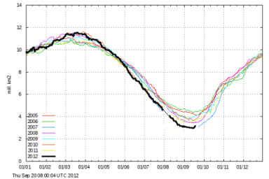d'une sp&eacute;culation. Nul de ne peut reconstituer le pass&eacute;. N&eacute;anmoins compte-tenu de la soudainet&eacute; de cet &eacute;v&eacute;nement cyclonique et de sa dur&eacute;e bien d&eacute;finie, on peut avancer une estimation de ce qu'aurait pu &ecirc;tre la fonte &quot;normale&quot; ' c'est &agrave; dire une fonte qui aurait &eacute;t&eacute; semblable &agrave; celle des ann&eacute;es pr&eacute;c&eacute;dentes en l'absence de ce cyclone destructeur. </p>
            <p class="texte">Ainsi peut-on  &ecirc;tre tent&eacute; de raccorder les deux portions du graphe pr&eacute;c&eacute;dent, avant et apr&egrave;s le cyclone bien d&eacute;limit&eacute;, en prolongeant la partie avant-cyclone par la partie apr&egrave;s-cyclone, les deux parties &eacute;tant reli&eacute;es par des pointill&eacute;s trac&eacute;s dans le prolongement des deux portions, comme cela se serait sans doute pass&eacute; lors d'une fonte &quot;normale&quot; analogue &agrave; celle des ann&eacute;es pr&eacute;c&eacute;dentes et comme je l'ai fait sur le graphique ci-contre. </p>
            <p class="texte">Autrement dit, si ce raisonnement est correct, on peut avancer que l'ouragan du 4-9 ao&ucirc;t a provoqu&eacute; la disparition d'une quantit&eacute; de glace au moins &eacute;gale &agrave; celle qui s&eacute;pare le minimum de 2007 de celui de 2012. Autrement dit encore, il est possible, sinon probable, que sans le cyclone du d&eacute;but du mois d'ao&ucirc;t , le record &eacute;tabli en 2007 aurait &eacute;t&eacute; approch&eacute; mais sans doute  pas battu. </p>
            <p class="textengras">Que peut-on dire du regel ? </p>
            <p class="texte">Dans le m&ecirc;me ordre d'id&eacute;e, et toujours en sp&eacute;culant, on peut se dire que les d&eacute;g&acirc;ts provoqu&eacute;s par le cyclone qui ont conduit &agrave; une fonte acc&eacute;l&eacute;r&eacute;e ont plus ou moins durablement modifi&eacute; l'&eacute;tat d'&eacute;quilibre de la couverture glac&eacute;e. Compte tenu du fait que les conditions environnementales (oc&eacute;ans et temp&eacute;rature de l'air) ne sont pas notablement diff&eacute;rentes de celles des ann&eacute;es pr&eacute;c&eacute;dentes, il est probable que le retour au r&eacute;gime de fonte normale, suivi du 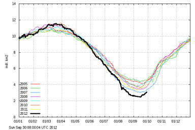regel, se fera plus rapidement que lors des ann&eacute;es pr&eacute;c&eacute;dentes. C'est l'id&eacute;e assez g&eacute;n&eacute;rale du &quot;rebond&quot; &eacute;voqu&eacute;e plus haut que l'on percevait sur le graphique DMI et sur les images du National Ice Center. D'autre part, il est, du point de vue thermodynamique moins co&ucirc;teux de regeler une surface fragment&eacute;e plut&ocirc;t qu'une glace fondue en mer libre, ce qui devrait logiquement conduire &agrave; un regel un peu plus rapide. </p>
            <p class="texte">A ce propos, voici ce que nous montre l<span class="textengras">'Institut M&eacute;t&eacute;orologique Danois</span> en ce 30 Septembre 2012 :</p>
            <p class="texte">Comme on peut l'observer, le regel appara&icirc;t comme anticip&eacute; de quelques jours par rapport &agrave; celui qui a eu lieu lors des ann&eacute;es pr&eacute;c&eacute;dentes. Il est possible que, sauf temp&ecirc;te inopin&eacute;e, la courbe de l'extension de glace 2012 recoupe celle de 2007 dans quelques jours. D&egrave;s lors, les effets destructeurs du cyclone des 4-9 Ao&ucirc;t seront parfaitement localis&eacute;s et apparents sur ces graphiques.</p>
            <p class="texte">Mais, je le r&eacute;p&egrave;te, ce ne sont que l&agrave; que des hypoth&egrave;ses, des sp&eacute;culations.</p>
            <p class="texte"></p>
            <p class="textengras">Mise &agrave; jour et compl&eacute;ments du 3 D&eacute;cembre 2012 </p>
            <p class="textengras"><span class="texte">Toujours &agrave; propos du regel qui, d'apr&egrave;s les consid&eacute;rations pr&eacute;c&eacute;dentes, devait se produire plus rapidement qu'&agrave; l'ordinaire, voici, ci-contre le graphe <a href="http://ocean.dmi.dk/arctic/old_icecover.uk.php">DMI</a> (Danish Meteorological Institute) publi&eacute; au 3 D&eacute;c. 2012</span>.</p>
            <p class="texte">Comme nous nous y attendions et compte tenu du caract&egrave;re accidentel de la fonte de ce d&eacute;but d'automne, le regel a &eacute;t&eacute; nettement plus rapide que lors des ann&eacute;es pr&eacute;c&eacute;dentes. Cette rapidit&eacute; inhabituelle du regel est clairement apparente entre le 10 Octobre et le 20 Octobre. Il appara&icirc;t que ce regel exceptionnellement rapide est approximativement le sym&eacute;trique, par rapport au minimum d'extension, atteint vers le 15 Septembre, de la fonte rapide qui s'&eacute;tait produite au d&eacute;but du mois d'Ao&ucirc;t. Autrement dit la glace s'est reform&eacute;e presqu'aussi rapidement qu'elle avait disparu &agrave; l'&eacute;poque de la temp&ecirc;te mentionn&eacute;e ci-dessus. <br />
            Apr&egrave;s le 1er Novembre, l'&eacute;tendue de la glace Arctique a progressivement rejoint son extension de ces derni&egrave;res ann&eacute;es. . </p></td>
        </tr>
      </table>
      <p><span class="titre">3) La banquise antarctique en 2012 :</span></p>
      <p><span class="texte">A l'oppos&eacute; de celle de l'Arctique, la glace de mer qui entoure le continent Antarctique passe, en fin Septembre, par son extension maximale.</span></p>
      <p>&nbsp;</p>
      <p><span class="texte"><br />
        L'&eacute;volution temporelle de l'extension de la banquise antarctique, durant une partie de l'ann&eacute;e 2012, est repr&eacute;sent&eacute;e en bleu sur le graphique suivant (National Snow and Ice Center US : NSIDC) dat&eacute; au 29 Sept. 2012. </span></p>
      <p><span class="texte">Le trait noir &eacute;pais indique la moyenne de r&eacute;f&eacute;rence de l'&eacute;tendue de la banquise entre les ann&eacute;es 1979 &agrave; 2000. </span></p>
      <p><span class="texte">Le tiret&eacute; repr&eacute;sente l'&eacute;volution de l'&eacute;tendue de la banquise en 2011. </span></p>
      <p class="texte"><span class="textengras"><a href="ftp://sidads.colorado.edu/DATASETS/NOAA/G02135/south/daily/data">Les donn&eacute;es chiffr&eacute;es de La NOAA</a> </span>(en format Excel .csv) nous indiquent que <span class="textengras">le pr&eacute;c&eacute;dent record d'extension qui datait du mois de Septembre 2006 a &eacute;t&eacute; exc&eacute;d&eacute; pendant plusieurs jours (en particulier durant les 264&egrave;me &agrave; 270&egrave;mes jours de l'ann&eacute;e avec un maximum absolu, qui est le nouveau record &eacute;gal &agrave; 19,45418 millions de km2.</span><br />
        (Voir un graphique tir&eacute; de donn&eacute;es de la NOAA, par exemple <a href="http://sunshinehours.files.wordpress.com/2012/09/antarctic_sea_ice_extent_zoomed_day_2721.png">ici</a>)</p>
      <p class="texte">Il est &eacute;galement <a href="http://www.cru.uea.ac.uk">vrai </a>que la temp&eacute;rature moyenne de la surface des mers (HadSST)de l'h&eacute;misph&egrave;re Sud s'est l&eacute;g&egrave;rement refroidie (pr&egrave;s d'un dixi&egrave;me de degr&eacute;) au cours des 15 derni&egrave;res ann&eacute;es, ce qui explique peut-&ecirc;tre cela.</p>
      <p class="texte"><span class="textengras">Ainsi, en cette ann&eacute;e 2012, exactement   &agrave; l'oppos&eacute; de celle de l'Arctique, l'&eacute;tendue de la banquise Antarctique a battu son record absolu d'extension maximale... </span>&quot;De tous les temps&quot; &eacute;criraient certains, mais, en r&eacute;alit&eacute;, plus modestement, depuis les 32 derni&egrave;res ann&eacute;es pour lesquelles nous disposons des mesures satellitaires fiables. </p>
      <p class="textengras">Mais que nous disent les mod&egrave;les informatiques du GIEC au sujet de l'Antarctique ? </p>
      <p class="texte">Concernant  l'&eacute;volution de la banquise antarctique en cette fin Septembre 2012, on n'aurait, sans doute, aucun mal &agrave; trouver un &quot;expert&quot; qui affirmerait que ces observations sont &quot;coh&eacute;rentes avec les mod&egrave;les et avec ce que nous attendons&quot;... <span class="textengras">Ce serait  contraire &agrave; la v&eacute;rit&eacute;</span> selon un article tout r&eacute;cent publi&eacute; sur ce sujet dans une revue scientifique av&eacute;r&eacute;e par des sp&eacute;cialistes de l'Antarctique. <br />
        En r&eacute;alit&eacute;, 
        les mod&egrave;les les plus r&eacute;cents et les plus sophistiqu&eacute;s, <span class="textengras">en particulier ceux du CMIP5 (Couple models Intercomparison Project 5) sur lesquels s'appuira le prochain rapport AR5 du GIEC, trouvent des &eacute;volutions oppos&eacute;es &agrave; celles des observations.</span></p>
      <p class="texte">C'est ainsi que des participants du <span class="textengras">British Antarctic Survey </span>&agrave; Cambridge (UK) ont tout r&eacute;cemment publi&eacute; un article qui compare les pr&eacute;dictions/pr&eacute;visions/sc&eacute;narios des mod&egrave;les CMIP5 avec la r&eacute;alit&eacute; objective. Leurs conclusions, mentionn&eacute;es dans le r&eacute;sum&eacute;, sont sans appel. </p>
      <p class="texte">_________________________________________________________________________________________________________</p>
      <p>Journal of Climate&nbsp;2012 ; doi:<span class="texte">&nbsp;<a href="http://dx.doi.org/10.1175/JCLI-D-12-00068.1">http://dx.doi.org/10.1175/JCLI-D-12-00068.1</a></span></p>
      <p><a href="http://journals.ametsoc.org/doi/abs/10.1175/JCLI-D-12-00068.1?af=R" class="texte">An Initial Assessment of Antarctic Sea Ice Extent in the CMIP5 Models</a></p>
      <p>&quot;Une premi&egrave;re estimation de l'&eacute;tendue de la banquise antarctique dans les mod&egrave;les CMIP5.&quot; </p>
      <p><strong>John&nbsp;Turner,&nbsp;Tom&nbsp;Bracegirdle,&nbsp;Tony&nbsp;Phillips,&nbsp;Gareth J.&nbsp;Marshall, and&nbsp;J. Scott&nbsp;Hosking<br />
      </strong><span class="texte">British Antarctic Survey, National Environment Research Council, Cambridge, UK</span></p>
      <p class="texte">Le r&eacute;sum&eacute; de cet article paru dans le Journal of Climate (une publication bien connue de l'AMS, l'American Meteorological Society) est tr&egrave;s explicite &agrave; ce sujet. Le voici, suivi de sa traduction en fran&ccedil;ais :</p>
      <p>Abstract : <span class="legende">We examine the annual cycle and trends in Antarctic sea ice extent (SIE)   for 18 Coupled Model Intercomparison Project 5 models that were run   with historical forcing for the 1850s to 2005. Many of the models have an annual SIE [sea ice extent] cycle that differs markedly from that observed over the last 30 years. The   majority of models have too small a SIE at the minimum in February,   while several of the models have less than two thirds of the observed   SIE at the September maximum. In contrast to the satellite data, which   exhibits a slight increase in SIE, the mean SIE of the models over 1979 -   2005 shows a decrease in each month, with the greatest multi-model mean percentage monthly decline of 13.6% dec-1&nbsp;in February and the greatest absolute loss of ice of -0.40 &times; 106&nbsp;km2&nbsp;dec-1&nbsp;in September. The models have very large differences in SIE over 1860 &ndash; 2005. Most of the control runs have statistically significant trends in SIE over their full time span and <strong class="legende">all the models have a negative trend in SIE since the mid-Nineteenth Century. </strong>The negative SIE trends in most of the model runs over 1979 - 2005 are a continuation of an earlier decline, suggesting that the processes responsible for the observed increase over the last 30 years are not being simulated correctly.</span></p>
      <table width="835" border="1">
        <tr>
          <td height="129" valign="top" bgcolor="#CCFFFF"><p>R&eacute;sum&eacute; : <span class="texte">Nous examinons les tendances et le cycle annuel de l'extension de la glace antarctique (SIE) (NdT : Sea ice extent) pour 18 mod&egrave;les coupl&eacute;s du CMIP5 qui ont fonctionn&eacute; avec le for&ccedil;age historique depuis les ann&eacute;es 1850 &agrave; 2005. </span>Un grand nombre de mod&egrave;les ont un cycle d'extension de la glace de mer (SIE) qui diff&egrave;re notablement de celui qui est observ&eacute; depuis les 30 derni&egrave;res ann&eacute;es. La majorit&eacute; des mod&egrave;les pr&eacute;sentent une extension de la glace de mer (SIE) au minimum de F&eacute;vrier trop faible, tandis que plusieurs des mod&egrave;les pr&eacute;sentent des extensions qui sont moindres que les deux tiers de ce qui est observ&eacute; lors du maximum de Septembre.<span class="texte"> En opposition avec les observations satellitaires qui montrent une petite augmentation de l'extension (SIE), l'extension moyenne de la glace de mer donn&eacute;e par les mod&egrave;les pour la p&eacute;riode 1979-2005 montre une d&eacute;croissance lors de chaque mois [...] Les mod&egrave;les pr&eacute;sentent de tr&egrave;s grandes diff&eacute;rences de l'extension de la glace Antarctique (SIE) durant la p&eacute;riode 1860-2005. La plupart des r&eacute;alisations des mod&egrave;les de contr&ocirc;le pr&eacute;sentent des tendance statistiquement significatives de la SIE durant la dur&eacute;e totale de leur excursion et </span><span class="textengras">tous les mod&egrave;les pr&eacute;sentent une tendance &agrave; la d&eacute;croissance depuis la derni&egrave;re moiti&eacute; du XIX&egrave;me si&egrave;cle.</span><span class="texte"> La tendance n&eacute;gative de l'extension de la glace de mer dans la plupart des mod&egrave;les qui vont de 1979 &agrave; 2005 est le prolongement d'un d&eacute;clin pr&eacute;c&eacute;dent </span><span class="textengras">ce qui sugg&egrave;re que les processus responsables de l'augmentation observ&eacute;e durant les trente derni&egrave;res ann&eacute;es ne sont pas simul&eacute;s correctement. </span></p></td>
        </tr>
      </table>
      <br />
      <p class="texte">Autrement dit, et contrairement &agrave; ce qui est affirm&eacute; ici o&ugrave; l&agrave;, <span class="textengras">les mod&egrave;les du GIEC pr&eacute;voient une diminution de l'extension de la glace de mer antarctique alors que les observations objectives montrent exactement le contraire</span>. Dans ces conditions, la conclusion des auteurs qui &eacute;crivent que les &quot;processus responsables de l'augmentation observ&eacute;e durant les trente derni&egrave;res ann&eacute;es ne sont pas simul&eacute;es correctement&quot; est un pur euph&eacute;misme sp&eacute;cifique au langage scientifique. </p>
      <p class="texte">En r&eacute;sum&eacute; et quelle qu'en soient les causes, les observations montrent que, depuis que l'on dispose de donn&eacute;es fiables, c'est &agrave; dire depuis 1980, la superficie de la glace Arctique diminue (durant l'&eacute;t&eacute; bor&eacute;al), tandis que la superficie de la glace de mer Antarctique augmente (durant l'hiver Austral), &agrave;  peu pr&egrave;s, &agrave; la m&ecirc;me &eacute;poque de l'ann&eacute;e. <span class="textengras">Pour les lecteurs familiers de ce site, ceci &eacute;voque immanquablement un ph&eacute;nom&egrave;ne qui j'ai mentionn&eacute; &agrave; plusieurs reprise dans cette m&ecirc;me (longue) page : La &quot;bascule polaire&quot;.  </span></p>
      <p class="titre">4) Quelques rappels compl&eacute;mentaires sur la &quot;bascule polaire&quot;, le &quot;polar seesaw&quot; en anglais : </p>
      <p class="texte">J'ai &eacute;voqu&eacute; cette question dans le cours de plusieurs billets pr&eacute;c&eacute;dents auxquels le lecteur int&eacute;ress&eacute; pourra se r&eacute;f&eacute;rer. En particulier :<span class="textengras"><br />
      </span>08 Juillet 2010 <span class="textengras">: <a href="oceans.html#bascule">La bascule polaire<br />
      </a></span>18 Juillet 2010 : <span class="textengras"> <a href="oceans.html#wap">la P&eacute;ninsule Ouest de l'Antarctique</a>.<br />
      </span>09 Mai 2011 : <span class="textengras"><a href="oceans.html#ola">La ola et les oscillations climatiques</a></span></p>
      <p class="texte">A titre d'illustration de ce ph&eacute;nom&egrave;ne qui mobilise l'attention de plusieurs groupes de chercheurs (Tsonis, Chylek et al, etc.), voici un graphe qui figure dans <a href="http://www.ipcc.ch/ipccreports/far/wg_I/ipcc_far_wg_I_full_report.pdf">le premier rapport complet du GIEC </a>(le FAR, le first assessment report, 1990), &agrave; la page 224 : </p>
      <p></p>
      <p>&nbsp;</p>
      <p>&nbsp;</p>
      <p class="texte">Ce graphique en deux parties montre l'&eacute;volution de l'anomalie (c'est &agrave; dire par rapport &agrave; une valeur moyenne de r&eacute;f&eacute;rence d&eacute;pendante du temps), de 1973 &agrave; 1990 (date du rapport FAR) des extensions de la glace de mer pour</p>
      <p class="texte">&nbsp;</p>
      <p>l'h&eacute;misph&egrave;re Nord (c'est &agrave; dire essentiellement l'Arctique): (a) en haut</p>
      <p>&nbsp;</p>
      <p>&nbsp;</p>
      <p>&nbsp;</p>
      <p>l'h&eacute;misph&egrave;re Sud, (c'est &agrave; dire essentiellement l'Antarctique) : (b), en bas</p>
      <p>&nbsp;</p>
      <p class="texte">D'apr&egrave;s les donn&eacute;es d&eacute;tenues &agrave; l'&eacute;poque par la NOOA US. M&ecirc;me si on imagine les difficult&eacute;s qu'on devait &eacute;prouver, &agrave; cette &eacute;poque, pour obtenir des donn&eacute;es fiables pour l'ensemble des bassins, il est assez apparent que les anomalies des extensions des glaces de mer des deux p&ocirc;les ont vari&eacute; en opposition de phase, en accord avec les observations de la &quot;bascule polaire&quot;. A cette &eacute;poque, le GIEC n'en a tir&eacute; aucune conclusion ni invit&eacute; &agrave; aucune direction de recherche dans ce sens. </p>
      <p><br />
        <br />
      </p>
      <p>&nbsp;</p>
      <p>&nbsp;</p>
      <p></p>
      <p>Toujours &agrave; titre de rappel et d'illustration, <span class="texte">on peut se rem&eacute;morer le graphe ci-contre qui est tir&eacute; d'un article de</span> Petr Chylek, Chris K. Folland, Glen Lesins, et Manvendra K. Dubey : </p>
      <p>Bascule bi-polaire du vingti&egrave;me si&egrave;cle des temp&eacute;ratures de surface de l'Arctique et de l'Antarctique.<br />
        <span class="texte">&quot;<a href="http://www.agu.org/pubs/crossref/2010/2010GL042793.shtml">Twentieth century bipolar seesaw of the Arctic and Antarctic surface air temperatures&quot;</a></span><br />
        <span class="texte">GEOPHYSICAL RESEARCH LETTERS, VOL. 37, L08703, doi:10.1029/2010GL042793, 2010 (publi&eacute; le 22 Avril 2010).</span></p>
      <p>&nbsp;</p>
      <p class="textengras">L&eacute;gende de la figure ci-contre : </p>
      <p class="texte">&quot;Figure 2. (a) S&eacute;ries temporelles de temp&eacute;rature corrig&eacute;es <br />
        de l'Arctique (en bleu ) <br />
        de l'Antarctique (en rouge ). <br />
        Les donn&eacute;es sont liss&eacute;es avec une moyenne glissante sur une dur&eacute;e de 11 ans (lignes fines) et de 17 ans (lignes &eacute;paisses).<br />
  &quot;(b) Les valeurs annuelles de indice de l'AMO [d'apr&egrave;s Parker et al., 2007] (ligne fine) et la moyenne glissante sur 17 ans (ligne &eacute;paisse).&quot;</p>
      <p>&nbsp;</p>
      <p class="titre">&nbsp;</p>
      <p class="titre">&nbsp;</p>
      <p class="titre">&nbsp;</p>
      <p class="titre">&nbsp;</p>
      <p class="titre"><span class="texte"></span></p>
      <p class="titre">&nbsp;</p>
      <p class="titre"><span class="texte">Selon  </span><span class="textengras">P. Chylek et al,</span> <span class="texte">la bascule polaire (c'est &agrave; dire le fait que les anomalies de fonte et de regel des p&ocirc;les Nord et Sud soient en opposition de phase) serait li&eacute;e &agrave;</span><span class="textengras"> l'Oscillation Multid&eacute;cennale Atlantique (AMO) </span><span class="texte"> comme on le voit sur le graphe suivant tir&eacute; d'un article plus ancien de P. Chylek et al, <a href="index.html#AMO1">comment&eacute; dans ce billet</a>.</span> <span class="texte">Ce graphe montre une superposition de la temp&eacute;rature en Arctique depuis 1910, avec l'indice AMO selon deux sources (NOAA et Parker). </span></p>
      <p><br />
      </p>
      <p class="texte">&nbsp;</p>
      <p>A l'&eacute;vidence, la mer glac&eacute;e Arctique est dans une p&eacute;riode de fonte. Alors ou en sommes-nous actuellement pour ce qui est de l'&eacute;volution de l'AMO ?</p>
      <p>Voici la situation de l'AMO selon <a href="http://www.esrl.noaa.gov/psd/data/timeseries/AMO">l'ESRL de la NOAA</a> <span class="texte">(Graphique du Prof. Humlum &agrave; <a href="http://www.climate4you.com/images/AMO%20GlobalAnnualIndexSince1856%20With11yearRunningAverage.gif">Climat4you</a>)</span>:  </p>
      <p>&nbsp;</p>
      <p class="Style16"><span class="textengras">Indice annuel de l'Oscillation Multid&eacute;cennale Atlantique (AMO) depuis 1856. </span><span class="texte">La ligne fine indique une moyenne sur 3 mois et la ligne &eacute;paisse est liss&eacute;e sur 11 mois. Derni&egrave;re ann&eacute;e indiqu&eacute;e 2011. Diagramme mis &agrave; jour le 3 F&eacute;vrier 2012.</span></p>
      <p><span class="texte">Comme on le voit, </span><span class="textengras">nous sommes actuellement sur un maximum de l'indice AMO ce qui, si le lien entre la bascule polaire est l'AMO se v&eacute;rifie, </span>devrait entra&icirc;ner, dans un futur proche, un regel progressif de l'Arctique et une fonte, non moins progressive de l'Antarctique.<br />
      A noter que des corr&eacute;lations entre l'AMO et des <a href="oceans.html#ola">fontes et des regels, </a> notamment des <a href="oceans.html#huss2">glaciers alpins</a>, <a href="oceans.html#helheim">groenlandais</a>,  ont d&eacute;j&agrave; &eacute;t&eacute; signal&eacute;es et &eacute;tudi&eacute;es. </p>
      <p>Bien entendu, tout cela reste &agrave; suivre avec attention dans les ann&eacute;es qui viennent. </p>
      <p class="titre">5) Addendum : <span class="textengras">Probl&egrave;mes de mesure de l'extension des  mers glac&eacute;es.</span></p>
      <table width="748" border="1">
        <tr>
          <td width="738" bgcolor="#CCFFFF"><p class="texte">Il faut savoir que les observations satellites classiques fonctionnent avec des r&eacute;cepteurs Infrarouges passifs (SSMIS) qui d&eacute;tectent les diff&eacute;rences d'intensit&eacute; des flux IR &eacute;mis par la mer libre et par la mer glac&eacute;e. Ces derniers ont parfois du mal &agrave; percevoir les nuances lorsque les glaces sont assez fortement fragment&eacute;es comme cela a &eacute;t&eacute; le cas apr&egrave;s le passage du cyclone, conduisant  &agrave; une sous-estimation de la surface glac&eacute;e. A l'oppos&eacute;, Le National Ice Center utilise plusieurs autres m&eacute;thodes compl&eacute;mentaires qui lui permettent une meilleure pr&eacute;cision. Ceci est indispensable quand on sait que le Nat. Ice Center fournit des produits destin&eacute;s &agrave; s&eacute;curiser la navigation dans ces zones hostiles. <br />
            C'est aussi pour corriger ces d&eacute;fauts de perception des d&eacute;tecteurs passifs qu'ont &eacute;t&eacute; r&eacute;cemment mises au point des analyses multi-d&eacute;tecteurs telles que le <a href="http://nsidc.org/data/masie" class="textengras">MASIE</a> (Multisensor Analysed Sea Ice Extent). 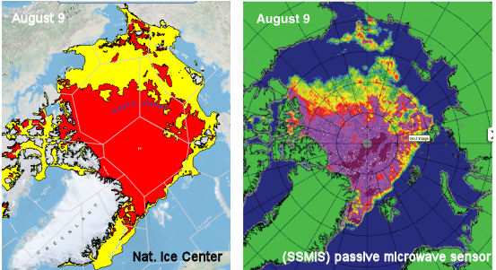</p>
            <p class="texte"><br />
              A titre d'illustration, voici (&agrave; droite) comment les dispositifs satellites passifs comme ceux qui sont utilis&eacute;s par la plupart des institutions qui figurent dans la page &quot;<a href="indicateurs.html">indicateurs</a>&quot;, ont per&ccedil;u la situation de la glace le 9 ao&ucirc;t 2012, &agrave; comparer avec l'analyse de la situation (&agrave; gauche) donn&eacute;e par le Nat. Ice Center, pour la m&ecirc;me date. Les diff&eacute;rences sont notables  pour ne pas dire cruciales, notamment pour les navigateurs.</p>
            <p class="textengras">Les d&eacute;tecteurs classique SSMIS indiquent des zones libres de glace dans des r&eacute;gions qui apparaissent s&eacute;rieusement encombr&eacute;es  lors d'une analyse plus compl&egrave;te. </p>
            <p class="texte"><a href="http://nsidc.org/arcticseaicenews/files/2012/08/Figure4.png">Dans l'image de droite</a>, les couleurs magenta et pourpre indiquent une concentration de glace proche de 100%. Le jaune, le vert et le bleu pale indiquent des concentrations allant de 60 &agrave; 20%. </p></td>
        </tr>
      </table>
      <p class="titre">6) R&eacute;sum&eacute; et conclusion : </p>
      <p class="textengras">-<span class="texte">Il n'est pas douteux, au moins depuis que nous disposons de mesures fiables et compl&egrave;tes des extensions des mers de glace des deux p&ocirc;les, c'est &agrave; dire depuis une trentaine d'ann&eacute;es, que la surface de la banquise arctique diminue d'ann&eacute;e en ann&eacute;e et que la banquise antarctique augmente en proportion. Il est hasardeux d'en tirer des conclusions pour l'avenir sachant que de nombreux r&eacute;cits de navigateurs et de scientifiques (notamment Russes), quoique parcellaires, attestent de fontes similaires, suivies de regels, durant le si&egrave;cle pr&eacute;c&eacute;dent et la fin du XIX&egrave;me si&egrave;cle. Il s'agit peut-&ecirc;tre d'un ph&eacute;nom&egrave;ne cyclique avec une p&eacute;riode qui exc&egrave;de sensiblement la faible dur&eacute;e de nos observations (Par exemple, r&eacute;sultant du cycle de 60 ans de l'AMO). </span></p>
      <p class="textengras">-La fonte de l'Arctique, en cette ann&eacute;e 2012, r&eacute;sulte de la conjonction exceptionnelle d'une glace fragilis&eacute;e avec un &eacute;v&eacute;nement m&eacute;t&eacute;orologique (un cyclone intense et durable) rare. En toute honn&ecirc;tet&eacute;, cette fonte exceptionnelle ne peut et ne doit pas servir d'argument pour ceux qui cultivent syst&eacute;matiquement l'alarmisme, comme cela s'est vu fr&eacute;quemment dans les m&eacute;dias. </p>
      <p><span class="textengras">-</span><span class="texte">On observe, une fois de plus, une anticorr&eacute;lation entre les anomalies du p&ocirc;le Sud et du p&ocirc;le Nord. Les deux records d'extension (minimal et maximal) semblent avoir &eacute;t&eacute; battus en m&ecirc;me temps. Cette conjonction r&eacute;sulte peut-&ecirc;tre d'une co&iuml;ncidence m&ecirc;me si elle recoupe un grand nombre d'observations sur de plus longues dur&eacute;es sur lesquelles des chercheurs travaillent activement. </span></p>
      <p class="texte"><span class="textengras">L&agrave; encore, &quot;Wait and see&quot;. Nous le saurons bient&ocirc;t. </span></p>
      <p class="texte"><span class="textengras"><br />
      </span></p></th>
    </tr>
    <tr bgcolor="#CCFFFF">
      <th height="4735" align="left" valign="top" bordercolor="#FFFFFF" bgcolor="#CCFFFF" class="textengras" scope="col"><p>08 Juin 2012 : <a name="bjork" id="bjork"></a> <span class="titre">Dans les ann&eacute;es 1930-40, </span><span class="titre">le retrait des glaciers du Sud-Est Groenlandais &eacute;tait tr&egrave;s semblable &agrave; ce qu'il est dans la p&eacute;riode pr&eacute;sente.</span></p>
        <p class="titre">1) Introduction :</p>
        <p class="texte">Nous allons pr&eacute;senter ci-dessous un article qui comble, de mani&egrave;re convaincante, une lacune fr&eacute;quemment rencontr&eacute;e en climatologie. <br />
        En bref :</p>
        <ul>
          <li><span class="texte">Un grand nombre d'observations relatives au climat reposent sur le suivi des donn&eacute;es satellitaires qui ne sont devenues disponibles que depuis le d&eacute;but des ann&eacute;es 1980, soit depuis une trentaine d'ann&eacute;es.</span> <span class="texte">Il se trouve que, de mani&egrave;re fortuite mais non sans cons&eacute;quences, le d&eacute;but des observations satellitaires a pr&eacute;cis&eacute;ment co&iuml;ncid&eacute; avec un refroidissement temporaire de la temp&eacute;rature de la plan&egrave;te (qui avait fait craindre &agrave; certains <a href="betisier.html">le retour d'un &quot;petit &acirc;ge glaciaire</a>&quot;) qui faisait suite &agrave; un r&eacute;chauffement temporaire qui s'est produit dans les ann&eacute;es 1910-1945 comme le savent les lecteurs attentifs de ce site. </span><span class="texte">Par la suite, c'est &agrave; dire dans la p&eacute;riode 1976-1998, la temp&eacute;rature de la plan&egrave;te a augment&eacute; de quelques cinq dixi&egrave;mes de degr&eacute;. D&egrave;s lors, ces nouveaux moyens d'observation ont permis d'observer, en direct, les cons&eacute;quences de ce r&eacute;chauffement (notamment la fonte ou le recul de certains glaciers), ce qui a sans doute contribu&eacute; &agrave; alimenter l'alarmisme climatique qui a domin&eacute; la p&eacute;riode r&eacute;cente. </span></li>
          <li class="texte">Pourtant, il ne suffit pas d'avoir constat&eacute; que, par exemple, les glaciers du Groenland ont subi un retrait durant les deux ou trois derni&egrave;res d&eacute;cennies pour en tirer des conclusions d&eacute;finitives comme le font certains. La question qui vient imm&eacute;diatement &agrave; l'esprit est &eacute;videmment la suivante : <br />
          &quot;Certes, on constate que les glaciers ont r&eacute;gress&eacute; durant la p&eacute;riode r&eacute;cente mais est-ce la premi&egrave;re fois ? Que s'est-il pass&eacute; auparavant ?&quot;.<br /> 
          Autrement dit et pour tout ce qui concerne l'&eacute;volution du climat, il est imp&eacute;ratif de s'en rapporter &agrave; l'histoire pr&eacute;c&eacute;dant la p&eacute;riode actuelle, comme nous (et beaucoup d'autres) le rappelons &agrave; de multiples reprises car cet imp&eacute;ratif semble quelque peu n&eacute;glig&eacute;. </li>
        </ul>
        <p class="texte"><span class="textengras">Dans cet esprit, l'article qui vient de para&icirc;tre dans Nature geoscience et que je vais vous pr&eacute;senter est importan</span>t parce qu'il nous permet, tout comme &agrave; l'&egrave;re satellitaire pr&eacute;sente, <span class="textengras">d'acc&eacute;der (enfin) &agrave; une vision directe et objective sur ce qui s'est pass&eacute; au Groenland durant les 50 ann&eacute;es qui ont pr&eacute;c&eacute;d&eacute; l'&egrave;re satellitaire.</span> S'agissant de photographies a&eacute;riennes, point n'est besoin, cette fois-ci, de faire appel aux multiples indicateurs indirects (les proxys) pour tenter d'&eacute;tablir une reconstruction du climat du pass&eacute;. Comme vous le savez, les r&eacute;sultats des multiples proxys (comme par exemple, les carottages glaciaires, les pollens, les cernes des arbres etc.) dont l'usage est pourtant indispensable pour remonter plus loin dans le temps, doivent raisonnablement &ecirc;tre consid&eacute;r&eacute;s avec une certaine prudence. <br />
          <span class="textengras">Rien ne vaut - c'est &eacute;vident - l'observation directe telle que celle qui est &agrave; la base de l'article mentionn&eacute; ci-dessous. </span><br />
          <span class="textengras"><br />
          Il s'agit, cette fois-ci, de photos a&eacute;riennes de l'&eacute;tat des embl&eacute;matiques (c'est le &quot;canari dans la mine&quot;) glaciers de la c&ocirc;te Sud-Est du Groenland, </span>miraculeusement exhum&eacute;s des archives de la septi&egrave;me exp&eacute;dition de Thul&eacute;, consacr&eacute;e aux zones c&ocirc;ti&egrave;res des &icirc;les de la zone arctique et dirig&eacute;e &agrave; l'&eacute;poque, c'est &agrave; dire &agrave; partir de 1932, par le <span class="textengras">Dr. Knud Rasmussen</span>.<br />
        <br /> 
        <span class="textengras">La Norv&egrave;ge et le Danemark &eacute;taient en comp&eacute;tition</span> depuis fort longtemps pour la possession du Groenland et la cour internationale devait trancher la question (en faveur du Danemark) en 1933. C'est dans ce contexte qu'il fut d&eacute;cid&eacute; de dresser des cartes d&eacute;taill&eacute;es de cette r&eacute;gion, en utilisant des photos a&eacute;riennes. Ces photographies furent classifi&eacute;es, &agrave; l'&eacute;poque, sous le sceau de ce qui s'apparenterait en France au &quot;secret d&eacute;fense&quot; et donc conserv&eacute;es par les militaires danois qui se gard&egrave;rent de les publier jusqu'&agrave; ce qu'elles soient enfin r&eacute;cemment red&eacute;couvertes et que la nouvelle parvienne au Museum d'Histoire Naturelle de Copenhague o&ugrave; officiait un jeune doctorant, <span class="textengras">Anders Bjork</span>. <br />
        Bjork  est le premier auteur de l'article analys&eacute; ci-dessous. Inutile de pr&eacute;ciser que, pour ce jeune doctorant, ce fut une v&eacute;ritable aubaine que, n'&eacute;tant pas sp&eacute;cialiste de la question, il s'empressa de partager avec les experts US et danois des glaciers Groenlandais.<br />
          <br />
        Comme s'en souviendront les lecteurs attentifs de ce site, ce n'est pas la premi&egrave;re fois que j'&eacute;voque les  progr&egrave;s accomplis gr&acirc;ce &agrave; l'exploitation de photos a&eacute;riennes historiques. Voici quelques rappels : </p>
        <p>Rappels au sujet de l'utilisation de photographies a&eacute;riennes historiques de l'&egrave;re pr&eacute;-satellitaire. <br />
        <span class="texte"><a href="oceans.html#atoll"></a></span></p>
        <ul>
          <li class="texte">Dans un <span class="textengras"><a href="oceans.html#atoll">billet pr&eacute;c&eacute;dent (du 1er ao&ucirc;t 2010)</a></span> je vous avais pr&eacute;sent&eacute; une &eacute;tude qui utilisait les photos a&eacute;riennes des atolls du pacifique prises pendant la derni&egrave;re guerre mondiale. Ces photos historiques compar&eacute;es aux photographies satellites modernes avaient permis &agrave; deux chercheurs, <span class="textengras"><a href="oceans.html#atoll">Arthur Webb et Paul Kench</a>,</span> de montrer que <span class="textengras">la surface &eacute;merg&eacute;e des &icirc;lots coralliens du Pacifique (tel celui repr&eacute;sent&eacute; sur l'image ci-contre) n'avait pas diminu&eacute; durant la p&eacute;riode r&eacute;cente mais, au contraire, avait augment&eacute; depuis la fin de la deuxi&egrave;me guerre mondiale </span>ce qui va &agrave; l'encontre des affirmations infond&eacute;es entretenues, notamment, par certaines agences environnementales. <br />
            <br />
          </li>
          <li class="texte">Plus loin dans le temps, dans<a href="bonnetdane.html#exemples"> un <span class="textengras Style45">billet du 21 oct. 2008</span></a><span class="textengras Style45">,</span> j'avais &eacute;voqu&eacute; les trouvailles de<a href="bonnetdane.html#box" class="textengras"> Jason Box </a>(&eacute;galement coauteur du pr&eacute;sent article) et de son &eacute;tudiant (Adam Herrington) qui avaient consult&eacute; plus d'une centaine de livres poussi&eacute;reux, datant des ann&eacute;es 30, &agrave; la recherche de photos historiques de quelques glaciers Groenlandais. Jason  Box disait : &quot;Ce qui est nouveau, &agrave; propos de cette affaire, c'est que nous avons trouv&eacute; une grande quantit&eacute; d'informations en partant de sources &quot;low-tech&quot; qui avaient &eacute;t&eacute; n&eacute;glig&eacute;s par les chercheurs.&quot; Les sources &quot;low-tech&quot; par opposition aux donn&eacute;es satellitaires &quot;hich-tech&quot;, sont les bouquins poussi&eacute;reux des rayonnages universitaires. Box et son coll&egrave;gue s'&eacute;taient particuli&egrave;rement int&eacute;ress&eacute;s  aux trois grands glaciers Groenlandais : le <a href="http://en.wikipedia.org/wiki/Jakobshavn_Isbr%C3%A6">Jakobshavn Isbrae</a>, le <a href="http://news.bbc.co.uk/2/hi/science/nature/4508964.stm">Kangerdlugssuaq</a> et le <a href="http://earthobservatory.nasa.gov/Newsroom/NewImages/images.php3?img_id=17158">Helheim</a>.  Jason Box racontait que : &quot;En cherchant dans les donn&eacute;es anciennes, Herrington a trouv&eacute; une carte de 1932 et une photo a&eacute;rienne de 1933 qui montraient que, durant la p&eacute;riode chaude, le Glacier de Kangerdlugssuaq a perdu un morceau de glace flottante qui faisait &agrave; peu pr&egrave;s la taille de l'&icirc;le de Manhattan de New York.&quot; Ce qui est assez proche de ce qu'on a pu lire r&eacute;cemment sous la plume de certains alarmistes qui ne signalaient pas qu'il y avait eu des pr&eacute;c&eacute;dents vers 1933 parce qu'ils avaient sans doute oubli&eacute; de consulter les archives.</li>
        </ul>
        <p class="texte">On peut donc voir l'article suivant comme l'&eacute;panouissement des premi&egrave;res trouvailles effectu&eacute;es en 2008 par Jason Box (et son &eacute;tudiant) qui s'&eacute;tait attach&eacute; &agrave; la recherche des archives photographiques existantes sur les glaciers Groenlandais.<br />
          <br />
          <span class="titre">2) L'article qui vient de para&icirc;tre dans Nature Geoscience est intitul&eacute;</span> : <br />
          <span class="textengras">&quot;Une vue a&eacute;rienne des fluctuations li&eacute;es au climat des glaciers du Sud-Est Groenlandais durant 80 ans&quot;.</span><br />
        <span class="texte">Cet article r&eacute;sulte d'une collaboration entre des chercheurs Danois de Copenhague et de Aarhus avec des chercheurs de l'universit&eacute; de l'Ohio (dont Jason Box). <br />
        <br />
        </span></p>
        <p>&nbsp;</p>
        <p>&nbsp;</p>
        <p>&nbsp;</p>
        <p>&nbsp;</p>
        <p>&nbsp;</p>
        <p>&nbsp;</p>
        <p>&nbsp;</p>
        <p class="texte"><span class="exposant">1</span>Centre for GeoGenetics, Natural History Museum of Denmark, University of Copenhagen, Copenhagen, Denmark,<br />
          <span class="exposant">2</span>DTU Space&mdash;National Space Institute, Technical University of Denmark, Department of Geodesy, Copenhagen, Denmark,<br />
        <span class="exposant">3</span>Geological Survey of Denmark and Greenland,<br />
        Department of Marine Geology and Glaciology, Copenhagen, Denmark,<br />
        <span class="exposant">4</span>Department of Geography, The Ohio State University, Columbus, USA,<br />
        <span class="exposant">5</span>Byrd Polar Research Center, The Ohio State University, Columbus,  USA,<br />
        <span class="exposant">6</span>Department of Geoscience, Aarhus University,  Denmark. </p>
        <p class="texte">Voici le r&eacute;sum&eacute; original suivi d'une traduction en fran&ccedil;ais : </p>
        <p class="texte"><span class="textengras">Abstract</span> : <span class="legende">Widespread retreat of glaciers has been observed along the southeastern margin of Greenland. This retreat has been associated with increased air and ocean temperatures. However, most observations are from the satellite era; presatellite observations of Greenlandic glaciers are rare. Here we present a unique record that documents the frontal positions for 132 southeast Greenlandic glaciers from rediscovered historical aerial imagery beginning in the early 1930s. We combine the historical aerial images with both early and modern satellite imagery to extract frontal variations of marine- and land-terminating outlet glaciers, as well as local glaciers and ice caps, over the past 80 years. The images reveal a regional response to external forcing regardless of glacier type, terminal environment and size. Furthermore, the recent retreat was matched in its vigour during a period of warming in the 1930s with comparable increases in air temperature. We show that many land-terminating glaciers underwent a more rapid retreat in the 1930s than in the 2000s, whereas marine-terminating glaciers retreated more rapidly during the recent warming.</span></p>
        <table width="854" border="1">
          <tr>
            <td bgcolor="#FFFFCC"><span class="textengras">R&eacute;sum&eacute; </span><span class="texte">: On a observ&eacute; un retrait g&eacute;n&eacute;ralis&eacute; des glaciers le long de la zone c&ocirc;ti&egrave;re Sud-Est du Groenland. Ce retrait a &eacute;t&eacute; associ&eacute; &agrave; une hausse des temp&eacute;ratures de l'air et de l'oc&eacute;an. Cependant, la plupart des observations ont &eacute;t&eacute; effectu&eacute;es durant l'&egrave;re satellitaire (NdT : c'est &agrave; dire depuis 1979) ; Les observations pre-satellitaires des glaciers groenlandais sont rares. Dans cet article nous pr&eacute;sentons des archives uniques qui documentent les positions du front de 132 glaciers du Sud-Est Groenlandais, tir&eacute;es des images a&eacute;riennes historiques red&eacute;couvertes qui proviennent du d&eacute;but des ann&eacute;es 1930. Nous combinons ces images a&eacute;riennes historiques  avec les images anciennes et modernes de l'&egrave;re satellitaire de mani&egrave;re &agrave; en extraire les variations des fronts des glaciers &agrave; terminaison marine ou terrestre, aussi bien que celles des glaciers localis&eacute;s et des couvertures glac&eacute;es, et ceci pour les 80 ann&eacute;es &eacute;coul&eacute;es. Les images montrent une r&eacute;ponse r&eacute;gionale au for&ccedil;age externe ind&eacute;pendamment du type de glacier, de l'environnement de sa terminaison et de sa taille. </span><span class="textengras">En outre, le retrait r&eacute;cent a &eacute;t&eacute; &eacute;gal&eacute; dans son intensit&eacute; pendant une p&eacute;riode de r&eacute;chauffement durant les ann&eacute;es 30 avec une augmentation comparable de la temp&eacute;rature de l'air. Nous montrons que beaucoup de glaciers qui se terminent sur terre ont subi un retrait plus rapide durant les ann&eacute;es 1930 que pendant les ann&eacute;es 2000, tandis que les glaciers qui se jettent dans l'oc&eacute;an se sont retir&eacute;s plus rapidement durant le r&eacute;chauffement r&eacute;cent. </span></td>
          </tr>
        </table>
        <p class="texte">Voici, &agrave; titre d'information, des images de l'avion utilis&eacute; &agrave; l'&eacute;poque et un exemplaire des nombreuses s&eacute;ries de photos qui ont servi &agrave; cette &eacute;tude. </p>
        <p></p>
      <p>&nbsp;</p>
      <p>&nbsp;</p>
      <p>&nbsp;</p>
      <p>&nbsp;</p>
      <p>&nbsp;</p>
      <p>&nbsp;</p>
      <p>&nbsp;</p>
      <p>&nbsp;</p>
      <p>&nbsp;</p>
      <table width="856" border="0">
        <tr>
          <td width="467" class="texte">L'hydravion Heinkell MK II  qui a servi, en 1933, aux cartographes durant la septi&egrave;me mission Thul&eacute;, sous la direction de Rasmussen. </td>
          <td width="373" class="texte"> Photographie a&eacute;rienne prise durant la septi&egrave;me exp&eacute;dition Thul&eacute; en 1933. Cette vue oblique a &eacute;t&eacute; prise &agrave; partir d'un hydravion Heinkel MKII (ci-contre). Elle montre une image du glacier Helheim &agrave; 4000 m d'altitude. Pour en tirer des donn&eacute;es chiffr&eacute;es, ces photographies ont subi des traitements informatis&eacute;es notamment pour tenir compte de l'obliquit&eacute; des prises de vue. </td>
        </tr>
      </table>
      <p>Voici une des figures importantes de cet article : </p>
      <p></p>
      <p><span class="texte">La lecture de cette collection d'images qui repr&eacute;sentent une succession de vues, prises &agrave; diff&eacute;rentes &eacute;poques de 1933 &agrave; 2010, des 600 km de la c&ocirc;te Sud-Est du Groenland (situation par rapport au Groenland indiqu&eacute;e en haut &agrave; gauche) est assez simple. La c&ocirc;te est orn&eacute;e de points rouges (indiquant un retrait) ou verts (indiquant une avanc&eacute;e) symbolisant les glaciers dont beaucoup sont &agrave; terminaison marine. La taille des points rouges ou verts indique respectivement la vitesse du retrait ou de l'avanc&eacute;e selon une &eacute;chelle (advance</span> myr<span class="exposant">-1</span> <span class="texte">soit avance (ou retrait) en m&egrave;tre par an) indiqu&eacute;e sur la droite du graphique.</span></p>
      <p class="texte">Comme on peut le voir imm&eacute;diatement et conform&eacute;ment au r&eacute;sum&eacute; de l'article, les ann&eacute;es 1933-1943 ont &eacute;t&eacute; le si&egrave;ge d'un recul marqu&eacute; des glaciers concern&eacute;s (nombreux points rouges de grande surface). Durant les p&eacute;riodes suivantes 1943-1965 et 1965-1973, on a assist&eacute; &agrave; une avanc&eacute;e remarquable de plusieurs de ces m&ecirc;mes glaciers. Puis, une nouvelle fonte (un recul) des glaciers a commenc&eacute; &agrave; partir des ann&eacute;es 1972-1980. Elle s'est poursuivie jusqu'&agrave; l'&eacute;poque actuelle o&ugrave; on retrouve une situation qui ressemble &agrave; celle des ann&eacute;es 30-40. <br />
        <span class="textengras">Les auteurs de l'articles pr&eacute;cisent qu'il faut distinguer le comportement des glaciers &agrave; terminaison terrestre (qui avaient plus recul&eacute; durant les ann&eacute;es 30-40 que durant la p&eacute;riode actuelle) des glaciers &agrave; terminaison marine (qui ont fait l'inverse).</span><br />
        <span class="titre"><br />
        3) Rappels des r&eacute;sultats de trois articles pr&eacute;c&eacute;dents sur les fontes et les variations de temp&eacute;rature observ&eacute;es au Groenland depuis plusieurs d&eacute;cennies : </span><br />
      </p>
      <p class="texte"><span class="textengras">A noter que les observations objectives cit&eacute;es ci-dessus et donc difficilement contestables, recoupent assez pr&eacute;cis&eacute;ment les conclusions de trois articles </span>que j'avais comment&eacute;s dans les mois pr&eacute;c&eacute;dents, dans cette m&ecirc;me page. Les trois graphes superpos&eacute;s ci-contre, sont relatifs de haut en bas &agrave; :<br />
          <br />
        </p>
      <ul>
        <li><a href="oceans.html#helheim">Les avanc&eacute;es et les reculs du glacier Helheim</a>  observ&eacute;s &agrave; partir des d&eacute;p&ocirc;ts sablonneux. ( Andresen et al, Nature Geo. 2011). <span class="texte">La fonte vers 1940 est proche de celle des ann&eacute;es 2000. </span></li>
        </ul>
      <p><br />
        <br />
        <br />
      </p>
      <ul>
        <li><a href="oceans.html#tempast">Les variations de temp&eacute;ratures au sommet du Groenland durant les 170 derni&egrave;res ann&eacute;es</a> (Kobashi et al., GRL 2011, carottages glaciaires) </li>
        </ul>
      <p>&nbsp;</p>
      <p>&nbsp;</p>
      <ul>
        <li><a href="oceans.html#greeen">Une reconstruction de l'extension de la fonte annuelle du Groenland de 1784 &agrave; 2009</a>.(Frauenfeld et al, JGR 2011)<span class="texte"> aboutit aux m&ecirc;me conclusions que l'article de Bjork et al. </span></li>
      </ul>
      <p>&nbsp;</p>
      <p><br />
        </p>
      <p>&nbsp;</p>
      <p><br />
          </p>
      <p><span class="texte">Il est &eacute;galement int&eacute;ressant de rapprocher ces observations des graphiques publi&eacute;es par</span> Pietr Chylek et al<span class="texte"> dans un article  (GRL 2009) que j'avais comment&eacute; dans un <a href="oceans.html#AMO1">billet pr&eacute;c&eacute;dent</a> (15 Juin 09) qui montrait la corr&eacute;lation apparente des variations des temp&eacute;ratures en Arctique avec l'indice AMO (Atlantic Multidecennal Oscillation). Comme on le voit, la p&eacute;riode des ann&eacute;es 30-40 a &eacute;t&eacute; l'occasion d'un r&eacute;chauffement g&eacute;n&eacute;ralis&eacute; de l'arctique et donc sans doute du Groenland, est &eacute;troitement corr&eacute;l&eacute;e avec une p&eacute;riode positive de l'indice AMO.</span></p>
      <p>&nbsp;</p>
      <p><br />
      </p>
      <p>D&egrave;s lors, on peut s'interroger sur la situation pr&eacute;sente de l'indice AMO afin de tenter une pr&eacute;diction sur le devenir des glaciers groenlandais et de la fonte de l'arctique. <span class="texte">Voici le graphique de l'&eacute;volution de l'AMO selon l<a href="http://www.esrl.noaa.gov/psd/data/timeseries/AMO">'ERSL de la NOAA</a>. </span></p>
      <p></p>
      <p class="texte">Comme on peut le constater, il appara&icirc;t que <span class="textengras">l'AMO oscille avec une p&eacute;riode l'ordre de 60 ans</span>, comme un certain nombre d'observables du climat. <br />
        Il semble que nous sommes actuellement sur un maximum de cet indice qui pourrait chuter dans les mois/ann&eacute;es &agrave; venir. D&egrave;s lors, on peut penser que le retrait des glaciers du Groenland pourrait s'arr&ecirc;ter et que ces derniers pourraient progresser comme ils l'ont fait dans les ann&eacute;es 1945 &agrave; 1975. </p>
      <p class="texte">Cette analyse, partag&eacute;e par de nombreux auteurs (Akasofu, Chylek, Gray etc.), n'est pas mentionn&eacute;e par les cosignataires de l'article ( Bjork et al) analys&eacute; ci-dessus qui pensent que la chute des temp&eacute;ratures des ann&eacute;es 50-80 provient plut&ocirc;t de l'abondance des a&eacute;rosols pr&eacute;sents &agrave; cette &eacute;poque mais qu'il est difficile d'&eacute;valuer, faute de satellites d'observation. <br />
        Cette hypoth&egrave;se des &quot;a&eacute;rosols&quot; est &eacute;galement soutenue dans les rapports du GIEC. <br />
        L'avenir nous dira qui avait raison.<br />
        ___________________________________________________________________________________________<br />
        <br />
        <span class="textengras">Conclusions : </span></p>
      <ul>
        <li class="textengras"><span class="texte">Au vu des r&eacute;sultats concordants des quatre articles cit&eacute;s ci-dessus et notamment de celui qui r&eacute;sulte de l'observation directe, on peut donc  tenir pour  certain que </span>la situation actuelle des glaciers SE du Groenland est proche de celle qui a pr&eacute;valu durant les ann&eacute;es 30-40, &agrave; une &eacute;poque o&ugrave; les taux de rejets de CO2 dans l'atmosph&egrave;re &eacute;taient, environ, cinq fois moins importants qu'&agrave; pr&eacute;sent. <span class="texte">A l'&eacute;vidence, ceci va dans le sens d'une explication &agrave; partir de causes naturelles et non anthropiques, telles que les oscillations oc&eacute;aniques. <br />
            </span><br />
        </li>
        <li><span class="texte">Il serait bon (et honn&ecirc;te) que les nombreux communiqu&eacute;s de presse et les multiples articles qui paraissent sur ce sujet avec des titres souvent tr&egrave;s alarmistes dans les m&eacute;dias et notamment dans la presse &eacute;crite, en fassent mention. <br />
  Il est certes toujours possible, selon les besoins, d'&eacute;voquer des sc&eacute;narios plus ou moins catastrophiques pour le futur, mais il est impossible de changer le pass&eacute; qui, peu &agrave; peu, se d&eacute;voile sous nos yeux. </span> <span class="texte">Le dissimuler  n'est rien d'autre qu'une d&eacute;sinformation caract&eacute;ris&eacute;e.</span></li>
        </ul>
      <p><span class="textengras">A suivre ...</span></p>
      <p><span class="texte">Stay Tuned !  <br />  
          <br />
        </span><span class="texte"><br />
          <br />
          </span></p></th>
    </tr>
    <tr bgcolor="#CCFFFF">
      <th height="5300" align="left" valign="top" bordercolor="#FFFFFF" bgcolor="#FFFFCC" class="textengras" scope="col"><p>21 Mai 2012 : <a name="glacier" id="glacier"></a><span class="titre">Parmi beaucoup d'autres, voici encore trois nouvelles observations   qui contredisent les affirmations alarmistes : </span></p>
        <ul>
          <li class="textengras">Au Groenland, la situation est beaucoup moins dramatique que les alarmistes l'avaient anticip&eacute;e. La contribution des glaciers &agrave; la hausse du niveau des mers sera tr&egrave;s limit&eacute;e. </li>
          <li class="textengras"> Contrairement aux supputations, les variations du niveau des mers dans le Pacifique tropical sont d'origine naturelle. On n'y distingue pratiquement pas de signature des gaz &agrave; effet de serre d'origine anthropique.</li>
          <li class="textengras">Contrairement aux affirmations alarmistes  qui sugg&egrave;rent une augmentation des &eacute;v&eacute;nements climatiques extr&ecirc;mes en cas de r&eacute;chauffement, on n'observe pas de variation d&eacute;tectable dans la fr&eacute;quence et l'intensit&eacute; des pr&eacute;cipitations   depuis plus de mille ans, au moins en Europe o&ugrave; l'&eacute;tude a &eacute;t&eacute; effectu&eacute;e. </li>
        </ul>
        <p class="titre">1) Observations de l'&eacute;volution des glaciers du Groenland : <br />
          <span class="texte">Une compilation des observations satellitaires sur l'&eacute;volution de la quasi-totalit&eacute; des glaciers &eacute;missaires du Groenland montre que les hypoth&egrave;ses ultra-alarmistes ant&eacute;rieures &eacute;taient infond&eacute;es. <br />
        Voici des &eacute;l&eacute;ments significatifs extraits d'un article r&eacute;cent paru dans la livraison du 4 Mai 2012 de la revue </span><span class="Science">Science</span><span class="textengras">. </span></p>
        <p></p>
        <p><span class="texte"><br />
        </span><span class="textengras">T. Moon,</span><span class="exposant">1,2</span><span class="textengras">* I. Joughin,</span><span class="exposant">2</span><span class="textengras"> B. Smith,</span><span class="exposant">2</span><span class="textengras"> I. Howat</span><span class="exposant">3,4</span><span class="texte"><br />
         (ci-contre, &agrave; droite,  le sourire de Twila Moon de l'Universit&eacute; de Washington &agrave; Seattle)</span> </p>
        <p><span class="exposant">1</span><span class="texte">Earth and Space Sciences, University of Washington, Seattle, WA 98195, USA.<br />
        </span><span class="exposant">2</span><span class="texte">Polar Science Center, Applied Physics Lab, University of Washington, Seattle, WA 98105, USA.<br />
        </span><span class="exposant">3</span>S<span class="texte">chool of Earth Sciences, Ohio State University, Columbus, OH 43210, USA.<br />
        </span><span class="exposant">4</span><span class="texte">Byrd Polar Research Center, Ohio State University, Columbus, OH 43210, USA.</span></p>
        <p>Abstract : <br />
          <span class="legende">Earlier observations on several of Greenland&rsquo;s outlet glaciers, starting near the turn of the 21st century, indicated rapid (annual-scale) and large (&gt;100%) increases in glacier velocity. Combining data from several satellites, we produce a decade-long (2000 to 2010) record documenting the ongoing velocity evolution of nearly all (200+) of Greenland&rsquo;s major outlet glaciers, revealing complex spatial and temporal patterns. Changes on fast-flow marine-terminating glaciers contrast with steady velocities on ice-shelf&ndash;terminating glaciers and slow speeds on land-terminating glaciers. Regionally, glaciers in the northwest accelerated steadily, with more variability in the southeast and relatively steady flow elsewhere. Intraregional variability shows a complex response to regional and local forcing. Observed acceleration indicates that sea level rise from Greenland may fall well below proposed upper bounds</span><span class="texte">.</span></p>
        <table width="832" border="1">
          <tr>
            <td width="822" bgcolor="#CCFFFF"><span class="texte">Les observations ant&eacute;rieures, effectu&eacute;es sur plusieurs  glaciers &eacute;missaires Groenlandais, qui commen&ccedil;aient au d&eacute;but du XXI&egrave;me si&egrave;cle, indiquaient une augmentation rapide (&agrave; l'&eacute;chelle de l'ann&eacute;e) et importante (&gt;100%) de la vitesse des glaciers. </span>En combinant les donn&eacute;es r&eacute;sultant de plusieurs satellites, nous fournissons une &eacute;tude portant sur une d&eacute;cennie ( de 2000 &agrave; 2010) et analysant l'&eacute;volution de la vitesse actuelle de presque tous (200+)  les glaciers &eacute;missaires Groenlandais, r&eacute;v&eacute;lant des comportements complexes dans le temps et dans l'espace<span class="texte">. Les variations des glaciers &agrave; flux rapide s'&eacute;coulant dans le mer s'opposent aux vitesses constantes des glaciers s'&eacute;coulant sur les nappes glac&eacute;es ainsi qu'&agrave; celles des vitesses lentes des glaciers qui s'&eacute;coulent sur de la terre. Pour ce qui concerne les aspects r&eacute;gionaux, les glaciers du Nord-Ouest ont constamment acc&eacute;l&eacute;r&eacute; avec une variabilit&eacute; plus importante dans le Sud-Est et des flux relativement stables ailleurs.La variabilit&eacute; intra-r&eacute;gionale met en &eacute;vidence une r&eacute;ponse complexe aux for&ccedil;ages local et r&eacute;gional.</span> L'acc&eacute;l&eacute;ration observ&eacute;e montre que la hausse du niveau marin r&eacute;sultant du Groenland peut se r&eacute;v&eacute;ler bien plus faible que les limites hautes qui ont &eacute;t&eacute; avanc&eacute;es. </td>
          </tr>
        </table>
        <p></p>
        <p class="texte">Voici un extrait significatif de la Figure 2 de l'article : </p>
        <p class="texte">&nbsp;</p>
        <p class="texte">&quot;Fig. 2. en bas:<br />
          <br />
        Distribution des vitesses des glaciers (tirets courts), densit&eacute; de vitesse liss&eacute;es (barres color&eacute;es) et vitesses moyennes (tirets longs) pour 7 ann&eacute;es de donn&eacute;es. La r&eacute;gion Nord-Ouest est en bleu avec des tirets marqueurs (c&ocirc;t&eacute; gauche) et la r&eacute;gion Sud-Ouest en gris avec des tiret&eacute;s marqueurs en rouge (c&ocirc;t&eacute; droit). Les lignes en tiret noir indiquent la vitesse moyenne r&eacute;gionale sur la d&eacute;cennie compl&egrave;te. (en haut pour le Sud-Ouest et en bas pour le Nord-Ouest). Seuls les glaciers pour lesquels il existe suffisamment de donn&eacute;es de 2000 &agrave; 2005 et de 2005 &agrave; 2010 sont inclus.&quot;</p>
        <p class="texte">Les ann&eacute;es sont en abscisses. Les ordonn&eacute;es sont gradu&eacute;es en km par an.</p>
        <p>&nbsp;</p>
        <p>&nbsp;</p>
        <p class="textengras">La conclusion de cet article est  plus pr&eacute;cise que le r&eacute;sum&eacute; : </p>
        <p>Conclusion :</p>
        <p class="legende">Finally, our observations have implications for recent work on sea level rise. Earlier research  used a kinematic approach to estimate upper bounds of 0.8 to 2.0 m for 21st-century sea level rise. In Greenland, this work assumed ice-sheet&ndash;wide doubling of glacier speeds (low-end scenario) or an order of magnitude increase in speeds (high-end scenario) from 2000 to 2010. Our wide sampling of actual 2000 to 2010 changes shows that glacier acceleration across the ice sheet remains far below these estimates, suggesting that sea level rise associated with Greenland glacier dynamics remains well below the low-end scenario (9.3 cm by 2100) at present. Continued acceleration, however, may cause sea level rise to approach the low-end limit by this century&rsquo;s end. Our sampling of a large population of glaciers, many of which have sustained considerable thinning and retreat, suggests little potential for the type of widespread extreme (i.e., order of magnitude) acceleration represented in the high-end scenario (46.7 cm by 2100). Our result is consistent with findings from recent numerical flow models (34). </p>
        <table width="830" height="106" border="1">
          <tr>
            <td height="100" bgcolor="#CCFFFF" class="texte">Enfin, nos observations ont des implications pour le travail effectu&eacute; r&eacute;cemment au sujet de la hausse du niveau des mers. Les recherches ant&eacute;rieures ont utilis&eacute; une approche cin&eacute;matique pour estimer les limites hautes de la hausse du niveau des mers,<span class="textengras"> allant de 0,8m &agrave; 2,0 m pour le XXI&egrave;me si&egrave;cle</span>. Pour ce qui concerne le Groenland, ce travail supposait un doublement de la vitesse des glaciers sur toute l'&eacute;tendue de la nappe glac&eacute;e (sc&eacute;nario de la limite basse) ou d'une augmentation d'un ordre de grandeur des vitesses (sc&eacute;nario de la limite haute), de 2000 &agrave; 2010. <span class="textengras">Notre &eacute;chantillonnage des variations r&eacute;elles de 2000 &agrave; 2010 montre que l'acc&eacute;l&eacute;ration des glaciers sur l'&eacute;tendue de la nappe glac&eacute;e est tr&egrave;s inf&eacute;rieure &agrave; ces estimations ce qui sugg&egrave;re que la hausse du niveau marin r&eacute;sultant de la dynamique des glaciers Groenlandais se trouve actuellement bien en dessous du sc&eacute;nario de la limite basse (9,3 cm vers 2100)</span>. Cependant, une acc&eacute;l&eacute;ration continue peut provoquer une hausse du niveau marin approchant la limite basse vers la fin de ce si&egrave;cle. <span class="textengras">Notre &eacute;chantillonnage d'un grand nombre de glaciers, dont beaucoup d'entre eux ont subi un amincissement et un retrait, sugg&egrave;re un faible potentiel pour le type d'acc&eacute;l&eacute;ration extr&ecirc;me (c'est &agrave; dire d'un ordre de grandeur) g&eacute;n&eacute;ralis&eacute;e, prise en compte dans le sc&eacute;nario de la limite haute (46,7 cm en 2010)</span>. Notre r&eacute;sultat est coh&eacute;rent avec les conclusions des r&eacute;cents mod&egrave;les num&eacute;riques des &eacute;coulements. </td>
          </tr>
        </table>
        <p><span class="texte">Je rappelle que, dans l'hypoth&egrave;se basse retenue &agrave; ce jour</span><span class="texte"> par les adeptes du GIEC, les glaciers groenlandais devaient contribuer &agrave; une hausse de 9,3 cm vers 2100, tandis que dans l'hypoth&egrave;se haute &eacute;voqu&eacute;e ci-dessus, la contribution avanc&eacute;e &eacute;tait de 46,7 cm. </span></p>
        <p><span class="textengras">Outre une profonde remise en cause des sc&eacute;narios du GIEC concernant la hausse du niveau des oc&eacute;ans</span><span class="texte"> (et, a fortiori, des sc&eacute;narios encore plus alarmistes tels que celui du Potsdam Institute (Rhamstorf et al)), les observations effectu&eacute;es par les auteurs de cet article montrent que la fonte (ou non) des glaciers &eacute;missaires du Groenland r&eacute;sulte de processus beaucoup plus complexes, aussi bien dans l'espace que dans le temps, que ceux qui avaient &eacute;t&eacute; &eacute;voqu&eacute;s dans les rapports du GIEC et qui r&eacute;sulteraient d'une fonte g&eacute;n&eacute;ralis&eacute;e due, par exemple, &agrave; une hausse globale de la temp&eacute;rature</span>.<br />
        <span class="texte">Ainsi, des glaciers dont la fonte s'acc&eacute;l&eacute;rait pendant quelques ann&eacute;es, l'ont vue d&eacute;c&eacute;l&eacute;rer pendant une autre p&eacute;riode. Certains glaciers en acc&eacute;l&eacute;ration se trouvent &agrave; proximit&eacute; de glaciers en d&eacute;c&eacute;l&eacute;ration. Les auteurs avancent l'hypoth&egrave;se que des facteurs locaux jouent un r&ocirc;le crucial dans la d&eacute;termination de la fonte locale, tels que la pr&eacute;sence d'un fjord, d'un autre glacier, de la g&eacute;om&eacute;trie du lit, des variations locales du climat ainsi que des entr&eacute;es de courants marins &agrave; petite &eacute;chelle et des conditions particuli&egrave;res des nappes glac&eacute;es terminales.        </span></p>
        <p class="texte"><span class="textengras">Note :</span> <span class="textengras">Il est int&eacute;ressant (et r&eacute;v&eacute;lateur) d'observer comment les journalistes en mal de catastrophisme</span>, et notamment celui de la <a href="http://www.tdg.ch/savoirs/environnement/glaciers-groenland-glissent-vite-mer/story/28955409">Tribune de Gen&egrave;ve</a> (qui part d'une d&eacute;p&ecirc;che Reuters),  ont &quot;interpr&eacute;t&eacute;&quot; cet article.<br />
          <br />
          La TdG titre carr&eacute;ment <a href="http://www.tdg.ch/savoirs/environnement/glaciers-groenland-glissent-vite-mer/story/28955409">&quot;Les glaciers du Groenland glissent plus vite vers la mer&quot;</a> alors que les conclusions des auteurs de l'article rapport&eacute; ici, sont, pr&eacute;cis&eacute;ment, qu'ils glissent beaucoup moins vite que pr&eacute;vu et que leur contribution &agrave; l'&eacute;l&eacute;vation du niveau des mers sera tr&egrave;s certainement bien inf&eacute;rieure &agrave; celle qui avait &eacute;t&eacute; pr&eacute;vue par les mod&egrave;les ant&eacute;rieurs.<br />
          <br />
          Parmi quelques autres, <a href="http://www.todayonline.com/Science/EDC120504-0000129/Greenland-glaciers-melt-rate-tamed">Todayonline</a>, une publication US qui utilise la version anglaise de la d&eacute;p&ecirc;che Reuters,  titre, elle, honn&ecirc;tement<a href="http://www.todayonline.com/Science/EDC120504-0000129/Greenland-glaciers-melt-rate-tamed"> &quot;La Fonte des glaciers du Groenland ma&icirc;tris&eacute;e : La fonte des glaces n'est pas aussi rapide qu'on le craignait, nous dit une &eacute;tude.&quot;<br /> 
          <br />
        ...</a>Malheureusement, l'auteur  de cette publication qui, visiblement n'y conna&icirc;t pas grand chose, n'h&eacute;site pas &agrave; <span class="textengras">multiplier carr&eacute;ment par 10</span> les observations objectives de la hausse du niveau des mers (qui se situe, en r&eacute;alit&eacute;, entre 1,8 mm/an et 3,2 mm/an). Ainsi, il affirme : &quot; Global seas have been rising by a bit more than 30mm a year.&quot; (Les oc&eacute;ans du globe ont mont&eacute; d'un peu plus de 30mm/an.&quot;).<br />
          <br />
        Nous avons l'habitude, mais  tout de m&ecirc;me... </p>
        <p>__________________________________________________________________________________________________________________</p>
        <p class="titre">2) Variations du niveau des mers dans la r&eacute;gion tropicale de l'oc&eacute;an pacifique. </p>
        <p class="titre"><span class="texte">Une &eacute;quipe de chercheurs du</span> <span class="textengras"><a href="http://www.legos.obs-mip.fr">LEGOS</a> </span><span class="texte">(Laboratoire d&rsquo;Etudes en G&eacute;ophysique et Oc&eacute;anographie Spatiales) de Toulouse (en collaboration avec un chercheur de M&eacute;t&eacute;o-France et un autre de Caltech, USA) a effectu&eacute; une analyse d&eacute;taill&eacute;e de la variation du niveaux des mers observ&eacute;e dans la zone tropicale Pacifique. </span></p>
        <p class="texte">L'article suivant qui en a r&eacute;sult&eacute; est intitul&eacute; <span class="textengras">&quot;Tendances et variation spatiale observ&eacute;es du niveau des mers : Variabilit&eacute; interne et/ou signature anthropique ?&quot; </span></p>
        <p class="texte">Quel est le but poursuivi par ces chercheurs ? <br />
        Comme les auteurs de cet article l'&eacute;crivent eux-m&ecirc;mes : </p>
        <table width="817" border="1">
          <tr>
            <td bgcolor="#CCFFFF"><span class="texte">&quot;L'objectif de la pr&eacute;sente &eacute;tude est de r&eacute;pondre &agrave; deux questions scientifiques importantes en relation avec la variabilit&eacute; r&eacute;gionale du niveau des mers :<br />
(1) Si l'&eacute;volution des tendances 
          n'est pas stationnaire dans le temps, comment a-t-elle &eacute;volu&eacute; durant les derni&egrave;res d&eacute;cennies et quelles sont les &eacute;chelles de temps caract&eacute;ristiques ?<br />
(2) Quels sont les facteurs qui la pilotent : R&eacute;sultent-ils principalemenent de la variabilit&eacute; interne du syst&egrave;me climatique ou refl&egrave;tent-ils d&eacute;j&agrave; les facteurs de for&ccedil;age externes, en particulier, celui du for&ccedil;age anthropique ?&quot; </span></td>
          </tr>
        </table>
        <p class="texte">Comme vous allez le constater, l'article apporte des r&eacute;ponses &eacute;clairantes  &agrave; ces deux questions. </p>
        <p></p>
        <p class="texte">Voici le r&eacute;sum&eacute; original de l'arcticle suivi d'une traduction en fran&ccedil;ais. </p>
        <p>Abstract.<span class="legende"> In this study we focus on the sea level trend pattern observed by satellite altimetry in the tropical Pacific over the 1993&ndash;2009 time span (i.e. 17 yr). Our objective is to investigate whether this 17-yr-long trend pattern was different before the altimetry era, what was its spatio-temporal variability and what have been its main drivers. We try to discriminate the respective roles of the internal variability of the climate system and of external forcing factors, in particular anthropogenic emissions (greenhouse gases and aerosols). On the basis of a 2-D past sea level reconstruction over 1950&ndash;2009 (based on a combination of observations and ocean modelling) and multi-century control runs (i.e. with constant, preindustrial external forcing) from eight coupled climate models, we have investigated how the observed 17-yr sea level trend pattern evolved during the last decades and centuries, and try to estimate the characteristic time scales of its variability. For that purpose, we have computed sea level trend patterns over successive 17-yr windows (i.e. the length of the altimetry record), both for the 60-yr long reconstructed sea level and the model runs. We find that the 2-D sea level reconstruction shows spatial trend patterns similar to the one observed during the altimetry era. The pattern appears to have fluctuated with time with a characteristic time scale of the order of 25&ndash;30 yr. The same behaviour is found in multicentennial control runs of the coupled climate models. A similar analysis is performed with 20th century coupled climate model runs with complete external forcing (i.e. solar plus volcanic variability and changes in anthropogenic forcing).<br />
  Results suggest that in the tropical Pacific, sea level trend fluctuations are dominated by the internal variability of the ocean&ndash;atmosphere coupled system. While our analysis cannot rule out any influence of anthropogenic forcing, it concludes that the latter effect in that particular region is still hardly detectable.</span></p>
      <table width="823" border="1">
        <tr>
          <td height="351" bgcolor="#CCFFFF"><p>R&eacute;sum&eacute; :<span class="texte"> Dans cette &eacute;tude, nous nous focalisons sur la tendance de la variation du niveau de mers observ&eacute;e &agrave; l'aide de l'altim&eacute;trie laser dans la r&eacute;gion tropicale de l'oc&eacute;an Pacifique pour la p&eacute;riode 1993-2009 (c'est &agrave; dire 17 ans). Notre objectif est de chercher &agrave; savoir si la tendance durant cette p&eacute;riode de 17 ans &eacute;tait diff&eacute;rente avant l'&egrave;re des mesures altim&eacute;triques, quelle &eacute;tait sa variabilit&eacute; spatio-temporelle et quels en ont &eacute;t&eacute; les principaux moteurs. Mous tentons de discriminer entre les r&ocirc;les respectifs de la variabilit&eacute; interne du syst&egrave;me climatique et ceux des facteurs de for&ccedil;age externe, et en particulier du r&ocirc;le des &eacute;missions anthropiques (gaz &agrave; effet de serre et a&eacute;rosols). Sur la base d'une reconstruction 2-D du niveau marin du pass&eacute; sur la p&eacute;riode 1950-2009 (bas&eacute;e sur une combinaison des observations et de la mod&eacute;lisation des oc&eacute;ans) et des r&eacute;sultats de mod&eacute;lisation sur plusieurs si&egrave;cles (c'est &agrave; dire avec un for&ccedil;age externe pr&eacute;industriel constant); &agrave; partir de huit mod&egrave;les coupl&eacute;s du climat, nous avons recherch&eacute; comment l'&eacute;volution du niveau des mers, observ&eacute;e pendant les 17 ann&eacute;es, a &eacute;volu&eacute; pendant les derni&egrave;res d&eacute;cennies et si&egrave;cles pass&eacute;s. Nous avons tent&eacute; d'estimer les &eacute;chelles de temps caract&eacute;ristiques de sa variabilit&eacute;. Dans ce but, nous avons calcul&eacute; les &eacute;volutions du niveau marin dans des fen&ecirc;tres successives d'une dur&eacute;e de 17 ans (qui est la dur&eacute;e de notre enregistrement altim&eacute;trique), aussi bien pour le niveau marin reconstruit sur une dur&eacute;e de 60 ans que pour le r&eacute;sultat de la simulation informatique. Nous trouvons que la reconstruction 2-D</span> <span class="texte">du niveau marin montre des tendances spatiales semblables &agrave; celles qui ont &eacute;t&eacute; observ&eacute;es durant l'&egrave;re altim&eacute;trique. On voit que les tendances ont fluctu&eacute; dans le temps avec des temps caract&eacute;ristiques de l'ordre de 25-30 ans. Le m&ecirc;me comportement est observ&eacute; dans les r&eacute;sultats des simulations pluris&eacute;culaires de contr&ocirc;le des mod&egrave;les coupl&eacute;s du climat. Une analyse similaire a &eacute;t&eacute; effectu&eacute;e pour des simulations num&eacute;riques des mod&egrave;les climatiques coupl&eacute;s pour le XX&egrave;me si&egrave;cle avec un for&ccedil;age externe complet (c'est &agrave; dire avec le soleil, la variabilit&eacute; volcanique et les variations du for&ccedil;age anthropique).<br />
            </span><span class="textengras">Les r&eacute;sultats sugg&egrave;rent que dans le Pacifique tropical, les fluctuations de l'&eacute;volution du niveau des mers sont domin&eacute;es par la variabilit&eacute; interne du syst&egrave;me coupl&eacute; oc&eacute;an-atmosph&egrave;re. Bien que notre analyse ne permette pas d'exclure toute influence du for&ccedil;age anthropique, la conclusion est que ce dernier effet, dans cette r&eacute;gion, est encore difficilement d&eacute;tectable. </span></p>            </td>
        </tr>
      </table>
      <br />
      
      <p>Note : </p>
      <p><span class="texte">A titre d'illustration, voici, ci-contre, une carte color&eacute;e indiquant, notamment, les variations du niveau des mers dans la zone pacifique</span> <span class="texte">de juin 2002 &agrave; Mars 2012, vue par  Envisat (ESA, Envisat a cess&eacute; d&eacute;finitivement d'&eacute;mettre  le 8 Avril dernier ).</span></p>
      <p class="texte">La couleur bleue indique une baisse du niveau des oc&eacute;ans. Le rouge indique une hausse (&eacute;chelle gradu&eacute;e en bas du graphique). </p>
      <p class="texte">Comme on le constate imm&eacute;diatement, le variation du niveau de l'oc&eacute;an pacifique appara&icirc;t comme particuli&egrave;rement h&eacute;t&eacute;rog&egrave;ne dans la zone tropicale (et &eacute;quatoriale). Ainsi, plut&ocirc;t que la consid&eacute;ration d'une valeur moyenne peu significative, une &eacute;tude prenant en compte la distribution spatiale des variations de niveau s'impose. C'est ce qu'ont fait les auteurs de l'article. </p>
      <p class="texte">&nbsp;</p>
      <p class="texte">&nbsp;</p>
      <p class="texte"></p>
      <p class="texte">A noter &eacute;galement que l'&eacute;tude porte non pas sur la contribution constante de la hausse du niveau des oc&eacute;ans mais sur les variations, notamment durant les derni&egrave;res d&eacute;cennies, de cette hausse.</p>
      <p class="texte">Compte tenu de l'augmentation soutenue de la proportion des gaz &agrave; effets de serre dans l'atmosph&egrave;re, notamment durant la derni&egrave;re d&eacute;cennie, on aurait pu s'attendre &agrave; ce que la hausse du niveau des oc&eacute;ans (et sa distribution spatiale) ait &eacute;t&eacute; modifi&eacute;e en cons&eacute;quence.<span class="textengras"> De fait, il n'en est rien et, au moins jusqu'&agrave; pr&eacute;sent, les caract&eacute;ristiques fondamentales des  variations du niveau des oc&eacute;ans refl&egrave;tent la variabilit&eacute; interne du syst&egrave;me climatique et non pas la contribution (suppos&eacute;e) anthropique. </span>Voil&agrave; qui va &agrave; l'encontre de beaucoup d'id&eacute;es re&ccedil;ues et g&eacute;n&eacute;reusement entretenues.. </p>
      <p class="texte">&nbsp;</p>
      <p class="texte">__________________________________________________________________________________________________________________</p>
      <p class="titre">3) A la recherche des &eacute;v&eacute;nements climatiques extr&ecirc;mes depuis les derniers mille ans.</p>
      <p></p>
      <p class="legende">a b s t r a c t<br />
  A predicted rise in anthropogenic greenhouse gas emissions and associated effects on the Earth&rsquo;s climate system likely imply more frequent and severe weather extremes with alternations in hydroclimatic parameters expected to be most critical for ecosystem functioning, agricultural yield, and human health. Evaluating the return period and amplitude of modern climatic extremes in light of pre-industrial natural changes is, however, limited by generally too short instrumental meteorological observations. Here we introduce and analyze 11,873 annually resolved and absolutely dated ring width measurement series from living and historical fir (Abies alba Mill.) trees sampled across France, Switzerland, Germany, and the Czech Republic, which continuously span the AD 962-2007 period. Even though a dominant climatic driver of European fir growth was not found, ring width extremes were evidently triggered by anomalous variations in Central European April-June precipitation. Wet conditions were associated with dynamic low-pressure cells, whereas continental-scale droughts coincided with persistent high-pressure between 35 and 55N. Documentary evidence independently confirms many of the dendro signals over the past millennium, and further provides insight on causes and consequences of ambient weather conditions related to the reconstructed extremes. A fairly uniform distribution of hydroclimatic extremes throughout the Medieval Climate Anomaly, Little Ice Age and Recent Global Warming may question the common believe that frequency and severity of such events closely relates to climate mean stages. This joint dendro-documentary approach not only allows extreme climate conditions of the industrial era to be placed against the backdrop of natural variations, but also probably helps to constrain climate model simulations over exceptional long timescales.</p>
      <table width="835" border="1">
        <tr>
          <td width="825" bgcolor="#CCFFFF">R&eacute;sum&eacute; : <br />
            <span class="texte">Une hausse pr&eacute;vue des &eacute;missions des gaz &agrave; effet de serre et de ses effets associ&eacute;s sur le climat de la Terre, implique probablement des extr&ecirc;mes climatiques plus fr&eacute;quents et plus s&eacute;v&egrave;res avec des alternances des param&egrave;tres hydroclimatiques dont on pense qu'ils sont tr&egrave;s critiques pour le fonctionnement des &eacute;cosyst&egrave;mes, pour les rendements de l'agriculture et la sant&eacute; humaine. Cependant, l'&eacute;valuation de la p&eacute;riodicit&eacute; et de l'amplitude et des extr&ecirc;mes climatiques contemporains par rapport aux variations &agrave; l'&eacute;poque pr&eacute;industrielle est g&eacute;n&eacute;ralement limit&eacute;e du fait d'observations instrumentales m&eacute;t&eacute;orologiques de trop courte dur&eacute;e. Dans ce travail, nous introduisons et analysons 11.873 s&eacute;ries de mesures d'&eacute;paisseur de cernes d'arbres, dat&eacute;es de mani&egrave;re absolue, tir&eacute;es de sapins vivants et historiques (Abies alaba Mill.) &eacute;chantillonn&eacute;s &agrave; travers la France, la Suisse, l'Allemagne et la R&eacute;publique Tch&egrave;que. Cette s&eacute;rie recouvre, de mani&egrave;re continue, la p&eacute;riode 967-2007 AD. M&ecirc;me si un moteur climatique dominant de la croissance du pin europ&eacute;en n'a pas &eacute;t&eacute; trouv&eacute;e, les &eacute;paisseurs extr&ecirc;mes des cernes ont &eacute;t&eacute;, &agrave; l'&eacute;vidence, d&eacute;clench&eacute;es par des variations anormales des pr&eacute;cipitations d'Avril &agrave; Juin dans la r&eacute;gion du centre de l'Europe. Les conditions humides ont &eacute;t&eacute; associ&eacute;es avec des cellules dynamiques de basse pression, tandis que les s&eacute;cheresses &agrave; l'&eacute;chelle du continent ont co&iuml;ncid&eacute; avec des hautes pressions entre 35&deg; et 55&deg;N. Des preuves documentaires confirment, de mani&egrave;re ind&eacute;pendante, de nombreux signaux dendroclimatiques tout au long du mill&eacute;naire &eacute;coul&eacute; et apportent des indications sur les causes et les cons&eacute;quences des conditions m&eacute;t&eacute;orologiques ambiantes en rapport avec les extr&ecirc;mes reconstruits</span>. Une distribution pratiquement uniforme des extr&ecirc;mes hydroclimatiques tout au long de l'anomalie climatique m&eacute;di&eacute;vale, du petit &acirc;ge glaciaire et du r&eacute;chauffement climatique r&eacute;cent, peut remettre en question la croyance r&eacute;pandue selon laquelle la fr&eacute;quence et la s&eacute;v&eacute;rit&eacute; de tels &eacute;v&eacute;nements seraient &eacute;troitement li&eacute;s aux moyennes des phases climatiques. <span class="texte">Cette &eacute;tude coupl&eacute;e entre la dendroclimatologie et les donn&eacute;es documentaires permet, non seulement, de replacer les conditions climatiques extr&ecirc;mes de l'&egrave;re industrielle dans le contexte des variations naturelles, mais elle contribue aussi probablement &agrave; imposer des contraintes aux simulations num&eacute;riques du climat pour les dur&eacute;es exceptionnellement longues. </span></td>
        </tr>
      </table>
      <p>La courbe ma&icirc;tresse extraite de l'article : </p>
      <p><br />
      </p>
      <p> <span class="texte">(C) variabilit&eacute; des pr&eacute;cipitations annuelles en Europe centrale (trait fin bleu) et apr&egrave;s lissage sur 40 ans (trait bleu &eacute;pais) </span><br />
      </p>
      <p class="texte">Comme on le constate, on ne discerne pas de variations notable du nombre des &eacute;v&eacute;nements hydroclimatiques extr&ecirc;mes durant les mille derni&egrave;res ann&eacute;es, non plus que dans la p&eacute;riode industrielle r&eacute;cente. </p>
      <p class="texte">&nbsp;</p>
      <p class="texte"><span class="textengras">Note : </span>On pourrait objecter que cet article repose, au moins en partie, sur des donn&eacute;es dendroclimatiques dans lesquelles beaucoup n'ont qu'une confiance limit&eacute;e. C'est exact, mais ce travail repose aussi et en grande partie sur un travail de documentation historique cons&eacute;quent, ce qui permet de conforter les r&eacute;sultats obtenus par l'analyse des cernes des arbres. En effet, la r&eacute;gion de l'Europe qui est concern&eacute;e par cette &eacute;tude est particuli&egrave;rement riche en fonds historiques, ce qui n'est h&eacute;las pas g&eacute;n&eacute;ralisable &agrave; l'ensemble de la plan&egrave;te. </p>
      <p class="texte">Pour ce qui est des cinq cents derni&egrave;res ann&eacute;es, le travail des chercheurs cit&eacute;s ci-dessus corrobore, au moins dans les grandes lignes, les conclusions de l'historien Emmanuel Garnier :<span class="texte"><br />  
        <a href="http://www.amazon.fr/d&eacute;rangements-temps-chaud-froid-Europe/dp/2259208983/ref=sr_1_1?ie=UTF8&amp;s=books&amp;qid=1266143880&amp;sr=1-1"></a></span></p>
      <p class="texte">&nbsp;</p>
      <p><a href="liens.html">Emmanuel Garnier</a> : &quot;<a href="http://www.amazon.fr/d&eacute;rangements-temps-chaud-froid-Europe/dp/2259208983/ref=sr_1_1?ie=UTF8&amp;s=books&amp;qid=1266143880&amp;sr=1-1">Les d&eacute;rangements du temps : 500 ans de froid et de chaud et Europe.</a>&quot;</p>
      <p class="texte">La pr&eacute;sentation du livre donne le ton de l'ouvrage : </p>
      <p class="textengras"> &quot;...il est en revanche certain que les  &eacute;v&eacute;nements extr&ecirc;mes qui focalisent tant l'attention de l'opinion  publique aujourd'hui faisaient d&eacute;j&agrave; partie du quotidien des soci&eacute;t&eacute;s  anciennes. La s&eacute;v&eacute;rit&eacute; des catastrophes observ&eacute;es sur cinq si&egrave;cles  d&eacute;montre qu'elles n'eurent rien &agrave; envier &agrave; nos d&eacute;sastres r&eacute;cents.&quot;</p>
      <p class="textengras">&nbsp;</p>
      <p class="textengras">&nbsp;</p>
      <p class="textengras"><span class="texte">En apart&eacute; et toujours &agrave; propos des &eacute;v&eacute;nements climatiques extr&ecirc;mes, il est int&eacute;ressant de rappeler qu'&agrave; l'&eacute;chelle du globe, </span>l'&eacute;nergie accumul&eacute;e de l'activit&eacute; cyclonique (indice ACE), ne montre toujours aucune tendance &agrave; la croissance <span class="texte">contrairement &agrave; une croyance r&eacute;pandue et en contradiction avec ce qui avait &eacute;t&eacute; pr&eacute;vu dans les rapports du GIEC. </span></p>
      <p class="textengras">&nbsp;</p>
      <p class="textengras">Voici le <a href="http://policlimate.com/tropical">graphique ( mis &agrave; jour le 1er Mai 2012) </a>de l'&eacute;volution de l'indice ACE depuis 1972. </p>
      <p class="textengras">&nbsp;</p>
      <p class="textengras">A suivre... Stay tuned ! </p>
      <p class="textengras">________________________________________________________________________________________________________________________ </p>      </th>
    </tr>
    
    <tr bgcolor="#CCFFFF">
      <th height="3600" align="left" valign="top" bordercolor="#FFFFFF" bgcolor="#CCFFFF" class="textengras" scope="col"><p>26 F&eacute;vrier 2012 : <a name="helheim" id="helheim"></a><span class="titre">Apr&egrave;s d'autres observations concordantes, un article rapporte que le Glacier Helheim du Groenland avait fondu dans les ann&eacute;es 1930-40 au moins autant qu'il l'a fait r&eacute;cemment.  <br />
        <br />
        </span><span class="textengras">Comme nous allons le voir, ces observations recoupent celles de deux articles pr&eacute;c&eacute;dents qui concernent &eacute;galement le Groenland et qui utilisent des techniques et des observations diff&eacute;rentes mais qui toutes, vont dans le sens d'un r&eacute;chauffement marqu&eacute; du Groenland dans les ann&eacute;es 1930-1940, d'amplitude &eacute;quivalente &agrave; celui que nous connaissons de nos jours. <br />
        </span><span class="texte"><br />
        D&egrave;s lors, une d&eacute;marche scientifique appropri&eacute;e ne consisterait-elle pas &agrave; essayer d'expliquer les causes de ce r&eacute;chauffement tr&egrave;s apparent qui a eu lieu  dans les ann&eacute;es 1930-1940, une &eacute;poque o&ugrave; les &eacute;missions de gaz &agrave; effet de serre &eacute;taient tr&egrave;s faibles (concentration de CO2 dans l'atmosph&egrave;re ~300ppm contre 390 ppm de nos jours) et qui est donc certainement d&ucirc; &agrave; des causes naturelles ? <br />
        Pourquoi ces causes naturelles ne seraient-elles pas &eacute;galement responsables ou, au moins largement impliqu&eacute;es, dans les ph&eacute;nom&egrave;nes identiques (dont on nous affirme qu'ils r&eacute;sultent &quot;certainement&quot; d'une action anthropique) observ&eacute;s de nos jours,</span><span class="textengras"> c'est &agrave; dire pr&egrave;s de 60 ans plus tard,</span><span class="texte"> correspondant pr&eacute;cis&eacute;ment au cycle de 60 ans qui a &eacute;t&eacute; l'objet de nombre de billets de ce site. </span></p>
        <p><span class="texte">Les lecteurs(trices) de ce site sont certainement familiers d'une remarque r&eacute;currente qui rel&egrave;ve du bon sens :  Si on veut pouvoir analyser et tirer des conclusions sur les causes des variations actuelles des observables du climat (temp&eacute;rature, fonte des glaces, des glaciers etc.), il est imp&eacute;ratif de les comparer avec ce qui s'est produit dans un pass&eacute; r&eacute;cent et plus lointain. </span><br />
          <br />
          <span class="texte">Malheureusement, un grand nombre des observations fiables utilis&eacute;es par la science climatique moderne provient des satellites qui ne sont devenus op&eacute;rationnels 
        de ce point de vue, qu'&agrave; partir des ann&eacute;es 1975-1980.</span></p>
        <p><span class="texte">Or, ces ann&eacute;es-l&agrave; &eacute;taient des ann&eacute;es plut&ocirc;t froides. <br />
          C'est donc une co&iuml;ncidence malheureuse : l'&egrave;re des observations satellitaires a correspondu assez exactement avec le d&eacute;but d'une &egrave;re de r&eacute;chauffement de la plan&egrave;te  (de 1975 &agrave; 2000 environ). Ceci a &eacute;videmment pour r&eacute;sultat de biaiser quelque peu le jugement. <br />
          </span><span class="textengras">Il est donc important, et m&ecirc;me crucial, de chercher &agrave; savoir quelle &eacute;tait la situation climatique (temp&eacute;rature, fonte des glaciers et des glaces) dans les ann&eacute;es qui ont pr&eacute;c&eacute;d&eacute; l'&egrave;re satellitaire.<br />
          </span><span class="texte"><br />
          Fort</span> <span class="texte"> heureusement, il existe plusieurs m&eacute;thodes pour observer les effets de la variabilit&eacute; climatique durant la p&eacute;riode pr&eacute;c&eacute;dant 1975.</span></p>
        <p class="texte">Tel est  l'objet de ce billet qui concerne le Groenland et qui recoupe les observations publi&eacute;es dans deux autres articles que j'ai comment&eacute;s ci-dessous dans cette page. <br />
        Nous allons voir avec quelques d&eacute;tails comment s'est comport&eacute; un glacier embl&eacute;matique du Groenland, le Helheim, durant les 120 derni&egrave;res ann&eacute;es. </p>
        <p>Le titre de l'article paru en D&eacute;cembre 2011 dans la revue &quot;Nature G&eacute;eosciences&quot; (une subdivision de la revue Nature) est le suivant :</p>
        <p>&quot;R&eacute;ponse rapide du Glacier Helheim du Groenland &agrave; la variabilit&eacute; du climat durant le si&egrave;cle dernier.&quot;<br />
          <span class="texte">Cet article r&eacute;sulte d'une collaboration entre la c&eacute;l&egrave;bre Woods Hole Oceanographic Institution (US) et plusieurs institutions Danoises, sp&eacute;cialistes du sujet.</span></p>
        <p></p>
        <p></p>
        <p class="texte">Ci-contre, le Glacier Helheim et le fjord Sermilik tels que vous pouvez les voir vous-m&ecirc;mes avec Google Earth.<br />
        Voici le r&eacute;sum&eacute; original de cet article (en anglais) suivi d'une traduction en fran&ccedil;ais (encart jaune) : </p>
        <p class="legende"><strong>Abstract</strong> : During the early 2000s the Greenland Ice Sheet experienced the largest ice-mass loss of the instrumental record, largely as a result of the acceleration, thinning and retreat of large outlet glaciers in West and southeast Greenland. The quasi-simultaneous change in the glaciers suggests a common climate forcing. Increasing air and ocean temperatures have been indicated as potential triggers. Here, we present a record of calving activity of Helheim Glacier, East Greenland, that extends back to about AD 1890, based on an analysis of sedimentary deposits from Sermilik Fjord, where Helheim Glacier terminates. Specifically, we use the annual deposition of sand grains as a proxy for iceberg discharge. Our record reveals large fluctuations in calving rates, but the present high rate was reproduced only in the 1930s. A comparison with climate indices indicates that high calving activity coincides with a relatively strong influence of Atlantic water and a lower influence of polar water on the shelf off Greenland, as well as with warm summers and the negative phase of the North Atlantic Oscillation. Our analysis provides evidence that Helheim Glacier responds to short-term fluctuations of large-scale oceanic and atmospheric conditions, on timescales of 3&ndash;10 years.</p>
      <table width="844" border="1">
        <tr>
          <td bgcolor="#FFFFCC">R&eacute;sum&eacute; :<span class="texte"> Au d&eacute;but des ann&eacute;es 2000, l'&eacute;tendue glac&eacute;e du Groenland a &eacute;t&eacute; l'objet de la plus importante perte de glace observ&eacute;e dans les enregistrements des mesures, ceci r&eacute;sultant principalement de l'acc&eacute;l&eacute;ration, de l'amincissement et du retrait des grandes sorties des glaciers de la partie Ouest et Sud-Est du Groenland. Les changements quasi-simultan&eacute;s des glaciers sugg&egrave;rent un for&ccedil;age climatique commun. Une hausse des temp&eacute;ratures de l'air et de l'oc&eacute;an ont &eacute;t&eacute; d&eacute;crits comme des &eacute;l&eacute;ments d&eacute;clencheurs. Dans cet article, nous pr&eacute;sentons un enregistrement de l'activit&eacute; de v&ecirc;lage du Glacier Helheim &agrave; l'Est du Groenland, qui remonte aux environs de l'ann&eacute;e 1890 de notre &egrave;re. Ces donn&eacute;es sont bas&eacute;es sur une analyse des d&eacute;p&ocirc;ts s&eacute;dimentaires tir&eacute;s du Fjord Sermilik o&ugrave; se termine le Glacier Helheim. De mani&egrave;re plus sp&eacute;cifique, nous utilisons le d&eacute;p&ocirc;t annuel des grains de sables comme indicateur de la d&eacute;charge en icebergs.</span><span class="textengras"> Nos donn&eacute;es montrent de grandes fluctuations dans les taux de v&ecirc;lage, mais le taux &eacute;lev&eacute; actuel a seulement &eacute;t&eacute; r&eacute;pliqu&eacute; dans les ann&eacute;es 1930. </span><span class="texte">Une comparaison avec les indicateurs du climat montre qu'une forte activit&eacute; de v&ecirc;lage co&iuml;ncide avec une influence relativement forte des eaux atlantiques et avec une influence plus faible des eaux polaires sur le plateau au large du Groenland, aussi bien qu'avec les &eacute;t&eacute;s chauds et la phase n&eacute;gative de l'Oscillation Nord Atlantique. Notre analyse montre que le Glacier Helheim r&eacute;pond aux fluctuations &agrave; court terme des conditions atmosph&eacute;riques et oc&eacute;aniques &agrave; grande &eacute;chelle, avec des temps de r&eacute;ponse de 3 &agrave; 10 ans. </span></td>
        </tr>
      </table>
      <p class="legende"><span class="textengras">Rappels </span><span class="texte">: </span><span class="textengras">Cet article est relatif au v&ecirc;lage </span><span class="texte">(calving en anglais). En glaciologie, le <a href="http://www.cnrtl.fr/definition/v%C3%AAlage">v&ecirc;lage </a>consiste en la fragmentation d'une masse de glace appartenant &agrave; un glacier, un iceberg ou une plate-forme de glace ou encore en la formation d'un iceberg par dislocation d'un glacier. Le v&ecirc;lage, plus connu des naisseurs-&eacute;leveurs d&eacute;signe aussi la s&eacute;paration (l'accouchement) de la vache qui met bas son petit veau. L'id&eacute;e de rupture ou de s&eacute;paration est commune &agrave; ces deux acceptions. </span></p>
      <p class="legende"><span class="texte">La technique utilis&eacute;e par les auteurs de cet article consiste &agrave; analyser ce que l'on appelle les IRD (Ice Raft Debris), les d&eacute;bris s&eacute;dimentaires entra&icirc;n&eacute;s lors du d&eacute;placement d'une langue de glace qui se d&eacute;posent au fond de l'eau lorsque la  partie terminale du glacier se trouve en  contact avec l'eau du fjord. Le principe de la mesure du taux de v&ecirc;lage du Glacier Helheim repose sur la constatation (effectu&eacute;e notamment sur le Kangerdlugssuaq) que les variations du taux des d&eacute;p&ocirc;ts s&eacute;dimentaires des IRD sont directement li&eacute;s aux variations de l'activit&eacute; de v&ecirc;lage via le &quot;rafting&quot; des icebergs. La datation de ces d&eacute;bris a &eacute;t&eacute; faite &agrave; partir de la g&eacute;ochronologie de l'isotope 210 du plomb. Seuls les d&eacute;bris granulaires de taille 67 microns &agrave; 1 mm ont &eacute;t&eacute; consid&eacute;r&eacute;s parce qu'ils sont suffisamment lourds pour ne pas &ecirc;tre entra&icirc;n&eacute;s &agrave; des distances importantes et contribuer &agrave; la turbidit&eacute; du flux marin. <br />
      Voici une image satellitaire du fjord o&ugrave; ont &eacute;t&eacute; pr&eacute;lev&eacute;s les &eacute;chantillons qui ont servi &agrave; ces &eacute;tudes. </span></p>
      <p class="legende">&nbsp;</p>
      <p class="legende">&nbsp;</p>
      <p class="legende">&nbsp;</p>
      <p class="texte">Le <span class="textengras">Glacier Helheim </span>est indiqu&eacute; en haut &agrave; gauche sur cette image. Le v&ecirc;lage se produit lorsque la langue inf&eacute;rieure du glacier se brise au contact de l'eau du fjord.<br />
        La l&eacute;gende de cette image est la suivante :</p>
      <p class="legende"><span class="texte">&quot;Figure 1 : </span><span class="textengras">Le fjord de Sermilik et le Glacier Helheim </span><span class="texte">avec la position des forages. La longueur du fjord est d'environ 90km et sa largeur est de 5 &agrave; 12 km. Les forages  ER13, ER07 et ER11 sont r&eacute;cup&eacute;r&eacute;s &agrave; des profondeurs d'eau de 660 m, 525m et 600m , respectivement [...] L'image de fond est une image Landsat en vue oblique appliqu&eacute;e sur un mod&egrave;le d'&eacute;l&eacute;vation digital. </span>&quot;</p>
      <p class="texte">Le reste de la l&eacute;gende rappelle les missions des organismes qui ont &eacute;t&eacute; impliqu&eacute;s dans ces forages sous-marins. </p>
      <p class="legende">&nbsp;</p>
      <p class="legende">&nbsp;</p>
      <p class="legende">&nbsp;</p>
      <p class="legende">&nbsp;</p>
      <p class="legende">&nbsp;</p>
      <p class="texte">Les r&eacute;sultats de  trois &eacute;chantillonnages indiqu&eacute;s sur cette image sont rapport&eacute;s dans l'article. Les auteurs en ont r&eacute;alis&eacute; un &quot;composite&quot;qui leur a permis de tracer la figure suivante qui relate l'histoire du v&ecirc;lage du glacier depuis 1890.<br />
        <br />
          <span class="textengras">Voici le graphe ma&icirc;tre de cet article accompagn&eacute; d'une traduction de la l&eacute;gende originale :</span></p>
      <p class="legende"> </p>
      <p class="texte">&quot;Reconstruction des donn&eacute;es de v&ecirc;lage du Glacier Helheim calcul&eacute;es comme les taux de d&eacute;position moyen (en gramme par m&egrave;tre carr&eacute; par an) du sable (de 63 microns &agrave; 1mm) des trois forages. Les marges d'erreur sont une fonction &agrave; un sigma des taux d'accumulation en masse et des contenus en sable. La chronologie de ER13 dans les donn&eacute;es composites a &eacute;t&eacute; ajust&eacute;e avec une &eacute;chelle de temps de deux ans plus ancienne (&agrave; l'int&eacute;rieur de la marge d'erreur &agrave; un sigma) pendant l'intervalle 1980-2000 pour am&eacute;liorer l'accord avec l'image du glacier. Les positions des marges du glacier sont relatives &agrave; la position en 1993 en accord avec les images satellites et a&eacute;riennes.&quot;</p>
      <p class="texte">&nbsp;</p>
      <p class="texte">En rouge, sur cette image, on observe la position de l'extr&eacute;mit&eacute; du glacier vue par les photos a&eacute;riennes et les images satellites. On ne dispose h&eacute;las pas de ce genre d'observations pour les p&eacute;riodes ant&eacute;rieures &agrave; 1980, sauf quelques points isol&eacute;s que l'on peut apercevoir sur ce graphique et qui, pour ce qui concerne la p&eacute;riode 1930-1945 proviennent de photographies a&eacute;riennes, prises avant et pendant la derni&egrave;re guerre mondiale. A noter en passant, qu'il est fr&eacute;quent que les scientifiques utilisent au profit de la science, une fraction des tr&egrave;s nombreuses photographies qui ont &eacute;t&eacute; prises, &agrave; d'autres fins, durant le dernier conflit mondial, comme je l'avais d&eacute;j&agrave; signal&eacute; &agrave; propos <span class="textengras">des &icirc;lots coralliens du Pacifique </span>(dont la superficie n'a pas diminu&eacute; mais augment&eacute;), <a href="oceans.html#atoll">dans ce billet</a>. </p>
      <p class="textengras">Extrait de la conclusion de l'article :</p>
      <p class="legende">&quot;[...]Our analysis indicates that the recent increase in calving activity observed at Helheim Glacier is not unique but that a similarly large event occurred in the late 1930s/early 1940s (HC6 Fig. 3a). These two episodes occurred at times when the temperature of the Atlantic-water source was high (positive/warm Atlantic Multidecadal Oscillation phase) and the polar-water export was at a record low (even if fluctuating). The NAO index was also frequently negative, but not markedly more than during many of the other calving episodes. Interestingly, both episodes are characterized by record high summer temperatures since 1895 (1939, 1941 and 2003). These conditions probably resulted in increased surface and<br />
        submarine melt that may have contributed to the marked mass loss from Helheim Glacier.&quot; </p>
      <table width="859" border="1">
        <tr>
          <td bgcolor="#FFFFCC"><span class="textengras">&quot;Notre analyse montre que l'augmentation r&eacute;cente de l'activit&eacute; de v&ecirc;lage observ&eacute;e au Glacier Helheim n'est pas unique et qu'un &eacute;v&eacute;nement d'importance similaire s'est produit &agrave; la fin des ann&eacute;es 1930 jusqu'au d&eacute;but des ann&eacute;es 1940 </span><span class="texte">(HC6 Fig. 3a). Ces deux &eacute;pisodes sont survenus &agrave; des &eacute;poques o&ugrave; la temp&eacute;rature de la source des eaux atlantiques &eacute;tait &eacute;lev&eacute;e</span> ( phase positive/chaude de l'Oscillation Multid&eacute;cennale Atlantique <span class="texte">(NdT : AMO)</span>) <span class="texte">et quand les sorties des eaux polaires &eacute;taient &agrave; leur niveau le plus bas (m&ecirc;me si elles fluctuaient). L'indice NAO &eacute;tait aussi fr&eacute;quemment n&eacute;gatif mais pas de mani&egrave;re plus marqu&eacute;e que durant les autres &eacute;pisodes de v&ecirc;lage. Il est int&eacute;ressant de constater que les deux &eacute;pisodes ont &eacute;t&eacute; caract&eacute;ris&eacute;s par des hautes temp&eacute;ratures records pendant l'&eacute;t&eacute; depuis 1895 (1939, 1941 et 2003). Ces conditions ont probablement provoqu&eacute; des augmentations des fontes en surface et sous-marine qui ont pu contribuer aux pertes marqu&eacute;es de la masse du Glacier Helheim.&quot; </span></td>
        </tr>
      </table>      
      <p class="texte">Cette conclusion est parfaitement claire : La p&eacute;riode actuelle a connu au moins un pr&eacute;c&eacute;dent &eacute;quivalent, durant les ann&eacute;es 1930-1940, donc &agrave; une &eacute;poque o&ugrave; les &eacute;missions de gaz &agrave; effet de serre &eacute;taient pratiquement n&eacute;gligeables. <br />
      ______________________________________________________________________________</p>
      <p class="texte"><span class="textengras">A titre anecdotique, </span>il faut se souvenir aussi que ces ann&eacute;es n'ont pas seulement &eacute;t&eacute; chaudes au Groenland. C'&eacute;tait aussi l'&eacute;poque du &quot;dust bowl&quot; et de la grande s&eacute;cheresse aux Etats-Unis qui a dur&eacute; pr&egrave;s d'une d&eacute;cennie et qui a &eacute;t&eacute; illustr&eacute;e par l'oeuvre de Steinbeck (les raisins de la col&egrave;re, 1939). A la fin de cette p&eacute;riode de r&eacute;chauffement, les journaux de l'&eacute;poque s'inqui&eacute;taient de la fonte de l'Arctique et avan&ccedil;aient des chiffres alarmants. Voici, par exemple, un extrait de journal (l'Argus de Melbourne, le 31 Mai 1947) de cette &eacute;poque :</p>
      <table width="664" height="88" border="1">
        <tr>
          <td colspan="2" align="left" valign="top" bgcolor="#FFFFFF"></td>
        </tr>
        <tr>
          <td width="251"></td>
          <td width="397" valign="top" bgcolor="#FFFFFF"><p>The Argus, Melbourne, journal fond&eacute; en 1846. 48 pages. <br />
                  <br />
            Samedi le 31 Mai 1947</p>
              <p>L'Arctique est en train de fondre, d&eacute;clare un scientifique.</p>
            <p>Los Angeles (AAP)<br />
              Un r&eacute;chauffement myst&eacute;rieux du climat de l'Arctique se manifeste lentement, a d&eacute;clar&eacute; hier le Dr Hans Ahlmann, un g&eacute;ophysicien de l'Universit&eacute; de Californie.</p>
            <p>Si les r&eacute;gions glac&eacute;es de l'Antarctique et de la principale calotte polaire du Groenland devaient continuer &agrave; se r&eacute;duire &agrave; la vitesse actuelle de la pr&eacute;sente fonte, dit-il, les surfaces oc&eacute;aniques s'&eacute;l&egrave;veraient dans des proportions catastrophiques. Les gens qui vivent dans les zones &agrave; basse altitude, le long des c&ocirc;tes, seraient inond&eacute;s. <br />
              Les temp&eacute;ratures dans l'Arctique ont augment&eacute; de 10 degr&eacute; Farenheit depuis 1900 ce qui constitue une hausse &quot;&eacute;norme&quot; du point de vue scientifique. Le niveau des eaux dans la zone du Spitzberg est mont&eacute; de 1 &agrave; 1,5 mm par an. </p>
            <p><a href="http://trove.nla.gov.au/ndp/del/page/1703049?zoomLevel=1&amp;searchTerm=arctic%20melt&amp;searchLimits=">Source</a>.</p></td>
        </tr>
      </table>
      <p class="texte">...Puis, le globe s'est brusquement refroidi et le r&eacute;chauffement n'a repris que dans les ann&eacute;es 1980 comme on peut le voir <a href="indicateurs.html#WFT3">ici</a>. <br />
      _____________________________________________________________________________</p>
      <p class="texte">Conform&eacute;ment &agrave; ce qui a &eacute;t&eacute; &eacute;crit plus haut, je rappelle  les r&eacute;sultats des mesures pr&eacute;sent&eacute;s dans deux billets pr&eacute;c&eacute;dents portant sur des &eacute;tudes  r&eacute;centes effectu&eacute;es au Groenland et qui recoupent les observations pr&eacute;c&eacute;dentes. Celui de <a href="oceans.html#tempast">Kobashi et al </a>sur l'&eacute;volution de la temp&eacute;ratures et celui de <a href="oceans.html#green">Frauenfeld et al</a>, sur la fonte des glaces Groenlandaises. </p>
      <p></p>
      <p class="textengras">Kobashi et al., GRL 2011,VOL 38 </p>
      <p class="textengras">&quot;<a href="oceans.html#tempast">Haute variabilit&eacute; de la temp&eacute;rature de surface du Groenland durant les 4000 ans &eacute;coul&eacute;s, estim&eacute;e &agrave; partir des bulles d'air pi&eacute;g&eacute;es dans un carottage glaciaire</a>&quot;</p>
      <p class="texte">Il s'agit, en particulier, de la variation de la temp&eacute;rature au sommet du Groenland, vue par les forages glaciaires pour les derni&egrave;res 170 ann&eacute;es. </p>
      <p class="textengras">Les ann&eacute;es 1930-1940 ont bien &eacute;t&eacute; des ann&eacute;es chaudes au Groenland, pratiquement aussi chaudes qu'actuellement. </p>
      <p class="legende">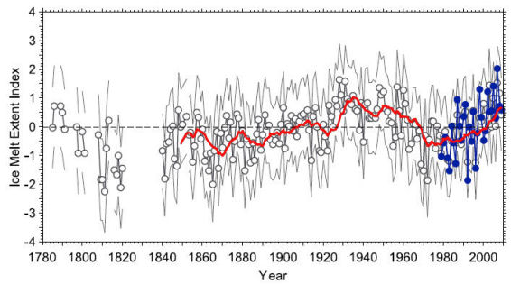</p>
      <p class="legende">&nbsp;</p>
      <p class="legende">&nbsp;</p>
      <p class="textengras">Frauenfeld et al. JGR VOL. 116, 2011 </p>
      <p>&quot;<a href="oceans.html#green">Une reconstruction de l'extension de la fonte annuelle du Groenland de 1784 &agrave; 2009</a>.&quot;</p>
      <p class="textengras">Ce graphe montre que la fonte des glaces au Groenland a &eacute;t&eacute; pratiquement aussi marqu&eacute;e dans les ann&eacute;es 1930-1940 que de nos jours. </p>
      <p class="texte">Cette &eacute;tude est bas&eacute;e sur la compilation de mesures ant&eacute;rieures permettant le calcul de l'indice de fonte. </p>
      <p class="texte">&nbsp;</p>
      <p class="texte">En r&eacute;sum&eacute; et selon les trois articles cit&eacute;s : </p>
      <ul>
        <li class="textengras">Les ann&eacute;es 1930-1940 ont &eacute;t&eacute;, au Groenland,  des ann&eacute;es pratiquement aussi chaudes que les ann&eacute;es pr&eacute;sentes. </li>
        <li class="textengras">Dans les ann&eacute;es 1930-1940, La fonte du glacier Groenlandais &eacute;tudi&eacute; ci-dessus a &eacute;t&eacute; pratiquement identique &agrave; la fonte actuelle.</li>
        <li class="textengras"> Dans les ann&eacute;es 1930-1940, la fonte des glaces Groenlandaises a &eacute;t&eacute; particuli&egrave;rement marqu&eacute;e. Elle a &eacute;t&eacute; pratiquement identique &agrave; celle que nous connaissons de nos jours.</li>
        </ul>      
      <p><span class="texte">La question qui vient imm&eacute;diatement &agrave; l'esprit est &eacute;videmment la suivante : </span><span class="textengras">&quot;Comment ce r&eacute;chauffement qui s'est r&eacute;p&eacute;t&eacute; (au moins) &agrave; deux reprises lors des 100 derni&egrave;res ann&eacute;es, peut-il &ecirc;tre compatible avec une mont&eacute;e progressive, et continue du taux de CO2 dans l'atmosph&egrave;re ? </span></p>
      <p><span class="texte">Bien entendu, les chercheurs proches du </span><span class="textengras">GIEC </span><span class="texte">qui s'int&eacute;ressent &agrave; ces questions sont inform&eacute;s de ces observations et de quelques autres du m&ecirc;me genre. Il semble cependant qu'elles soient suffisamment d&eacute;rangeantes pour que l'un d'entre eux, parmi les plus &eacute;minents, ait &eacute;voqu&eacute;</span> <span class="texte">ces questions lors de la  <a href="http://www.wmo.int/wcc3/page_en.php" class="textengras"> 3&egrave;me Conf&eacute;rence Mondiale sur le Climat</a> (plac&eacute;e sous l '&eacute;gide de l'ONU et l'Organisation M&eacute;t&eacute;orologique Mondiale (WMO)) en introduisant son discours de la mani&egrave;re suivante :</span></p>
      <table width="836" border="1">
        <tr>
          <td bgcolor="#FFFFCC"><span class="texte">&quot;Je ne suis pas un des sceptiques du climat&quot; &quot;a insist&eacute; </span>Mojib Latif <span class="texte">de l'Institut Leibniz des Sciences Marines de l'Universit&eacute; de Kiehl en Allemagne.&quot; &quot;</span>Cependant, nous devons nous poser les questions d&eacute;rangeantes nous-m&ecirc;mes, sinon d'autres le feront.<span class="texte">&quot;</span></td>
        </tr>
      </table>
      <p><span class="texte">(Propos rapport&eacute;s par </span><a href="http://www.newscientist.com/article/dn17742-worlds-climate-could-cool-first-warm-later.html?DCMP=OTC-rss&amp;nsref=online-news" class="textengras">Fred Pearce</a><span class="texte">, reporter scientifique au journal le </span>&quot;New Scientist&quot; <span class="texte">(qui est  tr&egrave;s loin d'&ecirc;tre une revue &quot;climato-sceptique&quot; ) </span></p>
      <p><span class="texte">Et, toujours selon ce reporter qui a assist&eacute; &agrave; la conf&eacute;rence WCC3, </span>Mojib Latif <span class="texte">a affirm&eacute; que nous pourrions &ecirc;tre proches d'entrer</span> &quot;dans une ou deux d&eacute;cennies de refroidissement climatique&quot;<span class="texte"> ce qui rejoint les conclusions de nombres d'<a href="froid.html#bilan">autres auteurs et de plusieurs billets de ce site</a>. </span><br />
        <span class="texte">Sur quoi se base </span><span class="textengras">Mojib Latif </span><span class="texte">pour avancer cette id&eacute;e qui a jet&eacute; un froid parmi le gratin du GIEC r&eacute;uni pour l'occasion ?</span><br />
        </p>
      <p class="texte">En particulier sur cette diapo (<a href="http://thingsbreak.files.wordpress.com/2009/10/ps3_latif.ppt">la diapo N&deg;10 de son expos&eacute;</a>) : </p>
      <p class="texte">Cette diapo repr&eacute;sente l'&eacute;volution de la temp&eacute;rature de l'air &agrave; la surface de l'h&eacute;misph&egrave;re Nord (SAT: Surface air temp&eacute;rature) de 1880 &agrave; 2009. </p>
      <p class="textengras"><span class="texte">Intitul&eacute; de la diapo  </span>: Influences internes/ Influences externes <span class="texte">(externes fait allusion au for&ccedil;age anthropique, influences internes fait allusion aux causes naturelles de variabilit&eacute; climatique).</span></p>
      <p class="textengras"><span class="texte">Comme vous pouvez le constater, la temp&eacute;rature a effectivement connu un maximum temporaire durant les ann&eacute;es 30-40 comme les analyses effectu&eacute;es au Groenland le montrent. Puis le climat s'est refroidi pendant une trentaine d'ann&eacute;es. Il est reparti &agrave; la hausse jusqu'en 1998, pour stagner sur un plateau jusqu'&agrave; nos jours (attention, ici il ne s'agit que de l'h&eacute;misph&egrave;re Nord et des mesures du GISS de la NASA (Hansen, Schmidt) comme le savent les lecteurs de ce site. </span></p>
      <p class="textengras"><br />  
          <span class="texte">Dans le sous-titre,</span> Mojib Latif<span class="texte"> se pose la m&ecirc;me question que celle que nous nous sommes pos&eacute;e au cours de cet expos&eacute; sur le Groenland : </span></p>
      <p class="textengras">Son sous titre (en rouge) : <span class="Style17">Dans quelles proportions la variabilit&eacute; d&eacute;cennale a-t-elle contribu&eacute; au r&eacute;chauffement durant les derni&egrave;res d&eacute;cennies ? </span></p>
      <p class="texte"><span class="textengras">Autrement dit </span>, nous percevons des manifestations importantes des &eacute;volutions naturelles du climat au Groenland comme on l'a vu ci-dessus. En fait, nous observons des oscillations dont la p&eacute;riode est de 60 ans environ, comme on le voit aussi sur la diapo de Mojib Latif. <br />
        Quelle en est l'importance par rapport au (suppos&eacute;) r&eacute;chauffement climatique d'origine anthropique, mis en avant par le GIEC ? </p>
      <p class="textengras">Voici quelques extraits de l'expos&eacute; de Fred Pearce au sujet de la Conf&eacute;rence WCC3 <span class="texte">(les caract&egrave;res engraiss&eacute; sont de l'auteur du site)</span> :<br />
        <span class="texte">Apr&egrave;s avoir affirm&eacute; que nous risquons de conna&icirc;tre une p&eacute;riode de refroidissement d'une ou deux d&eacute;cennies, </span>Mojib Latif<span class="texte"> poursuit ; </span></p>
      <table width="844" border="1">
        <tr>
          <td width="834" bgcolor="#FFFFCC"><p class="textengras"><span class="texte">&quot;</span>Les gens diront que le r&eacute;chauffement climatique dispara&icirc;t<span class="texte">&quot; &quot;a-t-il affirm&eacute; (NdT : </span>Mojib Latif<span class="texte">) devant plus de 1500 des plus grands scientifiques du climat de la plan&egrave;te, r&eacute;unis &agrave; la 3&egrave;me conf&eacute;rence mondiale du climat &agrave; Gen&egrave;ve.&quot; </span></p>
            <p class="texte">&quot;<span class="textengras">Latif </span>a pr&eacute;vu qu'un refroidissement climatique naturel pendant les prochaines ann&eacute;es, surpasserait le r&eacute;chauffement anthropique. Ce refroidissement r&eacute;sulterait des variations cycliques des courants oc&eacute;aniques et des temp&eacute;ratures de l'Atlantique Nord qui sont connues sous le nom de NAO (Oscillation Nord Atlantique).&quot; </p>
            <p class="texte">&quot;Rompant avec l'orthodoxie du changement climatique, il a d&eacute;clar&eacute; que <span class="textengras">les cycles NAO</span> <span class="textengras">sont probablement responsables d'une partie du fort r&eacute;chauffement climatique que nous avons subi pendant les trois d&eacute;cennies &eacute;coul&eacute;es.</span>&quot;. &quot;Mais de combien ? Nous ne le savons pas encore.&quot; &quot;a-t-il dit aux conf&eacute;renciers. La <span class="textengras">NAO</span> est entr&eacute; dans une phase froide.&quot;</p>
            <p class="texte">&quot;<span class="textengras">Latif </span>a aussi d&eacute;clar&eacute; que <span class="textengras">les cycles NAO </span>expliquaient le reverdissement r&eacute;cent du Sahel en Afrique apr&egrave;s les s&eacute;cheresses des ann&eacute;es 1970-1980. <span class="textengras">James Murphy</span>, le responsable des pr&eacute;visions climatiques au <span class="textengras">Met Office</span> (NdT : l'agence m&eacute;t&eacute;o anglaise) a confirm&eacute; son accord et a &eacute;tabli un lien <span class="textengras">entre la NAO et la mousson en Inde, ainsi qu'avec les ouragans dans l'Atlantique et la mer glac&eacute;e de l'Arctique.</span> &quot; Les oc&eacute;ans sont un facteur d&eacute;cisif de la variabilit&eacute; d&eacute;cennale&quot; a-t-il d&eacute;clar&eacute;.&quot;</p>
            <p class="texte">&quot;Un autre leitmotiv favori du climat a &eacute;t&eacute; renvers&eacute; quand <span class="textengras">Pope </span>(NdT : <span class="textengras">Vicky Pope</span>, responsable des pr&eacute;visions climatiques au <span class="textengras">Hadley Center, UK</span>, photo-ci-contre) a affirm&eacute; que <span class="textengras">les pertes dramatiques de la glace Arctique r&eacute;sultaient, en partie, des cycles naturels plut&ocirc;t que du r&eacute;chauffement climatique du globe</span>...&quot;</p></td>
        </tr>
      </table>
      <p class="texte">Comme vous le voyez, tout cela va dans le bon sens. Plac&eacute;s devant les &eacute;vidences r&eacute;sultant des observations et non pas des mod&egrave;les informatiques, quelques chercheurs proches du GIEC n'h&eacute;sitent pas &agrave; se poser des questions d&eacute;rangeantes par rapport &agrave; la doxa climatique. A noter que ces questions sont d'ailleurs, tr&egrave;s pr&eacute;cis&eacute;ment, celles que posent, depuis des ann&eacute;es, ceux que certains n'h&eacute;sitent pas &agrave; qualifier outrageusement de  &quot;deniers&quot;, de &quot;n&eacute;gationnistes&quot;. </p>
      <p><span class="textengras">Comme vous pouvez le constater, la r&eacute;alit&eacute; objective et les questions pertinentes &eacute;nonc&eacute;es lors de la derni&egrave;re Conf&eacute;rence Mondiale sur le Climat, sont tr&egrave;s diff&eacute;rentes des affirmations ultra-alarmistes ou du genre &quot;la science est comprise&quot; que vous pouvez lire dans la grande presse ou &eacute;couter/voir dans les m&eacute;dias francophones. <br />
        Sans doute &quot;un Fred Pearce&quot; serait-il bienvenu chez nous. </span><br />
      <br />
        <span class="textengras">Pour en revenir &agrave; nos observations  sur la fonte et le r&eacute;chauffement du Groenland pendant les ann&eacute;es 1930-1940</span><span class="texte">, on ne peut qu'approuver </span><span class="textengras">Mojib Latif </span><span class="texte">qui avait d&eacute;clar&eacute; :</span></p>
      <p class="texte">&quot;Cependant,  nous devons nous poser les questions d&eacute;rangeantes nous-m&ecirc;mes, sinon d'autres le feront.&quot;</p>
      <p>En effet. C'est fait. En voici de nouvelles, au sujet du Groenland. </p>
      <p>Stay Tuned... </p>      </th>
    </tr>
    <tr bgcolor="#CCFFFF">
      <th height="6959" align="left" valign="top" bordercolor="#FFFFFF" bgcolor="#FFFFCC" class="textengras" scope="col"><p class="textengras"><a name="tempast" id="tempast"></a>18 D&eacute;cembre 2011 : <span class="titre">Des reconstructions r&eacute;centes de l'&eacute;volution des temp&eacute;ratures depuis des mill&eacute;naires</span> : </p>
        <p class="texte">Comme je l'ai souvent &eacute;crit dans ce site, la science poursuit imperturbablement sa progression. Les m&eacute;thodes et les techniques d'observation s'enrichissent et s'affinent, et contrairement &agrave; une croyance g&eacute;n&eacute;ralement entretenue par les m&eacute;dias, les id&eacute;es &eacute;voluent. </p>
        <p class="texte">Il en va ainsi des connaissances que nous accumulons, jour apr&egrave;s jour, sur les climats et les temp&eacute;ratures de surface qui ont exist&eacute; sur notre plan&egrave;te bien avant l'&egrave;re industrielle. En bref, il s'agit de l'histoire du, ou plut&ocirc;t des climats de notre plan&egrave;te dont la connaissance est indispensable pour juger de l'&eacute;volution des climats contemporains. Et il ne s'agit &eacute;videmment pas de se limiter &agrave; l'&eacute;tude de l'&eacute;volution du climat durant les 30 derni&egrave;res ann&eacute;es (C'est-&agrave;-dire l'&acirc;ge des observations  faites &agrave; partir de l'espace) comme certains voudraient nous le faire croire.<br />
            <br />
        J'ai choisi de rapporter sur deux articles tr&egrave;s r&eacute;cents, publi&eacute;s dans des revues scientifiques &agrave; comit&eacute; de lecture qui font le point sur l'&eacute;volution des temp&eacute;ratures depuis plusieurs mill&eacute;naires dans deux endroits de la plan&egrave;te, tr&egrave;s diff&eacute;rents par leur latitudes et leurs longitudes et qui sont s&eacute;par&eacute;s par une distance de quelques 9000 km, de mani&egrave;re &agrave; pouvoir observer les similitudes et les  &eacute;ventuelles diff&eacute;rences.</p>
        <p class="titre">1- Le climat au Groenland depuis 4000 ans : </p>
        <p></p>
        <p class="legende"><span class="exposant">1</span>National Institute of Polar Research, Tokyo, Japan.<br />
            <span class="exposant">2</span>Scripps Institution of Oceanography, University of California, San Diego, La Jolla, California, USA.<br />
            <span class="exposant">3</span>National Institute of Polar Research, Tokyo, Japan.<br />
            <span class="exposant">4</span>Laboratoire de Glaciologie et G&eacute;ophysique de l&rsquo;Environnement, CNRS, Universit&eacute; Joseph Fourier Grenoble, Saint&#8208;Martin d&rsquo;H&eacute;res, France.<br />
            <span class="exposant">5</span>Deceased 21 September 2009.<br />
            <span class="exposant">6</span>Meteorological Research Institute, Japan Meteorological Agency, Tsukuba, Japan.<br />
            <span class="exposant">7</span>Centre for Ice and Climate, Niels Bohr Institute, University of Copenhagen, Copenhagen, Denmark.<br />
            <span class="exposant">8</span>Byrd Polar Research Center, Ohio State University, Columbus, Ohio, USA.</p>
        <p class="textengras"><span class="texte">Voici le r&eacute;sum&eacute; de cette publication aux GRL, intitul&eacute;e</span> &quot; Haute variabilit&eacute; de la temp&eacute;rature de surface du Groenland durant les 4000 ans &eacute;coul&eacute;s, estim&eacute;e &agrave; partir des bulles d'air pi&eacute;g&eacute;es dans un carottage glaciaire&quot; <span class="texte">publi&eacute;e en ligne</span> le 10 Nov. 2011. <span class="texte">Elle r&eacute;sulte d'une collaboration entre des chercheurs Am&eacute;ricains (USA), Japonais, Danois et Fran&ccedil;ais. Voici, tout d'abord Le r&eacute;sum&eacute; original, suivi d'une traduction en fran&ccedil;ais.</span></p>
        <table width="800" border="1">
          <tr>
            <td height="481" align="left" valign="top" bgcolor="#CCFFFF"><p class="legende">[1] Greenland recently incurred record high temperatures and ice loss by melting, adding to concerns that anthropogenic warming is impacting the Greenland ice sheet and in turn accelerating global sea&#8208;level rise. Yet, it remains imprecisely known for Greenland how much warming is caused by increasing atmospheric greenhouse gases versus natural variability. To address this need, we reconstruct Greenland surface snow temperature variability over the past 4000 years at the GISP2 site (near the Summit of the Greenland ice sheet; hereafter referred to as Greenland temperature) with a new method that utilises argon and nitrogen isotopic ratios from occluded air bubbles. The estimated average Greenland snow temperature over the past 4000 years was &minus;30.7&deg;C with a standard deviation of 1.0&deg;C and exhibited a long&#8208;term decrease of roughly 1.5&deg;C, which is consistent with earlier studies. The current decadal average surface temperature (2001&ndash;2010) at the GISP2 site is &minus;29.9&deg;C. The record indicates that warmer temperatures were the norm in the earlier part of the past 4000 years, including century&#8208;long intervals nearly 1&deg;C warmer than the present decade (2001&ndash;2010). Therefore, we conclude that the current decadal mean temperature in Greenland has not exceeded the envelope of natural variability over the past 4000 years, a period that seems to include part of the Holocene Thermal Maximum. Notwithstanding this conclusion, climate models project that if anthropogenic greenhouse gas emissions continue, the Greenland temperature would exceed the natural variability of the past 4000 years sometime before the year 2100.</p>
                <p class="texte">[1] Le Groenland a r&eacute;cemment &eacute;t&eacute; sujet &agrave; des temp&eacute;ratures &eacute;lev&eacute;es record ainsi qu'&agrave; des pertes de glace r&eacute;sultant de la fonte, contribuant  aux inqui&eacute;tudes de l'impact du r&eacute;chauffement climatique anthropique sur les glaces du Groenland, ce qui acc&eacute;l&eacute;rerait la hausse globale du niveau des mers.<br />
  Cependant, il reste que l'on conna&icirc;t mal la proportion du r&eacute;chauffement Groenlandais r&eacute;sultant de l'augmentation des gaz &agrave; effet de serre par rapport &agrave; celui qui r&eacute;sulte de la variabilit&eacute; naturelle. Afin de satisfaire &agrave; cette n&eacute;cessit&eacute;, nous reconstruisons la variabilit&eacute; de la temp&eacute;rature de la neige de surface durant les 4000 ann&eacute;es &eacute;coul&eacute;es sur les lieux du GISP2 (NdT : o&ugrave; ont eu lieu les carottages glaciaires du m&ecirc;me nom) (pr&egrave;s du Sommet de la masse glac&eacute;e du Groenland; ce que nous d&eacute;signons dans l'article comme &quot;la temp&eacute;rature du Groenland&quot;.) avec une nouvelle m&eacute;thode qui utilise les taux d'isotopes de l'argon et de l'azote extraits des bulles d'air emprisonn&eacute;es. La temp&eacute;rature moyenne de la neige du Groenland est estim&eacute;e &agrave; <span class="legende">&minus;30.7&deg;C</span> sur les 4000 ans pass&eacute;s et ceci avec une incertitude standard de 1,0&deg;C. Elle a subi une d&eacute;croissance &agrave; long terme d'environ 1,5&deg;C, ce qui est coh&eacute;rent avec les &eacute;tudes pr&eacute;c&eacute;dentes. La moyenne d&eacute;cennale actuelle de la temp&eacute;rature de surface (2001-2010) sur le site GISP2 est de -29,9&deg;C. Les enregistrements montrent que des temp&eacute;ratures plus &eacute;lev&eacute;es &eacute;taient la norme durant la p&eacute;riode la plus ancienne des 4000 ans pass&eacute;s, y compris pendant des intervalles s&eacute;culaires avec des temp&eacute;ratures plus &eacute;lev&eacute;es de 1&deg;C que celles de la pr&eacute;sente d&eacute;cennie (2001-2010). <br />
  C'est pourquoi nous concluons que la temp&eacute;rature d&eacute;cennale moyenne au Groenland n'est pas sortie de l'enveloppe de la variabilit&eacute; naturelle des 4000 ans pass&eacute;s qui est une p&eacute;riode qui semble inclure une partie du maximum thermique de l'Holoc&egrave;ne. Nonobstant cette conclusion, les mod&egrave;les climatiques pr&eacute;voient que si les &eacute;missions de gaz &agrave; effet de serre continuent, la temp&eacute;rature du Groenland pourrait exc&eacute;der la variabilit&eacute; naturelle de ces 4000 ans pass&eacute;s d'ici l'an 2100. </p>            </td>
          </tr>
        </table>
        <p class="texte"> <span class="titre">Remarques :</span></p>
        <p class="texte">Cet article adopte  une d&eacute;marche scientifique traditionnelle mais qui peut sembler r&eacute;solument novatrice par rapport &agrave; celle que l'on pouvait trouver sur ce sujet (et quelques autres), il y a quelques ann&eacute;es, sous la plume des chercheurs affili&eacute;s ou proches du GIEC et qui sont r&eacute;pertori&eacute;s dans les rapports successifs du GIEC.<br />
          En effet, et comme cela est clairement affirm&eacute; d&egrave;s le d&eacute;but du r&eacute;sum&eacute; de cet article , <span class="textengras">il s'agit de discerner ce qui, dans les variations de temp&eacute;rature observ&eacute;es durant la p&eacute;riode r&eacute;cente, rel&egrave;ve d'une &eacute;l&eacute;vation anormale ou inhabituelle des temp&eacute;ratures par rapport &agrave; celles que l'on a pu observer dans le  pass&eacute;. </span>Il s'agit de d&eacute;terminer quelle est la proportion des variations observ&eacute;es qui reste dans les limites de variations d&eacute;j&agrave; observ&eacute;es durant les quelques mill&eacute;naires pass&eacute;s. <span class="textengras">Et de fait, les chercheurs trouvent  que la totalit&eacute; des variations de temp&eacute;rature actuelles ne sort pas du cadre de la variabilit&eacute; naturelle. </span><br />
          Il est difficile de contester qu'il s'agit l&agrave; (enfin !) d'une d&eacute;marche  scientifique aussi normale que souhaitable. C'est celle qui aurait d&ucirc; pr&eacute;valoir d&egrave;s la cr&eacute;ation du GIEC en 1988.<br />
          Autrement dit, avant de se pr&eacute;occuper de d&eacute;terminer l'importance d'une &eacute;ventuelle influence humaine sur les changements climatiques (ce qui constituait l'ordre de mission du GIEC, d&egrave;s sa cr&eacute;ation), encore aurait-il fallu conna&icirc;tre et si possible comprendre et interpr&eacute;ter, les variations naturelles inh&eacute;rentes &agrave; la machine climatique. A l'&eacute;vidence,  le climat a toujours vari&eacute; avec ou sans intervention humaine.<br />
          <br />
          Ainsi est-il  encourageant de lire, sous la plume de climatologues du National Institute of Polar Research Japonais, de la   prestigieuse          Scripps Institution of Oceanography de Californie USA, du Niels Bohr Institute Danois, du Byrd Polar Research Center de Columbus, et du Laboratoire de Glaciologie et G&eacute;ophysique de l&rsquo;Environnement de Grenoble, un article qui, &agrave; mon avis, <span class="textengras">emprunte le chemin de la d&eacute;marche scientifique telle qu'elle aurait d&ucirc; pr&eacute;valoir, depuis le d&eacute;but. </span><br />
          En comparaison avec l'abondante litt&eacute;rature scientifique compil&eacute;e dans la s&eacute;rie des rapports (FAR, SAR, TAR et AR4) du GIEC, on peut consid&eacute;rer que cet article constitue, avec quelques autres publications r&eacute;centes, <span class="textengras">un v&eacute;ritable changement de paradigme</span>. Cet article est loin de constituer une exception dans le contexte actuel des publications scientifiques. Il semble que, depuis quelques mois, nous assistions &agrave; une &eacute;volution positive avec un retour vers la d&eacute;marche scientifique traditionnelle que j'&eacute;voquais plus haut et qui peut &ecirc;tre bri&egrave;vement r&eacute;sum&eacute;e par :<br />
  &quot;Que nous dit l'histoire ? Qu'y a-t-il de r&eacute;ellement diff&eacute;rent par rapport au pass&eacute; ?&quot;. <br />
  <br />
          N'est-ce pas ainsi que l'on aurait d&ucirc; commencer ? <br />
        _____________________________________________________________________________________</p>
        <p class="texte"><span class="textengras">La  technique, r&eacute;cemment mise au point par Kobashi et al</span> et utilis&eacute;e par les auteurs de cette article, rel&egrave;ve d'une analyse isotopique apparent&eacute;e &agrave; celle qui a &eacute;t&eacute; utilis&eacute;e, entre autres, pour les forages GISP2 effectu&eacute;s au Groenland. Cependant, &agrave; la diff&eacute;rence des analyses traditionnelles des carottages qui utilisent le rapport O18/O16 pour estimer la temp&eacute;rature et pour des raisons expos&eacute;es dans plusieurs travaux ant&eacute;rieurs,  les auteurs de cet article utilisent, cette fois-ci, les isotopes de l'azote et de l'argon. C'est ainsi que <span class="textengras">Kobashi et al</span> <span class="textengras">obtiennent les mesures de la temp&eacute;rature de la neige en surface</span>, comme cela est pr&eacute;cis&eacute; dans le corps de l'article. Voici quelques mots d'explication, extraits du corps du texte : </p>
        <table width="828" border="1">
          <tr>
            <td width="818" bgcolor="#CCFFFF"><span class="texte">&quot;La m&eacute;thode pour la reconstruction de temp&eacute;rature repose sur le fait que les gaz dans la neige non consolid&eacute;e se fractionne selon la profondeur et le gradient de temp&eacute;rature au sommet et &agrave; l'extr&eacute;mit&eacute; de la couche [Severinghaus et al., 1998] (voir les explications compl&eacute;mentaires). Les informations au sujet des profondeurs du pass&eacute; et des gradients de temp&eacute;ratures &agrave; l'&eacute;poque du pi&eacute;geage des bulles dans la glace peuvent &ecirc;tre obtenues en mesurant les variations des isotopes N15 et Ar40 dans l'air occlus dans les carottes de glace [Severinghaus et al., 1998; Kobashi et al., 2008a]. D&egrave;s lors, l'histoire de la temp&eacute;rature de surface peut &ecirc;tre reconstruite en int&eacute;grant les gradients de temp&eacute;ratures en fonction du temps [Kobashi et al., 2008b, 2010] &agrave; partir d'un mod&egrave;le de diffusion densification/chaleur dans la neige non consolid&eacute;e [Goujon et al., 2003] (voir les explications compl&eacute;mentaires)&quot;</span></td>
          </tr>
        </table>
        <p class="texte"><span class="textengras">Voici maintenant &agrave; titre d'illustration pour le r&eacute;sum&eacute; qui pr&eacute;c&egrave;de, la Figure 1 </span>de l'article en question, accompagn&eacute;e de l'extrait de l&eacute;gende correspondant &agrave; la section qui couvre les 4000 ann&eacute;es pass&eacute;es.. </p>
        <p class="texte"><span class="textengras">La Figure 1 regroupe les trois reconstructions pertinentes :  </span></p>
        <p class="texte"><br />
            <br />
            <span class="textengras">-Les 170 derni&egrave;res ann&eacute;es</span> : On constate que le r&eacute;chauffement des ann&eacute;es 1930-1940 est &eacute;quivalent &agrave; celui que nous connaissons actuellement.<br />
          Cette portion de la Figure 1 est &agrave; rapprocher du<a href="oceans.html#green"> graphique, tr&egrave;s semblable, qui indique que la fonte actuelle </a>des glaces du Groenland est &eacute;quivalente mais non sup&eacute;rieure &agrave; celle des ann&eacute;es 1920-1940. </p>
        <p class="texte">&nbsp;</p>
        <p class="texte">&nbsp;</p>
        <p class="textengras">-Les 1000 derni&egrave;res ann&eacute;es :</p>
        <p class="texte">On per&ccedil;oit parfaitement l'Optimum M&eacute;di&eacute;val vers l'an mil, ainsi que le Petit Age Glaciaire (de 1600 &agrave; 1850).</p>
        <p class="texte">La temp&eacute;rature durant l'Optimum M&eacute;di&eacute;val &eacute;tait semblable &agrave; ce qu'elle est de nos jours. </p>
        <p class="texte">&nbsp;</p>
        <p class="textengras">-Les 4000 derni&egrave;res ann&eacute;es : </p>
        <p class="texte">A l'&eacute;vidence,<span class="textengras"> il y a &eacute;galement eu des p&eacute;riodes nettement plus chaudes que l'OM et que la p&eacute;riode actuelle au cours des mill&eacute;naires pr&eacute;c&eacute;dents,</span> comme cela est pr&eacute;cis&eacute; dans le texte (ci-dessous) extrait de l'article.<br />
        On peut &eacute;galement voir, comme le pense <span class="textengras">S. Akasofu,</span> que la p&eacute;riode de r&eacute;chauffement actuelle correspond, en r&eacute;alit&eacute;, &agrave; la sortie du Petit Age Glaciaire et au retour vers la moyenne des temp&eacute;ratures qui r&eacute;gnait au Groenland depuis 4000 ans. </p>
        <p class="textengras">Voici la l&eacute;gende de la figure du bas : </p>
        <p class="texte">&quot;Les 4000 derni&egrave;res ann&eacute;es de la temp&eacute;rature au Groenland. La ligne bleue &eacute;paisse et les bandes bleues repr&eacute;sentent respectivement la temp&eacute;rature reconstruite au Groenland et l'erreur &agrave; un sigma. La ligne verte &eacute;paisse repr&eacute;sente la moyenne glissante sur 100 ans.La temp&eacute;rature actuelle et les deux sigmas sont indiqu&eacute;s par les lignes horizontales dans le graphique. Le cercle vert montre la temp&eacute;rature actuelle moyenn&eacute;e sur 10 ans (&minus;29.9&deg;C, 2001&ndash;2010)&quot;</p>
        <p class="texte"><span class="textengras">Kobashi et al</span> donnent plusieurs d&eacute;tails int&eacute;ressants dans le courant de l'expos&eacute;. En voici deux extraits significatifs : </p>
        <table width="800" border="1">
          <tr>
            <td height="345" align="left" valign="top" bgcolor="#CCFFFF"><p class="texte">&quot;<span class="textengras">5.3. Temp&eacute;rature actuelle dans le contexte des 4000 ans &eacute;coul&eacute;s. <br />
                </span><br />
              [15] On trouve que la temp&eacute;rature actuelle moyenn&eacute;e sur 10 ans (2000-2010) au Sommet (NdT : du Groenland. Sommet s'&eacute;crit avec une majuscule en anglais parce qu'il d&eacute;signe  l'endroit o&ugrave; ont &eacute;t&eacute; effectu&eacute;s les carottages GISP2) est &eacute;gale &agrave; &minus;29.9 &plusmn; 0.6&deg;C &agrave; partir de l'enregistrement AWS ajust&eacute; et invers&eacute; (Figure 1). Ceci est indiqu&eacute; dans le contexte des 4000 ann&eacute;es pr&eacute;c&eacute;dentes (Figure 1).<span class="textengras"> La temp&eacute;rature moyenne de la surface est aussi &eacute;lev&eacute;e que dans les ann&eacute;es 1930-1940 </span>(Figure 1 en haut) et <span class="textengras">il y a eu une autre p&eacute;riode aussi chaude  (&minus;29.7 &plusmn; 0.6&deg;C) dans les ann&eacute;es 1140 </span>(Figure 1, au milieu) (Optimum M&eacute;di&eacute;val), <span class="textengras">ce qui montre que la d&eacute;cennie actuelle ne se situe pas en dehors de l'enveloppe de la variabilit&eacute; des 1000 derni&egrave;res ann&eacute;es.</span> <span class="textengras">Si on exclut le dernier mill&eacute;naire, il y a eu 72 d&eacute;cennies plus chaudes que la d&eacute;cennie actuelle, pendant lesquelles les temp&eacute;ratures &eacute;taient de 1,0 &agrave; 1,5&deg;C plus chaudes,</span> tout particuli&egrave;rement dans la partie la plus ancienne des 4000 derni&egrave;res ann&eacute;es. [Dahl&#8208;Jensen et al., 1998; Wanner et al., 2008]. Durant deux p&eacute;riodes  (&sim;1300 B.P. and &sim;3360 B.P, Ndt BP= avant le pr&eacute;sent).) les temp&eacute;ratures moyenn&eacute;es sur 100 ans &eacute;taient presque 1,0&deg;C plus chaudes  (&minus;28.9&deg;C,  percentiles 97) que lors de la pr&eacute;sente d&eacute;cennie (Figure 1, en bas) . <br />
              A partir de ces observations, <span class="textengras">nous concluons que la temp&eacute;rature d&eacute;cennale moyenne de la neige au centre du Groenland n'a pas d&eacute;pass&eacute; l'enveloppe de la variabilit&eacute; naturelle des 4000 ann&eacute;es pass&eacute;es. </span></p>
                <p class="textengras">5.4. Contexte futur </p>
              <p class="texte">...] La temp&eacute;rature moyenne reconstruite de la p&eacute;riode 1970&ndash;1999 est de &minus;31.4&deg;C de telle mani&egrave;re que les valeurs de +2 &agrave; +4&deg;C au dessus de la p&eacute;riode 1970&ndash;1999 au sommet du Groenland vont de  &minus;29.4&deg;C &agrave; &minus;27.4&deg;C, ce qui indique une possibilit&eacute; de d&eacute;passer la limite sup&eacute;rieure  (&minus;28.7&deg;C) de la variabilit&eacute; naturelle avant 2100.&quot;</p></td>
          </tr>
        </table>
        <p class="textengras">A noter &eacute;galement que Kobashi et al <span class="texte">ont effectu&eacute; une analyse spectrale des graphes pr&eacute;c&eacute;dents. Ils notent un certain nombre de p&eacute;riodes dont celles de 87 ans et 210 ans qui pourraient &ecirc;tre celles des cycles de Suess et de Gleissberg [Wanner et al., 2008], ce qui sugg&eacute;rerait une possible influence solaire sur la temp&eacute;rature de la neige au Groenland [Vinther et al. [2009]. Ils retrouvent &eacute;galement un cycle de 64,5 ans qui s'apparente aux cycles r&eacute;currents tr&egrave;s souvent &eacute;voqu&eacute;s dans ce site. </span></p>
        <p class="texte">---------------------------------------------------------------</p>
        <p class="texte">&nbsp;</p>
        <p class="texte">Partant du Sommet du Groenland, nous allons maintenant survoler une grande partie de l'h&eacute;misph&egrave;re Nord en direction des hauts plateaux du Tibet situ&eacute;s &agrave; quelques 9000 km au Sud-Est du Groenland. </p>
        <p class="texte">Comment la temp&eacute;rature a-t-elle &eacute;volu&eacute; au cours des mill&eacute;naires pass&eacute;s dans cette r&eacute;gion particuli&egrave;rement continentale, proche de l'Himalaya ? <br />
        C'est ce que nous apprend un article qui est paru en Octobre 2011.</p>
        <p class="texte">&nbsp;</p>
        <p class="texte"><span class="titre">2- L'&eacute;volution des temp&eacute;ratures sur les hauts plateaux du Tibet, depuis 2845 ans. </span><br />
            <br />
          Officiellement province chinoise, cette r&eacute;gion constitue un terrain de choix pour les recherches du Professeur Liu Yu qui est <strong>Directeur de l'Institut de l'Environnement Terrestre de l'Acad&eacute;mie des Sciences Chinoise.</strong></p>
        <p><span class="texte">Avec l'aide de trois collaborateurs et d'un chercheur su&eacute;dois<strong>, </strong></span>Liu <span class="texte">Yu vient de publier un article remarquable sur l'&eacute;volution du climat de cette r&eacute;gion </span>depuis 2845 ans. <span class="texte">Voici l'ent&ecirc;te de cet article qui est la traduction en anglais, relay&eacute;e par Springer, d'un article du Bulletin des Sciences de l'Acad&eacute;mie des Sciences Chinoise. <a href="http://csb.scichina.com:8080/kxtbe/EN/article/showArticleFile.do?attachType=PDF&amp;id=504775">Cet article (disponible ici) </a>figure dans un num&eacute;ro sp&eacute;cial consacr&eacute; au &quot;Changement climatique durant le dernier mill&eacute;naire en Chine&quot;. Il a &eacute;t&eacute; publi&eacute; en </span>Octobre 2011<span class="texte">. </span></p>
        <p>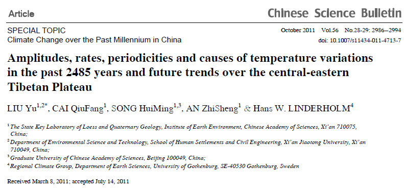</p>
        <p class="texte">Voici le r&eacute;sum&eacute; de l'article intitul&eacute; <span class="textengras">&quot;Amplitudes, taux de variation, p&eacute;riodicit&eacute;s et causes des variations de temp&eacute;rature, durant les 2485 ann&eacute;es pass&eacute;e et tendances futures pour la partie centre Est du plateau Tib&eacute;tain&quot;</span>. <br />
          Il s'agit, cette fois de dendrochronologie mais avec une seule sorte d'arbre (le gen&eacute;vrier Qilian). <br />
        Le r&eacute;sum&eacute; original est suivi d'une traduction en fran&ccedil;ais : </p>
        <table width="830" border="1" bgcolor="#CCFFFF">
          <tr>
            <td width="820"><p class="texte"><span class="textengras">Abstract</span> : <span class="legende">Amplitudes, rates, periodicities, causes and future trends of temperature variations based on tree rings for the past 2485 years on the central-eastern Tibetan Plateau were analyzed. The results showed that extreme climatic events on the Plateau, such as the Medieval Warm Period, Little Ice Age and 20th Century Warming appeared synchronously with those in other places worldwide. The largest amplitude and rate of temperature change occurred during the Eastern Jin Event (343&ndash;425 AD), and not in the late 20th century. There were significant cycles of 1324 a, 800 a, 199 a, 110 a and 2&ndash;3 a in the 2485-year temperature series. The 1324 a, 800 a, 199 a and 110 a cycles are associated with solar activity, which greatly affects the Earth surface temperature. The long-term trends (&gt;1000 a) of temperature were controlled by the millennium-scale cycle, and amplitudes were dominated by multi-century cycles. Moreover, cold intervals corresponded to sunspot minimums. The prediction indicated that the temperature will decrease in the future until to 2068 AD and then increase again.</span></p>
                <p class="texte"><span class="textengras">R&eacute;sum&eacute;</span> : &quot;Cette &eacute;tude consiste en une analyse des amplitudes, des taux de variation des p&eacute;riodicit&eacute;s, des causes et des tendances futures des variations de temp&eacute;rature, bas&eacute;es sur les cernes des arbres du plateau central-Est du Tibet.<span class="textengras"> Les r&eacute;sultats montrent que les &eacute;v&eacute;nements climatiques extr&ecirc;mes comme la p&eacute;riode chaude m&eacute;di&eacute;vale, le petit &acirc;ge glaciaire et le r&eacute;chauffement du XX&egrave;me si&egrave;cle, apparaissent de mani&egrave;re synchrone avec ceux qui sont observ&eacute;s dans d'autres parties de la plan&egrave;te</span>.<span class="textengras"> Les plus grandes variations d'amplitude et de vitesse de variations se sont produites pendant l'Ev&eacute;nement Jin de l'Est (343-425 AD) et non pas au cours du XX&egrave;me si&egrave;cle. </span>Il y a eu des cycles significatifs de 1324, 800, 199 , 110 et 2 &agrave; 3 ann&eacute;es dans les s&eacute;ries temporelles qui s'&eacute;tendent sur 2485 ann&eacute;es. Les cycles de 1324, 800, 199 et 110 ans sont associ&eacute;s &agrave; l'activit&eacute; solaire qui affecte grandement la temp&eacute;rature de la surface terrestre. Les tendances &agrave; long terme (&gt;1000 ans) des temp&eacute;ratures ont &eacute;t&eacute; pilot&eacute;es par les cycles &agrave; l'&eacute;chelle mill&eacute;naire et les amplitudes ont &eacute;t&eacute; domin&eacute;es par les cycles multi-centenaires. <span class="textengras">De plus, les intervalles froids correspondent aux minima des taches solaires. Les pr&eacute;dictions indiquent que la temp&eacute;rature va d&eacute;cro&icirc;tre dans le futur jusqu'en 2068 AD, puis cro&icirc;tre de nouveau.&quot; </span></p></td>
          </tr>
        </table>
        <br />
        <p class="textengras"><strong><a href="http://english.ieexa.cas.cn/au/ds/PresentDirector/200907/t20090720_24026.html">Liu Yu</a>,  <span class="texte">Directeur de l'Institut pour l'Environnement Terrestre de l'Acad&eacute;mie des Sciences Chinoise, a r&eacute;pondu &agrave; un <a href="http://www.pensee-unique.fr/Liu&#32;Yu&#32;interview.pdf">interview d'un journaliste chinois</a> du .South China Morning Post (4 D&eacute;cembre 2011). En voici quelques extraits significatifs qui &eacute;clairent le sujet :</span></strong></p>
        <table width="829" border="1">
          <tr>
            <td width="819" bgcolor="#CCFFFF"><p>...] <span class="texte">Mais dans certaines montagnes sur le plateau Tib&eacute;tain o&ugrave; l'altitude atteint 4000 m&egrave;tres, j'ai parcouru des quantit&eacute;s de gen&eacute;vriers Qilian qui sont rest&eacute;s intactes depuis des milliers d'ann&eacute;es.</span><br />
              Comment fait un arbre pour survivre dans un environnement aussi rigoureux pendant aussi longtemps ? <br />
            <span class="texte">Le gen&eacute;vrier Qilian est une des esp&egrave;ce d'arbres survivante les plus vieilles sur la Terre. Dans la partie Est du plateau Tib&eacute;tain &agrave; haute altitude o&ugrave; le sol est peu riche, il y a peu de pluies et les basses temp&eacute;ratures font qu'il est impossible pour les autres arbres de survivre. Les gen&eacute;vriers se sont parfaitement adapt&eacute;s &agrave; cet environnement rigoureux en croissant tr&egrave;s lentement. Nous en avons r&eacute;cemment trouv&eacute; un qui a pr&egrave;s de 2000 ans mais dont la taille n'est que de 8 m&egrave;tres. Lors de l'&eacute;tude des cernes d'arbre, les arbres &agrave; croissance lente fournissent des informations sur le climat pour de tr&egrave;s longues p&eacute;riodes. Les gen&eacute;vriers de Qilian ne poussent qu'en Chine.<br />
            <br />
            Les observations arch&eacute;ologiques &agrave; Loulan, Xinjiang (NdT : Turkestan Oriental), montrent que la grenade, un fruit riche en vitamine C, &eacute;tait utilis&eacute;e comme monnaie pendant la dynastie Jin de l'Est (AD 317-420). Il aurait &eacute;t&eacute; impossible que ce fruit apparaisse en Chine du Nord si le climat n'avait pas &eacute;t&eacute; plus chaud qu'aujourd'hui. </span></p>
            <p class="texte">Alors, qu'est-ce qui fait changer le climat ? Nous pensons que le soleil et la circulation atmosph&eacute;rique jouent un r&ocirc;le vital, sinon d&eacute;cisif dans tout &ccedil;a. Le cycle mill&eacute;naire de l'activit&eacute; solaire d&eacute;termine les tendances &agrave; long terme des variations de temp&eacute;rature. Presque tous les minima de taches solaires (qui sont des p&eacute;riodes parfois de quelques d&eacute;cennies durant lesquelles les taches solaires deviennent rares) correspondent &agrave; des p&eacute;riodes de basses temp&eacute;ratures.&quot;...] </p>
            <p class="texte">NdT : Et enfin une question  pos&eacute;e par le journaliste du SCMP &agrave; la veille du COP17 de Durban : </p>
            <p class="texte"><strong>Pensez-vous que vos r&eacute;sultats vont donner du grain &agrave; moudre &agrave; P&eacute;kin lors des n&eacute;gociations sur le climat ?</strong><strong class="texte"> <br />
            Je suis un scientifique et je ne connais rien &agrave; la politique. Mais, &agrave; mon avis, le d&eacute;bat sur le changement climatique a plus &agrave; voir avec la politique qu'avec la science. Les diplomates peuvent s'asseoir autour d'une table de n&eacute;gociation et discuter au sujet des limitations du carbone alors que les scientifiques ne se sont pas mis d'accord sur le r&ocirc;le du dioxyde de carbone dans le r&eacute;chauffement climatique. Mais les d&eacute;cisions politiques doivent reposer sur des fondations scientifiques solides ou bien elles seront inutiles, voire dangereuses.&quot; </strong></p>
            <p class="texte">NdT : Ceci &eacute;claire peut-&ecirc;tre la position des Chinois sur le (non) prolongement des accords de Kyoto. Ils attendent d'&ecirc;tre certains. </p></td>
          </tr>
        </table>
        <p class="textengras">Voici la figure ma&icirc;tresse, accompagn&eacute;e de sa l&eacute;gende, de l'article de Liu et al. </p>
        <p>&nbsp;</p>
        <p class="texte">&quot;Figure 1 : Reconstruction des temp&eacute;ratures bas&eacute;es sur les cernes des arbres pour la partie du centre-Est du plateau Tib&eacute;tain pendant les 2845 ann&eacute;es pass&eacute;es (ligne en gris). La moyenne glissante sur 40 ans est repr&eacute;sent&eacute;e en trait noir &eacute;pais et la moyenne glissante sur 40 ans de la d&eacute;viation standard en trait noir fin. La ligne horizontale repr&eacute;sente la temp&eacute;rature moyenne pour les 2845 ans.&quot; </p>
        <p class="texte">&nbsp;</p>
        <p class="texte">Comme on peut le constater et comme cela est pr&eacute;cis&eacute; dans l'article, <span class="textengras">l'Optimum M&eacute;di&eacute;val aux alentours de l'an 1000 est clairement visible sur ce graphe. La temp&eacute;rature &eacute;tait sup&eacute;rieure &agrave; ce qu'elle est de nos jours. De m&ecirc;me, le petit &acirc;ge glaciaire (environ 1600-1800) est clairement perceptible. </span></p>
        <p class="texte"><span class="textengras">Liu et al </span>nous pr&eacute;cisent que &quot;<span class="textengras"> les minima froids co&iuml;ncident avec les minima d'activit&eacute; solaire</span>&quot;. En effet, on distingue nettement une p&eacute;riode de refroidissement intense vers 1600-1700 qui co&iuml;ncide avec le <span class="textengras">Minimum de Maunder</span>. On peut aussi percevoir une baisse des temp&eacute;ratures autour de 1800 (Minimum de Dalton) et vers 1450 (Minimum de Sp&ouml;rer), ou encore vers 1300 (Minimum de Wolf). </p>
        <p class="textengras">A noter que la hausse des temp&eacute;ratures de la p&eacute;riode r&eacute;cente, observ&eacute;e dans le graphe de Liu et al, correspond &eacute;galement &agrave; la mont&eacute;e de l'activit&eacute; solaire vers ce que l'on appelle &quot;Le Grand Maximum&quot; actuel dont <a href="froid.html#activ" class="textengras">Samir Solanki</a> a montr&eacute; qu'il correspondait &agrave; l'activit&eacute; &eacute;ruptive du soleil la plus intense depuis, au moins, 7000 ans. </p>
        <p class="texte">Forts de ces observations, Liu et ses coll&egrave;gues ont effectu&eacute; une analyse des fr&eacute;quences contenues dans les variations de temp&eacute;rature obtenues par dendrochronologie des gen&eacute;vriers Qilian, rapport&eacute;es dans la Figure 1. Plus pr&eacute;cis&eacute;ment, ils ont effectu&eacute; une analyse en &quot;spectre de puissance&quot; dans l'esprit de ce qu'avait r&eacute;alis&eacute; <a href="froid.html#scafetta">Nicola Scafetta</a> pour des variations  de la temp&eacute;rature de 1850 &agrave; nos jours. <br />
          On se souvient que Scafetta avait mis en &eacute;vidence, et ceci dans une s&eacute;rie d'articles successifs, une p&eacute;riodicit&eacute; marqu&eacute;e correspondant &agrave; <span class="textengras">des cycles de 60-65 ans environ</span>. A l'instar, entre autres, de plusieurs scientifiques Russes, <span class="textengras">Scafetta </span>a sugg&eacute;r&eacute; (sans support th&eacute;orique) &agrave; partir d'une analyse empirique<a href="froid.html#astro">, </a>que ce cycle (et quelques autres de plus courte dur&eacute;e) co&iuml;ncide avec celui des<a href="froid.html#astro"> mouvements relatifs de l'astre solaire et des ses plan&egrave;tes</a>. Il est clair que, travaillant sur des donn&eacute;es correspondant &agrave; une dur&eacute;e totale de quelques 150 ans, Scafetta ne pouvait gu&egrave;re trouver dans ses analyses  des cycles de dur&eacute;e sup&eacute;rieure &agrave; 80 ans. <br />
        Il est remarquable que l'analyse en spectre de puissances de l'analyse dendrochronologique de Liu et al<span class="textengras"> indique &eacute;galement la pr&eacute;sence d'une p&eacute;riodicit&eacute; marqu&eacute;e aux alentours de 66 ans</span>, sans, bien s&ucirc;r, que l'on puisse &eacute;carter l'hypoth&egrave;se que cette co&iuml;ncidence soit purement fortuite <br />
        <br />
        <span class="textengras">L'article de Yu et al avancent &eacute;galement quelques pr&eacute;visions</span>, essentiellement bas&eacute;es sur l'analyse harmonique que je viens d'&eacute;voquer.</p>
        <p class="texte">Voici le graphique et sa l&eacute;gende qui figurent dans leur article :  </p>
        <p class="texte">&nbsp;</p>
        <p class="texte">Figure 5 : Pr&eacute;diction des tendances de temp&eacute;rature sur la partie centrale Est du plateau Tib&eacute;tain pour les prochaines 120 ann&eacute;es. Ligne bleue : s&eacute;ries initiales. Ligne orange : s&eacute;ries utilis&eacute;es pour la calibration de 464 BC &agrave; 834 AD. Ligne rouge : s&eacute;ries projet&eacute;es de 1980 &agrave; 2134 AD.</p>
        <p class="texte">Selon Liu et al, les temp&eacute;ratures pourraient baisser jusqu'en 2068, puis remonter par la suite. </p>
        <p><span class="texte">A noter que</span> Liu et al <span class="texte">pensent que la mont&eacute;e des temp&eacute;ratures actuelles r&eacute;sulte de la sortie du Petit &acirc;ge Glaciaire (cycles de 600 ans). C'est une id&eacute;e qui est ch&egrave;re &agrave;</span> <a href="froid.html#akasofu">S. I. Akasofu</a>. </p>
        <p>Voici la conclusion de l'article de Liu Yu et al : </p>
        <table width="832" border="1">
          <tr>
            <td width="822" bgcolor="#CCFFFF">Les &eacute;v&eacute;nements climatiques mondiaux tels que l'Optimum M&eacute;di&eacute;val et le Petit Age Glaciaire sont apparents dans nos s&eacute;ries de temp&eacute;ratures qui portent sur 2845 ans. Les comparaisons entre les pr&eacute;visions et les observations des temp&eacute;ratures les plus &eacute;lev&eacute;es et les plus rapides de la Figure 6 avec des donn&eacute;es pr&eacute;lev&eacute;es sur la partie centrale du plateau Tib&eacute;tain (7 stations : <span class="textengras"> Delingha, Dulan, Golmud, Lhasa, Nagqu, Dachaidan et Bange) se sont produites durant l'EJE et non durant le XX&egrave;me si&egrave;cle</span><span class="texte">. A l'&eacute;chelle mill&eacute;naire, les cycles de l'activit&eacute; solaire ont d&eacute;termin&eacute; les variations de temp&eacute;rature &agrave; long terme. Les minimas de taches solaires sont associ&eacute;s avec des p&eacute;riodes froides. Les r&eacute;sultats des pr&eacute;dictions obtenus en utilisant la chenille-SSA (NdT : un algorithme de calcul statistique) ont montr&eacute; que la temp&eacute;rature augmenterait jusqu'en 2006 sur le plateau central Est, puis d&eacute;cro&icirc;trait jusqu'en 2068, puis augmenteraient de nouveau. La r&eacute;gularit&eacute; des augmentations durant 600 ans et des baisses durant 600 ans (Fig. 3) sugg&egrave;re que la temp&eacute;rature continuera &agrave; augmenter pendant encore 200 ans, puisque seulement 400 ans se sont &eacute;coul&eacute;s depuis le Petit Age Glaciaire. Cependant une baisse de temp&eacute;rature contr&ocirc;l&eacute;e par des cycles s&eacute;culaires ne peut &ecirc;tre exclue. A l'&eacute;vidence, l'activit&eacute; solaire affecte les temp&eacute;ratures sur le centre Est du Plateau. Cependant, il existe encore des incertitudes dans notre compr&eacute;hension du changement climatique et la concentration de CO2 affecte le climat. Des recherches suppl&eacute;mentaires sont donc n&eacute;cessaires. </span></td>
          </tr>
        </table>
        <p class="texte"><a href="http://csb.scichina.com:8080/kxtbe/EN/abstract/abstract504775.shtml">Tous les d&eacute;tails </a>sur l'article, les auteurs, le mat&eacute;riel suppl&eacute;mentaire etc. </p>
        <p class="titre">3- Prolongements et conclusion : </p>
        <p class="texte">J'ai s&eacute;lectionn&eacute; deux articles qui me semblaient repr&eacute;sentatifs des nombreux travaux tout r&eacute;cents de reconstruction des temp&eacute;ratures des si&egrave;cles (des mill&eacute;naires) &eacute;coul&eacute;s. Il en existe beaucoup d'autres qui concernent d'autres r&eacute;gions de la plan&egrave;te.<br />
        A titre d'exemple, en voici <a href="http://www.co2science.org/articles/V14/N50/C3.php">un autre, r&eacute;cent &eacute;galement (2011)</a> qui r&eacute;sulte d'une coop&eacute;ration entre les Argentins, les Chiliens, les Allemands, les Suisses, les N&eacute;erlandais, les Anglais et les Am&eacute;ricains (USA). Cet article concerne l'Am&eacute;rique du Sud. <span class="textengras">Il retrouve, lui aussi le Petit Age glaciaire et l'Optimum M&eacute;di&eacute;val ... dans l'h&eacute;misph&egrave;re Sud. <br />
  &quot;
          Reconstruction multi-indicateurs couvrant les si&egrave;cles pass&eacute;s de la temp&eacute;rature de surface en &eacute;t&eacute; et en hiver pour la r&eacute;gion Sud de l'Am&eacute;rique du Sud</span>&quot;<br />
        Multiproxy summer and winter surface air temperature field   reconstructions for southern South America covering the past centuries. <em>Climate Dynamics</em> <strong>37</strong>: 35-51.<br />
        Neukom, R., Luterbacher, J., Villalba, R.,   Kuttel, M., Frank, D., Jones, P.D., Grosjean, M., Wanner, H., Aravena,   J.-C., Black, D.E., Christie, D.A., D'Arrigo, R., Lara, A., Morales, M.,   Soliz-Gamboa, C., Srur, A., Urritia, R. and von Gunten, L.  2011.    </p>
        <p class="textengras">Que peut-on en conclure ?</p>
        <p class="texte">1) Plusieurs reconstructions modernes montrent que le <span class="textengras">Petit Age Glaciaire et l'Optimum m&eacute;di&eacute;val </span>ont affect&eacute; de nombreuses r&eacute;gions, pourtant tr&egrave;s &eacute;loign&eacute;es, de la plan&egrave;te. Et ceci dans l'h&eacute;misph&egrave;re Sud comme dans l'h&eacute;misph&egrave;re Nord. De plus il appara&icirc;t que les temp&eacute;ratures de l'Optimum M&eacute;di&eacute;val &eacute;taient au moins &eacute;gales sinon sup&eacute;rieures &agrave; celles que nous connaissons actuellement. <br />
        Ainsi, le discours que l'on peut lire dans les rapports successifs du GIEC affirmant que l'OM et le PAG seraient limit&eacute;s au Nord de l'Europe, doit &ecirc;tre s&eacute;rieusement revu &agrave; la lumi&egrave;re des r&eacute;sultats publi&eacute;s r&eacute;cemment. Le sera-t-il ? </p>
        <p class="texte">2) De la m&ecirc;me mani&egrave;re, on constate que plusieurs reconstructions r&eacute;centes montrent qu'&agrave; plusieurs reprises au cours des si&egrave;cles et des mill&eacute;naires &eacute;coul&eacute;s, les temp&eacute;ratures de la plan&egrave;te &eacute;taient nettement plus &eacute;lev&eacute;es que les temp&eacute;ratures de l'OM et que celles nous connaissons actuellement. Il serait donc important que les chercheurs proches du GIEC (et les m&eacute;dias) <span class="textengras"> se posent des questions quant &quot;au r&eacute;chauffement sans pr&eacute;c&eacute;dent&quot; que nous subissons actuellement</span>. <br />
        Ne devaient-ils pas emprunter la d&eacute;marche du premier article que j'ai cit&eacute; ci-dessus ? </p>
        <p class="texte">Je me demande quel &eacute;cho sera r&eacute;serv&eacute; &agrave; ces articles importants, pourtant tous revus par les pairs et publi&eacute;s par des chercheurs estimables, dans le prochain rapport <span class="textengras">AR5 du GIEC</span>. H&eacute;las, probablement aucun.<br />
        Il est probable que tous ces articles qui montrent la pr&eacute;sence de l'OM un peu partout, ne doivent pas faire plaisir &agrave; celui qui a &eacute;crit, en 1995, &quot;We have to get rid ot the Medieval Warm p&eacute;riod&quot; (<span class="textengras">Il faut que nous nous d&eacute;barrassions de la p&eacute;riode M&eacute;di&eacute;vale Chaude</span>) &agrave; <a href="http://epw.senate.gov/hearing_statements.cfm?id=266543">David Deming qui en a t&eacute;moign&eacute; devant les S&eacute;nat Am&eacute;ricain</a>. C'&eacute;tait peu avant la fameuse &quot;crosse de hockey&quot; de Michael Mann et al (1998). </p>
        <p class="texte">Quand aux mentions qu'en feront   nos m&eacute;dias, nos grands journaux etc. j'ai d&eacute;j&agrave; la r&eacute;ponse : Aucune !</p>
        <table width="561" border="1">
          <tr>
            <td width="551" bgcolor="#FF0000"><span class="titre Style44">Je vous souhaite &agrave; toutes et &agrave; tous, ch&egrave;res lectrices (lecteurs), d'heureuses et joyeuses f&ecirc;tes de No&euml;l !</span></td>
          </tr>
        </table>
        <br /></th>
    </tr>
    <tr bgcolor="#CCFFFF">
      <th height="5715" align="left" valign="top" bordercolor="#FFFFFF" bgcolor="#CCFFFF" class="textengras" scope="col"><p>05 Novembre  2011 <a name="mazza" id="mazza"></a>: <span class="titre">Apr&egrave;s la &quot;ola&quot;, encore de multiples  &eacute;vidences des cycles de 60 ans</span> <span class="titre">de l'Oscillation Nord Atlantique</span>, retrouv&eacute;s dans l'&eacute;volution de la temp&eacute;rature globale de surface des oc&eacute;ans, dans la vitesse de rotation de la plan&egrave;te (LOD) ainsi que dans les observations des aurores bor&eacute;ales observ&eacute;es en Europe, <span class="textengras">depuis 1700.</span> </p>
        <p><span class="titre">A. Introduction : </span><span class="texte"><br />
  Ce billet s'inscrit dans la droite ligne du billet pr&eacute;c&eacute;dent (plus bas dans cette page) qui &eacute;tait intitul&eacute; :</span> &quot;<span class="titre"><a href="oceans.html#ola">La ola et les oscillations climatiques</a></span><span class="textengras"><a href="oceans.html#ola"> :</a></span><a href="oceans.html#ola"> Une analyse d&eacute;taill&eacute;e de la p&eacute;riodicit&eacute; d'environ 60 ans qui se retrouve dans de tr&egrave;s nombreux  indicateurs climatiques</a>&quot;.<span class="texte"><br />
        De fait, il vient le compl&eacute;ter. Il montre que les oscillations de p&eacute;riode environ 60 ans sont omnipr&eacute;sentes dans les observables du climat et m&ecirc;me jusque dans la vitesse de rotation de la plan&egrave;te et les aurores bor&eacute;ales, comme vous allez le voir. </span></p>
        <p><span class="texte"></span></p>
        <p class="texte">Comme je l'ai d&eacute;j&agrave; fait remarquer &agrave; plusieurs reprises,<span class="textengras"> la pr&eacute;sence de ces oscillations de p&eacute;riode 60 ans et donc de demi-p&eacute;riode trentenaire, est d'une importance consid&eacute;rable dans le d&eacute;bat actuel sur l'&eacute;volution du climat </span>ainsi que  l'illustre le dessin &eacute;vocateur ci-contre, d&ucirc; au <span class="textengras"><a href="http://people.iarc.uaf.edu/~sakasofu/pdf/two_natural_components_recent_climate_change.pdf">Prof. Syun Ishi Akasofu</a></span>, maintes fois mentionn&eacute; dans ce site, &agrave; c&ocirc;t&eacute; d'autres coll&egrave;gues scientifiques (tels <a href="theses.html#gray">William Gray</a> et al, <a href="froid.html#scafetta">Scafetta et al</a>, <a href="paroles.html#wcc3">Mojib Latif</a>, <a href="froid.html#bilan">Swanson et al</a>, <a href="froid.html#stat">Klyashtorin et Lyubishin</a>, <a href="froid.html#aleo">Joseph d'Aleo) </a>qui partagent, en grande partie, le m&ecirc;me point de vue.</p>
        <p class="texte">En bref, l'accroissement  de la temp&eacute;rature du globe observ&eacute;e au cours du XX&egrave;me si&egrave;cle a commenc&eacute; dans les ann&eacute;es 1970-75, soit pr&egrave;s de 25-30 ans avant la stabilisation des temp&eacute;ratures que nous connaissons depuis 2000 c'est &agrave; dire depuis une dizaine d'ann&eacute;es. </p>
        <p class="texte">Si le cycle de 60 ans est bien une r&eacute;alit&eacute;, nous devrions donc assister &agrave; une baisse (ou, au moins, &agrave; une stagnation) de la temp&eacute;rature pendant au moins deux d&eacute;cennies comme cela a &eacute;t&eacute; expos&eacute; &agrave; plusieurs reprises et &agrave; partir de diff&eacute;rents arguments dans <a href="froid.html">cette page du site</a>.  <br />
        </p>
        <p class="titre">B. L'article sujet de ce billet :</p>
        <p class="textengras">Voici donc les r&eacute;sultats d'une publication (peer-review&eacute;e) r&eacute;cente qui apporte des &eacute;l&eacute;ments nouveaux et int&eacute;ressants &agrave; ce sujet : </p>
        <p><span class="texte">Le 25 Ao&ucirc;t dernier est paru dans le journal </span>Theor. Appl. Climatol. (<a href="http://www.fel.duke.edu/~scafetta/pdf/Mazzarella- Scafetta-60-yr.pdf">Theoretical Applied Climatology</a>, DOI 10.1007/s00704-011-0499-4) <span class="texte">un article intitul&eacute; :</span></p>
        <p>&quot;Evidences pour une oscillation Nord-Atlantique de p&eacute;riode environ 60 ans depuis 1700 et sa signification pour le changement climatique global.&quot; <br />
        <span class="texte">&quot;Evidences for a quasi 60-year North Atlantic Oscillation since 1700 and its meaning for global climate change</span>&quot;</p>
        <p><span class="texte">Sous la signature de </span><br />
          Adriano Mazzarella &amp; Nicola Scafetta</p>
        <p class="texte">Dont voici les affiliations : </p>
        <p>A. Mazzarella (*)<br />
          <span class="texte">Meteorological Observatory, Department of Earth Science,University of Naples Federico II, Italie</span><br />
        N. Scafetta<br />
        <span class="texte">Active Cavity Radiometer Irradiance Monitor (ACRIM) Lab, Coronado, CA 92118, USA<br />
        et 
        Duke University, Durham, NC 27708, USA</span></p>
        <p class="texte">L'article que je vais commenter est <a href="http://www.fel.duke.edu/~scafetta/pdf/Mazzarella- Scafetta-60-yr.pdf">disponible en pdf</a> sur le site de Nicola Scafetta &agrave; l'Universit&eacute; de Duke (USA). Le pr&eacute;sent site a d&eacute;j&agrave;, &agrave; plusieurs reprises, fait &eacute;tat de ses publications (Par exemple, <a href="theses.html#scafet">ici</a> et <a href="froid.html#astro">l&agrave;</a>). <br />
          Comme je l'ai d&eacute;j&agrave; mentionn&eacute;, <span class="textengras">Scafetta</span> est un physicien-statisticien-th&eacute;oricien que l'on peut qualifier, du moins pour ce qui rel&egrave;ve du climat, d'adepte de la m&eacute;thode empirique. <br />
          <span class="textengras">Note : </span><a href="http://www.pensee-unique.fr/fr.wikipedia.org/wiki/Empirisme">Wikipedia</a> rapporte que &quot; l'empirisme consid&egrave;re que la connaissance se fonde sur l'accumulation   d'observations et de faits mesurables, dont on peut extraire des lois   g&eacute;n&eacute;rales par un <a href="http://fr.wikipedia.org/wiki/Induction" title="Induction">raisonnement inductif</a>, allant par cons&eacute;quent du concret &agrave; l'abstrait.&quot; On peut donc voir la m&eacute;thode scientifique empirique comme la d&eacute;marche inverse de celle qui est utilis&eacute;e par le GIEC laquelle est d&eacute;ductive et  part de th&eacute;ories de base et de mod&egrave;les informatiques dont on peut confronter, &agrave; posteriori, les r&eacute;sultats (pr&eacute;visions, sc&eacute;narios) avec les observations.<br />
          <br />
          Dans cet article, <span class="textengras">Scafetta </span>utilise la m&eacute;thode empirique pour comparer, entre elles, les observations des cycles de 60 ans de l'Oscillation Nord Atlantique, celles des cycles de la temp&eacute;rature de surface des oc&eacute;ans, celles des variations de la longueur du jour (d&eacute;pendant donc de la vitesse de rotation de la Terre) et celles  des aurores bor&eacute;ales. Je pr&eacute;cise que, dans cet article, les auteurs s'int&eacute;ressent plus sp&eacute;cifiquement aux cycles de 60 ans, ce qui ne signifie pas qu'il n'en existe pas d'autres, de plus courte et de plus longue dur&eacute;e, comme ils l'indiquent eux-m&ecirc;mes. Simplement et comme nous l'avons vu dans <a href="oceans.html#ola">ce pr&eacute;c&eacute;dent billet </a>ou encore dans <a href="froid.html#bilan">celui-ci,</a> parmi d'autres, il se trouve que les cycles de soixante ans sont particuli&egrave;rement remarquables. <br /> 
          <br />
        Comme &agrave; l'accoutum&eacute;e, voici le r&eacute;sum&eacute; original de l'article, suivi d'une traduction en fran&ccedil;ais.</p>
        <table width="817" height="63" border="1">
          <tr>
            <td width="807" align="left" valign="top" bgcolor="#FFFFCC"><p>Abstract <span class="legende">The North Atlantic Oscillation (NAO) obtained using instrumental and documentary proxy predictors from Eurasia is found to be characterized by a quasi 60-year dominant oscillation since 1650. This pattern emerges clearly once the NAO record is time integrated to stress its comparison with the temperature record. The integrated NAO (INAO) is found to well correlate with the length of the day (since 1650) and the global surface sea temperature record HadSST2 and HadSST3 (since 1850). These findings suggest that INAO can be used as a good proxy for global climate change, and that a ~60-year cycle exists in the global climate since at least 1700. Finally, the INAO ~60-year oscillation well correlates with the ~60- year oscillations found in the historical European aurora record since 1700, which suggests that this ~60-year dominant climatic cycle has a solar&ndash;astronomical origin.</span></p>
            <p>R&eacute;sum&eacute; : <span class="texte">On trouve que l'Oscillation Atlantique Nord (NAO) obtenue &agrave; partir de donn&eacute;es instrumentales et de la biblioth&egrave;que des indicateurs pour la zone Eurasienne, est caract&eacute;ris&eacute;e par une oscillation dominante de p&eacute;riode proche de 60 ans et ceci depuis 1650. Ce motif devient clairement apparent quand les tables des donn&eacute;es NAO sont int&eacute;gr&eacute;es en fonction du temps pour mettre en &eacute;vidence leur comparaison avec l'enregistrement de temp&eacute;rature. On trouve que La NAO int&eacute;gr&eacute;e (nomm&eacute;e INAO) est bien corr&eacute;l&eacute;e avec</span><span class="textengras"> la dur&eacute;e du jour (LOD)</span><span class="texte"> (depuis 1650) et avec les enregistrements de la </span><span class="textengras"> temp&eacute;rature de surface des oc&eacute;ans</span><span class="texte"> HadSST2 et HadSST3 (depuis 1850). </span><span class="textengras">Ces observations sugg&egrave;rent que l'INAO peut &ecirc;tre utilis&eacute; comme un bon indicateur pour le changement du climat global et qu'il existe un cycle d'environ 60 ans dans le climat du globe  depuis au moins 1700.</span><span class="texte"> De plus, les oscillations d'environ 60 ans sont bien corr&eacute;l&eacute;es avec les oscillations d'environ 60 ans trouv&eacute;es dans les enregistrements historiques europ&eacute;ens des aurores (NdT: bor&eacute;ales) depuis 1700, </span><span class="textengras">ce qui sugg&egrave;re que ce cycle dominant d'environ 60 ans est d'origine astronomique et solaire. </span></p></td>
          </tr>
        </table>
        <p class="texte"><span class="textengras"><a href="http://www.ifremer.fr/lpo/thuck/nao/nao.html">Une explication simple</a></span> (et en fran&ccedil;ais) de l'Oscillation Nord-Atlantique (la NAO) est rappel&eacute;e sur le site de l'Ifremer. La <span class="textengras">NAO</span> est intimement li&eacute;e &agrave; l'Oscillation Arctique (<span class="textengras">AO</span>) dont on peut suivre les variations au jour le jour dans la <a href="indicateurs.html#AO">page indicateurs</a>. Comme cela a &eacute;t&eacute; montr&eacute; dans l'article pr&eacute;c&eacute;dent (<a href="oceans.html#ola">ci-dessous</a>), la NAO ou l'AO jouent un r&ocirc;le tr&egrave;s important sur le climat par le biais des t&eacute;l&eacute;connexions. <br />
        Les donn&eacute;es sur les variations r&eacute;centes de la NAO se trouvent sur le site de la <a href="http://www.cpc.ncep.noaa.gov/products/precip/CWlink/pna/nao.shtml">NOAA (Climate Prediction Center).</a> Le calcul de l'indice NAO est tr&egrave;s proche de celui de l'AO qui mesure simplement le diff&eacute;rentiel de pression entre la r&eacute;gion des A&ccedil;ores et celle de l'Islande. Le calcul de la NAO est explicit&eacute;  dans l'article de Mazzarella et Scafetta. </p>
        <p class="texte">A noter que pour pouvoir comparer les variations de la NAO avec les autres indices pertinents, Mazzarella et Scafetta utilisent un indice d&eacute;riv&eacute; de la NAO (qui est sp&eacute;cifique d'une date donn&eacute;e), qu'ils appellent <span class="textengras">INAO</span> et qui  repr&eacute;sente la NAO int&eacute;gr&eacute;e  &agrave; l'aide d'une sommation s&eacute;quentielle. </p>
        <p class="texte">J'ai extrait de l'article en question quelques graphiques repr&eacute;sentatifs du travail de Mazzarella et Scafetta. Dans la suite, ces deux auteurs superposent, en remontant dans le temps aussi loin que les donn&eacute;es sont disponibles (parfois jusqu'en 1700), les variations temporelles de :</p>
        <ol>
          <li>La NAO (INAO) et le LOD (La longueur du jour li&eacute;e &agrave; la vitesse de rotation de la terre)</li>
          <li>Le LOD et la temp&eacute;rature de surface des oc&eacute;ans.</li>
          <li>La NAO (INAO), le LOD et la temp&eacute;rature de surface des oc&eacute;ans.</li>
          <li>Les aurores bor&eacute;ales et la NAO. </li>
        </ol>
        <p>Voici les extraits des figures en question accompagn&eacute;es de leurs l&eacute;gendes traduites en fran&ccedil;ais : </p>
        <blockquote>
          <p class="titre">1. Superposition des variations de la NAO et des variations du LOD (Longueur du jour). </p>
        </blockquote>
        <p></p>
      <p>&nbsp;</p>
      <p>&nbsp;</p>
      <p>&quot;Fig. 3 <br />
        <span class="texte">Graphes des variations temporelles (corrig&eacute;es de leur tendance &agrave; long terme) annuelles pour l'INAO et le LOD, liss&eacute;es suivant une moyenne courante sur 11 ans. Le symbole (-1) devant le LOD indique que le graphe a &eacute;t&eacute; invers&eacute; (le haut en bas et vice versa) pour permettre une meilleure comparaison visuelle.&quot; </span></p>
      <p class="texte">Je rappelle en passant que, l'ann&eacute;e derni&egrave;re, <span class="textengras">V. Courtillot, J-L Le Mou&euml;l et al </span>ont mis en &eacute;vidence <a href="theses.html#lod">une corr&eacute;lation marqu&eacute;e entre le LOD et les cycles solaires</a>, ce qui peut &ecirc;tre mis en relation avec la conclusion de <span class="textengras">Mazzarella et Scafetta</span> sur &quot;l'origine astronomique et solaire&quot; de ces oscillations. </p>
      <p>&nbsp;</p>
      <p>&nbsp;</p>
      <p>&nbsp;</p>
      <p>&nbsp;</p>
      <blockquote>
        <p class="titre">2. Superposition des variations du LOD et des variations de la temp&eacute;rature de surface des oc&eacute;ans </p>
      </blockquote>
      <p></p>
      <p>&nbsp;</p>
      <p>&quot;Fig. 4 <br />
        <span class="texte">Graphes des variations temporelles (corrig&eacute;es de leur tendance &agrave; long terme) annuelles pour  le LOD et HadSST2, liss&eacute;es suivant une moyenne courante sur 11 ans. Le symbole (-1) devant le LOD indique que le graphe a &eacute;t&eacute; invers&eacute; (le haut en bas et vice versa) pour permettre une meilleure comparaison visuelle.&quot; </span></p>
      <p>&nbsp;</p>
      <p>&nbsp;</p>
      <p>&nbsp;</p>
      <p>&nbsp;</p>
      <p>&nbsp;</p>
      <p>&nbsp;</p>
      <p>&nbsp;</p>
      <p>&nbsp;</p>
      <blockquote>
        <p><span class="titre">3. Superposition des cycles de la temp&eacute;rature de la surface des oc&eacute;ans avec le LOD et la NAO (INAO) : </span></p>
        </blockquote>
      <p></p>
      <p class="texte">A noter que l'article de Mazzarella et Scafetta &eacute;tait d&eacute;j&agrave; soumis &agrave; publication lorsque le Hadley Center (UK) a publi&eacute; une s&eacute;rie de donn&eacute;es am&eacute;lior&eacute;es des mesures de la temp&eacute;rature de la surface des oc&eacute;ans. C'est cette derni&egrave;re s&eacute;rie de mesures appel&eacute;e HadSST3 qui a &eacute;t&eacute; utilis&eacute;e pour ce graphique. Les auteurs se f&eacute;licitent du fait que la superposition des graphes est encore plus convaincante avec  l'utilisation de HadSST3 au lieu de HadSST2 comme ci-dessus. </p>
      <p>&quot;Fig. 8 <br />
        <span class="texte">Graphes des variations temporelles  annuelles pour  le HadSST3, le LOD et l'INAO, liss&eacute;es suivant une moyenne courante sur 11 ans.&quot;</span></p>
      <p class="texte">La superposition de ces trois observables est remarquable. </p>
      <p>&nbsp;</p>
      <p>&nbsp;</p>
      <p>&nbsp;</p>
      <p>&nbsp;</p>
      <blockquote>
        <p><span class="titre">4. Le plus &eacute;tonnant : Cycles des aurores bor&eacute;ales et cycles NAO de ~60 ans : </span></p>
        </blockquote>
      <table width="817" border="1">
        <tr>
          <td width="807" bgcolor="#FFFFCC"><p>Rappel : les aurores bor&eacute;ales.<br />
            </p>
            <p class="texte">Les lumi&egrave;res aurorales sont &eacute;mises &agrave; des altitudes           comprises entre 80 et 150 kilom&egrave;tres, dans l'ionosph&egrave;re.           La lumi&egrave;re des aurores provient des collisions entre des particules           rapides provenant de la magn&eacute;tosph&egrave;re et les atomes et ions           de l'ionosph&egrave;re.<br />
              Les           aurores bor&eacute;ales sont           les aurores polaires que           l'on observe dans l'h&eacute;misph&egrave;re Nord. Les aurores           australes sont les aurores polaires que l'on observe dans l'h&eacute;misph&egrave;re           Sud.&quot; (<a href="http://www.cidehom.com">source</a>). Comme on le voit sur le dessin ci-contre (&eacute;chelles non resp&eacute;ect&eacute;es), les aurores bor&eacute;ales (et australes) r&eacute;sultent directement des &eacute;ruptions solaires.</p>
            <p class="texte">&nbsp;</p>
            <p class="texte">&nbsp;</p>
            <p class="texte"><a href="http://www.youtube.com/watch?feature=player_embedded&amp;v=VIitTNFJ-vI"></a><a href="http://www.youtube.com/watch?feature=player_embedded&amp;v=VIitTNFJ-vI"></a></p>
            <p class="texte">Ceux qui ne sont pas familiers avec les aurores bor&eacute;ales  peuvent visionner cette<a href="http://www.youtube.com/watch?feature=player_embedded&amp;v=VIitTNFJ-vI"> <a href="http://www.youtube.com/watch?feature=player_embedded&amp;v=VIitTNFJ-vI" class="textengras">superbe vid&eacute;o </a>(dur&eacute;e28 secondes) prise dans le Michigan le 24 octobre dernier (2011). <br />
  Elle vaut vraiment le coup d'oeil<a href="http://www.youtube.com/watch?feature=player_embedded&amp;v=VIitTNFJ-vI">. </a> </p></td>
        </tr>
      </table>
      <p>&nbsp;</p>
      <p class="textengras">Comparaison entre les cycles des aurores bor&eacute;ales (observ&eacute;es en Europe du Nord) et le cycles NAO, depuis l'ann&eacute;e 1700 : </p>
      <p class="texte"></p>
      <p class="textengras">&quot;Fig. 7 </p>
      <p class="texte">Graphes des variations temporelles (corrig&eacute;es de leur tendance &agrave; long terme) annuelles pour  le INAO et les aurores, liss&eacute;es suivant une moyenne courante sur 23 ans. Les deux enregistrements sont d&eacute;cal&eacute;s (NdT verticalement) pour am&eacute;liorer la visibilit&eacute;. Les enregistrements sont compar&eacute;s &agrave; une variation sinuso&iuml;dale qui montre l'existence d'une oscillation coh&eacute;rente des variations avec une p&eacute;riode d'environ 60 ans. La p&eacute;riode des deux cycles sinuso&iuml;daux est obtenue avec un fit (ajustement) de meilleure r&eacute;gression. Noter que bien que le coefficient de meilleure r&eacute;gression, T=63 ans et T=61 ans apparaissent diff&eacute;rents, ils sont, en r&eacute;alit&eacute;, identiques compte tenu de l'erreur statistique qui est d'environ 8 &agrave; 10 ans.&quot;</p>
      <p class="texte">&nbsp;</p>
      <p class="texte">&nbsp;</p>
      <p class="texte">&nbsp;</p>
      <p class="texte"><span class="textengras">A l'&eacute;vidence, ces graphiques parlent d'eux-m&ecirc;mes.<br />
</span><br />
        Cependant et s'agissant d'empirisme et de corr&eacute;lations entre des ph&eacute;nom&egrave;nes qui ne sont pas interd&eacute;pendants de mani&egrave;re &eacute;vidente, on peut toujours penser que tout cela est fortuit, quoiqu'une telle accumulation d'observations concordantes entre des observables dont les variations sont tr&egrave;s loin d'&ecirc;tre monotones, puisse difficilement r&eacute;sulter du simple jeu du &quot;hasard&quot;. </p>
      <p class="texte">Quoiqu'il en soit, et comme nous le verrons ci-dessous (section C), peu &agrave; peu, les mod&eacute;lisations (et les observations) progressent. <br />
        Ainsi une publication toute r&eacute;cente vient, <span class="textengras">cette fois-ci, &agrave; partir de mod&egrave;les th&eacute;oriques et informatiques</span>, de retrouver une corr&eacute;lation entre les  cycles &eacute;ruptifs solaires de 11 ans (c'est sans doute le lien astronomique solaire &eacute;voqu&eacute; par Scafetta)  et  les r&eacute;gimes de vents et de pression qui &quot;ressemblent aux phases n&eacute;gatives de l'Oscillation Arctique et Nord Atlantique&quot; comme l'&eacute;crivent les auteurs de l'article. <br />
      </p>
      <p class="textengras">La conclusion de l'article de Mazzarella et Scafetta : </p>
      <table width="765" border="1" bgcolor="#FFFFCC">
        <tr>
          <td width="755"><p class="legende">&quot;In conclusion, the findings of this work indicate that the global climate likely presents a ~60-year oscillation since at least 1700. This natural oscillation was in its warm phase during the period 1970&ndash;2000 and has likely largely contributed to the global warming during this period. Scafetta (2010) evaluated that about 60% of the warming observed since 1970s could be associated to a 60-year oscillation. Moreover, this quasi 60-year oscillation does not appear to have a constant amplitude. For example, the 1880-1940 oscillation appears to have a larger period than the 1940-2000 oscillation which would further stress a natural origin of the warming observed from 1970 to 2000. Finally, this quasi 60-year oscillation likely has a solar&ndash;astronomical origin, in agreement with the hypothesis advanced by Scafetta (2010). In conclusion, the finding of this paper confirms a quasi 60-year cycle in the climate system that also further confirms the result of Loehle and Scafetta (2011) that the climate models used by the IPCC have significantly overestimated the anthropogenic effect on climate since 1950 by three to four times.&quot;</p>
            <p class="texte">&quot;En conclusion, les r&eacute;sultats de ce travail montrent que le climat du globe pr&eacute;sente une oscillation de p&eacute;riode d'environ 60 ans depuis au moins 1700. Cette oscillation naturelle se trouvait dans sa phase chaude durant la p&eacute;riode 1970-2000 et elle a largement contribu&eacute; au r&eacute;chauffement global durant cette p&eacute;riode. Scafetta (2010) a calcul&eacute; qu'environ 60% du r&eacute;chauffement observ&eacute; depuis les ann&eacute;es 1970 pouvait &ecirc;tre associ&eacute; &agrave; cette oscillation de p&eacute;riode 60 ans. De plus, cette oscillation d'environ 60 ans n'appara&icirc;t pas avoir une amplitude constante. Par exemple, il ressort que l'oscillation 1880-1940 avait probablement une p&eacute;riode plus longue que celle de 1940-2000, ce qui renforce encore l'id&eacute;e  d'une origine naturelle pour le r&eacute;chauffement observ&eacute; de 1970 &agrave; 2000.<span class="textengras"> Enfin, cette oscillation d'environ 60 ans a probablement une origine astronomique en accord avec l'hypoth&egrave;se avanc&eacute;e par Scafetta (2010). En conclusion,</span> <span class="textengras">les r&eacute;sultats de cet article apportent la confirmation de l'existence d'un cycle d'environ 60 ans dans le syst&egrave;me climatique ce qui renforce les conclusion de Loehle et Scafetta (2011) que les mod&egrave;les climatiques utilis&eacute;s par le GIEC ont consid&eacute;rablement surestim&eacute; l'effet anthropique sur le climat depuis 1950 et ceci d'un facteur trois &agrave; quatre.&quot; </span></p></td>
        </tr>
      </table>
      <p>_________________________________________________________________________________</p>
      <p class="titre">C. <a name="ines" id="ines"></a>Un compl&eacute;ment r&eacute;cent sur le lien entre l'activit&eacute; solaire et le climat : </p>
      <p class="texte">L'origine <span class="textengras">&quot;astronomique et solaire&quot; </span>des oscillations, sugg&eacute;r&eacute;e par <span class="textengras">Mazzarella et Scafetta</span> dans l'article mentionn&eacute; ci-dessus, pourrait &ecirc;tre mise en relation avec les r&eacute;sultats d'un autre article paru tout r&eacute;cemment.</p>
      <p class="texte">Dans  la lign&eacute;e des articles de <span class="textengras">Mike <a href="theses.html#sunclim">Lockwood</a> </span>de Reading suivant lesquels les &eacute;missions d'UV durant les &eacute;ruptions solaires jouent un r&ocirc;le important sur le climat (hivernal), des mod&eacute;lisateurs britanniques et US sont parvenus &agrave; tenir compte de ces observations (les grandes variations des UV) dans leurs mod&egrave;les. Un article sur ce sujet vient de para&icirc;tre dans NATURE Geosciences. <span class="textengras">Ce mod&egrave;le &eacute;tablit un lien entre les &eacute;ruptions solaires et les r&eacute;gimes de vents et de pression qui &quot;ressemblent aux phases n&eacute;gatives de l'Oscillation Arctique et Nord Atlantique</span>&quot;. <br />
        <br />
        Voici les r&eacute;f&eacute;rences de cet article :<br />
          <span class="textengras"><br />
        &quot;For&ccedil;age solaire de la variabilit&eacute; du climat hivernal dans l'h&eacute;misph&egrave;re Nord.&quot;<br />
        &quot;</span>Solar forcing of winter climate variability in the Northern Hemisphere&quot;</p>
      <p>Sarah Ineson, Adam A. Scaife, Jeff R. Knight, James C. Manners, Nick J. Dunstone, Lesley J. Gray &amp; Joanna D. Haigh<br />
        <span class="texte">Affili&eacute;s au MetOffice (UK), &agrave; la NOAA (US) et &agrave; l'Imperial College (UK). </span></p>
      <p>Publi&eacute; online le 09 Octobre 2011 dans Nature Geoscience <span class="texte">4, 753&ndash;757 (2011) doi:10.1038/ngeo1282<br />
      </span><span class="legende">(Merci &agrave; ma coll&egrave;gue scientifique (et amie) qui a attir&eacute; mon attention sur cet article tout r&eacute;cent)</span>.</p>
      <table width="789" border="1">
        <tr>
          <td width="779" height="270" bgcolor="#FFFFCC"><p>Extrait du r&eacute;sum&eacute; : </p>
            <p><span class="legende">[...]&quot;Specifically, weaker westerly winds have been observed in winters with a   less active sun, for example at the minimum phase of the 11-year   sunspot cycle. With some possible exceptions, it has proved difficult for climate models to consistently reproduce this signal.   Spectral Irradiance Monitor satellite measurements indicate that   variations in solar ultraviolet irradiance may be larger than previously   thought. Here we drive an ocean&ndash;atmosphere climate model with ultraviolet   irradiance variations based on these observations. We find that the   model responds to the solar minimum with patterns in surface pressure   and temperature that resemble the negative phase of the North Atlantic   or Arctic Oscillation, of similar magnitude to observations. &quot;[...]</span> </p>
            <p><span class="texte">[...] &quot;De mani&egrave;re plus sp&eacute;cifique, </span><span class="textengras">des vents d'Ouest plus faibles ont &eacute;t&eacute; observ&eacute;s durant les hivers, lors d'un soleil moins actif</span><span class="texte">, par exemple lors de la phase minimale du cycle d'&eacute;ruptions solaires de 11 ans. A part quelques possibles exceptions, il s'est av&eacute;r&eacute; difficile pour les mod&egrave;les climatiques de reproduire de mani&egrave;re consistante ce signal. Les mesures satellitaires du Spectral Irradiance Monitor montrent que les variations de l'irradiance solaire dans le domaine de l'UV peuvent &ecirc;tre plus importantes qu'on ne le pensait auparavant. Dans cet article nous mettons en avant un mod&egrave;le oc&eacute;an-atmosph&egrave;re avec une irradiation ultraviolette bas&eacute;e sur ces observations.</span> Nous trouvons que les mod&egrave;les r&eacute;pondent aux minima solaires par la constitution de syst&egrave;mes de pression de surface et de temp&eacute;rature qui ressemblent &agrave; la phase n&eacute;gative de l'Oscillation Arctique ou Nord Atlantique, et qui est de m&ecirc;me amplitude que les observations.&quot;[...]</p></td>
        </tr>
      </table>
      <p class="texte">Je rappelle que les rapports successifs du GIEC (FAR, SAR, TAR, AR4) ont &eacute;cart&eacute;, d'embl&eacute;e, l'influence solaire, au profit de celle des gaz &agrave; effet de serre, pour expliquer l'&eacute;volution du climat durant le XX&egrave;me si&egrave;cle et le d&eacute;but du XXI&egrave;me. L'argument invoqu&eacute; &eacute;tait que la variation d'irradiance solaire (donc int&eacute;gr&eacute;e sur toutes les longueurs d'ondes perceptibles) durant cette p&eacute;riode n'&eacute;tait que de l'ordre de 0,1%. <br />
      Cependant, des mesures r&eacute;centes plus fines et plus d&eacute;taill&eacute;es de l'irradiance solaire, dans diff&eacute;rents domaines de longueurs d'onde, durant les &eacute;ruptions solaires sont devenues disponibles. Il est apparu que, si les variations de l'irradiance totale demeuraient faibles, il n'en &eacute;tait pas de m&ecirc;me des variations de l'irradiance dans le domaine ultraviolet, comme le rappelle le r&eacute;sum&eacute; ci-dessus. <br />
      Selon cet article publi&eacute; dans <span class="textengras">Nature Geosciences</span>, il semblerait que l'on puisse reproduire (par des mod&egrave;les atmosph&egrave;re-oc&eacute;ans coupl&eacute;s) pourquoi et comment  ces variations importantes d'&eacute;mission UV durant les &eacute;ruptions solaires, jouent un r&ocirc;le important sur le climat,  tout au moins hivernal et dans l'h&eacute;misph&egrave;re Nord (comme l'avaient montr&eacute; <a href="theses.html#sunclim">les observations de Mike Lockwood et al</a>). <br />
        <span class="textengras">Bien entendu, il ne s'agit l&agrave; que d'un d&eacute;but. Mais cet article est important parce qu'&agrave; ma connaissance, il est le premier qui &eacute;tablit un lien th&eacute;orique (via les mod&eacute;lisations num&eacute;riques) entre les &eacute;ruptions solaires et le climat, au moins, pour une saison et un h&eacute;misph&egrave;re de la pan&egrave;te. </span></p>
      <p class="texte">Inutile de pr&eacute;ciser que ceci ne remet nullement en cause les observations et les recherches men&eacute;es par le projet <span class="textengras">CLOUD du CERN</span>. Le but poursuivi par ce dernier projet, abondamment comment&eacute; <a href="theses.html">dans cette page</a>, est la compr&eacute;hension de la variation de la n&eacute;bulosit&eacute; en fonction des rayons ionisants et de la nature des a&eacute;rosols pr&eacute;sents dans l'atmosph&egrave;re.  <br />
      Disons, pour l'instant, que la &quot;piste UV&quot; est une piste int&eacute;ressante qu'il s'agit &eacute;galement d'approfondir. </p>
      <p class="texte"><span class="textengras">Ces r&eacute;sultats sont encourageants.</span> <span class="textengras">Ceux de Mazzarella et Scafetta comme ceux de l'article de Nature Geosciences</span>.<br />
        
        La Science du Climat progresse envers et contre tout, et ceci d'autant mieux, qu'elle s'int&eacute;resse (enfin !) aux causes naturelles de la variabilit&eacute; climatique de notre plan&egrave;te, et notamment aux <a href="theses.html">&eacute;ruptions solaires dont les empreintes sur les climats du pass&eacute; sont innombrables</a> et omnipr&eacute;sentes. <br />
        En effet, les causes naturelles et les cycles climatiques, pourtant &eacute;vidents, 
        ont &eacute;t&eacute; largement &quot;oubli&eacute;s&quot; par les climatologues proches du GIEC, au cours des deux d&eacute;cennies pass&eacute;es, au profit du &quot;tout effet de serre&quot;. </p>
      <p class="texte">Comme d'habitude, il est peu probable, pour ne pas dire tout &agrave; fait improbable, que vous n'entendrez jamais parler de ces articles importants, pourtant d&ucirc;ment peer-review&eacute;s et parus dans d'excellentes revues, dans la &quot;grande&quot; presse. </p>
      <p class="textengras">Sans aucun doute : A suivre ! </p>
      <p>&nbsp;</p>      </th>
    </tr>
    <tr bgcolor="#CCFFFF">
      <th height="6307" align="left" valign="top" bordercolor="#FFFFFF" bgcolor="#FFFFCC" class="textengras" scope="col"><p>09 Mai 2011 : <span class="titre"><a name="ola" id="ola"></a>La ola et les oscillations climatiques </span>: Une analyse d&eacute;taill&eacute;e de la p&eacute;riodicit&eacute; d'environ 60 ans qui se retrouve dans de nombreux (sinon dans la plupart) des indicateurs climatiques. </p>
        <p class="texte">Comme le savent bien les lecteurs de ce site, les chercheurs aiment bien donner une repr&eacute;sentation imag&eacute;e des concepts qu'ils utilisent. C'est ainsi que nous avons d&eacute;j&agrave; &eacute;voqu&eacute;, dans cette page, la &quot;<a href="oceans.html#bascule">bascule polaire</a>&quot; (alias le &quot;tape-cul polaire&quot;). <br />
        Pour expliciter leur mod&egrave;le, les auteurs de l'article que je vais vous d&eacute;crire ci-dessous, utilisent une image qui est bien connue des aficionados des stades. Il s'agit de ce que les supporters hispanophones ou m&ecirc;me francophones appellent &quot;la ola&quot; (la &quot;vague de stade&quot; en fran&ccedil;ais, the &quot;stadium wave&quot; en anglais) assez bien repr&eacute;sent&eacute;e par la <a href="http://js082.k12.sd.us/My_Classes/Physical_Science/waves/waves.htm">vignette anim&eacute;e</a> ci-dessous : <br />
        </p>
        <p class="texte"></p>
        <p class="texte">Comme tout le monde le sait, les spectateurs qui font la &quot;ola&quot; ne quittent pas leurs si&egrave;ges. Ils se dressent en levant les bras en imitant leur voisin le plus proche , apr&egrave;s un temps de retard, et cette onde se propage en faisant le tour du stade donnant un effet spectaculaire bien connu. En langage plus technique, on dirait qu'il s'agit d'une <a href="http://js082.k12.sd.us/My_Classes/Physical_Science/waves/waves.htm">onde transversale</a> (le d&eacute;placement est perpendiculaire au vecteur de propagation de l'onde). </p>
        <p class="titre">I - L'article : </p>
        <p>&quot;Oscillation Multid&eacute;cennale Atlantique et variabilit&eacute; du climat de l'h&eacute;misph&egrave;re Nord. &quot;</p>
        <p class="texte">Atlantic Multidecadal Oscillation and Northern Hemispheres climate variability</p>
        <p>Publi&eacute; dans &quot;Climate Dynamics&quot;: DOI: 10.1007/s00382-011-1071-8.</p>
        <p><span class="texte">Les auteurs : </span><br />
          <br />
          Marcia Glaze Wyatt<span class="exposant">1</span>, Sergey Kravtsov<span class="exposant">2</span> and Anastasios A. Tsonis<span class="exposant">2</span><br />
          <br />
          <span class="exposant">1</span> <span class="texte">Department of Geologic Sciences, CIRES/INSTAAR, University of Colorado-Boulder, 2200 Colorado Ave, Boulder, CO 80309-0399!</span><br />
        <span class="exposant">2</span> <span class="texte">Department of Mathematics, Atmospheric Sciences Group, University of Wisconsin-Milwaukee, P.O. Box 413, Milwaukee, WI 53201</span></p>
        <p class="texte">Cet article qui constitue une partie de la th&egrave;se de Doctorat (PhD) de Marcia Glaze Wyatt &agrave; l'Universit&eacute; du Colorado-Boulder, est &eacute;galement disponible (en format condens&eacute;) avec un <a href="https://pantherfile.uwm.edu/kravtsov/www/downloads/WKT_poster.pdf"> poster accessible sur Internet</a>. <br />
          <br />
          Je rappelle qu'<strong><a href="http://www.graduateschool.uwm.edu/research/spectrum/distinguished-professors/anastasios-tsonis/" target="_blank"><strong>Anastasios Tsonis</strong></a></strong> (ci-contre) est le  directeur de l'unit&eacute; des sciences atmosph&eacute;riques &agrave; l'Universit&eacute; du Wisconsin-Milwaukee. Il est un sp&eacute;cialiste de la dynamique non-lin&eacute;aire en g&eacute;osciences. Il est, aussi et entre autres, l'auteur de plusieurs livres p&eacute;dagogiques dont un porte sur <a href="http://www.flipkart.com/b/books/chaos-tsonis-anastasios-book-0306441713">le Chaos</a> et un autre
        sur la <a href="http://www.flipkart.com/b/books/introduction-atmospheric-thermodynamics-anastasios-tsonis-book-0521696283?_l=3tlhcE8xtW_LWRTaqCZmhQ--&amp;_r=FyRV+6jwurYGL0ZQA9DlaQ--">thermodynamique atmosph&eacute;rique</a>, sujet qu'il a enseign&eacute; pendant une vingtaine d'ann&eacute;es &agrave; l'Universit&eacute;. J'ai d&eacute;j&agrave; rapport&eacute; sur un article de<span class="textengras"> A.A Tsonis</span>  dans<a href="theses.html#tsonis"> ce billet </a>:</p>
        <p class="texte"><br />
          <br />
          Voici  le r&eacute;sum&eacute; original de l'article en anglais, suivi d'une traduction en fran&ccedil;ais. </p>
        <p class="texte">&nbsp;</p>
        <p>Abstract :<br />
          <span class="legende">Proxy and instrumental records reflect a quasi-cyclic 50-to-80-year   climate signal across the Northern Hemisphere, with particular presence   in the North&nbsp;Atlantic. Modeling studies rationalize this variability in   terms of intrinsic dynamics of the Atlantic Meridional Overturning   Circulation influencing distribution of sea-surface-temperature   anomalies in the Atlantic Ocean; hence the name Atlantic   Multidecadal&nbsp;Oscillation (AMO). By analyzing a lagged covariance   structure of a network of climate indices, this study details the   AMO-signal propagation throughout the Northern Hemisphere via a sequence   of atmospheric and lagged oceanic teleconnections, which the authors   term the &ldquo;stadium wave&rdquo;. Initial changes in the North&nbsp;Atlantic   temperature anomaly associated with AMO culminate in an   oppositely&nbsp;signed hemispheric signal about 30 years later. Furthermore,   shorter-term, interannual-to-interdecadal&nbsp;climate variability alters   character according to polarity of the stadium-wave-induced prevailing   hemispheric climate regime. Ongoing research suggests mutual interaction   between shorter-term variability and the stadium wave, with indication   of ensuing modifications of multidecadal variability within the Atlantic   sector. Results presented here support the hypothesis that AMO plays a   significant role in hemispheric and, by inference, global climate   variability, with implications for climate-change attribution and   prediction.</span></p>
        <p>R&eacute;sum&eacute; :<br />
          <span class="texte">&quot;Les archives des indicateurs et des donn&eacute;es instrumentales rendent compte d'</span>une &eacute;volution quasi-cyclique du signal climatique  avec une p&eacute;riode de 50 &agrave; 80 ans dans l'h&eacute;misph&egrave;re Nord, <span class="texte">tout particuli&egrave;rement dans l'Atlantique Nord. Les &eacute;tudes de mod&eacute;lisation prennent en compte cette variabilit&eacute; en termes de dynamique intrins&egrave;que des temp&eacute;ratures de surface des oc&eacute;ans li&eacute;es &agrave; l'AMOC (Atlantic M&eacute;ridional Overturning Circulation) dans l'oc&eacute;an atlantique : D'o&ugrave; le nom d'Oscillation Multid&eacute;cennale Atlantique (AMO). </span><br />  
          <span class="texte">A partir de l'analyse de la structure covariante (impliquant des retards) du r&eacute;seau des indices climatiques, cette &eacute;tude examine en d&eacute;tail la propagation du signal de l'AMO &agrave; travers l'h&eacute;misph&egrave;re Nord</span><span class="textengras"> par le biais d'une s&eacute;quence de t&eacute;l&eacute;connexions entre l'atmosph&egrave;re et les oc&eacute;ans (t&eacute;l&eacute;connexions retard&eacute;es), qui constitue ce que les auteurs appellent &quot;l'onde de stade&quot;</span><span class="texte">.</span> Les variations initiales de l'anomalie de temp&eacute;rature de l'Atlantique Nord, associ&eacute;es avec l'AMO, culminent en un signal h&eacute;misph&eacute;rique de signe oppos&eacute;, apr&egrave;s environ 30 ans.<span class="texte"> De plus, la variabilit&eacute; climatique &agrave; court terme allant de l'interannuel au d&eacute;cennal change de caract&eacute;ristiques en fonction du r&eacute;gime climatique dominant induit par l'onde de stade. Les recherches en cours sugg&egrave;rent des interactions mutuelles entre la variabilit&eacute; &agrave; court terme et l'onde de stade, ainsi que des indications des modifications r&eacute;sultantes de la variabilit&eacute; multid&eacute;cennale du secteur atlantique.</span><br />
        Les r&eacute;sultats pr&eacute;sent&eacute;s ici, supportent l'hypoth&egrave;se que l'AMO joue un r&ocirc;le significatif dans l'h&eacute;misph&egrave;re, et par cons&eacute;quent, dans  la variabilit&eacute; globale du climat, avec des implications pour les attributions et les pr&eacute;dictions du changement climatique.&quot;<br />
        _______________________________________________</p>
        <p>Les auteurs de cet article ont r&eacute;dig&eacute; <a href="http://pielkeclimatesci.wordpress.com/2011/04/21/guest-post-atlantic-multidecadal-oscillation-and-northern-hemisphere&rsquo;s-climate-variability-by-marcia-glaze-wyatt-sergey-kravtsov-and-anastasios-a-tsonis">un billet invit&eacute; sur le site de R. Pielke Sr </a><span class="texte">qui qualifie cet article de &quot;very important new paper&quot; (un nouvel article tr&egrave;s important).  La d&eacute;marche utilis&eacute;e dans ce travail y est parfaitement d&eacute;crite. J'invite les lecteurs anglophones &agrave; lire ce billet. En particulier, les auteurs nous expliquent que :</span></p>
        <p>&quot;L'onde de stade&quot; (Fig. 1) int&egrave;gre une collection de t&eacute;l&eacute;connexions atmosph&eacute;riques et oc&eacute;aniques retard&eacute;es qui se propagent au sein de notre espace de phases des indices climatiques. Elle d&eacute;crit comment le signal climatique g&eacute;n&eacute;r&eacute; par l'Atlantique produit des changements du r&eacute;gime climatique h&eacute;misph&eacute;rique. En particulier, un Atlantique Nord chaud (froid) initie une t&eacute;l&eacute;connexion qui g&eacute;n&egrave;re des circulations Pacifique froides (chaudes) en, &agrave; peu pr&egrave;s, 20 ans, culminant dans un refroidissement (r&eacute;chauffement) h&eacute;misph&eacute;rique. Cette r&eacute;ponse h&eacute;misph&eacute;rique est per&ccedil;ue dans la temp&eacute;rature de surface de l'h&eacute;misph&egrave;re Nord (NHT, en retranchant la variation lin&eacute;aire &agrave; l'&eacute;chelle du si&egrave;cle) : on peut le voir comme une somme pond&eacute;r&eacute;e des anomalies des temp&eacute;ratures de surface de l'Atlantique Nord et du Pacifique Nord (Fig. 2). <span class="texte">(Ndt : Ces deux figures sont reproduites ci-dessous).</span></p>
        <p>Tandis que les t&eacute;l&eacute;connexions de l'onde de stade &eacute;voluent, ainsi fait la NHT (la temp&eacute;rature de surface de l'h&eacute;misph&egrave;re Nord). </p>
        <p><span class="textengras">+AMO &rarr; &ndash; AT &rarr; &ndash;NAO &rarr; &ndash;NINO3.4 &rarr; &ndash;NPO/PDO &rarr; &ndash;ALPI &rarr; &ndash;NHT &rarr; &ndash;AMO &rarr;+AT &rarr; +NAO &rarr; +NINO3.4 &rarr; +NPO/PDO &rarr; +NHT &rarr; +AMO&hellip;&quot;</span></p>
        <p class="texte">Le d&eacute;codage de cet encha&icirc;nement d'acronymes est assez simple. Le signes + ou - qui pr&eacute;c&egrave;dent les noms des noeuds du r&eacute;seau (par exemple +AMO) indiquent que l'on se trouve en phase respectivement positive ou n&eacute;gative de l'indicateur en question. <br /> 
        Les <a href="http://pielkeclimatesci.wordpress.com/2011/04/21/guest-post-atlantic-multidecadal-oscillation-and-northern-hemisphere&rsquo;s-climate-variability-by-marcia-glaze-wyatt-sergey-kravtsov-and-anastasios-a-tsonis">acronymes</a> des indices de la &quot;ola&quot; sont explicit&eacute;s par Glaze Wyatt et al de la mani&egrave;re suivante : </p>
        <ul>
          <li class="texte"><span class="textengras">Atlantic Multidecadal&nbsp;Oscillation (AMO)</span> &ndash;Oscillation multid&eacute;cennale Atlantique. Un motif monopolaire des anomalies des temp&eacute;ratures de surface dans l'oc&eacute;an Atlantique Nord.</li>
          <li class="texte"><span class="textengras">Atmospheric-Mass Transfer anomalies (AT)</span> &ndash; Anomalies de transfert des masses atmosph&eacute;riques (AT) caract&eacute;risant la direction des modes de comportement de vents dominants au dessus du continent Eurasien. </li>
          <li class="texte"><span class="textengras">North Atlantic Oscillation (NAO)</span> &ndash; Oscillation Nord Atlantique refl&eacute;tant la distribution des masses atmosph&eacute;riques entre les latitudes subpolaires et subtropicales au dessus du bassin Nord Atlantique.</li>
          <li class="texte"><span class="textengras">NINO3.4</span> &ndash; Un proxy (indicateur) pour le comportement du El Ni&ntilde;o dans le bassin tropical du Pacifique.</li>
          <li class="texte"><span class="textengras">North Pacific Oscillation (NPO)</span> &ndash; L'analogue pour le Pacifique de la NAO pour l'Atlantique.</li>
          <li class="texte"><span class="textengras">Pacific Decadal Oscillation (PDO) </span>&ndash; Un mode de comportement de la SST (Temp&eacute;rature de surface des oc&eacute;ans) de l'oc&eacute;an Pacifique Nord.</li>
          <li class="texte"><span class="textengras">Aleutian Low Pressure Index (ALPI)</span> &ndash; Une mesure de l'intensit&eacute; des basses pressions Al&eacute;outiennes au dessus des latitudes moyennes de l'Oc&eacute;an Pacifique. </li>
          <li class="texte"><span class="textengras">Northern Hemisphere Temperature (NHT)</span> &ndash; anomalies de temp&eacute;rature dans l'h&eacute;misph&egrave;re Nord. </li>
        </ul>
        <p class="texte"> Si, maintenant on cherche &agrave; obtenir une chronologie d&eacute;taill&eacute;e de la &quot;ola&quot;, la voici telle qu'elle est indiqu&eacute;e dans l'article : </p>
        <p class="texte"><strong>-AMO</strong>&nbsp;&rarr; (7 ans) &rarr; +AT &rarr; (2 ans) &rarr; +NAO&nbsp;&rarr; (5 ans) &rarr; +NINO3.4 &rarr; (3 ans) &rarr; +NPO/PDO&nbsp;&rarr; (3 ans) &rarr; +ALPI &rarr; (8 ans) &rarr; <strong>+NHT</strong> &rarr; (4 ans) &rarr; <strong>+AMO</strong>&nbsp;&rarr; (7 ans) &rarr; -AT&nbsp;&rarr; (2 ans) &rarr; -NAO&nbsp;&rarr; (5 ans) &rarr; -NINO3.4 &rarr; (3 ans) &rarr; -NPO/-PDO&nbsp;&rarr; (3 ans) &rarr; -ALPI &rarr; (8 ans) &rarr; <strong>-NHT</strong>&nbsp;&rarr; (4 ans) &rarr; <span class="textengras">-AMO</span></p>
        <p class="texte">Ce  qui donne <span class="textengras">un cycle complet de 64 ans</span> et un demi-cycle, avec renversement de l'AMO de 32 ans. Il est &eacute;vident que toutes ces t&eacute;l&eacute;connexions et les &eacute;volutions subs&eacute;quentes n'ont pas la pr&eacute;cision d'une horloge. Les fluctuations s'additionnent et c'est sans doute pour cette raison que le cycle total peut varier de 50 &agrave; 80 ans comme indiqu&eacute; par les auteurs. </p>
        <p class="texte">Il va de soi que cet article et les estimations qui pr&eacute;c&eacute;dent r&eacute;sultent d'un grand nombre d'&eacute;tudes ant&eacute;rieures, cit&eacute;es par les auteurs de l'article. La m&eacute;thodologie utilis&eacute;e est expliqu&eacute;e comme suit :</p>
        <p class="texte">&quot; <span class="textengras">M&eacute;thodologie</span> : Nous avons utilis&eacute; l'analyse &quot; Multi-channel Singular Spectrum Analysis&quot; (MSSA; Ghil et al. 2002) pour identifier le signal multid&eacute;cennal dominant dans notre r&eacute;seau climatique, lequel comprend 15 indices. Le choix des indices a &eacute;t&eacute; guid&eacute; par notre hypoth&egrave;se de l'influence h&eacute;misph&eacute;rique de l'AMO. Les indices consid&eacute;r&eacute;s incluent ceux bas&eacute;s sur l'anomalie de la SST (Temp&eacute;rature de surface des oc&eacute;ans) dans l'Atlantique Nord ..[NdT suit une explication des acronymes cit&eacute;s plus haut]...Le signal climatique est repr&eacute;sent&eacute; par la paire dominante M-SSA dont la reconstruction est visible sur la Fig. 1.&quot;</p>
        <p>La Figure 1 de l'article permet de visualiser la notion de &quot;Stadium Wave&quot; (Ola)<span class="texte"> invoqu&eacute; par les auteurs pour illustrer le processus de propagation dans le r&eacute;seau de phases des indicateurs climatiques. Cette figure, trac&eacute;e dans l'espace des phases (c'est &agrave; dire des temps), s'appelle</span>  diagramme de Hoffmuller. <span class="texte">Voici la figure accompagn&eacute;e de sa l&eacute;gende. </span></p>
        <p></p>
        <p>&nbsp;</p>
        <p>&quot;Fig. 1. Diagramme de Hoffmuller de la propagation de la &quot;ola&quot;dans l'espace des 15 indices climatiques. Les sections horizontales dans les endroits indiqu&eacute;es par les acronymes des indices repr&eacute;senteraient les s&eacute;ries temporelles des reconstructions bas&eacute;es sur les paires ma&icirc;tresses M-SSA ; ces s&eacute;ries temporelles sont, en fait, report&eacute;es pour des indices choisis dans la Fig. 2 [...]. La distance verticale entre des indices adjacents repr&eacute;sente le temps de retard entre les s&eacute;ries temporelles reconstruites. &quot; </p>
        <p><span class="texte">L'axe des ordonn&eacute;es est gradu&eacute; en retard cumul&eacute; (en fonction du temps &eacute;coul&eacute;).<br />
          Ainsi, l'inclinaison des diff&eacute;rentes zones rouges, bleues, vertes et oranges, permet   de visualiser la &quot;ola&quot;. Cette inclinaison indique la propagation du retard relatif des indices, proportionnellement au temps (&eacute;chelle des abscisses) &eacute;coul&eacute;, de la m&ecirc;me mani&egrave;re que la &quot;ola&quot; se propage autour du stade en cumulant le retard induit par les spectateurs qui se dressent les uns apr&egrave;s les autres. </span><br />
        </p>
        <p class="texte">Voici la Figure 2 de l'article accompagn&eacute;e de sa l&eacute;gende. Cette figure repr&eacute;sente une reconstruction de l'anomalie de temp&eacute;rature (&quot;detrended&quot;, c'est &agrave; dire &agrave; laquelle on a retranch&eacute; une variation lin&eacute;aire croissante de l'ordre de 0,5&deg;C/100 ans (voir ci-dessous)) en fonction du temps. </p>
        <p></p>
        <p>&nbsp;</p>
        <p>&quot;Fig. 2. La reconstruction M-SSA des s&eacute;ries temporelles de la temp&eacute;rature de l'h&eacute;misph&egrave;re Nord peut &ecirc;tre presque parfaitement repr&eacute;sent&eacute;e par une somme pond&eacute;r&eacute;e des reconstructions de l'AMO et de la PDO. &quot;</p>
        <p class="texte">Notez que la somme 0,83*PDO + 0,44*AMO (courbe en tiret&eacute; rose-rouge) se superpose de mani&egrave;re remarquable &agrave; la courbe de variation de temp&eacute;rature de l'h&eacute;misph&egrave;re Nord (courbe en bleu fonc&eacute;). . </p>
        <p>&nbsp;</p>
        <p>&nbsp;</p>
        <p>&nbsp;</p>
        <p>&nbsp;</p>
        <p>&nbsp;</p>
        <p class="texte">Nous avons d&eacute;j&agrave; signal&eacute; &agrave; plusieurs reprises des articles qui insistaient sur la co&iuml;ncidence frappante existant entre diff&eacute;rents observables climatiques et l'Oscillation Multid&eacute;cennale Atlantique. En voici quelques exemples. </p>
        <p><span class="titre">II - Rappels : </span></p>
        <p>&nbsp;</p>
        <p><span class="titre">La fonte des glaciers alpins :</span><br />  
          <br />
          <span class="textengras">&quot;La variation de la masse des glaciers des Alpes suisses depuis 100 ans, est li&eacute;e &agrave; l'Oscillation Multid&eacute;cennale Atlantique &quot; <br />
          </span><span class="texte">&quot;100&#8208;year mass changes in the Swiss Alps linked to the Atlantic Multidecadal Oscillation&quot;</span><br />
          <span class="textengras">Matthias Huss, Regine Hock, Andreas Bauder, and Martin Funk</span> <span class="texte">(Universit&eacute;s de Fribourg et de Z&uuml;rich) </span><br />
          <span class="texte">Publi&eacute; le 22 Mai 2010 dans</span> <span class="texte">Geophys. Res. Lett., 37, L10501, doi:10.1029/2010GL042616.</span></p>
        <p>Figure 3 de l'article de Huss et al, avec sa l&eacute;gende. <br />
          <br />
a) <span class="texte">moyenne glissante liss&eacute;e sur 11 ans de la fonte annuelle des glaciers moyenn&eacute;e sur 30 glaciers.</span></p>
        <p>b) <span class="texte">accumulation annuelle (en trait &eacute;pais) et anomalie de pr&eacute;cipitations (en tiret&eacute;s (par rapport &agrave; la moyenne 1908-2008) </span></p>
        <p><br />
          (c)<span class="texte"> Anomalie annuelle du bilan massique. Une sinuso&iuml;de superpos&eacute;e &agrave; une tendance lin&eacute;aire est indiqu&eacute;e. <br />
</span></p>
        <p>(d)<span class="textengras"> Indice de l'Oscillation Multid&eacute;cennale Atlantique AMO </span><span class="texte">[Enfield et al., 2001].<br />
        </span></p>
        <p>&nbsp;</p>
        <p>&nbsp;</p>
        <p class="titre">La bascule polaire : </p>
        <p class="titre">&nbsp;</p>
        <p class="titre"><span class="texte">Selon un article de </span><span class="textengras">P. Chylek et al</span><span class="texte">, rapport&eacute; dans <a href="oceans.html#bascule">ce billet</a>, </span><span class="textengras">la bascule polaire (c'est &agrave; dire le fait que les anomalies de fonte et de regel des p&ocirc;les Nord et Sud sont en opposition de phase) serait li&eacute; &agrave; l'AMO</span><span class="texte">, comme on le voit sur ces graphes tir&eacute;s de la r&eacute;f&eacute;rence suivante : </span></p>
        <p><span class="texte">Bascule bi-polaire du vingti&egrave;me si&egrave;cle des temp&eacute;ratures de surface de l'Arctique et de l'Antarctique.</span><br />
          <span class="texte">&quot;<a href="http://www.agu.org/pubs/crossref/2010/2010GL042793.shtml">Twentieth century bipolar seesaw of the Arctic and Antarctic surface air temperatures&quot;</a></span><br />
          <br />
Petr Chylek, Chris K. Folland, Glen Lesins, and Manvendra K. Dubey.</p>
        <p class="texte">GEOPHYSICAL RESEARCH LETTERS, VOL. 37, L08703, doi:10.1029/2010GL042793, 2010 (publi&eacute; le 22 Avril 2010).</p>
        <p class="texte">L&eacute;gende de la figure ci-contre : </p>
        <p>&quot;Figure 2. (a) S&eacute;ries temporelles de temp&eacute;rature corrig&eacute;es <br />
de l'Arctique (<span class="Style41">en bleu </span>) <br />
de l'Antarctique (<span class="Style42">en rouge </span>). <br />
Les donn&eacute;es sont liss&eacute;es avec une moyenne glissante sur une dur&eacute;e de 11 ans (lignes fines) et de 17 ans (lignes &eacute;paisses).<br />
&quot;(b) Les valeurs annuelles de indice de l'AMO [d'apr&egrave;s Parker et al., 2007] (ligne fine) et la moyenne glissante sur 17 ans (ligne &eacute;paisse).&quot;</p>
        <p class="texte">Vous noterez que l'article de Glaze Wyatt et al mentionn&eacute; ci-dessus ne s'int&eacute;resse qu'&agrave; l'h&eacute;misph&egrave;re Nord, tandis que celui de Chylek et al fait r&eacute;f&eacute;rence aux p&ocirc;les Nord et Sud. L'explication donn&eacute;e par Chylek et al est rappel&eacute;e dans <a href="http://www.pensee-unique.fr/bascule">ce billet</a>. </p>
        <p>&nbsp;</p>
        <p></p>
        <p>&nbsp;</p>
        <p class="texte"> Voici une autre superposition int&eacute;ressante des temp&eacute;ratures arctiques et des indices AMO (Parker et NOAA), publi&eacute;e dans un article plus ancien de P. Chylek et al (<a href="oceans.html#AMO1">ce billet</a>). </p>
        <p>&nbsp;</p>
        <p>&nbsp;</p>
        <p>&nbsp;</p>
        <p>&nbsp;</p>
        <p>&nbsp;</p>
        <p class="texte">Enfin, tout r&eacute;cemment, nous avons rapport&eacute; ( billet ci-dessous) sur un article qui reconstruisait <a href="oceans.html#green">l'indice de fonte du Groenland</a> depuis les 100 derni&egrave;res ann&eacute;es. </p>
        <p class="titre">La fonte du Groenland</p>
        <p class="titre"><br />
        </p>
        <p class="titre">&nbsp;</p>
        <p class="titre">&nbsp;</p>
        <p class="texte">Ci-contre, le graphe (tronqu&eacute;  &agrave; partir de 1900 pour pouvoir le comparer avec le graphe ci-dessus), de l'article comment&eacute; dans <a href="oceans.html#green">le billet ci-dessous</a>.</p>
        <p class="texte">On retrouve, de nouveau, une forte fonte (comme pour les glaciers alpins) vers 1940-1950 suivi d'un regel jusque vers 1976, lui-m&ecirc;me suivi d'une nouvelle fonte qui se poursuit jusqu'&agrave; nos jours. </p>
        <p class="texte">&nbsp;</p>
        <p class="texte">&nbsp;</p>
        <p class="texte">&nbsp;</p>
        <p class="texte">&nbsp;</p>
        <p class="texte">&nbsp;</p>
        <p class="titre">Couverture neigeuse du plateau Tib&eacute;tain et AMO depuis 200 ans :<br />
          <br />
            <span class="texte">Un article encore sous presse au Geophysical Research Letters, est intitul&eacute; :</span></p>
        <p>&quot;Variabilit&eacute; d&eacute;cennale de la couverture neigeuse sur le plateau Tib&eacute;tain pendant les deux derniers si&egrave;cles &quot;<br />
            <span class="texte">Decadal Variability in Snow Cover over the Tibetan Plateau during the Last Two Centuries<br />
            <br />
              Caiming Shen, Wei-Chyung Wang, and Gang Zeng<br />
              Atmospheric Sciences Research Center, State University of New York, Albany, New York</span></p>
        <p><span class="texte">Le r&eacute;sum&eacute; de cet article </span>qui retrouve, une fois encore, une corr&eacute;lation marqu&eacute;e d'un indicateur climatique (la couverture neigeuse du Tibet) avec l'AMO <span class="texte">(par l'interm&eacute;diaire de la NAO, selon les auteurs) se conclut par les phrases suivantes : <br />
        </span></p>
        <p><span class="legende">...The analysis suggests that the snow cover exhibits significant decadal variability with major shifts around 1840s, 1880s, 1920s, and 1960s. Its variations are found to be closely correlated with the Atlantic Multidecadal Oscillation: Cool/warm phases coincide with large/small snow cover. A plausible mechanism linking the North Atlantic climate to Asian monsoon is presented.</span><br />
            <br />
            <br />
  &quot;L'analyse sugg&egrave;re que la couverture neigeuse montre une variabilit&eacute; d&eacute;cennale avec des changements marqu&eacute;s dans les ann&eacute;es 1840, 1880, 1920 et 1960. On trouve que ces variations sont &eacute;troitement corr&eacute;l&eacute;es avec l'Oscillation Multid&eacute;cennale Atlantique. Les phases froides/chaudes co&iuml;ncident avec les couvertures fortes/faibles. Un m&eacute;canisme plausible reliant l'Atlantique Nord &agrave; la mousson Asiatique est pr&eacute;sent&eacute;.
          &quot; </p>
        <p class="texte">(Figure ci-contre : en bleu l'AMO. En rouge, la couverture neigeuse du plateau tib&eacute;tain) </p>
        <p class="texte">&nbsp;</p>
        <p class="texte">Si les oscillations oc&eacute;aniques &eacute;voqu&eacute;es pr&eacute;c&eacute;demment sont effectivement actives au niveau des pertes de glaces, aussi bien dans les massifs alpins que pour le Groenland et les p&ocirc;les, et sans doute dans de nombreuses autres circonstances comme pour l'enneigement du plateau Tib&eacute;tain, on peut penser que les glaciers devraient regeler dans les ann&eacute;es qui viennent, la neige devenir plus abondate etc. comme je l'avais mentionn&eacute; dans <a href="froid.html#bilan">ce billet</a>.  <br />
        Nous verrons...</p>
        <p class="titre">III - Compl&eacute;ments : <span class="textengras">Au sujet de la superposition des effets r&eacute;sultant des oscillations climatiques &eacute;voqu&eacute;es ci-dessus et d'une hausse progressive des temp&eacute;ratures de l'ordre de 0,5&deg;C par si&egrave;cle : </span></p>
        <p class="texte">Comme je l'ai mentionn&eacute; ci-dessus, l'article cit&eacute; fait usage de s&eacute;ries donn&eacute;es de temp&eacute;ratures &quot;detrended&quot;, c'est &agrave; dire auxquelles on a soustrait une hausse lin&eacute;aire des temp&eacute;ratures mentionn&eacute;e par de nombreux autres chercheurs. Vous retrouverez  dans <a href="froid.html#bilan">ce billet</a>, d'autres graphes du m&ecirc;me genre, publi&eacute;s par d'autres auteurs tels que <a href="theses.html#gray">William Gray</a> et al, <a href="froid.html#scafetta">Scafetta et al</a>, <a href="paroles.html#wcc3">Mojib Latif</a>, <a href="froid.html#bilan">Swanson et al</a>, <a href="froid.html#stat">Klyashtorin et Lyubishin</a>, <a href="froid.html#aleo">Joseph d'Aleo</a> ... </p>
        <p class="texte">Il est tentant d'attribuer cette hausse sous-jacente aux variations cycliques naturelles des observables climatiques, aux effets des gaz &agrave; effet de serre. C'est d'ailleurs ce que sugg&egrave;rent <span class="textengras">Anastasios  Tsonis et Mojib Latif</span>, par exemple. D'autres auteurs, comme <span class="textengras">Syun Ichi Akasofu </span>penchent plut&ocirc;t pour une hausse naturelles des temp&eacute;ratures due &agrave; la sortie du petit &acirc;ge glaciaire pr&eacute;c&eacute;dent. Un des arguments essentiels d'Akasofu repose sur la constatation que le r&eacute;chauffement observ&eacute; actuellement a commenc&eacute; d&egrave;s le d&eacute;but du XIX&egrave;me si&egrave;cle, comme le montre l'<a href="http://www.scirp.org/journal/PaperInformation.aspx?paperID=3217&amp;JournalID=69">analyse d'un certains nombre d'indicateurs</a>, c'est &agrave; dire bien avant que les &eacute;missions de gaz &agrave; effet de serre deviennent notables. </p>
        <p class="texte">Il est crucial de r&eacute;aliser, que lorsque l'on tient compte des oscillations naturelles du climat, la pente de la hausse des temp&eacute;ratures est notablement inf&eacute;rieure &agrave; celle de l'arche montante de la quasi-sinuso&iuml;de (allant de 1979 &agrave; 1998) qui est souvent pr&eacute;sent&eacute;e comme un argument d&eacute;cisif par les adh&eacute;rents du GIEC. <br />
        C'est exactement ce qu'a voulu illustrer le Professeur <span class="textengras">Akasofu</span> lorsqu'il a r&eacute;alis&eacute; le sch&eacute;ma ci-dessous. En effet, si l'on ne prend pas en compte les oscillations naturelles et<span class="textengras"> que l'on se contente de ne consid&eacute;rer que la derni&egrave;re fraction de la courbe, comme cela est repr&eacute;sent&eacute; sur ce graphique, on est conduit &agrave; des pr&eacute;visions (pr&eacute;dictions, sc&eacute;narios etc.) beaucoup plus alarmistes telles que celles qui sont mis en avant par le GIEC</span> et les m&eacute;dias. De fait, et m&ecirc;me si on admet que la hausse sous-jacente des temp&eacute;ratures est due &agrave; l'effet de serre, et si l'on tient compte des oscillations naturelles, on est conduit &agrave; une sensibilit&eacute; aux gaz &agrave; effets de serre de l'ordre de 3 &agrave; 4 fois moins importante que celle des mod&egrave;les du GIEC, ce qui rejoint les sensibilit&eacute;s (donc quasiment n&eacute;gligeables) avanc&eacute;es par Richard Lindzen ou Roy Spencer, souvent mentionn&eacute;es dans ce site. </p>
        <p class="texte"></p>
        <p class="texte">Le graphe ci-contre que les lecteurs de ce site connaissent bien, est de la main du Prof. Syun Ishi Akasofu. Je l'avais rapport&eacute; dans <a href="froid.html#akaso">ce billet</a>.  Son article  le plus r&eacute;cent (et copieux) &agrave; ce sujet  est intitul&eacute; : <a href="http://people.iarc.uaf.edu/~sakasofu/pdf/two_natural_components_recent_climate_change.pdf"> &quot;Composantes naturelles du changement climatique</a>&quot; (attention !  chargement tr&egrave;s long. Soyez patient).<br />
          <br />
          Au vu des oscillations naturelles, de p&eacute;riode proche de 60 ans et que l'on retrouve aussi dans l'analyse spectrale de l'&eacute;volution de la temp&eacute;rature du globe (et ...du soleil, <a href="froid.html#scafetta">Scafetta (2009)</a>), Akasofu fait remarquer que les pr&eacute;dictions (pr&eacute;visions, sc&eacute;narios etc...) du GIEC sont tr&egrave;s exag&eacute;r&eacute;es.</p>
        <p class="texte">Le point indiqu&eacute; par une fl&egrave;che rouge indique la situation actuelle. </p>
        <p>&nbsp;</p>
        <p>&nbsp;</p>
        <p>&nbsp;</p>
        <p><span class="titre">IV Conclusion :</span> </p>
        <p class="texte">L'article de<span class="textengras"> Glaze Wyatt et al, </span>cit&eacute; ci-dessus, vient compl&eacute;ter la longue s&eacute;rie des observations d&eacute;j&agrave; publi&eacute;es ou en voie de publication dans les revues &agrave; comit&eacute; de lecture qui montrent que le climat du globe ob&eacute;it &agrave; des variations cycliques, avec une p&eacute;riodicit&eacute; marqu&eacute;e qui se situe aux environs de 60 ans. Plusieurs auteurs attribuent cette p&eacute;riodicit&eacute;  &agrave; l'Oscillation Multid&eacute;cennale Atlantique qui influence, au moyen de diverses t&eacute;l&eacute;connexions retard&eacute;es, les autres acteurs du climat. </p>
        <p class="texte"><span class="textengras">Il se trouve que les &eacute;tudes de climatologie ont connu un fort regain d'int&eacute;r&ecirc;t depuis une trentaine d'ann&eacute;es environ</span>. Malencontreusement, cette p&eacute;riode correspond assez pr&eacute;cis&eacute;ment avec une arche montante de la quasi-sinuso&iuml;de des variations cycliques naturelles auxquelles sont apparemment soumis les observables climatiques tels que la fonte des glaciers, la temp&eacute;rature etc. Dans ces conditions, il n'est ni &eacute;tonnant, ni alarmant, que l'on observe actuellement un &quot;r&eacute;chauffement climatique&quot;. Celui-ci n'est pas un cas isol&eacute; dans l'histoire r&eacute;cente. Jusqu'&agrave; pr&eacute;sent, il n'est  exceptionnel ni par son amplitude ni par ses cons&eacute;quences. <br />
        La requ&ecirc;te d'Akasofu qui demande que l'on prenne en compte ces oscillations climatiques naturelles AVANT d'avancer des hypoth&egrave;ses et des mod&egrave;les sur le r&ocirc;le suppos&eacute; des &eacute;missions des gaz &agrave; effets de serre, semble donc justifi&eacute;e. </p>
        <p>Pour terminer, voici un petit conseil :<span class="texte"> A l'appui de leur th&egrave;se, les tenants de l'hypoth&egrave;se anthropique du GIEC mettent fr&eacute;quemment en avant, des graphiques (de fonte des glaces, de hausse des temp&eacute;ratures etc.) qui couvrent justement la p&eacute;riode allant de 1976 &agrave; nos jours.<br />
        </span><span class="texte"><br />
        Demandez leur simplement ce qu'il s'est pass&eacute;, pour les m&ecirc;mes observables, de 1910 &agrave; 1940-45, puis de 1945 &agrave; 1976... </span></p>
        <p>__________________________________________________________<br />
        </p>
        <p>Addendum : <span class="texte">A noter qu'u<a href="http://www.amazon.fr/Climate-Change-Eurasian-Arctic-Shelf/dp/3540858741/ref=sr_1_fkmr1_1?ie=UTF8&amp;qid=1304954174&amp;sr=1-1-fkmr1">n livre r&eacute;cemment publi&eacute; chez Springer</a> (Praxis Publishing, Chichester) dont les auteurs sont des chercheurs russes sp&eacute;cialistes de l'Arctique (Frolov, Gudkovitch, Karlin, Kovalev et Smolyanitsky), sous le titre &quot;Climate Change in Eurasian Arctic Shelf Seas -Centennial Ice cover Observations&quot;, tient exactement le m&ecirc;me langage que les articles mentionn&eacute;s ci-dessus : Tout cela est g&eacute;r&eacute; par des cycles de 60 ans...</span><br />
        __________________________________________________________</p>      </th>
    </tr>
    <tr bgcolor="#CCFFFF">
      <th height="4122" align="left" valign="top" bordercolor="#FFFFFF" bgcolor="#CCFFFF" class="textengras" scope="col"><p>26 Avril 2011 : <a name="green" id="green"></a><span class="titre">Rien de bien nouveau du c&ocirc;t&eacute; de la fonte du Groenland...depuis 200 ans. </span></p>
        <p class="texte">Une des difficult&eacute;s majeures auxquelles se trouvent confront&eacute;es les sciences du climat, tient au fait que si les donn&eacute;es de l'observation de toutes natures abondent depuis le d&eacute;but de l'&egrave;re satellitaire (typiquement &agrave; partir de 1979, c'est &agrave; dire depuis seulement une trentaine d'ann&eacute;es), les donn&eacute;es plus anciennes sont beaucoup plus rares, souvent fragmentaires et parfois sujettes &agrave; caution. <br />
        Comme le savent les lecteurs de ce site, il se trouve (malencontreusement) que les ann&eacute;es 1970-1980 qui ont vu la naissance des premi&egrave;res observations d&eacute;taill&eacute;es obtenues gr&acirc;ce aux satellites, ont &eacute;galement &eacute;t&eacute; des ann&eacute;es plus froides que celles qui les ont pr&eacute;c&eacute;d&eacute; (au point que certains redoutaient, &agrave; l'&eacute;poque, la survenue d'un <a href="betisier.html#ehrlich">nouveau petit &acirc;ge glaciaire</a>) et que celles qui les ont suivi.<br />
        Cette co&iuml;ncidence fortuite entre le point de d&eacute;part des observations satellitaires d'une part et de la p&eacute;riode froide 1946-1976, d'autre part, a peut-&ecirc;tre contribu&eacute;, dans une certaine mesure, &agrave; la naissance de l'alarmisme climatique qui s&eacute;vit depuis plus de deux d&eacute;cennies. En effet, les temp&eacute;ratures &eacute;tant reparties &agrave; la hausse, apr&egrave;s la baisse des ann&eacute;es 1946-1979, un grand nombre d'observations bien document&eacute;es, disponibles depuis 1979, ont mis en &eacute;vidence une s&eacute;rie d'&eacute;volutions (temp&eacute;ratures, fontes des glaces etc.) par rapport aux donn&eacute;es observ&eacute;es au d&eacute;but de l'&egrave;re satellite, que certains consid&egrave;rent comme alarmantes. <br />
        Et de fait, elles le seraient... si elles &eacute;taient sans pr&eacute;c&eacute;dent historique. <br />
        Le sont-elles ?</p>
        <p class="texte">L'article qui fait l'objet de ce billet, a &eacute;t&eacute; publi&eacute; le 19 avril  au Journal of Geophysical Research. <span class="textengras">Il nous montre que la fonte r&eacute;cente du Groenland, fr&eacute;quemment utilis&eacute;e comme argument massue par les alarmistes (qui limitent le plus souvent leurs graphiques aux trente derni&egrave;res ann&eacute;es) n'est pas inhabituelle dans le contexte historique des deux si&egrave;cles pr&eacute;c&eacute;dents.</span><br />
          Le voici :<br />
        _______________________________________</p>
        <p>&quot;Une reconstruction de l'extension de la fonte annuelle du Groenland de 1784 &agrave; 2009.&quot;</p>
        <p class="texte">A reconstruction of annual Greenland ice melt extent, 1784&ndash;2009</p>
        <p>JOURNAL OF GEOPHYSICAL RESEARCH, VOL. 116, D08104, doi:10.1029/2010JD014918, 2011</p>
        <p><br />
          Oliver W. Frauenfeld <a href="javascript:openaffiliations()"><span class="texte">( </span></a><span class="texte">Department of Geography, Texas A&amp;M University,College Station, Texas, USA)</span><br />
        Paul C. Knappenberger<a href="javascript:openaffiliations()"><span class="texte"> (</span></a><span class="texte">New Hope Environmental Services, Charlottesville, Virginia, USA)</span><br />
         Patrick J. Michaels <span class="texte">(Cato Institute, Washington, D. C., USA)</span>.<br />
         <span class="texte">A noter que Pat Michaels, plusieurs fois cit&eacute; dans ce site, est un ancien pr&eacute;sident des Climatologues d'Etat des Etats-Unis. Il g&egrave;re le site <a href="http://www.worldclimatereport.com">Word Climate Report.</a></span></p>
        <p><span class="texte">Manuscrit re&ccedil;u le 17 Ao&ucirc;t 2010; r&eacute;vis&eacute; le 21 D&eacute;cembre 2010; accept&eacute; le 31 Janvier 2011; Publi&eacute; le 19 Avril 2011. </span></p>
        <p class="texte">Cet article constitue le prolongement  d'un<a href="http://adsabs.harvard.edu/abs/2008AGUFM.C44A..08K"> travail pr&eacute;sent&eacute;, </a>par les m&ecirc;mes auteurs,  en 2008, lors de la conf&eacute;rence d'automne de l'AGU (American Geophysical Union) o&ugrave; il avait beaucoup &eacute;t&eacute; question du Groenland, comme je l'avais  <a href="oceans.html#groen">mentionn&eacute;</a> &agrave; l'&eacute;poque. <span class="texte">Voici le r&eacute;sum&eacute; de cet article en version originale d'abord, suivie d'une traduction en fran&ccedil;ais. </span><br />
          <br />
          <span class="textengras">Abstract :<br />
          </span><span class="legende">The total extent of ice melt on the Greenland ice sheet has been increasing during the last three decades. The melt extent observed in 2007 in particular was the greatest on<br />
          record according to several satellite&#8208;derived records of total Greenland melt extent. Total annual observed melt extent across the Greenland ice sheet has been shown to be strongly<br />
          related to summer temperature measurements from stations located along Greenland&rsquo;s coast, as well as to variations in atmospheric circulation across the North Atlantic. We<br />
          make use of these relationships along with historical temperature and circulation observations to develop a near&#8208;continuous 226 year reconstructed history of annual Greenland melt extent dating from 2009 back into the late eighteenth century. We find that the recent period of high&#8208;melt extent is similar in magnitude but, thus far, shorter in duration, than a period of high melt lasting from the early 1920s through the early 1960s. The greatest melt extent over the last 2 1/4 centuries occurred in 2007; however, this value is not statistically significantly different from the reconstructed melt extent during 20 other melt seasons, primarily during 1923&ndash;1961.</span><br />
        </p>
        <p>R&eacute;sum&eacute; : <span class="texte">&quot; L'&eacute;tendue totale de la fonte des glaces de la surface glac&eacute;e du Groenland a augment&eacute; durant les trois derni&egrave;res d&eacute;cennies. En particulier, l'&eacute;tendue de la fonte observ&eacute;e en 2007 a &eacute;t&eacute; la plus importante selon les donn&eacute;es de l'&eacute;tendue totale de la fonte du Groenland, d'apr&egrave;s les observations de plusieurs satellites. <br />
          Il a &eacute;t&eacute; montr&eacute; que le fonte annuelle totale observ&eacute;e de la couche glac&eacute;e du Groenland est &eacute;troitement d&eacute;pendante de la temp&eacute;rature en &eacute;t&eacute;, mesur&eacute;e par les stations situ&eacute;es le long des c&ocirc;tes du Groenland, aussi bien que des variations de la circulation atmosph&eacute;rique sur l'Atlantique Nord.<br />
        Nous prenons en compte cette d&eacute;pendance avec les enregistrements historiques des temp&eacute;ratures et avec les observations des modes de circulation pour mettre en place une reconstruction de l'histoire de l'extension de la fonte annuelle du Groenland sur une p&eacute;riode quasi-continue s'&eacute;tendant sur 226 ann&eacute;es, en partant de 2009 et en remontant jusqu'&agrave; la fin du XVIII&egrave;me si&egrave;cle. </span><span class="textengras">Nous trouvons que la p&eacute;riode r&eacute;cente de forte extension de la fonte est semblable du point de vue de l'extension mais, jusqu'&agrave; pr&eacute;sent, de dur&eacute;e plus courte qu'une p&eacute;riode de forte fonte qui s'est prolong&eacute;e du d&eacute;but des ann&eacute;es 1920 jusqu'au d&eacute;but des ann&eacute;es 1960. La plus grande &eacute;tendue de fonte durant les deux si&egrave;cles et un quart derniers, s'est produite en 2007, mais cette valeur n'est pas  significativement diff&eacute;rente, du point de vue statistique, de l'extension de la fonte reconstruite pendant 20 autres saisons de fonte, et en tout premier lieu de 1923 &agrave; 1961. &quot; </span><br />
        __________________________________________________</p>
        <p class="texte">Le corps de l'article porte essentiellement sur l'analyse des donn&eacute;es anciennes de temp&eacute;rature et de la circulation atmosph&eacute;rique disponibles &agrave; partir de multiples sources d&eacute;j&agrave; publi&eacute;es ainsi que sur les trois mod&egrave;les statistiques utilis&eacute;s pour extraire les donn&eacute;es utiles &agrave; la reconstruction de l'indice de fonte du Groenland &agrave; partir des observations pr&eacute;c&eacute;dant l'&egrave;re satellitaire.</p>
        <p>Voici la figure ma&icirc;tresse de l'article en question, accompagn&eacute;e de sa l&eacute;gende.</p>
        <p></p>
      <p>&nbsp;</p>
      <p>&nbsp;</p>
      <p>&nbsp;</p>
      <p>&nbsp;</p>
      <p>&nbsp;</p>
      <p>&nbsp;</p>
      <p>&nbsp;</p>
      <p>&nbsp;</p>
      <p>&nbsp;</p>
      <p>&nbsp;</p>
      <p>&nbsp;</p>
      <p>&nbsp;</p>
      <p>Figure 2.<span class="texte"><br />
        </span><span class="textengras">&quot;Reconstruction de l'histoire de l'indice de l'extension totale de la fonte du Groenland de 1784 &agrave; 2009.</span><span class="texte"><br />
        Valeurs observ&eacute;es de l'indice de fonte des glaces (cercles bleus pleins).<br />
        Valeurs reconstruites de l'indice de fonte des glaces (cercles gris vides) <br />
        Moyenne glissante sur 10 ans des valeurs reconstruites et ajust&eacute;es (ligne rouge &eacute;paisse)<br />
        Marges d'erreurs &agrave; 95% d'indice de confiance (lignes grises fines).</span>&quot;</p>
      <p class="texte">Comme on peut le voir sur ce graphique et conform&eacute;ment aux conclusions des auteurs, la p&eacute;riode de fonte actuelle n'est pas significativement diff&eacute;rente de celles qui l'ont pr&eacute;c&eacute;d&eacute;. A noter que les marges d'erreurs de ces mesures ( la zone encadr&eacute;e par les lignes fines en gris&eacute;) sont pr&egrave;s de deux fois plus grandes que le signal. C'est assez fr&eacute;quent en climatologie.</p>
      <p>Les conclusions de cet article<span class="textengras"> replacent les observations rapport&eacute;es  dans le contexte de la hausse du niveau des mers </span><span class="texte">qui pourrait r&eacute;sulter de la fonte des glaces Groenlandaises. Ici encore, les conclusions vont &agrave; l'encontre de bien des id&eacute;es re&ccedil;ues et g&eacute;n&eacute;reusement propag&eacute;es par quelques activistes et par les m&eacute;dias</span></p>
      6. Conclusions<br />        <span class="legende">We have created a record of total annual ice melt extent across Greenland extending back approximately 226 years by combining satellite&#8208;derived observations with melt extent values reconstructed with historical observations of summer temperatures and winter circulation patterns. This record of ice melt indicates that the melt extent observed since the late 1990s is among the highest likely to have occurred since the late 18th century, although recent values are not statistically different from those common during the period 1923&ndash;1961, a period when summer temperatures along the southern coast of Greenland were similarly high as those experienced in recent years. Our reconstruction indicates that if the current trend toward increasing melt extent continues, total melt across the Greenland ice sheet will exceed historic values of the past two and a quarter centuries. <br />
        [28] Of primary concern is the impact that Greenland ice melt will have on the rate of global sea level rise. A number of factors including snowfall accumulation variations, and any impact that surface melting has on glacial flow rates complicate this determination. Currently, surface mass balance estimates considering only loss from surface melting and input from precipitation (not including loss from glacial outflow) suggest that in recent years there has been a decline in the surface mass balance of Greenland. Mass loss from melting has exceeded small increases in snowfall accumulation [Fettweis, 2007; Hanna et al., 2008] leading to a positive contribution to global sea level rise. Mass loss from increased glacial discharge adds an additional contribution [Rignot and Kanagaratnam, 2006] and is well correlated to surface mass balance [Rignot et al., 2008]. However, the strength and duration of glacial discharge exhibits shortterm (days to years) variability and it remains unclear to what level glacial flow rates will be sustained even under a future regime of rising temperatures [Nick et al., 2009;Schoof, 2010].<br />
        [29] The forces acting in concert with ice melt across Greenland to produce higher global sea levels currently, should also have been acting during the extended high&#8208;melt conditions from the mid&#8208;1920s to the early 1960s. There is some qualitative indication of an observable influence of the variations in input from Greenland in the decadal rates of sea level change over the course of the past century [Jevrejeva et al., 2006; Church and White, 2006]. However, there is no indication that the increased contribution from the Greenland melt in the early to mid 20th century, a roughly 40 year interval when average annual melt was more or less equivalent to the average of the most recent 10 years(2000&ndash;2009), resulted in a rate of total global sea level rise that exceeded around 3 mm/yr. </span><span class="legende">This suggests that Greenland&rsquo;s contribution to global sea level rise, even during multidecadal conditions as warm as during the past several years, is relatively modest.</span>
        <p>Conclusions, en fran&ccedil;ais : </p>
      &quot;<span class="texte">[27]Nous avons cr&eacute;&eacute; un enregistrement de l'&eacute;tendue totale annuelle de la fonte du Groenland qui s'&eacute;tend sur environ 226 ann&eacute;es en combinant les observations issues des satellites avec les observations historiques des temp&eacute;ratures et des modes de circulation hivernaux. Cet enregistrement de la fonte des glaces montre que l'extension de la fonte observ&eacute;e depuis la fin des ann&eacute;es 1990 figure parmi les plus &eacute;lev&eacute;es qui se sont produites depuis la fin du XVIII&egrave;me si&egrave;cle, </span>bien que les valeurs r&eacute;centes ne soient pas statistiquement diff&eacute;rentes de celles qui ont &eacute;t&eacute;  observ&eacute;es durant la p&eacute;riode 1923-1961, qui est une p&eacute;riode pendant laquelle les temp&eacute;ratures estivales le long de la c&ocirc;te Sud du Groenland &eacute;tait aussi &eacute;lev&eacute;es que celles que nous avons connues dans les ann&eacute;es r&eacute;centes. <span class="texte">Notre reconstruction montre que si la tendance actuelle vers une augmentation de l'extension de la fonte continue, la fonte totale de la nappe glac&eacute;e du Groenland exc&eacute;dera les valeurs historiques des deux si&egrave;cles et un quart &eacute;coul&eacute;s. </span><br />
      <br />      <span class="texte">[28] L'impact de la fonte des glaces du Groenland sur le taux de mont&eacute;e de la hausse du niveau des mers est la premi&egrave;re cause de pr&eacute;occupation. Un grand nombre de facteurs incluant les variations de l'accumulation de la neige ainsi que n'importe quel impact que pourrait avoir la fonte de la surface sur les taux d'&eacute;coulement des glaces rend cette d&eacute;termination d&eacute;licate. Dans l'&eacute;tat actuel, l'&eacute;quilibre entre les estimations des masses surfaciques, en ne consid&eacute;rant que les pertes dues &agrave; la fonte en surface, avec les entr&eacute;es provenant des</span> <span class="texte">pr&eacute;cipitations (en ne prenant pas en compte les pertes dues aux flux sortant dus aux courants glaciaires)</span> <span class="texte">sugg&egrave;rent que durant ces derni&egrave;res ann&eacute;es, il y a eu un d&eacute;clin de l'&eacute;quilibre de la masse surfacique du Groenland. La perte de masse r&eacute;sultant de la fonte a d&eacute;pass&eacute; la faible augmentation de l'augmentation des chutes de neige [[Fettweis, 2007; Hanna et al., 2008] induisant une contribution positive &agrave; la hausse du niveau global des mers. La perte de masse r&eacute;sultant de l'augmentation de la d&eacute;charge glaciale ajoute une contribution suppl&eacute;mentaire  [Rignot and Kanagaratnam, 2006] et ceci est bien corr&eacute;l&eacute; avec l'&eacute;quilibre de la masse surfacique  [Rignot et al., 2008]. Cependant, la force et la dur&eacute;e de la d&eacute;charge glaciaire montre une variabilit&eacute; &agrave; court terme (de la journ&eacute;e &agrave; l'ann&eacute;e) et la d&eacute;termination du  taux de d&eacute;charge glaciaire qui pourrait survenir m&ecirc;me en cas d'un r&eacute;gime futur de hausse de la temp&eacute;rature [Nick et al., 2009; Schoof, 2010]</span> <span class="texte">reste probl&eacute;matique.<br /> 
        <br />
        [29] Les forces qui agissent de concert avec la fonte des glaces au Groenland pour contribuer &agrave; provoquer, dans les conditions actuelles, une hausse du niveau marin devraient aussi avoir &eacute;t&eacute; &agrave; l'oeuvre pendant les conditions de forte fonte g&eacute;n&eacute;ralis&eacute;e qui ont eu cours depuis la moiti&eacute; des ann&eacute;es 1920 jusqu'au d&eacute;but des ann&eacute;es 1960. Il existe certaines indications qualitatives d'une influence observable des variations dues au Groenland dans le taux d&eacute;cennal de la variation du niveau des mers au cours  du si&egrave;cle pass&eacute;  [Jevrejeva et al., 2006; Church and White, 2006]. Cependant, il n'existe aucune indication que l'augmentation de la contribution de la fonte du Groenland, du d&eacute;but &agrave; la fin du XX&egrave;me si&egrave;cle, c'est &agrave; dire durant une p&eacute;riode d'environ 40 ans durant lequel la fonte moyenne annuelle &eacute;tait plus ou moins &eacute;quivalente &agrave; celle des dix derni&egrave;res ann&eacute;es (2000 &agrave; 2009), ait conduit &agrave; un taux d'augmentation du niveau global des oc&eacute;ans qui ait exc&eacute;d&eacute; environ 3 mm/an. </span><span class="textengras">Ceci sugg&egrave;re que la contribution du Groenland &agrave; la hausse globale du niveau des oc&eacute;ans est relativement modeste, m&ecirc;me durant des conditions multid&eacute;cennales aussi chaudes que durant les derni&egrave;res ann&eacute;es.</span><span class="texte">&quot; </span>
        <p>_____________________________________________________</p>
      <p class="texte">En r&eacute;sum&eacute;, et bien qu'elle soient, ici ou l&agrave;, subtilement &eacute;dulcor&eacute;es par quelques concessions &agrave; &quot;l'establishment climatique&quot; (publication oblige ! voir ci-dessous), les conclusions de cet article sont parfaitement claires :</p>
      <p>- La fonte actuelle des glaces Groenlandaises   n'est actuellement pas statistiquement distinguable de celles qui l'ont pr&eacute;c&eacute;d&eacute; durant les deux si&egrave;cles pr&eacute;c&eacute;dents, <span class="texte">notamment de celle qui s'est prolong&eacute;e durant pr&egrave;s de la premi&egrave;re moiti&eacute; du XX&egrave;me si&egrave;cle jusque vers les ann&eacute;es 60. </span><br />
      -<span class="texte">Comme, &agrave; cette &eacute;poque, le taux de hausse du niveau des mers n'a pas exc&eacute;d&eacute; la valeur classique de 3mm/an,</span> ceci sugg&egrave;re que la contribution de la fonte du Groenland &agrave; la hausse du niveau global, est relativement modeste. </p>
      <p><span class="texte">Ce qui - vous l'avez compris - ne va pas du tout dans le sens alarmiste pr&ocirc;n&eacute; par les tenants du GIEC et par la quasi-totalit&eacute; des m&eacute;dias (qui &eacute;viteront soigneusement de rapporter sur cet article d&eacute;rangeant)... </span><br />
        _____________________________________________</p>
      <p class="texte"><span class="textengras">Pour la petite histoire : <br />
        Au sujet du processus de relecture par les pairs avant publication :</span> <span class="textengras">le peer-review. </span><br />
        <br />
        <span class="texte">Inutile de dire que l'article pr&eacute;c&eacute;dent qui va &agrave; l'encontre de l'alarmisme climatique, a d&ucirc; avoir  du mal &agrave; passer le tir de barrage des referees (les relecteurs) habituels du Journal of Geophysical Research. </span></p>
      <p class="texte">Il est inutile de pr&eacute;ciser &eacute;galement que si cet article a finalement &eacute;t&eacute; accept&eacute; et publi&eacute;, c'est sans nul doute que les relecteurs n'ont pu y d&eacute;celer de faute r&eacute;dhibitoire. Le processus de revue par les pairs qui a dur&eacute; 6 mois environ, peut sembler tr&egrave;s long aux lecteurs profanes. Il n'est cependant gu&egrave;re inhabituel en mati&egrave;re de publication dans les revues r&eacute;put&eacute;es, et tout sp&eacute;cialement dans ce domaine o&ugrave; les controverses vont bon train. </p>
      <p class="texte"></p>
      <p class="texte">Voici, ci-contre, une illustration du processus de la relecture par les pairs, tel qu'il est per&ccedil;u par beaucoup de chercheurs. Notamment, par ceux qui s'aventurent, &agrave; leurs risques et p&eacute;rils, &agrave; publier des articles qui ne &quot;sont pas dans la ligne&quot; et qui, lorsqu'un &quot;consensus&quot; s'installe, ont toutes les chances de tomber sur un referee qui lui, y est. </p>
      <p><span class="texte">L'article de </span><span class="textengras">Frauenfeld et al</span><span class="texte">., rapport&eacute; ci-dessus, a &eacute;t&eacute; soumis au JGR en Ao&ucirc;t 2010, c'est &agrave; dire avant que les donn&eacute;es de l'ann&eacute;e 2010 soient connues. Contrairement &agrave; la r&egrave;gle d'or du processus de relecture, et une fois encore (voir les emails du <a href="bonnetdane.html#cru">climategate</a>), le referee principal s'est fait conna&icirc;tre. <br />
        Il s'agit de </span><span class="textengras">Jason Box. </span><span class="texte">Box est le chercheur que j'avais mentionn&eacute; dans un <a href="bonnetdane.html#box">billet pr&eacute;c&eacute;dent. </a>Jason Box et ses coll&egrave;gues avaient compil&eacute; un certains nombre de documents anciens (tels que des photos a&eacute;riennes du Groenland), pour, finalement, retrouver des r&eacute;sultats assez proches de ceux de l'article cit&eacute; dans ce billet. <br />
        Bien que les donn&eacute;es 2010 ne soient pas disponibles au moment de la soumission de l 'article, le referee a reproch&eacute; aux auteurs de ne pas les avoir incorpor&eacute;es dans l'analyse ce qui est, pour le moins, sp&eacute;cieux. Les auteurs ont r&eacute;pondu que les donn&eacute;es 2010 ne seront rendues disponibles, apr&egrave;s traitement, que bien plus tard, tout en prenant date pour la suite. <br />
        Une explication sur le site &quot;<a href="http://rankexploits.com/musings/2011/reviewer-outs-himself">The blackboard</a>&quot; de Lucia, intitul&eacute; &quot;</span><span class="textengras">Le referee se disqualifie</span><span class="texte">&quot;, donne une copie de certains commentaires du referee </span><span class="textengras">Jason Box</span><span class="texte"> au sujet du contenu de l'article en question et... au sujet de la personnalit&eacute; de ses auteurs, ce qui est pour le moins inhabituel et d&eacute;ontologiquement inacceptable. Un referee doit s'en tenir aux faits et au contenu de l'article. Certains commentaires de Jason Box, du style &quot;les auteurs sont des climato-sceptiques et sont pay&eacute;s par Big Oil !&quot; laissent r&ecirc;veur sur la d&eacute;gradation d&eacute;sastreuse du processus de peer-review qui semble avoir actuellement cours en sciences du climat. </span><br />
        <br />
        Le processus de revue par les pairs poss&egrave;de, sans aucun doute, de grands m&eacute;rites. Cependant, et de l'avis de beaucoup, il pr&eacute;sente aussi de <span class="textengras">graves inconv&eacute;nients </span><span class="texte">surtout lorsqu'il s'agit de sujets tr&egrave;s sensibles ou plus ou moins politis&eacute;s, dans lesquels d'aucuns voudraient imposer une certaine &quot;pens&eacute;e unique &quot; comme dans le cas du r&eacute;chauffement climatique. <br />
        <br />
        Il est bon de relire ce qu'&eacute;crivait, au sujet du peer review, </span><span class="textengras"><a href="http://www.mja.com.au/public/issues/172_04_210200/horton/horton.html">Richard Horton</a>, l'&eacute;diteur du Lancet,</span><span class="texte"> la tr&egrave;s renomm&eacute;e et prestigieuse revue m&eacute;dicale britannique, en relation avec une pol&eacute;mique r&eacute;cente (&agrave; propos des OGM, un sujet hautement passionnel) qui avait agit&eacute; le microcosme m&eacute;dico-scientifique.</span></p>
      <p> <span class="textengras">&quot;La faute, bien entendu, est d'avoir pens&eacute; que le processus de revue par les pairs &eacute;tait autre chose qu'un moyen grossier de d&eacute;couvrir l'acceptabilit&eacute; - et non pas la validit&eacute; - d'une nouvelle d&eacute;couverte. Les &eacute;diteurs, tout comme les scientifiques, insistent sur l'importance cruciale du processus de revue par les pairs. Nous donnons une image du peer review au public comme s'il s'agissait d'un processus quasi-sacr&eacute; qui aide &agrave; faire de la science notre garant le plus objectif de la v&eacute;rit&eacute; . Mais nous savons que le syst&egrave;me de la relecture par les pairs est biais&eacute;, injuste, irresponsable, incomplet, facilement truqu&eacute;, souvent insultant, couramment ignorant, parfois stupide et fr&eacute;quemment erron&eacute;.&quot;</span><span class="texte"><br />
        <br />
  C'est, malheureusement, ce qu'on avait compris en lisant <a href="bonnetdane.html#cru">les courriels</a> &eacute;chang&eacute;s &agrave; ce propos, entre les protagonistes du Climategate. </span><span class="texte">Voir &eacute;galement ce qu'en pense le <a href="http://pielkeclimatesci.wordpress.com/2011/04/20/new-article-bias-in-the-peer-review-process-a-cautionary-and-personal-account-by-ross-mckittrick">climatologue </a></span><a href="http://pielkeclimatesci.wordpress.com/2011/04/20/new-article-bias-in-the-peer-review-process-a-cautionary-and-personal-account-by-ross-mckittrick">Roger Pielke Sr</a> <span class="texte">dans un billet au sujet des tribulations rocambolesques d'un article (non mainstream) soumis r&eacute;cemment par </span>Ross McKittrick. <br />  
          <br />  
          <span class="texte"> En tant qu'&eacute;diteur du Lancet, </span><span class="textengras">Richard Horton </span><span class="texte">sait &agrave; quoi s'en tenir en mati&egrave;re de processus du peer review, mais  sa vision est sans doute un peu pessimiste et, en tout cas, ne concerne pas tous les domaines de la science. <br />
          Dans les sciences plus &quot;paisibles&quot; et moins passionnelles, le processus de relecture par les pairs est aussi fr&eacute;quemment constructif, enrichissant (pour le relecteur, pour les auteurs comme pour les lecteurs) et finalement b&eacute;n&eacute;fique pour la science.<br />
          Cependant, il faut savoir que, contrairement &agrave; une croyance tr&egrave;s r&eacute;pandue, le processus de relecture par les pairs ne garantit nullement  la validit&eacute; d'un article publi&eacute;, comme le dit fort justement Horton. Tous les chercheurs savent que des articles qui contenaient des &acirc;neries ont fr&eacute;quemment r&eacute;ussi &agrave; passer le filtre des meilleures revues scientifiques, m&ecirc;me s'il ne s'agit que d'une minorit&eacute;. <br />
          Plus certainement, et comme le dit Richard Horton, le peer review est un filtre &quot;grossier&quot; qui garantit l'acceptabilit&eacute; d'un article par le &quot;mainstream&quot; scientifique ...du moment. Ce qui n'est certainement pas une caract&eacute;ristique en faveur du d&eacute;veloppement des id&eacute;es novatrices mais devient plut&ocirc;t une machine &agrave; fabriquer des consensus. <br />
          <br />
          <br />
        En r&eacute;alit&eacute;, en mati&egrave;re de sciences, le progr&egrave;s s'effectue plut&ocirc;t par une succession continue d'essais, d'erreurs et de corrections qui, du moins en principe, maintiennent le navire sur son cap. <br />
        Mais, parfois, et comme l'histoire en t&eacute;moigne, les erreurs et les croyances ont eu la peau dure. </span></p>
      <p><span class="texte">Rien n'est parfait et la recherche n'est certainement pas le &quot;long fleuve tranquille&quot; que le public imagine. </span></p>
      <p><span class="textengras">A suivre...</span><span class="texte">. <br />
      </span></p>
      <p><br />
      </p></th>
    </tr>
    <tr bgcolor="#CCFFFF">
      <th height="6764" align="left" valign="top" bordercolor="#FFFFFF" bgcolor="#FFFFCC" class="textengras" scope="col"><p>05 Avril  2011 :  <span class="titre"><a name="accel" id="accel"></a>Pas d'acc&eacute;l&eacute;ration de la hausse du niveau moyen des mers du globe ! </span></p>
        <p class="texte">Les lecteurs avertis se souviennent de la vive pol&eacute;mique qui avait agit&eacute; les sph&egrave;res sp&eacute;cialis&eacute;es dans les pr&eacute;dictions de la hausse du niveau des oc&eacute;ans lors de la publication du rapport <span class="textengras">AR4 du GIEC en 2007</span>. Ce rapport, se basant essentiellement sur les travaux de Bindoff et al (2007), avait annonc&eacute; que,  la hausse du niveau moyen des oc&eacute;ans du globe devrait se situer quelque part entre <span class="textengras">18 et 59 cm en 2100 </span>par rapport au niveau des mers en 1990. <br />
          Plusieurs auteurs, proches du GIEC, dont <span class="textengras">Stefan Rhamstorf</span>, bien connu des lecteurs de ce site, se basant sur des analyses semi-empiriques et sur les sc&eacute;narios vari&eacute;s de l'&eacute;l&eacute;vation de temp&eacute;rature, avaient avanc&eacute; des hausses de niveau bien sup&eacute;rieures, de l'ordre de 60 &agrave; 190 cm pour la m&ecirc;me p&eacute;riode. <br />
        Les lecteurs se souviennent peut-&ecirc;tre aussi des visions apocalyptiques d'Al Gore, de Hansen et de quelques autres qui n'avaient pas h&eacute;sit&eacute; &agrave; pr&eacute;dire des hausses du niveau des mers de quelques m&egrave;tres ou, m&ecirc;me, de quelques dizaines de m&egrave;tres... </p>
        <p class="texte">Pour rester sur des bases plus solides que ces sp&eacute;culations et comme toujours, il vaut mieux dans ce domaine comme dans les autres, se baser sur les observations plut&ocirc;t que sur des &quot;projections&quot;.<br />
          <br />
        L'article que je vais commenter ci-dessous fait suite et corrobore les observations et les analyses d'un article de <span class="textengras">Manfred Wenzel et Jens Schr&ouml;ter </span><span class="texte">(de l'Alfred Wegener Institute for Polar and Marine Research, Bremerhaven, Allemagne)   publi&eacute; le 13 Ao&ucirc;t 2010 dans le</span> J. Geophys. Res., 115, C08013, doi:10.1029/2009JC005630. (2010), telles que je les avais rapport&eacute;es dans <a href="oceans.html#level" class="textengras">ce billet</a>.<br />
        L'article qui est le sujet de ce billet est encore sous presse au <a href="http://www.jcronline.org/doi/abs/10.2112/JCOASTRES-D-10-00157.1" class="textengras">Journal of Coastal Research</a>,<span class="texte"> (encore accessible en ligne).  (ISSN 0749-0208).<br />
        </span>Le JCR est une publication revue par les pairs, sp&eacute;cialis&eacute;e dans l'&eacute;tude des  zones c&ocirc;ti&egrave;res continentales. Cet article est intitul&eacute; : </p>
        <p class="textengras">&quot;Acc&eacute;l&eacute;ration du niveau des mers bas&eacute;e sur les mar&eacute;graphes des USA et extension des analyses publi&eacute;es pr&eacute;c&eacute;demment &agrave; partir de jauges de niveau &agrave; l'&eacute;chelle du globe.&quot;<br />
          <span class="texte">&quot;Sea-Level Acceleration Based on U.S. Tide Gauges and<br />
  Extensions of Previous Global-Gauge Analyses&quot;</span></p>
        <p class="textengras"><span class="texte">Les deux auteurs sont </span>J. R. Houston and R. G. Dean</p>
        <p> <span class="legende"><strong>J. R. Houston </strong>: Director Emeritus<br />
          Engineer Research and Development<br />
          Center, Corps of Engineers</span><br />
          <span class="legende"><strong>R. G. Dean</strong> : Professor Emeritus<br />
          Department of Civil and Coastal Civil<br />
          Engineering. University of Florida<br />
          </span><br />
          <span class="texte">L'id&eacute;e qui sous-tend cet article est aussi simple que naturelle : Si la hausse du niveau des mers, observ&eacute;e actuellement, se poursuit &agrave; la m&ecirc;me vitesse que celle que nous connaissons &agrave; pr&eacute;sent et que nous avons connue depuis au moins un si&egrave;cle, il n'y a aucune de raison de s'inqui&eacute;ter.</span><span class="textengras"> Le niveau des mers ne montera que de 15cm jusqu'en 2100. </span><span class="texte"><br />
          Afin de pouvoir faire des pr&eacute;visions s&eacute;rieuses en mati&egrave;re de hausse du niveau des mers</span><span class="textengras">, il est donc crucial de savoir s'il existe (ou non) une tendance &agrave; l'acc&eacute;l&eacute;ration,</span><span class="texte"> d&eacute;tectable dans les bases de donn&eacute;es dont nous disposons actuellement. <br />
          <br />
        Voici, comme &agrave; l'accoutum&eacute;e, le r&eacute;sum&eacute; original de l'article suivi d'une traduction en fran&ccedil;ais : </span></p>
        <p class="legende"><strong>Abstract : </strong><br />
        Without sea-level acceleration, the 20th-century sea-level trend of 1.7 mm/y would produce a rise of only approximately 0.15 m from 2010 to 2100; therefore, sea-level acceleration is a critical component of projected sea-level rise. To determine this acceleration, we analyze monthly-averaged records for 57 U.S. tide gauges in the Permanent Service for Mean Sea Level (PSMSL) data base that have lengths of 60&ndash;156 years. Least-squares quadratic analysis of each of the 57 records are performed to quantify accelerations, and 25 gauge records having data spanning from 1930 to 2010 are analyzed. In both cases we obtain small average sea-level decelerations. To compare these results with worldwide data, we extend the analysis of Douglas (1992) by an additional 25 years and analyze revised data of Church and White (2006) from 1930 to 2007 and also obtain small sea-level decelerations similar to those we obtain from U.S. gauge records.<br />
        <span class="textengras">R&eacute;sum&eacute; : </span><br />  
          <span class="texte">&quot;</span><span class="textengras">Sans acc&eacute;l&eacute;ration du niveau des mers, la tendance de la hausse du niveau des mers du XX&egrave;me si&egrave;cle conduirait &agrave; une hausse de seulement environ 0,15m de 2010 &agrave; 2100</span><span class="texte">. C'est pourquoi l'acc&eacute;l&eacute;ration du niveau des mers est une composante critique de la hausse projet&eacute;e du niveau des mers. De mani&egrave;re &agrave; analyser cette acc&eacute;l&eacute;ration, nous analysons les enregistrements mensuels de 57 jauges de niveau US de la base de donn&eacute;es du PSML (Permanent Service for Mean Sea Levels, Service permanent pour le niveau moyen des oc&eacute;ans) qui couvrent des p&eacute;riodes de 60 &agrave; 156 ans. Une analyse par la m&eacute;thode des moindres carr&eacute;s de chacun des 57 enregistrements est effectu&eacute;e de mani&egrave;re &agrave; quantifier les acc&eacute;l&eacute;rations. De plus 25 jauges de niveau ayant des donn&eacute;es couvrant la p&eacute;riode allant de 1930 &agrave; 2010 est analys&eacute;e. <br />
          </span><span class="textengras">Dans les deux cas, nous obtenons des faibles d&eacute;c&eacute;l&eacute;rations de la hauteur moyenne du niveau des mers</span><span class="texte">. De mani&egrave;re &agrave; comparer ces r&eacute;sultats avec les donn&eacute;es valables pour le globe, nous avons  prolong&eacute; l'analyse de Douglas (1992) en la prolongeant de 25 ann&eacute;es suppl&eacute;mentaires et nous avons analys&eacute; les donn&eacute;es de Church et White (2006) de 1930 &agrave; 2007 et </span><span class="textengras">nous obtenons aussi des faibles d&eacute;c&eacute;l&eacute;rations semblables &agrave; celles que nous avons obtenues pour les jauges de niveau des USA.</span>&quot;<br />
          </p>
      <p class="textengras">Voici, indiqu&eacute;es par des points noirs, les emplacements des 57 jauges de niveau utilis&eacute;es par les auteurs de cet article.</p>
      <p class="textengras">&nbsp;</p>
      <p class="textengras"><span class="texte">Comme on peut le voir, il s'agit d'une s&eacute;rie de jauges distribu&eacute;es le long des c&ocirc;tes atlantiques et Pacifiques des USA. D'autres jauges, &eacute;galement utilis&eacute;es, sont situ&eacute;es dans le Pacifique sur des &icirc;les telles que Hawa&iuml; ou Midway. La liste compl&egrave;te des sites de mesures  figure dans l'article. . </span></p>
      <p>&nbsp;</p>
      <p>&nbsp;</p>
      <p>Voici un r&eacute;sultat typique  de l'analyse effectu&eacute;e par les deux auteurs de cet article : <br />
        </p>
      <p class="texte">&quot; Pour chacune des 57  des 25 s&eacute;ries de donn&eacute;es des mar&eacute;graphes, nous avons d&eacute;termin&eacute; le d&eacute;calage &agrave; l'origine, &alpha;<span class="indice">0</span> en mm, la pente &alpha;<span class="indice">1</span> en mm/y, et le terme quadratique correspondant &agrave; l'acc&eacute;l&eacute;ration, &alpha;<span class="indice">2</span> in mm/y<span class="exposant">2</span>, en utilisant une m&eacute;thode des moindres carr&eacute;s qui satisfait &agrave; l'&eacute;quation :</p>
      <p>y(t) = &alpha;<span class="indice">0</span> + &alpha;<span class="indice">1</span>t + (&alpha;<span class="indice">2</span>/2)(t<span class="exposant">2</span>) </p>
      <p class="texte">Dans laquelle le temps est exprim&eacute; en ann&eacute;es et y(t) est la mesure du niveau marin &agrave; la date t. <br />
      C'est l'acc&eacute;l&eacute;ration seule qui est concern&eacute;e dans cet article.&quot; </p>
      <p>La figure ci-contre (Fig. 4) <span class="texte">donne un histogramme du nombre de donn&eacute;es enregistr&eacute;es par les jauges selon l'acc&eacute;l&eacute;ration observ&eacute;e. L'histogramme pr&eacute;sente une l&eacute;g&egrave;re dissym&eacute;trie vers les d&eacute;c&eacute;l&eacute;rations ce qui justifie les affirmations des auteurs qui observent une stabilit&eacute; de la hausse du niveau des mers ou une l&eacute;g&egrave;re d&eacute;c&eacute;l&eacute;ration. </span></p>
      <p>&quot;Notre premi&egrave;re analyse a d&eacute;termin&eacute; une valeur de l'acc&eacute;l&eacute;ration   &alpha;<span class="indice">2</span> pour chacun des 57 enregistrements, dont les r&eacute;sultats sont tabul&eacute;s dans la Table 1 et montr&eacute;s dans le Figure 4. Il y a pratiquement un &eacute;quilibre avec 30 enregistrements mar&eacute;graphiques indiquant une d&eacute;c&eacute;l&eacute;ration et 27 montrant une acc&eacute;l&eacute;ration, le tout se regroupant autour de 0.0 mm/y<span class="exposant">2</span>. La moyenne indique une l&eacute;g&egrave;re d&eacute;c&eacute;l&eacute;ration correspondant &agrave;  &alpha;<span class="indice">2</span> = -0.0014 &plusmn; 0.0161 mm/y2 (avec un taux de confiance de 95%).&quot;</p>
      <p class="texte">La conclusion de l'article attire l'attention sur la contradiction entre les r&eacute;sultats des observations directes et les pr&eacute;dictions de plusieurs articles parus pr&eacute;c&eacute;demment. En bref, et bien que la temp&eacute;rature moyenne ait augment&eacute; de quelques 0,7&deg;C, et contrairement aux analyses pr&eacute;c&eacute;dentes, depuis le d&eacute;but du XX&egrave;me si&egrave;cle et jusqu'en 2010, on n'a vu aucune acc&eacute;l&eacute;ration de la hausse du niveau des mers.<br />
      Voici cette conclusion, la version originale d'abord, suivie d'une traduction en fran&ccedil;ais : </p>
      <p class="textengras"><strong>Conclusion:<br />
      </strong><span class="legende">Our analyses do not indicate acceleration in sea level in U.S. tide   gauge records during the 20th century. Instead, for each time period we   consider, the records show small decelerations that are consistent with a   number of earlier studies of worldwide-gauge records. The decelerations   that we obtain are opposite in sign and one to two orders of magnitude   less than the +0.07 to +0.28 mm/y2 accelerations that are required to   reach sea levels predicted for 2100 by Vermeer and Rahmstorf (2009),   Jevrejeva, Moore, and Grinsted (2010), and Grinsted, Moore, and   Jevrejeva (2010). Bindoff et al. (2007) note an increase in worldwide   temperature from 1906 to 2005 of 0.74C.<br />
        It is essential that investigations continue to address why this   worldwide-temperature increase has not produced acceleration of global   sea level over the past 100 years, and indeed why global sea level has   possibly decelerated for at least the last 80 years.</span></p>
      <p class="textengras">Conclusion : </p>
      <p class="textengras">&quot;Nos analyses ne montrent pas d'acc&eacute;l&eacute;ration du niveau des mers dans les bases de donn&eacute;es des jauges de niveau des USA durant le XX&egrave;me si&egrave;cle. Au contraire, pour chaque p&eacute;riode de temps consid&eacute;r&eacute;e, les bases de donn&eacute;es indiquent de faibles d&eacute;c&eacute;l&eacute;rations qui sont coh&eacute;rentes avec les &eacute;tudes pr&eacute;c&eacute;dentes des enregistrements des jauges de niveau pour le globe entier. Les d&eacute;c&eacute;l&eacute;rations que nous obtenons sont de signe oppos&eacute; et d'un ou deux ordres de grandeurs plus faibles que les acc&eacute;l&eacute;rations de +0,07 &agrave; 0,28 mm/an/an qui sont exig&eacute;es pour atteindre des niveaux des mers en 2100 pr&eacute;dits par  Vermeer et Rahmstorf (2009),   Jevrejeva, Moore, et Grinsted (2010), et Grinsted, Moore, et   Jevrejeva (2010). <span class="textengras">Bindoff et al. (2007) note une augmentation de la temp&eacute;rature du globe de 1906 &agrave; 2005 de 0,74&deg;C.</span> Il est essentiel que les recherches soient poursuivies afin de comprendre comment cette augmentation globale de la temp&eacute;rature n'a pas provoqu&eacute; une acc&eacute;l&eacute;ration du niveau des mers du globe durant les 100 derni&egrave;res ann&eacute;es et en en r&eacute;alit&eacute;, pourquoi le niveau des mers du globe a peut-&ecirc;tre d&eacute;c&eacute;l&eacute;r&eacute; depuis, au moins, les 80 derni&egrave;res ann&eacute;es.&quot;</p>
      <p class="texte">Ces r&eacute;sultats de <span class="textengras">Houston et Dean</span> sont conformes aux observations et &agrave; l'analyse sophistiqu&eacute;e (par les r&eacute;seaux neuronaux) de <span class="textengras">Manfred Wenzel et Jens Schr&ouml;ter</span> de l'Alfred Wegener Institute for Polar and Marine Research, (Bremerhaven, Allemagne)   publi&eacute;  le 13 Ao&ucirc;t 2010 dans le J. Geophys. Res., 115, C08013, doi:10.1029/2009JC005630. (2010), telles que je les avais rapport&eacute;es dans <a href="oceans.html#level">ce billet</a>.</p>
      <p class="textengras"><a href="http://www.co2science.org/articles/V14/N13/EDIT.php">Bibliographie</a> des articles cit&eacute;s par J. R. Houston et R. G. Dean : </p>
      <p class="legende">Bindoff, N.L., Willebrand, J., Artale, V., Cazenave, A., Gregory, J.,   Gulev, S., Hanawa, K., Le Quere, C., Levitus, S., Noijiri, Y., Shum,   C.K., Talley, L.D. and Unnikrishnan, A. 2007. Observations: oceanic   climate change and sea level. In: Solomon, S. et al. (Eds.), Climate   Change 2007: The Physical Science Basis. Intergovernmental Panel on   Climate Change, Cambridge University Press, New York, New York, USA.<br />
        Church, J.A. and White, N.J. 2006. 20th century acceleration in   global sea-level rise. Geophysical Research Letters 33:   10.1029/2005GL024826.<br />
        Douglas, B.C. 1992. Global sea level acceleration. Journal of Geophysical Research 97: 12,699-12,706.<br />
        Grinsted, A., Moore, J.C. and Jevrejeva, S. 2010. Reconstructing sea   level from paleo and projected temperatures 200 to 2100 AD. Climate   Dynamics 34: 461-472.<br />
        Houston, J.R. and Dean, R.G. 2011. Sea-level acceleration based on   U.S. tide gauges and extensions of previous global-gauge analyses.   Journal of Coastal Research (in press).<br />
        Jevrejeva, S., Moore, J.C. and Grinsted, A. 2010. How will sea level   respond to changes in natural and anthropogenic forcings by 2100?   Geophysical Research Letters 37: 10.1029/2010GL042947.<br />
        <span class="legende">Vermeer, M. and Rahms</span><span class="legende">torf, S. 2009. Global sea level linked to global   temperature. Proceedings of the National Academy of Sciences USA 106:   21,527-21,532</span>.</p>
      <p class="legende">___________________________________</p>
      <p class="texte">En compl&eacute;ment de cet article de Houston et Dean, il est int&eacute;ressant d'examiner les r&eacute;sultats des mesures satellitaires (disponibles depuis les ann&eacute;es 90) et les rapprocher de deux observables pertinents : l'&eacute;volution de la temp&eacute;rature du globe et le contenu calorique des oc&eacute;ans.</p>
      <ul>
        <li class="titre">Evolution r&eacute;cente de la hausse du niveau des oc&eacute;ans  du globe ?<br />
          Et comment ont &eacute;volu&eacute; le contenu calorique des oc&eacute;ans et la temp&eacute;rature de la surface de la Terre, durant la m&ecirc;me p&eacute;riode ? </li>
        </ul>
      <table width="861" border="1">
        <tr>
          <td width="354" valign="top"><p class="titre">Variation globale du niveau des oc&eacute;ans depuis 1993 :</p>
            <p>Ci-contre, en bleu, le graphe trac&eacute; &agrave; partir <a href="http://www.nodc.noaa.gov/cgi-bin/OC5/3M_HEAT/heatdata.pl?time_type=3month700">des donn&eacute;es de l'Universit&eacute; du Colorado</a>.</p>
            <p class="texte">La droite rouge correspond &agrave; la pente moyenne de la hausse du niveau des oc&eacute;ans de la plan&egrave;te de 1993 &agrave; 2003-2004. La droite verte repr&eacute;sente celle qui a eu lieu &agrave; partir de 2003-2004 jusqu'&agrave; nos jours. </p>
            <p class="texte">On constate que la hausse du niveau des mers du globe s'est ralentie &agrave; partir des ann&eacute;es 2003-2004.</p>
            <p><span class="texte">D''apr&egrave;s le climatologue</span> <a href="http://www.climate4you.com/SeaTemperatures.htm#Global%20sea%20level">Ole Humlum</a>, <span class="texte">ceci correspond &agrave; une diminution de la hausse du niveau des mers qui est pass&eacute;e d'environ  4mm/an &agrave; 3mm/an, selon les satellites. </span></p>
            <p><span class="texte"><br />
              <br />
              Un des param&egrave;tres essentiels invoqu&eacute;s pour expliquer la hausse du niveau des oc&eacute;ans est le contenu calorique, suppos&eacute; en augmentation, de ces derniers. Qu'en est-il ? </span><br />
            </p></td>
          <td width="491">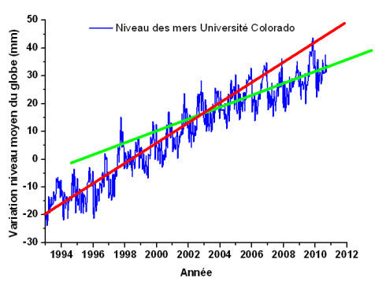</td>
        </tr>
        <tr>
          <td valign="top"><p class="titre">Variation  du contenu calorique global des oc&eacute;ans depuis 1993 </p>
            <p>Variation du contenu calorique des oc&eacute;ans (couche de 0 &agrave; -700m) de 1993 &agrave; D&eacute;c. 2010 d'apr&egrave;s<a href="http://www.nodc.noaa.gov/cgi-bin/OC5/3M_HEAT/heatdata.pl?time_type=3month700"> les donn&eacute;es du NODC</a> (National Oceanographic Data Center US). </p>
            <p><span class="texte">(Figure extraite du site de <a href="http://www.climate4you.com/SeaTemperatures.htm#Global%20sea%20level">Ole Humlum</a><a href="http://www.climate4you.com/images/NODC GlobalOceanicHeatContent0-700mSince1979 With37monthRunningAverage.gif">,</a> tronqu&eacute;e de mani&egrave;re &agrave; ne conserver que la p&eacute;riode 1993-2010 pour permettre la comparaison avec la figure pr&eacute;c&eacute;dente et avec la figure suivante). La figure originale <a href="http://www.climate4you.com/images/NODC GlobalOceanicHeatContent0-700mSince1979 With37monthRunningAverage.gif">est ici.</a><br />
              La ligne bleue &eacute;paisse repr&eacute;sente un lissage sur 37 mois. </span></p>
            <p class="texte">On constate qu'apr&egrave;s une augmentation assez r&eacute;guli&egrave;re de la chaleur contenue dans les oc&eacute;ans, jusqu'en 2003-2004, celle-ci semble s'&ecirc;tre stabilis&eacute;e depuis cette &eacute;poque et jusqu'&agrave; nos jours. Cette observation permet sans doute d'expliquer la d&eacute;croissance de la pente de la courbe pr&eacute;c&eacute;dente lors de cette m&ecirc;me p&eacute;riode. <br />
              En effet, une part importante de la variation du niveau des oc&eacute;ans r&eacute;sulte de la dilatation (ou de la contraction) thermique des oc&eacute;ans. </p>
            <p class="texte">Je rappelle que cette stagnation du contenu calorique des oc&eacute;ans est en contradiction flagrante avec les mod&egrave;les utilis&eacute;s par le GIEC comme l'avait not&eacute;<a href="oceans.html#pielkehansen"> Roger Pielke Sr</a>. </p>
            <p class="texte">&nbsp;</p></td>
          <td></td>
        </tr>
        <tr>
          <td valign="top"><p><span class="titre">Variation des anomalies de la temp&eacute;rature de surface du globe de 1993 &agrave; nos jours</span> d'apr&egrave;s le <a href="http://www.cru.uea.ac.uk/cru/data/temperature">HadCRUT</a>.</p>
            <p class="texte">(Voir <a href="bonnetdane.html#2010">une analyse d&eacute;taill&eacute;e </a>des mesures de temp&eacute;rature fournies par les diff&eacute;rents organismes) </p>
            <p>&nbsp;</p>
            <p>&nbsp;</p>
            <p><span class="texte">Les observations pr&eacute;c&eacute;dentes (Niveau des mers et contenu calorique des oc&eacute;ans) sont coh&eacute;rentes avec la stagnation des temp&eacute;ratures de surface du globe depuis les ann&eacute;es 2000 telles que nous l'avons rapport&eacute;e dans <a href="bonnetdane.html#2010">ce billet</a>. </span></p></td>
          <td></td>
        </tr>
      </table>
      <p class="texte"><span class="textengras">Ainsi et comme on peut le constater, la temp&eacute;rature moyenne de surface, le contenu calorique des oc&eacute;ans et la hausse du niveau moyen des oc&eacute;ans marquent le pas depuis quelques ann&eacute;es</span>, en opposition avec la th&eacute;orie '&quot;standard&quot; de l'effet de serre mise en avant par le GIEC.<br /> 
        <br />
        Comme nous l'avons plusieurs fois fait remarquer, il est tr&egrave;s probable que le d&eacute;but de ce XXI&egrave;me si&egrave;cle constitue une p&eacute;riode singuli&egrave;re de l'&eacute;volution du climat de la plan&egrave;te. Il pourrait bien s'agir d'un maximum tel que celui qui avait &eacute;t&eacute; observ&eacute; dans les ann&eacute;es quarante, et qui se reproduit tous les 60 ans environ, conform&eacute;ment aux observations rapport&eacute;es dans ce<a href="froid.html#bilan"> billet</a>. <br />
        Comme le savent les lecteurs de ce site, cette id&eacute;e qui s'&eacute;carte fondamentalement des pr&eacute;dictions (pr&eacute;visions, sc&eacute;narios) du GIEC est d&eacute;fendue par Akasofu, Klyashtorin et Lyubishin, William Gray, Joseph d'Aleo, Nicola Scafetta et quelques autres. </p>
      <p class="texte">Pour l'instant, les observations sur le niveau moyen des mers rapport&eacute;es ci-dessus vont dans leur sens.<br />
        Wait and see ! </p>
      <p><br />
        Notes :</p>
      <p>1) Les observations de Houston et Dean confirment  les r&eacute;sultats obtenus et publi&eacute;s en 2010 par les <a href="oceans.html#level">chercheurs du Wegener Institute</a>, tous obtenus &agrave; partir des donn&eacute;es mar&eacute;graphiques <span class="texte">qui, seules, permettent de remonter suffisamment dans le temps.<br /> 
        <br />
  Plus r&eacute;cemment, c'est &agrave; dire depuis les ann&eacute;es 1990, les mesures satellitaires sont venues compl&eacute;ter les observations mar&eacute;graphiques. Comme je l'avais not&eacute; dans ce <a href="oceans.html#level">billet</a>, les mesures altim&eacute;triques satellitaires indiquent g&eacute;n&eacute;ralement une hausse nettement sup&eacute;rieure (~3 mm/an) &agrave; celle qui est observ&eacute;e avec les mar&eacute;graphes (~1,7 mm/an), sans d'ailleurs que l'on en connaisse la raison profonde. En r&eacute;alit&eacute;, le niveau des oc&eacute;ans ne s'&eacute;l&egrave;ve pas de mani&egrave;re homog&egrave;ne sur la surface d'un bassin. Tout cela est tr&egrave;s variable en fonction des conditions locales, des bassins etc. comme on l'a vu dans <a href="oceans.html#">ce billet.</a> <br />
  L'<a href="oceans.html#gyre" class="textengras">effet de gyre</a> li&eacute; &agrave; l'&eacute;volution de la pression atmosph&eacute;rique semble jouer un r&ocirc;le important et il n'est pas &eacute;vident que l'&eacute;l&eacute;vation du niveau des mers mesur&eacute;e &agrave; proximit&eacute; des zones continentales soit identique &agrave; celle qui est observ&eacute;e au centre d'un bassin oc&eacute;anique. Quoiqu'il en soit, l'&eacute;volution des donn&eacute;es satellitaires indiquent plut&ocirc;t une d&eacute;c&eacute;l&eacute;ration qu'une acc&eacute;l&eacute;ration comme celle postul&eacute;e par les chercheurs proches du GIEC tels que Rhamstorf et al. </span></p>
      <p>2) <span class="textengras">D'autre part, il est fr&eacute;quemment r&eacute;p&eacute;t&eacute; (&agrave; tort) que la hausse du niveau marin r&eacute;sulte de trois facteurs </span><span class="texte">: D'une part, la fonte des glaces continentales (Groenland etc.). D'autre part, la dilatation des oc&eacute;ans due &agrave; la hausse des temp&eacute;ratures et enfin  la variation de la pression atmosph&eacute;rique qui n'a d'ailleurs, aucune raison de n'agir que dans un seul sens. C'est, en particulier, ce que nous affirme, assez na&iuml;vement, un <a href="http://www.deltares.nl/en/news/news-item/item/11864/global-groundwater-depletion-leads-to-sea-level-rise">article typique sur ce sujet. </a>.<br />
      </span><br />
        La r&eacute;alit&eacute; est beaucoup plus complexe. <span class="texte">D'une part, on essaye de corriger les donn&eacute;es mesur&eacute;es  des effets  de la variation globale de la pression atmosph&eacute;rique (voir, par exemple, <a href="http://www.climate4you.com/SeaTemperatures.htm#Global%20sea%20level">les l&eacute;gendes des graphes</a> rapport&eacute;s par  Ole Humlum). </span></p>
      <p><span class="texte">D'autre part et comme cela a &eacute;t&eacute; expliqu&eacute; dans <a href="oceans.html#gyre">ce billet,</a> <a href="oceans.html#gyre" class="textengras">l'effet de &quot;gyre&quot;</a> contribue de mani&egrave;re tr&egrave;s significative &agrave; la variation du niveau des oc&eacute;ans comme l'ont montr&eacute; entre autres, P.&nbsp;L.&nbsp;Woodworth, N.&nbsp;Pouvreau, et G.&nbsp;W&ouml;ppelmann.</span></p>
      <p class="texte">Je rappelle qu'en <span class="textengras">2004</span>, deux  scientifiques am&eacute;ricains, <span class="textengras">Laury Miller de la NOAA et Bruce C. Douglas de  l&rsquo;Universit&eacute; de Floride</span> pointaient d&eacute;j&agrave; du doigt, dans <a href="http://www.nature.com/nature/journal/v428/n6981/full/nature02309.html">un article publi&eacute; dans  l<span class="Style22">a </span><span class="textengras Style22">revue Nature</span></a>, le fait que la dilatation thermique et la fonte des  glaces ne permettaient pas d&rsquo;expliquer  l&rsquo;&eacute;l&eacute;vation moyenne globale  de 2 mm/an environ, car <span class="textengras">les vitesses d&rsquo;augmentation de volume et les quantit&eacute;s  de glaces fondues ne pouvaient se traduire que par une hausse, d&rsquo;au mieux,  0,5 mm/an.</span><br />
        En <span class="textengras">2006</span>, ils confirmaient leurs  affirmations dans une <a href="http://rsta.royalsocietypublishing.org/content/364/1841/805">autre publication &agrave; la Royal Society</a> .<br />
        En <span class="textengras">2007</span>, ils &eacute;mettaient l&rsquo;hypoth&egrave;se que<span class="textengras"> la variation des niveaux  oc&eacute;aniques n&rsquo;&eacute;tait pas directement due  au r&eacute;chauffement, mais aux variations d&eacute;cennales ou multid&eacute;cennales du  champ de pression atmosph&eacute;rique dans certaines zones oc&eacute;aniques particuli&egrave;res  appel&eacute;es gyres </span>( R&eacute;f : Miller L., Douglas B. C.&nbsp;: Gyre-scale atmospheric  pressure variations and their relation to 19th and 20th century sea level rise) publi&eacute; dans Geophysical Research Letters, 34, L16602, DOI&nbsp;: 10.1029/GL030862,  2007)</p>
      <p><span class="textengras"><br />
  3) </span><span class="texte">Enfin, un article encore sous presse &agrave; para&icirc;tre au</span> Geophysical Research Letters <span class="textengras">montre que la d&eacute;pl&eacute;tion anthropique relativement intensive des nappes phr&eacute;atiques</span><span class="texte"> des zones semi-arides (qui se retrouve dans les oc&eacute;ans), provoque une hausse moyenne du niveau des oc&eacute;ans </span>de l'ordre de 0,8 mm/an <span class="texte">ce qui est loin d'&ecirc;tre n&eacute;gligeable par rapport aux +3,1 mm/an des mesures satellites ou des + 1,7 mm/an des mesures mar&eacute;graphiques. </span><br />
        <span class="texte">Voici la r&eacute;f&eacute;rence compl&egrave;te de l'article (<a href="http://www.deltares.nl/en/news/news-item/item/11864/global-groundwater-depletion-leads-to-sea-level-rise">analyse ici</a>) en question :<br />
        </span><a href="http://www.deltares.nl/en/news/news-item/item/11864/global-groundwater-depletion-leads-to-sea-level-rise">R&eacute;f&eacute;rence</a> : <span class="texte">Wada, Y., L. P.H. van Beek, C. M. van Kempen, J. W.T.M. Reckman, S.   Vasak, and M.F.P. Bierkens (2010), Global depletion of groundwater   resources, </span><span class="textengras">Geophysical Research Letters</span><span class="texte"> doi:10.1029/2010GL044571, sous   presse</span>. </p>
      <p><span class="texte">Il reste donc encore bien des questions &agrave; r&eacute;soudre pour analyser correctement les moteurs de la hausse r&eacute;cente du niveau moyen des oc&eacute;ans de la plan&egrave;te qui a commenc&eacute; il y a quelques... 20000 ans comme le rappelle ce <a href="http://en.wikipedia.org/wiki/File:Post-Glacial_Sea_Level.png">graphique tr&egrave;s connu</a>. C'est ainsi que l'entr&eacute;e de la</span> <a href="http://fr.wikipedia.org/wiki/Grotte_Cosquer" class="texte">grotte Cosquer</a> <span class="texte">qui se trouve actuellement &agrave; quelques 37 m en dessous du niveau de la mer, se trouvait sans doute, &agrave; l'origine, situ&eacute;e sur le flanc d'une colline.</span> <br />
        <br />
        <br />
        <span class="texte">En r&eacute;sum&eacute; et en conclusion - et ceci devrait nous rassurer - </span> comme nous le montrent les r&eacute;sultats publi&eacute;s par Houston et Dean ainsi que ceux de <span class="textengras"> Manfred Wenzel et Jens Schr&ouml;ter</span>, il n'y a pas d'acc&eacute;l&eacute;ration perceptible du niveau global des oc&eacute;ans de la plan&egrave;te comme en attestent d'ailleurs aussi bien les mesures mar&eacute;graphiques que les mesures altim&eacute;triques satellitaires. <br />
        Au contraire, une d&eacute;c&eacute;l&eacute;ration semble s'&ecirc;tre amorc&eacute;e depuis quelques ann&eacute;es.</p>
      <p class="texte">Plusieurs m&eacute;dias <span class="textengras">anglophones </span>ont honn&ecirc;tement inform&eacute; leurs lecteurs de cette bonne nouvelle en rapportant sur l'article de Houston et Dean. <br />
        Notre  sympathique Y&eacute;ti  (ci-contre), lui, s'informe aupr&egrave;s des m&eacute;dias francophones... <br />
      ______________________________________________</p>
      <p class="titre"><span class="textengras">Compl&eacute;ments du 12 Avril 2010 <a name="accel2" id="accel2"></a>:</span> Caract&egrave;re oscillatoire de la tendance du niveau des mers</p>
      <p class="texte">Toujours &agrave; propos de l'article de <span class="textengras">Houston et Dean</span>, mentionn&eacute; ci-dessus, j'ai omis de vous pr&eacute;senter un de leurs graphiques (leur Fig. 6, plus bas) qui est, en fait le prolongement d'un graphe ant&eacute;rieur publi&eacute; par<span class="textengras"> Holgate S. J. en 2007</span> qui a lui m&ecirc;me prolong&eacute; un graphique ant&eacute;rieur <span class="textengras">(Holgate et Woodworth 2004- HW04). Le graphique de Holgate (2007) est particuli&egrave;rement int&eacute;ressant. </span>Ce dernier a, lui-m&ecirc;me, &eacute;t&eacute; compl&eacute;t&eacute; successivement par Houston et Dean, puis, peu apr&egrave;s, par Pat Michaels. Michaels a utilis&eacute; les derni&egrave;res donn&eacute;es altim&eacute;triques (satellitaires) disponibles &agrave; ce jour. <br />
        Tous les graphes suivants repr&eacute;sentent les variations du taux de hausse des oc&eacute;ans de la plan&egrave;te en fonction du temps.<br />
          <br />
        </p>
      <p class="texte"><span class="textengras">Holgate S. J. (  2007). <br />
        On the decadal rates of sea level change during the twentieth century,<br />
      </span><span class="Style16">&quot;A propos du taux d&eacute;cennal de variation du niveau des mers durant le XX&egrave;me si&egrave;cle &quot; </span><span class="texte"><span class="textengras"><em><br />
  </em></span></span><span class="Style43">Geophysical Research Letters, <strong>34</strong>, L01602, doi:10.1029/2006GL028492.</span> </p>
      <p class="texte">Voici la figure 2 de cet article. Elle a &eacute;t&eacute; obtenue en compilant les r&eacute;sultats des donn&eacute;es mar&eacute;graphiques d'un grand nombre de stations (du moins apr&egrave;s 1950) r&eacute;parties dans le monde, s&eacute;lectionn&eacute;es pour leur fiabilit&eacute;. La l&eacute;gende de cette figure est la suivante : </p>
      <p class="texte"><span class="textengras">Figure 2 : </span>Comparaison des taux de variations d&eacute;cennaux de la hausse du niveau des oc&eacute;ans, sur la base des 9 enregistrements avec les taux mesur&eacute;s par les 177 stations mar&eacute;graphiques utilis&eacute;es dans HW04. Tous les taux sont corrig&eacute;s de l'ajustement isostatique et des effets barom&eacute;triques inverses. La zone gris&eacute;e correspond &agrave; l'erreur standard de  &plusmn;1. </p>
      <p class="texte">Voici les derni&egrave;res lignes de la conclusion de l 'article de Holgate (2007):: </p>
      <p class="texte">&quot;Finalement, en prolongeant le travail de HW04 (Ndt : HW04 = l' article pr&eacute;c&eacute;dent de Holgate et Woordworth, 2004), on trouve que le taux de mont&eacute;e &eacute;lev&eacute; et d&eacute;cennal du niveau moyen des oc&eacute;ans,<span class="textengras"> durant les 20 derni&egrave;res ann&eacute;es des donn&eacute;es, n'&eacute;tait pas particuli&egrave;rement inhabituel dans un contexte de longue dur&eacute;e.&quot;</span></p>
      <p class="texte"><span class="textengras">Pour leur part, Houston et Dean</span> ont superpos&eacute; les r&eacute;sultats des mesures altim&eacute;triques (donc satellitaires) r&eacute;centes au graphe pr&eacute;c&eacute;dent de Holgate  qui est obtenu &agrave; partir des mesures mar&eacute;graphiques, jusqu'en 2003. La figure 6 de l'article de <span class="textengras">Houston et Dean</span> qui est compl&eacute;t&eacute;e avec les donn&eacute;es altim&eacute;triques disponibles jusqu'en avril 2010, est accompagn&eacute;e de la l&eacute;gendesuivante :</p>
      <p class="texte"><span class="titre"></span></p>
      <p class="texte">&nbsp;</p>
      <p class="texte">&nbsp;</p>
      <p class="texte"><span class="textengras">Figure 6</span>. Donn&eacute;es altim&eacute;triques (points noirs) report&eacute;s sur la figure de Holgate (2007). <br />
      </p>
      <p class="texte">A ce propos et dans leur article,<span class="textengras"> Houston et Dean</span> remarquent que : </p>
      <p class="texte">&quot;Lorsqu'on les replace dans un contexte historique, les mesures altim&eacute;triques (satellitaires) semblent similaires aux multiples oscillations qui ont eu lieu au cours des cent derni&egrave;res ann&eacute;es et il n'est pas possible de d&eacute;terminer si l'augmentation du taux de hausse mesur&eacute; par les altim&egrave;tres repr&eacute;sentent le front montant d'une acc&eacute;l&eacute;ration ou, simplement, une oscillation d&eacute;cennale typique; De fait, le fait que la moyenne d&eacute;croisse sugg&egrave;re une oscillation.&quot; </p>
      <p>&nbsp;</p>
      <p class="texte">&nbsp;</p>
      <p class="texte">&nbsp;</p>
      <p class="texte">Pour sa part, <span class="textengras">Pat Michaels</span> (Climatologue US, ancien Professeur &agrave; l'Universit&eacute; de Virginie) <a href="http://www.worldclimatereport.com/index.php/2011/04/07/sea-level-rise-still-slowing-down">a prolong&eacute; les donn&eacute;es altim&eacute;triques</a> utilis&eacute;es par Houston et Dean jusqu'aux derni&egrave;res donn&eacute;es disponibles actuellement. <br />
        <br />
        Voici le r&eacute;sultat, ci-contre : </p>
      <p class="texte">Comme on le constate et comme je l'ai d&eacute;j&agrave; signal&eacute; plus haut, les donn&eacute;es altim&eacute;triques sont syst&eacute;matiquement plus &eacute;lev&eacute;es que les donn&eacute;es mar&eacute;graphiques pour des raisons qui demeurent encore myst&eacute;rieuses. Cependant la tendance des donn&eacute;es altim&eacute;triques (satellitaires, seulement disponibles depuis 1993), semble suivre la tendance oscillatoire d&eacute;cennale relev&eacute;e depuis 100 ans &agrave; partir des donn&eacute;es mar&eacute;graphiques. Nous sommes actuellement dans une phase d&eacute;croissante, depuis 2003 environ, comme nous l'avons vu plus haut. </p>
      <p class="texte">Les donn&eacute;es compl&eacute;t&eacute;es par Pat Michalels s'arr&ecirc;tent en D&eacute;cembre 2010. Nous sommes en Avril 2011. Il se trouve que <a href="http://sealevel.colorado.edu">l'Universit&eacute; du Colorado qui g&egrave;re cette base de donn&eacute;es</a> des mesures altim&eacute;triques a cess&eacute; de mettre &agrave; jour ce fichier depuis la fin de l'ann&eacute;e derni&egrave;re sans que <a href="http://wattsupwiththat.com/2011/04/06/whats-delaying-uc-sea-level-data-from-being-updated">l'on en connaisse la raison</a>. </p>
      <p class="texte">C'est bien dommage...</p>
      <p class="texte"><span class="textengras">En conclusion, cher(e)s lecteurs (-trices)</span>, vous voil&agrave; arm&eacute;(e)s pour r&eacute;pondre aux innombrables affirmations de ceux qui clament, haut et fort, dans les m&eacute;dias et dans les livres que &quot;la hausse du niveau des oc&eacute;ans est trois fois plus rapide qu'auparavant&quot;. C'est faux. <br />
        En r&eacute;alit&eacute;, le taux de mont&eacute;e des oc&eacute;ans n'est nullement en voie d'acc&eacute;l&eacute;ration. Il oscille avec une p&eacute;riode proche de 9-10 ans et la tendance moyenne n'est nullement en augmentation comme on le voit sur les graphiques pr&eacute;c&eacute;dents et dans les articles scientifiques publi&eacute;s sur ce sujet qui utilisent les donn&eacute;es objectives tels que les mar&eacute;graphes et les altim&egrave;tres satellitaires. </p>
      <p class="texte">Il est donc totalement vain de sonner le tocsin, comme le font certains, lorsque l'on se trouve dans une phase d'augmentation. Evidemment, personne ne sait comment tout cela va &eacute;voluer, mais <span class="textengras">le caract&egrave;re oscillatoire du taux de hausse des oc&eacute;ans avec une p&eacute;riode de l'ordre de 10 ans est une r&eacute;alit&eacute; objective et ceci depuis au moins cent ans. D'autre part, rien ne dit que le taux de hausse des oc&eacute;ans est en voie d'acc&eacute;l&eacute;ration. Bien au contraire. </span></p>
      <p class="textengras">A suivre (bien s&ucirc;r !). <br />
      ________________________________</p>
      <p class="texte"><span class="textengras">Rappel</span> :  Pat Michaels, cit&eacute; ci-dessus, est un climatologue &quot;critique&quot; du travail des ses coll&egrave;gues &quot;mainstream&quot; proches du GIEC. Il ne s'est pas fait que des amis. C'est ainsi que dans les courriels du Climategate, l'un des protagonistes de ces &eacute;changes de emails affirme que lorsqu'il rencontrera Pat Michaels lors d'une conf&eacute;rence, <a href="bonnetdane.html#cru">il sera tent&eacute; de lui &quot;faire sa f&ecirc;te</a>&quot; comme l'on dit.. L'expression anglaise utilis&eacute;e est beaucoup plus explicite. </p>      </th>
    </tr>
    <tr bgcolor="#CCFFFF">
      <th height="5464" align="left" valign="top" bordercolor="#FFFFFF" bgcolor="#CCFFFF" class="textengras" scope="col"><p>1er Mars  2011 : <span class="titre"><a name="time" id="time"></a>La machine &agrave; remonter le temps </span>(pour le temps m&eacute;t&eacute;orologique).<br />
        </p>
        <p>Certaines id&eacute;es sont si lumineuses, si &eacute;videntes, qu'on se demande pourquoi on ne les a pas eues avant...<br />
          <br />
          <span class="texte">De fait, depuis quelques temps - personne n'a pu y &eacute;chapper gr&acirc;ce &agrave; nos m&eacute;dias - on nous rebat les oreilles avec l'augmentation &quot;&eacute;vidente&quot; (dit-on, d'ailleurs sans la moindre <a href="bonnetdane.html#serial"> preuve scientifique</a>) de la fr&eacute;quence et de l'intensit&eacute; des &eacute;v&eacute;nements climatiques extr&ecirc;mes. C'est ainsi que l'on nous affirme que l'augmentation de la concentration du CO2 et des autres gaz &agrave; effet de serre d'origine anthropique vont nous conduire tout droit aux cataclysmes les plus vari&eacute;s : Plus chaud, plus froid, plus d'inondations, plus de s&eacute;cheresses, plus de cyclones violents etc...tout ceci en fonction de la derni&egrave;re catastrophe m&eacute;t&eacute;orologique qui fait la une des journaux.</span> <span class="texte">Et certains scientifiques opinent... </span></p>
        <p class="texte">S'agissant de cette &eacute;volution, suppos&eacute;e apocalyptique, des &eacute;v&eacute;nements m&eacute;t&eacute;orologiques (et non pas climatiques), la premi&egrave;re question qui vient &agrave; l'esprit d'une personne raisonnable, est &eacute;videmment : <br />
        &quot;<span class="textengras">Peut-&ecirc;tre. Mais comment c'&eacute;tait, avant ? </span>Ce que nous voyons est-il vraiment diff&eacute;rent de ce qu'ont subi nos parents et nos grands-parents. Pouvons nous observer une &eacute;volution nette dans la trajectoire temporelle des grands indicateurs qui d&eacute;terminent  les &eacute;v&eacute;nements m&eacute;t&eacute;orologiques, (plut&ocirc;t que climatiques) ? &quot;.</p>
        <p class="texte">Cette id&eacute;e aussi sens&eacute;e qu'&eacute;vidente est enfin parvenue &agrave; percer l'&eacute;paisse carapace des certitudes essentiellement bas&eacute;e sur les &quot;projections/sc&eacute;narios /pr&eacute;dictions&quot; climatiques bas&eacute;es sur les simulations num&eacute;riques issues des ordinateurs, quand ce n'est pas sur les affirmations p&eacute;remptoires de quelques activistes du climat. <br />
        Cette fois-ci il s'agit de tout autre chose. <span class="textengras">Il s'agit d'observations</span>. D'une &eacute;norme quantit&eacute; d'observations cumul&eacute;es dans les disque dur des ordinateurs g&eacute;ants et surpuissants dont dispose maintenant la recherche scientifique. En fait, il s'agit de &quot;<span class="textengras">remonter dans le temps&quot;</span> et de retracer tout ce qui a bien pu arriver, en mati&egrave;re de m&eacute;t&eacute;orologie, &agrave; notre belle plan&egrave;te bleue dans le pass&eacute;, jusqu'&agrave; nos jours et ceci avec une &eacute;chelle temporelle extr&ecirc;mement petite (de quelques heures &agrave; quelques jours)..</p>
        <p class="texte">Comme vous le savez si vous avez suivi la longue s&eacute;rie des articles publi&eacute;s ici (depuis la fin 2006), &agrave;<span class="PenseeUnique"> Pensee-Unique.fr</span> nous avons une pr&eacute;f&eacute;rence marqu&eacute;e pour les mesures et les observations plut&ocirc;t qu'aux r&eacute;sultats des simulations num&eacute;riques des multiples observables du climat et la mise en place d'un tel projet ne peut que nous r&eacute;jouir. </p>
        <p class="texte">L'article de revue forc&eacute;ment tr&egrave;s copieux que je vais vous d&eacute;crire tr&egrave;s bri&egrave;vement ci-dessous, rassemble les analyses et les r&eacute;sultats d'un grand nombre d'observations historiques, cruciales pour l'&eacute;volution du climat et sa mod&eacute;lisation. <span class="textengras">Ces observations, tr&egrave;s vari&eacute;es, couvrent une p&eacute;riode de 138 ans, s'&eacute;tendant de 1872 jusqu'&agrave;  nos jours. <br />
          <br />
        Si le pr&eacute;sent est diff&eacute;rent du pass&eacute;, nous le verrons. </span></p>
        <p class="texte">Une telle entreprise qui &eacute;quivaut, &agrave; peu pr&egrave;s, &agrave; regarder tous les d&eacute;tails d'un &eacute;l&eacute;phant avec une loupe grossissante, pour ne pas dire un microscope, est &eacute;videmment gigantesque. Elle ne pouvait &ecirc;tre men&eacute;e &agrave; bien qu'&agrave; l'occasion d'une vaste coop&eacute;ration internationale. C'est ce qui a &eacute;t&eacute; fait, sans aucune doute sous l'impulsion du jeune chef de projet, Gil Compo, dont je parlerai un peu plus loin. <br />
          <br />
          Les premiers r&eacute;sultats de cette vaste coop&eacute;ration internationale sont, pour le moins, surprenants et sans aucun doute, d&eacute;cevants pour les tenants de l'apocalypse et de la mod&eacute;lisation sur ordinateur. C'est ce que nous allons voir en r&eacute;sumant les r&eacute;sultats de l'article suivant qui n'est rien d'autre que le premier rapport d'expertise de ce projet. L'article est intitul&eacute; : <br />
          <br />
          <span class="textengras"> (Le projet de r&eacute;analyse du XX&egrave;me si&egrave;cle)</span>.<a href="http://onlinelibrary.wiley.com/doi/10.1002/qj.776/pdf" class="textengras">The Twentieth Century Reanalysis Project</a><br />
          Publi&eacute; online le 25 Janvier 2011. Acc&egrave;s libre. </p>
        <p class="texte">Il est publi&eacute; dans cette revue bien connue : </p>
        <p><span class="textengras Style19">Quarterly Journal of the Royal Meteorological Socie<a href="http://onlinelibrary.wiley.com/journal/10.1002/%28ISSN%291477-870X" shape="rect">t</a>y, </span><span class="texte">Volume 137, Issue 654.</span></p>
        <p><span class="texte">Voici la liste des auteurs et leurs affiliations : <br />
          </span><br />
          G. P. Compo, a, b ; J. S.Whitaker, b ; P. D. Sardeshmukh, a, b ; N. Matsui, a, b ; R. J. Allan, c ; X. Yin, d ; <br />
          B. E. Gleason, Jr., e : R. S. Vose, e ; G. Rutledge, e ; P. Bessemoulin, f ; S. Br&ouml;nnimann, g, h ; M. Brunet, i, l ; <br />
          R. I. Crouthamel, j ; A. N. Grant, g ; P. Y. Groisman, e, k ; P. D. Jones, l ; M. C. Kruk, d ; A. C. Kruger, m ; <br />
          G. J. Marshall, n ; M. Maugeri, o ; H. Y. Mok, p ; &Oslash;. Nordli, q ; T. F. Ross, r ; R. M. Trigo, s ; X. L. Wang, t ; <br />
          S. D. Woodruff, b ; and S. J.Worley, u ; <br />
          <br />
          <span class="texte">a University of Colorado, </span><span class="textengras">CIRES</span><span class="texte">, Climate Diagnostics Center, Boulder, CO, USA<br />
          b </span><span class="textengras">NOAA</span><span class="texte"> Earth System Research Laboratory, Physical Sciences Division, Boulder, CO, USA<br />
          c ACRE Project, </span><span class="textengras">Hadley Centre, Met Office</span><span class="texte">, Exeter, UK<br />
          d</span><span class="textengras"> STG Inc</span><span class="texte">., Asheville, NC, USA<br />
          e </span><span class="textengras">NOAA</span><span class="texte"> National Climatic Data Center, Asheville, NC, USA<br />
          f </span><span class="textengras">M&eacute;t&eacute;o France</span><span class="texte">, Toulouse, France<br />
          g </span><span class="textengras">ETH</span><span class="texte"> Zurich, Switzerland<br />
          h Oeschger Center for Climate Change Research, </span><span class="textengras">University of Bern</span><span class="texte">, Switzerland<br />
          i </span><span class="textengras">Centre for Climate Change</span><span class="texte">, Universitat Rovira i Virgili, Tarragona, Spain<br />
          j International Environmental Data Rescue Organization, Deale, MD, USA<br />
          k University Corporation for Atmospheric Research,(</span><span class="textengras">UCAR</span><span class="texte">) Boulder, CO, USA<br />
          l </span><span class="textengras">Climatic Research Unit</span><span class="texte">, University of East Anglia, Norwich, UK<br />
          m South African Weather Service, Pretoria, South Africa<br />
          n </span><span class="textengras">British Antarctic Survey</span><span class="texte">, Cambridge, UK<br />
          o Dipartimento di Fisica, Universit`a degli Studi di Milano, Milano, Italy<br />
          p Hong Kong Observatory, Hong Kong, China<br />
          q Norwegian Meteorological Institute, (</span><span class="textengras">NMI</span><span class="texte">) Oslo, Norway<br />
          r </span><span class="textengras">NOAA</span><span class="texte"> Climate Database Modernization Program, NCDC, Asheville, NC, USA<br />
          s Centro de Geof&#305;sica da Universidade de Lisboa, IDL, University of Lisbon, Portugal<br />
          t </span><span class="textengras">Environment Canada</span><span class="texte">, Toronto, Ontario, Canada<br />
          u National Center for Atmospheric Research (</span><span class="textengras">NCAR</span><span class="texte">), Boulder, CO, USA</span></p>
        <p><span class="texte">Comme vous le constatez, il s'agit bien d'un projet de coop&eacute;ration internationale d'envergure dans laquelle on retrouve tous les &quot;poids lourds&quot; du domaine tels que</span> la NOAA (US), le NCAR (US) , le CRU et le MetOffice (UK), le CRU (UK), le NMI Norv&eacute;gien, le British Antarctic Survey (UK), Le Hadley Center (UK), l'ETH de Zurich et M&eacute;t&eacute;o-France (Fr).</p>
      <p><span class="texte">Parmi d'autres, les lecteurs attentifs de ce site reconna&icirc;tront, au passage, le nom du repr&eacute;sentant Fran&ccedil;ais de M&eacute;t&eacute;o-France qui n'est autre que </span>Pierre Bessemoulin <span class="texte">(l </span><span class="texte">'ancien Directeur de la Climatologie &agrave; M&eacute;t&eacute;o-France, actuel pr&eacute;sident de la commission de Climatologie de l'Organisation M&eacute;t&eacute;orologique Mondiale (OMM))</span>, <span class="texte">dont nous avons <a href="bonnetdane.html#besse">d&eacute;j&agrave; cit&eacute; les travaux (rassurants) </a>portant sur l'&eacute;volution de la fr&eacute;quence des temp&ecirc;tes en France, publi&eacute;s en 2002.</span><br />
        <br />
        <span class="texte">De m&ecirc;me, les lecteurs attentifs reconna&icirc;tront les noms du premier auteur et auteur principal de cet article de Revue, </span>G. P. Compo <span class="texte">et de son coll&egrave;gue</span> P.D. Sardeshmukh <span class="texte">(tous deux de la NOAA et de l'Universit&eacute; du Colorado, Boulder) qui sont &eacute;galement les deux auteurs d'un<a href="oceans.html#compo"> article </a> (2008)  plut&ocirc;t contestataire des mod&egrave;les des gaz &agrave; effet de serre, qui portait sur l'importance cruciale de la chaleur oc&eacute;anique dans la d&eacute;termination de la temp&eacute;rature des continents. </span></p>
      <p><span class="texte">Enfin, les lecteurs qui suivent de pr&egrave;s l'actualit&eacute;, ne manqueront pas de remarquer que le Climate Research Unit </span><span class="textengras">(le CRU de l'Universit&eacute; d'East Anglia</span><span class="texte">) est repr&eacute;sent&eacute; par son directeur (reconduit apr&egrave;s une courte suspension)</span>, Phil Jones <span class="texte">qui est l'un des principaux protagonistes (avec Michael Mann) de l'affaire des courriers d&eacute;rob&eacute;s</span> (<a href="bonnetdane.html#cru">le Climategate</a>) <span class="texte">qui n'a cess&eacute;e de d&eacute;frayer la chronique (dans les pays anglophones) depuis le mois de novembre 2009 et dont les cons&eacute;quences se font encore sentir (outre-Manche et outre-Atlantique).<br />
        <br />
      Voici, ci-dessous, ce que nous dit (<a href="http://www.lbl.gov/cs/CSnews/CSnews12511.html">sur le site du Berkeley Lab Computing Science</a> et sous le titre </span><span class="textengras">&quot;Le projet 20CR, une machine &agrave; remonter le temps pour le Climat&quot;</span><span class="texte">), </span><span class="textengras">Gil Compo </span><span class="texte">(ci-contre), le principal auteur de cet article et le leader de ce vaste projet baptis&eacute; </span><span class="textengras">20CR. </span><span class="texte">Je vous conseille vivement de visionner la vid&eacute;o de pr&eacute;sentation du projet que vous trouverez sur le site du Berkeley Lab. </span></p>
      <p>&quot;La mise au point de cette gigantesque base de donn&eacute;es a n&eacute;cessit&eacute; un effort international pour collecter les observations historiques et les donn&eacute;es de sources aussi diverses que celles de capitaines de vaisseaux du XIX&egrave;me si&egrave;cle, des explorateurs du tournant du si&egrave;cle et des m&eacute;decins, toutes collationn&eacute;es en utilisant quelques uns des plus puissants ordinateurs du monde au  US Department of Energy's National Research   Scientific Computing Center en Californie et au Oak Ridge Leadership   Computing Facility dans le Tennessee,&quot;</p>
      <p><span class="texte">En r&eacute;f&eacute;rence aux affirmations de certains selon lesquelles les extr&ecirc;mes climatiques devraient devenir plus nombreux, voici ce que d&eacute;clare Gil Compo qui pr&eacute;sente une suite de diapos int&eacute;ressantes dans sa pr&eacute;sentation. Celle qui est reproduite ci-contre nous rappelle la fameuse temp&ecirc;te du 18 mars 1925 qui a affect&eacute; trois &eacute;tats des USA et qui est la plus meurtri&egrave;re aux USA jusqu'&agrave; ce jou</span>r. </p>
      <p>&quot;La nouvelle base de donn&eacute;es va permettre aux climatologues de placer les extr&ecirc;mes m&eacute;t&eacute;orologiques actuels dans une perspective historique et de d&eacute;terminer dans quelle mesure ces extr&ecirc;mes &eacute;voluent &quot; dit Gil Compo [...]<br />
        <br />
          <span class="texte">Un peu plus loin, Gil Compo r&eacute;sume : </span><br />
          <br />
        &quot;Les donn&eacute;es r&eacute;sultant de cette r&eacute;analyse permettront aux climatologues d'&eacute;valuer avec rigueur les &eacute;volutions climatiques du pass&eacute; et de les comparer aux projections issues des simulations sorties des mod&egrave;les, ce qui est critique pour instaurer la confiance dans les projections des mod&egrave;les sur les changements &agrave; l'&eacute;chelle r&eacute;gionale et sur les &eacute;v&eacute;nements extr&ecirc;mes &agrave; fort impact '...&quot; Nous esp&eacute;rons que ces donn&eacute;es issues de la r&eacute;analyse des 138 derni&egrave;res ann&eacute;es permettront aux chercheurs du climat de mieux prendre en compte les questions telles que l'amplitude des variations naturelles des &eacute;v&eacute;nements extr&ecirc;mes, y compris les inondations, les s&eacute;cheresses, les cyclones extra-tropicaux et les vagues de froid.&quot; </p>
      <p class="texte">Aucun scientifique digne de ce nom, ne rejetterait un tel discours...&quot;L'amn&eacute;sie historique&quot; est, h&eacute;las, beaucoup trop pratiqu&eacute;e de nos jours. Replacer les &eacute;v&eacute;nements dans leur contexte historique est sans aucun doute la meilleure d&eacute;marche &agrave; adopter pour essayer de discerner en quoi et dans quelle mesure les &eacute;v&eacute;nements climatiques actuels sortent de la norme des fluctuations naturelles. Cela rel&egrave;ve du simple bon sens et on se demande pourquoi une id&eacute;e aussi &eacute;vidente (quoiqu'assez difficile &agrave; mettre en pratique), n'est venue &agrave; l'esprit qu'apr&egrave;s quelques trente ann&eacute;es de mod&eacute;lisation num&eacute;rique... </p>
      <p class="textengras">Voici donc le r&eacute;sum&eacute; de l'article cit&eacute; ci-dessus et qui repr&eacute;sente une &eacute;tape marquante du d&eacute;roulement du &quot;20CR project&quot; : <br />
        <span class="texte">Comme toujours, la version originale en anglais suivie d'une traduction en fran&ccedil;ais. </span></p>
      <table width="799" border="1">
        <tr>
          <td height="626" bgcolor="#FFFFCC"><p>Abstract :<br />
              <span class="legende">The Twentieth Century Reanalysis (20CR) project is an international effort to produce a comprehensive global atmospheric circulation dataset spanning the twentieth century, assimilating only surface pressure reports and using observed monthly sea-surface temperature and sea-ice distributions as boundary conditions. It is chiefly motivated by a need to provide an observational dataset with quantified uncertainties for validations of climate model simulations of the twentieth century on all time-scales,with emphasis on the statistics of daily weather. It uses an Ensemble Kalman Filter data assimilation method with background &lsquo;first guess&rsquo; fields supplied by an ensemble of forecasts from a global numerical weather prediction model. This directly yields a global analysis every 6 hours as the most likely state of the atmosphere, and also an uncertainty estimate of that analysis. The 20CR dataset provides the first estimates of global tropospheric variability, and of the dataset&rsquo;s time-varying quality, from 1871 to the present at 6-hourly temporal and 2&#9702; spatial resolutions. Intercomparisons with independent radiosonde data indicate that the reanalyses are generally of high quality. The quality in the extratropical Northern Hemisphere throughout the century is similar to that of current three-day operational NWP forecasts. Intercomparisons over the second half-century of these surface-based reanalyses with other reanalyses that also make use of upper-air and satellite data are equally encouraging. It is anticipated that the 20CR dataset will be a valuable resource to the climate research community for both model validations and diagnostic studies. <br />
            Some surprising results are already evident. For instance, the long-term trends of indices representing the North Atlantic Oscillation, the tropical Pacific Walker Circulation, and the Pacific&ndash;North American pattern are weak or non-existent over the full period of record. The long-term trends of zonally averaged precipitation minus evaporation also differ in character from those in climate model simulations of the twentieth century.</span></p>
            <p class="textengras">&quot;R&eacute;sum&eacute; : <br />
                Le projet de r&eacute;analyse du XX&egrave;me si&egrave;cle (20CR) constitue un effort international destin&eacute; &agrave; produire un jeu de donn&eacute;es compl&egrave;tes sur la circulation atmosph&eacute;rique du globe, concernant le XX&egrave;me si&egrave;cle. Ce projet est essentiellement motiv&eacute; par le besoin de fournir un jeu de donn&eacute;es observationnelles avec des incertitudes quantifi&eacute;es, destin&eacute;es &agrave; la validation des simulations des mod&egrave;les climatiques pour le XX&egrave;me si&egrave;cle, et ceci sur toutes les &eacute;chelles de temps, en insistant sur les statistiques concernant les donn&eacute;es m&eacute;t&eacute;o quotidiennes<span class="texte">. Ce projet utilise une m&eacute;thode d'assimilation des donn&eacute;es par un ensemble de Filtres  de Kalman avec, en arri&egrave;re plan, des champs &quot;de premi&egrave;re approximation&quot; fournis par un ensemble de pr&eacute;visions obtenues &agrave; partir d'un mod&egrave;le num&eacute;rique global pour la pr&eacute;diction m&eacute;t&eacute;orologique. Ceci nous conduit directement &agrave; une analyse globale, pour chaque p&eacute;riode de 6 heures, des &eacute;tats les plus probables de l'atmosph&egrave;re ainsi qu'&agrave; une estimation des incertitudes de cette analyse. Les donn&eacute;es du projet 20CR procurent les premi&egrave;res estimations de la variabilit&eacute; troposph&eacute;rique du globe ainsi que les jeux de donn&eacute;es dont la qualit&eacute; varie en fonction du temps, </span>pour la p&eacute;riode allant de 1871 jusqu'&agrave; pr&eacute;sent avec des r&eacute;solutions temporelles de 6h et des r&eacute;solutions spatiales de 2&deg;<span class="texte">. La comparaison avec des donn&eacute;es ind&eacute;pendantes des radiosondes</span>,<span class="texte"> montrent que les r&eacute;analyses sont g&eacute;n&eacute;ralement de haute qualit&eacute;. La qualit&eacute; des r&eacute;sultats dans l'h&eacute;misph&egrave;re Nord extratropical tout au long du si&egrave;cle est semblable &agrave; celle des pr&eacute;visions actuelles &agrave; trois jours du NWP (NdT : Numerical Weather Prediction). La comparaison sur la dur&eacute;e de la seconde partie du si&egrave;cle de ces r&eacute;analyses bas&eacute;es sur les mesures en surface avec les autres r&eacute;analyses qui utilisent les donn&eacute;es satellitaires en altitude est &eacute;galement encourageante. On pr&eacute;voit que la base de donn&eacute;es du projet 20CR constituera une ressource profitable pour la communaut&eacute; de la recherche climatique aussi bien pour la validation des mod&egrave;les que pour les &eacute;tudes diagnostiques. </span><br />
              Quelques r&eacute;sultats surprenants sont d&eacute;j&agrave; &eacute;vidents. Par exemple, la tendance &agrave; long terme des indices repr&eacute;sentant l'Oscillation Nord Atlantique, la Circulation de Walker du Pacifique Tropical et celle du Pacifique Nord Am&eacute;ricain, est faible ou non-existante sur la totalit&eacute; de la p&eacute;riode &eacute;tudi&eacute;e. Les tendances &agrave; long terme des pr&eacute;cipitations moyenn&eacute;es par zones, moins l'&eacute;vaporation, diff&egrave;rent aussi du point de vue de leurs caract&eacute;ristiques de celles des mod&eacute;lisations num&eacute;riques du climat du XX&egrave;me si&egrave;cle.&quot;</p>            </td>
        </tr>
      </table>
      <ul>
        <li>Quelques explications concernant le dernier paragraphe du r&eacute;sum&eacute;, en relation avec la figure 16 du rapport du 20CR pr&eacute;sent&eacute;e ci-dessous :</li>
      </ul>
      <p><span class="texte"></span>La Circulation de Walker du Pacifique <span class="texte">est illustr&eacute;e par le dessin ci-contre (<a href="http://en.wikipedia.org/wiki/Walker_circulation">source Wiki</a>)</span>. <span class="texte">Comme on le voit, il s'agit d'un r&eacute;gime de vent bien identifi&eacute; (par Walker) coupl&eacute; avec la circulation oc&eacute;anique. </span></p>
      <p><span class="textengras">La circulation de Walker </span><span class="texte">r&eacute;sulte du gradient de pression qui provient du syst&egrave;me de hautes pressions qui r&eacute;side au dessus de l'Est de l'oc&eacute;an Pacifique et du syst&egrave;me de basse pression qui r&egrave;gne au dessus de l'Indon&eacute;sie. Lorsque la circulation de Walker s'affaiblit ou s'inverse, il en r&eacute;sulte un </span><span class="textengras">El Ni&ntilde;o</span><span class="texte"> qui r&eacute;chauffe la surface de l'oc&eacute;an parce que les remont&eacute;es d'eaux froides sont moins intenses ou n'existent plus. Une circulation de Walker particuli&egrave;rement active produit un </span><span class="textengras">La Ni&ntilde;a</span><span class="texte">, ce qui entra&icirc;ne un refroidissement de l'oc&eacute;an d&ucirc; &agrave; une augmentation des remont&eacute;es d'eau froide.</span></p>
      <p class="texte">La variation de <span class="textengras">l'indice de la circulation de Walker </span>est donc un indice pr&eacute;cieux pour appr&eacute;cier, entre autres, la variation des occurrences des El Ni&ntilde;o et La Ni&ntilde;a qui jouent<a href="bonnetdane.html#2010"> un r&ocirc;le tr&egrave;s important </a>dans la d&eacute;termination de la temp&eacute;rature du globe. A noter qu'un article paru dans Nature en 2004 avait affirm&eacute; que la fr&eacute;quence des El Ni&ntilde;o augmentait du fait du r&eacute;chauffement climatique. Le bilan effectu&eacute; par le projet 20CR montre qu'il n'en est rien (voir ci-dessous). En fait, rien n'a chang&eacute; depuis 1872. A noter que l'article de Wikipedia est remis &agrave; jour r&eacute;guli&egrave;rement puisqu'il mentionne l'article, tout r&eacute;cent, qui est comment&eacute; dans cette page. </p>
      <p class="textengras">De m&ecirc;me la NAO (L'oscillation Atlantique Nord) <span class="texte">r&eacute;sulte du diff&eacute;rentiel de pression qui existe, au niveau de la mer, entre l'Islande et la zone des A&ccedil;ores. Je rappelle ici quelques notions que doivent conna&icirc;tre les nombreux lecteurs  qui fr&eacute;quentent la <a href="indicateurs.html#AO">page des indicateurs</a> :<br />
      La NAO contr&ocirc;le la force et la direction des trajectoires des temp&ecirc;tes de l'Atlantique Nord. La NAO fait partie de l'AO (l'Oscillation Arctique ou encore, le NAM, North Atlantic Annular Mode) et elle varie dans le temps, semble-t-il sans p&eacute;riode clairement identifi&eacute;e. La NAO a &eacute;t&eacute; &eacute;galement d&eacute;couverte par Sir Gilbert Walker, en 1922. La NAO est essentiellement un mode d'oscillation fondamentalement atmosph&eacute;rique &agrave; la diff&eacute;rence de la circulation de Walker mentionn&eacute;e ci-dessus qui implique les oc&eacute;ans. Tout ceci ne doit pas &ecirc;tre confondu avec l'AMO (L'oscillation multid&eacute;cennale Atlantique). </span></p>
      <p class="textengras">Voici maintenant comment <a href="http://www.cpc.ncep.noaa.gov/data/teledoc/pna.shtml">la NOAA </a>d&eacute;crit le troisi&egrave;me indice important<a href="http://www.cpc.ncep.noaa.gov/data/teledoc/pna.shtml"> : Le PNA </a><span class="texte">(The Pacific/ North   American teleconnection pattern soit Le comportement de la t&eacute;l&eacute;connexion du Pacifique proche de l'Am&eacute;rique du Nord). Cest un peu compliqu&eacute;.<br />
        &quot;</span>Le (la) PNA<span class="texte"> est l'un des modes les plus importants de la variabilit&eacute; &agrave; basse fr&eacute;quence de la r&eacute;gion extra-tropicale de l'h&eacute;misph&egrave;re Nord. La phase positive du comportement de la PNA atteint des valeurs au dessus de la moyenne pr&egrave;s de Hawa&iuml; et au dessus de la r&eacute;gion inter-montagneuse de l'Am&eacute;rique du Nord et des valeurs en dessous de la moyenne  au Sud des Al&eacute;outiennes et au dessus du Sud Est des USA. Le comportement de la PNA est associ&eacute; avec les fortes fluctuations dans la position et la force du jet-stream Est asiatique. La phase positive correspond &agrave; une augmentation du jet-stream Est asiatique  ainsi qu'avec une d&eacute;viation vers l'Est de la sortie du jet (Stream) vers la partie Ouest des USA. La phase n&eacute;gative correspond &agrave; une r&eacute;traction vers l'Ouest de ce jet Stream vers la partie Est de l'Asie, bloquant ainsi l'activit&eacute; au dessus des hautes latitudes du Pacifique Nord ainsi qu'une configuration de forte s&eacute;paration des flux au dessus du centre du Pacifique Nord.&quot; </span></p>
      <ul>
        <li>Voici maintenant un des principaux graphiques de l'article de revue du projet 20CR qui retrace l'&eacute;volution, depuis 1872, des trois indices mentionn&eacute;s ci-dessus : <span class="texte"><br />
            </span></li>
      </ul>
      <p></p>
      <p>&nbsp;</p>
      <p>&nbsp;</p>
      <p>&nbsp;</p>
      <p>&nbsp;</p>
      <p>&nbsp;</p>
      <p>&nbsp;</p>
      <p>&nbsp;</p>
      <p>&nbsp;</p>
      <p>&nbsp;</p>
      <p>&nbsp;</p>
      <p>&nbsp;</p>
      <p>&nbsp;</p>
      <p>&nbsp;</p>
      <p>&nbsp;</p>
      <p><span class="textengras">Figure 16 </span><span class="texte">: S&eacute;ries temporelles moyenn&eacute;es des indices climatiques repr&eacute;sentant (a) la circulation de Walker du Pacifique (de Septembre &agrave; Janvier) (PWC) , (b) l'Oscillation Atlantique Nord (NAO) de D&eacute;cembre &agrave; Mars, et (c) le comportement du Pacifique Nord am&eacute;ricain de D&eacute;cembre &agrave; Mars. [... suite : des d&eacute;tails techniques]</span> </p>
      <p><span class="textengras">Comme on le constate et qui motive la surprise exprim&eacute;e par les auteurs de l'article du 20CR, l'&eacute;volution des trois indices principaux qui d&eacute;terminent la m&eacute;t&eacute;orologie (et le climat) d'une grande partie du globe, est pratiquement imperceptible de 1872 &agrave; nos jours et, en tout cas, nettement inf&eacute;rieure aux fluctuations naturelles.</span> En  langage courant, on peut  dire que les trois principaux indicateurs des variations de pression ou de courants atmosph&eacute;riques qui d&eacute;terminent les s&eacute;cheresse, les inondations, les vagues de froid et de chaud etc. n'ont pas &eacute;volu&eacute; depuis 138 ans et ceci jusqu'&agrave; nos jours. Ils ont, par contre, subi de grandes fluctuations naturelles au cours de l'histoire.<br />
        Autrement dit encore, les &eacute;v&eacute;nements m&eacute;t&eacute;orologiques qu'ont connus nos parents, nos grands-parents et nos arri&egrave;re-grands-parents, selon cette &eacute;tude, ne sont probablement pas diff&eacute;rents de ceux que nous connaissons actuellement. En tout cas, l'&eacute;volution des grands indicateurs m&eacute;t&eacute;orologiques ne montre rien de la sorte. </p>
      <p><span class="texte">Un autre r&eacute;sultat mis en avant par les auteurs de cet article et qui justifie la derni&egrave;re phrase du r&eacute;sum&eacute;</span> &quot;  Les tendances &agrave; long terme des pr&eacute;cipitations moyenn&eacute;es par zones, moins l'&eacute;vaporation, diff&egrave;rent aussi du point de vue de leurs caract&eacute;ristiques de celles des mod&eacute;lisations num&eacute;riques du climat du XX&egrave;me si&egrave;cle.&quot;<span class="texte"> porte sur la comparaison entre la r&eacute;analyse des pr&eacute;cipitations observ&eacute;es avec les r&eacute;sultats des mod&eacute;lisations num&eacute;riques. Outre que les r&eacute;tro-pr&eacute;dictions num&eacute;riques, s'&eacute;cartent sensiblement des observations, on peut noter qu'il arrive que les signes de l'&eacute;volution des pr&eacute;cipitations soient carr&eacute;ment  invers&eacute;s dans les mod&egrave;les par rapport aux observations.<br />
        Ceci ne doit pas &eacute;tonner les lecteurs qui connaissent les articles de l'&eacute;quipe de <a href="theses.html#koutso">Koutsoyannis</a>. En mati&egrave;re de pluviom&eacute;trie, les pr&eacute;dictions des ordinateurs s'av&egrave;rent ex&eacute;crables. </span></p>
      <ul>
        <li>Quelques remarques compl&eacute;mentaires : </li>
      </ul>
      <p class="texte">Comme l'auront certainement remarqu&eacute; les lecteurs avertis, <span class="textengras">une des caract&eacute;ristiques fondamentales du projet 20CR est sa capacit&eacute; &agrave; int&eacute;grer des donn&eacute;es relatives &agrave; des pas de temps tr&egrave;s courts (quelques heures &agrave; quelques jours)</span>. Ceci est absolument essentiel en ce sens que cette approche permet d'utiliser les algorithmes et les raisonnements  bien rod&eacute;s de la m&eacute;t&eacute;orologie (visions synoptiques). Cette technique qui n&eacute;cessite &eacute;videmment l'utilisation d'une quantit&eacute; astronomique de donn&eacute;es et de tr&egrave;s puissants ordinateurs, fait &eacute;cho &agrave; ce que nous disait <span class="textengras"><a href="paroles.html#morel">Pierre Morel </a></span>qui &eacute;voquait le foss&eacute;, difficilement franchissable, qui existe entre la m&eacute;t&eacute;orologie et la climatologie. En bref, les auteurs de l'article comment&eacute; ici, ont utilis&eacute; ce que Pierre <span class="textengras"> Morel </span>appelle &quot;l'assimilation des donn&eacute;es&quot; sur une tr&egrave;s longue p&eacute;riode de temps pour restituer le climat du pass&eacute;. Il est malheureusement &eacute;vident que ceci reste impossible pour le futur et les pr&eacute;dictions/sc&eacute;narios du type de ceux du GIEC dont on voit d'ailleurs qu'ils sont d&eacute;faillants m&ecirc;me pour r&eacute;tro-pr&eacute;dire les &eacute;volutions des principaux indicateurs du XX&egrave;me si&egrave;cle. </p>
      <ul>
        <li>Quelques observations sur cet article et sur le m&ecirc;me sujet : </li>
      </ul>
      <p>- La <a href="http://pielkeclimatesci.wordpress.com/2011/02/11/interesting-paper-the-twentieth-century-reanalysis-project-by-compo-et-al-2011">conclusion du climatologue Roger Pielke Sr</a> <span class="texte">sur les r&eacute;sultats pr&eacute;sent&eacute;s par cet article, est sans concession </span>: &quot; Les r&eacute;sultats obtenus jusqu'&agrave; maintenant sont tout &agrave; fait provoquants en ce sens qu'ils soul&egrave;vent encore des questions sur la capacit&eacute; des mod&egrave;les du GIEC &agrave; reproduire (i.e. &agrave; faire des r&eacute;tro-pr&eacute;dictions) l'&eacute;volution du syst&egrave;me climatique durant les cent derni&egrave;res ann&eacute;es.&quot; </p>
      <p><span class="texte">- L'historien </span>Emmanuel Garnier,<span class="texte"> l'auteur de &quot;<a href="http://www.amazon.fr/d%C3%A9rangements-temps-chaud-froid-Europe/dp/2259208983/ref=sr_1_1?s=books&amp;ie=UTF8&amp;qid=1298832645&amp;sr=1-1">Les d&eacute;rangements du temps : 500 ans de froid et de chaud en Europe</a>&quot; que nous avons signal&eacute; dans <a href="liens.html#livres">la pages des liens</a>, a d&eacute;clar&eacute; r&eacute;cemment, au cours d'un<a href="http://www.vignevin.com/fileadmin/users/ifv/actualites/Lettre_Janv_Fev_2011/JourneeColmarJanvier.pdf"> minicolloque organis&eacute; par l'Institut Fran&ccedil;ais du Vin &agrave; Colmar</a>, que : </span></p>
      <p>&quot;Le caract&egrave;re in&eacute;dit et trop souvent mis en avant du r&eacute;chauffement observ&eacute; ces derni&egrave;res ann&eacute;es ou des &eacute;v&eacute;nements extr&ecirc;mes qui lui sont souvent associ&eacute;s comme les s&eacute;cheresses, canicules, inondations et autres temp&ecirc;tes, n'est pas fond&eacute; au regard des sources historiques.&quot;</p>
      <p><span class="texte">Voil&agrave; qui rejoint les r&eacute;sultats pr&eacute;sent&eacute;s par</span> le projet 20CR <span class="texte">(qui ne remonte pas si loin, cependant). </span></p>
      <p class="texte">A noter &eacute;galement qu'un groupe compos&eacute; majoritairement de physiciens de l'<span class="textengras">Universit&eacute; de Berkeley</span> (Ca) a &eacute;galement entrepris <a href="http://www.berkeleyearth.org/index" class="textengras">un vaste projet de remise &agrave; plat des mesures de temp&eacute;ratures</a> du globe, comme je vous l'avais signal&eacute; <a href="bonnetdane.html#2010">dans ce billet</a>.<br />
        Voir un <a href="http://www.guardian.co.uk/science/2011/feb/27/can-these-scientists-end-climate-change-war">article du Guardian &agrave; ce sujet</a>. </p>
      <p class="textengras">Tout cela va dans le bon sens ! </p>
      <p class="texte"> Pour terminer sur une note plus amusante et gr&acirc;ce<a href="http://news.google.com/newspapers"> aux num&eacute;risations des articles de journaux effectu&eacute;es par Google,</a> il est maintenant relativement ais&eacute; de relire des d&eacute;p&ecirc;ches qui remontent jusqu'au XIX&egrave;me si&egrave;cle. <a href="http://stevengoddard.wordpress.com/2011/02/23/1922-extraordinary-warmth-in-the-arctic-during-the-last-few-years-polar-ice-sheet-to-melt-down">C'est ainsi  qu'on peut lire qu'en 1922</a>,<span class="textengras"> l'Arctique s'&eacute;tait tellement r&eacute;chauff&eacute; et avait tellement fondu que certains clamaient que le Nord des USA aurait bient&ocirc;t un climat Sub-tropical (!).</span>.. Quelques ann&eacute;es plus tard (en 1975) on nous affirmait que nous risquions un nouvel &acirc;ge glaciaire, et ainsi de suite. <br />
          </p>
      <p class="texte">&nbsp;</p>
      <p class="texte">Lors de l'une de ses <a href="oceans.html#fermilin">r&eacute;centes conf&eacute;rences</a>, <span class="textengras">Richard Lindzen</span>, lui-m&ecirc;me, n'avait pas h&eacute;sit&eacute; &agrave; tirer un pied de nez aux alarmistes de la glace fondue, en pr&eacute;sentant ce texte du <span class="textengras">Weather Bureau</span> (l'Office de M&eacute;t&eacute;orologie US de l'&eacute;poque) qui date de 1922. Ce texte officiel nous raconte, entre autres, que les &quot;phoques trouvaient l'eau trop chaude&quot; et qu'il s'agissait d'un &quot;changement radical du climat&quot; et que &quot;beaucoup de glaciers bien connus avaient enti&egrave;rement disparu&quot; <br />
          <br />
        Tout cela s'est bien regel&eacute; par la suite... jusqu'&agrave; il y a quelques ann&eacute;es et ainsi de suite, sans doute. </p>
      <p class="texte"><br />  
        <span class="textengras">A suivre, bien s&ucirc;r...</span></p>      </th>
    </tr>
    <tr bgcolor="#CCFFFF">
      <th height="8820" align="left" valign="top" bordercolor="#FFFFFF" bgcolor="#FFFFCC" class="textengras" scope="col"><p>04 Octobre 2010 :<span class="titre"> <a name="tren" id="tren"></a>Oc&eacute;ans : A la recherche de la chaleur perdue...</span></p>
        <p class="texte">Comme tous les lecteurs de ce site le savent, <span class="textengras">le r&eacute;chauffement (ou changement) climatique </span> r&eacute;sulte, d'un point de vue global, de la diff&eacute;rence entre l'&eacute;nergie entrante (apport&eacute;e par le soleil, la g&eacute;othermie &eacute;tant pratiquement n&eacute;gligeable de ce point de vue) et l'&eacute;nergie sortante rayonn&eacute;e vers l'espace &agrave; partir du sommet de l'atmosph&egrave;re (appel&eacute;e TOA, &quot;top of atmosphere&quot;). Si l'&eacute;nergie entrante est sup&eacute;rieure &agrave; l'&eacute;nergie sortante (par exemple, &agrave; cause de l'effet de serre); la plan&egrave;te se r&eacute;chauffera. Et l'inverse, mutatis mutandis.<br />
        Il est clair que cette &eacute;nergie, ou plut&ocirc;t cette chaleur, si elle n'est pas apparente, doit se trouver stock&eacute;e quelque part. Par exemple et avant tout, dans les oc&eacute;ans. C'est ce qu'on appelle <span class="textengras">&quot;la missing energy&quot; ou la &quot;chaleur manquante&quot; </span></p>
        <p class="texte">L'&eacute;valuation aussi exacte que possible du budget &eacute;nerg&eacute;tique global (c'est-&agrave;-dire, ce qui rentre dans le syst&egrave;me climatique, ce qui y reste et ce qui en sort), sa cl&ocirc;ture et sa confrontation avec les mod&egrave;les  constituent, &agrave; l'&eacute;vidence, <span class="textengras">un test crucial pour les th&eacute;ories soutenues par les climatologues proches du GIEC</span> et &eacute;videmment pour la &quot;th&eacute;orie de l'effet de serre anthropique&quot;. </p>
        <table width="156" border="1" bgcolor="#CCFFFF">
          <tr>
            <td width="146">1) Quelques rappels : </td>
          </tr>
        </table>
        <p class="texte">Dans un email du mois d'octobre 2009 (que j'avais rapport&eacute; <a href="bonnetdane.html#cru">dans ce billet</a>), r&eacute;v&eacute;l&eacute; lors du <span class="textengras">Climategate du CRU de l'Universit&eacute; d'East Anglia, Kevin Trenberth</span> exprimait ses inqui&eacute;tudes au sujet de la cl&ocirc;ture d&eacute;faillante du budget &eacute;nerg&eacute;tique de la plan&egrave;te, aupr&egrave;s de son c&eacute;l&egrave;bre coll&egrave;gue <span class="textengras">Michael Mann</span>. A noter que <span class="textengras">Kevin Trenberth</span> s'est fait conna&icirc;tre en publiant un c&eacute;l&egrave;bre sch&eacute;ma du bilan des &eacute;changes &eacute;nerg&eacute;tiques soleil-plan&egrave;te-atmosph&egrave;re (au Watt/m<span class="exposant">2 </span> pr&egrave;s), d&egrave;s 1997, suivi par <a href="http://www.cgd.ucar.edu/cas/Trenberth/trenberth.papers/10.1175_2008BAMS2634.1.pdf">une nouvelle version publi&eacute;e en 2008</a> (au demi watt/m<span class="exposant">2</span> pr&egrave;s). <span class="textengras">Mann</span>, lui, est, et restera sans doute &agrave; jamais, l'auteur de la tr&egrave;s c&eacute;l&egrave;bre courbe en crosse de hockey, publi&eacute;e en 1998-99 et ic&ocirc;ne du rapport TAR du GIEC, que j'ai &eacute;voqu&eacute;e dans<a href="http://www.pensee-unique.fr/rechauffement#temperature"> ce </a><a href="rechauffement.html#temperature">billet</a>, r&eacute;dig&eacute; il y a (d&eacute;j&agrave;) quatre ans.  Tous deux sont des auteurs principaux et des leaders du Working Group I du GIEC. <br />
        Voici ce courrier de <span class="textengras">Kevin &agrave; Mike</span> qui date de 2009. Il est particuli&egrave;rement &eacute;clairant par rapport aux articles que je d&eacute;crirai ci-dessous. (Courrier du CRU du 14 oct 2009, r&eacute;f&eacute;rence : <a href="http://www.eastangliaemails.com/emails.php?eid=1052&amp;filename=1255523796.txt">1255523796.txt</a>). Certains caract&egrave;res sont engraiss&eacute;s par l'auteur du site. </p>
        <table width="648" height="436" border="3" align="right" bordercolor="#FF0000">
          <tr bgcolor="#CCFFFF">
            <td width="781" align="left" valign="top"><br />
              <span class="texte">Mike,<br />
              Voici quelques uns des probl&egrave;mes tels que je les vois :<br />
              Dire qu'il s'agit de variabilit&eacute; naturelle n'est pas une explication. Quels sont les processus physiques ?<br />
              </span><span class="textengras">O&ugrave; est pass&eacute;e toute cette chaleur ? </span><span class="texte">Nous savons qu'il existe une mont&eacute;e de la chaleur des oc&eacute;ans avant un El Ni&ntilde;o et une d&eacute;charge (et un r&eacute;chauffement de la surface) pendant les derniers stades du El Ni&ntilde;o, mais le syst&egrave;me d'observation est-il suffisant pour le suivre ? Tout &agrave; fait en dehors des changements dans les oc&eacute;ans, nous savons qu'il se produit des changements majeurs dans les trajectoires des temp&ecirc;tes et leur t&eacute;l&eacute;connexions avec l'ENSO et il y a BEAUCOUP plus de pluie sur les continents durant La Ni&ntilde;a (plus de s&eacute;cheresse pendant un El Ni&ntilde;o), alors comment l'albedo change-t-il (changements dans les nuages) ? Pour le moins, l'exc&eacute;dent de pluie qui tombe sur les continents implique que beaucoup plus de chaleur sert &agrave; l'&eacute;vaporation  qu'&agrave; faire monter les temp&eacute;ratures, et ainsi, refroidit les terres et ainsi devrait g&eacute;n&eacute;rer des nuages. Mais le refroidissement d&ucirc; &agrave; l'&eacute;vaporation signifie que la chaleur va dans l'atmosph&egrave;re et devrait &ecirc;tre irradi&eacute;e dans l'espace. Ainsi nous devrions &ecirc;tre capables de le suivre avec les donn&eacute;es de CERES. Les donn&eacute;es de CERES n'ont malheureusement pas boug&eacute; de m&ecirc;me que les donn&eacute;es sur les nuages. Les donn&eacute;es sur les oc&eacute;ans nous manquent aussi, bien qu'une partie de cela puisse venir des changements de courants et d'un enfouissement de la chaleur &agrave; des profondeurs o&ugrave; on ne peut le voir. Si elle (Ndt : la chaleur) est sequestr&eacute;e en profondeur, alors elle reviendra nous hanter plus tard et ainsi, il faudrait que nous le sachions.<br />
              Kevin</span><br />
<span class="texte">[...]</span> <span class="texte">Comment se fait-il que tu ne sois pas d'accord avec une affirmation qui dit que nous sommes loin de savoir o&ugrave; l'&eacute;nergie s'en va ou de savoir si les  nuages &eacute;voluent pour rendre la plan&egrave;te plus brillante ? </span>Nous ne sommes pas pr&egrave;s d'&eacute;quilibrer le bilan &eacute;nerg&eacute;tique<span class="texte">. Le fait que nous ne puissions pas rendre compte de ce qui se passe dans le syst&egrave;me climatique rend n'importe quelle consid&eacute;ration en g&eacute;oingeniering tout &agrave; fait sans espoir parce que nous ne pourrons jamais dire si ce sera une r&eacute;ussite ou non ! </span><span class="textengras">C'est grotesque !</span><span class="texte"><br />
</span><span class="texte">Kevin </span></td>
          </tr>
        </table>
        <p class="texte">Kevin Trenberth </p>
        <p class="texte">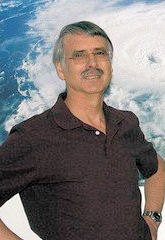</p>
        <p class="texte">Mike Mann </p>
        <p class="texte"></p>
        <p class="texte">&nbsp;</p>
        <p class="texte">Inutile d'ajouter que le &quot;<span class="textengras">It's a travesty</span>&quot; (&quot;c'est grotesque&quot;) de <span class="textengras">Kevin Trenberth</span> a fait couler beaucoup d'encre (ou d'octets sur le WEB). Et de fait, Kevin Trenberth avait de tr&egrave;s bonnes raisons d'&ecirc;tre inquiet : il s'agit d'un point clef sur lequel repose la plus grande partie de l'&eacute;difice construit par les climatologues proches du GIEC.</p>
        <p class="texte">Il y a d&eacute;j&agrave; plusieurs ann&eacute;es que les<span class="textengras"> scientifiques ind&eacute;pendants du GIEC </span>s'efforcent d'attirer l'attention sur le fait que les r&eacute;sultats des mod&egrave;les s'&eacute;cartent de plus en plus en plus de la r&eacute;alit&eacute; observ&eacute;e, notamment depuis le d&eacute;but du XXI&egrave;me si&egrave;cle et pour ce qui est du budget &eacute;nerg&eacute;tique, comme je l'avais rapport&eacute; dans <a href="oceans.html#willis09">ce billet</a>. En bref, les mod&egrave;les pr&eacute;voient que la Terre (et surtout les oc&eacute;ans) devraient amasser plus de chaleur qu'elle ne le fait. Et de fait, les mesures montrent que la Terre est plut&ocirc;t en train de perdre de la chaleur et ceci depuis  plusieurs ann&eacute;es... </p>
        <p class="texte"><span class="textengras">Trenberth</span>, l'auteur du email rappel&eacute; ci-dessus et qui est &quot;LE&quot; sp&eacute;cialiste (pro-GIEC) du bilan &eacute;nerg&eacute;tique de la plan&egrave;te, n'a pas h&eacute;sit&eacute; &agrave; en informer l'ensemble de ses coll&egrave;gues climatologues en &eacute;crivant un article tr&egrave;s important, pour ne pas dire crucial...mais qui est pass&eacute; inaper&ccedil;u (au moins des m&eacute;dias fran&ccedil;ais, &agrave; ma connaissance).  <br />
        Il faut se souvenir que les mesures du bilan thermique des oc&eacute;ans faisaient encore l'objet d'un d&eacute;bat avant 2009. Les choses se sont &eacute;claircies depuis comme je l'avais rapport&eacute; dans<a href="oceans.html#willis09"> ce billet au sujet de R. Pielke Sr et Joshua Willis</a>. Ceci explique sans doute la d&eacute;marche de Kevin Trenberth et de son colll&egrave;gue John Fasullo. <br />
        J'ai patient&eacute; quelques mois avant de  rapporter sur l'article suivant, de mani&egrave;re &agrave; ce que les choses &quot;relaxent&quot; comme on dit en physique.</p>
        <table width="524" border="1" bgcolor="#CCFFFF">
          <tr>
            <td width="514">2) L'article de Trenberth et Fasullo paru dans <span class="Science">Science</span> au mois d'Avril dernier. </td>
          </tr>
        </table>
        <p class="texte"></p>
        <p class="texte"><span class="textengras">Le titre </span>: &quot;A la recherche de l'&eacute;nergie de la Terre.&quot; <br />
          <span class="textengras">Sous titre </span>(&agrave; droite) : &quot;O&ugrave; est pass&eacute;e l'&eacute;nergie d&ucirc; au r&eacute;chauffement climatique ?&quot; </p>
        <p class="texte">Voici les deux figures  (et une traduction des l&eacute;gendes) de l'article de Trenberth et Fasullo (caract&egrave;res engraiss&eacute;s par l'auteur du site) : </p>
        <p class="texte"><span class="titre">&quot;O&ugrave; s'en va l'&eacute;nergie ?</span><br />
          <span class="textengras">(A)</span> <span class="textengras">Estimation du taux de variation de l'&eacute;nergie du globe.</span> <br />
        Les courbes sont fortement liss&eacute;es et quelque peu simplifi&eacute;es. <span class="textengras">De 1992 &agrave; 2003</span>, la variation d&eacute;cennale du contenu calorifique des oc&eacute;ans (en bleu), en tenant compte des contributions de la fonte des glaciers, des surfaces glac&eacute;es et des glaces des mers ainsi que les contributions venant des terres et du r&eacute;chauffement de l'atmosph&egrave;re, sugg&egrave;rent un r&eacute;chauffement global (en rouge) pour la plan&egrave;te de 0.6 &plusmn; 0.2 W/m2 (marges d'erreurs &agrave; 95% de confiance). <span class="textengras">Apr&egrave;s 2000, les observations au sommet de l'atmosph&egrave;re (en noir) divergent de plus en plus du r&eacute;chauffement total observ&eacute;.</span>&quot;</p>
        <p class="texte"></p>
        <p class="texte">Pour les non-anglophones, voici la m&ecirc;me figure avec ses indications en fran&ccedil;ais. </p>
        <p class="texte">La figure originale est en acc&egrave;s libre <a href="http://www.nsf.gov/news/mmg/media/images/missing_heat2_h.jpg">sur le site de la National Science Foundation </a>(US). </p>
        <p class="texte">&nbsp;</p>
        <p class="texte">&nbsp;</p>
        <p class="texte">&nbsp;</p>
        <p class="texte">&nbsp;</p>
        <p class="texte"><br />  
        <span class="textengras">Ndt :</span> Comme on s'en doute, la partie importante de cette figure est <span class="textengras">celle qui est repr&eacute;sent&eacute;e en couleur orang&eacute;e figurant &agrave; droite et labellis&eacute;e &quot;&eacute;nergie manquante&quot;</span>. L&quot; &eacute;nergie manquante&quot; est loin d'&ecirc;tre un d&eacute;tail. Comme on le voit, il s'agit de pr&egrave;s de 1 watt par m<span class="exposant">2</span>. C'est &agrave; dire qu'elle est proche de celle qui r&eacute;sulterait de l'apport du CO2 humain, selon les mod&egrave;les. Comme on le voit aussi sur ce dessin; le bilan thermique de la Terre est &agrave; peine positif (la terre vue par le contenu thermique des oc&eacute;ans, se refroidit plus qu'elle ne se r&eacute;chauffe) alors qu'il devrait &ecirc;tre largement positif, toujours selon les mod&egrave;les et donc suivre la courbe en trait noir. Cependant, comme nous allons le voir, la situation r&eacute;elle est bien pire (pour les mod&egrave;les) que celle que d&eacute;crivent Trenberth et Fasullo. </p>
        <p class="texte"><span class="textengras">&quot; Figure (B) : </span> <span class="textengras">La croissance continue du dioxyde de carbone et la hausse du niveau des mers sont en opposition avec la variation de la temp&eacute;rature de l'air &agrave; la surface.</span>&quot;<br />
          <br />
          &quot;Cette figure montre, d'une part, les anomalies (par rapport &agrave; la moyenne de 1901 &agrave; 2000) de la temp&eacute;rature moyenne des oc&eacute;ans, moyenn&eacute;e sur 12 mois, donn&eacute;e par la NOAA (courbe fine en rouge et moyenne d&eacute;c&eacute;nnale : la courbe &eacute;paisse en rouge) en degr&eacute;s Celsius (&eacute;chelle en bas &agrave; gauche), d'autre part, les concentrations de dioxyde de carbone (en vert) en parties par million en volume (ppmv) de la NOAA ainsi que le niveau moyen global corrig&eacute; du rebond eustatique avec AVISO ( Archivage, Validation et Interpr&eacute;tation des donn&eacute;es oc&eacute;anographiques par satellites) (en bleu, relatives &agrave; 1993, &eacute;chelle de gauche en millim&egrave;tres) Filtre d&eacute;cennal de la r&eacute;f&eacute;rence (4).&quot; </p>
        <p class="texte"><span class="textengras">Ndt : </span>Tout comme le graphe <span class="textengras">(A)</span>, le graphe<span class="textengras"> (B)</span> met en &eacute;vidence, mais d'une mani&egrave;re diff&eacute;rente, le grave probl&egrave;me soulev&eacute; par <span class="textengras">Trenberth et Fasullo</span> (et par nombre de scientifiques ind&eacute;pendants, tels que <span class="texte"><a href="oceans.html#willis09" class="textengras">Roger Pielke Sr ou Craig Loehle</a></span>,  avant eux) . En bref, les temp&eacute;ratures ne montent plus ou baissent, apr&egrave;s 2000, tandis que le taux de CO2 continue &agrave; augmenter et, avec lui, pensent Trenberth et Fasullo, le d&eacute;s&eacute;quilibre radiatif... <br /> 
        La hausse du niveau des mers n'est, &agrave; mon avis, pas significative. Celle-ci a commenc&eacute; bien avant la naissance de la civilisation industrielle et des rejets de CO2 dans l'atmosph&egrave;re, m&ecirc;me si elle semble accompagner la mont&eacute;e de ces derniers, &agrave; quelques exceptions notables pr&egrave;s. </p>
        <p class="textengras">Voici quelques phrases clefs  extraites de l'article de Trenberth et Fasullo :<br />
          <br />
        <span class="legende">&quot;Over the past 50 years, the oceans have absorbed ~90% of the energy added to the climate system; the rest has gone into melting sea and land ice and heating the land surface and atmosphere ( 4). CO2 concentrations have further increased since 2003, and even more heat should have accumulated at a faster rate since then. Where has this energy gone (see the figure)?</span>&quot;</p>
        <p class="textengras"> <span class="texte">Traduction </span>: &quot;Depuis les cinquante derni&egrave;res ann&eacute;es, les oc&eacute;ans ont absorb&eacute; environ 90% de l'&eacute;nergie ajout&eacute;e au syst&egrave;me climatique; le reste a servi a faire fondre les mers glac&eacute;es, &agrave; r&eacute;chauffer la surface des terres et l'atmosph&egrave;re (4). Les concentrations de CO2 ont poursuivi leur croissance depuis 2003 et encore <strong>encore plus de chaleur derait s'&ecirc;tre accumul&eacute;e une vitesse plus  grande</strong>, depuis lors. O&ugrave; donc est pass&eacute;e cette &eacute;nergie (voir la figure) ? &quot; </p>
        <table width="270" border="1" bgcolor="#CCFFFF">
          <tr>
            <td width="260">3) Mais o&ugrave; est pass&eacute;e la chaleur perdue ? </td>
          </tr>
        </table>
        <p class="texte">A l'&eacute;vidence, tout le monde est d'accord pour consid&eacute;rer que cette <span class="textengras">&quot;chaleur perdue&quot; </span>doit &ecirc;tre recherch&eacute;e dans les oc&eacute;ans qui, comme chacun le sait, recouvrent quelques 70% de la plan&egrave;te et absorbent  90% de l'&eacute;nergie ajout&eacute;e au syst&egrave;me climatique (selon Trenberth et Fasullo eux-m&ecirc;mes)...  </p>
        <p class="texte">Comme je l'ai d&eacute;j&agrave; expliqu&eacute;, du point de vue thermique, il est raisonnable de consid&eacute;rer que les oc&eacute;ans sont constitu&eacute;s de trois couches superpos&eacute;es, entre lesquelles, bien entendu, se produisent des &eacute;changes plus ou moins efficaces, en fonction des grandes circulations thermohalines que j'ai bri&egrave;vement &eacute;voqu&eacute;es, entre autres, dans<a href="oceans.html#amoc"> ce billet.</a> :</p>
        <p class="texte"><span class="textengras">-Une couche superficielle qui part de la surface et s'&eacute;tend jusqu'&agrave; une profondeur de quelques centim&egrave;tres</span>. Cette couche de surface est particuli&egrave;rement sensible aux vents dominants qui la refroidissent par &eacute;vaporation. Le temps de r&eacute;ponse de cette couche aux diverses sollicitations est &eacute;videmment tr&egrave;s court. Les variations de temp&eacute;rature sont pratiquement instantan&eacute;es. Compte tenu de son tr&egrave;s faible contenu thermique, cette couche pr&eacute;sente une tr&egrave;s faible inertie thermique. <br />
          <br />
          <span class="textengras">-Une couche interm&eacute;diaire qui va de quelques centim&egrave;tres de profondeur &agrave; un peu moins de 1000 m.</span> Cette couche dont l'inertie thermique est encore assez faible pour qu'on puisse y discerner les variations de temp&eacute;ratures saisonni&egrave;res ou intra-annuelles, est le domaine d'&eacute;tude des balises ARGO que j'ai &eacute;voqu&eacute;es &agrave; plusieurs reprises et notamment dans <a href="soleil.html#vostok1">ce billet</a>. <br />
        </p>
        <p class="texte">La couverture g&eacute;ographique des quelques <span class="textengras">3300 balises ARGO</span> qui explorent cette zone critique des oc&eacute;ans est particuli&egrave;rement fournie comme le montre l'image ci-contre, &agrave; droite, dans laquelle les points noirs repr&eacute;sentent les balises en activit&eacute;. Elle ne peut &eacute;videmment couvrir les r&eacute;gions des mers glac&eacute;es comme on le voit sur cette image. <br />
        C'est cette couche interm&eacute;diaire qui est &eacute;voqu&eacute;e par l'article de Trenberth et Fasullo. Compte tenu des grandes diff&eacute;rences de capacit&eacute; thermique entre les gaz et les liquides, son contenu thermique est de l'ordre de 1000 fois celui de l'atmosph&egrave;re terrestre. Comme il est mentionn&eacute; dans l'article de Trenberth et Fasullo, elle repr&eacute;sente 90% de la partie <span class="textengras">variable </span>(&agrave; des &eacute;chelles temporelles humaines) du r&eacute;servoir thermique de la plan&egrave;te. Du point de vue climatique et des &eacute;changes atmosph&egrave;re-oc&eacute;ans, le r&ocirc;le de cette couche des oc&eacute;ans est crucial. Son contenu thermique, g&eacute;n&eacute;ralement &eacute;valu&eacute; en unit&eacute;s de 10<span class="exposant">22</span> joules est appel&eacute; l'OHC. (Ocean Heat Content). </p>
        <p class="texte">-<span class="textengras">La couche dite &quot;abyssale&quot; qui va d'environ -1000m jusqu'au fond des oc&eacute;ans.</span> Comme chacun le sait la temp&eacute;rature des profondeurs oc&eacute;aniques est sensiblement constante et &eacute;gale &agrave; environ 4&deg;C. La lumi&egrave;re n'y parvient que tr&egrave;s difficilement, pour ne pas dire pas du tout. C'est le domaine des grands fonds. L'inertie thermique de cette couche abyssale est consid&eacute;rable. On estime qu'il faut   plusieurs centaines d'ann&eacute;es pour que les variations thermiques de cette couche soient perceptibles &agrave; la surface. Cette &eacute;norme inertie thermique est souvent invoqu&eacute;e pour expliquer le retard des quelques 500 &agrave; 800 ans qu'a subie la variation de la concentration de CO2 atmosph&eacute;rique par rapport &agrave; la temp&eacute;rature de la surface lors des derni&egrave;res d&eacute;glaciations (voir <a href="soleil.html#vostok1">dans ce billet</a>). </p>
        <p class="texte">Comme l'ont pr&eacute;cis&eacute; Trenberth et Fasullo, 90% de la chaleur emmagasin&eacute;e par suite du &quot;r&eacute;chauffement climatique&quot;, doit se trouver dans les oc&eacute;ans. C'est donc l&agrave; qu'il faut chercher. Nous allons consid&eacute;rer successivement les trois couches oc&eacute;aniques mentionn&eacute;es ci-dessus... <span class="textengras">&agrave; la recherche de la chaleur manquante.. </span><br />
        _______________________________________________________________________________________________________________</p>
        <ul>
          <li><span class="textengras">A) La couche superficielle :</span><span class="texte"> <br />
            </span></li>
        </ul>
        <p class="texte">Pour comprendre comment la lumi&egrave;re (visible, UV et Infrarouge) est absorb&eacute;e par l'eau, il est bon de se r&eacute;f&eacute;rer au graphe ci-contre (tir&eacute; d'un article publi&eacute; dans Applied Optics en 1973).<br />
          Comme on le voit, la lumi&egrave;re infrarouge dont la longueur d'onde se trouve aux alentours de 10-15 microns qui est la longueur d'onde centrale de l'&eacute;mission de l'atmosph&egrave;re, ne p&eacute;n&egrave;tre que tr&egrave;s peu la couche d'eau superficielle. Cette p&eacute;n&eacute;tration se chiffre en microns ou dizaines de microns. Il est &eacute;vident que cette couche superficielle est rapidement &quot;&eacute;cr&eacute;m&eacute;e&quot; par le processus d'&eacute;vaporation qui se produit continuellement &agrave; la surface des oc&eacute;ans. Autrement dit, les infrarouges, absorb&eacute;es par les oc&eacute;ans, sont surtout impliqu&eacute;s dans l'&eacute;vaporation de l'eau de mer. </p>
        <p class="texte">Pour le sujet qui nous pr&eacute;occupe ici, il n'est pas question que les radiations infrarouges, en principe amplifi&eacute;es par l'effet de serre du CO2 anthropique, restent stock&eacute;es dans la couche surfacique des oc&eacute;ans.<span class="textengras"> Autrement dit encore, ce n'est pas ici que nous trouverons la &quot;chaleur perdue&quot;. Et, du reste, personne ne le pr&eacute;tend. </span></p>
        <p class="texte">Bien entendu, la lumi&egrave;re visible (et ultraviolette) parvient &agrave; p&eacute;n&eacute;trer en profondeur dans les oc&eacute;ans, au moins dans quelques m&egrave;tres ou quelques dizaines de m&egrave;tres comme tous les plongeurs sous-marins l'ont constat&eacute;. Mais ceci est constant et n'a rien &agrave; voir avec l'effet de serre, ni avec la &quot;chaleur perdue&quot;.</p>
        <p class="texte">La couche interm&eacute;diaire  0-1000 m est &eacute;videmment de la plus grande importance pour le sujet qui nous pr&eacute;occupe puisqu'elle participe directement aux &eacute;changes oc&eacute;ans-atmosph&egrave;re. Si la &quot;chaleur manquante&quot; se trouve quelque part, c'est l&agrave; que nous devrions la trouver. Nous allons nous y attarder. <br />
          Pour &ecirc;tre complet, nous examinerons ci-dessous le cas des profondeurs abyssales bien que cette couche profonde n'int&eacute;ragisse que tr&egrave;s peu ou m&ecirc;me pas du tout avec l'atmosph&egrave;re. <br />
          ______________________________________________________________________________________________________________</p>
        <ul>
          <li>B) La couche interm&eacute;diaire : l'OHC, le contenu thermique des oc&eacute;ans</li>
        </ul>
        <p class="texte">L'&eacute;valuation du contenu thermique de cette couche, examin&eacute; &agrave; la loupe, notamment &agrave; l'aide des balises ARGO, a fait l'objet de plusieurs &eacute;tudes. Les mesures des balises ARGO &eacute;tant maintenant consid&eacute;r&eacute;es comme fiables, les r&eacute;sultats sont d&eacute;sormais difficilement contestables. Voici donc un article publi&eacute; tout r&eacute;cemment online. Il est encore sous presse et ne para&icirc;tra sous forme imprim&eacute;e qu'en Novembre prochain. </p>
        <p class="texte"><br />
          &quot;Recent energy balance of Earth&quot;, <span class="textengras">&quot;Equilibre &eacute;nerg&eacute;tique r&eacute;cent de la Terre&quot; </span><br />
          <span class="textengras">R. S. Knox and D. H. Douglass</span><br />
          Department of Physics and Astronomy, University of Rochester, Rochester, NY 14627-0171 USA</p>
        <p class="texte"><span class="textengras">International Journal of Geosciences, 2010, vol. 1, no. 3</span> (November) &ndash; Sous presse<br />
doi:10.4236/ijg2010.00000 Publi&eacute; Online  2010.<br />
        Accept&eacute; Ao&ucirc;t 2010. </p>
        <p class="texte">Donc plus r&eacute;cent que l'article de Trenberth et Fasullo indiqu&eacute; ci-dessus. <br />
          <br />
          <span class="textengras">Abstract</span><br />
          <span class="legende">A recently published estimate of Earth&rsquo;s global warming trend is 0.63 &plusmn; 0.28 W/m2, as calculated from ocean heat content anomaly data spanning 1993&ndash;2008. This value is not representative of the recent (2003&ndash;2008) warming/cooling rate because of a &ldquo;flattening&rdquo; that occurred around 2001&ndash;2002. Using only 2003&ndash;2008 data from Argo floats, we find<br />
          by four different algorithms that the recent trend ranges from &ndash;0.010 to &ndash;0.160 W/m2 with a typical error bar of &plusmn;0.2 W/m2. These results fail to support the existence of a frequently-cited large positive computed radiative imbalance.</span></p>
        <p class="texte"><span class="textengras">R&eacute;sum&eacute; </span>:&quot; Une estimation de la tendance au r&eacute;chauffement global, publi&eacute;e r&eacute;cemment, indique <span class="legende">0.63 &plusmn; 0.28 W/m</span><span class="exposant">2</span>. Elle est calcul&eacute;e &agrave; partir de l'anomalie du contenu thermique des oc&eacute;ans de 1993 &agrave; 2008. Cette valeur n'est pas repr&eacute;sentative du r&eacute;cent (2003-2008) taux de refroidissement/r&eacute;chauffement &agrave; cause d'une stagnation qui s'est produite vers 2001-2002. En utilisant seulement les donn&eacute;es des bou&eacute;es Argo de 2003 &agrave; 2008, nous trouvons, &agrave; l'aide de quatre algorithmes diff&eacute;rents que la tendance r&eacute;cente s'&eacute;tend de <span class="texte">&ndash;0.010 &agrave; &ndash;0.160 W/m</span><span class="exposant">2</span><span class="texte"> avec une incertitude typique de &plusmn;0.2 W/m</span><span class="exposant">2</span><span class="texte">.</span> <br />
          <span class="textengras">Ces r&eacute;sultats sont en d&eacute;saccord avec les d&eacute;s&eacute;quilibres radiatifs importants et positifs obtenus par les mod&eacute;lisations et fr&eacute;quemment cit&eacute;s. &quot; </span></p>
        <p class="texte"></p>
        <p class="texte">&nbsp;</p>
        <p class="texte">&quot;<span class="textengras">Figure 1</span>. Contenu thermique des oc&eacute;ans d&eacute;duit des mesures ARGO (&eacute;chelle de gauche, en bleu, donn&eacute;es originales, en rouge : donn&eacute;es filtr&eacute;es) et temp&eacute;rature de surface des oc&eacute;ans (&eacute;chelle de droite, en vert). <br />
        La conversion de la pente du OHC (Ndt : Oc&eacute;an heat content, contenu calorifique des oc&eacute;ans) en W/m<span class="exposant">2</span> est obtenue en multipliant par 0,62, donnant -0,161 W/m<span class="exposant">2</span>. &quot; </p>
        <p class="texte">A noter que les r&eacute;sultats (moyenn&eacute;s, en vert) publi&eacute;s par le Hadley Center (qui est aussi responsable aussi des mesures de temp&eacute;ratures HadCruT) sont coh&eacute;rents avec le r&eacute;sultats montr&eacute;s par Knox et Douglass. </p>
        <p class="texte">&nbsp;</p>
        <p class="texte">&nbsp;</p>
        <p class="texte">La conclusion de cet article est tout &agrave; fait explicite : </p>
        <p class="legende"> &quot;Trenberth and Fasullo (TF) [2] believe that missing energy has been accumulating at a considerable rate since 2005. According to their rough graph, as of 2010 the missing energy production rate is about 1.0 W/m2, which represents the difference between FTOA ~ 1.4 and FOHC ~ 0.4 W/m2. It is clear that the TF missing-energy problem is made much more severe if FOHC is negative or even zero. In our opinion, the missing energy problem is probably caused by a serious overestimate by TF  of FTOA, which, they state, is most accurately determined by modeling.<br />
        In summary, we find that estimates of the recent (2003&ndash;2008) OHC rates of change are preponderantly negative. This does not support the existence of either a large positive radiative imbalance or a &ldquo;missing energy.&rdquo;&quot;</p>
        <p class="legende"><span class="textengras">&quot;Trenberth et Fasullo (TF) </span><span class="texte">pensent que l'&eacute;nergie manquante s'est accumul&eacute;e &agrave; un taux consid&eacute;rable depuis 2005. A partir de leur graphique simplifi&eacute;, et pour ce qui est de 2010, la production d'&eacute;nergie manquante est d'environ 1 W/m</span><span class="exposant">2</span><span class="texte">, ce qui repr&eacute;sente la diff&eacute;rence entre le FTOA ~1,4 et le FOHC~0,4W/m</span><span class="exposant">2</span><span class="texte"> (Ndt : FTOA est le flux de chaleur rentrant &agrave; partir du sommet de l'atmosph&egrave;re, FOHC celui qui part dans les oc&eacute;ans). Il est clair que le probl&egrave;me de l'&eacute;nergie manquante de Trenberth et Fasullo est rendu beaucoup plus s&eacute;v&egrave;re si la FOHC est n&eacute;gative ou m&ecirc;me &eacute;gale &agrave; z&eacute;ro. </span><span class="textengras">Nous pensons que le probl&egrave;me de l'&eacute;nergie manquante est probablement d&ucirc; &agrave; une forte surestimation par Trenberth et Fasullo du FTOA</span><span class="textengras">, qui, affirment-ils, est d&eacute;termin&eacute; avec une grande pr&eacute;cision &agrave; partir des mod&egrave;les.<br />
  En r&eacute;sum&eacute;, nous trouvons que les estimations du taux de variation de l'OHC (le contenu thermique des oc&eacute;ans) pendant la p&eacute;riode 2003-2008, est majoritairement n&eacute;gatif. Ceci contredit l'existence d'un fort d&eacute;s&eacute;quilibre radiatif ou d'une &quot;&eacute;nergie manquante&quot;. &quot; </span></p>
        <p class="legende"><span class="texte">Ndt : Je pr&eacute;cise que le flux venant du sommet de l'atmosph&egrave;re, le </span><span class="textengras">FTOA</span><span class="texte"> est d&eacute;fini par Knox et Douglass comme &quot;le flux radiatif net rentrant (inward) qui passe &agrave; travers la sph&egrave;re externe&quot;. </span><span class="textengras">FOHC</span><span class="texte"> est d&eacute;fini comme la vitesse de variation du contenu thermique des oc&eacute;ans divis&eacute; par la surface de la terre, ce qui donne l'&eacute;quivalent d'un flux d'&eacute;nergie. </span><br />
        _______________________________________________________________________________________________________________________________</p>
        <p class="legende"><span class="textengras">Autrement dit, Knox et Douglass ne trouvent pas &quot;d'&eacute;nergie manquante&quot; dans les oc&eacute;ans. Au contraire, ces derniers se refroidissent.</span>.. <br />
          <span class="textengras">Cet article de Knox et Douglass concernait la p&eacute;riode 2003 et 2008, mais qu'en &eacute;tait-il lors de la p&eacute;riode ant&eacute;rieure ? </span><br />
          <br />
          <span class="texte">En r&eacute;alit&eacute;, cet article de Knox et Douglass constitue le prolongement d'un article pr&eacute;c&eacute;dent, publi&eacute; en 2009 (r&eacute;f : D.H. Douglass, R.S. Knox dans Physics Letters A 373 (2009) 3296&ndash;3300) qui &eacute;tudiait la variation de la FTOA calcul&eacute;e &agrave; partir des donn&eacute;es sur le contenu thermique des oc&eacute;ans depuis 1950 jusqu'en 2009. <br />
          <br />
          Le r&eacute;sum&eacute; de cet article, publi&eacute; l'ann&eacute;e derni&egrave;re, nous disait que :</span><br />
          <br />
          <span class="legende">&quot;Earth&rsquo;s radiation imbalance is determined from ocean heat content data and compared with results of direct measurements. Distinct time intervals of alternating positive and negative values are found: 1960&ndash; mid-1970s (&minus;0.15), mid-1970s&ndash;2000 (+0.15), 2001&ndash;present (&minus;0.2 W/m2), and are consistent with prior reports. These climate shifts limit climate predictability.</span>&quot;<br />
          Soit : <br />
        <span class="textengras">&quot;Le d&eacute;s&eacute;quilibre radiatif de la terre est d&eacute;termin&eacute; &agrave; partir des donn&eacute;es du contenu thermique des oc&eacute;ans et compar&eacute; aux r&eacute;sultats des mesures directes. On observe des intervalles de temps avec des valeurs n&eacute;gatives et positives altern&eacute;es : de 1960 &agrave; la moiti&eacute; des ann&eacute;es 70 (-0,15), de la moiti&eacute; des ann&eacute;es 70 &agrave; 2000 (+0,15), de 2001 jusqu'&agrave; pr&eacute;sent (-0,2 W/m2). Ceci est coh&eacute;rent avec les publications pr&eacute;c&eacute;dentes. Ces variations climatiques constituent une limitation &agrave; la pr&eacute;dictibilit&eacute; du climat.&quot; </span></p>
        <p class="texte">A noter qu'en premi&egrave;re approximation, le flux radiatif  FTOA est donn&eacute; par la formule suivante :</p>
        <p class="textengras">FTOA = 0,62 (dH<span class="indice">0</span>/dt) -F<span class="indice">g </span></p>
        <p class="texte">FTOA est en W/m<span class="exposant">2</span>. L'unit&eacute; de temps est une ann&eacute;e. H<span class="indice">0</span> est le contenu thermique de la tranche consid&eacute;r&eacute;e. Il est exprim&eacute; en unit&eacute;s de 10<span class="exposant">22</span> joules. F<span class="indice">g</span> est le flux correspondant &agrave; la g&eacute;othermie. <br />
        F<span class="indice">g</span> est tr&egrave;s petit. Le flux g&eacute;othermique total est estim&eacute; &agrave; 87 milliwatts par m<span class="exposant">2</span>. <br />
        F<span class="indice">g</span>, la contribution au FTOA n'est qu'une fraction de ce dernier. </p>
        <p class="texte"></p>
        <p class="texte">Voici le graphe ma&icirc;tre de cet article de 2009, avec sa l&eacute;gende : </p>
        <p class="texte">&quot;Fig. 3. Valeur de la FTOA r&eacute;sultante, au cours de diff&eacute;rentes p&eacute;riodes montrant la relation entre les variations du climat (lignes en tiret&eacute;s) . De 1960 &agrave; 1975: &minus;0.15 &plusmn; 0.10 W/m<span class="exposant">2</span>; de 1975 &agrave; 2000: 0.15 &plusmn; 0.07 W/m<span class="exposant">2</span>; et apr&egrave;s 2000: &minus;0.303 &plusmn; 0.187 pour les mesures CERES; &minus;0.224 &plusmn; 0.99 W/m<span class="exposant">2</span> pour Argo; &minus;0.087&plusmn;0.03 W/m<span class="exposant">2</span> tir&eacute;s de Levitus [ref 18]. Chacune de ces valeurs est corrig&eacute;e de  +0.060 W/m<span class="exposant">2</span> si on veut prendre une valeur plus &quot;conservatrice&quot; pour F<span class="indice">g</span> (Cf section 5.2) &quot; </p>
        <p class="texte">Comme on le constate, l'anomalie du flux sortant de l'atmosph&egrave;re vers l'espace aurait chang&eacute; plusieurs fois de signe au cours de cette p&eacute;riode.</p>
        <p class="texte"><span class="textengras">Knox et Douglass pr&eacute;cisent qu'ils rejoignent, &eacute;galement et entre autres, les observations de Swanson et Tsonis ( Geophys. Res. Lett. 36 (2009) L06711, doi:10.1029/<br />
          2008GL037022.) dont j'ai &eacute;voqu&eacute; un article plus ancien <a href="theses.html#tsonis">dans un billet ant&eacute;rieur : </a></span><a href="theses.html#tsonis"><br />
        </a><span class="textengras">Ces basculements du comportement de la FTOA correspondent sensiblement aux basculements de la PDO,</span> l<a href="froid.html#aleo">'oscillation d&eacute;cennale de l'oc&eacute;an Pacifique</a>. <br />
        <br />
        On se souvient, en particulier, comme on le retrouve sur ce graphique, que la p&eacute;riode 1945-1976 a &eacute;t&eacute; une p&eacute;riode de refroidissement faisant craindre, &agrave; certains, la venue d'une nouveau petit &acirc;ge glaciaire....<span class="textengras">Tout ceci &eacute;voque, &agrave; l'&eacute;vidence, une &eacute;volution naturelle du climat</span>, comme le mentionnent Knox et Douglass en citant la conclusion d'un article de <span class="textengras">White et al</span> (W.B. White, D.R. Cayan, M.D. Dettinger, G. Auad, J. Geophys. Res. 106 (2001) 4349) : </p>
        <p class="legende">&quot; White et al.[44] state: &ldquo;global warming and cooling  arise from fluctuations in the global hydrological balance, not the global radiation balance.&rdquo;&quot;<br />
          <br />
          <span class="textengras">&quot;White et al [44] &eacute;crivent : &quot;Le r&eacute;chauffement et le refroidissement climatique global proviennent</span><span class="textengras"> des fluctuations de l'&eacute;quilibre hydrologique global, pas de l'&eacute;quilibre radiatif global.&quot;&quot; </span><span class="texte"><br />
          Ce qui est tr&egrave;s  clair et n'a gu&egrave;re &eacute;t&eacute; mentionn&eacute; dans l'AR4 du GIEC (2007)...<br />
          ________________________________________________________________________________________________</span></p>
        <ul>
          <li>C) Les profondeurs abyssales. </li>
        </ul>
        <p class="texte"><span class="textengras">La mesure du r&eacute;chauffement ou du refroidissement (forc&eacute;ment tr&egrave;s faible, voir ci-dessous) des mers, dans les profondeurs abyssales</span> est, comme on s'en doute, extr&ecirc;mement d&eacute;licate. A vrai dire, il n'existe pas d'autre m&eacute;thode que celle qui consiste &agrave; laisser descendre un thermom&egrave;tre  (ou encore un appareil de mesure de la salinit&eacute;) au bout d'un fil. Obtenir des mesures pr&eacute;cises et fiables sur les immenses surfaces couvertes par les oc&eacute;ans avec une telle m&eacute;thode rel&egrave;ve d'un exploit... Tr&egrave;s loin d'&ecirc;tre r&eacute;alis&eacute;. </p>
        <p class="texte">Les mesures de ce genre sont donc aussi rares que sujettes &agrave; caution. C'est d'ailleurs ce que nous disait, en 2009, un sp&eacute;cialiste de la question, <span class="textengras">Gregory Johnson de la NOAA</span> dans une communication dont voici les r&eacute;f&eacute;rences : <strong><br />
          Recent decadal warming and freshening of Antarctic-derived abyssal waters</strong><br />
Gregory Johnson<br />
NOAA/Pacific Marine Environmental Laboratory, Seattle, WA, USA<br />
IOP Conf. Series: Earth and Environmental Science 6 (2009)<br />
        source: <a href="http://iopp.fileburst.com/ees/ees9_6_032006.pdf" rel="nofollow">http://iopp.fileburst.com/ees/ees9_6_032006.pdf</a> </p>
        <p class="textengras">Extraits : </p>
        <p class="texte">&quot;Les grandes distances qui s&eacute;parent les sections hydrographiques (Ndt : autrement dit, le fait que les points de mesure sont tr&egrave;s dispers&eacute;s) et le fait qu'ils sont r&eacute;occup&eacute;s seulement de d&eacute;cennie en d&eacute;cennie (Ndt : autrement dit, les mesures sont aussi tr&egrave;s espac&eacute;es dans le temps)<span class="textengras"> rendent difficile la quantification de la contribution du r&eacute;cent r&eacute;chauffement abyssal observ&eacute; au budget de la chaleur du globe.</span> La quantification de la contribution du r&eacute;chauffement et du refroidissement observ&eacute;s pour le budget de la hausse du niveau des mers est difficile, pour les m&ecirc;mes raisons.&quot;</p>
        <p class="texte">Ce qui est pure v&eacute;rit&eacute;. La raret&eacute; des points de mesures dans l'espace et dans le temps ne permet pas de tirer de conclusions scientifiquement &eacute;tablies. Ce qui n'emp&ecirc;che pas Johnson d'affirmer dans la suite du m&ecirc;me papier que &quot;<span class="textengras">Cependant, l'analyse quantitative sugg&egrave;re que les variations abyssales peuvent jouer un certain r&ocirc;le dans la chaleur globale et dans les budgets de la hausse du niveau des mers</span>.&quot;</p>
        <p class="texte">Ce qui, vous en conviendrez est quelque peu contradictoire et fait appel &agrave; une certaine imagination, pour ne pas dire &agrave; une certaine croyance. Affirmer dans le m&ecirc;me article que &quot;la quantification est difficile &quot;, puis expliquer pourquoi, et enfin d&eacute;clarer qu'une &quot;analyse quantitative&quot; pourrait prouver quelque chose est plut&ocirc;t &eacute;tonnant. </p>
        <p class="texte">Malgr&eacute; ces difficult&eacute;s compr&eacute;hensibles, le m&ecirc;me auteur de la<span class="textengras"> NOAA (Greg Johnson) </span>n'a pas h&eacute;sit&eacute; &agrave; r&eacute;diger un article tout r&eacute;cent (encore sous presse) dans lequel il nous donne<span class="textengras"> quelques informations sur la &quot;chaleur perdue&quot; dans les profondeurs abyssales</span>. Voici les r&eacute;f&eacute;rences de cet article : </p>
        <p class="texte">&quot;Warming of Global Abyssal and Deep Southern Ocean Waters Between the 1990s and 2000s: Contributions to Global Heat and Sea Level Rise<br />
        Budgets.&quot;<span class="textengras"> R&eacute;chauffement abyssal global et eaux profondes des oc&eacute;ans Sud entre les d&eacute;cennies 1990 et 2000. Contributions &agrave; la chaleur globale et &agrave; la hausse du niveau des mers. </span></p>
        <p class="texte"><span class="textengras">Journal of Climate</span> (accept&eacute; le 18 ao&ucirc;t 2010) (sous presse) <br />
          Sarah G. Purkey and Gregory C. Johnson <br />
          School of Oceanography, University of Washington, Seattle WA 98195, USA<br />
          NOAA/Pacific Marine Environmental Laboratory, Seattle WA 98115, USA</p>
        <p class="texte">Une version pre-print de cet article de 49 pages est <a href="http://www.pmel.noaa.gov/people/gjohnson/Recent_AABW_Warming_v3.pdf">disponible &agrave; cette adresse</a>. Compte tenu de la raret&eacute; des mesures et des m&eacute;thodes d'interpolation employ&eacute;es, c'est &eacute;videmment tr&egrave;s compliqu&eacute;. <br />
        Sans rentrer dans les d&eacute;tails de l'article, on peut se contenter de ce communiqu&eacute; de la NOOA (sur <a href="http://www.facebook.com/usnoaagov">Facebook </a>!) qui nous r&eacute;sume le contenu de l'article : </p>
        <p class="textengras"><span class="texte">&quot;Cette &eacute;tude montre que les profondeurs des oc&eacute;ans -en dessous de 3300 pieds- </span>pr&eacute;l&egrave;vent environ 16% de ce que la partie sup&eacute;rieure des oc&eacute;ans absorbe<span class="texte">. Les auteurs notent qu'il existe diff&eacute;rentes causes possible pour ce r&eacute;chauffement en profondeur : Un d&eacute;placement des vents des oc&eacute;ans du Sud, une variation de la densit&eacute; de ce qui est appel&eacute; &quot;Eau du Fond de plan&eacute;tarium&quot;, ou encore de la vitesse avec laquelle cette &quot;eau du fond&quot; est form&eacute;e pr&egrave;s de l'Antarctique et &agrave; quel endroit elle s'enfonce pour remplir les portions les plus profondes et les plus froides de l'oc&eacute;an autour de la plus grande partie du globe.<br />
  Les scientifiques ont trouv&eacute; le r&eacute;chauffement en profondeur le plus intense autour de l'Antarctique. Il s'affaiblit avec la distance depuis sa source en se r&eacute;pandant autour du globe. Bien que les augmentations de temp&eacute;ratures soient faibles (environ 0,03&deg;C dans les profondeurs des Oc&eacute;ans du Sud, et moins ailleurs)..</span>.&quot;</p>
        <p class="textengras">Que faut-il en retirer ?<br />
        Si les r&eacute;sultats de cet article sont corrects -ce qui n'est pas certain-, la contribution des abysses aux variations du budget thermique de la plan&egrave;te n'est que 16% de celle des oc&eacute;ans sup&eacute;rieurs (le domaine des balises ARGO) qui, comme on l'a vu ci-dessus, ont plut&ocirc;t tendance &agrave; se refroidir et, comme le fait remarquer Trenberth dans le premier article cit&eacute;, sont tr&egrave;s loin d'expliquer la &quot;chaleur manquante&quot;. </p>
        <p class="texte">D'autre part, cet article pose quand m&ecirc;me quelques probl&egrave;mes aux lecteurs avertis :<br />
          <br />
        -Sur la pr&eacute;cision et la signification r&eacute;elle de mesures de variations de temp&eacute;ratures aussi faibles que 0,03&deg;C (au mieux !) dans des conditions tr&egrave;s difficiles. <br />
        -Sur le fait que le r&eacute;chauffement (tr&egrave;s faible ) observ&eacute; semble partir des eaux profondes de l'antarctique. D'une part, on se demande ce qui pourrait r&eacute;chauffer anormalement les eaux profondes de l'antarctique (peut-&ecirc;tre l'activit&eacute; volcanique en profondeur, mais c'est tr&egrave;s faible) et d'autre part, on se souvient qu'une exp&eacute;dition polaire r&eacute;cente du <span class="textengras">Polar Stern </span>(le navire sp&eacute;cialis&eacute; du Wegener Institute de Potsdam) <span class="textengras">avait trouv&eacute;, au contraire de cet article, que les eaux profondes de l'antarctique se refroidissaient..</span>.(Article <a href="http://www.nature.com/news/2008/080430/full/453015c.html">dans Nature</a> et <a href="oceans.html#antarfroid">billet dans cette page</a>).<br />
        -Enfin, beaucoup pensent que si les eaux profondes s'&eacute;taient, un tant soit peu, r&eacute;chauff&eacute;es, cela aurait &eacute;t&eacute; perceptible dans les mesures de balises Argo. En principe, l'eau plus chaude, moins dense, remonte (aux variations de salinit&eacute; pr&egrave;s) mais, &eacute;videmment, tout cela d&eacute;pend des courants sous-marins.</p>
        <table width="266" border="1">
          <tr>
            <td height="37" bgcolor="#CCFFFF"><p class="textengras">4) Conclusions et quelques remarques </p></td>
          </tr>
        </table>
        <p class="texte">Si vous avez eu le courage de lire ce billet in extenso (bravo !), vous connaissez d&eacute;j&agrave; la r&eacute;ponse &agrave; la question que tout le monde se pose :</p>
        <p class="textengras">La &quot;chaleur perdue &quot;ou &quot;l'&eacute;nergie manquante&quot; consid&eacute;rable (selon les mod&egrave;les) qui r&eacute;sulte de la diff&eacute;rence entre l'&eacute;nergie entrante et l'&eacute;nergie sortante de la plan&egrave;te, ne se trouve pas &agrave; l'endroit o&ugrave; elle devrait se trouver : dans les oc&eacute;ans. Elle ne se trouve ni dans la couche surfacique, ni dans la couche interm&eacute;diaire, ni dans les profondeurs abyssales. De fait, on ne la trouve nulle part.</p>
        <p class="textengras"><span class="texte">D&egrave;s lors, on comprend l'inqui&eacute;tude de</span> Kevin Trenberth <span class="texte">qui d&eacute;clare</span> &quot;It's a travesty&quot;. <span class="texte">C'est grotesque, en effet. </span><br />
          <span class="texte">Et</span> Trenberth <span class="texte">de se poser la bonne question :</span> &quot;Where has the energy from global warming<br />
        gone? &quot; O&ugrave; est pass&eacute;e l'&eacute;nergie due au r&eacute;chauffement climatique ?&quot; </p>
        <p class="textengras">A vrai dire, Trenberth reconna&icirc;t honn&ecirc;tement qu'il n'a pas de r&eacute;ponse. <span class="texte">M&ecirc;me si, selon lui, on consid&egrave;re les &eacute;nergies qui ont &eacute;t&eacute; n&eacute;cessaires pour la fonte des glaces, des glaciers etc... le compte n'y est pas et on en est tr&egrave;s loin. </span></p>
        <p class="textengras">Alors ?</p>
        <p class="texte">Tout d'abord, il est int&eacute;ressant, au moins du point de vue de la psychologie des chercheurs qui travaillent pour le<span class="textengras"> GIEC</span>, de se souvenir que <span class="textengras">Kevin Trenberth </span>a d&eacute;clar&eacute;, &agrave; propos de la &quot;chaleur perdue&quot; et sous diff&eacute;rentes formes : &quot;The heat will come back to haunt us sooner or later.&quot;</p>
        <p class="texte">C'est &agrave; dire <span class="textengras">&quot;La chaleur reviendra nous hanter, t&ocirc;t ou tard&quot;</span>. </p>
        <p class="texte"><br />
          Selon un interview donn&eacute; &agrave; la <a href="http://www.nsf.gov/news/news_summ.jsp?cntn_id=116766&amp;org=OLPA&amp;from=news">National Science Foundation, </a><span class="textengras">Trenberth</span> ajoute que <span class="textengras">&quot;Le r&eacute;pit que nous avons connu dans la hausse des temp&eacute;ratures de ces derni&egrave;res ann&eacute;es, ne va pas continuer. Il est critique </span>(Ndt : C'est le mot. Je suis tout &agrave; fait d'accord)<span class="textengras"> de pouvoir suivre la mont&eacute;e de l'&eacute;nergie dans notre syst&egrave;me climatique de mani&egrave;re &agrave; comprendre ce qui se passe et pour pr&eacute;dire le climat du futur.&quot;</span></p>
        <p class="texte"><a href="http://www.nsf.gov/news/news_summ.jsp?cntn_id=116766&amp;org=OLPA&amp;from=news">L'article de la NSF</a>, pr&eacute;cise que   <span class="legende">&quot;Scientists at the National Center for Atmospheric Research (NCAR) in   Boulder, Colorado., warn that satellite sensors, ocean floats, and other   instruments are inadequate to track this &quot;missing&quot; heat, which may be   building up in the deep oceans or elsewhere in the climate system.&quot;</span></p>
        <p class="texte">Soit : <span class="textengras">&quot; Des scientifiques du Centre National Pour la Recherche Atmosph&eacute;rique (le NCAR) &agrave; Boulder dans le Colorado (Ndt : en fait essentiellement Trenberth), avertissent que les capteurs des satellites, les bou&eacute;es flottantes </span>(Ndt :Allusion au syst&egrave;me ARGO)<span class="textengras"> et d'autres instruments sont inad&eacute;quats pour retrouver la trace de la &quot;chaleur manquante&quot; qui est peut-&ecirc;tre en train de s'installer dans les profondeurs des oc&eacute;ans ou quelques part ailleurs dans le syst&egrave;me climatique.&quot;</span></p>
        <p class="texte">Certes mais dans cette hypoth&egrave;se qui n'est pas v&eacute;rifi&eacute;e par les mesures les plus r&eacute;centes et compte tenu de l'&eacute;norme inertie des profondeurs abssales la chaleur prendrait son temps... avant de revenir &quot;nous hanter&quot;.</p>
        <p class="texte">Bref, selon <span class="textengras">Trenberth</span>, rien ne marche dans les instruments d'observations qui sont incapables de retrouver sa &quot;chaleur manquante&quot;...</p>
        <p class="texte">Sans aller bien loin, et avant d'essayer de se faire une opinion, il faut se souvenir que :</p>
        <ul>
          <li>Santer <span class="texte">et d'autres ont d&eacute;j&agrave; soutenus</span> (en 2007) <span class="texte">contre des observations publi&eacute;es, </span>que le fait qu'on n'observait pas de <a href="theses.html#tropo">&quot;hotspot&quot; (point chaud), </a>pr&eacute;vu par la th&eacute;orie, dans l'atmosph&egrave;re au dessus de tropiques <span class="texte">(j'ai &eacute;voqu&eacute; cette question &eacute;galement dans <a href="effetdeserre.html#lindzen">ce billet</a>), venait de la d&eacute;ficience des moyens d'observations. Pourtant, il existe une batterie de satellites consacr&eacute;s &agrave; ce genre de mesures. On en conna&icirc;t les performances et ils sont tr&egrave;s soigneusement &eacute;talonn&eacute;s. Cette affaire, dont on ne parle plus, a fait couler beaucoup d'encre, il y a deux ans </span>. </li>
          <li>Trenberth a &eacute;galement &eacute;nergiquement contest&eacute; l'article de <a href="theses.html#ERBE">Richard Lindzen</a> et Choi (2009) qui comparaient le r&eacute;sultat des mesures de flux sortant de l'atmosph&egrave;re avec les pr&eacute;dictions des mod&egrave;les &agrave; partir des mesures ERBE.<span class="texte"> De fait, Lindzen et Choi constataient que le flux s'&eacute;chappant dans l'espace &agrave; partir du sommet de l'atmosph&egrave;re &eacute;tait bien sup&eacute;rieur aux pr&eacute;dictions des mod&egrave;les. Autrement dit, il sortait nettement plus de chaleur qu'on ne le croyait. C'est &eacute;galement l'avis de Douglass et Knox cit&eacute;s ci-dessus qui trouvent que moins de chaleur rentre dans le syst&egrave;me climatique que l'indiquent les mod&egrave;les. Dans ce cas, pas de &quot;chaleur manquante&quot;, puisque celle-ci s'&eacute;chappe dans l'espace.</span> <span class="texte"><br />
          L&agrave; encore, les mesures &eacute;taient sujettes &agrave; caution, selon Trenberth. </span></li>
          <li>Trenberth affirme dans l'article cit&eacute; en t&ecirc;te de ce billet : <span class="legende">&quot; This inability to properly track energy&mdash;due to either inadequate measurement accuracy or inadequate data processing&mdash; has implications for understanding and predicting future climate.&quot;</span> cad : &quot;Cette incapacit&eacute; &agrave; suivre correctement l'&eacute;nergie -ceci &eacute;tant d&ucirc; soit &agrave; une pr&eacute;cision inad&eacute;quate des mesures soit &agrave; un traitement inad&eacute;quat des donn&eacute;es- a des implications pour la compr&eacute;hension et la pr&eacute;diction du climat du futur.&quot; </li>
        </ul>
        <p>En bref, c'est parfaitement clair : A l'instar de la quasi-totalit&eacute; des climatologues, Trenberth pense que les mod&egrave;les et, en particulier, les mod&egrave;les num&eacute;riques (sur ordinateur) sont forc&eacute;ment corrects et que si les mesures et les observations ne les confirment pas, c'est que les mesures et les observations sont erron&eacute;es ou &quot;inad&eacute;quates&quot; comme il le dit. <br />
        </p>
        <p><span class="texte">Malheureusement, cette croyance (cette foi) dans les mod&eacute;lisations du climat qui sont pourtant tr&egrave;s loin d'&ecirc;tre assur&eacute;es, est extr&ecirc;mement r&eacute;pandue. <br />
          Les climatologues semblent incapables de remettre en question leurs hypoth&egrave;ses et leurs mod&eacute;lisations, m&ecirc;me face aux observations qui les d&eacute;mentent.<br /> 
          <br />
  Inutile d'ajouter que la science &quot;pr&eacute;-post-moderne&quot;
        raisonnait diff&eacute;remment. Une seule observation qui remettait un mod&egrave;le ou une th&eacute;orie en question, suffisait &agrave; invalider le mod&egrave;le ou la th&eacute;orie en question...<br />
        <em>O tempora o mores ! </em></span><span class="texte"></span></p>
        <p>&nbsp;</p>
        <p>&nbsp;</p>
        <p>Cependant, j'en connais certains qui accuseront certainement les climato-sceptiques d'avoir d&eacute;rob&eacute; la chaleur manquante....Les Klimaseptiks sont comme le r&eacute;chauffement climatique : Ils sont toujours responsables de tout. </p>
        <p>Y compris d'avoir cach&eacute; la &quot;chaleur perdue&quot;, comme on le voit sur l'affichette ci-contre (due au talent de <a href="dessins.html">Yann Goap -Jean le Moqueur.) </a></p>
        <p>A suivre : C'est une affaire... br&ucirc;lante ! <br />
        </p></th>
    </tr>
    <tr bgcolor="#CCFFFF">
      <th height="5080" align="left" valign="top" bordercolor="#FFFFFF" bgcolor="#CCFFFF" class="textengras" scope="col"><p>9 Septembre 2010 : <a name="wu" id="wu"></a><span class="titre">Les glaces polaires fondent deux fois moins vite qu'on l'affirmait auparavant. </span><span class="textengras">On avait largement sous-estim&eacute; un param&egrave;tre crucial, nous indique un article tout r&eacute;cent, paru dans Nature Geoscience. </span></p>
        <p class="texte">Comme vous le savez, la Science progresse, jour apr&egrave;s jour, contre vents et mar&eacute;es, loin  des parti-pris m&eacute;diatico-politiques qui ont s&eacute;rieusement d&eacute;voy&eacute; la progression des sciences du climat. Cette page, comme quelques autres, apporte de multiples preuves que ce qui avait &eacute;t&eacute; tenu pour certain et affirm&eacute; comme tel il y a peu encore (y compris dans les rapports du <span class="textengras">GIEC</span>), &eacute;tait, en fait, gravement erron&eacute;. <br />
        Ainsi va la Science. Parce que rien n'est d&eacute;finitivement assur&eacute;, tout particuli&egrave;rement en mati&egrave;re de sciences climatiques, prudence et scepticisme restent de rigueur. Comme nous allons le voir, les erreurs peuvent &ecirc;tre consid&eacute;rables. </p>
        <p class="texte"><span class="textengras">1) Introduction : </span>La fonte de la masse des glaces polaires, susceptible de faire monter le niveau des oc&eacute;ans, a &eacute;t&eacute; suivie avec beaucoup d'attention depuis 2002, &agrave; l'aide d'un instrument satellitaire remarquable (appel&eacute; <span class="textengras">GRACE</span>) capable de mesurer de tr&egrave;s faibles variations du champ gravitationnel de notre plan&egrave;te. Ces changements du champ gravitationnel sont &eacute;videmment li&eacute;s &agrave; la distribution des masses sur la terre, incluant l'eau et la glace. Quand la glace fond et que l'eau de fonte s'&eacute;coule dans la mer, ceci est per&ccedil;u comme une variation du champ gravitationnel. Ces mesures sont couramment nomm&eacute;es mesures gravim&eacute;triques. </p>
        <p class="textengras">Quelques mots sur la mission GRACE <span class="texte">(&quot;Gravity Recovery and Climate Experiment&quot;,  d&eacute;j&agrave; &eacute;voqu&eacute;e dans deux billets de<a href="oceans.html#cazenave"> Nov. 2006 </a>et <a href="oceans.html#NASA">Nov. 2007</a><a href="oceans.html#cazenave">.</a> ). On trouvera des informations beaucoup plus compl&egrave;tes sur le <a href="http://earthobservatory.nasa.gov/Features/GRACE">site de la NASA</a>. </span></p>
        <p></p>
        <p>La mission GRACE <span class="texte">consiste en un couple de deux satellites identiques qui sont plac&eacute;es en orbite basse &agrave; 500 km au dessus de la terre. Ces deux satellites voyagent en tandem sur la m&ecirc;me orbite, l'un derri&egrave;re l'autre. Ils sont distants de 220 km (l'image n'est pas &agrave; l'&eacute;chelle). La d&eacute;tection et l'&eacute;valuation de tr&egrave;s faibles variations du champ gravitationnel terrestre est obtenue par une mesure tr&egrave;s pr&eacute;cise de la distance qui s&eacute;pare les deux satellites jumeaux ainsi que de leurs vitesses. <br />
        La technique micro-onde utilis&eacute;e est si sensible qu'elle est capable de d&eacute;tecter des variations de distance entre les deux satellites aussi petites que 10 microns (sur une distance de 220 km). </span> <span class="texte">Bien que l'analyse d&eacute;taill&eacute;e de la relation entre les variations de distance et de vitesse des deux satellites avec les variations du champ gravitationnel terrestre soit assez compliqu&eacute;e, on comprend que la moindre variation de ce dernier  va affecter l'orbite du satellite leader puis celle du satellite suiveur, et donc leur distance et leur vitesse relative. </span></p>
        <p class="textengras">&nbsp;</p>
        <p class="texte">Vue du ciel, et du point de vue gravim&eacute;trique, notre g&eacute;oide terrestre pr&eacute;sente un aspect 'boursoufl&eacute;&quot; tel qu'on le voit  sur les deux images ci-contre (<a href="http://earthobservatory.nasa.gov/Features/GRACE/page3.php">cr&eacute;dit NASA).</a></p>
        <p class="texte">          Les applications des mesures de la mission <span class="textengras">GRACE </span>sont tr&egrave;s nombreuses. Elles vont de l'&eacute;tude des courants marins, de la mesure de la pression au fond des oc&eacute;ans, de l'&eacute;tude des plissements de la cro&ucirc;te terrestre &agrave; la suite des tremblements de terre, &agrave; la d&eacute;couverte (en 2006) de &quot;masses cach&eacute;es&quot; comme le crat&egrave;re Wilkes qui doit dater de 250 millions d'ann&eacute;es et qui est enfoui sous les glaces de l'Antarctique, entre autres exemples.<br />
          <br />
          Cependant et comme on s'en doute, il n'est pas toujours ais&eacute; d'interpr&eacute;ter les mesures gravim&eacute;triques effectu&eacute;es par le tandem GRACE. La mesure des variations de la gravit&eacute; en un point est une donn&eacute;e unique qui peut relever de plusieurs ph&eacute;nom&egrave;nes concomitants qu'il n'est pas toujours facile de d&eacute;m&ecirc;ler. </p>
        <p class="texte">C'est tr&egrave;s exactement ce que nous dit un article tr&egrave;s r&eacute;cent paru dans la revue Nature Geoscience</p>
        <p class="textengras">2) L'article qui nous explique que les mesures de la fonte de la glace des p&ocirc;les &eacute;tait largement surestim&eacute;e : </p>
        <p>NATURE Geoscience Vol 3, 642-646, Septembre 2010.<span class="texte"> (Publi&eacute; on-line le 15 ao&ucirc;t. DOI: 10.1038/NGEO938) </span></p>
        <p><span class="legende">&quot;Simultaneous estimation of global present-day water transport and glacial isostatic adjustment&quot;</span></p>
        <p>&quot;Estimation simultan&eacute;e du transport d'eau global actuel et l'ajustement glaciaire isostatique.&quot;<br /> 
          <br />
          XiaopingWu, Michael B. Heflin, Hugo Schotman, Bert L. A. Vermeersen, Danan Dong,<br />
          Richard S. Gross, Erik R. Ivins, AngelynW. Moore and Susan E. Owen.</p>
        <p>Jet Propulsion Laboratory, California Institute of Technology,USA<br /> 
         Faculty of Aerospace Engineering, Delft University of Technology,Netherlands,<br />
        Netherlands Institute for Space Research, Netherlands.</p>
      <p><br />
        <span class="textengras">Summary </span><span class="legende">: Global water transport between oceans and continents during the transition from glacial to interglacial times has been enormous. The viscoelastic solid Earth has been responding to this unloading of large ice masses with a rise of the land masses, in a process termed glacial isostatic adjustment. In addition, significant changes in the land/ocean water distribution occur at present. As both present-day changes in the ice/water thickness and glacial isostatic adjustment affect space geodetic measurements, it is difficult to untangle the relative contributions of these two processes. Here we combine gravity measurements and geodetic data of surface movement with a data-assimilating model of ocean bottom pressure to simultaneously estimate present-day water transport and glacial isostatic adjustment. We determine their separate contributions to movements in the geocentre, which occur in response to changes in the Earth&rsquo;s mass distribution, with uncertainties below 0.1mmyr-1.According to our estimates, mass losses between 2002 and 2008 in Greenland, Alaska/Yukon and West Antarctica are 104&plusmn;23, 101&plusmn;23 and 64&plusmn;32 Gt yr-1, respectively. Our estimates of glacial isostatic adjustment indicate a large geocentre velocity of -0:72&plusmn;0:06mm.yr-1 in the polar direction. We conclude that a significant revision of the present estimates of glacial isostatic adjustments and land&ndash;ocean water exchange is required.</span></p>
      <p>R&eacute;sum&eacute; : &quot;Le transport des eaux &agrave; l'&eacute;chelle globale entre les oc&eacute;ans et les continents pendant la transition entre les p&eacute;riodes glaciaires et interglaciaires, a &eacute;t&eacute; gigantesque. La terre consid&eacute;r&eacute;e comme un solide visco-&eacute;lastique a r&eacute;pondu &agrave; ces d&eacute;charges de vastes masses de glace par une hausse des masses continentales, suivant un processus nomm&eacute; ajustement glacial isostatique. De plus, des variations significatives dans la distribution terres/oc&eacute;ans se produisent actuellement. Comme  la variation actuelle de l'&eacute;paisseur eau/glace et de l'ajustement glaciaire isostatique actuel affectent les mesures g&eacute;od&eacute;siques vue de l'espace, il est difficile de s&eacute;parer les contributions relatives de ces deux processus. <br />
        Dans cet article, nous combinons les mesures de la gravit&eacute; et les donn&eacute;es g&eacute;od&eacute;siques des mouvements de la surface &agrave; l'aide d'un mod&egrave;le d'assimilation des donn&eacute;es de la pression au fond des oc&eacute;ans, de mani&egrave;re &agrave; estimer simultan&eacute;ment le transport actuel des eaux et l'ajustement glaciaire isostatique. Nous d&eacute;terminons les contributions s&eacute;par&eacute;es aux mouvements du g&eacute;ocentre qui se produisent en r&eacute;ponse aux variations dans la distribution des masses terrestres, et ceci avec une incertitude inf&eacute;rieure &agrave; 0,1 mm/an. Suivant nos estimations, les pertes de glace entre 2002 et 2008, au Groenland, dans l'Alaska/Yukon et dans l'Antarctique Ouest sont respectivement de 104&plusmn;23, 101&plusmn;23 et 64&plusmn;32 Gigatonnes par an. Nos estimations de l'ajustement glaciaire isostatique indique une grande vitesse du g&eacute;ocentre &eacute;gale &agrave; -0,72&plusmn; 0,06 mm/an dans la direction polaire. <br />
        Nous en concluons qu'une r&eacute;vision significative de l'estimation actuelle des ajustements glaciaires isostatiques et de l'&eacute;change entre les terres et les oc&eacute;ans, est indispensable. &quot;</p>
      <p>Quelques mots d'explications:</p>
      <p class="texte">&quot;La terre est consid&eacute;r&eacute;e comme un solide visco-&eacute;lastique&quot; signifie, par exemple, que lorsqu'un continent est assez brusquement soulag&eacute; d'une couverture de glace, la cro&ucirc;te terrestre va relaxer lentement et sans oscillations pour s'adapter &agrave; cette variation de masse. Ce &quot;rebond&quot; glaciaire isostatique suit approximativement les lois d'un oscillateur amorti (par la viscosit&eacute;) au del&agrave; du r&eacute;gime critique, c'est &agrave; dire que la d&eacute;formation tend asymptotiquement vers une limite... jamais atteinte. C'est exactement comme si vous l&acirc;chiez un ressort, pr&eacute;alablement comprim&eacute;, dans un liquide tr&egrave;s visqueux comme de la m&eacute;lasse. Le ressort n'oscillera pas et retournera lentement vers sa position d&eacute;tendue. Un des auteurs de l'article indique l'analogie avec le retour &agrave; l'&eacute;quilibre d'un matelas, lorsqu'on se l&egrave;ve apr&egrave;s y avoir pass&eacute; toute la nuit. </p>
      <p class="texte"><br />
        <span class="textengras">C'est ce qui fait que quelques 20000 ans apr&egrave;s la derni&egrave;re &eacute;poque glaciaire (la derni&egrave;re d&eacute;glaciation  a fait monter le niveau des mers de quelques 130m, comme on le voit sur l'image ci-contre), la cro&ucirc;te terrestre poursuit son ajustement glaciaire isostatique. Certes le taux de variation est maintenant tr&egrave;s faible mais celui-ci affecte notablement les mesures gravim&eacute;triques de GRACE de m&ecirc;me d'ailleurs que les autres d&eacute;formations de la cro&ucirc;te terrestre qui, &agrave; l'&eacute;chelle de ces mesures, est, en r&eacute;alit&eacute;, constamment en mouvement. </span></p>
      <p class="texte">C'est cet ajustement glaciaire isostatique qui avait &eacute;t&eacute; largement m&eacute;sestim&eacute; lors des pr&eacute;c&eacute;dentes &eacute;tudes. Plut&ocirc;t que d'utiliser les mesures directes ( y compris avec des GPS convenablement dispos&eacute;s) comme les auteurs de cet article, les chercheurs s'&eacute;taient bas&eacute;s essentiellement sur des hypoth&egrave;ses et des r&eacute;sultats de mod&egrave;les qui s'av&egrave;rent donc, et pour le moins, gravement d&eacute;ficients.</p>
      <p class="texte"><span class="textengras">Le r&eacute;sultat final de la fonte des glaces &eacute;tait surestim&eacute; d'un bon facteur 2, ce qui est &eacute;videmment consid&eacute;rable.<br />
      </span></p>
      <p>L'image ci-contre est extraite de l'article de Wu et al.</p>
      <p> <span class="textengras">Estimation moyenne de la PDMT du globe</span><span class="texte"> (PDMT : Present Day Mass Trend :Evolution actuelle des masses) incluant la masse atmosph&eacute;rique en &eacute;quivalent d'&eacute;paisseur d'eau. </span></p>
      <p class="texte">Code des sigles :  AIS (Abbott Ice Shelf), ASE (Amundsen Sea embayment), DML (Dronning Maud Land), KIS (Kamb Ice Stream), RIS (Ross Ice Shelf), Totten (Glacier), WIS (Whillans Ice Stream), WL (Wilkes Land). </p>
      <p class="texte">Les parties color&eacute;es en bleu indique les fontes de glace. Les parties color&eacute;es en jaune ou orange indiquent un renforcement.<br />
        Comme on peut le voir sur cette image, ce sont la partie Ouest de l'Alaska (Le Yukon), 
        les parties p&eacute;riph&eacute;riques du Groenland et la partie Ouest de l'Antarctique qui subissent des pertes de glace.<br />
        A contraire, la partie centrale du Groenland et le Kiss (en Antarctique) gagnent de la glace. Les taches jaune/orange visibles sur les continents indiquent que des glaciers se renforcent. Les taches bleues montrent ceux qui  perdent de la glace.</p>
      <p class="texte">Dans l'&eacute;tat actuel,  la principale source d'eau de fonte se trouve au Groenland et dans le Yukon. La contribution de l'immense continent Antarctique est nettement moins importante. A vrai dire, la plus grande partie ne fond absolument pas. </p>
      <p class="texte">Comme on le voit, la situation est nettement plus complexe qu'on voudrait nous le faire croire.</p>
      <p class="texte">&nbsp;</p>
      <p class="texte"></p>
      <p class="texte">Cette autre image; extraite du m&ecirc;me article illustre une comparaison entre les r&eacute;sultats des mesures de l'ajustement glaciaire isostatique (&agrave; gauche) effectu&eacute;es par <span class="textengras">Wu et ses collaborateurs </span>d'une part et, d'autre part, les tendances pr&eacute;c&eacute;demment utilis&eacute;es (&agrave; droite) d&eacute;duites d'un mod&egrave;le appel&eacute; ICE-5G/IJ05/VM2 . </p>
      <p class="texte">Comme on peut le voir les divergences mesures/mod&egrave;les sont consid&eacute;rables, notamment sur le Groenland, l'Antarctique et le Continent Asiatique. Comme chacun le sait (ou devrait le savoir) les r&eacute;sultats des mod&egrave;les peuvent s'av&eacute;rer compl&egrave;tement erron&eacute;s. </p>
      <p class="texte">&nbsp;</p>
      <p class="texte">&nbsp;</p>
      <p class="texte">&nbsp;</p>
      <p class="texte"><span class="textengras">La conclusion de l'article aborde la question cruciale qui concerne la contribution de la fonte de glaces &agrave; la hausse du niveau des mers</span>. Comme on l'imagine, les estimations pr&eacute;c&eacute;dentes qui figurent dans tous les rapports qui traitent de ces question, devront &ecirc;tre s&eacute;rieusement revues &agrave; la baisse. Voici cette conclusion : </p>
      <p class="legende">Implications and perspectives<br />
        The simultaneous kinematic global inversion presented here allows us to separate the global PDMT (NDT : Present Day Mass Trend) and GIA (NDT :Glacial Isostatic Adjustement) signatures in the geodetic data with unprecedented precision. These results are achieved by combining the multi-satellite high-precision geodetic data with the a priori information on GIA dynamics and the relatively well-constrained spatial extent of deglaciation from glacio-geological data. The GIA improvement and the enhanced resolution and accuracy from the data combination result in (about a factor of two) smaller mass loss estimates for Greenland and Antarctica during 20022008 than other recent GIA-corrected GRACE estimates. The non-steric mean sea level rise is estimated to be 0.54&plusmn;0:3mm/yr (global) and 0.70&plusmn;0:3mm/yr (&plusmn;66&deg;). The time span of the geodetic data, however, is still short. For example, the SLR-observed J2 during 2002-2008 greatly contradicts that of the longer-term (33 years) SLR tracking data. This indicates that the estimated PDMT in J2 or any other PDMT coefficients may be interannual or decadal in nature rather than a century-scale secular trend. Our GIA estimates reveal significant new features in areas where GIA models are known to be poor...</p>
      <p class="textengras">Implications et perspectives  </p>
      <p class="texte">&quot;L'inversion cin&eacute;matique simultan&eacute;e globale pr&eacute;sent&eacute;e ici nous permet de s&eacute;parer les signatures de l'Evolution Actuelle de la Masse (PDMT) et l'Ajustement Glaciaire Isostatique (GIA) dans les donn&eacute;es g&eacute;od&eacute;siques avec une pr&eacute;cision sans pr&eacute;c&eacute;dent. Ces r&eacute;sultats sont obtenus en combinant les donn&eacute;es g&eacute;od&eacute;siques multi-satellites de haute pr&eacute;cision avec des informations a priori de la dynamique (GIA) de l'ajustement glaciaire isostatique ainsi que de l'&eacute;tendue spatiale (relativement bien d&eacute;limit&eacute;e) de la d&eacute;glaciation &agrave; partir des donn&eacute;es g&eacute;ologiques glaciaires. L'am&eacute;lioration de l'ajustement glaciaire isostatique et l'augmentation de la r&eacute;solution et de la pr&eacute;cision obtenue &agrave; partir de la combinaison des donn&eacute;es, r&eacute;sultent en une estimation en baisse (environ d'un facteur deux) de la perte de glace du Groenland et de l'Antarctique pendant la p&eacute;riode 2002-2008 par rapport aux autres estimations (corrig&eacute;es de l'ajustement glacial isostatique) obtenues par <span class="textengras">GRACE</span>. La hausse non-st&eacute;rique (NDT : C'est &agrave; dire, hors dilatation thermique) du niveau des mers est estim&eacute;e &agrave; 0,54<span class="legende">&plusmn;</span>0,3mm/an (globale) et &agrave; 0,70<span class="legende">&plusmn;</span>0,3 mm/an (entre les latitudes +66 et -66&deg;). Cependant, la p&eacute;riode couverte par les donn&eacute;es g&eacute;od&eacute;siques, est encore courte. Par exemple, la hausse du niveau des mers observ&eacute;e par Jason-2 de 2002 &agrave; 2008 contredit fortement la tendance pour une plus longue dur&eacute;e (33 ans). Ceci montre que l'estimation de la PDMT (Le mouvement de masse actuel) observ&eacute; dans Jason-2 ou de tout autre coefficient PDMT, doit &ecirc;tre de nature interannuelle ou d&eacute;cennale plut&ocirc;t qu'une tendance &agrave; l'&eacute;chelle centennale. Notre estimation de l'ajustement glacial isostatique met en &eacute;vidence de nouvelles observations dans des zones o&ugrave; les mod&egrave;les de l'ajustement glaciaire isostatique sont connus pour &ecirc;tre d&eacute;faillants....&quot;</p>
      <p><span class="textengras">3) Sur le site de</span> l'<a href="http://www.tudelft.nl/live/pagina.jsp?id=7a6c3d15-1c1e-4869-b378-840a000c6803&amp;lang=en">Universit&eacute; TU de Delft</a>, on trouve un article explicatif ainsi que des d&eacute;clarations de chercheurs qui ont particip&eacute; &agrave; cette &eacute;tude. </p>
      <p class="texte">&quot;S'appuyant sur ce principe (NDT : c'est &agrave; dire sur les mesures de GRACE), les estimations ant&eacute;rieures pour la couverture glac&eacute;e du Groenland avaient calcul&eacute; que la glace fondait au rythme de 230 gigatonnes par an. Ceci r&eacute;sulterait en une hausse du niveau moyen des mers d'environ 0,75mm/an. Pour ce qui est de l'Antarctique Ouest, l'estimation &eacute;tait de 132 gigatonnes par an. Cependant, il appara&icirc;t maintenant que ces r&eacute;sultats n'&eacute;taient pas correctement corrig&eacute;s de l'ajustement glacial isostatique qui correspond au ph&eacute;nom&egrave;ne de rebond de la cro&ucirc;te terrestre du fait de la fonte des couvertures massives de glace  depuis le dernier &acirc;ge glaciaire, il y a quelques 20.000 ans. Ces mouvements de la cro&ucirc;te terrestre doivent &ecirc;tre incorpor&eacute;s dans les calculs, parce que ces mouvements verticaux modifient la distribution de la masse terrestre et, en cons&eacute;quence, ont aussi une influence sur le champ gravitationnel.&quot; ... </p>
      <p class="legende"><span class="texte">&quot;L'aspect innovant de notre m&eacute;thode consiste &agrave; comparer de mani&egrave;re simultan&eacute;e le changement pr&eacute;sent de la masse glaciaire et l'ajustement glacial isostatique avec les observations, plut&ocirc;t que de supposer que tel ou tel mod&egrave;le d'ajustement isostatique est correct &quot; a d&eacute;clar&eacute; le </span><span class="textengras">Dr Vermeesen</span><span class="texte">. &quot; Pour ce qui concerne en particulier le Groenland, nous avons trouv&eacute; que l'ajustement glacial isostatique diff&egrave;re assez fortement des hypoth&egrave;ses g&eacute;n&eacute;ralement accept&eacute;s.</span>&quot;...</p>
      <p><span class="textengras">4) Dans le m&ecirc;me volume de la revue</span> NATURE Geoscience et dans la section &quot;news and views&quot;<span class="textengras"> (Nature Geoscience 3, 596 - 597 (2010))</span>, <span class="texte">d'autres chercheurs, sp&eacute;cialistes des glaces polaires, illustrent les r&eacute;sultats obtenus par </span><span class="textengras">Wu et al</span> :</p>
      <p><br />
        David H. Bromwich and Julien P. Nicolas<br />
        The Polar Meteorology Group, Byrd Polar Research Center, Ohio State University.</p>
      <p>Voici, extraite de ce court article, la figure qui nous dit tout sur la diff&eacute;rence consid&eacute;rable qui existe entre les pr&eacute;c&eacute;dents estimations et les nouvelles : <br />
        </p>
      <p class="legende"><span class="textengras">L&eacute;gende la figure : </span>&quot; Cumulative mass loss of Greenland&rsquo;s ice sheet. The estimate by Wu and colleagues of Greenland ice-mass loss since 2003 (red) is considerably lower than an earlier predicted value (blue), owing in part to larger than previously estimated subsidence rates of the underlying bedrock. Only the blue curve was corrected for changes in atmospheric mass, but these corrections are small over Greenland, and the curves and their differences can thus be interpreted in terms of contribution to global mean sea level (right-hand scale). The shaded areas reflect stated uncertainties.&quot;</p>
      <p class="texte">&quot;<span class="textengras">La perte de masse cumul&eacute;e de la glace du Groenland. </span><br />
        L'estimation de <span class="textengras">Wu et de ses coll&egrave;gues </span>de la perte de masse de la glace du Groenland depuis 2003 (en rouge) <span class="textengras">est consid&eacute;rablement plus faible qu'une valeur initialement pr&eacute;vue (en bleu), ceci &eacute;tant d&ucirc; en partie &agrave; un taux de subsidence du lit rocheux sous-jacent plus important qu'estim&eacute; auparavant.</span> Seule la courbe bleue a &eacute;t&eacute; corrig&eacute;e de la masse atmosph&eacute;rique (NDT : comme expliqu&eacute; dans <a href="oceans.html#gyre">un billet pr&eacute;c&eacute;dent</a>) mais ces corrections sont faibles pour le Groenland de telle mani&egrave;re que les graphes et leur diff&eacute;rence peuvent &ecirc;tre interpr&eacute;t&eacute;s en termes de contribution au niveau global des mers (&eacute;chelle de droite). Les zones color&eacute;es indiquent les incertitudes estim&eacute;es.&quot; </p>
      <p>Comme vous le voyez, il ne s'agit pas d'un d&eacute;tail : Les glaces fondent deux fois moins vite que ce qui avait &eacute;t&eacute; affirm&eacute; auparavant (y compris dans le rapport AR4 du GIEC). Soit environ 0,3 mm/an d'&eacute;quivalent de hausse du niveau des mers au lieu de 0,63 mm/an. <span class="texte"><br />
        A noter que &quot;</span> <span class="texte"><a href="oceans.html#gyre">Laury Miller de la NOAA et Bruce C. Douglas </a>de  l&rsquo;Universit&eacute; de Floride pointaient d&eacute;j&agrave; du doigt, dans <a href="http://www.nature.com/nature/journal/v428/n6981/full/nature02309.html">un article publi&eacute; dans  l<span class="Style22">a </span><span class="textengras Style22">revue Nature</span></a>, le fait que la dilatation thermique et la fonte des  glaces ne permettaient pas d&rsquo;expliquer  l&rsquo;&eacute;l&eacute;vation moyenne globale  de 2 mm/an environ, car les vitesses d&rsquo;augmentation de volume et les quantit&eacute;s  de glaces fondues ne pouvaient se traduire que par une hausse, d&rsquo;au mieux, 0,5 mm/an.&quot;</span><br />
      </p>
      <p>5) Quelques commentaires :</p>
      <p class="texte">- Tout d'abord, il est &eacute;vident qu'il faut revoir &agrave; la baisse les estimations du rapport <span class="textengras">AR4 (2007) du GIEC </span>qui pr&eacute;voyait une hausse du niveau des mers de quelques 18-59 cm en 2100. Il est tout aussi &eacute;vident que les estimations catastrophiques de certains (telles que celles de Rahmstorf et de ses coll&egrave;gues qui avaient, &agrave; tort, protest&eacute; contre les &quot;sous-estimations&quot; (selon eux) du GIEC, (ainsi que je l'avais &eacute;voqu&eacute; dans <a href="oceans.html#groen">un billet de Jan. 2009 au sujet du Groenland</a>) devraient &ecirc;tre s&eacute;rieusement corrig&eacute;es. Idem pour les quelques m&egrave;tres de hausse pr&eacute;vues par Al Gore ou J. Hansen. <br />
        <br />
        On peut (?) esp&eacute;rer que cet article de Wu et al sera pris en compte dans le prochain rapport AR5 (2014) du GIEC. N&eacute;anmoins, compte tenu des pr&eacute;c&eacute;dents dans ce domaine, rien n'est moins s&ucirc;r...</p>
      <p class="texte">- Les r&eacute;sultats de cette recherche sur la fonte des glaces polaires sont franchement rassurants. La fonte des glaces polaires et environ deux fois moins importante qu'on le pensait.<br /> 
        Le grand public devrait en &ecirc;tre inform&eacute;. <br />
        H&eacute;las, il ne faut pas trop y compter en cette p&eacute;riode o&ugrave; les micros et les cam&eacute;ras ne sont tendus par des journalistes dits scientifiques qu'&agrave; des &quot;experts&quot; qui viennent, &agrave; chaque instant, clamer haut et fort que &quot;c'est pire que nous le pensions&quot;, voire que &quot;c'est la fin du monde&quot;. </p>
      <p class="texte">Cependant, dans certains pays d&eacute;mocratiques, une partie de la presse, surtout via Internet, tente de faire son travail en rapportant aussi bien sur les bonnes nouvelles que sur les moins bonnes. <br />
        Une toute petite revue de presse s'impose. Voici quelques organes de presse qui ont rapport&eacute; sur ces travaux publi&eacute;s dans une revue prestigieuse entre toutes : </p>
      <p class="texte"><a href="http://www.dailymail.co.uk/sciencetech/article-1309490/Ice-caps-melting-half-speed-predicted.html?ITO=1490">Daily Mail</a> (UK): &quot; Les calottes polaires fondent &quot;deux fois moins vite que pr&eacute;vu&quot;.<br />
        ... 
        &agrave; rapprocher par exemple de cet <a href="http://www.telegraph.co.uk/earth/environment/climatechange/4808122/Scientists-find-bigger-than-expected-polar-ice-melt.html">article alarmiste </a>du Telegraph (publi&eacute; en sept 2009) &quot; Les scientifiques trouvent une fonte de la glace polaire plus grande que l'on pensait &quot;. C'est plut&ocirc;t cocasse. . <br />
          <a href="http://www.dailytech.com/Polar%20Ice%20Loss%20Estimates%20Shrinking%20Faster%20Than%20Icecaps%20Themselves/article19575.htm">Daily Tech (US)        </a>: &quot;Les estimations de la fonte de la glace polaire se r&eacute;duisent plus vite que les glaces polaires elles-m&ecirc;mes.&quot;<br />  
          <a href="http://www.google.com/hostednews/afp/article/ALeqM5iFYPF7wJrj-K5GTv1-oZsHhqrzIg">L'AFP, version en anglais </a>(en progr&egrave;s ! encore que..) &quot;Climat : Une nouvelle &eacute;tude d&eacute;molit l'estimation de la perte des glaces polaires&quot;.<br />
          <a href="http://www.sciencedaily.com/releases/2010/09/100906085152.htm">Science Daily</a> (US) : &quot;Le taux de fonte des calottes polaires plus faible qu'attendu.&quot;</p>
      <p class="texte">Une petite fraction de la presse francophone (merci aux lecteurs attentifs pour les compl&eacute;ments) a publi&eacute; quelques infos sur cette nouvelle importante : </p>
      <p class="texte">Suisse : <a href="http://www.pensee-unique.fr/.http://www.20min.ch/ro/news/monde/story/26000682">Vingt Minutes online</a> : &quot;La calotte glaciaire fond moins vite&quot;<br />
        France : Le Progr&egrave;s de Lyon : &quot;La fonte des glaces sur&eacute;valu&eacute;e ?&quot;. <br />
      France : <a href="http://www.rue89.com/planete89/2010/09/07/la-fonte-de-la-calotte-glaciaire-serait-surevaluee-165623">Rue 89</a> : Une br&egrave;ve note :&quot;La fonte de la calotte glaciaire serait sur&eacute;valu&eacute;e&quot;.<br />
        France :<a href="http://www.lefigaro.fr/flash-actu/2010/09/07/97001-20100907FILWWW00476-calotte-glaciaire-fonte-surevaluee.php"> Le Figaro</a> : &quot;Calotte glaciaire : fonte sur&eacute;valu&eacute;e&quot;. <br />
      Liban : <a href="http://webcache.googleusercontent.com/search?q=cache:AJcXoYZqtYYJ:lorientlejour.com/category/Moyen%2BOrient%2Bet%2BMonde/article/670678/La_fonte_de_la_calotte_glaciaire_serait-elle_surevaluee_%253F.html+institut+neerlandais+de+recherche+spatiale&amp;cd=10&amp;hl=fr&amp;ct=clnk&amp;gl=fr">L'orient- le jour.com</a> : &quot;La fonte de la calotte glaciaire serait-elle sur&eacute;valu&eacute;e ?&quot;.<br />
      Canada : <a href="http://www.cyberpresse.ca/environnement/climat/201009/07/01-4313170-la-fonte-de-la-calotte-glaciaire-aurait-ete-surevaluee.php">Cyberpresse.ca </a>: &quot;La fonte de la calotte glaciaire aurait &eacute;t&eacute; sur&eacute;valu&eacute;e&quot;.</p>
      <p class="texte">Comme on le constate, les titres sont tr&egrave;s semblables. En r&eacute;alit&eacute;, ces d&eacute;p&ecirc;ches sont tr&egrave;s largement inspir&eacute;es voire copi&eacute;es-coll&eacute;es sur celle de l'AFP. </p>
      <p class="texte">Beaucoup, et pas des moindres (t&eacute;l&eacute;s, radios, grands quotidiens), manquent encore &agrave; l'appel (sauf omission de ma part). Ils n'avaient pourtant pas<a href="http://sciences.blogs.liberation.fr/home/2010/01/les-glaciers-dalaska-acc%C3%A9l%C3%A8rent-leur-fonte.html"> laiss&eacute; passer &ccedil;a. </a>(le 20 Janvier 2010) &agrave; propos de la fonte des glaces. On trouve, dans cet article journalistique, des phrases typiques de ce genre de prose, telles que &quot; l&rsquo;<strong>acc&eacute;l&eacute;ration r&eacute;cente de leur fonte</strong> <span class="textengras">est encore plus marqu&eacute;e que ce que l'on pensai</span>t &quot; (sic). <br />
        Il est instructif de comparer les estimations de la contribution &agrave; la hausse du niveau des mers, lues dans cet article fran&ccedil;ais du 20 janvier 2010, avec celles qui sont indiqu&eacute;es dans l'article de <span class="textengras">Wu et al.</span><br />
        A noter que les experts invit&eacute;s par le journaliste, auteur de cet article francophone, ont aussi utilis&eacute; les donn&eacute;es de <span class="textengras">GRACE</span> ainsi que, certainement, les donn&eacute;es traditionnelles de la correction due &agrave; l'ajustement glaciaire isostatique, d&eacute;mont&eacute;es par le pr&eacute;sent papier de <span class="textengras">Wu et al</span>. <br />
        On attend des &eacute;claircissements et surtout un compte-rendu objectif avec des citations exactes de l'article de <span class="textengras">Wu et de se coll&egrave;gues</span>...<br />
        On peut toujours esp&eacute;rer. </p>
      <p>&nbsp;</p>      </th>
    </tr>
    <tr bgcolor="#CCFFFF">
      <th height="4715" align="left" valign="top" bordercolor="#FFFFFF" bgcolor="#FFFFCC" class="textengras" scope="col"><p>31 Ao&ucirc;t 2010 : <span class="titre"><a name="level" id="level"></a> Un traitement &eacute;labor&eacute; des donn&eacute;es disponibles montre qu'il n'y a pas d'acc&eacute;l&eacute;ration de la hausse du niveau des mers depuis au moins cent ans, </span><span class="texte">contrairement aux pr&eacute;visions apocalyptiques et aux affirmations maintes fois r&eacute;p&eacute;t&eacute;es.<br />
      </span><span class="titre"><br />
        </span><span class="texte">Le niveau de certains oc&eacute;ans monte r&eacute;guli&egrave;rement, d'autres baissent, d'autres restent stables. Du point de vue global, le taux de hausse du niveau des mers n'a pas vari&eacute;, depuis, au moins, cent ans. Cette hausse est d'environ +1,6 cm par d&eacute;cennie. </span></p>
        <p>C'est le r&eacute;sultat auquel sont parvenus deux chercheurs allemands (Manfred Wenzel et Jens Schr&ouml;ter) <span class="textengras">de l'Alfred Wegener Institute for Polar and Marine Research, Bremerhaven, Allemagne) </span> et qui vient d'&ecirc;tre publi&eacute; <span class="texte">( le 13 Ao&ucirc;t 2010)</span> dans le : </p>
        <p>J. Geophys. Res., 115, C08013, doi:10.1029/2009JC005630. (2010) </p>
        <p>Sous l'intitul&eacute; : </p>
        <p>&quot;Reconstruction des anomalies du niveau moyen des oc&eacute;ans &agrave; l'&eacute;chelle locale, mesur&eacute;es par les jauges de niveau, au moyen de r&eacute;seaux neuronaux.&quot;<br />
        <span class="texte">&quot;
        Reconstruction of regional mean sea level anomalies from tide gauges using neural networks&quot;</span><br />
        <br />
        Voici le r&eacute;sum&eacute; orginal de l'article suivi d'une traduction en fran&ccedil;ais.        </p>
      <p>Abstract : <br />
        <span class="legende">The 20th century regional and global sea level variations are estimated based on long&#8208;term tide gauge records. For this the neural network technique is utilized that connects the coastal sea level with the regional and global mean via a nonlinear empirical relationship. Two major difficulties are overcome this way: the vertical movement of tide gauges over time and the problem of what weighting function to choose for each individual tide gauge record. Neural networks are also used to fill data gaps in the tide gauge records, which is a prerequisite for our analysis technique. A suite of different gap&#8208;filling strategies is tested which provides information about stability and variance of the results. The global mean sea level for the period January 1900 to December 2006 is estimated to rise at a rate of 1.56 &plusmn; 0.25 mm/yr which is reasonably consistent with earlier estimates, but we do not find significant acceleration. The regional mean sea level of the single ocean basins show mixed long&#8208;term behavior. While most of the basins show a sea level rise of varying strength there is an indication for a mean sea level fall in the southern Indian Ocean. Also for the the tropical Indian and the South Atlantic no significant trend can be detected. Nevertheless, the South Atlantic as well as the tropical Atlantic are the only basins that show significant acceleration. On shorter timescales, but longer than the annual cycle, the basins sea level are dominated by oscillations with periods of about 50&ndash;75 years and of about 25 years. Consequently, we find high (lagged) correlations between the single basins.</span></p>
      <p>R&eacute;sum&eacute;:<br />
        <span class="texte">Les variations du niveau des mers, r&eacute;gionales et globales, durant le XX&egrave;me si&egrave;cle, sont estim&eacute;es &agrave; partir des enregistrements sur des longues dur&eacute;es des mar&eacute;graphes. Dans ce but, on utilise la technique du r&eacute;seau neuronal qui &eacute;tablit une connexion entre le niveau des mers mesur&eacute;s sur les c&ocirc;tes avec la moyenne r&eacute;gionale ou globale via une relation empirique non lin&eacute;aire. De cette mani&egrave;re, deux difficult&eacute;s majeures sont surmont&eacute;es : le mouvement vertical des mar&eacute;graphes en fonction du temps et le choix du poids &agrave; attribuer aux enregistrements de chaque mar&eacute;graphe. Les r&eacute;seaux neuronaux sont aussi utilis&eacute;s pour combler les vides existants dans les enregistrements des mar&eacute;graphes, ce qui constitue un pr&eacute;alable pour notre technique d'analyse. Une s&eacute;rie de strat&eacute;gies pour combler les vides est test&eacute;e pour obtenir des informations sur la stabilit&eacute; et la variance des r&eacute;sultats. La hausse du niveau moyen global pour la p&eacute;riode allant de Janvier 1900 &agrave; D&eacute;cembre 2006 est estim&eacute;e &agrave;   </span><span class="textengras">1.56 &plusmn; 0.25 mm/an</span><span class="texte">, ce qui est en accord raisonnable avec les pr&eacute;c&eacute;dentes estimations, </span><span class="textengras">mais nous ne trouvons pas d'acc&eacute;l&eacute;ration significative. </span><span class="texte">La variation du niveau des mers pour chacun des oc&eacute;ans montre un comportement &agrave; long terme vari&eacute;. Alors que la plupart des bassins montre une hausse de niveau de diff&eacute;rente amplitude, il existe des indications d'une baisse du niveau moyen dans le Sud de l'oc&eacute;an Indien. De plus, en ce qui concerne l'oc&eacute;an Indien tropical et l'Atlantique Sud aucune variation significative ne peut &ecirc;tre trouv&eacute;e. N&eacute;anmoins, l'Atlantique Sud tout comme la r&eacute;gion tropicale de l'Atlantique sont les  seuls bassins qui montrent une acc&eacute;l&eacute;ration significative. Sur des dur&eacute;es plus courtes mais plus grandes qu'un cycle annuel, les variations du niveau des bassins sont domin&eacute;es par</span> <span class="texte">des oscillations de p&eacute;riode d'environ 50-70 ans et d'environ 25 ans. En cons&eacute;quence, nous trouvons de fortes (et retard&eacute;es) corr&eacute;lations entre les diff&eacute;rents bassins.&quot; </span></p>
      <p>Quelques explications pr&eacute;liminaires :<a name="mareg" id="mareg"></a></p>
      <p class="texte"></p>
      <p>1) Les mar&eacute;graphes <span class="texte">(figure ci-contre de l<a href="http://www.google.fr/imgres?imgurl=http://sealevel.colorado.edu/tide_gauge.jpeg&amp;imgrefurl=http://sealevel.colorado.edu/tidegauges.php&amp;h=296&amp;w=636&amp;sz=48&amp;tbnid=yUSkX5wKVHykbM:&amp;tbnh=64&amp;tbnw=137&amp;prev=/images%3Fq%3Dtide%2Bgauge&amp;zoom=1&amp;usg=__Fi3hJNxLv0dbm1H-cLXchZ8ahYI=&amp;sa=X&amp;ei=Q5l6TJ6kHouOjAew1KGoBg&amp;ved=0CDEQ9QEwAw">'Universit&eacute; du Colorado</a>) qui mesurent le niveau des oc&eacute;ans en bordure des c&ocirc;tes sont bas&eacute;s sur un principe assez simple. On mesure, &agrave; l'aide d'un laser et par rapport &agrave; un pyl&ocirc;ne plant&eacute; dans le sol, l'&eacute;l&eacute;vation d'un flotteur plac&eacute; &agrave; l'extr&eacute;mit&eacute; d'un ponton qui s'avance dans la mer.<br />
        La principale difficult&eacute; de ce genre de mesure provient des mouvements tectoniques ou des d&eacute;formations vari&eacute;es qui affectent le point de r&eacute;f&eacute;rence, c'est &agrave; dire la terre ferme (qui, en l'occurence, ne l'est pas !). </span></p>
      <p class="texte">C'est dans le but de de tenir compte de ces variations du niveau de r&eacute;f&eacute;rence que sont dispos&eacute;s les diff&eacute;rents appareils que l'on voit sur la droite de cette image.<br />
      De plus la hausse du niveau des mers peut &ecirc;tre corrig&eacute;e des variations de pression atmosph&eacute;rique qui influent grandement sur le niveau des oc&eacute;ans ainsi que cela a &eacute;t&eacute; expliqu&eacute; dans <a href="oceans.html#gyre">le billet sur les gyres</a>. <br />
      Le <a href="http://www.pensee-unique.fr/indicateurs#niveau">niveau des oc&eacute;ans </a>est, depuis peu, suivi par les satellites (mesures TOPEX, JASON) .Cependant, ici encore, la mesure absolue est rendue difficile par les impr&eacute;cisions sur le niveau de r&eacute;f&eacute;rence sans compter que la variation du niveau des oc&eacute;ans est une donn&eacute;e particuli&egrave;rement h&eacute;t&eacute;rog&egrave;ne sur la surface du globe ainsi qu'on le voit sur cette image o&ugrave; les niveaux sont symbolis&eacute;s par des couleurs. </p>
      <p class="texte">&nbsp;</p>
      <p class="texte">Par exemple, le niveau de la mer baisse au voisinage de la  c&ocirc;te Est de l&rsquo;Afrique et de la c&ocirc;te Ouest de l&rsquo;Am&eacute;rique du Sud et de l&rsquo;Am&eacute;rique  du Nord, comme on le voit sur l''image ci-contre qui indique l'&eacute;volution des  niveaux oc&eacute;aniques entre 1993 et 2003 mesur&eacute;e &agrave; partir des donn&eacute;es  altim&eacute;triques des satellites TOPEX-POSEIDON. Il est visible que le niveau des oc&eacute;ans a mont&eacute; dans l'Ouest de l'oc&eacute;an Pacifique mais qu'il a baiss&eacute; &agrave; l'Est. <br />
Tout cela est donc extr&ecirc;mement inhomog&egrave;ne. </p>
      <p class="texte">La comparaison des mesures indiqu&eacute;es par les mar&eacute;graphes (       1.56 &plusmn; 0.25 mm/an) avec les mesures <a href="indicateurs.html#niveau">satellitaires r&eacute;centes</a> (3,2
        &plusmn; 0.4 mm/an), tout en tirant la conclusion que la hausse du niveau des oc&eacute;ans s'acc&eacute;l&egrave;re est pour le moins fallacieuse. Il s'agit de deux m&eacute;thodes de mesures diff&eacute;rentes qu'il semble, pour l'instant, difficile de r&eacute;concilier. <br />
        Il n'en reste pas moins que les mesures par mar&eacute;graphes restent les seules qui remontent loin dans le temps. Si le but est d'&eacute;valuer la variation du niveau des oc&eacute;ans sur de longues dur&eacute;es comme cela doit se faire en climatologie, seules les mesures mar&eacute;graphiques sont pertinentes. </p>
      <p class="texte">Il n'en reste pas moins que le traitement des mesures mar&eacute;graphiques (et satellitaires) est particuli&egrave;rement d&eacute;licat. C'est pourquoi, l'id&eacute;e des auteurs de l'article comment&eacute; ici, est aussi astucieuse que novatrice. La technique des r&eacute;seaux neuronaux est tout sp&eacute;cialement adapt&eacute;e au traitement de donn&eacute;es complexes affect&eacute;es par un nombre important de variables plus ou moins bien connues. A ma connaissance, elle n'a pas encore &eacute;t&eacute; appliqu&eacute;e au traitement des diverses donn&eacute;es climatiques, telles que les temp&eacute;ratures ou les donn&eacute;es dendrochronologiques, par exemple. <br />
          <br />
            <span class="textengras">2) Br&egrave;ve note sur la technique des r&eacute;seaux neuronaux artificiels (ou formels): </span><br />
        Le concept des r&eacute;seaux neuronaux a &eacute;t&eacute; &eacute;nonc&eacute;, d&egrave;s la fin du XIX&egrave;me si&egrave;cle, dans le but de mod&eacute;liser le syst&egrave;me nerveux humain. Cependant, l'extension du concept des r&eacute;seaux de neurones r&eacute;els aux applications robotiques et &agrave; l'analyse de donn&eacute;es complexes n'a connu un essor significatif que depuis une vingtaine d'ann&eacute;es. (pour plus de d&eacute;tails, voir, par exemple, <a href="http://fr.wikipedia.org/wiki/R%C3%A9seau_de_neurones_artificiels">ce bon article sur Wikipedia</a>).</p>
      <p class="texte">L'id&eacute;e fondamentale des r&eacute;seaux neuronaux artificiels (ou formels) repose <span class="textengras">sur la notion d'apprentissage</span>. A l'inverse des logiciels informatiques qui proc&egrave;dent pas &agrave; pas et qui requi&egrave;rent la connaissance et la compr&eacute;hension de chaque processus devant conduire au r&eacute;sultat, les r&eacute;seaux neuronaux sont bas&eacute;s sur la connaissance acquise par l'exp&eacute;rience. De mani&egrave;re un peu caricaturale, on pourrait rapprocher l'id&eacute;e des r&eacute;seaux neuronaux formels de celle <span class="textengras">du savoir-faire par opposition au savoir scientifique</span>. Ainsi, un forgeron a-t-il acquis suffisamment d'exp&eacute;rience pour &ecirc;tre capable d'avoir une id&eacute;e pr&eacute;cise de la temp&eacute;rature d'un m&eacute;tal chauff&eacute; sans qu'il  lui soit n&eacute;cessaire de conna&icirc;tre la loi de Wien. Un parall&egrave;le concernant les r&eacute;seaux de neurones biologiques peut &ecirc;tre fait en remarquant que l'on peut apprendre &agrave; distinguer et &agrave; identifier le champ du rossignol par rapport &agrave; celui du merle, par simple observation, sans poss&eacute;der aucune connaissance musicale. . <br />
        </p>
      <p class="texte">Du point de vue formel, un r&eacute;seau de neurones formels est repr&eacute;sent&eacute; de la m&ecirc;me mani&egrave;re qu'un r&eacute;seau de neurones vivants, c'est &agrave; dire comme un r&eacute;seau de neurones interconnect&eacute;s par des synapses. <br />
      Les entr&eacute;es sont les donn&eacute;es qui peuvent &ecirc;tre tr&egrave;s nombreuses. Elles sont g&eacute;n&eacute;ralement issues de multiples capteurs.<br />
      Les couches de sorties sont, par exemple, les ordres qui sont donn&eacute;s aux diff&eacute;rents actuateurs (micromoteurs, muscles ou autres).<br />
        La couche (ou plut&ocirc;t, les couches) interm&eacute;diaires regroupent (par exemple sous la forme d'une s&eacute;rie de fonctions de transfert repr&eacute;sent&eacute;es par des matrices) les &eacute;l&eacute;ments de calcul r&eacute;sultant de l'apprentissage.</p>
      <p class="texte">Le succ&egrave;s de la technique des r&eacute;seaux neuronaux formels d&eacute;pend &eacute;videmment de la multiplicit&eacute; des exercices d'apprentissage qui permettent peu &agrave; peu d'&eacute;laborer avec pr&eacute;cision les &eacute;l&eacute;ments des fonctions de transfert. La structure du r&eacute;seau de neurones peut &ecirc;tre extr&ecirc;mement complexe comme c'est le cas de celui qui est utilis&eacute; par les auteurs de l'article comment&eacute; ici. <br />
        Les domaines d'applications des ANN (Artificial Neuronal Networks) sont aussi nombreux que vari&eacute;s. C'est ainsi qu'ils sont tr&egrave;s utilis&eacute;s, par exemple, en technique de reconnaissance des formes, en analyse des signaux radars, en diagnostic m&eacute;dical, en applications financi&egrave;res, en pratique des jeux (&eacute;checs), en d&eacute;tection et analyse des spams etc. et, &eacute;videmment, en tout premier lieu, en robotique. Les r&eacute;seaux neuronaux sont au coeur de l'IA, l'intelligence artificielle. <br />
      ___________________________________________________________<br />
      <span class="textengras">Quelques figures significatives extraites de l'article. </span></p>
      <p><span class="texte">Pour le cas qui nous int&eacute;resse ici, les bases de donn&eacute;es n&eacute;cessaires &agrave; l'apprentissage des r&eacute;seaux neuronaux sont issues de diff&eacute;rents organismes qui pratiquent les mesures du niveau des mers &agrave; l'aide des mar&eacute;graphes, tels que le </span><span class="textengras">CSIRO</span> <span class="texte">australien </span><span class="texte">(Commonwealth Scientific and Industrial Research Organisation, l'&eacute;quivalent du CNRS pour les fran&ccedil;ais)  ou le </span><span class="textengras">GFZ </span><span class="texte">( Deutsches GeoForschungsZentrum, Centre de Recherche en Sciences de la Terre) allemand.
      </span><br />
      <span class="texte">Comme cela est sp&eacute;cifi&eacute; dans le r&eacute;sum&eacute; de l'article, la technique des r&eacute;seaux neuronaux appliqu&eacute;e aux donn&eacute;es des mar&eacute;graphes, pr&eacute;sente trois avantages d&eacute;cisifs : surmonter le probl&egrave;me pos&eacute; par le mouvement vertical des jauges au cours du temps ainsi que r&eacute;soudre la question du choix des poids &agrave; attribuer aux donn&eacute;es de chacun des mar&eacute;graphes. De plus, les r&eacute;seaux neuronaux permettent de combler, de mani&egrave;re cr&eacute;dible, les donn&eacute;es manquantes dans les enregistrements. </span></p>
      <p>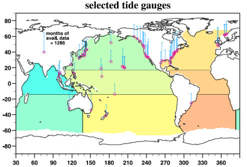</p>
      <p>&nbsp;</p>
      <p>&nbsp;</p>
      <p>&nbsp;</p>
      <p>Fig. 2 : <span class="texte">Position des 56 mar&eacute;graphes s&eacute;lectionn&eacute;s, indiqu&eacute;s par des cercles rouges. La quantit&eacute; de donn&eacute;es mensuelles disponibles pour chacun de ces mar&eacute;graphes est indiqu&eacute;e par la longueur des barres verticales. Les zones color&eacute;es indiquent les r&eacute;gions qui sont concern&eacute;es par cet article. </span><br />
      </p>
      <p>&nbsp;</p>
      <p>&nbsp;</p>
      <p>&nbsp;</p>
      <p>&nbsp;</p>
      <p><br />
      </p>
      <p></p>
      <p><span class="textengras">Variation du niveau moyen global</span><span class="texte"> (C'est &agrave; dire la hausse moyenne de tous les bassins oc&eacute;aniques). A noter que dans ce graphe comme dans les suivants, les variations annuelles ont &eacute;t&eacute; &eacute;limin&eacute;es par filtrage pr&eacute;alable.<br />  
          <br />
          Les traits bleus, rouges, noir fin, repr&eacute;sentent les r&eacute;sultats obtenus &agrave; partir de diff&eacute;rents apprentissages (training GFZ, CSIRO, GFZ+CSIRO).<br />
          La courbe en trait noir &eacute;pais repr&eacute;sente le r&eacute;sultat obtenu en tenant compte de l'ensemble des bases de donn&eacute;es.<br />
        Les auteurs ont &eacute;galement fait figurer sur ces graphes les r&eacute;sultats publi&eacute;s pr&eacute;c&eacute;demment par d'autres chercheurs (Church et White, et Javrejeva et al en 2006).</span><span class="texte"><br />
        </span>On voit imm&eacute;diatement que la courbe noire (en trait &eacute;pais) r&eacute;sultante indique une variation quasi constante du niveau global des oc&eacute;ans, au moins, depuis 110 ans. A noter que ce r&eacute;sultat est assez proche de celui obtenu par le <a href="http://www.pol.ac.uk/psmsl">PSML </a>(Permanent Service For Mean Sea Level Britannique) et que vous retrouverez <a href="indicateurs.html#psml">dans la page des indicateurs. </a></p>
      <p><br />
        <br />
        <br />
        La courbe pr&eacute;c&eacute;dente est &agrave; rapprocher de celle qui figure dans le dernier <a href="http://www.ipcc.ch/publications_and_data/ar4/wg1/en/tssts-3-3-3.html">Rapport AR4 du GIEC (2007)</a> <span class="texte">et qui est accompagn&eacute;e du texte suivant : &quot;Pour la p&eacute;riode allant de 1961 &agrave; 2003, la variation moyenne du niveau global, estim&eacute;e &agrave; l'aide des mar&eacute;graphes, vaut  1.8 &plusmn;   0.5 mm/an&quot;. Ce qui recoupe le r&eacute;sultat des chercheurs du Alfred Wegener Institute et du PSML cit&eacute; ci-dessus. </span></p>
      <p><span class="texte">La forme de la courbe est cependant sensiblement diff&eacute;rente de celle qui est report&eacute;e dans le graphe ci-dessus.</span> En effet, celle-ci montre une concavit&eacute; notable analogue &agrave; celle qui avait &eacute;t&eacute; rapport&eacute;e dans les articles des auteurs pr&eacute;c&eacute;dents ( Church et White, et Jevrejeva et al). </p>
      <p><span class="texte">Inutile de rappeler que l'allure de cette courbe, contredite par l'analyse toute r&eacute;cente de </span><span class="textengras">Manfred Wenzel et Jens Schr&ouml;ter</span><span class="texte">, a fait couler beaucoup d'encre. Beaucoup y ont vu l'indice d'une acc&eacute;l&eacute;ration de la hausse du niveau des mers et en ont d&eacute;duit des pr&eacute;visions apocalyptiques... </span><br />
        <br />
      </p>
      <p><span class="texte">Comme je l'ai pr&eacute;cis&eacute; ci-dessus et dans<a href="oceans.html#gyre"> un billet pr&eacute;c&eacute;dent</a>, les variations du niveau des oc&eacute;ans sont tr&egrave;s loin d'&ecirc;tre homog&egrave;nes d'un point &agrave; l'autre du globe. Les niveaux de certains oc&eacute;ans ont baiss&eacute;.  D'autres ont mont&eacute;. Les comportements sont tr&egrave;s vari&eacute;s. <br />
  Voici  trois exemples des graphes obtenus par les deux chercheurs de</span> l'Alfred Wegener Institute, <span class="texte">cette fois-ci &agrave; l'&eacute;chelle r&eacute;gionale:</span><br />
        </p>
      <p>&nbsp;</p>
      <p>&nbsp; </p>
      <p> Variation du niveau du bassin Sud de l'Oc&eacute;an Indien de 1900 &agrave; 2007. <br />
        <span class="texte">Comme on le voit le niveau de ce bassin a baiss&eacute; d'environ 5cm de 1900 &agrave; 1965. Il est pratiquement stabilis&eacute; depuis 1965. </span></p>
      <p>&nbsp;</p>
      <p>&nbsp;</p>
      <p>&nbsp;</p>
      <p><br />
      </p>
      <p></p>
      <p>&nbsp;</p>
      <p>&nbsp;</p>
      <p>Variation du niveau du bassin Sud de l'Atlantique de 1900 &agrave; 2007. <br />
        <span class="texte">Comme on le voit le niveau a baiss&eacute; d'environ 7 cm de 1900 &agrave; 1963 puis est remont&eacute; jusqu'&agrave; l'&eacute;poque actuelle o&ugrave; il a retrouv&eacute; son &eacute;tiage actuel. </span></p>
      <p>&nbsp;</p>
      <p>&nbsp;</p>
      <p>&nbsp;</p>
      <p>&nbsp;</p>
      <p>&nbsp;</p>
      <p></p>
      <p>&nbsp;</p>
      <p>&nbsp;</p>
      <p>Variation du niveau du bassin de l'Atlantique Nord.<br />
        <span class="texte">Comme on le voit, la hausse a &eacute;t&eacute; remarquablement r&eacute;guli&egrave;re depuis 100 ans. On ne per&ccedil;oit aucune concavit&eacute; indiquant une acc&eacute;l&eacute;ration de  cette hausse.</span></p>
      <p>&nbsp;</p>
      <p>&nbsp;</p>
      <p>&nbsp;</p>
      <p>&nbsp;</p>
      <p>&nbsp;</p>
      <p>Manfred Wenzel et Jens Schr&ouml;ter <span class="texte">ont &eacute;tudi&eacute; en d&eacute;tail les corr&eacute;lations entre les variations du niveau des mers des diff&eacute;rents bassins repr&eacute;sent&eacute;s sur la carte ci-dessus. Ils en concluent qu'il existe des transferts significatifs entre les  bassins contigus. A noter aussi que ces chercheurs ont d&eacute;tect&eacute;, dans la variation du niveau des mers, </span><span class="textengras">des oscillations multid&eacute;cennales de 50-70 ans </span><span class="texte">de p&eacute;riodes tr&egrave;s proches ou identiques &agrave; celles que <a href="froid.html#bilan">d'autres chercheurs ont retrouv&eacute;, entre autres, dans l'analyse des donn&eacute;es de temp&eacute;rature. </a><br />
  A l'&eacute;vidence,  la hausse (ou  la baisse) des bassins oc&eacute;aniques est encore tr&egrave;s loin d'&ecirc;tre comprise. Cette &eacute;tude et la technique d'analyse par r&eacute;seaux neuronaux  ne sont qu'un premier pas vers la compr&eacute;hension de ces ph&eacute;nom&egrave;nes complexes qu'il est encore &agrave; pr&eacute;sent, et sans doute pour longtemps, impossible de mod&eacute;liser m&ecirc;me en utilisant des mod&egrave;les sophistiqu&eacute;s oc&eacute;ans-atmosph&egrave;re coupl&eacute;s. </span></p>
      <p>Si vous &ecirc;tes int&eacute;ress&eacute; par cette probl&eacute;matique de la hausse du niveau des mers, je vous invite &agrave; relire un<a href="oceans.html#gyre"> billet pr&eacute;c&eacute;dent</a> qui traite d'un article remarquable : <br />
        <br />
        &quot;<a href="oceans.html#gyre">The gyre-scale circulation of the North Atlantic and sea level at Brest</a>&quot;. </p>
      <p><span class="texte">P.&nbsp;L.&nbsp;Woodworth<span class="exposant">1</span>, N.&nbsp;Pouvreau<span class="exposant">2</span>, and G.&nbsp;W&ouml;ppelmann<span class="exposant">3</span><br />
          <span class="exposant">1</span>Proudman Oceanographic Laboratory, Joseph Proudman Building, 6 Brownlow Street, Liverpool L3 5DA, UK<br />
          <span class="exposant">2</span>UMR 5566 LEGOS-CNES, 14 av. Edouard Belin, 31400 Toulouse, France<br />
        <span class="exposant">3</span>UMR 6250 LIENSs, Universit&eacute; de La Rochelle &ndash; CNRS, 2 rue Olympe de Gouges, 17000 La Rochelle,  France<br />
      </span><br />
        <span class="texte">Comme vous le constaterez, les choses ne sont pas aussi simples que certains s'efforcent de vous le faire croire...</span></p>
      <p><br />
      </p></th>
    </tr>
    <tr bgcolor="#CCFFFF">
      <th height="4083" align="left" valign="top" bordercolor="#FFFFFF" bgcolor="#CCFFFF" class="textengras" scope="col"><p>1er Ao&ucirc;t  2010 : <a name="atoll" id="atoll"></a><span class="textengras">Encore une nouvelle rassurante : </span><span class="titre">Non seulement Les &icirc;lots coralliens du Pacifique ne sont pas submerg&eacute;s par la hausse du niveau des oc&eacute;ans, mais </span> <span class="titre">au contraire, ils &quot;repoussent&quot; quand l'eau monte ! </span>Ils s'adaptent aux variations du niveau des mers. 
      </p>
        <p class="texte">C'est le constat surprenant que viennent de publier deux chercheurs g&eacute;ologues n&eacute;o-z&eacute;landais dans la revue &quot;Globe and Planetary Change&quot;.</p>
        <p class="texte">Je me fais un plaisir de vous relater le contenu de cet article novateur, non pas  tant parce qu'il repr&eacute;sente un &eacute;norme pav&eacute; dans la mare des alarmistes du r&eacute;chauffement climatique, mais surtout parce qu'il nous montre, une fois de plus, que la Nature a plus d'un tour dans son sac qui d&eacute;joue, toujours et encore, notre imagination ainsi que les pr&eacute;visions et les mod&egrave;les aussi simplistes que pessimistes. </p>
        <p class="textengras">En guise d'introduction, quelques rappels : </p>
        <p class="texte">En effet, que n'avons nous pas lu, vu et entendu au sujets des atolls coralliens des Maldives, des chapelets d'&icirc;lots coralliens du Pacifique etc...qui devaient tous s'engloutir dans les oc&eacute;ans, provoquant l'exode de milliers de &quot;r&eacute;fugi&eacute;s climatiques&quot;?<br />
        Un vrai d&eacute;luge submergeait les m&eacute;dias, (&agrave; d&eacute;faut des atolls), &agrave; l'instar des histoires sur les ours blancs de l'Arctique agripp&eacute;s &agrave; leur gla&ccedil;on. <br /> 
        </p>
        <p class="texte"><span class="textengras"><a href="bonnetdane.html#france5">France 5</a></span>, la sp&eacute;cialiste du genre, nous racontait, la larme &agrave; l'objectif de la cam&eacute;ra, que les habitants de <span class="textengras">Tuvalu</span>, d&eacute;sesp&eacute;r&eacute;s, abandonnaient pr&eacute;cipitamment leur &icirc;le (<a href="bonnetdane.html#france5">ce qui est compl&egrave;tement faux</a>).</p>
        <p class="texte"> <span class="textengras">Le pr&eacute;sident des Maldives</span> organisait  un conseil des ministres sous-marin, &agrave; 3m sous l'eau, le 17 Octobre 2009, c'est &agrave; dire peu de temps avant la <span class="textengras">r&eacute;union de Copenhague</span>, afin d'alerter l'opinion publique internationale sur le risque de disparition de son pays (point culminant &agrave; 3 m&egrave;tres) et des autres pays de l'<a href="http://fr.wikipedia.org/wiki/AOSIS">AOSIS</a> (Association de petits &eacute;tats insulaires vuln&eacute;rables) (photo ci-contre) etc... </p>
        <p class="texte">Souvenez-vous aussi de l'histoire de <a href="betisier.html#takuu">l'atoll de Takuu</a> (un &icirc;lot peupl&eacute;, situ&eacute; &agrave; l'Est de la Nouvelle Guin&eacute;e) qui, selon un &quot;expert&quot; de l'Universit&eacute; d'Auckland, <a href="betisier.html#takuu">devait &ecirc;tre engloutie en 2001</a>, au grand dam de la population. Ce qui ne s'est jamais produit, bien entendu. Tout va bien &agrave; Takuu.</p>
        <p class="texte"><a href="paroles.html#morner">Le professeur Niels Axel M&ouml;rner</a>, un (sinon le) grand sp&eacute;cialiste de ces questions avait beau s'&eacute;vertuer &agrave; essayer de r&eacute;tablir la v&eacute;rit&eacute; sur cette inqui&eacute;tante perspective (pourtant d&eacute;mentie par les mesures effectu&eacute;es sur le terrain). Rien n'y faisait. M&ouml;rner alla jusqu'&agrave; &eacute;crire  une<a href="http://www.lepost.fr/article/2009/10/21/1752512_le-president-des-maldives-sous-l-eau-mais-pas-les-maldives.html"> lettre furibonde </a>au Pr&eacute;sident des Maldives en lui pr&eacute;cisant que les jauges de niveau plac&eacute;es sur les atolls maldiviens n'indiquaient aucune variation depuis 30 ans. Peine perdue. </p>
        <p class="texte">Il faut reconna&icirc;tre que les r&eacute;sultats indiqu&eacute;s par les jauges de niveau du Professeur M&ouml;rner et de ses coll&egrave;gues, ainsi que les nombreuses observations faites sur place (par exemple,<a href="http://www.climatechangefacts.info/ClimateChangeDocuments/NilsAxelMornerinterview.pdf"> un vieil arbre qui avait pouss&eacute; sur la plag</a>e, &agrave; peine au dessus du niveau de la mer, portait r&eacute;cemment encore toutes ses feuilles, jusqu'&agrave; ce qu'une nuit, il soit myst&eacute;rieusement tron&ccedil;onn&eacute;...), avaient de quoi surprendre. Les mesures effectu&eacute;es en d'autres points des oc&eacute;ans montraient que le niveau de ces derniers montait de 1 &agrave; 3 mm/an. </p>
        <p class="texte">Comment cela est-il possible ? </p>
        <p class="texte">Pour comprendre l'&eacute;tonnante d&eacute;couverte rapport&eacute;e par les deux chercheurs N&eacute;o-z&eacute;landais, il est important de savoir comment se sont form&eacute;s <span class="textengras"> les atolls coralliens. </span>Le dessin ci-contre nous l'explique : </p>
        <p class="texte">&nbsp;</p>
        <p class="texte">1) Il y a des millions d'ann&eacute;es, les coraux commenc&egrave;rent &agrave; se d&eacute;velopper sur les flances de volcans &eacute;merg&eacute;s, cr&eacute;ant ainsi des r&eacute;cifs coralliens de forme circulaire. </p>
        <p class="texte">2) Tandis que le niveau des mers montait (par exemple, +14 m&egrave;tres depuis 8000 ans), apr&egrave;s la fin du dernier &acirc;ge glaciaire, les coraux ont continu&eacute;s &agrave; cro&icirc;tre. Les volcans &eacute;teints ont disparus sous l'eau du fait de l'&eacute;rosion et de la hausse du niveau des mers. </p>
        <p class="texte">3) Les mat&eacute;riaux calcif&egrave;res r&eacute;sultant des coraux morts se sont d&eacute;pos&eacute; sur les r&eacute;cifs semi &eacute;merg&eacute;s, cr&eacute;ant ainsi des plateformes circulaires. </p>
        <p class="texte">4) Ces r&eacute;cifs coralliens ont constitu&eacute; des sortes de pi&egrave;ges qui, du fait des temp&ecirc;tes, ont &eacute;t&eacute; plus ou moins combl&eacute;s par de nouveaux s&eacute;diments  (dont du sable de silice). S'y sont ajout&eacute;es des d&eacute;bris calcif&egrave;res provenant des coraux, des squelettes de mollusque, de coquillages qui constituent l'essentiel du sable des plage. Les &icirc;lots sont donc entour&eacute;s d'un cercle de r&eacute;cifs coralliens qui enserrent des lagons. Le <span class="textengras">squelette de ces &icirc;les est donc constitu&eacute; d'une mati&egrave;re vivante, les coraux, qui &eacute;voluent  au gr&eacute; des circonstances</span> et conf&egrave;rent un caract&egrave;re dynamique &agrave; la conformation des ces &icirc;lots. </p>
        <p class="texte">L'efficacit&eacute; de ce processus auto-adaptatif par rapport aux variations du niveau marin est ind&eacute;niable comme le montre l'article paru le 21 Mai 2010 dans la revue Global and Planetary Change. <br />
          Le 
        voici : </p>
        <table width="861" height="65" border="1">
          <tr>
            <td bgcolor="#FFFFCC"><p class="textengras">Titre : &quot;R&eacute;ponse dynamique des &icirc;lots bas&eacute;s sur les r&eacute;cifs vis &agrave; vis de la hausse du niveau des mers : &Eacute;vidences &agrave; partir d'une analyse multi-d&eacute;cennale de l'&eacute;volution des &icirc;les du Centre du Pacifique.&quot;<br />
                  <span class="texte">&quot;The dynamic response of reef islands to sea-level rise: Evidence from multi-decadal analysis of island change in the Central Pacific&quot;<br />
                  </span><br />
              Arthur P. Webb (a), Paul S. Kench (b),<br />
  <span class="texte">(a) Pacific Islands Applied Geoscience Commission, SOPAC, Fiji<br />
    (b) School of Environment, The University of Auckland, Private Bag 92019, Auckland, New Zealand</span></p>
            <p class="textengras">Global and Planetary Change, 72 (2010) 234&ndash;246</p></td>
          </tr>
        </table>
        <p class="texte">Comme &agrave; l'accoutum&eacute;e, voici le r&eacute;sum&eacute; original suivi d'une traduction en fran&ccedil;ais.</p>
        <p><span class="textengras">ABSTRACT</span><span class="texte"><span class="legende"> : Low-lying atoll islands are widely perceived to erode in response to measured and future sea-level rise. Using historical aerial photography and satellite images this study presents the first quantitative analysis of physical changes in 27 atoll islands in the central Pacific over a 19 to 61 yr period. This period of analysis corresponds with instrumental records that show a rate of sea-level rise of 2.0 mm yr&minus;1 in the Pacific. Results show that 86% of islands remained stable (43%) or increased in area (43%) over the timeframe of analysis. Largest decadal rates of increase in island area range between 0.1 to 5.6 ha. Only 14% of study islands exhibited a net reduction in island area. Despite small net changes in area, islands exhibited larger gross changes. This was expressed as changes in the planform configuration and position of islands on reef platforms. Modes of island change included: ocean shoreline displacement toward the lagoon; lagoon shoreline progradation; and, extension of the ends of elongate islands. Collectively these adjustments represent net lagoonward migration of islands in 65% of cases. Results contradict existing paradigms of island response and have significant implications for the consideration of island stability under ongoing sea-level rise in the central Pacific. First, islands are geomorphologically persistent features on atoll reef platforms and can increase in island area despite sea-level change. Second, islands are dynamic landforms that undergo a range of physical adjustments in responses to changing boundary conditions, of which sea level is just one factor. Third, erosion of island shorelines must be reconsidered in the context of physical adjustments of the entire island shoreline as erosion may be balanced by progradation on other sectors of shorelines. Results indicate that the style and magnitude of geomorphic change will vary between islands. Therefore, island nations must place a high priority on resolving the precise styles and rates of change that will occur over the next century and reconsider the implications for adaption.</span></span></p>
      <p>&nbsp;</p>
      <p>Photo ci-contre : Paul Kench au travail dans les Maldives. <span class="texte">Comme on le voit, son activit&eacute; est probablement moins p&eacute;nible que  celle qui consiste &agrave; pr&eacute;lever des carottes de glace au sommet de l'Antarctique...</span></p>
      <p><span class="textengras">R&eacute;sum&eacute; :</span><span class="texte"> L'id&eacute;e universellement r&eacute;pandue au sujet des &icirc;lots (atolls) de faible &eacute;l&eacute;vation au dessus du niveau, c'est qu'ils devraient s'&eacute;roder en r&eacute;ponse &agrave; la hausse du niveau des mers mesur&eacute;e et pr&eacute;vue pour le futur.<br />
Notre &eacute;tude, effectu&eacute;e </span><span class="textengras">&agrave; partir de photographies a&eacute;riennes historiques et d'images satellites</span><span class="texte">, pr&eacute;sente la premi&egrave;re analyse quantitative de l'&eacute;volution physique des 27 &icirc;lots-atolls de la zone centrale du Pacifiques sur une p&eacute;riode allant de 19, &agrave; 61 ans. 
        Cette p&eacute;riode correspond a des enregistrements qui montrent un taux de hausse du niveau de la mer de 2.0mm/an dans le Pacifique. <br />
        </span><span class="textengras">Les r&eacute;sultats  montrent que 86% des &icirc;lots sont rest&eacute;s stables ou ont augment&eacute; leur superficie (43%) sur la p&eacute;riode de notre analyse</span><span class="texte">. Les augmentations de surface les plus importantes vont de 0,1 hectares &agrave; 5,6 hectares. Seulement 14% des &icirc;lots &eacute;tudi&eacute;s ont montr&eacute; une  diminution globale de leur superficie.</span> <span class="texte">Les modes d'&eacute;volution des &icirc;lots incluent : le d&eacute;placement de la ligne de c&ocirc;te vers le lagon; la progradation de la c&ocirc;te des lagons (NdT : </span><span class="legende">Progradation = Accumulation de d&eacute;p&ocirc;ts s&eacute;dimentaires sur la marge continentale en   progression vers le large, dessinant des biseaux descendants. Traduit   une baisse du niveau marin.</span><span class="texte">); et l'extension des extr&eacute;mit&eacute;s des &icirc;les allong&eacute;es. Pris dans leur ensemble, ces ajustements repr&eacute;sentent une migration r&eacute;sultante des &icirc;les vers le lagon dans 65% des cas. Ces r&eacute;sultats contredisent les paradigmes sur les r&eacute;ponses des &icirc;les et ont des implications significatives pour la consid&eacute;ration de la stabilit&eacute; des &icirc;les dans le Pacifique Central.<br />
        </span><span class="texte">Tout d'abord,</span><span class="textengras"> les  &icirc;les sont des &eacute;l&eacute;ments g&eacute;omorphologiquement persistants sur les plateformes des r&eacute;cifs autour des lagons et sont capables d'augmenter leur superficie  en d&eacute;pit du changement de niveau de la mer</span><span class="texte">. Deuxi&egrave;mement, les &icirc;les sont des territoires dynamiques qui subissent une s&eacute;rie d'ajustements physiques de la totalit&eacute; de la ligne de c&ocirc;te en r&eacute;ponse &agrave; des changements des conditions aux limites, dont la variation du niveau de la mer n'est qu'un facteur parmi d'autres. Troisi&egrave;mement, l'&eacute;rosion des lignes c&ocirc;ti&egrave;res doit &ecirc;tre reconsid&eacute;r&eacute;e dans le contexte d'ajustements physiques de l'ensemble de la lignes c&ocirc;ti&egrave;re parce que l'&eacute;rosion peut &ecirc;tre contrebalanc&eacute;e par la progradation d'autres secteurs des lignes c&ocirc;ti&egrave;res. Nos r&eacute;sultats indiquent que le style et l'amplitude des variations g&eacute;omorphiques variera d'une &icirc;le &agrave; l'autre. C'est pourquoi, les nations &icirc;liennes doivent consid&eacute;rer comme une priorit&eacute; d'analyser les modes pr&eacute;cis et les taux de variations qui se produiront dans le courant du si&egrave;cle &agrave; venir et d'en reconsid&eacute;rer les implications afin de s'adapter.. <br />
        (Caract&egrave;res en gras de l'auteur du site). <br />
        __________________________________________________________________________________________</span></p>
      <p>Si on voulait r&eacute;sumer le r&eacute;sum&eacute; en quelques mots, plus ais&eacute;ment compr&eacute;hensibles, on dirait que :</p>
      <p class="texte">Des g&eacute;ologues n&eacute;oz&eacute;landais, sp&eacute;cialis&eacute;s dans l'&eacute;tude des &icirc;lots coralliens, ont compar&eacute; des photos a&eacute;riennes historiques, notamment datant de la derni&egrave;re guerre (en 1943-44), avec les observations satellitaires r&eacute;centes. <br />
        A la surprise g&eacute;n&eacute;rale, et malgr&eacute; la hausse constat&eacute;e du niveau des mers  dans cette r&eacute;gion du Monde, la tr&egrave;s grande majorit&eacute; des &icirc;lots ont augment&eacute; leur superficie ou ne l'ont pas chang&eacute; depuis 1943-1944. De plus, les chercheurs ont observ&eacute;s des &eacute;volutions dans la forme et la position de ces &icirc;lots. Les chercheurs en concluent que les &icirc;lots coralliens sont, en r&eacute;alit&eacute;, des territoires dynamiques qui s'adaptent et croissent de mani&egrave;re &agrave; compenser, et parfois au del&agrave;, la hausse du niveau des mers. Ils ont notamment observ&eacute; de nombreuses situations d'accumulation de d&eacute;p&ocirc;ts s&eacute;dimentaires sur la marge continentale en   progression vers le large, dessinant des biseaux descendants. (Ce qui traduit, tr&egrave;s g&eacute;n&eacute;ralement, une baisse du niveau marin et qui est &eacute;videmment totalement paradoxal dans un oc&eacute;an en hausse)<br />
        </p>
      <p class="texte"><span class="textengras"><br />
      </span></p>
      <p class="texte"><span class="textengras">        Voici, ci-contre, la zone du Pacifique</span> o&ugrave; se trouvent les 27 &icirc;lots coralliens explor&eacute;s au cours de cette &eacute;tude. Comme on le voit, les &icirc;lots se situent  &agrave; l'est de l'australie et de la Nouvelle Guin&eacute;e et au Nord de la Nouvelle Z&eacute;lande. </p>
      <p class="texte"><span class="textengras">Tuvalu</span> <span class="textengras">et Vanuatu </span>situ&eacute;s au centre de la carte sont les plus connus. </p>
      <p class="texte">Je rappelle que les Maldives qui pr&eacute;sentent un comportement semblable et sur lesquels travaillent aussi Paul Kench et ses coll&egrave;gues, se trouvent au Sud Ouest de l'Inde. </p>
      <p class="texte">A noter qu'une s&eacute;rie de forages pr&eacute;lev&eacute;s dans les Maldives montre que les &icirc;lots actuels ont atteint leur configuration actuelle depuis 4000 &agrave; 5000 ans. </p>
      <p>&nbsp;</p>
      <p>&nbsp;</p>
      <p></p>
      <p>&nbsp;</p>
      <p>Deux  exemples,<span class="texte"> parmi beaucoup d'autres, extraits de l'article, de la comparaison entre les photos a&eacute;riennes prises en 1944 (</span><span class="texte">c&ocirc;tes indiqu&eacute;es en tiret&eacute;s) et les photos r&eacute;centes (c&ocirc;tes en trait plein).</span></p>
      <p>Ci-contre &agrave; droite : Fig. 8. Lignes de c&ocirc;tes 1944&ndash;2006, &Icirc;lot de Mwandhom, Atoll Mokil, Etats F&eacute;d&eacute;r&eacute;s de Micron&eacute;sie.<span class="texte"> &quot;Reef rim&quot; d&eacute;signe la bordure de r&eacute;cifs (coralliens). <br />
      </span></p>
      <p><span class="texte"> Comme on le constate, la superficie de l'&icirc;le a augment&eacute; presque partout, de 1946 &agrave; 2006, &agrave; l'exception d'une petite portion situ&eacute;e &agrave; l'oppos&eacute; du lagon. L'&icirc;lot s'est donc l&eacute;g&egrave;rement d&eacute;plac&eacute; vers le lagon comme 65% des &icirc;lots r&eacute;pertori&eacute;s dans l'article.</span></p>
      <p>Ci-dessous : Fig. 7. &Icirc;lot de Sukoru, Atoll Pingelap, Etats F&eacute;d&eacute;r&eacute;s de Micron&eacute;sie. <br />
      On distingue les arbres sur cette photo<span class="texte">. Une fois encore l'&icirc;lot a augment&eacute; sa superficie et s'est d&eacute;plac&eacute; vers le lagon. </span></p>
      <p></p>
      <p class="texte">A noter qu'une s&eacute;rie importante d'&icirc;lots coralliens montrent des comportements analogues que l'ont peut observer sur des dur&eacute;es aussi courtes que les 20 derni&egrave;res ann&eacute;es, ce qui signifie que le temps de r&eacute;ponse de ces &icirc;lots &agrave; une hausse, m&ecirc;me faible, du niveau de la mer, est relativement rapide. Il n'en reste pas moins que nul ne peut pr&eacute;voir ce qu'il se passerait si le niveau des eaux augmentait tr&egrave;s rapidement, au point de d&eacute;passer la capacit&eacute; d'adaptation des plateformes coralliennes. Cependant, dans l'&eacute;tat actuel des choses, il n'y a pas lieu de s'inqui&eacute;ter.</p>
      <p class="texte">Bien entendu, une partie importante de l'article est consacr&eacute;e &agrave; l'analyse des facteurs qui pourraient faire &eacute;voluer dans un sens ou dans l'autre, la protection des &icirc;lots vis &agrave; vis de la hausse du niveau des mers, offerte par la Nature. On y apprend, en particulier, que les poissons perroquets ainsi que des algues sp&eacute;cifiques jouent un r&ocirc;le d&eacute;terminant dans la survie des coraux et donc pour l'avenir des &icirc;lots coralliens. <br />
      ____________________________________________________________________________________________</p>
      <p class="texte">Un certain nombre d'organes de la grande presse anglophone ou germanophone ont rapport&eacute; sur ces observations. L'article le plus complet qui a manifestement servi de r&eacute;f&eacute;rences &agrave; la plupart des autres publications, provient d'un organe de la grande presse allemande, le <a href="http://www.spiegel.de/international/world/0,1518,707884,00.html" class="textengras">Spiegel</a>. </p>
      <p class="texte">Voici quelques, d&eacute;clarations de <span class="textengras">Paul Kench,</span> recueillies par des organes de presse anglophone ou germanophones :</p>
      <p class="texte"><span class="textengras">&quot;Ces &icirc;les sont comme des organismes vivants qui grossissent. Elles &eacute;voluent constamment et parfois m&ecirc;me, cessent  d'exister&quot;</span>.  (<a href="http://www.thegwpf.org/ipcc-news/1303-are-coral-islands-really-doomed.html">IPCC news</a>) </p>
      <p class="texte"><span class="textengras">&quot;&quot;Nous prenons le changement climatique tr&egrave;s au s&eacute;rieux&quot; dit Kench. &quot;Mais de mani&egrave;re &agrave; pr&eacute;dire correctement les cons&eacute;quences r&eacute;elles pour les atolls, nous devons d'abord comprendre comment ils vont effectivement r&eacute;pondre &agrave; une hausse future du niveau des mers&quot;. Jusqu'&agrave; pr&eacute;sent, la recherche sur les cons&eacute;quences du changement climatique est partie d'un mod&egrave;le relativement simpliste selon lequel les &icirc;lots devraient avoir d&eacute;j&agrave; r&eacute;tr&eacute;ci depuis un certain temps. En d&eacute;pit de ses faiblesses, ce mod&egrave;le est encore utilis&eacute; aujourd'hui et a m&ecirc;me jou&eacute; un r&ocirc;le dans le rapport du GIEC. Kench et ses coll&egrave;gues qui ont baptis&eacute; leur groupe de recherche sur les atolls du nom de REEForms (Ndt : Probablement un jeu de mots : REEform (forme des r&eacute;cifs) pour REForme, sous-entendu, r&eacute;forme du mod&egrave;le)  pensent qu'il est grand temps d'abandonner le mod&egrave;le.&quot;</span> (<a href="http://www.thegwpf.org/ipcc-news/1303-are-coral-islands-really-doomed.html">IPCC news</a>)</p>
      <p class="texte">Apr&egrave;s la r&eacute;v&eacute;rence requise au &quot;changement climatique&quot;, <span class="textengras">Kench </span>&eacute;met de s&eacute;rieuses r&eacute;serves sur les mod&egrave;les &quot;simplistes&quot;, utilis&eacute;s et propag&eacute;s par les organismes internationaux comme le GIEC.. </p>
      <p class="texte">D'ailleurs, au sein m&ecirc;me de l'article comment&eacute; ici, <span class="textengras">Webb et Kench </span>critiquent vertement le mod&egrave;le utilis&eacute; par le<span class="textengras"> GIEC </span>en &eacute;crivant  (&agrave; la page 245) :</p>
      <p class="texte"><span class="legende">&quot;Whilst numerous studies have critiqued the use of this model for predicting shoreline change in response to sea level rise on sandy shorelines (e.g. Cooper and Pilkey, 2004) its continued use and advocacy at an international level is perplexing and ultimately misleading.</span>&quot;</p>
      <p class="texte"><span class="textengras">&quot;Alors que de nombreuses &eacute;tudes ont critiqu&eacute; l'utilisation de ce mod&egrave;le </span>(NdT : celui qui est utilis&eacute; par le GIEC)<span class="textengras"> pour la pr&eacute;diction du d&eacute;placement de la ligne de c&ocirc;te en r&eacute;ponse &agrave; une hausse du niveau marin sur les lignes de c&ocirc;tes sablonneuses, (par exemple : Cooper et Pilkey, 2004)</span>, (NdT: soit plusieurs ann&eacute;es avant la r&eacute;daction du rapport AR4 du GIEC publi&eacute; en 2007), <span class="textengras">son utilisation persistante et son apologie au niveau international laissent perplexe et, en d&eacute;finitive, sont trompeuses.&quot; </span><br />
        (NDT :  C'est une critique non d&eacute;guis&eacute;e, en particulier, &agrave; l'encontre du rapport AR4 du GIEC : 
        <span class="textengras">S'agit-il d'un <a href="bonnetdane.html#malariagate">nouvel Atollgate</a></span> ?) </p>
      <p class="texte"><span class="textengras">&ldquo;Tout le monde pense que toutes   les &icirc;les sont pareilles. Les gens s&rsquo;imaginent qu&rsquo;il s&rsquo;agit   de gros blocs de b&eacute;ton immobiles qui se retrouvent automatiquement   noy&eacute;s lorsque l&rsquo;eau monte.&rdquo; Mais les &icirc;les ne sont pas statiques. Tuvalu   et les autres atolls - des &icirc;les coralliennes en forme d&rsquo;anneau autour   d&rsquo;un lagon - sont particuli&egrave;rement dynamiques. Les morceaux de corail   qui se d&eacute;tachent des r&eacute;cifs sont projet&eacute;s vers le rivage. &ldquo;L&rsquo;histoire de   la plupart de ces petits Etats le montre&nbsp;:  les &icirc;les grandissent,   s&rsquo;&eacute;rodent ou se modifient en r&eacute;action aux temp&ecirc;tes ou aux cyclones.&rdquo;   Selon Paul Kench, le cyclone Bebe de 1972 a ainsi fait grandir quelques   petites &icirc;les en y apportant des rocailles. &quot; </span>(Source : <a href="http://www.rac-f.org/article.php3?id_article=544">R&eacute;seau Action Climat </a>qui  est &eacute;videmment particuli&egrave;rement alarmiste sur le r&eacute;chauffement climatique mais qui a repris un article de <span class="textengras">Leslie Allen</span> du <span class="textengras">Smithsonian Magazine</span>)</p>
      <p class="texte">A noter que tout en affirmant que le nombre et l'intensit&eacute; des cyclones augmente (<a href="http://www.coaps.fsu.edu/~maue/tropical">ce qui est d&eacute;menti par les observations </a>et qui va &agrave; l'encontre de ce que disent les auteurs de l'article qui d&eacute;clarent que les cyclones et temp&ecirc;tes sont plut&ocirc;t des acteurs de renforcement des &icirc;les<a href="http://www.coaps.fsu.edu/~maue/tropical">) </a>), l'article du Smithsonian Magazine, repris par le RAC, cite aussi les observations du <span class="textengras">Professeur Wolfgang Scherer (en 2000)</span> qui rejoignaient assez pr&eacute;cis&eacute;ment celles du<a href="paroles.html#morner"> <span class="textengras Style22">Professeur Niels Axel M&ouml;rner : </span></a></p>
      <p align="justify" class="textengras">&quot;... Wolfgang Scherer, le directeur   du National Tidal Centre (NTC) [centre d&rsquo;observation des mar&eacute;es], a   d&eacute;clar&eacute; qu&rsquo;apr&egrave;s sept ans d&rsquo;observations et de mesures rien ne   permettait d&rsquo;affirmer que les eaux montaient. Tuvalu a re&ccedil;u une vraie   gifle&nbsp;: le NTC annon&ccedil;ait que le niveau de la mer &agrave; Funafuti avait, en   r&eacute;alit&eacute;, baiss&eacute; de 8,7 cm depuis 1993.<br />
        Cette annonce a provoqu&eacute; chez certains   l&rsquo;incr&eacute;dulit&eacute; quant aux inqui&eacute;tudes des Tuvaluans. Les dirigeants du   pays venaient de demander &agrave; l&rsquo;Australie et &agrave; la Nouvelle-Z&eacute;lande de leur   accorder le statut de r&eacute;fugi&eacute;s climatiques. Les sceptiques consid&egrave;rent   maintenant ces pressions comme un stratag&egrave;me pour favoriser les   perspectives &eacute;conomiques des Tuvaluans &agrave; l&rsquo;&eacute;tranger. &quot; <br />
      ______________________________________________________________________________________</p>
      <p class="texte"> Cet article retentissant de <span class="textengras">Paul Kench </span>et de son coll&egrave;gue<span class="textengras"> Webb </span>a donc fait l'objet d'une  diffusion notable dans les autres pays d&eacute;velopp&eacute;s et tout sp&eacute;cialement en allemagne, gr&acirc;ce &agrave; l'article, fort bien document&eacute; du tr&egrave;s r&eacute;put&eacute; <a href="http://www.spiegel.de/international/world/0,1518,707884,00.html" class="textengras">Spiegel.<br />
      </a><br />
  Je n'ai rien vu de tel dans la grande presse &eacute;crite francophone ni dans les autres m&eacute;dias nationaux, non plus que sur leurs sites WEB. <br />
        Pourquoi ? </p>
      <p class="texte">Le sort des Maldives, des Seychelles et des autres &icirc;lots coralliens,  ce n'est pas suffisamment int&eacute;ressant ? <br />
        Un grand titre, en une, du style &quot;<span class="textengras">L'achat de <a href="http://fr.wikipedia.org/wiki/%C3%8Ele_d%27Arros">l'&icirc;le d'Arros</a> constituait un bon placement</span>&quot;  serait plut&ocirc;t attractif, par les temps qui courent.</p>
      <p class="texte">Il est clair que les constats de <span class="textengras">Webb et Kench </span>ne doivent pas faire plaisir &agrave; tout le monde, en sus du Pr&eacute;sident des Maldives et des membres de l'<a href="http://fr.wikipedia.org/wiki/AOSIS">AOSIS</a>...<br />
        Quoiqu'il en soit et d&eacute;sormais, si on nous parle des &quot;r&eacute;fugi&eacute;s climatiques&quot; des atolls coralliens, nous saurons quoi r&eacute;pondre... </p>
      <p class="texte">______________________________________________________________________________________________________________________</p>
      <p class="textengras">Addendum du 8 juillet 2010 : <a name="alofa" id="alofa"></a>Charles Darwin <span class="textengras">avait correctement d&eacute;crit (et publi&eacute;) le processus de construction et d'&eacute;volution des atolls, d&egrave;s 1878 ! </span></p>
      <p class="textengras"><span class="texte">Tout le monde sait que </span>Charles Darwin (1809-1882),<span class="texte"> l'auteur de la c&eacute;l&egrave;bre th&eacute;orie de l'&eacute;volution, &eacute;tait  un naturaliste hors-pair. <br />
        Par contre, peu de gens savent que ses talents d'observateur  s'exer&ccedil;aient &eacute;galement en m&eacute;t&eacute;orologie et en g&eacute;ologie.</span> <br />
        <br />
        <span class="texte">Sa formation de naturaliste le conduisit &agrave; effectuer un long p&eacute;riple   autour du monde qui dura cinq ann&eacute;es (1831-1836) (repr&eacute;sent&eacute; sur <a href="http://fr.wikipedia.org/wiki/Fichier:Voyage_of_the_Beagle-fr.svg#filehistory">l'image ci-contre</a>), &agrave; bord du HMS Beagle.</span> <span class="texte">C'est au cours de ce voyage qu'il effectua un grand nombre d'observations qui devaient constituer l'ossature de la th&eacute;orie de l'&eacute;volution. <br />
        Parmi d'autres, il fit aussi une observation remarquable et qui aurait due &ecirc;tre reconnue comme telle mais qui fut ignor&eacute;e par ses successeurs, sur la corr&eacute;lation &eacute;troite qui existe entre les oscillations ENSO (et notamment la Ni&ntilde;a) et les s&eacute;cheresses ainsi que ceci est rappel&eacute; dans <a href="http://journals.ametsoc.org/doi/abs/10.1175/BAMS-86-9-1295">cet article de l'AMS, l' </a> American Meteorology Soc. </span></p>
      <p class="textengras"><span class="texte">Pour ce qui nous concerne ici, c'est au cours de son p&eacute;riple &agrave; bord du Beagle que </span> Charles Darwin <span class="texte">&eacute;mit l'hypoth&egrave;se selon laquelle les atolls coralliens se   formeraient sur des c&ocirc;nes volcaniques en cours de submersion, (comme cela est expliqu&eacute; ci-dessus), ce qu'il a confirm&eacute; par son s&eacute;jour dans l'archipel corallien de l'oc&eacute;an Indien</span> des <a href="http://fr.wikipedia.org/wiki/%C3%8Eles_Cocos">&icirc;les Cocos</a> <span class="texte">(autrefois, &icirc;les Keeling).</span></p>
      <p class="texte">Un lecteur &eacute;rudit (que je remercie) m'a transmis des photocopies de quelques pages de la quatri&egrave;me &eacute;dition du livre (publi&eacute; en 1878) que <span class="textengras">Darwin</span> publia d&egrave;s 1845, ainsi que l'article de W. J. Sollas (1898), et quelques autres documents, eux aussi &agrave; propos des atolls coralliens. </p>
      <p class="texte">Voici ci-contre le fac simil&eacute; de la couverture du livre de Darwin, traduit par M. L. Cosserat: </p>
      <p class="texte">&nbsp;</p>
      <p class="texte">On trouve dans ce livre un certain nombre de remarques et de dessins qui corroborent les d&eacute;couvertes de <span class="textengras">Webb et Kench </span>d&eacute;crites ci-dessus. On y lit, en particulier ce texte visionnaire (ci-dessous) de Darwin sur la formation des atolls :</p>
      <p class="texte"></p>
      <p class="texte">Ainsi Darwin avait d&eacute;j&agrave; compris, en 1845, que ce sont les d&eacute;tritus, accumul&eacute;s par la mer qui d&eacute;terminent la hauteur maximale des r&eacute;cifs situ&eacute;s sur des plateformes coralliennes. </p>
      <p class="texte">Quelques d&eacute;cennies  plus tard, en 1898, un autre chercheur anglais, <span class="textengras">W. J. Sollas</span> &eacute;crivit un article de revue (&quot;Funafuti : The story of a corall atoll&quot;, Natural Science, vol. XIV, N&deg;83) reprenant et d&eacute;veloppant les id&eacute;es de Darwin sur la formation et l'&eacute;volution des atolls coralliens, appliqu&eacute;es &agrave; Funafuti. Son texte et ses observations sont aussi en accord avec l'article de <span class="textengras">Webb et Kench </span>comment&eacute; ci-dessus. <br />
        <br />
      D&egrave;s lors, en possession des &eacute;l&eacute;ments publi&eacute;s par Darwin, d&egrave;s 1845 et repris dans les ann&eacute;es qui suivirent, ainsi que des &eacute;crits de ses nombreux successeurs comme les auteurs de l'article d&eacute;crit ci-dessus, on peut se demander quelle est la justification scientifique des mod&egrave;les utilis&eacute;s par le GIEC que <span class="textengras"> Kench</span> commente, lors d'un interview, de la mani&egrave;re suivante :<br />
        <br />
        <span class="textengras">&quot; Jusqu'&agrave; pr&eacute;sent, la recherche sur les cons&eacute;quences du changement climatique est partie d'un mod&egrave;le relativement simpliste selon lequel les &icirc;lots devraient avoir d&eacute;j&agrave; r&eacute;tr&eacute;ci depuis un certain temps. En d&eacute;pit de ses faiblesses, ce mod&egrave;le est encore utilis&eacute; aujourd'hui et a m&ecirc;me jou&eacute; un r&ocirc;le dans le rapport du GIEC&quot;. </span></p>
      <p class="texte">&nbsp;</p>
      <p class="texte">Il faut reconna&icirc;tre que la perspective de l'engloutissement des &icirc;lots coralliens permet &agrave; certains de faire de la &quot;p&eacute;dagogie&quot; &agrave; bon march&eacute; et &agrave; d'autres, des &quot;<a href="bonnetdane.html#france5">documentaires catastrophes</a>&quot; que l'on passe aux heures de grande &eacute;coute pour faire monter l'audimat. Sans pr&eacute;juger d'autres arri&egrave;re-pens&eacute;es. </p>
      <p class="texte">Tout comme mon lecteur averti qui m'a aussi transmis ce document, je  vous invite &agrave; prendre connaissance de <a href="BD-Tuvalu.pdf">la plaquette en forme de bande dessin&eacute;e co&eacute;dit&eacute;e par l'Association <span class="textengras">Alofa-Tuvalu et par l'</span></a><span class="textengras"><a href="http://www2.ademe.fr/servlet/getBin?name=E809C84CD32B7DA37E6B40B218AA48A21174989771824.pdf">ADEME</a></span> qui est une agence gouvernementale, donc financ&eacute;e par l'argent public et cens&eacute;e promouvoir les &eacute;conomies d'&eacute;nergie &agrave; partir de bases scientifiques solidement &eacute;tablies<a href="BD-Tuvalu.pdf">.<br />
      </a> Cette plaquette Alofa-Tuvalu ADEME est destin&eacute;e &agrave; sensibiliser les enfants, consid&eacute;r&eacute;s comme de &quot;futurs &eacute;migr&eacute;s climatiques&quot;...</p>
      <p class="texte">En voici,   la couverture, ci-contre.  </p>
      <p class="texte">On y trouve une chanson savoureuse, &eacute;crite par l'auteur de cette plaquette (le chanteur Kent). On y parle de &quot;CouleTuvalu, Venise des m&eacute;rous&quot;. <br />
        <br />
        La rime est assez bien trouv&eacute;e mais elle ne semble pas du tout &eacute;mouvoir les habitants de ces territoires. Un <a href="bonnetdane.html#france5">article scientifique tout r&eacute;cent </a> montre que ces derniers n'ont d'ailleurs absolument pas l'intention de quitter leurs &icirc;lots. D'ailleurs, si le niveau de la mer s'&eacute;levait (ce qu'il ne fait pas), qu'est-ce qui les emp&ecirc;cherait de construire des digues  comme cela a d&eacute;j&agrave; &eacute;t&eacute; pratiqu&eacute; dans certains atolls pour se pr&eacute;munir des vagues d&eacute;ferlantes et r&eacute;cup&eacute;rer du terrain constructible ? <br />
        <br /> 
        Sans doute, les habitants de Tuvalu ont-ils fait, sur place, les m&ecirc;mes observations que <span class="textengras">Webb et Kench, ou encore que les professeurs Niels-Axel M&ouml;rner et Wolfgang Scherer</span>, le directeur   du National Tidal Centre (NTC) [centre d&rsquo;observation des mar&eacute;es]et de beaucoup d'autres avant eux, plut&ocirc;t que de faire confiance aux pr&eacute;dictions du <span class="textengras">GIEC,</span> une fois de plus, bas&eacute;es sur des mod&egrave;les simplistes (dixit Kench), exag&eacute;r&eacute;ment pessimistes et d&eacute;j&agrave; d&eacute;mentis par les faits . </p>
      <p class="texte">&nbsp;</p>      </th>
    </tr>
    <tr bgcolor="#CCFFFF">
      <th height="3404" align="left" valign="top" bordercolor="#FFFFFF" bgcolor="#FFFFCC" class="textengras" scope="col"><p>18 Juillet 2010 : <a name="wap" id="wap"></a><span class="titre">Il n'y a rien d'exceptionnel dans la fonte actuelle de la glace de la P&eacute;ninsule Ouest de l'Antarctique. </span><span class="textengras">Elle s'est d&eacute;j&agrave; produite plusieurs fois et a &eacute;t&eacute;, au moins aussi intense, au cours de l'histoire r&eacute;cente. </span></p>
        <p class="texte">Tel est le message rassurant d'un article scientifique qui vient de para&icirc;tre dans la revue GEOLOGY, en ce mois de Juillet 2010, sous la signature de trois chercheurs am&eacute;ricains. </p>
        <p class="texte"><span class="textengras">En effet, que n'avons nous pas entendu et lu</span>, sur la disparition &quot;'apocalyptique&quot; et soi-disant &quot;sans pr&eacute;c&eacute;dent&quot; d'&eacute;normes blocs de glace d&eacute;tach&eacute;s de la  p&eacute;ninsule Ouest de l'Antarctique ? <br />
        Le  comportement de la WAP (West Antarctic Peninsula), la P&eacute;ninsule Antarctique Ouest, a fait l'objet de plusieurs articles scientifiques comment&eacute;s, plus bas, dans cette m&ecirc;me page (<span class="textengras"><a href="oceans.html#borloo">ici</a>, <a href="oceans.html#wilkin">ici sur la plaque Wilkin</a></span> et encore <a href="oceans.html#antar" class="textengras">ici</a>). Inutile de pr&eacute;ciser que les r&eacute;sultats de la recherche scientifique n'ont pratiquement rien &agrave; voir avec les d&eacute;clarations alarmistes entendues et lues ici ou l&agrave;.<br />
        Certains &quot;reporters&quot; n'ont pourtant pas h&eacute;sit&eacute;  &agrave; <a href="bonnetdane.jpg#photo">r&eacute;utiliser (sans le pr&eacute;ciser) des photos prises lors des ann&eacute;es pr&eacute;c&eacute;dentes</a>, pour maintenir le lecteur en haleine, ann&eacute;e apr&egrave;s ann&eacute;e....</p>
        <p class="texte"></p>
        <p class="texte"><span class="textengras">A d&eacute;faut d'observer la moindre diminution de la banquise de l'immense continent Antarctique qui, bien au contraire, s'agrandit d'ann&eacute;e en ann&eacute;e</span>, comme le montre le graphique ci-contre du<span class="textengras"> NSIDC</span> (actualis&eacute; au 16 juillet 2010, voir sur <a href="indicateurs.html#glace">cette page</a>), l'attention des m&eacute;dias et de certains &quot;experts&quot; s'&eacute;tait enti&egrave;rement focalis&eacute;e sur la petite p&eacute;ninsule Ouest qui n'est d'ailleurs rien d'autre que le prolongement de la Cordill&egrave;re des Andes am&eacute;ricaine.<br />
        De fait, cette p&eacute;ninsule Ouest est parsem&eacute;e de sommets qui culminent &agrave; 2800m et une activit&eacute; volcanique intense y a &eacute;t&eacute; clairement identifi&eacute;e. </p>
        <p class="texte">Ainsi, faute de faire les gros titres avec la banquise du vaste continent du p&ocirc;le Sud qui &quot;ne va pas dans le bon sens&quot;, la P&eacute;ninsule Ouest de l'Antarctique est devenue, pour beaucoup, <span class="textengras">&quot;le canari dans la mine&quot;</span> du r&eacute;chauffement climatique anthropique au p&ocirc;le Sud, &agrave; l'instar de la mer glac&eacute;e Arctique pour le p&ocirc;le Nord. Tout ce qui se produisait dans la P&eacute;ninsule r&eacute;sultait de l'activit&eacute; humaine, bien entendu....</p>
        <p class="texte">Comme toujours et plus sp&eacute;cialement pour ce qui concerne le climat de notre plan&egrave;te, les le&ccedil;ons du pass&eacute; sont  bonnes &agrave; prendre. En effet, l'alarmisme ambiant prend sa source dans le caract&egrave;re soi-disant <span class="textengras">&quot;sans pr&eacute;c&eacute;dent&quot; </span>des observations objectives effectu&eacute;es sur le terrain. Lesquelles se limitent, en g&eacute;n&eacute;ral, et pour ce qui concerne le p&ocirc;le Sud, au trois derni&egrave;res d&eacute;cennies correspondant &agrave; l'&eacute;re spatiale (c'est &agrave; dire l'&egrave;re des satellites). C'est tr&egrave;s (trop) peu, pour d&eacute;clarer que ce qu'il se passe actuellement est &quot;sans pr&eacute;c&eacute;dent&quot;, comme va nous le montrer l'article scientifique qui est le sujet de ce billet.</p>
        <p class="texte">Inutile de dire que les d&eacute;couvertes que je vais d&eacute;crire ci-dessous ne vont pas faire plaisir &agrave; tout le monde. <br />
        Je serais vraiment tr&egrave;s &eacute;tonn&eacute; que l'article suivant, pourtant d&ucirc;ment peer-review&eacute; et publi&eacute; dans une revue appr&eacute;ci&eacute;e, soit cit&eacute; dans le prochain rapport du GIEC (l'AR5).<br />
        Voici donc cet article dont <span class="textengras">Phil Jones</span>, <span class="textengras">l'ex-directeur du CRU</span>, r&eacute;cemment r&eacute;habilit&eacute; par la Commission Muir Russel,<a href="http://www.anelegantchaos.org/cru/emails.php?eid=419&amp;filename=1089318616.txt"> pourrait &eacute;crire &agrave;<span class="textengras"> Michael Mann</span></a> (comme il l'a fait dans les courriers du <a href="bonnetdane.html#cru">Climategate</a>, au sujet d'autres articles peer-review&eacute;s mais &quot;d&eacute;rangeants&quot;) : &quot;Je ne vois pas comment un seul de ces articles pourrait figurer dans le prochain rapport du <span class="textengras">GIEC</span>. Kevin (NdT: Kevin Trenberth) et moi nous l'emp&ecirc;cherons par n'importe quel moyen, m&ecirc;me si pour cela nous devons red&eacute;finir ce qu'est la litt&eacute;rature revue par les pairs !&quot; (Sic). <br />
        Cela m&eacute;ritait bien une absolution. </p>
        <p class="texte">Et de fait, cet article est particuli&egrave;rement perturbant puisqu'il montre explicitement, preuves &agrave; l'appui, que la fonte locale de la P&eacute;ninsule Ouest de l'Antarctique <span class="textengras">n'est pas du tout &quot;sans pr&eacute;c&eacute;dent&quot;....Bien au contraire. </span><br />
        ________________________________________________________________________________________________</p>
        <p><strong>GEOLOGY 38 (7): <span class="texte">635. (Juillet 2010)</span></strong></p>
        <p>R&eacute;duction de la couverture de glace dans la P&eacute;ninsule Ouest de l'Antarctique, de 700 &agrave; 970 ans avant le pr&eacute;sent.<br />
          <span class="texte">Reduced ice extent on the western Antarctic Peninsula at 700&ndash;970 cal. yr B.P.</span><br />
        B.L. Hall, T. Koffman, and G.H. Denton<br />
        <span class="texte">Department of Earth Sciences and the Climate Change Institute, University of Maine, Orono, Maine 04469, USA<br />
        Raytheon Polar Services, Centennial, Colorado 80112, USA<br />
        </span><br />
        <span class="texte">Je rappelle que la datation fr&eacute;quemment utilis&eacute;e par les g&eacute;ologues, &quot;700 avant le pr&eacute;sent&quot; signifie, <a href="http://en.wikipedia.org/wiki/Before_Present">par convention</a>, 700 ans avant 1950, soit l'ann&eacute;e 1250 apr&egrave;s J.C. De 700 &agrave; 970 avant le pr&eacute;sent couvre donc la p&eacute;riode allant de 980 &agrave; 1250 apr&egrave;s J.C. de notre calendrier.</span></p>
        <p><span class="texte">Comme &agrave; l'accoutum&eacute;e, voici le r&eacute;sum&eacute; original en anglais suivi d'une traduction en fran&ccedil;ais. </span><br />
          <br />
          <span class="textengras">Abstract</span>:<span class="legende"> Rapid warming and consequent ice-shelf collapse have focused attention on the glacial record of the Antarctic Peninsula. Here, we present the first record of terrestrial organic material exposed by recently retreating ice that bears on past glacier extent and climate in this sensitive region. Radiocarbon dates show that ice on Anvers Island was at or behind its present position at 700&ndash;970 cal. yr B.P., coincident with ice reduction elsewhere in the Southern Hemisphere. Moreover, the data indicate that present reduced ice extent on the western Antarctic Peninsula is not unprecedented and is similar to that experienced during at least three periods in the last 5600 yr.</span></p>
        <p>R&eacute;sum&eacute; : <span class="texte">&quot;Le r&eacute;chauffement rapide et l'&eacute;croulement subs&eacute;quent d'importantes plaques de glace ont attir&eacute; l'attention sur l'&eacute;volution de la glace de la P&eacute;ninsule Antarctique. Dans cet article, nous pr&eacute;sentons les premi&egrave;res donn&eacute;es tir&eacute;es de mat&eacute;riaux organiques terrestres qui ont &eacute;t&eacute; mis &agrave; jour lors des retraits glaciaires r&eacute;cents. Ils apportent des enseignements sur l'&eacute;tendue pass&eacute;e du glacier et sur le climat de cette r&eacute;gion sensible. La datation au radio-carbone montre que</span><span class="textengras"> la glace sur l'&icirc;le d'Anvers &eacute;tait identique ou en retrait par rapport &agrave; sa position actuelle pendant la p&eacute;riode 770-970 BP (NdT : Before Present : avant le pr&eacute;sent), </span><span class="texte">ce qui co&iuml;ncide avec la r&eacute;duction de la glace observ&eacute;e ailleurs dans l'h&eacute;misph&egrave;re Sud. </span><br />
        De plus, nos donn&eacute;es montrent que la r&eacute;duction de l'extension de la glace dans la P&eacute;ninsule Ouest de l'Antarctique n'est pas sans pr&eacute;c&eacute;dent et qu'elle est semblable &agrave; celle qui a eu lieu pendant, au moins, trois p&eacute;riodes durant les 5600 derni&egrave;res ann&eacute;es.&quot;<br /> 
        <span class="texte">(caract&egrave;res engraiss&eacute;s par l'auteur du site) </span><br />
      ___________________________________________________________________________________________________</p>
      <p>O&ugrave; ont &eacute;t&eacute; faites les observations rapport&eacute;es dans cet article ? </p>
      <p>&nbsp;</p>
      <p>&nbsp;</p>
      <p>Extrait de la Figure 1. : <span class="texte">Carte d&eacute;taill&eacute;e de la p&eacute;ninsule Ouest de l'Antarctique avec indication de la position de </span><span class="textengras">l'&icirc;le d'Anvers </span><span class="texte">o&ugrave; ont &eacute;t&eacute; pr&eacute;lev&eacute;s les &eacute;chantillons utilis&eacute;s pour cet article.</span></p>
      <p><span class="textengras">Insert en haut &agrave; gauche</span><span class="texte"> : situation de la P&eacute;ninsule Ouest de l'Antarctique par rapport au continent Antarctique. </span></p>
      <p>&nbsp;</p>
      <p>&nbsp;</p>
      <p>&nbsp;</p>
      <p>&nbsp;</p>
      <p>&nbsp;</p>
      <p>Voici comment ont &eacute;t&eacute; obtenus les &eacute;chantillons de mat&eacute;riaux organiques anciens qui sont utilis&eacute;s dans cette publication :</p>
      <p>&nbsp;</p>
      <p class="texte">Comme on le voit sur la photo ci-contre qui est un extrait de la Figure 2 de l'article, le retrait r&eacute;cent de la couverture glac&eacute;e de l'&icirc;le d'Anvers, laisse &agrave; d&eacute;couvert certaines zones qui apparaissent en noir sur la photo. <br />
        L'&eacute;chelle est indiqu&eacute;e par le skieur pr&eacute;sent sur la photo (sans doute un membre de l'&eacute;quipe de recherche). Les dates indiqu&eacute;es dans les encadr&eacute;s blancs sont les dates calendaires B.P. obtenues par datation au carbone 14, accompagn&eacute;es de leur marges d'erreur. <br />
      Ces zones d&eacute;couvertes par le retrait du glacier qui figure &agrave; l'arri&egrave;re plan de la photo originale, laissent appara&icirc;tre des <span class="textengras">mousses anciennes</span> (moss) ainsi que des coquillages (shells) qu'il suffit de dater. <span class="textengras">Il est inutile de pr&eacute;ciser que le fait que des mousses et des coquillages aient pu se d&eacute;velopper &agrave; cet endroit, indique que cette partie du glacier &eacute;tait  d&eacute;pourvue de couverture glac&eacute;e &agrave; cette &eacute;poque recul&eacute;e. Ce qui montre que le recul du glacier &eacute;tait au moins aussi important que le recul actuel, comme le notent les chercheurs dans le r&eacute;sum&eacute; (citation extraite du r&eacute;sum&eacute; : &quot; la glace sur l'&icirc;le d'Anvers &eacute;tait identique ou en retrait par rapport &agrave; sa position actuelle&quot;). </span></p>
      <p class="texte">Voici, maintenant les r&eacute;sultats des datations effectu&eacute;es par les chercheurs sur les &eacute;chantillons pr&eacute;lev&eacute;s dans les divers sites d&eacute;couverts par le retrait du glacier. </p>
      <p></p>
      <p>&nbsp;</p>
      <p>Table 1 : Donn&eacute;es issues de la datation au radio-carbone (C14) tir&eacute;es des mousses et des coquillages r&eacute;cemment d&eacute;couverts par le retrait de la glace.</p>
      <p class="texte">La datation est indiqu&eacute;e dans la 5&egrave;me colonne (<span class="textengras">Cal. age yr BP</span>) (ann&eacute;es avant le pr&eacute;sent). On y voit que des coquillages datent de 3719 et 5535 avant le pr&eacute;sent.Les mousses, elles, datent de la p&eacute;riode 700-970 avant le pr&eacute;sent. </p>
      <p>&nbsp;</p>
      <p class="texte">Dans la suite de l'article, les chercheurs comparent leurs r&eacute;sultats avec ceux qui ont &eacute;t&eacute; obtenus dans diff&eacute;rentes r&eacute;gions du monde. Pour l'h&eacute;misph&egrave;re Nord, ils prennent l'exemple des<a href="oceans.html#huss2"> glaciers Suisses </a>que nous avons d&eacute;j&agrave; &eacute;voqu&eacute;s dans cette page. Pour l'h&eacute;misph&egrave;re Sud, et outre la P&eacute;ninsule Ouest Antarctique, les chercheurs ont collect&eacute; les donn&eacute;es issues de mesures effectu&eacute;es en Nouvelle Z&eacute;lande. </p>
      <p class="texte">Voici une reproduction de la Fig. 4 de l'article, accompagn&eacute;e d'une traduction de sa l&eacute;gende : </p>
      <p></p>
      <p>&nbsp;</p>
      <p>Figure 4. &quot;<span class="texte">Comparaison des datations des mousses avec des donn&eacute;es bien dat&eacute;es provenant des h&eacute;misph&egrave;res Nord et Sud, modifi&eacute;es selon Schaefer et al (2009). </span></p>
      <p class="texte">Le graphe en haut montre les fluctuations des glaciers Alpins  (Holzhauser et al., 2005), tandis que celui du dessous indique les temp&eacute;ratures en Nouvelle Z&eacute;lande tir&eacute;es des cernes de croissance des arbres (Cook et al, 2002), les dates des &eacute;pisodes de construction des moraines en Nouvelle Z&eacute;lande obtenues &agrave; partir du Be10 cosmog&eacute;nique (Shaefer et al, 2009, indiqu&eacute;es comme des probabilit&eacute;s, les probabilit&eacute;s &eacute;lev&eacute;es indiquant l'&eacute;poque de la formation des moraines), ainsi qu'un graphique de probabilit&eacute; indiquant l'&eacute;poque des mousses (cet article). Noter que la p&eacute;riode de chaleur d&eacute;duite de ces observations (d&eacute;duite des dates des mousses et repr&eacute;sent&eacute;e en gris&eacute;) de la P&eacute;ninsule Ouest de l'Antarctique est contemporaine d'un r&eacute;chauffement analogue et d'un retrait des glaciers observ&eacute; en Nouvelle Z&eacute;lande.<span class="textengras">&quot;</span></p>
      <p class="texte">&nbsp;</p>
      <p class="texte">Notez que cette p&eacute;riode de r&eacute;chauffement du p&ocirc;le Sud correspond, comme le pr&eacute;cisent les auteurs, au premier &quot;blip&quot; du refroidissement de l'h&eacute;misph&egrave;re Nord, annon&ccedil;ant la venue du petit &acirc;ge glaciaire (les glaciers Suisses ont avanc&eacute;) subs&eacute;quent. Le petit &acirc;ge glaciaire s'est prolong&eacute; pendant plusieurs si&egrave;cles jusque vers 1900. </p>
      <p class="texte">Comme toujours, la conclusion de cet article r&eacute;sume le contenu de la publication et ouvre des perspectives. Elle est int&eacute;ressante &agrave; plusieurs titres et se distingue notablement de celles de nombreux articles que nous avons comment&eacute;s, en ce sens qu'on n'y trouve aucune &quot;phrase magique&quot;, ni aucune r&eacute;v&eacute;rence au r&eacute;chauffement climatique anthropique. Au contraire, m&ecirc;me, si on en juge par les quelques derni&egrave;res phrases de cet article que voici : </p>
      <p>Fin de la conclusion de l'article : </p>
      <p class="legende">...&quot;Moreover, in contrast to our data, glacial records from Europe show that the first pulse of the Little Ice Age occurred at ca. 700&ndash;970 cal. yr B.P. (Fig. 4). If our interpretations of western Antarctic Peninsula data are correct, then this hints at asynchronous behavior between at least parts of the two hemispheres, a conclusion also reached by Schaefer et al. (2009) and Ljung and Bj&ouml;rck (2007), among others. Such asynchrony, if borne out by additional data, would argue against hypotheses of millennial-scale climate change involving direct solar or greenhousegas forcing and favor instead mechanisms such as the bipolar seesaw (Broecker, 1998, 2001) or control by local insolation or wind patterns.&quot;</p>
      <p class="textengras">Et une traduction de cet extrait : </p>
      <p class="textengras"><span class="texte">&quot;De plus, et &agrave; l'oppos&eacute; de nos donn&eacute;es, les enregistrements de glace Europ&eacute;ens montrent que la premi&egrave;re impulsion du Petit &Acirc;ge Glaciaire s'est produite vers 700-970 avant le pr&eacute;sent (Fig. 4). Si nos interpr&eacute;tations sur la P&eacute;ninsule Ouest de l'Antarctique sont correctes,  ceci met en &eacute;vidence le comportement asynchrone d'au moins des parties des deux h&eacute;misph&egrave;res. C'est une conclusion &agrave; laquelle sont d&eacute;j&agrave; parvenus  Schaefer et al (2009), ainsi que Ljung et Bj&ouml;rck (2007), parmi d'autres.</span> Une telle asynchronisation, si elle est support&eacute;e par des mesures suppl&eacute;mentaires, irait &agrave; l'encontre de changements climatiques &agrave; l'&eacute;chelle du mill&eacute;naire impliquant l'action directe du soleil ou du for&ccedil;age par les gaz &agrave; effet de serre. Au contraire, elle irait en faveur de m&eacute;canismes tels que celui de la bascule bipolaire (Broeker, 1998, 2001) ou du contr&ocirc;le par l'insolation locale ou les r&eacute;gimes de vents.&quot; </p>
      <p class="textengras"><span class="texte">Voil&agrave; qui nous ram&egrave;ne, en particulier, &agrave; l'excellent article de </span>Petr Chylek et al sur la bascule polaire<span class="texte"> que<a href="oceans.html#bascule"> vous trouverez ci-dessous.</a></span></p>
      <p class="textengras">_____________________________________________________________________________________________________</p>
      <p class="texte">Cet article  montre clairement que le recul des glaciers de la P&eacute;ninsule Ouest de l'Antarctique s'est produit plusieurs fois au cours de l'histoire r&eacute;cente, &agrave; des &eacute;poques o&ugrave; l'influence humaine ne peut &ecirc;tre mise en cause.<br />
        Nul doute qu'il ne recevra rigoureusement aucune couverture m&eacute;diatique et qu'il demeurera enfoui dans les oubliettes sans fond o&ugrave; vont s'accumuler les articles peer-review&eacute;s &quot;d&eacute;rangeants&quot;, pass&eacute;s sous silence par le GIEC et ses disciples. </p>
      <p class="texte">J'esp&egrave;re me tromper.<br />
        Un d&eacute;bat scientifique, sans aucune exclusive, finira-t-il, peut-&ecirc;tre, par voir le jour... <br />
        En mati&egrave;re de Sciences, les faits finissent toujours par s'imposer. Mais l'attente peut parfois &ecirc;tre tr&egrave;s longue. </p>
      <p class="texte">&nbsp;</p></th>
    </tr>
    <tr bgcolor="#CCFFFF">
      <th height="4541" align="left" valign="top" bordercolor="#FFFFFF" bgcolor="#CCFFFF" class="textengras" scope="col"><p>08 Juillet 2010 : <span class="titre"><a name="bascule" id="bascule"></a>La bascule polaire : Quand l'antarctique se refroidit, l'arctique se r&eacute;chauffe et vice-versa, et ceci tout au long du XX&egrave;me si&egrave;cle</span>.<span class="texte"> L'Oscillation Multid&eacute;cennale Atlantique (AMO) serait la cause de ce couplage. Ce basculement, parfaitement naturel, pourrait &ecirc;tre responsable d'au moins la moiti&eacute; du r&eacute;chauffement de l'Arctique. C'est ce qu'a montr&eacute;, tout r&eacute;cemment, une &eacute;quipe de chercheurs am&eacute;ricains, canadiens et du royaume-uni.<br />
        <br />
  C'est la &quot;bascule polaire&quot; que j'avais d&eacute;j&agrave; &eacute;voqu&eacute;e dans <a href="http://www.pensee-unique.fr/seasaw">ce billet </a>&agrave; propos d'un article sur la cosmoclimatologie de </span><span class="textengras">Svensmark. </span></p>
        <p><br />
          <span class="texte">Le terme anglais pour d&eacute;signer cette &quot;bascule&quot; est &quot;seesaw&quot; qui se traduit plu&ocirc;t en fran&ccedil;ais par &quot;tapecul&quot;, une sorte de balan&ccedil;oire enfantine repr&eacute;sent&eacute;e ci-contre. En langage plus savant, on dirait &quot;un syst&egrave;me &agrave; deux &eacute;tats stables ou bistable, ou encore flip-flop (langage des &eacute;lectroniciens) ou syst&egrave;me bi-polaire (cad &agrave; deux p&ocirc;les qui n'ont rien &agrave; voir ici avec les p&ocirc;les terrestres)&quot;. &quot;Tapecul&quot; est une traduction probablement plus exacte et plus imag&eacute;e pour &quot;seesaw&quot; que &quot;balance&quot;,  mais je me voyais mal intituler cet article par &quot;le tapecul polaire&quot; comme vous le comprendrez ais&eacute;ment. </span></p>
        <p>En guise d'introduction ... </p>
        <p class="texte">Cette d&eacute;couverte (pour ce qui concerne le XX&egrave;me si&egrave;cle, car, en r&eacute;alit&eacute;, cette observation est connue aussi pour des temps recul&eacute;s) <span class="textengras">est d'une assez grande importance </span>dans le d&eacute;bat (pour ne pas dire la bataille), qui oppose les tenants de la th&egrave;se officielle du GIEC &agrave; ceux qui d&eacute;fendent l'id&eacute;e que les variations climatiques actuelles sont, sinon en totalit&eacute; du  moins en grande partie, d'origine naturelle. En effet et comme vous l'avez certainement lu et entendu &agrave; de multiples reprises, <span class="textengras">l'Arctique </span>est consid&eacute;r&eacute; par les supporters de la th&egrave;se officielle, comme <span class="textengras">&quot;le canari dans la mine&quot;</span>.<br />
          Selon ces derniers, si la temp&eacute;rature augmente au p&ocirc;le Nord et si la mer de glace Arctique o&ugrave; les glaciers du Groenland fondent, &quot;c'est de la faute au CO2 anthropique&quot;, parce que, selon les mod&egrave;les informatiques du <span class="textengras">GIEC</span>, l'Arctique serait particuli&egrave;rement sensible au r&eacute;chauffement (anthropique).<br />
          <br />
          D'o&ugrave; une kyrielle de &quot;processions a&eacute;roport&eacute;es&quot; (pour reprendre l'expression ironique de <a href="paroles.html#morel">Pierre Morel</a>) de personnalit&eacute;s VIP (ministres, conseillers soigneusement s&eacute;lectionn&eacute;s etc.), en direction du p&ocirc;le Nord, organis&eacute;es  par les supporters du GIEC (voir <a href="oceans.html#borloo" class="textengras">ici</a> et aussi <a href="bonnetdane.html#box" class="textengras">ici</a>) pour assister au recul d'un glacier... qui, en r&eacute;alit&eacute;, a commenc&eacute;, au moins, depuis les ann&eacute;es 1800. <br />
          <br />
        Bizarrement, comme certains l'ont fait remarquer, <span class="textengras">l'Antarctique -le p&ocirc;le Sud</span>- n'a jamais b&eacute;n&eacute;fici&eacute; des honneurs de telles &quot;processions a&eacute;roport&eacute;es&quot;. <br />
        <br />
        On s'en &eacute;tonne car, comme chacun le sait, le continent Antarctique est de tr&egrave;s loin, la plus grande r&eacute;serve d'eau glac&eacute;e de la plan&egrave;te. Sa fonte, si elle se produisait, pourrait avoir de graves cons&eacute;quences sur le niveau des mers alors que celle de la mer Arctique n'en aurait pratiquement aucune. Alors pourquoi ce d&eacute;sint&eacute;r&ecirc;t m&eacute;diatico-politique pour l'immense continent Antarctique ? </p>
        <p class="texte">De fait, comme le savent bien ceux qui suivent avec attention les <a href="indicateurs.html">indicateurs climatiques</a>,<span class="texte"> la banquise Antarctique </span>non seulement ne fond pas (ce qui n'est  pas tr&egrave;s spectaculaire), mais elle a, actuellement, m&ecirc;me tendance &agrave; accro&icirc;tre son immense surface, d'ann&eacute;e en ann&eacute;e. M&ecirc;me si la (relativement) petite p&eacute;ninsule Ouest qui n'est rien d'autre que le prolongement Sud de la cordill&egrave;re des Andes a tendance &agrave; fondre, localement pour <a href="oceans.html#borloo">des raisons qui n'ont d'ailleurs pas grand-chose &agrave; voir</a> avec le r&eacute;chauffement anthropique.</p>
        <p class="texte">Si vous vous hasardez &agrave; poser la question &agrave; des supporters du <span class="textengras">GIEC</span>, ils vous r&eacute;pondront immanquablement que, bien que s'agissant des deux p&ocirc;les de la plan&egrave;te, l'Antarctique n'a vraiment rien a voir avec l'Arctique et que la situation y est compl&egrave;tement diff&eacute;rente. <br />
        Ce sont deux mondes compl&egrave;tement distincts, nous dit-on. L'Antarctique est un continent. L'Arctique, une mer glac&eacute;e (en oubliant au passage, le Groenland). On vous expliquera aussi que l'Antarctique est certainement affect&eacute; par le trou de l'ozone et un &quot;vortex polaire&quot;, que les cendres (soot) ne s'y d&eacute;posent pas de la m&ecirc;me fa&ccedil;on qu'en Arctique (ce qui est exact), que l'Arctique est directement coupl&eacute; au r&eacute;chauffement anthropique (c'est m&ecirc;me le &quot;canari dans la mine&quot;) tandis que l'Antarctique qui est une sorte de continent &quot;isol&eacute;&quot;, lui, ne l'est pas etc... On vous dira, de toute mani&egrave;re, &quot;rassurez-vous, on a tenu compte de tout. Tout cela est pr&eacute;vu par les mod&egrave;les informatiques hypersophistiqu&eacute;s qui traitent chacun des p&ocirc;les selon ses sp&eacute;cificit&eacute;s&quot;. D'ailleurs et en r&egrave;gle g&eacute;n&eacute;rale, les mod&egrave;les informatiques ont toujours tout pr&eacute;vu. Quoiqu'il arrive. </p>
        <p class="texte"></p>
        <p class="texte">Et c'est ainsi que l'<span class="textengras">Arctique et ses ours blancs </span>sont  devenus les totems des thurif&eacute;raires du r&eacute;chauffement climatique anthropique, pr&ocirc;n&eacute; par le <span class="textengras">GIEC</span> et donc,  le sujet favori des journalistes scientifiques francophones, et aussi (h&eacute;las) de quelques responsables politiques. Mettre en berne la banni&egrave;re du R&eacute;chauffement Climatique Anthropique que repr&eacute;sente l'Arctique, c'est porter un rude coup &agrave; l'&quot;Establishment climatique&quot;. </p>
        <p class="texte">&nbsp;</p>
        <p class="texte">Maintenant que vous connaissez le contexte et l'&eacute;tat d'esprit des supporters de &quot;l'Establishment climatique &quot; sur cette question, vous pouvez imaginer le malaise ressenti, ou les haussements d'&eacute;paules, quand ils voient publier, dans une des meilleures revues scientifiques, sous la plume d'auteurs reconnus et appr&eacute;ci&eacute;s, un article qui montre que les temp&eacute;ratures de l'Arctique et de l'Antarctique ne sont pas du tout ind&eacute;pendantes l'une de l'autre, mais, au contraire, qu'elles sont fortement corr&eacute;l&eacute;es et qu'au moins 50% de l'&eacute;volution r&eacute;cente de la temp&eacute;rature Arctique serait due &agrave; un ph&eacute;nom&egrave;ne aussi cyclique que naturel... <br />
        Voici l'article en question : </p>
        <table width="844" height="71" border="1">
          <tr>
            <td align="left" valign="top" bgcolor="#FFFFCC"><p>Bascule bi-polaire du vingti&egrave;me si&egrave;cle des temp&eacute;ratures de surface de l'Arctique et de l'Antarctique.<br />
              <span class="texte">&quot;<a href="http://www.agu.org/pubs/crossref/2010/2010GL042793.shtml">Twentieth century bipolar seesaw of the Arctic and Antarctic surface air temperatures&quot;</a></span><br />
                <br />
                Petr Chylek, Chris K. Folland, Glen Lesins, and Manvendra K. Dubey.</p>
              <p>P. Chylek, <span class="texte">Space and Remote Sensing, Los Alamos National Laboratory, USA</span> <br />
                M. K. Dubey<span class="texte">, Earth and Environmental Sciences, Los Alamos National Laboratory, USA </span><br />
                C. K. Folland<span class="texte">, Met Office Hadley Centre for Climate Change, UK </span><br />
                G. Lesins<span class="texte">, Department of Physics and Atmospheric Science, Dalhousie University, Canada.</span></p>
            <p class="texte"><span class="textengras">GEOPHYSICAL RESEARCH LETTERS</span>, VOL. 37, L08703, doi:10.1029/2010GL042793, 2010 (publi&eacute; le 22 Avril 2010).</p></td>
          </tr>
        </table>
        <p class="texte">Comme &agrave; l'accoutum&eacute; voici le r&eacute;sum&eacute; original suivi d'une traduction :</p>
        <p>4. Summary<br />
            <span class="legende"> A bi&#8208;polar seesaw pattern of the paleo temperature has been observed earlier in the Greenland and Antarctic ice core data. For the first time we identify a bi&#8208;polar seesaw pattern in the 20th century Arctic and Antarctic instrumental temperature records. The detrended multidecadal scale variability of the Arctic and Antarctic temperature time series are highly anticorrelated. When the Arctic warms Antarctica cools and vice versa. This multidecadal variability combines with the general warming trend (presumably dominated by anthropogenic GHGs) to produce the observed Arctic and Antarctic temperature patterns. The intense Arctic warming since the 1970s (Figure 1a) arises from an additive combination of the general global warming trend with the warming phase of the multidecadal climate oscillation, while in Antarctica the cooling phase of the multidecadal oscillation opposes the general warming trend leading to essentially no significant Antarctic temperature change since the 1970s (Figure 1b). [18] The high correlation of the polar de&#8208;trended temperature time series with the AMO index suggests that the variability of the Atlantic ocean circulation might serve as a link with the bi&#8208;polar temperature seesaw pattern. The observed seesaw pattern is consistent with the model of the interhemispheric ocean circulation that includes a strong upwelling along the Antarctic Circumpolar Current.</span></p>
        <p>4. R&eacute;sum&eacute;  :<br />
          &quot;Un basculement bi-polaire de la pal&eacute;o-temp&eacute;rature a &eacute;t&eacute; d&eacute;j&agrave; observ&eacute;  dans les donn&eacute;es des carottages glaciaires du Groenland et de l'Antarctique. Nous identifions, pour la premi&egrave;re fois, un comportement de bascule bi-polaire dans les donn&eacute;es de temp&eacute;rature instrumentales du XX&egrave;me si&egrave;cle de l'Arctique et de l'Antarctique. La variabilit&eacute; sur une &eacute;chelle multid&eacute;cennale corrig&eacute;e des s&eacute;ries de donn&eacute;es de la temp&eacute;rature Arctique et Antarctique sont fortement corr&eacute;l&eacute;es. Quand l'arctique se r&eacute;chauffe, l'Antarctique se refroidit et vice versa. Cette variabilit&eacute; multid&eacute;cennale se combine avec la tendance au r&eacute;chauffement global (qui est pr&eacute;sum&eacute;e domin&eacute;e par les gaz &agrave; effets de serre anthropiques) pour conduire aux tendances observ&eacute;es des temp&eacute;ratures Arctique et Antarctique. Le r&eacute;chauffement intense de l'Arctique depuis 1970 (Fig. 1a) r&eacute;sulte d'une combinaison additive du r&eacute;chauffement global avec la phase de r&eacute;chauffement de l'oscillation multid&eacute;cennale du climat tandis qu'en Antarctique la phase de refroidissement de l'oscillation multid&eacute;cennale s'oppose au r&eacute;chauffement g&eacute;n&eacute;ral, conduisant &agrave; une variation de temp&eacute;rature non significative depuis les ann&eacute;es 1970 (Fig. 1b). La forte corr&eacute;lation des donn&eacute;es de temp&eacute;rature polaire corrig&eacute;es avec l'indice de l'AMO sugg&egrave;re que la variabilit&eacute; de la circulation de l'oc&eacute;an Atlantique pourrait servir de lien pour la bascule bi-polaire des temp&eacute;ratures. Le basculement observ&eacute; est coh&eacute;rent avec le mod&egrave;le de circulation h&eacute;misph&eacute;rique qui implique une forte remont&eacute;e de courants le long du Courant Circumpolaire Antarctique.&quot;<br />
        ______________________________________________________________________________________________________</p>
        <p class="texte">        </p>
        <p class="texte">J'ai d&eacute;j&agrave; souvent &eacute;voqu&eacute; les articles ou les d&eacute;clarations de <span class="textengras">Petr Chylek</span>, le responsable de cette publication, dans plusieurs billets (<span class="textengras"><a href="oceans.html#AMO1">ici</a>, <a href="oceans.html#chylek2">ici, </a> <a href="theses.html#chylek">ici</a> et <a href="paroles.html#petr">l&agrave; </a></span><a href="paroles.html#petr">(r&eacute;flexions sur les suites du Climategate</a>). <span class="textengras">Petr Chylek</span> qui est un scientifique renomm&eacute; et exp&eacute;riment&eacute; (cad plus tr&egrave;s jeune) du SRS de Los Alamos, ne se consid&egrave;re  pas comme un climato-sceptique mais plut&ocirc;t comme un &quot;r&eacute;aliste&quot;. Il se base essentiellement sur les observations et, le plus souvent, ses observations d&eacute;rangent. <br />
        Les faits sont t&ecirc;tus, disent les scientifiques. </p>
        <p class="texte">Voici, par exemple, comment, <span class="textengras">Chylek</span> et ses coll&egrave;gues expliquent, dans l'introduction de cet article, la motivation de leur recherche sur l'&eacute;volution compar&eacute;e  des temp&eacute;ratures de l'Arctique et de l'Antarctique. <br />
        Je rappelle que les textes publi&eacute;s au GRL sont divis&eacute;s en paragraphes num&eacute;rot&eacute;s, ce qui facilite les citations et le processus de referee. </p>
        <p class="texte">Au paragraphe [3], <span class="textengras">Chylek et al</span> reconnaissent que les mod&egrave;les dits<span class="textengras"> AOGCM </span>(Mod&egrave;les de Circulations G&eacute;n&eacute;rale de l'Atmosph&egrave;re et des Oc&eacute;ans ont assez correctement pr&eacute;vu le r&eacute;chauffement r&eacute;cent de l'Arctique par rapport au r&eacute;chauffement global, mais, au paragraphe suivant [4] Chylek ajoute que : <br />
          <span class="legende"><br />
[4] However, there are still unanswered questions concerning the Arctic climate and its evolution that cast some doubt on the above explanation. The first problem is that the early 20th century (1910&ndash;1940) rate of the Arctic warming (0.63 K/decade) was at least as high as the 1980&ndash;2008 warming rate (0.60 K/decade), suggesting that natural climate variability can produce a warming similar to the present one. Furthermore, none of the AOGCMs used in the IPCC 2007 climate assessment report has been able to reproduce the early 20th century (1910&ndash;1940) Arctic warming followed by a sharp cooling period (1940&ndash;1970), although all models simulated the post 1970s warming trend [Gillett et al., 2008]. Consequently our understanding of Arctic climate, its internal variability, its drivers and responses is not yet complete.</span></p>
        <p class="textengras">&quot;Cependant, il y a encore des questions non r&eacute;solues sur le climat de l'Arctique qui jettent un certain doute sur l'explication ci-dessus <span class="texte">(NdT : celle des mod&egrave;les AOGCM)</span>. Le premier probl&egrave;me est le fait que le taux de r&eacute;chauffement de l'Arctique ( 0,63K/d&eacute;cennie) durant la premi&egrave;re partie du XX&egrave;me si&egrave;cle (1910-1940) &eacute;tait, au moins, aussi &eacute;lev&eacute; que le taux de r&eacute;chauffement de la p&eacute;riode 1980-2008 (0,60K/d&eacute;cennie), ce qui sugg&egrave;re que la variabilit&eacute; naturelle du climat peut produire un r&eacute;chauffement similaire au r&eacute;chauffement actuel. De plus, aucun des mod&egrave;les AOGCM utilis&eacute;s dans le rapport sur les attributions du climat du GIEC 2007 <span class="texte">(NdT : AR4)</span>, n'a &eacute;t&eacute; capable de reproduire le r&eacute;chauffement de l'Arctique du d&eacute;but du XX&egrave;me si&egrave;cle (1910-1940) suivi d'une p&eacute;riode de refroidissement brutal (1940-1970), bien que tous les mod&egrave;les simulent la tendance au r&eacute;chauffement post-1970 [Gillett et al, 2008]. Ainsi, notre compr&eacute;hension du climat de l'Arctique, de ses moteurs et de ses r&eacute;ponses, n'est pas encore compl&egrave;te.&quot; </p>
        <p class="textengras"><span class="texte"><span class="legende"></span></span></p>
        <p class="texte">C'est le moins que l'on puisse dire.<br />
          J'ajouterais qu'on pourrait fort bien transposer les remarques (cruelles) de Chylek qui concernent le climat Arctique au climat global, en reproduisant le graphe des mesures de la <span class="textengras">temp&eacute;rature globale officielle </span>du HadCruT (UK) et GISTEMP de la NASA, utilis&eacute;e par le GIEC. A noter que (les mesures satellitaires n'ont d&eacute;but&eacute; qu'&agrave; partir de 1979. <br />
        Le voici ci-contre.<br />
        On peut ais&eacute;ment retrouver ces courbes en utilisant les graphiques interactifs mentionn&eacute;s dans la page &quot;<a href="indicateurs.html#temp">indicateurs</a>&quot; de ce site).</p>
        <p class="texte"> Comme vous le voyez et comme <span class="textengras">Chylek et al</span> le font remarquer pour la temp&eacute;rature Arctique, le taux de croissance (la pente) de la temp&eacute;rature du globe de <span class="textengras">1910 &agrave; 1940</span> est tr&egrave;s semblable &agrave; celui qui a &eacute;t&eacute; observ&eacute; de <span class="textengras">1980 &agrave; 2008</span>. On voit aussi tr&egrave;s bien le refroidissement des ann&eacute;es 1945-1976, &eacute;voqu&eacute; par Chylek. </p>
        <p class="texte">Alors que, comme chacun le sait, le taux de CO2 atmosph&eacute;rique a &quot;consid&eacute;rablement&quot; vari&eacute; entre ces deux p&eacute;riodes, passant de (280-290) ppm pour la premi&egrave;re p&eacute;riode &agrave; 380 ppm en fin de la deuxi&egrave;me p&eacute;riode... Ce graphe ne figure pas dans l'article de Chylek et al. </p>
        <p class="textengras">Au paragraphe [5] de l'article, Chylek et al nous mettent sur la voie de la conclusion de l'article : </p>
        <p class="texte"><span class="legende">[5]. In the following we show that the multidecadal scale variability of detrended Arctic and Antarctic temperature time series were highly anticorrelated during the 20th century. Consequently we suggest that the Atlantic Ocean may provide the physical link leading to the coherent multidecadal scale climate changes of opposite phases in the two polar regions. We further suggest the ocean variability contributed at least as much to the recent Arctic warming as the increase of atmospheric concentration of greenhouse gases (GHGs).</span></p>
        <p class="texte"><span class="textengras">[3]&quot; Dans la suite nous montrons que la variabilit&eacute;, &agrave; l'&eacute;chelle multid&eacute;cennale, des s&eacute;ries temporelles de la temp&eacute;rature corrig&eacute;e</span> (NdT : C'est &agrave; dire la temp&eacute;rature &agrave; laquelle on a soustrait une tendance croissante &agrave; peu pr&egrave;s lin&eacute;aire pour la p&eacute;riode)<span class="textengras"> de l'Arctique et de l'Antarctique ont &eacute;t&eacute; fortement anticorr&eacute;l&eacute;es pendant le XX&egrave;me si&egrave;cle. En cons&eacute;quence, nous sugg&eacute;rons qu'il est possible que l'Oc&eacute;an Atlantique constitue le lien coh&eacute;rent qui conduit &agrave; des changements climatiques de phases oppos&eacute;es, &agrave; l'&eacute;chelle multid&eacute;cennale, de ces deux r&eacute;gions polaires. De plus nous sugg&eacute;rons que la variabilit&eacute; oc&eacute;anique a contribu&eacute; au moins autant au r&eacute;cent r&eacute;chauffement de l'Arctique que la concentration de l'atmosph&egrave;re en gaz &agrave; effet de serre (GES).</span></p>
        <p class="texte">Voil&agrave; qui est clair.<br />
          <br />
          Voici, ci-contre, la figure ma&icirc;tresse de l'article de Chylek et al, accompagn&eacute;e de la traduction de sa l&eacute;gende :        </p>
        <p>&nbsp;</p>
      <p>&quot;Figure 2. (a) S&eacute;ries temporelles de temp&eacute;rature corrig&eacute;es <br />
        de l'Arctique (<span class="Style41">en bleu </span>)  <br />
        de l'Antarctique (<span class="Style42">en rouge </span>). <br />
        Les donn&eacute;es sont liss&eacute;es avec une moyenne glissante sur une dur&eacute;e de 11 ans (lignes fines) et de 17 ans (lignes &eacute;paisses).&quot;<br />
        <br />
        <span class="texte">A noter que les axes des ordonn&eacute;es sont gradu&eacute;es en Kelvin (ou &deg;C). Les courbes repr&eacute;sentent les variations dT (les &quot;anomalies&quot;) par rapport &agrave; une temp&eacute;rature de r&eacute;f&eacute;rence. </span></p>
      <p>&nbsp;</p>
      <p>&nbsp;</p>
      <p>&nbsp;</p>
      <p>&nbsp;</p>
      <p><span class="textengras"> &quot;(b) Les valeurs annuelles de indice de l'AMO [d'apr&egrave;s Parker et al., 2007] (ligne fine) et la moyenne glissante sur 17 ans (ligne &eacute;paisse).</span>&quot;</p>
      <p>&nbsp;</p>
      <p>&nbsp;</p>
      <p>&nbsp;</p>
      <p>&nbsp;</p>
      <p><span class="texte">Ces corr&eacute;lations se passent de commentaires. D'autant plus qu'elles sont renforc&eacute;es par un diagramme d'auto-corr&eacute;lation pr&eacute;sent&eacute; vers la fin de la l'article. Dans la suite, </span><span class="textengras">Chylek et al</span><span class="texte">. envisagent les diff&eacute;rents m&eacute;canismes de circulations oc&eacute;aniques qui pourraient expliquer cette observation aussi remarquable  que d&eacute;rangeante. Je ne peux d&eacute;tailler, ici, les m&eacute;canismes invoqu&eacute;s. On les retrouvera dans l'article original. <br />
        </span><br />
        <span class="texte">Plus loin, au paragraphe [16], </span><span class="textengras">Chylek et al </span><span class="texte">notent que :</span></p>
      <p class="legende">[16] The Arctic and Antarctic temperature seesaw pattern has also been observed in paleo ice core records [Blunier et al., 1998; Blunier and Brook, 2001] and reproduced in paleoclimate modeling []. Thus polar seesaw patterns similar to the one observed during the 20th century may have indeed existed during the past centuries and millennia.</p>
      <p class="legende"><span class="textengras">[16]&quot; Le ph&eacute;nom&egrave;ne de bascule des temp&eacute;ratures de l'Arctique et de l'Antarctique a &eacute;t&eacute; aussi observ&eacute; dans les pal&eacute;o-enregistrements des carottes de glaces ( [Blunier et al., 1998; Blunier et Brook, 2001] et reproduits dans les mod&egrave;les pal&eacute;oclimatiques ( Toggweiler et Bjornsson, 2000). Ainsi, il est possible que le comportement de bascule polaire, semblable &agrave; celui qui est observ&eacute; pour le XX&egrave;me si&egrave;cle, ait, en r&eacute;alit&eacute;, exist&eacute; durant les si&egrave;cles et les mill&eacute;naires &eacute;coul&eacute;s.&quot; </span><br />
        _____________________________________________________________________________________________________________</p>
      <p class="legende"><span class="textengras">Commentaires : </span></p>
      <p class="texte"><span class="textengras">1) On pourrait s'&eacute;tonner de voir figurer le nom d'un membre</span> <span class="textengras">du Hadley Center (UK) (C.K. Folland</span>), parmi les auteurs de cet article tr&egrave;s d&eacute;rangeant pour l'Establishment. En effet, le <span class="textengras">Hadley Center</span> constitue, avec le <span class="textengras">CRU</span> (de East Anglia, le coeur du Climategate) le fer de lance du <span class="textengras">GIEC</span> au Royaume Uni, et m&ecirc;me, au plan mondial. <br />
        <br />
        A mon avis, C.K. Folland n'a pris aucun  risque en cosignant cet article, puisqu'il est couvert par sa patronne, 
          <span class="textengras">Vicky Pope</span>, la responsable des pr&eacute;visions climatiques au Hadley Center. <a href="oceans.html#wcc3">Cette derni&egrave;re a affirm&eacute;, lors du WCC3 (en d&eacute;but Septembre 2009)</a>, que les pertes dramatiques de la glace Arctique r&eacute;sultaient, en partie, des cycles naturels plut&ocirc;t que du r&eacute;chauffement climatique du globe.<br />
        <span class="textengras">De fait, Vicky Pope et Chris Folland</span> <span class="textengras">du Hadley Center</span> sont dans la ligne de cet article de <span class="textengras">Chylek et al</span>. C'est une &eacute;volution aussi r&eacute;cente et &eacute;tonnante qu'encourageante. </p>
      <p class="texte"><span class="textengras">2) Au vu des r&eacute;sultats pr&eacute;sent&eacute;s par Chylek et al, dans cet article,</span> <span class="textengras">on ne peut s'emp&ecirc;cher de faire remarquer que si le GIEC avait &eacute;t&eacute; cr&eacute;&eacute; dans les ann&eacute;es 1950-1975, c'est l'Antarctique, et non pas l'Arctique, qui aurait &eacute;t&eacute; d&eacute;sign&eacute; comme le  &quot;canari dans la mine&quot;</span>. <br />
        La presse, les m&eacute;dias et les journalistes &quot;scientifiques&quot;, nous auraient menac&eacute; d'un d&eacute;sastre plan&eacute;taire, d'une mont&eacute;e catastrophique du niveau des mers etc. Les politiques auraient suivi le train de m&ecirc;me que les cr&eacute;ateurs de films catastrophes. Al Gore aurait cr&eacute;&eacute; un oped apocalyptique qu'on aurait distribu&eacute; dans les &eacute;coles. <br />
        On vous aurait certainement expliqu&eacute; que la fonte de l'Antarctique r&eacute;sultait de l'activit&eacute; humaine c'est &agrave; dire, &agrave; l'&eacute;poque, des essais nucl&eacute;aires ou de la pollution industrielle (les a&eacute;rosols), sans doute les deux. Ce qu'auraient, bien entendu, imm&eacute;diatement &quot;prouv&eacute;&quot;, sans ambig&uuml;it&eacute;, les mod&egrave;les informatiques du GIEC. Une taxe et une bourse d'&eacute;change des permis de polluer aurait &eacute;t&eacute; mise en place..<br />
        Heureusement, &agrave; l'&eacute;poque, personne ne scrutait, &agrave; la loupe, le r&eacute;chauffement de l'Antarctique et il faisait plut&ocirc;t froid sur la surface du Globe. En r&eacute;alit&eacute;, on craignait un nouvel &acirc;ge glaciaire ce qui a motiv&eacute; <a href="betisier.html">quelques pr&eacute;dictions croustillantes</a> qui n'ont gu&egrave;re d&eacute;pass&eacute; le stade de l'anecdote. Nous l'avons &eacute;chapp&eacute; belle ! </p>
      <p class="texte"> Compte tenu du caract&egrave;re cyclique de l'&eacute;volution des temp&eacute;ratures polaires (p&eacute;riode 60 ans, une fois encore), il y a gros &agrave; parier que l'Arctique qui avait aussi<a href="oceans.html#AMO1"> beaucoup fondu dans les ann&eacute;es 1930</a>, va rebondir dans les ann&eacute;es qui viennent et que l'Antarctique, se r&eacute;chauffant &agrave; son tour, deviendra l'objet de toutes les attentions du GIEC (si Dieu lui pr&ecirc;te vie). On peut, sans trop de risque, commencer &agrave; pr&eacute;parer les &quot;processions a&eacute;roport&eacute;es&quot; des alarmistes, des journalistes et des politiques, vers l'antarctique, dans les ann&eacute;es qui viennent...Quant aux ours blancs, ils seront remplac&eacute;s, dans l'imagerie populaire, par les manchots empereur, ou, encore, les krills (petites crevettes indispensables &agrave; la survie animale en antarctique). <br />
        En apart&eacute;, j''ajoute qu'il ne faut pas croire que la temp&eacute;rature est le param&egrave;tre fondamental qui r&eacute;git la fonte des glaciers et des terres englac&eacute;es du Groenland et de la p&eacute;ninsule Ouest de l'Antarctique. Ce sont les vents et les courants marins comme l'ont montr&eacute; <a href="oceans.html#borloo">plusieurs articles parus en 2008</a>. </p>
      <p class="texte"><span class="textengras">3) Que va-t-il se passer &agrave; la suite de la publication de cet article aussi int&eacute;ressant que d&eacute;rangeant ?</span> Compte tenu de notre (longue) exp&eacute;rience dans ce domaine, nous pouvons vous certifier que :<br />
        <br />
        -<span class="textengras">Les m&eacute;dias n'en parleront pas</span>. Les journalistes scientifiques de la presse &agrave; grand tirage  (qui s'amenuise) n'en diront pas un mot. Comme d'habitude.<br />
        -Les <span class="textengras">scientifiques du GIEC</span> &quot;oublieront&quot; cet article comme ils l'ont fait pour la plupart de ceux qui sont r&eacute;pertori&eacute;s dans ce site. Rien de tel que le silence.. <br />
        -Le prochain rapport du <span class="textengras">GIEC (l'AR5)</span> ignorera purement et simplement cet article comme tous ceux (notamment ceux qui traitent de l'influence du soleil) qui jettent un doute sur le cr&eacute;do.<br />
        A moins que <span class="textengras">Vicky Pope du Hadley Center</span> ou encore <a href="oceans.html#wcc3" class="textengras">Mojib Latif, </a>se d&eacute;cident et  parviennent &agrave;  faire entendre leurs voix. C'est peu probable, mais qui sait ? <br />
        <br />
      Comme me l'a fait remarquer un lecteur averti, il est amusant et int&eacute;ressant de constater que, peu &agrave; peu, les supporters du GIEC commencent &agrave; prendre conscience de l'importance cruciale de la variabilit&eacute; naturelle. Ce que beaucoup de scientifiques sens&eacute;s consid&eacute;raient comme un pr&eacute;alable indispensable d&egrave;s lors qu'il s'agit d'&eacute;tudier l'influence &eacute;ventuelle de l'activit&eacute; humaine sur le climat. <br />
      <br />
      En d'autres termes, il aurait peut-&ecirc;tre &eacute;t&eacute; plus judicieux d'avoir bien compris le fonctionnement r&eacute;el de la machine climatique avant de se demander comment et si on pouvait le changer...Cela aurait &eacute;vit&eacute; bien des surprises comme celle expos&eacute;e ci-dessus. <br />
      Qui n'est d'ailleurs qu'un exemple parmi beaucoup d'autres... </p>
      <p>&nbsp;</p>
      <p>&nbsp;</p></th>
    </tr>
    <tr bgcolor="#CCFFFF">
      <th height="3090" align="left" valign="top" bordercolor="#FFFFFF" bgcolor="#FFFFCC" class="textengras" scope="col"><p>Juin 2010 : <span class="titre"><a name="huss2" id="huss2"></a>La fonte des glaciers alpins suisses est corr&eacute;l&eacute;e &agrave; l'Oscillation Multid&eacute;cennale Atlantique !<br />
      </span></p>
        <p>Envers et contre tout, loin du battage m&eacute;diatique, des chercheurs consciencieux continuent &agrave; faire progresser nos connaissances sur le climat. Et tout particuli&egrave;rement celles qui vont dans le sens des variations climatiques naturelles...le plus souvent ignor&eacute;es par la &quot;science officielle&quot;. </p>
        <p><span class="texte">Une &eacute;quipe de chercheurs suisses vient de publier un article particuli&egrave;rement int&eacute;ressant sur la fonte des glaciers suisses. Ils montrent qu' au moins une grande partie des variations de la fonte et de l'avanc&eacute;e de ces glaciers, sur une dur&eacute;e de 100 ans,  suit les oscillations naturelles de la temp&eacute;rature de l'Atlantique Nord, avec une demi-p&eacute;riode proche de 30 ans que l'on retrouve dans <a href="froid.html#bilan">de multiples autres observations</a>. </span>D'autre part, ils montrent que la signature de l'Oscillation Multid&eacute;cennale Atlantique est clairement visible dans la fonte et l'avanc&eacute;e des glaciers suisses depuis 250 ans... </p>
        <p>Le titre de cet article est : </p>
        <p><span class="texte">&quot;100&#8208;year mass changes in the Swiss Alps linked to the Atlantic Multidecadal Oscillation&quot;<br />
        </span>&quot;La variation de la masse des glaciers des Alpes suisses depuis 100 ans, est li&eacute;e &agrave; l'Oscillation Multid&eacute;cennale Atlantique &quot; <br />
          <br />
          Matthias Huss, Regine Hock, Andreas Bauder, and Martin Funk <span class="texte">(Universit&eacute;s de Fribourg et de Z&uuml;rich) </span><br />
        <span class="texte">Publi&eacute; le 22 Mai 2010 dans</span> Geophys. Res. Lett., 37, L10501, doi:10.1029/2010GL042616.</p>
        <p><span class="texte">Cet article fait suite au <a href="oceans.html#alp">pr&eacute;c&eacute;dent article</a> de l'&eacute;quipe de </span><span class="textengras">Mathias Huss </span><span class="texte">que j'avais comment&eacute; en Janvier 2010 et qui &eacute;tait intitul&eacute; </span><br />
        &quot; Fonte prononc&eacute;e des glaciers Alpins dans les ann&eacute;es 1940 due &agrave; une forte irradiance solaire&quot; (GRL  <span class="texte"> Vol 36, L23501, doi : 10.1029/2009GL040789, 2009).</span></p>
        <p>Voici le r&eacute;sum&eacute; :  L'original en anglais, puis une traduction en fran&ccedil;ais. </p>
        <p><span class="legende">Thirty new 100&#8208;year records of glacier surface mass balance, accumulation and melt in the Swiss Alps are presented. The time series are based on a comprehensive set of field data and distributed modeling and provide insights into the glacier&#8208;climate linkage. Considerable mass loss over the 20th century is evident for all glaciers, but rates differ strongly. Glacier mass loss shows multidecadal variations and was particularly rapid in the 1940s and since the 1980s. Mass balance is significantly anticorrelated to the Atlantic Multidecadal Oscillation (AMO) index assumed to be linked to thermohaline ocean circulation. We show that North Atlantic variability had a recognizable impact on glacier changes in the Swiss Alps for at least 250 years.</span></p>
        <p>&quot;Nous pr&eacute;sentons trente nouveaux enregistrements du bilan de la masse des glaciers de surface pendant 100 ans, ainsi que l'accumulation et la fonte dans les Alpes suisses. Les s&eacute;ries temporelles reposent sur un jeu complet de donn&eacute;es d'observations sur le terrain et sur une mod&eacute;lisation distribu&eacute;e qui procurent des informations sur le lien entre le climat et les glaciers. Une perte de masse consid&eacute;rable est &eacute;vidente pour tous les glaciers au cours du XX&egrave;me si&egrave;cle, mais les taux de fontes diff&egrave;rent fortement. La perte de masse des glaciers montre des variations multid&eacute;cennales. Elle &eacute;tait particuli&egrave;rement rapide dans les ann&eacute;es 1940 et depuis les ann&eacute;es 1980. Le bilan de masse est anti-corr&eacute;l&eacute; de mani&egrave;re significative &agrave; l'indice de l'Oscillation Multid&eacute;cennale Atlantique (AMO) qui est suppos&eacute; &ecirc;tre li&eacute; &agrave; la circulation thermohaline oc&eacute;anique. Nous montrons que la variabilit&eacute; Nord-Atlantique a un impact reconnaissable sur les variations des glaciers dans les Alpes Suisses depuis, au moins, 250 ans.&quot; </p>
        <p class="texte">Comme dans leur pr&eacute;c&eacute;dent article, <span class="textengras">Huss</span> et ses coll&egrave;gues montrent une carte d&eacute;taill&eacute;e situant les 30  glaciers des Alpes Suisses qui ont servi de base &agrave; leur &eacute;tude, puis un graphe indiquant les p&eacute;riodes de fonte et d'avanc&eacute;e de ces glaciers (1910, 1980) de 1905 &agrave; nos jours. </p>
        <p>Voici maintenant les deux figures ma&icirc;tresses de l'article de Huss et al. Elles sont parfaitement explicites. </p>
        <p></p>
        <p>&nbsp;</p>
        <p class="texte">La premi&egrave;re (Fig 3) permet une comparaison visuelle entre les taux d'accumulation et de pr&eacute;cipitation avec la fonte des glaciers ( courbe a) en rouge, melting anomaly), l'anomalie du bilan de masse des glaciers et l'indice de l'Oscillation Multid&eacute;cennale Atlantique.de 1905 &agrave; nos jours. </p>
        <p>&nbsp;</p>
        <p>Figure 3.<br />
          <br />
        a) <span class="texte">moyenne glissante liss&eacute;e sur 11 ans de la fonte annuelle des glaciers moyenn&eacute;e sur 30 glaciers.</span></p>
        <p>b) <span class="texte">accumulation annuelle (en trait &eacute;pais) et anomalie de pr&eacute;cipitations (en tiret&eacute;s (par rapport &agrave; la moyenne 1908-2008) </span></p>
        <p><br />
          (c)<span class="texte"> Anomalie annuelle du bilan massique Une sinuso&iuml;de superpos&eacute;e &agrave; une tendance lin&eacute;aire est indiqu&eacute;e. <br />
          </span></p>
        <p>(d) <span class="texte">Indice de l'Oscillation Multid&eacute;cennale Atlantique AMO [Enfield et al., 2001].<br />
        </span></p>
        <p><span class="texte">Les param&egrave;tres des fonctions sinuso&iuml;dales des figures 3c et 3d sont bas&eacute;s sur une m&eacute;thode des moindres carr&eacute;s. </span><br />
        </p>
        <p>&nbsp;</p>
        <p class="texte">Ainsi que le font remarquer les auteurs de cet article, on observe une anticorr&eacute;lation  entre l'indice de l'AMO et l'anomalie du bilan de masse de la moyenne des trente glaciers. Compte tenu des fluctuations inh&eacute;rentes &agrave; ces mesures, on peut estimer que l'anticorr&eacute;lation est nette. En bref, elle se traduit par la constatation :<span class="textengras"> Indice de l'AMO en phase positive (c'est &agrave; dire oc&eacute;an Atlantique plus chaud) =&gt; fonte des glaciers des Alpes Suisses. Et vice-versa. </span></p>
        <p class="texte"><span class="textengras">La deuxi&egrave;me figure (Figure 4) remarquable de l'article de Huss et al</span>, remonte plus loin dans le temps en utilisant une reconstruction publi&eacute;e de l'indice de l'AMO &agrave; partir de 1750, un relev&eacute; des temp&eacute;ratures (publi&eacute;) durant les mois de fonte (Juin-Juillet-Ao&ucirc;t) depuis 1750 ainsi que les relev&eacute;s archiv&eacute;s de fonte/avanc&eacute;e d'un glacier suisse (le U. Grindelwaldgletscher) qui remonte jusque vers 1750. </p>
        <p></p>
        <p>Figure 4. </p>
        <p>&quot;(a) <span class="texte">Reconstruction de l'indice de l'AMO  [Gray et al.,2004] (NDT : courbe en bleu)<br />
          de 1750 &agrave; 1985</span></p>
        <p>(b)<span class="texte">Temp&eacute;ratures de l'air durant l'&eacute;t&eacute; (Juin-Juillet-Ao&ucirc;t) obtenues par des mesures thermom&eacute;triques dans la grande R&eacute;gion Alpine (Filtre passe-bas de 11 ans appliqu&eacute;) [Auer et al., 2007]</span> <span class="texte">(NDT : Courbe en rouge) </span></p>
        <p>(c) <span class="texte">Variation de longueur mesur&eacute;e du glacier U. Grindelwaldgletscher [Holzhauser and Zumb&uuml;hl, 1999];</span> <span class="texte">(NDT : Courbe en noir) </span><br />
          <br />
            <span class="texte">Les lignes bleues indiquent les phases d'avanc&eacute;e du glacier en r&eacute;ponse &agrave; des temp&eacute;ratures plus froides.</span>&quot; <br />
        </p>
        <p><span class="texte">On observe un retard de l'ordre de 5 &agrave; 10 ans entre le refroidissement et l'avanc&eacute;e du glacier. </span></p>
        <p>Conclusion : &quot; <span class="legende">Our 100&#8208;year glacier mass balance time series, unprecedented in length and coverage, provide a highly resolved data basis in the spatial and temporal domain for analyzing the response of mountain glaciers to the 20th century climate change, and for upscaling measurements from individual glaciers to entire mountain ranges. The data show that the glacier mass budget in the Swiss Alps varies in phase with the AMO, and is thus related to North Atlantic variability. This indicates that up to half of the recently accelerated mass loss might be due to natural multidecadal climate variations that might reduce the rate of Alpine glacier wastage in the next decades. Linking accumulation and ablation processes on mountain glaciers to multidecadal oscillatory modes and large&#8208;scale forcing is important for projections of future glacier change and associated impacts.</span>&quot;</p>
        <p>Conclusion : &quot;Nos s&eacute;ries temporelles du bilan de la masse des glaciers sur 100 ans, sans pr&eacute;c&eacute;dent pour ce qui est de l'&eacute;tendue temporelle et du nombre de glaciers concern&eacute;s, procurent une base de donn&eacute;es &agrave; haute r&eacute;solution aussi bien pour l'&eacute;tendue g&eacute;ographique que pour la dur&eacute;e, destin&eacute;e &agrave; l'analyse de la r&eacute;ponse des glaciers montagneux au changement climatique du XXi&egrave;me si&egrave;cle et aussi pour &eacute;tendre l'analyse de glaciers sp&eacute;cifiques &agrave; l'&eacute;chelle de montagnes toutes enti&egrave;res. Les donn&eacute;es montrent que le bilan de masse des glaciers dans les Alpes Suisses varie en phase avec l'AMO et se trouve donc reli&eacute; &agrave; la variabilit&eacute; Nord Atlantique. Ceci indique qu'au moins la moiti&eacute; de la r&eacute;duction acc&eacute;l&eacute;r&eacute;e de la perte de masse pourrait r&eacute;sulter des variations climatiques naturelles multid&eacute;cennales. Ceci pourrait conduire &agrave; une r&eacute;duction de la perte des glaciers dans les prochaines d&eacute;cennies. La consid&eacute;ration du lien entre les processus d'accumulation et d'ablation des glaciers de montagne avec les modes oscillatoires multid&eacute;cennaux et les for&ccedil;ages &agrave; grande &eacute;chelle, est importante pour les pr&eacute;visions des &eacute;volutions futures des glaciers et de leurs impacts associ&eacute;s.&quot;<br />
        __________________________________________________________________________________________</p>
        <p>Notes compl&eacute;mentaires :<br />
          <br />
        1) <span class="textengras">Cet article, pour l'instant limit&eacute; &agrave; l'&eacute;tude de l'&eacute;volution des glaciers des Alpes Suisses</span><span class="texte">, ouvre des perspectives int&eacute;ressantes pour l'&eacute;tude de l'&eacute;volution d'une grande partie des glaciers de la plan&egrave;te</span>. <span class="texte">C'est d'ailleurs ce que reconna&icirc;t  <a href="http://www.nature.com/news/2010/100604/full/465677a.html">Quirin Schiermeier dans un article de </a></span><span class="textengras"><a href="http://www.nature.com/news/2010/100604/full/465677a.html">Nature </a></span><span class="texte">qui commente les r&eacute;sultats obtenus par Matthias Huss et son &eacute;quipe. Par ailleurs, </span>Schiermeier <span class="texte">est connu par les lecteurs de ce site pour avoir r&eacute;dig&eacute;, en 2007 et toujours dans <a href="http://www.nature.com/nature/journal/v448/n7149/full/448008a.html" class="textengras">Nature</a>, un commentaire soi-disant d&eacute;finitif, d'un article de Lockwood et Fr&ouml;hlich intitul&eacute; &quot; </span><span class="texte"> </span><span class="legende">&quot; No solar hiding place for greenhouse sceptics&quot;</span><span class="texte"> : &quot; Le soleil ne fournit pas de refuge pour les sceptiques de l'effet de serre&quot;</span>.<br />
        <span class="texte">Dans le cas pr&eacute;sent, </span><span class="textengras">Schiermeir</span><span class="texte"> et ses intervenants semblent enfin avoir compris qu'il existait des causes naturelles qui pouvaient  influer sur les observables climatiques de mani&egrave;re significative (50 % conc&egrave;dent-ils, dans le cas pr&eacute;sent). C'est un progr&egrave;s consid&eacute;rable m&ecirc;me si </span><span class="textengras">Matthias Huss </span><span class="texte">n'oublie pas d'&eacute;noncer la petite phrase magique (selon <a href="lindzen.html"> Lindzen</a>) qui lui permet de rappeler &agrave; tous, et notamment &agrave; ses contractants, que ce n'est pas parce qu'il publie des observations manifestement contraires au credo en vigueur... qu'il a perdu la foi. . </span></p>
        <p>2) <span class="textengras">Ce n'est pas,  loin de l&agrave;, la premi&egrave;re fois que la fonte de glaciers a &eacute;t&eacute; finalement attribu&eacute;e &agrave; d'autres causes que le &quot;r&eacute;chauffement climatique anthropique&quot;</span><span class="texte">. </span><br />
          <span class="texte">Sans oublier les exag&eacute;rations ridicules sur les pr&eacute;visions de fonte comme dans <a href="bonnetdane.html#himalaya">l'AR4 du GIEC au sujet de l'Himalaya</a></span>.<br />
          <br />
          <span class="texte">Souvenons-nous aussi de &quot;l'<a href="bonnetdane.html#curry" class="texte">affaire du Kilimandjaro</a>&quot; ou encore de<a href="oceans.html#borloo"> celle de la fonte des glaciers arctiques (au Groenland, visit&eacute; par une kyrielle de Ministres, convenablement accompagn&eacute;s) </a>et antarctiques, toutes deux attribu&eacute;es aux variations des courants et des vents oc&eacute;aniques, en 2008. Je rappelle ci-dessous quelques observations tir&eacute;es d'un article de </span><span class="Science">Science</span><span class="texte"> (Kerr) commentant deux articles successifs publi&eacute;s dans Nature Geosciences et au GRL &agrave; ce sujet : </span></p>
        <p><span class="texte">Texte original en anglais: </span><span class="legende">&quot; <em>The surge of glaciers draining both the Greenland and West Antarctic ice sheets has alarmed scientists and the public alike. Global warming appeared to be taking an early toll on the planet&rsquo;s largest stores of ice while acceleratingthe rise of sea level. But two new studies point to random, wind-induced circulation changes in the ocean&mdash;</em>not global warming<em>&mdash;as the dominant cause of the recent ice losses through those glaciers.</em>&quot;</span></p>
        <p class="texte">&quot; La d&eacute;ferlante des glaciers qui s'&eacute;coulent aussi bien du Groenland que des surfaces glac&eacute;es de la p&eacute;ninsule Ouest de l'Antarctique ont alarm&eacute; les scientifiques comme le grand public. Le r&eacute;chauffement climatique semblait avoir effectu&eacute; un pr&eacute;l&egrave;vement anticip&eacute; sur la plus grande r&eacute;serve de glace de la plan&egrave;te tout en contribuant &agrave; une acc&eacute;l&eacute;ration de la hausse du niveau des oc&eacute;ans. Cependant,  deux &eacute;tudes r&eacute;centes montrent que des changements al&eacute;atoires de circulation des oc&eacute;ans, dus aux vents, sont la cause principale<span class="textengras"> -et non pas le r&eacute;chauffement global-</span> des pertes r&eacute;centes enregistr&eacute;es sur ces glaciers.&quot; (Caract&egrave;res engraiss&eacute;s par le traducteur). </p>
        <p class="texte"></p>
        <p>3) Alors, o&ugrave; en est l'AMO en ce mois de Juin 2010 ? </p>
        <p class="texte">Les donn&eacute;es sur la situation de l'Oscillation Multid&eacute;cennale Atlantique ainsi que sur un grand nombre d'autres indicateurs int&eacute;ressant le climat, sont collationn&eacute;es sur <a href="http://www.esrl.noaa.gov/psd/data/climateindices">le site interactif de l'ESRL de la NOAA</a>. <br />
        </p>
        <p class="texte"> Voici, ci-contre, tir&eacute;e de ces donn&eacute;es, l'&eacute;volution de l'AMO (donn&eacute;es mensuelles non liss&eacute;es) de 1948 &agrave; nos jours. Comme on le devine sur la droite de ce graphique, (d'autres graphiques sont plus explicites) nous entamons actuellement la phase d&eacute;croissante de l'AMO ce qui justifie la phrase de la conclusion de l'article de <span class="textengras">Huss et al</span>. &quot;Ceci pourrait conduire &agrave; une r&eacute;duction de la perte des glaciers dans les prochaines d&eacute;cades.&quot;<br />
          Ce qui est conforme &agrave; la p&eacute;riode de refroidissement pr&eacute;vue dans <a href="froid.html#bilan">l'analyse &quot;bilan&quot; rapport&eacute;e dans une autre page de ce site. <br />
  <br />
          </a>A noter aussi que nous sommes &eacute;galement rentr&eacute;s dans une phase de refroidissement de la PDO (Oscillation D&eacute;cennale Pacifique)...Brr..... </p>
        <p class="texte">Nos connaissances progressent in&eacute;luctablement (irr&eacute;m&eacute;diablement, pensent certains) dans ce domaine comme dans les autres.</p>
        <p class="texte">Comme disent les scientifiques : &quot;Les faits sont t&ecirc;tus&quot;.        </p>      </th>
    </tr>
    <tr bgcolor="#CCFFFF">
      <th height="618" align="left" valign="top" bordercolor="#FFFFFF" bgcolor="#CCFFFF" class="textengras" scope="col"><p>23 Mars 2010 : <span class="titre"><a name="billp" id="billp"></a>Une nouvelle machine &agrave; remonter le temps : La pal&eacute;oclimatologie par les coquillages.</span></p>
        <p><span class="texte">Tout le monde conna&icirc;t la dendrochronologie, ses qualit&eacute;s et ses d&eacute;fauts.</span> <span class="texte">L'application &agrave; la climatologie de</span> <span class="texte">cette m&eacute;thode qui consiste &agrave; mesurer l'&eacute;paisseur des anneaux de croissance des arbres a fait l'objet de nombreuses controverses, <a href="courbes.html">fr&eacute;quemment &eacute;voqu&eacute;es</a> dans ce site. Le principal d&eacute;faut de cette technique est que la croissance des arbres n'est pas seulement d&eacute;termin&eacute;e par la temp&eacute;rature ambiante mais aussi par l'humidit&eacute;, le taux de CO2, les attaques parasitaires, le partage des ressources avec les v&eacute;g&eacute;taux environnants etc... Sans oublier le fait, d&eacute;couvert r&eacute;cemment, que, dans un certaine mesure, les arbres  <a href="DMS.html#dendro">optimisent leur propre temp&eacute;rature</a> qui peut-&ecirc;tre diff&eacute;rente de celle du milieu environnant, de mani&egrave;re &agrave; ne pas trop souffrir des &eacute;carts de temp&eacute;rature.</span></p>
        <p><br />
          <span class="texte">Le texte de </span><a href="http://www.nature.com/news/2010/100308/full/news.2010.110.html?s=news_rss&amp;utm_source=feedburner&amp;utm_medium=feed&amp;utm_campaign=Feed%3A+news/rss/news_s7+(NatureNews+-+Earth+and+Environment)&amp;utm_content=Netvibes" class="textengras">Nature News</a> (Publi&eacute; online <abbr title="2010-03-08T20:00:00Z">8 March 2010</abbr> |    Nature   | doi:10.1038/news.2010.110) <span class="texte">rapporte sur un papier  dans les </span><span class="textengras">Proceedings of the National Academy of Science (US) PNAS (Patterson, W. P., Dietrich, K. A., Holmden, C. &amp; Andrews, J. T. Proc. Natl Acad. Sci. USA doi: 10.1073/pnas.0902522107 (2010)</span><span class="texte">). L'auteur principal de cet article est</span> <a href="http://geochemistry.usask.ca/bill.html" class="textengras">William Patterson </a><span class="texte">(ci-contre (alors qu'il &eacute;tait jeune !)), &agrave; ne pas confondre avec </span><a href="paroles.html#patterson">Tim Patterson</a> <span class="texte">qui, lui, &eacute;tudie les fossiles de poissons aux environs du Canada et qui enseignait la th&eacute;orie de l'effet de serre &agrave; ses &eacute;tudiants jusqu'&agrave; ce qu'il devienne un solariste convaincu apr&egrave;s avoir observ&eacute; les s&eacute;quences des cycles solaires dans ses &eacute;chantillons).</span><span class="textengras"><br />
          William (Bill) Patterson, </span><span class="texte">dont il est question ici, est un chimiste des isotopes (ou un g&eacute;ochimiste des isotopes comme Jean Jouzel et Claude All&egrave;gre, entre autres). Il est professeur et directeur du laboratoire des isotopes de l'Universit&eacute; de Saskatchewan dans le Saskatoon au Canada.<br />
        La pr&eacute;sentation de Nature News est parfaitement claire. En voici une traduction presque compl&egrave;te, accompagn&eacute;e de quelques explications (en italique) </span></p>
        <p class="texte">___________________________________________________________________________________________________________________</p>
        <p> <span class="titre">Les coquillages pourraient supplanter les donn&eacute;es climatiques obtenues &agrave; partir des anneaux des arbres.</span><span class="texte"></span><br />
          <span class="textengras">Les enregistrements des temp&eacute;ratures tir&eacute;s des coquilles de palourde r&eacute;v&egrave;lent l'exactitude des sagas norv&eacute;giennes.</span></p>
        <p class="texte">par <span class="textengras">Richard A. Lovett</span></p>
        <p class="texte">Les isotopes de l'oxyg&egrave;ne contenu dans les coquilles de palourdes peuvent nous fournir l'enregistrement le plus d&eacute;taill&eacute;, &agrave; ce jour, du changement climatique du globe, selon une &eacute;quipe de scientifiques qui a &eacute;tudi&eacute; une collecte de mollusques Islandais anciens .</p>
        <p class="texte">La plupart des donn&eacute;es pal&eacute;oclimatiques nous donnent des informations seulement sur des temp&eacute;ratures moyenn&eacute;es sur une ann&eacute;e, d&eacute;clare <span class="textengras">William Patterson</span>, un chimiste des isotopes de  l'Universit&eacute; de Saskatchewan au Saskatoon, Canada, et auteur principal de cette &eacute;tude.  Mais les mollusques ont une croissance constante et les niveaux des diff&eacute;rents isotopes de l'oxyg&egrave;ne contenus dans les coquilles varient avec la temp&eacute;rature de l'eau dans laquelle ils vivent. Plus l'eau est froide, plus grande est la proportion de l'isotope lourd de l'oxyg&egrave;ne, O18. (<span class="textengras">NDT</span>: <em>Ceci se comprend ais&eacute;ment si on se souvient que la temp&eacute;rature mesure l'agitation thermique. A haute temp&eacute;rature, l'agitation thermique est importante et les isotopes O16 et O18 qui ne diff&egrave;rent que par leurs masses sp&eacute;cifiques tr&egrave;s peu diff&eacute;rentes, sont bien m&eacute;lang&eacute;s. Par contre, &agrave; temp&eacute;rature plus basse, le m&eacute;lange ne se fait plus de fa&ccedil;on compl&egrave;te et l'&eacute;l&eacute;ment le plus lourd (O18) se retrouve majoritairement en bas. C'est exactement le m&ecirc;me principe qui est utilis&eacute; dans l'analyse des carottages glaciaires).</em></p>
        <p><span class="texte">L'&eacute;tude s'est faite &agrave; partir de 26 coquilles trouv&eacute;es dans les noyaux de s&eacute;diments extraits dans une baie Islandaise. (</span><span class="textengras">NDT</span><span class="texte"> : <em>On effectue un forage dans la boue s&eacute;dimentaire d&eacute;pos&eacute;e <em>au fond de l'eau</em> au cours des mill&eacute;naires . La profondeur &agrave; laquelle se trouvent les coquilles donne l'&acirc;ge de ces coquilles. Ceci ressemble encore aux carottages glaciaires). </em>Mais parce que </span> <span class="texte">les palourdes ont une dur&eacute;e de vie typique de 2 &agrave; 9 ans, le rapport des concentrations des isotopes de chacun de ces coquillages nous procure une fen&ecirc;tre de 2 &agrave; 9 ans sur les conditions environnementales qu'elles ont connu pendant leur vie. </span></p>
        <p><span class="texte">L'&eacute;quipe de Patterson a utilis&eacute; un &eacute;chantillonneur robotis&eacute; qui d&eacute;coupe de fines tranches tir&eacute;es de chaque couche des bandes de croissance des coquillages. Celles-ci sont alors introduites dans un spectrographe de masse qui mesure la quantit&eacute; d'isotopes dans chaque couche. A partir de ces r&eacute;sultats, les chercheurs ont pu &eacute;valuer les conditions dans lesquelles chaque couche a &eacute;t&eacute; form&eacute;e. </span></p>
        <p><span class="texte">&quot;Ce que nous obtenons ainsi, c'est de la &quot;pal&eacute;o-m&eacute;t&eacute;orologie&quot; (NDT : <em>m&eacute;t&eacute;orologie sur de courtes dur&eacute;es par opposition &agrave; la climatologie sur de longues dur&eacute;es. Patterson veut ainsi dire qu'il obtient une r&eacute;solution temporelle exceptionnellement fine). </em></span><span class="Style16">Nous pouvons reconstruire les temp&eacute;ratures avec une r&eacute;solution temporelle plus petite que la semaine en utilisant ces techniques. Pour des palourdes plus grosses nous pourrions parvenir jusqu'&agrave; une r&eacute;solution d'une journ&eacute;e</span>.<span class="texte">&quot;</span></p>
        <p><span class="Style16">&quot;C'est un progr&egrave;s important en pal&eacute;oclimatologie&quot;, ajoute-t-il, &quot;parce qu'il permet aux chercheurs de d&eacute;terminer, non seulement les variations des temp&eacute;ratures moyennes mais aussi comment ces variations ont jou&eacute;, individuellement, chaque &eacute;t&eacute; et chaque hiver&quot;. </span></p>
        <p class="texte">&quot; Nous commettons souvent l'erreur de dire que la temp&eacute;rature moyenne annuelle &eacute;tait plus &eacute;lev&eacute;e ou plus basse &agrave; une certaine &eacute;poque &quot;, dit Patterson &quot;Mais ceci est relativement sans signification en termes de changements saisonniers&quot;</p>
        <p class="texte">&quot;Par exemple, dans l'ancienne Islande Norv&eacute;gienne - qui couvre une partie des 2000 ann&eacute;es sur lesquelles porte cette &eacute;tude- les fermiers d&eacute;pendaient des produits laitiers et de l'agriculture&quot;. &quot;Pour les produits laitiers, l'&eacute;t&eacute; est, de loin, le plus important&quot;, dit-il &quot;Une baisse de temp&eacute;rature estivale de un degr&eacute; pendant l'&eacute;t&eacute; en Islande r&eacute;sulte en une perte de 15% du rendement de l'agriculture . Si ceci se produit deux ann&eacute;es de suite, votre famille est sur la paille.&quot; </p>
        <p class="texte">Du point de vue technique, les mollusques enregistrent la temp&eacute;rature de l'eau et non celle de l'air. Mais les deux sont &eacute;troitement li&eacute;es - tout particuli&egrave;rement &agrave; proximit&eacute; de la c&ocirc;te o&ugrave; la plupart des gens vivaient. &quot;Ainsi, quand les temp&eacute;ratures de l'eau montent, les temp&eacute;ratures de l'air aussi. Quand les temp&eacute;ratures de l'eau baissent, les temp&eacute;ratures de l'air aussi,&quot; d&eacute;clare Patterson. <br />
        ___________________________________________________________________________________________________________________________</p>
        <p class="texte">Voici, ci-dessous, la figure ma&icirc;tresse qui figure dans l'article de <span class="textengras">Patterson </span>et de ses coll&egrave;gues. L'axe des ordonn&eacute;es est gradu&eacute; en &deg;C. Noter l'amplitude consid&eacute;rable des variations de temp&eacute;ratures. L'axe des abscisses est en ann&eacute;es. On voit que les palourdes ont permis de remonter jusqu'&agrave; l'an 350 avant JC. On distingue tr&egrave;s bien la p&eacute;riode <span class="textengras">romaine chaude</span>, l'<span class="textengras">Optimum M&eacute;di&eacute;val</span> (MWP) avec ses p&eacute;riodes de froidure et de famine que l'on rapporte dans les sagas norv&eacute;giennes, ainsi que le<span class="textengras"> petit &acirc;ge glaciaire</span> (LIA) vers 1700. Les m&ecirc;mes sagas rapportent aussi les colonisations en Islande (vers 870) et au Groenland (vers 990) en traits gris, comme on le voit sur la figure. A noter que ces mesures bas&eacute;es sur les anneaux des palourdes donnent des r&eacute;sultats assez proches (mais avec une bien meilleure r&eacute;solution temporelle) de ceux obtenus par les <span class="textengras"><a href="oceans.html#mino">carottages glaciaires </a>GISP2 de la NOAA</span> au Groenland que j'avais &eacute;voqu&eacute;s en d&eacute;cembre 2009. D'apr&egrave;s ces mesures, la p&eacute;riode romaine a &eacute;t&eacute; beaucoup plus chaude que l'optimum m&eacute;di&eacute;val qui, lui-m&ecirc;me, a &eacute;t&eacute; nettement plus chaud que la p&eacute;riode actuelle qui se situe &agrave; environ &agrave; 1,3&deg;C (en moyenne annuelle) au dessus de la temp&eacute;rature qui r&eacute;gnait en 1700 (<a href="theses.html#scafet">Scafetta</a>). Les ronds, croix, triangles etc en couleurs pleines sont relatifs aux temp&eacute;ratures d'&eacute;t&eacute;. Les symboles vides sont relatifs aux temp&eacute;ratures hivernales. </p>
        <p class="texte"></p>
        <blockquote class="texte">&nbsp;</blockquote>
        <p>&nbsp;</p>
        <p>&nbsp;</p>
        <p>&nbsp;</p>
        <p>&nbsp;</p>
        <p>&nbsp;</p>
        <p>&nbsp;</p>
        <p>&nbsp;</p>
        <p>&nbsp;</p>
        <p>&nbsp;</p>
        <p>&nbsp;</p>
        <p>&nbsp;</p>
        <p>&nbsp;</p>
        <p class="texte">Voici la fin du r&eacute;sum&eacute; de l'article au PNAS (le d&eacute;but ne mentionnant que des &eacute;l&eacute;ments rappel&eacute;s ci-dessus) :(NDT : AD = apr&egrave;s JC. BC = avant JC)</p>
        <p><span class="textengras">&quot; Des p&eacute;riodes de froid remarquables (360 B.C. &agrave; 240 B.C.; A.D. 410; et A.D. 1380 &agrave; 1420) et des p&eacute;riodes chaudes (230 B.C. &agrave; A.D. 140 et A.D. 640 &agrave; 760) sont observ&eacute;es en termes de contraste entre les temp&eacute;ratures d'&eacute;t&eacute; et d'hiver ainsi qu'en termes de variabilit&eacute; des temp&eacute;ratures saisonni&egrave;res. </span><span class="textengras"><br />
        </span>La litt&eacute;rature datant de la p&eacute;riode Viking (c'est &agrave; dire de 790 &agrave; 1070) pendant l'&eacute;tablissement des colonies norv&eacute;giennes (et plus tard) en Islande et au Groenland, permettent une comparaison entre les enregistrements des temp&eacute;ratures par le delta O18 et les donn&eacute;es historiques, d&eacute;montrant ainsi l'impact des extr&ecirc;mes climatiques saisonniers sur l'installation, le d&eacute;veloppement et, dans certains cas, sur la disparition des soci&eacute;t&eacute;s dans l'Atlantique Nord. &quot;</p>
        <p>          <a href="http://www.usask.ca/communications/ocn/10-mar-12/4.php">Sur le site de l'OCN, </a><span class="texte">(L'Universit&eacute; de Patterson) on trouve une autre description de cette d&eacute;couverte. Entre autres, on y lit que</span></p>
        <p class="texte"> &quot; Ainsi, quand la temp&eacute;rature a baiss&eacute; de plusieurs degr&eacute;s en quelque chose comme quelques mois; ceci a affect&eacute; toutes les formes de vie. Pour cette raison, Patterson pense que d&eacute;couvrir autant qu'on le peut l'histoire du climat est la seule mani&egrave;re de faire des plans sur le futur du climat qui est en train de changer, une fois de plus, rapidement. <br />
        <span class="textengras">Nombreux sont ceux qui pensent que la temp&eacute;rature change plus vite qu'elle ne l'a jamais fait et ceci est faux. Cela s'est produit &agrave; de nombreuses reprises au cours du temps.&quot;</span> dit Patterson. </p>
        <p class="texte">Nul ne sait encore quel sera l'avenir de cette d&eacute;couverte qui semble tr&egrave;s prometteuse. Cependant, l'un des commentaires qui figure sur le site de <span class="textengras">Nature News</span> &agrave; la suite du texte que j'ai traduit ci-dessus, pourrait, malheureusement, s'av&eacute;rer exact, tant est biais&eacute; le d&eacute;bat actuel sur la science climatique. Voici ce commentaire d'un d&eacute;nomm&eacute; <span class="textengras">Brian Hall</span> :</p>
        <p><span class="textengras">&quot;Il est tr&egrave;s improbable qu'il <span class="texte">(NDT : Patterson)</span> obtienne des fonds pour les &eacute;tudes compl&eacute;mentaires. Il a d&eacute;j&agrave; mis en &eacute;vidence le mensonge d'une grande partie des hypoth&egrave;ses en vogue et des conclusions des bailleurs de fonds et on ne lui fournira aucune aide pour provoquer de nouveaux dommages &agrave; l'orthodoxie. <br />  
          <span class="texte">NDT : Le commentaire s'ach&egrave;ve sur un jeu de mots appropri&eacute; </span>:</span><span class="Style40"> Sorry, Patterson. Time to clam up! </span><span class="textengras">D&eacute;sol&eacute; Patterson, il est temps de la boucler ! (&quot;clam up&quot; signifie la boucler ou la fermer en anglais, et clam = palourde) &quot;</span></p>
        <p class="texte">_____________________________________________________________________________________________________________</p>
        <p><span class="texte">Des<a href="http://wattsupwiththat.com/2010/03/10/paleo-clamatology"> am&eacute;ricains fac&eacute;tieux </a>et qui ne manquent pas d'humour ont baptis&eacute; cette nouvelle m&eacute;thode la </span><span class="textengras">&quot;paleo-clamatology</span><span class="texte">&quot; (sachant que clam signifie palourde en anglais).. </span></p>
        <p></p>
        <p>&nbsp; </p>
        <p class="texte">D'autres, non moins moqueurs, se sont amus&eacute; &agrave; bricoler la c&eacute;l&egrave;bre photographie de Michael Mann, l'inventeur de la crosse de hockey tant contest&eacute;e, qu'il a obtenu en 1998 gr&acirc;ce &agrave; la dendrochronologie...en substituant aux sections d'arbres que pr&eacute;sentait M. Mann, des palourdes de bonne taille ! </p>
        <p>&nbsp;</p>
        <p>&nbsp;</p>
        <p>&nbsp;</p>
        <p>Conclusion : <br />
          <span class="texte">Wait and see ! </span><br />
        <span class="textengras">Un peu hors sujet</span><span class="texte"> : Je me souviens d'une id&eacute;e amusante &eacute;voqu&eacute;e par Georges Charpak (je crois) qui sugg&eacute;rait que l'on pourrait peut-&ecirc;tre entendre la voix des ouvriers et des bruits pr&eacute;sents dans les ateliers de poterie de nos lointains anc&egrave;tres (tels les grecs de l'histoire ancienne). L'id&eacute;e est que les vibrations des outils des potiers qui faisaient monter la glaise sur leurs tours, y ont enregistr&eacute; les sons environnants, exactement comme l'on gravait nos tous premiers disques.</span> <span class="texte">Je ne crois pas que quelqu'un ait tent&eacute; l'exp&eacute;rience. </span><br />
        <span class="texte">De m&ecirc;me, la microscopie ultrasonore permet de retrouver les gravures qui existaient sur les pi&egrave;ces de monnaies, d&eacute;sormais totalement effac&eacute;es par le temps. Idem pour les parchemins effac&eacute;s o&ugrave; l'on peut ainsi retrouver les textes disparus. L'id&eacute;e est que le mat&eacute;riau a &eacute;t&eacute;, en quelque sorte, &quot;&eacute;croui&quot; &agrave; l'endroit &eacute;cras&eacute; par le stylet ou l'instrument du graveur. Les parties ainsi autrefois d&eacute;form&eacute;es ne poss&egrave;dent pas les m&ecirc;mes propri&eacute;t&eacute;s &eacute;lastiques que leurs voisines, ce que le microscope &agrave; ultrasons d&eacute;tecte tr&egrave;s bien. J'ai vu cette exp&eacute;rience : C'est tr&egrave;s spectaculaire ! <br />
        <br />
        Bref, quand on les laisse travailler et que la politique ne s'en m&ecirc;le pas, les chercheurs ne manquent pas d'imagination ! <br />
        Bravo et bonne chance, Bill  ! </span><br />
        .</p></th>
    </tr>
    <tr bgcolor="#CCFFFF">
      <th height="2676" align="left" valign="top" bordercolor="#FFFFFF" bgcolor="#FFFFCC" class="textengras" scope="col"><p>12 Mars 2010 :<span class="titre"> <a name="fermilin" id="fermilin"></a>Lindzen, l'Arctique et le CO2.</span></p>
        <p><span class="texte"></span></p>
      <p><span class="texte">Ne comptant pas trop sur les m&eacute;dias pour vous en parler, je voudrais vous faire partager quelques remarques astucieuses, sur le climat de l'arctique, faites par </span>Richard Lindzen du MIT<span class="texte"> lors d'une conf&eacute;rence qu'il a donn&eacute;e r&eacute;cemment (10 f&eacute;vrier 2010) au</span> <a href="http://www.fnal.gov/pub/about/whatis/index.html">FermiLab</a> <span class="texte">(c&eacute;l&egrave;bre laboratoire des hautes &eacute;nergies US). </span><a href="http://vmsstreamer1.fnal.gov/VMS_Site_03/Lectures/Colloquium/100210Lindzen/f.htm">Cette conf&eacute;rence</a> <span class="texte">que je vous encourage vivement &agrave; visionner int&eacute;gralement &eacute;tait intitul&eacute;e : &quot; La curieuse question du r&eacute;chauffement climatique&quot;. (Diapo de pr&eacute;sentation ci-contre) </span></p>
      <p class="texte">Comme vous le savez, <span class="textengras">Richard Lindzen</span>, un &eacute;minent climatologue (physique de l'atmosph&egrave;re) du <span class="textengras">Massachusetts Institute of Technology</span>, s'efforce, depuis plusieurs ann&eacute;es, d'introduire un peu de raison dans un d&eacute;bat qui a &eacute;t&eacute;, surtout chez nous et jusqu'&agrave; pr&eacute;sent, plus ou moins s&eacute;questr&eacute; par le GIEC, les m&eacute;dias, les politiques, sans oublier quelques bloggueurs. J'ai d&eacute;j&agrave; eu l'occasion de citer et de traduire quelques-uns de ses &eacute;crits dont celui que vous trouverez sur <a href="lindzen.html">cette page</a>. (traduit avec deux lecteurs avertis et l'aide de l'&eacute;pouse de Lindzen, soi-m&ecirc;me).</p>
      <p class="texte"><span class="textengras">Les remarques de Lindzen portent sur l'effet de serre anthropique sur la fonte de l'Arctique, </span>(ou plut&ocirc;t sur l'absence de cet effet)<span class="textengras">. </span>Nous savons tous que la fonte de l'Arctique est, selon certains, le &quot;canari dans la mine&quot; autrement dit le tout premier indicateur du r&eacute;chauffement climatique anthropique. Malgr&eacute; de nombreuses publications qui remettent en doute la fonte anthropique des glaces polaires et notamment celles du <a href="oceans.html#borloo">Groenland</a>, cette question est ainsi devenue, au cours des ann&eacute;es, l'ic&ocirc;ne <a href="oceans.html#borloo">m&eacute;diatico-politique</a> du r&eacute;chauffement climatique au m&ecirc;me titre que la disparition des ours blancs qui continuent &agrave; fr&eacute;quenter, en  nombre croissant, les r&eacute;gions polaires. <br />
      Les diapos suivantes, tir&eacute;es de la conf&eacute;rence de <span class="textengras">Lindzen</span>, se trouvent &agrave; partir du compteur 16:12. En voici un extrait accompagn&eacute; de leur explication en fran&ccedil;ais.</p>
      <table width="823" border="2">
        <tr>
          <td width="470" align="left" valign="top"><p>Lindzen nous dit :</p>
            <p class="textengras">&quot;Le fait de se  focaliser sur le r&eacute;chauffement r&eacute;sultant du CO2 a, sans aucun doute, inhib&eacute; les progr&egrave;s dans la compr&eacute;hension du climat. Les diapos suivantes montre comment cela se produit. Elles montrent les temp&eacute;ratures quotidiennes en arctique pour chaque jour disponible pour une r&eacute;analyse depuis 1958. Elle montrent aussi la temp&eacute;rature moyenne pour chaque jour.</p>
            <p class="textengras">Si on se focalise sur les variations des temp&eacute;ratures moyenn&eacute;es annuellement, on laisse passer des informations cruciales et ces informations nous en apprennent vraiment beaucoup. &quot; </p></td>
          <td width="335" align="left" valign="top">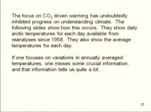</td>
        </tr>
        <tr>
          <td align="left" valign="top" class="texte"><p>Voici la premi&egrave;re d'une s&eacute;rie de diapos du m&ecirc;me type que<span class="textengras"> Lindzen </span>nous projette. Ces diapos montrent de graphes des variations de temp&eacute;rature de l'Arctique, jour apr&egrave;s jour, sur une ann&eacute;e enti&egrave;re, pour des ann&eacute;es diff&eacute;rentes. Ils sont publi&eacute;s par le &quot;Center for Ocean and Ice&quot; de l'Institut de M&eacute;t&eacute;orologie Danois. (DMI). Vous les retrouverez, pour l'&eacute;poque actuelle, dans la page <a href="indicateurs.html#arctemp">indicateurs</a>. Ces diapos sont difficilement lisibles sous ce format, &agrave; cause du facteur de r&eacute;duction. Vous le retrouverez, avec une meilleure nettet&eacute;, en visionnant la vid&eacute;o de la conf&eacute;rence indiqu&eacute;e plus haut. A noter que l'&eacute;chelle verticale est gradu&eacute;e en K (Kelvin. On ne dit pas en degr&eacute;s K.). </p>
            <p>N&eacute;anmoins, elles sont suffisamment nettes pour nous permettre de suivre le raisonnement de Lindzen. Les graphes ci-contre correspondent aux ann&eacute;es 1958, 2004, 2006, 2009. Lindzen explique qu'on peut visionner toute la collection mais que cela conduira aux m&ecirc;mes observations. </p></td>
          <td></td>
        </tr>
        <tr>
          <td height="287" align="left" valign="top"><p>Lindzen<span class="texte"> nous fait remarquer que</span><span class="textengras"> &quot;nous voyons, par exemple que les temp&eacute;ratures en &eacute;t&eacute; ne varient pas&quot;. </span><span class="texte">(d'une ann&eacute;e sur l'autre) <br />
          </span><span class="texte"></span></p>
            <p>NDT :<span class="texte"> Pour v&eacute;rifier, par vous m&ecirc;me, cette constatation de </span><span class="textengras">Richard Lindzen</span><span class="texte">, je vous conseille d'aller sur le<a href="http://ocean.dmi.dk/arctic/meant80n.uk.php" class="textengras"> site du DMI (COI) Danois </a>qui vous donne acc&egrave;s &agrave; toutes les courbes de temp&eacute;rature depuis 1958. Sur la partie gauche de la page, vous trouverez le tableau ci-contre. En cliquant  sur les &eacute;tiquettes des ann&eacute;es, vous pourrez  faire d&eacute;filer tous les graphes des ann&eacute;es que vous choisirez et observer, qu'en effet, la temp&eacute;rature durant l'&eacute;t&eacute; bor&eacute;al (autour du jour 200) est pratiquement constante  durant toute cette p&eacute;riode (1958-2009).<br />
              C'est tr&egrave;s spectaculaire.
</span></p>
            <p class="legende">La courbe moyenne qui figure sur ces graphes est celle de la p&eacute;riode 1958-2002. </p>            </td>
          <td align="left" valign="top"></td>
        </tr>
        <tr>
          <td height="238" align="left" valign="top"><span class="texte">Sur la diapo ci-contre,</span> Lindzen fait remarquer qu' &quot;en hiver, nous observons d'immenses fluctuations de temp&eacute;rature - fr&eacute;quentes et aussi grandes que 20&deg;C. &quot;<br />
            <span class="texte">Il d&eacute;clare &quot;Tous les hivers. Quelquefois, c'est grand, quelquefois c'est petit. Il n'y a pas de comportement syst&eacute;matique.&quot; </span></td>
          <td align="left" valign="top"></td>
        </tr>
        <tr>
          <td height="238" align="left" valign="top"><span class="textengras">Lindzen</span><span class="texte"> montre ensuite les graphes des ann&eacute;es 1960, 1970, 1980, 1990 sur lesquels on peut observer les m&ecirc;mes comportement qu'il a d&eacute;crit dans les diapos pr&eacute;c&eacute;dentes. Il note que &quot;</span><span class="textengras">Si on se focalise sur les petits r&eacute;sidus de ces grands changement, on rate un aspect crucial de la physique</span><span class="texte">.&quot; </span></td>
          <td align="left" valign="top"></td>
        </tr>
        <tr>
          <td height="232" align="left" valign="top"><p>Lindzen conclue :</p>
            <p> &quot;Les diapos pr&eacute;c&eacute;dentes illustrent le fait que durant les &eacute;t&eacute;s, quand il y a la lumi&egrave;re du soleil, les temp&eacute;ratures sont, en grande partie, d&eacute;termin&eacute;es par l'&eacute;quilibre radiatif local. En revanche, pendant la nuit d'hiver, les temp&eacute;ratures seraient encore plus froides qu'elle le sont s'il n'y avait pas le transport de chaleur venant des latitudes plus basses. Ce transport se fait par des convections turbulentes ou des temp&ecirc;tes. <br />
            La compr&eacute;hension des temp&eacute;ratures de l'arctique doit impliquer la compr&eacute;hension de la raison pour laquelle ces temp&ecirc;tes p&eacute;n&egrave;trent en arctique de mani&egrave;re erratique. <span class="Style14">Au vu  du comportement des temp&eacute;ratures estivales, le CO2 n'est pas, de mani&egrave;re &eacute;vidente, un facteur d&eacute;terminant.&quot; </span></p></td>
          <td align="left" valign="top">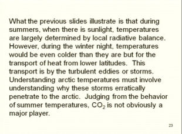</td>
        </tr>
        <tr>
          <td height="238" align="left" valign="top" class="texte"><p><a name="icelindzen" id="icelindzen"></a>Dans la diapo suivante, Lindzen nous lit une description apocalyptique sur les glaces de l'arctique qui n'est rien d'autre que ce qu'on lit et voit continuellement dans les m&eacute;dias :</p>
            <p class="textengras"> &quot;L'Oc&eacute;an Arctique se r&eacute;chauffe, les icebergs se font de plus en plus rares et dans certains endroits les phoques trouvent l'eau trop chaude. Tous les rapports pointent vers un changement radical des conditions climatiques et jusqu'&agrave; des temp&eacute;ratures inconnues jusqu'&agrave; pr&eacute;sent dans la zone arctique. Des exp&eacute;ditions nous rapportent que pratiquement aucune glace n'a &eacute;t&eacute; vue au dessus d'une latitude de 81 degr&eacute;s 29 minutes. D'&eacute;normes masse de glace ont &eacute;t&eacute; remplac&eacute;es par des moraines de terre et des pierres tandis qu'en de nombreux endroits, des glaciers bien connus ont enti&egrave;rement disparu.&quot; </p></td>
          <td align="left" valign="top">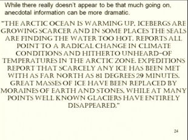</td>
        </tr>
        <tr>
          <td height="238" align="left" valign="top" class="texte">Et <span class="textengras">Lindzen</span> montre la diapo suivante et ajoute que <span class="textengras">&quot;Le probl&egrave;me est que ceci vient du Bureau M&eacute;t&eacute;orologique des Etats Unis</span><span class="titre"> en ... 1922 ! &quot; </span></td>
          <td align="left" valign="top"></td>
        </tr>
      </table>      
      <p class="texte"><span class="textengras">Lindzen</span> ajoute que l'Arctique est notoirement variable. Il aurait pu relater des affirmations analogues prof&eacute;r&eacute;es &agrave; diff&eacute;rentes &eacute;poque. Il pr&eacute;cise que <span class="textengras">le facteur principal qui d&eacute;termine l'englacement de l'artique est le vent qui, venant du sud, est pouss&eacute; dans les d&eacute;troits entourant la mer arctique...</span>.</p>
      <p class="texte">Un peu plus loin, au cours de cette m&ecirc;me conf&eacute;rence, <span class="textengras">Lindzen </span>pr&eacute;sente ses r&eacute;sultats sur les diff&eacute;rences entre les flux SW (short wave) sortants de l'atmosph&egrave;re (dits TOA) donn&eacute;s par les mod&egrave;les et mesur&eacute;s par diff&eacute;rents syst&egrave;mes (ERBE, CERES). Lindzen a tenu compte des remarques de l'article &quot;commentaire&quot; de Trenberth mais cela ne change pas le r&eacute;sultat : Mod&egrave;les et observations divergent...</p>
      <p class="texte"><span class="textengras">Conclusion :</span> Bel exemple de sciences de l'observation. N'est-ce pas ? <br />
        Sans oublier l'humour ! Je ne suis pas certain qu'il amusera tout le monde... </p>
      <p class="texte"><br />  
        <span class="legende">Merci au lecteur averti qui m'a donn&eacute; le lien de cette conf&eacute;rence passionnante. </span></p>      </th>
    </tr>
    <tr bgcolor="#CCFFFF">
      <th height="1558" align="left" valign="top" bordercolor="#FFFFFF" bgcolor="#CCFFFF" class="textengras" scope="col"><p>23 F&eacute;vrier 2010 : <span class="titre"><a name="amoc" id="amoc"></a>Encore une nouvelle rassurante : Contrairement aux pr&eacute;visions apocalyptiques de certains,</span> un article tout r&eacute;cent, sous presse au Geophysical Research Letters (GRL),  indique que<span class="titre"> la Circulation M&eacute;ridionale Atlantique (dont fait partie le Gulf Stream) ne montre aucun signe d'essoufflement.</span> Et ceci, en contradiction avec les pr&eacute;visions des mod&egrave;les... </p>
        <p><br />
        <span class="texte">Cet article &agrave; GRL est sign&eacute; par </span><span class="textengras">Josh Willis</span><span class="texte">, plusieurs fois mentionn&eacute; dans ce site, notamment au sujet du <a href="oceans.html#pielkehansen">contenu thermique des oc&eacute;ans</a> qui, lui non plus, ne varie pas comme le voulaient les mod&egrave;les. Comme le savent les lecteurs de ce site</span><span class="textengras"> Josh Willis</span><span class="texte"> est le grand responsable du</span><a href="http://www.argo.ucsd.edu"> Projet Argo</a>. <span class="texte">Il n'est pas un climato-sceptique. Simplement un scientifique rigoureux. </span><br />
        Argo, <span class="texte">ce sont quelques 3300 bou&eacute;es-balises sophistiqu&eacute;es distribu&eacute;es de par le monde, destin&eacute;es &agrave; l'analyse des donn&eacute;es fondamentales (temp&eacute;rature, salinit&eacute;, d&eacute;rive etc) de la couche sup&eacute;rieure (jusqu'&agrave; -1000 m quand m&ecirc;me) des oc&eacute;ans. Ces engins &quot;intelligents&quot; sont capables de plonger, de d&eacute;river avec les courants, puis de remonter en surface pour transmettre les r&eacute;sultats de leurs observations aux satellites d&eacute;di&eacute;s.</span></p>
        <p><span class="texte">Le titre du r&eacute;cent article de </span><span class="textengras">Josh Willis</span><span class="texte">, dont il est question ici, est le suivant :</span> <span class="texte">&quot;Can In-Situ Floats and Satellite Altimeters Detect Long-Term Changes in Atlantic Ocean Overturning?&quot; Soit : </span><span class="textengras">&quot;</span>  Les bou&eacute;es in-situ et les altim&egrave;tres satellitaires sont-ils capables de d&eacute;tecter les changements &agrave; long terme du Renversement de l'Oc&eacute;an Atlantique ?&quot; </p>
        <p><span class="texte">Comme vous le savez,</span> Josh K. Willis <span class="texte">fait partie du Jet Propulsion Laboratory (JPL) <br />
        CALTECH (Pasadena CA 91109), USA.</span></p>
        <p>Voici le r&eacute;sum&eacute; de cet article. <span class="texte">Il nous dit tout. L'original d'abord, puis une traduction en fran&ccedil;ais, comme d'habitude. </span><br />
          <span class="texte"><br />
          <em>&quot;Global warming has been predicted to slow the Atlantic Meridional Overturning Circulation (AMOC), resulting in significant regional climate impacts across the North Atlantic and beyond. Here, satellite observations of sea surface height (SSH) along with temperature, salinity and velocity from profiling floats are used to estimate changes in the northward-flowing, upper limb of the AMOC at latitudes around 41&deg;N. The 2004 through 2006 mean overturning is found to be 15.5 &plusmn; 2.4 Sv (10</em></span><span class="exposant"><em>6</em></span><span class="texte"><em> m3/s) with somewhat smaller seasonal and interannual variability than at lower latitudes. There is no significant trend in overturning strength between 2002 and 2009. Altimeter data, however, suggest an increase of 2.6 Sv since 1993, consistent with North Atlantic warming during this same period. Despite significant seasonal to interannual fluctuations, these observations demonstrate that substantial slowing of the AMOC did not occur during the past 7 yearsand is unlikely to have occurred in the past 2 decades.&quot;</em></span></p>
        <p class="texte">&quot;Il a &eacute;t&eacute; pr&eacute;dit que le r&eacute;chauffement global ralentirait la Circulation M&eacute;ridionale Atlantique (AMOC), ce qui aurait des impacts significatifs au niveau du climat r&eacute;gional &agrave; travers l'Atlantique Nord et au del&agrave;. Dans ce travail, les observations satellitaires de la hauteur de la surface de la mer (SSH) conjugu&eacute;es avec la temp&eacute;rature, le degr&eacute; de salinit&eacute; et la vitesse obtenue &agrave; partir de bou&eacute;es adapt&eacute;es, sont utilis&eacute;es pour estimer les variations de la branche haute, s'&eacute;coulant vers le Nord, de l'AMOC &agrave; des latitudes autour de 41&deg;N. On trouve que le renversement moyen de 2004 &agrave; 2006 est &eacute;gal &agrave; <em>15.5 &plusmn; 2.4 Sv* (106 m3/s)</em> avec une variabilit&eacute; interannuelle et saisonni&egrave;re un peu plus petite qu'aux plus basses latitudes. Il n'y a pas de tendance significative dans la force du renversement entre 2000 et 2009. Cependant, les donn&eacute;es altim&eacute;triques sugg&egrave;rent une augmentation de 2,6 Sv depuis 1993, ce qui est coh&eacute;rent avec le r&eacute;chauffement de l'Atlantique Nord pendant cette m&ecirc;me p&eacute;riode. Malgr&eacute; des fluctuations saisonni&egrave;res et internannuelles, <span class="textengras">ces observations d&eacute;montrent qu'aucun ralentissement substantiel de l'AOMC s'est produit au cours des 7 derni&egrave;res ann&eacute;es et il est improbable qu'il se soit produit lors des deux derni&egrave;res d&eacute;cennies.</span>&quot; <br />
        Caract&egrave;res engraiss&eacute;s par l'auteur du site. <br />
        <br />
        <span class="textengras">Quelques explications :</span> </p>
        <ul>
          <li><span class="texte">&quot;Le nord de l&rsquo;Atlantique Nord et les mers subpolaires sont les lieux de formation de l&rsquo;eau profonde Nord Atlantique, qui est &agrave; l&rsquo;origine d&rsquo;une cellule m&eacute;ridienne verticale de circulation appel&eacute;e </span><span class="textengras">AMOC</span><span class="texte"> (<em>Atlantic Meridional Overturning Circulation </em>). Le Courant Nord Atlantique, qui constitue la branche sup&eacute;rieure de cette cellule, transporte vers le nord l&rsquo;eau chaude et sal&eacute;e subtropicale qui est progressivement refroidie et convertie en eau interm&eacute;diaire ou profonde dans<a href="oceans.html#gyre"> le gyre</a> et les mers subpolaires.&quot;(extrait d'un sujet de th&egrave;se 2009<a href="http://www.ifremer.fr/ds/animation_scientifique/bourses/doctorales/appel_2009/resumes-2009-sujets-theses/1-Thierry-resume.pdf"> Ifremer</a>).<br />
          Le</span><span class="textengras"> c&eacute;l&egrave;bre Gulf Stream</span> <span class="texte">(aussi appel&eacute;, pour ce qui nous concerne, le courant ou la circulation Nord Atlantique)</span> <span class="texte">qui est cens&eacute; apporter un climat plus doux &agrave; l'ouest du Royaume Uni et de le France (On n'en est pas certain. Ceci est <a href="http://www.ldeo.columbia.edu/res/div/ocp/gs">tr&egrave;s contest&eacute; </a>!.. bien qu'enseign&eacute; dans nos &eacute;coles), constitue une des principales branches de l'AMOC.</span><br />
          <br />
          </li>
          <li><span class="texte">*</span><span class="textengras">Sv </span><span class="texte">est le nom d'une unit&eacute; de d&eacute;bit appel&eacute;e </span><span class="textengras">Sverdup</span><span class="texte"> du nom d'un oc&eacute;anographe Norv&eacute;gien (H.U. Sverdup 1888-1957). Un Sverdup &eacute;quivaut &agrave; 10</span><span class="exposant">6</span><span class="texte"> m3/seconde.<br />
  Ces mesures ont &eacute;t&eacute; effectu&eacute;es par 41&deg;N. C'est &agrave; cette latitude que le Titanic a sombr&eacute;</span>.<br />
          </li>
        </ul>
        <p>Voici, ci-contre, la courbe ma&icirc;tresse de l'article de Josh Willis :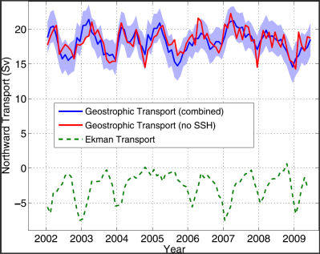</p>
        <p><br />  
          <br />
            <span class="texte">Elle montre diff&eacute;rents aspects du transport (du flux) oc&eacute;anique, mesur&eacute; en Sverdup, vers le Nord, pour une p&eacute;riode allant du d&eacute;but 2002 &agrave; la mi 2009. </span></p>
        <p class="texte">&quot;Geostrophic transport&quot; correspond &agrave; la composante horizontale de la circulation thermohaline. (sans frottement, voir <a href="http://en.wikipedia.org/wiki/Geostrophic_current">explication plus d&eacute;taill&eacute;e ici</a>).</p>
        <p class="texte">En bleu, le Geostrophic Transport  combinant les mesures satellitaires du niveau des mers et les mesures des balises ARGO. En rouge, le GT en ne prenant pas en compte les mesures satellitaires du niveau des mers :SSH (Sea surface height) </p>
        <p class="texte"><span class="textengras">Ekmann Transport</span>  d&eacute;signe le transport provoqu&eacute; par le vent &agrave; proximit&eacute; de la surface. Ces transports vont &agrave; droite de la direction du vent dans l'h&eacute;misph&egrave;re nord et &agrave; gauche dans l'h&eacute;misph&egrave;re sud. (<a href="http://en.wikipedia.org/wiki/Ekman_transport">voir quelques d&eacute;tails ici</a>).</p>
        <p class="texte">Ce qu'il faut retenir de ce graphique c'est qu' aucun changement significatif n'est intervenu dans le transport de l'AMOC, durant ces derni&egrave;res ann&eacute;es, comme le d&eacute;clare Josh Willis. D'autres observations, consign&eacute;es dans l'article indiquent qu'il en est  probablement ainsi depuis au moins deux d&eacute;cennies. Voil&agrave; qui est rassurant ! </p>
        <p class="textengras">Conclusion : <span class="texte">Je vous conseille de lire <a href="http://en.wikipedia.org/wiki/Shutdown_of_thermohaline_circulation">cet article de Wikipedia </a>et notamment la derni&egrave;re partie qui, bien que certainement revue et corrig&eacute;e par le Torquemada de Wikip&eacute;dia, l'ing&eacute;nieur en informatique William Connolley, refl&egrave;te assez bien le flou consid&eacute;rable qui r&egrave;gne  sur cette question. En gros, on ne sait pas vraiment ce qu'il se passerait m&ecirc;me si l'AMOC et le Gulf Stream venaient &agrave; ralentir. Assez prudemment, le dernier rapport du GIEC (l'AR4) n'envisage pas de catastrophe de ce c&ocirc;t&eacute;-l&agrave; pour le 21&egrave;me si&egrave;cle au moins. C'est exceptionnel et m&eacute;rite d'&ecirc;tre not&eacute;. Peut-&ecirc;tre que cette partie du rapport prend ses sources aupr&egrave;s d'articles scientifiques plut&ocirc;t qu'aupr&egrave;s des <a href="bonnetdane.html#malariagate">brochures d'activistes environnementalistes </a>? </span></p>
        <p class="textengras"><span class="texte">Dans ces conditions, on peut se demander pourquoi on a entendu, lu, ou vu dans les m&eacute;dias, dans un grand nombre de forums, dont certains &agrave; pr&eacute;tention scientifique, que les &eacute;pisodes froids voire glaciaires que nous avons connu r&eacute;cemment sur une grande partie de l'h&eacute;misph&egrave;re Nord,</span> &quot;sont certainement dus &agrave; l'arr&ecirc;t du Gulf Stream&quot; ? <span class="texte">Et que s'il fait froid dans les ann&eacute;es &agrave; venir, ce sera certainement &agrave; cause de l'arr&ecirc;t du Gulf Stream, </span><span class="texte"> mais &eacute;videmment, s&ucirc;rement pas parce que l'hypoth&egrave;se CO2 et les mod&egrave;les associ&eacute;s, pr&eacute;sentent quelques d&eacute;fauts... </span><br />
          <span class="texte">Tout cela alors qu'on ne sait m&ecirc;me pas, avec certitude, si le Gulf Stream r&eacute;chauffe vraiment l'Europe de l'Ouest et que les scientifiques nous d&eacute;montrent que tout va bien dans l'atlantique Nord. <br />
        Il est vraiment urgent de tordre d&eacute;finitivement le cou &agrave; ce canard alarmiste ! </span></p>
        <p class="textengras">Quoiqu'il en soit, faites le savoir : L'AMOC et le Gulf Stream ne se sont jamais si bien port&eacute;s. Merci pour eux ... </p>
        <p class="textengras">&nbsp;</p></th>
    </tr>
    <tr bgcolor="#CCFFFF">
      <th height="2486" align="left" valign="top" bordercolor="#FFFFFF" bgcolor="#FFFFCC" class="textengras" scope="col"><p>20 Janvier 2010 : <span class="titre"><a name="alp" id="alp"></a>Fonte des glaciers ? Une &eacute;tude r&eacute;cente montre que la fonte des glaciers Alpins &eacute;tait plus importante dans les ann&eacute;es 1940 que de nos jours, bien que la temp&eacute;rature actuelle soit plus &eacute;lev&eacute;e qu'&agrave; cette &eacute;poque. <br />
      </span><span class="textengras">C'est un d&eacute;menti cinglant apport&eacute; aux affirmations du rapport AR4 2007 du GIEC qui assurait que la fonte des glaciers Alpins (et autres) r&eacute;sultait du r&eacute;chauffement climatique.</span> </p>
        <p class="texte">L'analyse de cet article scientifique r&eacute;cent sur la fonte r&eacute;elle des glaciers alpins depuis 1920 met aussi en lumi&egrave;re l'&quot;amateurisme &quot; (comme dit <a href="bonnetdane.html#malariagate">Paul Reiter</a>) de certaines sections du rapport scientifique du GIEC.<br />
          <span class="textengras">Nous allons  comparer les affirmations et les sources aff&eacute;rentes du rapport AR4 du GIEC au sujet de la fonte des glaciers alpins, &agrave; la r&eacute;alit&eacute; objective. </span>Le r&eacute;sultat est, pour le moins, d&eacute;rangeant pour le GIEC. </p>
        <blockquote>
          <p class="titre">1. Le Rapport Scientifique du GIEC : </p>
        </blockquote>
        <p class="texte">Tout d'abord, voyons ce que le GIEC affirmait dans son dernier rapport scientifique de 2007 au sujet de la &quot;disparition&quot; des glaciers alpins, Andins et Africains, r&eacute;sultants, selon lui, du r&eacute;chauffement climatique :.<br />
        <span class="texte"><a href="http://www.ipcc.ch/publications_and_data/ar4/wg2/en/ch1s1-3-1-1.html">Dans le rapport scientifique AR4, groupe WGII</a>, au paragraphe</span> <span class="textengras">1.3.1.1 Effets observ&eacute;s dus au changement de la cryosph&egrave;re (NDT : r&eacute;sultants du r&eacute;chauffement climatique) </span>, <span class="texte">vous trouverez la Table 1.2 ci-dessous dont j'ai extrait la ligne qui concernait la r&eacute;duction de la glace de montagne. </span></p>
        <p class="texte"><em>Table 1.2. Selected observed effects due to changes in the cryosphere produced by warming. </em>(Fac Simile de l'AR4 : Effets observ&eacute;s dus aux changements de la cryosph&egrave;re r&eacute;sultant du r&eacute;chauffement) </p>
        <table width="833" cellpadding="0" cellspacing="0">
          <tr bgcolor="#333333">
            <th width="203" class="textengras"><span class="Style15">Environmental factor&nbsp;</span></th>
            <th width="146" class="textengras"><span class="Style15">Observed changes&nbsp;</span></th>
            <th width="117" class="textengras"><span class="Style15">Time period&nbsp;</span></th>
            <th width="148" class="textengras"><span class="Style15">Location&nbsp;</span></th>
            <th width="235" class="textengras"><span class="Style15">Selected references&nbsp;</span></th>
          </tr>
          <tr bgcolor="#CCCCCC">
            <td class="texte Style39">Reduction in mountain ice&nbsp;</td>
            <td class="texte Style39">Loss of ice climbs&nbsp;</td>
            <td class="texte Style39">1900-2000&nbsp;</td>
            <td class="texte Style39">Andes, Alps, Africa&nbsp;</td>
            <td class="texte Style39">Schw&ouml;rer, 1997; Bowen, 2002&nbsp;</td>
          </tr>
        </table>
        <p class="texte">Les effets observ&eacute;s pour <span class="textengras">la r&eacute;duction des glaciers des montagnes due au r&eacute;chauffement climatique</span>, sont, d'apr&egrave;s ce rapport; la perte de parcours d'escalades sur parois glac&eacute;es, de 1900 &agrave; 2000, dans les Andes, les Alpes et en Afrique. On s'attendrait &agrave; ce que cette affirmation soit support&eacute;e par un et, si possible, plusieurs articles scientifiques revus par les pairs, pourvus de donn&eacute;es chiffr&eacute;es couvrant la p&eacute;riode 1900-2000 et les zones g&eacute;ographiques pr&eacute;cis&eacute;es (Andes, Alpes, Afrique). De plus et pour soutenir les affirmations ( &quot;produced by warming&quot;) contenues dans cette table, faudrait-il, au moins, que les donn&eacute;es chiffr&eacute;es sur la perte des zones glac&eacute;es soient corr&eacute;l&eacute;es aux variations de temp&eacute;ratures constat&eacute;es dans ces m&ecirc;me zones. C'est ce que l'on pourrait exiger d'une micro-th&egrave;se d'&eacute;tudiant en universit&eacute; mais c'&eacute;tait, sans doute, trop demander au rapport scientifique du GIEC. Le (ou les) r&eacute;dacteurs de ce chapitre du <span class="textengras">AR4 WGII</span> se sont content&eacute;s de deux sources anecdotiques,  d&eacute;pourvues de donn&eacute;es chiffr&eacute;es et de corr&eacute;lations, &eacute;videmment non revues par les pairs et r&eacute;dig&eacute;es (une fois encore) par deux propagandistes du r&eacute;chauffement climatique, pour en tirer des conclusions si hasardeuses qu'elles ont &eacute;t&eacute; d&eacute;menties par les observations rigoureuses effectu&eacute;es sur le terrain. </p>
        <p class="texte">- <span class="textengras">La r&eacute;f&eacute;rence Bowen 2002 </span>est celle-ci &quot;Bowen, N., 2002: &quot; <span class="textengras">Canary in a coalmine&quot;</span>. Climbing News, 208, 90-97, 138-139.&quot;.(ci-contre). <span class="textengras">Climbing News </span>est une revue de kiosque, populaire aupr&egrave;s des adeptes de la grimpette en haute montagne. Le titre &quot;Le Canari dans la mine&quot; est d&eacute;j&agrave; une indication claire de la volont&eacute; de l'auteur d'affirmer que la fonte des parcours d'escalade est un indicateur certain du r&eacute;chauffement climatique global (ce qui est faux comme nous allons le voir ci-dessous). Cet article cite des anecdotes d'alpinistes racontant leurs observations sur le terrain depuis les ann&eacute;es 1970. A noter que Mark <span class="textengras">Bowen</span> est un activiste bien connu des th&egrave;ses du r&eacute;chauffement global. et auteur de deux livres pro-RCA <a href="http://search.barnesandnoble.com/Censoring-Science/Mark-Bowen/e/9780525950141" class="textengras">Censoring science </a> et <a href="http://www.amazon.co.uk/Thin-Ice-John-MacRae-Books/dp/0805064435" class="textengras">Thin Ice</a>. Comme source &quot;scientifique&quot; ind&eacute;pendante, on doit pouvoir trouver beaucoup mieux qu'un article de revue de kiosque r&eacute;dig&eacute; par un auteur visiblement tr&egrave;s engag&eacute;. <br />
        -<span class="textengras">La r&eacute;f&eacute;rence &quot;Schw&ouml;rer 1997&quot;</span> est une simple micro-th&egrave;se d'un &eacute;tudiant en g&eacute;ographie de l'Universit&eacute; de Berne en Suisse pour l'obtention d'un dipl&ocirc;me &eacute;quivalent au Master of Science. Dario-Andri Schw&ouml;rer est actuellement guide professionnel et  activiste du changement climatique. Sa dissertation rapporte, entre autres, les interviews de quelques 80 guides de montagnes de la r&eacute;gion de Bernina dans les Alpes Suisses dont nous allons justement parler ci-dessous. Inutile de pr&eacute;ciser que cette dissertation n'a pas suivi le processus rigoureux exig&eacute; pour les articles des revues scientifiques.</p>
        <p class="texte">En bref, les sources invoqu&eacute;es par le GIEC pour la disparition des glaciers Alpins, Andins et Africains de 1900 &agrave; 2000, ne sont rien d'autre qu'une s&eacute;rie de t&eacute;moignages d'alpinistes  encore vivants, qui, pour la plupart exercent leur art dans les Alpes et qui n'ont certainement pas connu ni les ann&eacute;es 1900, ni m&ecirc;me les ann&eacute;es 1940-45....Enfin, les sources pour l'affirmation du GIEC sur la disparition des glaciers &quot;en Afrique&quot; sont inexistantes. Et pour cause, ils n 'osent plus trop &eacute;voquer le <a href="bonnetdane.html#curry">Kilimandjaro</a>. On les comprend. <br />
        ______________________________________________________________________________________________________________________</p>
        <blockquote>
          <p class="titre">2. L'article scientifique sur la &quot;fonte&quot; des glaciers des Alpes suisses.</p>
        </blockquote>
        <p><span class="texte">Une &eacute;quipe de chercheurs Suisses de Zurich et de Fribourg (M. Huss, M. Funk et A Ohmura) vient de publier un article dans les</span> Geophysical Research Letters <span class="texte">intitul&eacute;</span> <span class="texte">&quot; Strong Alpine glacier melt in the 1940 due to enhanced solar radiation&quot; (ref </span>:<span class="texte"> Vol 36, L23501, doi : 10.1029/2009GL040789, 2009). Soit, en fran&ccedil;ais :</span> <span class="textengras">&quot; Forte fonte des glaciers Alpins dans les ann&eacute;es 1940 due &agrave; une forte irradiance solaire&quot;</span><span class="texte">.. Voici le r&eacute;sum&eacute; en anglais puis en fran&ccedil;ais :</span></p>
      <p class="texte"><em>&quot;A 94-year time series of annual glacier melt at four high elevation sites in the European Alps is used to investigate the effect of global dimming and brightening of solar radiation on glacier mass balance. Snow and ice melt was stronger in the 1940s than in recent years, in spite of significantly higher air temperatures in the present decade. An inner Alpine radiation record shows that in the 1940sglobal shortwave radiation over the summer months was 8% above the long-term average and significantly higher than today, favoring rapid glacier mass loss. Dimming of solar radiation from the 1950s until the 1980s is in line with reduced melt rates and advancing glaciers.&quot;</em></p>
      <p class="texte"><span class="textengras">R&eacute;sum&eacute; en fran&ccedil;ais : </span>&quot; Une s&eacute;rie, sur 94 ans, de mesures annuelles de la fonte des glaciers situ&eacute;s &agrave; quatre hautes altitudes dans les Alpes Europ&eacute;ennes est utilis&eacute;e pour &eacute;tudier les effets de l'obscurcissement et de l'augmentation de l'irradiance solaire sur le bilan massique des glaciers. <span class="textengras">La fonte de la neige et de la glace &eacute;tait plus importante dans les ann&eacute;es 1940 que lors des ann&eacute;es r&eacute;centes, malgr&eacute; une temp&eacute;rature de l'air plus &eacute;lev&eacute;e dans la pr&eacute;sente d&eacute;cennie.</span> Un enregistrement de l'irradiance mesur&eacute;e au sein des Alpes montre que dans les ann&eacute;es 1940, l'irradiance &agrave; courte longueur d'onde (NDT : dans le visible et l'UV par opposition avec l'infrarouge aux grandes longueurs d'onde) &eacute;tait de 8% au dessus de la moyenne &agrave; long terme et, de mani&egrave;re significative, plus &eacute;lev&eacute;e qu'aujourd'hui, favorisant ainsi la perte rapide de la masse des glaciers. L'affaiblissement de l'irradiance solaire depuis les ann&eacute;es 1950 jusqu'aux ann&eacute;es 1980 est en accord avec les taux r&eacute;duits de fonte et l'avance des glaciers.&quot; (Les caract&egrave;res engraiss&eacute;s sont de l'auteur de ce site). </p>
      <p class="texte">&nbsp;</p>
      <p class="texte">&nbsp;</p>
      <p class="texte">Les mesures collationn&eacute;es par ces trois chercheurs suisses concernent les grands glaciers indiqu&eacute;s en grands caract&egrave;res sur cette carte. Les mesure d'irradiance solaire proviennent essentiellement des bases de donn&eacute;es de Davos et d'autres emplacements indiqu&eacute;s par des symboles rouges comme cela est indiqu&eacute; dans la l&eacute;gende figurant dans le coin inf&eacute;rieur droit. Les taches bleues montrent la disposition des glaciers des Alpes Suisses. Les triangles bleus indiquent la position des stations m&eacute;t&eacute;o.</p>
      <p class="texte">&nbsp;</p>
      <p class="texte">&nbsp;</p>
      <p class="texte">Voici, ci-contre, les courbes ma&icirc;tresses de l'article de nos chercheurs Suisses. <br />
        </p>
      <p class="texte">Courbes de la partie haute :<br />
        L'anomalie de fonte (fonte vers le haut) est repr&eacute;sent&eacute;e par des x noirs reli&eacute;s par un trait fin bleu. La fonte moyenn&eacute;e est repr&eacute;sent&eacute;e par le trait noir &eacute;pais. <span class="textengras">Les trois cadres rouges (fonte positive) et bleu (renforcement des glaciers) indiquent que la fonte qui s'est produite dans les ann&eacute;es 1945 &eacute;tait de +17,4% et donc nettement sup&eacute;rieure &agrave; celle (13,4%) qui s'est produite dans les ann&eacute;es 2005 conform&eacute;ment &agrave; ce qui est d&eacute;clar&eacute; dans le r&eacute;sum&eacute;.</span><br />
      La courbe en tiret&eacute;s rouges montre l'&eacute;volution de la temp&eacute;rature durant les p&eacute;riodes pendant lesquelles la temp&eacute;rature &eacute;tait sup&eacute;rieure &agrave; 0&deg;C et donc susceptibles de provoquer la fonte. On observe imm&eacute;diatement que les courbes d'anomalie de fonte (trait noir &eacute;pais) et la courbe en tiret&eacute;s rouges des temp&eacute;ratures ne sont pas parall&egrave;les, d'o&ugrave; la conclusion que ce n'est pas la temp&eacute;rature qui d&eacute;termine la &quot;fonte&quot; des glaciers alpins tout comme d'ailleurs celle du glacier du <a href="bonnetdane.html#curry">Kilimandjaro</a>. </p>
      <p class="texte">La courbe en rouge du bas repr&eacute;sente l'anomalie d'irradiation solaire enregistr&eacute;e &agrave; la station de Davos pendant les mois d'&eacute;t&eacute; (donc pendant les mois de fonte). Cette mesure tient &eacute;videmment compte de l'ennuagement pr&eacute;sent au dessus de la r&eacute;gion. Comme on le voit, l'insolation, au dessus des Alpes Suisse, &eacute;tait sup&eacute;rieure pendant les ann&eacute;es 1945 &agrave; ce qu'elle est maintenant.<span class="textengras"> D'o&ugrave; la conclusion des auteurs que le soleil est responsable de la fonte des glaciers et non pas la temp&eacute;rature ambiante. </span>Les auteurs attribuent le fait que l'insolation ait &eacute;t&eacute; plus importante dans les ann&eacute;es 40, &agrave; une plus faible teneur de l'atmosph&egrave;re en a&eacute;rosols, sans que l'on puisse en &ecirc;tre certain. Les premi&egrave;res mesures satellitaires ont &eacute;t&eacute; entreprises dans les ann&eacute;es 80. </p>
      <p class="texte">La conclusion des trois auteurs de cet article contient une condamnation, &agrave; peine voil&eacute;e, des affirmations du rapport du GIEC. La voici, en anglais puis en fran&ccedil;ais : </p>
      <p class="texte"><em>&quot;Our data sets provide evidence that the extraordinary melt rates in the 1940s can be attributed to enhanced solar radiation in summertime. Models for past and future glacier changes should take into account the effect of decadal radiation variations as they significantly alter the relationship between glacier melt and air temperature.</em>&quot;</p>
      <p class="texte">&quot;Les donn&eacute;es issues de nos observations apportent des &eacute;l&eacute;ments de preuve que les taux de fontes extraordinaires des ann&eacute;es 1940 peuvent &ecirc;tre attribu&eacute;s &agrave; une irradiance solaire plus &eacute;lev&eacute;e pendant les mois d'&eacute;t&eacute;. Les mod&egrave;les pour le pass&eacute; et le futur de l'&eacute;volution des glaciers devraient prendre en compte l'effet des variations d'insolations d&eacute;cennales parce qu'elles alt&egrave;rent, de mani&egrave;re significative, la relation entre la fonte des glaciers et la temp&eacute;rature de l'air.&quot; </p>
      <p class="texte"><span class="textengras">En bref et en r&eacute;sum&eacute; :</span> Sans doute &agrave; cause de leur altitude &eacute;lev&eacute;e, les glaces et les neiges &eacute;ternelles des glaciers ne subissent pas, de mani&egrave;re triviale, les effets du r&eacute;chauffement climatique comme cela a souvent &eacute;t&eacute; imprudemment affirm&eacute;. Dans la plupart des situations, aussi bien au <a href="bonnetdane.html#curry" class="textengras">Kilimandjaro</a> que dans l'<a href="bonnetdane.html#himalaya" class="textengras">Himalaya </a>(<a href="http://moef.nic.in/downloads/public-information/MoEF Discussion Paper _him.pdf">rapport du glaciologue  Vijay Kumar Raina </a>qui a observ&eacute; que les glaciers Himalayens &eacute;voluent de mani&egrave;re d&eacute;sordonn&eacute;e) comme dans les Alpes Suisses, la quantit&eacute; de glace et de neige support&eacute;e par les glaciers d&eacute;pend surtout de la pluviom&eacute;trie (de neige) et de l'ensoleillement et non pas de la temp&eacute;rature ambiante &agrave; basse altitude. Ainsi, non seulement les affirmations du rapport scientifique du GIEC &eacute;taient-elles infond&eacute;es du point de vue scientifique mais elles ont &eacute;t&eacute; d&eacute;menties par les observations pr&eacute;cises effectu&eacute;es sur le terrain. </p>
      <p class="texte"><span class="textengras">D'autres commentaires &agrave; propos de l'article sur la fonte des glaciers alpins </span>: <a href="http://pielkeclimatesci.wordpress.com/2009/12/16/comments-on-a-new-paper-strong-alpine-glacier-melt-in-the-1940s-due-to-enhanced-solar-radiation-by-huss-et-al-2009">Prof. Roger Pielke Sr</a>.<br />  
          <br />
      </p>      </th>
    </tr>
    <tr bgcolor="#CCFFFF">
      <th height="4207" align="left" valign="top" bordercolor="#FFFFFF" bgcolor="#CCFFFF" class="textengras" scope="col"><p>23 D&eacute;cembre 2009 :<span class="titre"> <a name="mino" id="mino"></a>Contrairement &agrave; ce qui est tr&egrave;s souvent affirm&eacute;, la  hausse mod&eacute;r&eacute;e des temp&eacute;ratures du XX&egrave;me si&egrave;cle ( +0,7&deg;C en cent ans) n'est ni particuli&egrave;rement rapide  ni particuli&egrave;rement intense par rapport au pass&eacute;, m&ecirc;me r&eacute;cent. </span></p>
        <p><span class="texte">On nous dit et on nous r&eacute;p&egrave;te sans cesse que &quot;la vitesse du changement climatique  est sans pr&eacute;c&eacute;dent... depuis les temps les plus recul&eacute;s&quot;. <br />
        De fait, c'est l'argument &quot;choc&quot; des supporters du GIEC. L'argument ultime qui est cens&eacute; remporter l'adh&eacute;sion.</span>          <span class="texte">Beaucoup l'admettent sans aller chercher plus loin.<br />
        Les politiques et les m&eacute;dias qui ne craignent pas d'en rajouter, nous parlent sans cesse de </span><span class="textengras">&quot;d&eacute;r&egrave;glement climatique&quot;</span><span class="texte">, voire de </span><span class="textengras">&quot;crise climatique&quot;</span><span class="texte">, ou encore, plus fort, de </span><span class="textengras">catastrophe climatique </span><span class="texte">&quot; et de </span><span class="textengras">&quot;chaos climatique&quot;</span><span class="texte">... </span></p>
        <p>Mais ces expressions alarmistes sont-elles fond&eacute;es ? Vivons nous r&eacute;ellement dans une p&eacute;riode de &quot;catastrophe climatique&quot; ? <br />
          Voyons cela &agrave; la lumi&egrave;re des donn&eacute;es r&eacute;cemment observ&eacute;es et publi&eacute;es... </p>
        <p><span class="texte">Il n'est nul besoin d'aller chercher bien loin pour trouver des points de comparaison avec la p&eacute;riode actuelle. </span><span class="textengras">L'optimum m&eacute;di&eacute;val (l'an mil) et la p&eacute;riode Mino&eacute;enne ((1200 avant JC) </span><span class="texte">ont  fait aussi bien, et m&ecirc;me mieux, que le XX&egrave;me si&egrave;cle, comme le montrent les mesures isotopiques tir&eacute;es des forages glaciaires pr&eacute;lev&eacute;s au sommet du Groenland et publi&eacute;es par la NOAA en 2000. </span><br />
          <span class="texte"><br />
          Les donn&eacute;es de la NOAA datent de 1997. Elles ont &eacute;t&eacute; mises en ligne en 2000, mais &eacute;taient, semble-t-il, rest&eacute;es dans les cartons...</span><br />
          <span class="textengras">Le site adhoc de la NOAA (National Oceanographic and Atmospheric Administration U.S.) est ici <a href="http://www.ncdc.noaa.gov/paleo/metadata/noaa-icecore-2475.html" class="Style22">&quot;GISP2 - Temperature Reconstruction and Accumulation Data&quot;</a></span><a href="ftp://ftp.ncdc.noaa.gov/pub/data/paleo/icecore/greenland/summit/gisp2/isotopes/gisp2_temp_accum_alley2000.txt" class="Style22"><span class="Style37"><br />
        </span><span class="texte">Vous trouverez ici <span class="Style22">les r&eacute;sultats des mesures</span> (liss&eacute;es) des carottages du Groenland</span></a><span class="texte">, en format txt. Vous pourrez tracer, vous-m&ecirc;me et sans difficult&eacute;, les courbes que je donne ci-dessous, en utilisant n'importe quel tableur comme Excell ou (mieux) Origin. Ces donn&eacute;es proviennent de forages r&eacute;alis&eacute;es sur le sommet du Groenland o&ugrave; la couche de glace atteint 3000m. </span></p>
        <p class="texte">Vous remarquerez que les donn&eacute;es des abscisses sont en milliers d'ann&eacute;e<span class="textengras"> BP</span> (before present; avant le pr&eacute;sent. Le pr&eacute;sent &eacute;tant 1997) et que<span class="textengras"> le relev&eacute; le plus r&eacute;cent</span> est indic&eacute; 0,0951409. Ceci signifie qu'il s'agit de l'ann&eacute;e 1997-95,1 soit <span class="textengras">1902</span> environ. <br />
        En effet, on estime qu'il faut environ 80 ans pour que les bulles d'air pi&egrave;g&eacute;es dans la neige puis dans la glace qui forme le substrat du glacier, se referment. Il faudra donc attendre jusqu'&agrave; l'ann&eacute;e 2090 pour pouvoir utiliser les forages glaciaires qui correspondent &agrave; l'&eacute;poque actuelle. <br />
        A noter que ces donn&eacute;es remontent jusqu'&agrave; -50.000 ans, ce qui est rendu possible par l'&eacute;norme &eacute;paisseur de la couche de glace pr&eacute;sente au centre du Groenland. </p>
        <p class="texte">Vous trouverez une collection compl&egrave;te de ces courbes pour les p&eacute;riodes <span class="textengras">1400-&gt;1900, 800-&gt;1900, -3000-&gt;1900, -9000-&gt;1900, -11000-&gt;1900 et -50000-&gt;1900 <a href="http://www.foresight.org/nanodot?p=3553">sur ce site.</a></span></p>
        <p class="texte"></p>
        <p class="texte"><span class="textengras">L'Optimum M&eacute;di&eacute;val </span>(MWP en anglais : Medieval Warm Period) est parfaitement visible sur la courbe de la temp&eacute;rature 800-&gt;1900. On voit que le r&eacute;chauffement a commenc&eacute; en l'an 800 et qu'il a atteint son maximum vers 1045. La chute de temp&eacute;rature qui suivi a dur&eacute; jusque vers la moiti&eacute; du XIII&egrave;me si&egrave;cle comme cela est bien document&eacute; dans les r&eacute;cits historiques. Comme on le voit sur ce graphique,<span class="textengras"> la vitesse de mont&eacute;e de la temp&eacute;rature lors de l'Optimum M&eacute;di&eacute;val a &eacute;t&eacute; d'environ +0,7&deg;C/100 ans (droite en rouge). La hausse &eacute;tait d'environ 1,8&deg;C. Elle s'est poursuivie pendant un peu plus de 250 ans.... </span>Au moins, au Groenland. </p>
        <p class="texte">&nbsp;</p>
        <p class="texte"></p>
        <p class="texte">A noter que le r&eacute;chauffement de l' <span class="textengras">Optimum M&eacute;di&eacute;val </span>est loin d'&ecirc;tre un cas exceptionnel  dans l'histoire r&eacute;cente (et lointaine) de notre plan&egrave;te comme le montrent les r&eacute;sultats des forages glaciaires qui couvrent la p&eacute;riode -3000-&gt;1900 tir&eacute;s de la m&ecirc;me source. On retrouve sur ce graphe les p&eacute;riodes document&eacute;es sur le plan historique tels que le <span class="textengras">p&eacute;riode dite romaine</span> et la <span class="textengras">p&eacute;riode Mino&eacute;enne, particuli&egrave;rement chaude, qui a connu une hausse de temp&eacute;rature de 1,5&deg;C/100 ans pendant 70 ans</span>. A noter que ces &eacute;pisodes chauds ont tout trois co&iuml;ncid&eacute; avec des p&eacute;riodes riches de l'histoire de l'humanit&eacute;. Par exemple, les grandes cath&eacute;drales furent construites autour de l'an mil. </p>
        <p class="texte"></p>
        <p class="texte">Et si on remonte dans le temps jusqu'en 8000 avant J-C, toujours avec la m&ecirc;me base de donn&eacute;es de la NOAA, on observe que les hausses et le baisses rapides de 2&deg;C ou plus, ont &eacute;t&eacute; tr&egrave;s fr&eacute;quentes au cours des derniers mill&eacute;naires. <br />
          <span class="textengras">On voit que  le climat a toujours beaucoup chang&eacute; au cours des &acirc;ges. Ce qui fait de l'expression utilis&eacute;e &agrave; pr&eacute;sent :&quot;Changement Climatique&quot; en lieu et place de &quot;R&eacute;chauffement Climatique&quot;, n'est rien d'autre qu'un pur truisme, vide de sens... </span></p>
        <p class="texte">&nbsp;</p>
        <p class="texte"><span class="textengras">Addendum du 27 d&eacute;cembre : Un lecteur attentif</span> (merci Sam) a effectu&eacute; une analyse plus d&eacute;taill&eacute;e des dix mille derni&egrave;res ann&eacute;es (l'holoc&egrave;ne) de la base de donn&eacute;es cit&eacute;e ci-dessus, &agrave; l'aide d'un tableur. Voici, ci-dessous, son graphique qui est orient&eacute; dans le sens inverse des pr&eacute;c&eacute;dents (comme le font les pal&eacute;ontologues). Les ann&eacute;es les plus r&eacute;centes sont donc &agrave; gauche. Sam nous fait remarquer que les pics de temp&eacute;rature se produisent, environ, tous les mille ans). Ce qui, si cette p&eacute;riodicit&eacute; observ&eacute;e durant les quelques 8000 ans pass&eacute;s, s'av&eacute;rait exacte, impliquerait que la temp&eacute;rature actuelle devrait culminer vers l'an 2000-2020 (<a href="froid.html#bilan">comme l'on trouv&eacute; d'autres chercheurs &agrave; partir de diff&eacute;rentes analyses</a>). Comme vous le constatez, les vitesses de hausse de temp&eacute;ratures sur toute cette p&eacute;riode sont comprises entre 0,4&deg;C /100 ans et 1,4&deg;C /100 ans. Il est &eacute;vident que les r&eacute;sultats indiqu&eacute;s sur le graphe suivant r&eacute;sultent de calculs et doivent &ecirc;tre affect&eacute;s d'une marge d'erreur de l'ordre de l'ordre de 10%, au moins. <br /> 
        De plus, il faut se souvenir que ces donn&eacute;es ont &eacute;t&eacute; &quot;liss&eacute;es&quot; ce qui &eacute;quivaut &agrave; l'application d'un filtre passe-bas sur les donn&eacute;es brutes. Il est donc fort possible que les vitesses de hausse de temp&eacute;rature r&eacute;elles aient &eacute;t&eacute; sup&eacute;rieures &agrave; celles qui sont observ&eacute;es dans cette base de donn&eacute;es de la NOAA. </p>
        <p class="texte"></p>
        <p class="texte">&nbsp;</p>
        <p class="texte">&nbsp;</p>
        <p class="texte">&nbsp;</p>
        <p class="texte">&nbsp;</p>
        <p class="texte">&nbsp;</p>
        <p class="texte">&nbsp;</p>
        <p class="texte">&nbsp;</p>
        <p class="texte">&nbsp;</p>
        <p class="texte">&nbsp;</p>
        <p class="texte">&nbsp;</p>
        <p class="texte">&nbsp;</p>
        <p class="texte">&nbsp;</p>
        <p class="texte">&nbsp;</p>
        <p class="texte">&nbsp;</p>
        <p class="texte"></p>
        <p class="texte">&nbsp;</p>
        <p class="texte">&nbsp;</p>
        <p class="texte">Comme vous le savez si vous avez parcouru le site<span class="textengras"><a href="rechauffement.html"> Pensee-unique.fr</a></span>, la courbe qui repr&eacute;sente l'&eacute;volution des temp&eacute;ratures du globe (la fameuse <span class="textengras">&quot;crosse de hockey&quot;</span> de Michael Mann et al qui couvre la p&eacute;riode de -1000 &agrave; nos jours) et qui figure dans tous les rapports du<span class="textengras"> GIEC </span>depuis 1998, <span class="textengras">a compl&egrave;tement effac&eacute; l'Optimum M&eacute;di&eacute;val ce qui justifie l'affirmation des supporters du GIEC que &quot;le r&eacute;chauffement que nous connaissons est sans pr&eacute;c&eacute;dent&quot;. </span> Cette reconstruction en crosse de hockey a fait l'objet de tr&egrave;s nombreuses controverses <a href="rechauffement.html#temperature">dont j'ai donn&eacute; un tr&egrave;s bref aper&ccedil;u ici. </a>La pol&eacute;mique, &agrave; ce sujet, a rebondi r&eacute;cemment lors de l'affaire des <a href="bonnetdane.html#cru">courriels du CRU de l'Universit&eacute; d'East Anglia.<br />
          </a>Voici, ci-contre, la reconstruction du climat en &quot;<span class="textengras">crosse de hockey</span>&quot; telle qu'elle figure, de mani&egrave;re plus ou moins visible, dans les rapports successifs du <span class="textengras">GIEC </span>depuis 1998. <br />
          Les auteurs de cette reconstruction (dendrochronologique) justifient l'absence de l'optimum m&eacute;di&eacute;val en affirmant que <span class="textengras">leur courbe est globale</span> tandis que l'optimum m&eacute;di&eacute;val serait localis&eacute; &agrave; l'h&eacute;misph&egrave;re Nord.<br />
          <span class="textengras">Cette derni&egrave;re affirmation est cependant mise en d&eacute;faut</span> par une tr&egrave;s longue s&eacute;rie d'&eacute;tudes scientifiques qui <a href="http://www.co2science.org/data/mwp/mwpp.php">ont retrouv&eacute; les traces de l'Optimum M&eacute;di&eacute;val sur l'ensemble de la plan&egrave;te</a> et  pas seulement dans l'h&eacute;misph&egrave;re Nord. </p>
        <p class="texte">Quoiqu'il en soit, il est important, pour le but que nous poursuivons ici, qui vise &agrave; comparer la vitesse de mont&eacute;e des temp&eacute;ratures lors de l'<span class="textengras">Optimum M&eacute;di&eacute;val</span> <span class="textengras">et de la p&eacute;riode Mino&eacute;enne </span>&agrave; celle que nous avons connue au XX&egrave;me si&egrave;cle, de s'affranchir de toute critique sur le caract&egrave;re localis&eacute; ou non de la p&eacute;riode chaude de l'Optimum M&eacute;di&eacute;val. </p>
        <p class="texte">Autrement dit, nous ne comparerons pas la vitesse de mont&eacute;e de la temp&eacute;rature lors des temps anciens au Groenland avec la vitesse de mont&eacute;e de la temp&eacute;rature du<span class="textengras"> globe </span>du XX&egrave;me si&egrave;cle qui, comme vous le savez, est  d'environ <span class="textengras">0,7&deg;C/100 ans. </span><br />
        Nous comparerons la vitesse de mont&eacute;e (et l'amplitude) des variations de temp&eacute;rature lors de l'Optimum M&eacute;di&eacute;val et de la p&eacute;riode Mino&eacute;enne avec celle de la p&eacute;riode r&eacute;cente, <span class="textengras">au m&ecirc;me endroit, c'est &agrave; dire au Groenland m&ecirc;me o&ugrave; ont &eacute;t&eacute; pr&eacute;lev&eacute;s les forages glaciaires.</span> Les stations de mesure se trouvent &agrave; basse altitude comparativement aux sommets o&ugrave; ont &eacute;t&eacute; pr&eacute;l&eacute;v&eacute;s les carottages et o&ugrave; les temp&eacute;ratures sont &eacute;videmment plus basses. </p>
        <p class="texte"><br />
        Pour cela et dans un premier temps, nous utiliserons les donn&eacute;es r&eacute;ellement mesur&eacute;es, moyenn&eacute;es et rassembl&eacute;es dans la  table ci-contre,  tir&eacute;e d'un article paru dans le JGR du mois de Juin 2006. Voici sa r&eacute;f&eacute;rence : </p>
        <p class="texte"><span class="textengras">Vinther, B.M., K.K. Andersen, P.D. Jones, K.R. Briffa, and J. Cappelen. 2006. Extending Greenland temperature records into the late eighteenth century. <em>Journal of Geophysical Research</em>, <strong>111</strong></span>, 10.1029/2005JD006810. (cette table se trouve dans le document pdf).</p>
        <p class="texte">&quot;Annual&quot; signifie la moyenne annuelle des temp&eacute;ratures des 13 stations de mesure de temp&eacute;rature du Groenland.</p>
        <p class="texte">DJF : D&eacute;cembre, Janvier, F&eacute;vrier.<br />
          MAM : Mars, Avril, Mai<br />
          JJA : Juin, Juillet, Ao&ucirc;t<br />
      SON : Septembre, Octobre, Novembre. </p>
        <p class="texte">Sur la p&eacute;riode de 100 ans la plus r&eacute;cente, nous trouvons que la temp&eacute;rature moyenne (sur un an ) a vari&eacute; de -2,9&deg;C &agrave; -2,1&deg;C<span class="textengras"> soit un r&eacute;chauffement de +0,8&deg;C/100 ans pour les temp&eacute;ratures terrestres du</span><span class="textengras"> Groenland.</span> Notons, en passant que la temp&eacute;rature a  <span class="textengras">nettement plus augment&eacute; pendant les deux d&eacute;cennies 1931-1940 et 1941-1950 que pendant les trois derni&egrave;res d&eacute;cennies (1971-2000)</span>.  </p>
        <p class="texte"> Ceci se retrouve dans un article tout r&eacute;cent qui vient d'&ecirc;tre publi&eacute; au Journal of Climate de l'AMS et dont la r&eacute;f&eacute;rence est :<br />
          <span class="textengras">Box, J.E., L. Yang, D.H. Bromwich, L.-S. Bai. 2009. &quot;Greenland ice sheet surface air temperature variability: 1840&ndash;2007&quot;.<br />
          <em>Journal of Climate</em>, <strong>22</strong>, 4029-4049</span> (<a href="http://ams.allenpress.com/perlserv?request=get-abstract&amp;doi=10.1175%2F2009JCLI2816.1">r&eacute;sum&eacute; disponible ici</a>) </p>
        <p class="texte">Le r&eacute;sum&eacute; de cet article pr&eacute;cise d'ailleurs que <span class="textengras">&quot;La tendance au r&eacute;chauffement de 1919 &agrave; 1932 de la totalit&eacute; de la surface glac&eacute;e a &eacute;t&eacute; de 33% plus grande que celle du r&eacute;chauffement de la p&eacute;riode 1994-2007 &quot; </span></p>
        <p class="texte">&nbsp;</p>
        <p class="texte">A noter que le graphe ci-contre, extrait de ce dernier article, a &eacute;t&eacute; obtenu en combinant les donn&eacute;es mesur&eacute;es par les stations terrestres et celles d'une mod&eacute;lisation informatique. La courbe en noir &eacute;pais indique la variation de temp&eacute;rature de 1835 &agrave; 2007.<br />
        On observe bien, comme dans la table pr&eacute;c&eacute;dente que vers 1930 il a fait plus chaud  et que la mont&eacute;e a &eacute;t&eacute; plus rapide que pendant la p&eacute;riode r&eacute;cente, <span class="textengras"> ce qui jette un doute s&eacute;rieux sur l'importance r&eacute;elle de la concentration du CO2 qui est nettement plus &eacute;lev&eacute;e de nos jours (385 ppm) qu'elle l'&eacute;tait en 1932 (306 ppm). </span></p>
        <p class="texte">Quoiqu'il en soit, selon cette &eacute;tude, pendant la p&eacute;riode des cent ann&eacute;es 1901-2000 qui nous sert de base pour cette comparaison le r&eacute;chauffement du Groenland a &eacute;t&eacute; de :<br />
          0&deg;C-(-0,9&deg;C) = <span class="textengras">+0,9&deg;C/100 ans </span>qui, compte tenu des erreurs inh&eacute;rentes &agrave; ce type de mesures est statistiquement indistinguable du +0,7&deg;C trouv&eacute; dans l'article pr&eacute;c&eacute;dent. A noter que si nous avions trac&eacute; une r&eacute;gression lin&eacute;aire au sein de la courbe annuelle, nous aurions obtenu sensiblement le m&ecirc;me r&eacute;sultat. <br />
        </p>
        <p class="texte"><span class="titre">Rappel  : </span><a href="oceans.html#AMO1" class="textengras">Petr Chylek et ses collaborateurs </a>ont &eacute;tudi&eacute; les variations de temp&eacute;rature de l'ensemble de l'Arctique (et non pas seulement du Groenland) de 1910 &agrave; 2005, ainsi <a href="oceans.html#AMO1">que je vous l'avais rapport&eacute; ci-dessous. </a></p>
      <p class="texte">Je reproduis ci-contre la corr&eacute;lation frappante qu'il a trouv&eacute; entre la temp&eacute;rature de l'arctique (en traits rouges) et l'indice de l'<span class="textengras">AMO</span> (Oscillation Atlantique Multid&eacute;cennale) de la NOAA (en bleu) et de Parker (en noir). Les oscillations AMO sont d'origine parfaitement naturelles. Bien entendu. </p>
      <p class="texte">Il en d&eacute;duit que (selon le propre r&eacute;sum&eacute; de Chylek ) : &quot;  les variations de temp&eacute;rature de l'Arctique sont &eacute;troitement corr&eacute;l&eacute;es avec l'AMO (l'Oscillation Atlantique Multid&eacute;cennale) sugg&eacute;rant que la circulation thermohaline de l'Oc&eacute;an Atlantique est reli&eacute;e &agrave; la variabilit&eacute; de la temp&eacute;rature Arctique suivant une &eacute;chelle multid&eacute;cennale.&quot;<br />
        Conform&eacute;ment d'ailleurs &agrave; ce que plusieurs chercheurs ont sugg&eacute;r&eacute; lors de la <a href="paroles.html#wcc3">r&eacute;cente r&eacute;union du Congr&egrave;s WCC3</a>. </p>
      <p class="texte"> D'ailleurs on retrouve la trace de l'Oscillation Multid&eacute;cennale Atlantique dans les mesures de temp&eacute;ratures du Groenland ( Box et al) mentionn&eacute;es ci-dessus. Tout cela est parfaitement coh&eacute;rent. </p>
      <p class="titre">R&eacute;sum&eacute;: <span class="texte">Nous allons r&eacute;sumer le r&eacute;sultat de ces comparaisons entre </span><span class="textengras">les vitesses de hausse de la temp&eacute;rature observ&eacute;e au Groenland,</span><span class="texte"> de nos jours avec celles observ&eacute;es lors de l'Optimum M&eacute;di&eacute;val et lors de la p&eacute;riode Mino&eacute;enne au m&ecirc;me endroit, sous la forme de deux petits tableaux :</span></p>
      <p class="titre"></p>
      <table width="339" border="2">
        <tr>
          <td width="179" bgcolor="#FFFFCC" class="textengras">Epoques anciennes </td>
          <td width="142" align="left" valign="top" bgcolor="#FFFFCC"><p>Vitesse de mont&eacute;e des<br /> 
            Temp&eacute;ratures <br />
          </p>            </td>
        </tr>
        <tr>
          <td class="texte">P&eacute;riode Optimum M&eacute;di&eacute;val (an mil) </td>
          <td>0,7 &deg;C/ 100 ans</td>
        </tr>
        <tr>
          <td bgcolor="#CCFFFF" class="texte">P&eacute;riode Mino&eacute;enne (-1200 ) </td>
          <td>1,4 &deg;C/ 100 ans</td>
        </tr>
      </table>
      <br />
      <table width="340" border="2">
        <tr>
          <td width="181" align="left" valign="top" bgcolor="#FFFFCC" class="textengras">Epoque 1901-2000 </td>
          <td width="141" align="left" valign="top">&nbsp;</td>
        </tr>
        <tr>
          <td class="texte">D'apr&egrave;s Vinther et al </td>
          <td>0,8 &deg;C/ 100 ans</td>
        </tr>
        <tr>
          <td class="texte">D'apr&egrave;s Box et al </td>
          <td>0,9 &deg;C/ 100 ans</td>
        </tr>
        <tr>
          <td bgcolor="#FFFFCC" class="textengras">Temp&eacute;rature globale 1901-2000 </td>
          <td bgcolor="#FFFFCC">0,7&deg;C/ 100 ans </td>
        </tr>
      </table>
      <p><span class="titre">Conclusion</span> : <br />
        <span class="textengras">Objectivement et au vu de ces comparaisons des mesures effectu&eacute;es sur un m&ecirc;me site (au Groenland) &agrave; diff&eacute;rentes &eacute;poques, on ne peut certainement pas affirmer, comme beaucoup le font, que la vitesse de la hausse de la temp&eacute;rature du XX&egrave;me si&egrave;cle est exceptionnelle et &quot;sans comparaison&quot; avec ce que nous avons connu dans le pass&eacute;</span><span class="texte"> ... pendant lequel le taux de CO2 &eacute;taient notoirement inf&eacute;rieur &agrave; celui que nous connaissons actuellement.. Au contraire, les vitesses de hausse de la temp&eacute;rature sont tout a fait comparables sinon identiques. A noter &eacute;galement que la vitesse de hausse de la temp&eacute;rature </span><span class="textengras">globale </span><span class="texte">qui est de 0,7&deg;C/ 100 ans, est tr&egrave;s proche ou &eacute;gale &agrave; celle qui a &eacute;t&eacute; observ&eacute;e au Groenland aussi bien lors du si&egrave;cle &eacute;coul&eacute; que pendant l'an mil. Ces derni&egrave;res sont bien inf&eacute;rieures &agrave; celle qui a eu lieu pendant 94 ans lors de l'&eacute;poque Mino&eacute;enne et sans doute &agrave; d'autres &eacute;poques ant&eacute;rieures. </span></p>
      <p>Anthropoc&egrave;ne ? </p>
      <p><span class="texte">Certains ont d&eacute;cid&eacute; de baptiser la p&eacute;riode dans laquelle nous vivons actuellement du nom d</span><span class="textengras">'Antropoc&egrave;ne</span> <span class="texte">pour la distinguer de l</span><span class="textengras">'Holoc&egrave;ne</span><span class="texte"> qui l'aurait pr&eacute;c&eacute;d&eacute; et qui se prolonge depuis les quelques 10000 derni&egrave;res ann&eacute;es...au pr&eacute;texte que l'action humaine nous aurait fait changer d'&eacute;poque g&eacute;ologique. </span><br />  
          <span class="texte">Du  point de vue des variations de temp&eacute;ratures observ&eacute;es depuis 10000 ans jusqu'&agrave; nos jours, on ne voit pas en quoi l'&eacute;poque actuelle se distinguerait de l'holoc&egrave;ne dont, en r&eacute;alit&eacute;, elle fait partie int&eacute;grante. </span></p>
      <p><span class="texte">Joyeux No&euml;l et Meilleurs Voeux &agrave; tous (toutes)... <br />
      </span></p></th>
    </tr>
    <tr bgcolor="#CCFFFF">
      <th height="2356" align="left" valign="top" bordercolor="#FFFFFF" bgcolor="#FFFFCC" class="textengras" scope="col"><p align="left" class="titre"><span class="textengras"><strong>12 Novembre 2009 :<strong><a name="gyre" id="gyre"></a></strong> </strong></span><strong>Pourquoi la mer monte ? </strong><strong class="textengras">Une nouvelle explication plus rassurante et qui bouleverse les id&eacute;es re&ccedil;ues. </strong></p>
        <p align="left" class="texte">Un lecteur attentif,  sp&eacute;cialiste de la mesure du niveau des mers, a attir&eacute; mon attention sur <a href="http://www.ocean-sci-discuss.net/6/2327/2009/osd-6-2327-2009-discussion.html">un article tr&egrave;s r&eacute;cent</a>, paru dans la revue en ligne <a href="http://www.ocean-sci-discuss.net/6/2327/2009/osd-6-2327-2009-discussion.html"><span class="Style22">Ocean Science de l'European Geosciences Union</span>.</a> </p>
        <p align="left" class="texte"><span class="textengras">The gyre-scale circulation of the North Atlantic and sea level at Brest</span> (Circulation de l'Atlantique Nord &agrave; l'&eacute;chelle du gyre et niveau de la mer &agrave; Brest) <br />
            <br />
            <span class="textengras">P.&nbsp;L.&nbsp;Woodworth</span><span class="exposant">1</span>, <span class="textengras">N.&nbsp;Pouvreau</span><span class="exposant">2</span>, and<span class="textengras"> G.&nbsp;W&ouml;ppelmann</span><span class="exposant">3</span><br />
  <span class="exposant">1</span>Proudman Oceanographic Laboratory, Joseph Proudman Building, 6 Brownlow Street, Liverpool L3 5DA, UK<br />
  <span class="exposant">2</span>UMR 5566 LEGOS-CNES, 14 av. Edouard Belin, 31400 Toulouse, France<br />
  <span class="exposant">3</span>UMR 6250 LIENSs, Universit&eacute; de La Rochelle &ndash; CNRS, 2 rue Olympe de Gouges, 17000 La Rochelle,  France</p>
        <p align="left" class="texte">Cet article confirme et renforce une explication tr&egrave;s int&eacute;ressante et novatrice de la hausse du niveau des mers, propos&eacute;e il y a peu d'ann&eacute;es. Le lecteur   a r&eacute;dig&eacute; un texte sur ce sujet &agrave; l'intention de <span class="PenseeUnique">Pensee-unique.fr</span> que je me fais un plaisir de publier. Le voici, remis dans la forme des billets de ce site : </p>
        <p class="texte"><span class="textengras">Qui n&rsquo;a pas entendu parler de la  mont&eacute;e inexorable du niveau des mers</span>, de la disparition de certaines &icirc;les  paradisiaques, et que bien s&ucirc;r, la cause de tout cela est le r&eacute;chauffement  climatique, li&eacute;, cela va de soi, aux activit&eacute;s humaines&nbsp;? <br />
            <br />
          Sur ce sujet, certains organismes  de recherche fran&ccedil;ais n&rsquo;h&eacute;sitent pas &agrave; surench&eacute;rir au niveau de leur site Web, affirmant  que depuis des mill&eacute;naires le niveau de la mer a peu vari&eacute;, et que depuis un  si&egrave;cle, l&rsquo;&eacute;l&eacute;vation moyenne est de l&rsquo;ordre de 1,8 mm/an (voir le site du <a href="http://www.legos.obs-mip.fr/fr/produits/grand-public/sealevel.fr.html">LEGOS</a>, Laboratoire d'Etudes en G&eacute;ophysique et Oc&eacute;naographie Spatiales). <br />
          C'est sans doute aller un peu vite et oublier, au passage, l&rsquo;histoire de <a href="http://www.iliz-koz.fr/spip.php?article5">quelques villages recouverts  par le sable en Bretagne entre le XVI&egrave;me et le XVIII&egrave;me  si&egrave;cle</a> car la mer s&rsquo;&eacute;tait retir&eacute;e&hellip; preuve que le littoral a toujours &eacute;t&eacute; en  mouvement et &agrave; la merci des oc&eacute;ans bien avant que l&rsquo;on se chauffe et que l&rsquo;on  se d&eacute;place &agrave; l&rsquo;aide d&rsquo;&eacute;nergies fossiles. <br />
        </p>
        <p class="texte">Il est fondamental de noter  que l'&eacute;l&eacute;vation du niveau des mers n&rsquo;est pas uniforme et qu&rsquo;en fait, sur certaines c&ocirc;tes, les niveaux  oc&eacute;aniques d&eacute;croissent &agrave; peu pr&egrave;s au m&ecirc;me rythme qu'ils s'accroissent sur d'autres. </p>
        <p class="texte">Par exemple, le niveau de la mer baisse au voisinage de la  c&ocirc;te Est de l&rsquo;Afrique et de la c&ocirc;te Ouest de l&rsquo;Am&eacute;rique du Sud et de l&rsquo;Am&eacute;rique  du Nord, comme on le voit sur l''image ci-contre qui indique l'&eacute;volution des  niveaux oc&eacute;aniques entre 1993 et 2003 mesur&eacute;e &agrave; partir des donn&eacute;es  altim&eacute;triques des satellites TOPEX-POSEIDON. Il est visible que le niveau des oc&eacute;ans a mont&eacute; dans l'Ouest de l'oc&eacute;an Pacifique mais il a baiss&eacute; &agrave; l'Est. <br />
        Tout cela est donc tr&egrave;s inhomog&egrave;ne. </p>
        <p class="texte">&nbsp;</p>
        <p class="texte"><span class="textengras"><br />
        </span>Les raisons g&eacute;n&eacute;ralement avanc&eacute;es pour expliquer les variations actuelles du niveau des  mers sont les suivantes : </p>
        <ul>
          <li class="texte">La temp&eacute;rature moyenne des oc&eacute;ans augmente ou a augment&eacute;  (ce fait est encore l&rsquo;objet de discussions au niveau de la communaut&eacute; des  oc&eacute;anographes, mais il est pris d&rsquo;embl&eacute;e comme hypoth&egrave;se valide. (A noter que les derniers r&eacute;sultats publi&eacute;s montrent qu'il n'en est rien au moins <a href="oceans.html#willis09">depuis 2003 ainsi qu'il a &eacute;t&eacute; montr&eacute; dans ce billet</a>) et donc, le volume  des oc&eacute;ans augmente par dilatation thermique de l&rsquo;eau de mer. <br />
            <br />
          </li>
          <li class="texte">Les  glaciers fondent.Cette eau est transport&eacute;e par les fleuves jusqu&rsquo;&agrave; la mer. De  m&ecirc;me, les calottes polaires se r&eacute;duisent au Gro&eacute;nland et en Antarctique  entra&icirc;nant &eacute;galement un apport d&rsquo;eau.<br />
              <br />
              <span class="soustitre">...Seulement voil&agrave;, les explications  &eacute;videntes ne sont pas toujours les plus pertinentes, et c'est ainsi que : </span></li>
        </ul>
        <p class="texte"><span class="textengras">En 2004</span>, deux  scientifiques am&eacute;ricains, <span class="textengras">Laury Miller de la NOAA et Bruce C. Douglas</span> de  l&rsquo;Universit&eacute; de Floride pointaient d&eacute;j&agrave; du doigt, dans <a href="http://www.nature.com/nature/journal/v428/n6981/full/nature02309.html">un article publi&eacute; dans  l<span class="Style22">a </span><span class="textengras Style22">revue Nature</span></a>, le fait que la dilatation thermique et la fonte des  glaces <span class="textengras">ne permettaient pas d&rsquo;expliquer  l&rsquo;&eacute;l&eacute;vation moyenne globale  de 2 mm/an environ, car les vitesses d&rsquo;augmentation de volume et les quantit&eacute;s  de glaces fondues ne pouvaient se traduire que par une hausse, d&rsquo;au mieux,  0,5 mm/an.</span></p>
        <p class="texte"> <span class="textengras">En 2006,</span> ils confirmaient leurs  affirmations dans une <a href="http://rsta.royalsocietypublishing.org/content/364/1841/805">autre publication &agrave; la Royal Society</a> . </p>
        <p class="texte"><span class="textengras">En 2007</span>, ils &eacute;mettaient l&rsquo;hypoth&egrave;se que la variation des niveaux  oc&eacute;aniques n&rsquo;&eacute;tait pas directement due  au r&eacute;chauffement, <span class="textengras">mais aux variations d&eacute;cennales ou multid&eacute;cennales du  champ de pression atmosph&eacute;rique dans certaines zones oc&eacute;aniques particuli&egrave;res  appel&eacute;es gyres ( R&eacute;f : Miller L., Douglas B. C.&nbsp;: Gyre-scale atmospheric  pressure variations and their relation to 19th and 20th century sea level rise)</span> publi&eacute; dans <span class="textengras">Geophysical Research Letters</span>, 34, L16602, DOI&nbsp;: 10.1029/GL030862,  2007). Voici ce que <span class="textengras">Miller et Douglas</span> indiquaient dans le r&eacute;sum&eacute; de cet article :</p>
        <p class="texte"><em>&quot;The rates of sea level rise tend to be lower in the 19th compared to  20th century. We show this behavior may be related to long-term,  gyre-scale surface pressure variations similar to those associated with  the Northern Annular Mode. As sea level pressure increases (decreases)  at decadal and longer timescales at the centers of the subtropical  atmospheric gyres, sea level trends along the eastern margins in each  ocean basin decrease (increase)</em>.&quot; <br />
          Soit, en fran&ccedil;ais : </p>
        <p class="textengras">&quot; Les vitesses de la hausse du niveau des mers tendent &agrave; &ecirc;tre plus faibles pendant le XIX&egrave;me si&egrave;cle que pendant le XX&egrave;me si&egrave;cle. Nous montrons que ce comportement peut r&eacute;sulter des variations de pressions de longue dur&eacute;e, &agrave; l'&eacute;chelle du gyre, semblables &agrave; celles qui sont associ&eacute;es avec le Mode Annulaire du Nord (NAM). Quand la pression &agrave; la surface de la mer croit (d&eacute;cro&icirc;t) sur des &eacute;chelles de temps d&eacute;cennales ou de plus longues dur&eacute;es, aux centres des gyres atmosph&eacute;riques subtropicaux, les tendances &agrave; la hausse des niveaux des mers le long des marges de l'Est dans chaque bassin oc&eacute;anique, d&eacute;croissent (croissent).&quot;</p>
        <p class="textengras">Autrement dit, l'augmentation de la vitesse de hausse du niveau des mers, observ&eacute;e au XX&egrave;me si&egrave;cle, par rapport au XIX&egrave;me, peut fort bien r&eacute;sulter des variations de pression atmosph&eacute;rique d&eacute;cennales ou de plus longues dur&eacute;es, r&eacute;sultant des gyres. <span class="texte">(voir l'explication du gyre ci-dessous) </span></p>
        <p>Cette hypoth&egrave;se vient de recevoir une &eacute;clatante confirmation  dans <a href="http://www.ocean-sci-discuss.net/6/2327/2009/osd-6-2327-2009-discussion.html">une   publication r&eacute;cente </a>que l&rsquo;on doit &agrave; un anglais, P. L. Woodworth et deux fran&ccedil;ais,  N. Pouvreau et Guy W&ouml;ppelmann.</p>
        <p><span class="texte">Ces derniers auteurs se sont appuy&eacute;s sur des donn&eacute;es historiques du plus ancien  mar&eacute;graphe au monde, qui est install&eacute; &agrave; Brest.<br />
          Les plus anciennes donn&eacute;es de ce  site remontent &agrave; la fin du 17&egrave;me si&egrave;cle, d&eacute;but du 18&egrave;me.  Ils ont corr&eacute;l&eacute; ces donn&eacute;es avec des donn&eacute;es de pression atmosph&eacute;rique mesur&eacute;es  r&eacute;guli&egrave;rement par des bateaux faisant la travers&eacute;e de l&rsquo;Atlantique et  consign&eacute;es dans leurs carnets de bord. <br />
          Les donn&eacute;es manquantes ont pu &ecirc;tre  reconstruites &agrave; l&rsquo;aide d&rsquo;un mod&egrave;le en d&eacute;veloppement appel&eacute; <a href="http://www.met-acre.org" class="textengras">ACRE</a>.</span></p>
        <p>Leur conclusion est sans appel.<span class="texte"> Ils concluent que&nbsp;: &lsquo;<em>sea level on the eastern boundary of the North Atlantic  does appear to be related on multi-decadal and century-timescales to the  strength of the gyre-scale circulation, as represented by air pressure in the  centre of the gyre. This conclusion verifies that of Miller and Douglas (2007)  but with the use of a data set twice the length as that employed previously&rsquo;.</em> </span></p>
        <p><span class="texte">Traduit dans la langue de  Moli&egrave;re, cela signifie que : &lsquo;</span>le niveau de la mer sur les c&ocirc;tes Nord  Atlantiques appara&icirc;t &ecirc;tre reli&eacute; sur des &eacute;chelles de temps de plusieurs dizaines  &agrave; plusieurs centaines d&rsquo;ann&eacute;es, &agrave; la force de la circulation &agrave; l&rsquo;&eacute;chelle du  gyre (Atlantique), repr&eacute;sent&eacute;e par la pression atmosph&eacute;rique au centre du  gyre. Cette conclusion confirme celle de Miller et Douglas (2007), mais avec une base de  donn&eacute;es s'&eacute;tendant sur une dur&eacute;e deux fois plus longue que celle pr&eacute;c&eacute;demment employ&eacute;e.&quot; </p>
        <p>Alors, qu&rsquo;est-ce exactement que le gyre  Atlantique&nbsp;?<span class="texte"> Il s&rsquo;agit simplement d&rsquo;une zone oc&eacute;anique, situ&eacute;e au niveau  de l&rsquo;Afrique du Nord, que l&rsquo;on appelle aussi mer des Sargasses repr&eacute;sent&eacute;e sur la figure ci-contre :</span></p>
        <p><span class="texte"></span></p>
        <p>&nbsp;</p>
        <p><span class="texte">Cette zone est bord&eacute;e &agrave; l&rsquo;Ouest par le fameux </span>Gulf Stream<span class="texte">,  au Nord par la d&eacute;rive Nord Atlantique, &agrave; l&rsquo;Est par le courant des Canaries et  au Sud par le courant Nord-&eacute;quatorial. </span></p>
        <p><span class="texte">Cet ensemble forme un </span>vortex (ou  tourbillon d&rsquo;axe vertical<span class="texte">), qui induit des variations de pression  atmosph&eacute;rique. </span>Ce sont ces variations de pressions qui ont &eacute;t&eacute; corr&eacute;l&eacute;es aux variations de  niveaux marins enregistr&eacute;es &agrave; Brest depuis des d&eacute;cennies.</p>
        <p>&nbsp;</p>
        <p>&nbsp;</p>
        <p><span class="texte"><br />
        </span>Le m&ecirc;me ph&eacute;nom&egrave;ne de gyre existe aussi dans le Pacifique<span class="texte"> et il  pourrait &eacute;galement expliquer les variations de niveau observ&eacute;es.</span></p>
        <p>En conclusion,<span class="texte"> nous sommes bien loin des explications  alarmistes fournies jusqu&rsquo;&agrave; pr&eacute;sent pour justifier la mont&eacute;e des eaux sur  certaines c&ocirc;tes ou la (non) disparition de certaines &icirc;les comme <a href="bonnetdane.html#france5">Tuvalu</a> et <a href="betisier.html#takuu">Takuu</a>. Ici encore, les d&eacute;couvertes scientifiques bouleversent les id&eacute;es re&ccedil;ues. <br />
          On pourra toujours dire que le  r&eacute;chauffement amplifie l&rsquo;effet des gyres et contribue &agrave; la mont&eacute;e des eaux,  mais cela reste encore &agrave; prouver. </span></p>
        <p class="textengras">Dans tous les cas, l&rsquo;explication alarmiste de la fonte des  glaces et de la dilatation thermique des oc&eacute;ans pour expliquer le hausse observ&eacute;e du niveau des oc&eacute;ans, se trouve tr&egrave;s s&eacute;rieusement remise en question....<br />
          ___________________________________________________________________________________________________________________</p>
        <p class="textengras">&quot;The science is settled&quot;<span class="texte"> , &quot; La science est &eacute;tablie &quot; nous r&eacute;p&egrave;taient sans cesse </span>Al Gore, R. Pauchauri, <span class="texte">le Pr&eacute;sident du</span> GIEC <span class="texte">et ses affid&eacute;s </span>...<br />
          Le Pr&eacute;sident Obama<span class="texte"> affirmait r&eacute;cemment dans un discours que : &quot; La science ne peut &ecirc;tre remise en cause et les faits sont clairs : </span>les niveaux des mers montent, les zones c&ocirc;ti&egrave;res se r&eacute;tr&eacute;cissent ....&quot;<span class="texte"><br />
      Sans doute, Mr President, mais ce n'est pas ce que vous croyez ! </span><span class="texte"> Pas plus sur la question de la hausse du niveau des mers que sur les autres, d'ailleurs...</span></p>
      <p class="textengras">&nbsp;</p></th>
    </tr>
    <tr bgcolor="#CCFFFF">
      <th height="2356" align="left" valign="top" bordercolor="#FFFFFF" bgcolor="#CCFFFF" class="textengras" scope="col"><p>31 Octobre  2009 : <a name="methane" id="methane"></a><span class="titre">Mais o&ugrave;  est donc pass&eacute; le M&eacute;thane ? </span></p>
      <p class="texte">Comme vous l'avez constat&eacute;, si vous &ecirc;tes des assidus de la presse, d'Internet ou des m&eacute;dias t&eacute;l&eacute;visuels, il ne se passe pas une journ&eacute;e sans qu'un docte &quot;expert du climat&quot; vienne vous expliquer que <span class="textengras">&quot;le m&eacute;thane (CH4), c'est bien pire que le CO2&quot;, &quot;qu'il ne faut plus manger de viande bovine parce que les ruminants &eacute;ructent du m&eacute;thane &agrave; la tonne&quot;, que &quot;les cons&eacute;quences du m&eacute;thane produit par les &eacute;levages sont pires que celles du CO2 r&eacute;sultant de la circulation automobile&quot;</span> et que &quot;<span class="textengras">la fonte des p&ocirc;les va lib&eacute;rer d'&eacute;normes quantit&eacute; de m&eacute;thane pi&eacute;g&eacute; dans le perg&eacute;lisol, ce qui ferait fondre les p&ocirc;les qui lib&eacute;reraient du m&eacute;thane qui ferait fondre les p&ocirc;les qui lib&eacute;reraient du m&eacute;thane&quot; </span>ce qui, finalement, <span class="textengras">&quot;transformerait notre plan&egrave;te en po&ecirc;le &agrave; frire&quot; </span>comme l'a affirm&eacute; <a href="bonnetdane.html#rocard">Michel Rocard</a> &agrave; propos du CO2 qui troue la couche d'ozone.<br />
        Et le doute n'est plus permis parce que c'est le <span class="textengras">GIEC</span> qui l'a dit... </p>
      <p class="texte"> De son c&ocirc;t&eacute;, La <span class="textengras">FAO </span>(titulaire du premier <a href="bonnetdane.html#vache">bonnet d'&acirc;ne de d&eacute;cembre 2006</a>), l'organisme de l'ONU qui est charg&eacute; de lutter contre la faim dans le monde, sonne le tocsin pour qu'on d&eacute;barrasse, au plus vite, notre plan&egrave;te de ses malheureux ruminants...</p>
      <p class="texte">Et les chercheurs argentins d'&eacute;quiper leurs vaches de bou&eacute;es en plastique, non pour leur &eacute;viter la noyade dans les eaux du Rio Negro, mais pour  recueillir leur r&ocirc;ts, comme on le voit sur l'image ci-contre. Tandis que leurs camarades biologistes du monde entier travaillent d'arrache-pied sur de vastes projets, richement dot&eacute;s et destin&eacute;s &agrave; remplacer l'herbe des p&acirc;turages par des aliments moins g&eacute;n&eacute;rateurs de m&eacute;thane... </p>
      <p class="texte"> Cependant, comme vous le savez,  &agrave; <span class="PenseeUnique">Pensee-unique.fr</span>, nous pr&eacute;f&eacute;rons prendre du recul par rapport &agrave; ces perspectives &eacute;bouriffantes, surtout en cette p&eacute;riode qui pr&eacute;c&egrave;de les (d&eacute;s)accords de Copenhague. Et suivant notre bonne habitude,  nous allons puiser nos informations   &agrave; la source de r&eacute;sultats scientifiques publi&eacute;es dans les journaux scientifiques de la meilleure qualit&eacute;. Peer-review&eacute;s, cela va sans dire. </p>
      <p class="texte">Il n'est pas n&eacute;cessaire d'effectuer de longues recherches pour trouver l'article tr&egrave;s r&eacute;cent (du 17 Sept. 2009) suivant, publi&eacute; dans une revue qui b&eacute;n&eacute;ficie de toutes les garanties requises. Voici la r&eacute;f&eacute;rence, le titre et la (longue) liste des auteurs :</p>
      <p id="runhead">GEOPHYSICAL RESEARCH LETTERS, VOL. 36, L18803, doi:10.1029/2009GL039780, 2009</p>
      <p class="texte" id="title">&quot;Observational constraints on recent increases in the atmospheric CH4 burden&quot; soit <span class="textengras">&quot;Limitations, r&eacute;sultant des observations, des hausses r&eacute;centes de la charge  en CH4 de l'atmosph&egrave;re.&quot; </span><br />
      A noter, en passant, que l'utilisation du mot &quot;burden&quot; qui signifie litt&eacute;ralement &quot;fardeau&quot; ou &quot;charge pesante&quot; pour d&eacute;signer le m&eacute;thane en dit long sur les convictions profondes des auteurs de l'article.  Voici la (longue) liste de ces auteurs :</p>
      <p class="texte"> <span class="textengras">E. J. Dlugokencky</span><span class="texte">, L. Bruhwiler, J. W. C. White, L. K. Emmons P. C. Novelli, S. A. Montzka, K. A. Masarie,  P. M. Lang, A. M. Crotwell, J. B. Miller et L. V. Gatti</span><br />
        Ces chercheurs rel&egrave;vent tous des organismes qui font, depuis des ann&eacute;es, la promotion du r&eacute;chauffement climatique aux Etats-Unis. C'est &agrave; dire la NOAA et l'Universit&eacute; du Colorado (Boulder) &agrave; l'exception de Gatti qui est un chercheur Br&eacute;silien.  Dlugokencky est consid&eacute;r&eacute; comme le grand manitou du m&eacute;thane &agrave; la NOOA. </p>
      <p class="texte">Ce chercheurs ont mobilis&eacute; les donn&eacute;es de pas moins de<span class="textengras"> 46 sites de mesures</span> pour tracer les deux courbes ma&icirc;tresses suivantes qui sont extraites de l'article en question et qui sont rapport&eacute;es ci-contre.</p>
      <p class="texte"><span class="textengras">La courbe du haut qui est tr&egrave;s connue, nous indique la proportion du CH4 atmosph&eacute;rique en ppb, de 1983 au d&eacute;but 2009. </span><br />
        <span class="textengras">Un ppb</span> c'est une partie (en volume)  par milliard. Cela repr&eacute;sente 1 mm<span class="exposant">3</span> dans un volume de mille litres. Un ppb, c'est aussi un milli&egrave;me de ppm qui est l'unit&eacute; standard utilis&eacute;e pour mesurer le taux de CO2 dans l'atmosph&egrave;re.</p>
      <p class="texte">Pour avoir une id&eacute;e de l'influence de l'effet de serre (selon le GIEC) du m&eacute;thane atmosph&eacute;rique par rapport &agrave; celui du CO2, on peut faire un calcul (grossier) en se souvenant que l'effet de serre du CH4 serait 25 fois plus grand que celui du CO2 (Un article tout r&eacute;cent dit que c'est 33 fois, mais c'est &agrave; v&eacute;rifier).</p>
      <p class="texte">Ainsi, l'effet du m&eacute;thane contenu dans l'atmosph&egrave;re correspondrait approximativement &agrave; l'&eacute;quivalent de de 45 ppm de CO2 &agrave; comparer aux <a href="indicateurs.html">385 ppm de CO2 actuellement mesur&eacute;s &agrave; Mauna Loa.</a> On constate que d'apr&egrave;s les mesures rapport&eacute;es ci-contre, l'&eacute;quivalent en CO2 du m&eacute;thane pr&eacute;sent dans l'atmosph&egrave;re est pass&eacute; de 41ppm (en 1983) &agrave; 45 ppm (en d&eacute;but 2009) <span class="textengras">ce qui correspond &agrave; une augmentation, en &eacute;quivalent CO2 de 4 ppm en 26 ans</span>. Rappelons que, pendant la m&ecirc;me p&eacute;riode, c'est &agrave; dire entre 1983 et le d&eacute;but 2009, <a href="indicateurs.html">le taux de CO2 r&eacute;el, lui, aurait augment&eacute; de quelques<span class="textengras"> 45 ppm</span></a><span class="textengras"> (en 26 ans)</span> selon les mesures effectu&eacute;es &agrave; Mauna Loa. </p>
      <p class="texte">Autrement dit, l'augmentation du taux de CH4 dans l'atmosph&egrave;re de 1983 &agrave; nos jours est pratiquement n&eacute;gligeable par rapport &agrave; celle du CO2 pendant la m&ecirc;me p&eacute;riode... contrairement &agrave; ce que pourrait laisser penser la courbe (du haut), repr&eacute;sent&eacute;e ci-dessus, dont l'axe des ordonn&eacute;es est zoom&eacute; de fa&ccedil;on outranci&egrave;re.. </p>
      <p class="texte">Ce qui est plus surprenant encore et qui est, &agrave; ma connaissance, inexpliqu&eacute; (il y a bien quelques hypoth&egrave;ses...) c'est le fait, bien visible sur ce graphe que le taux de m&eacute;thane pr&eacute;sent dans l'atmosph&egrave;re tend &agrave; se saturer. Autrement dit, le taux de croissance du CH4 atmosph&eacute;rique diminue dans le temps. <br />
        <span class="textengras">Pour en avoir le coeur net, les 11 chercheurs cit&eacute;s ci-dessus,</span> ont &eacute;tudi&eacute; la variation temporelle du taux de CH4 pr&eacute;sent dans l'atmosph&egrave;re pendant la m&ecirc;me p&eacute;riode. En termes plus savants, <span class="textengras">ils ont trac&eacute;, sur la graphe du bas, la d&eacute;riv&eacute;e temporelle du taux de m&eacute;thane en fonction du temps (report&eacute; ici en d(CH4)/dt en ppb par an).</span> En quelque sorte, ils ont trac&eacute; la vitesse d'augmentation du taux de m&eacute;thane. </p>
      <p class="texte">Comme on s'y attend au vu de la courbe pr&eacute;c&eacute;dente, cette courbe (du bas) pr&eacute;sente une pente moyenne n&eacute;gative. Autrement dit, la vitesse d&eacute;cro&icirc;t nettement depuis 1983 jusqu'&agrave; nos jours en subissant un certain nombre de mont&eacute;es et de descentes perceptibles sur ce graphe. Celui-ci est int&eacute;ressant &agrave; plus d'un titre :</p>
      <ul>
        <li class="texte">Le taux d'augmentation du CH4 atmosph&eacute;rique est pratiquement &eacute;gal &agrave; z&eacute;ro en d&eacute;but 2009. Autrement dit le m&eacute;thane n'augmente pratiquement plus en ce moment m&ecirc;me. <br />
          <br />
        </li>
        <li><span class="texte">Le &quot;pic&quot; de temp&eacute;rature de 1998, sans doute d&ucirc; au El Ni&ntilde;o qui a r&eacute;gn&eacute; &agrave; cette &eacute;poque, a conduit &agrave; une l&eacute;g&egrave;re acc&eacute;l&eacute;ration de l'augmentation du taux de m&eacute;thane et il en a &eacute;t&eacute; de m&ecirc;me lors de l'&eacute;ruption du Pinatubo (1991). On peut penser que du m&eacute;thane, pr&eacute;sent dans les mar&eacute;cages, a &eacute;t&eacute; rel&acirc;ch&eacute; lors du tremblement de terre subs&eacute;quent</span>.<br />
          <br />
        </li>
        <li class="texte">L'acc&eacute;l&eacute;ration apparente de la mont&eacute;e du taux de m&eacute;thane en 2007 a provoqu&eacute; une <a href="http://climateprogress.org/2009/04/25/noaa-methane-levels-2008">v&eacute;ritable panique parmi les alarmistes du climat qui </a>ont aussit&ocirc;t &eacute;tabli un lien avec la fonte exceptionnelle de l'arctique de cette ann&eacute;e-l&agrave; (elle aussi stopp&eacute;e depuis lors). Malheureusement pour leurs pr&eacute;dictions apocalyptiques et heureusement pour nous, la hausse du taux de m&eacute;thane s'est aussit&ocirc;t ralentie jusqu'&agrave; nos jours.Il n'y pas eu de &quot;tipping point&quot; ou de divergence du genre de celle que j'ai &eacute;voqu&eacute;e au d&eacute;but de ce billet. En r&eacute;alit&eacute;, le m&eacute;thane contenu dans le perg&eacute;lisol reste sagement pi&eacute;g&eacute; <a href="oceans.html#clat">comme il l'a fait dans le pass&eacute; m&ecirc;me quand la temp&eacute;rature avait augment&eacute; de 10&deg;C </a>. <br />
          <br />
        </li>
        <li class="texte">Si la tendance observ&eacute;e de 1983 &agrave; nos jours, se poursuit dans les ann&eacute;es &agrave; venir, la taux de m&eacute;thane pr&eacute;sent dans l'atmosph&egrave;re risque de partir &agrave; la baisse. Nous verrons. Mais les observations de ces 11 chercheurs sont incompatibles avec les affirmations alarmistes qui clouent au pilori les activit&eacute;s humaines, actuellement en pleine croissance. <br />
            <br />
        </li>
        <li class="texte"><span class="textengras">Cette saturation apparente du taux de m&eacute;thane pr&eacute;sent dans l'atmosph&egrave;re est en  contradiction flagrante avec les projections du GIEC </span>ainsi que l'a relev&eacute; l'ancien climatologue d'Etat, <a href="http://www.worldclimatereport.com/index.php/2009/10/08/the-ups-and-downs-of-methane/#more-387">Patrick J. Michaels, en reportant sur le graphe</a> pr&eacute;c&eacute;dent, les projections officielles du GIEC, comme on peut les voir sur cette courbe. </li>
        </ul>
      <p>&nbsp;</p>
      <p>&nbsp;</p>
      <p>&nbsp;</p>
      <p>&nbsp;</p>
      <p class="texte">La derni&egrave;re phrase de la conclusion de l'article cit&eacute; et cosign&eacute; par les 11 chercheurs de la NOOA, de l'Universit&eacute; du Colorado et de l'IPEN de Sao Paulo, en dit long sur le mode de fonctionnement de la science climatique actuelle : <a href="lindzen.html"> </a>: </p>
      <p class="texte">&quot;We emphasize that, although changing climate has the potential to dramatically increase CH4 emissions from huge stores of carbon in permafrost and from Arctic hydrates, our observations are not consistent with sustained changes there yet.&quot;</p>
      <p class="textengras">&quot;Nous insistons sur le fait que bien que le changement climatique ait le potentiel d'induire un accroissement significatif des &eacute;missions de CH4 &agrave; partir des &eacute;normes r&eacute;serves de carbone stock&eacute;es dans le perg&eacute;lisol et dans les hydrates pr&eacute;sents en Arctique, nos observations  ne sont pas, pour le moment, en accord avec des changements persistant dans cette r&eacute;gion.&quot; </p>
      <p class="texte">En bref, ils r&eacute;citent le credo du GIEC... mais ils constatent qu'il n'est pas en accord avec ce qu'ils observent ! D&eacute;chirant, n'est-ce pas ? Quoiqu'ils gardent la foi, en pr&eacute;cisant &quot;pour le moment&quot;, c'est &agrave; dire &quot;pas encore&quot;. Nous esp&eacute;rons qu'ils continueront &agrave; b&eacute;n&eacute;ficier de leurs contrats de recherche. A noter que cette d&eacute;marche, tr&egrave;s fr&eacute;quente en climatologie et qui consiste &agrave; effectuer des observations qui ne collent pas avec les mod&egrave;les du GIEC tout en en limitant la port&eacute;e, avait &eacute;t&eacute; <a href="lindzen.html">stigmatis&eacute;e par Lindzen</a>. </p>
      <p class="texte"><span class="textengras">Notes </span>: <span class="textengras">Ces observations sont rassurantes</span> tout comme celles <a href="oceans.html#clat">que nous avons d&eacute;j&agrave; rapport&eacute;es</a>. Elles ressortent   d'un article et de chercheurs <span class="textengras">GIEC-lab&eacute;lis&eacute;s, </span>mais comme d'habitude, elles n'ont fait l'objet d'aucun &eacute;cho de la part des m&eacute;dias...C'est toujours aussi curieux, de la part d'organes pr&eacute;tenduement d'information. <br />
        </p>
      <p class="texte">Et cela n'a pas emp&ecirc;ch&eacute;, non plus, <span class="textengras"><a href="http://news.sky.com/skynews/Home/Politics/Nicholas-Stern-People-Will-Eat-Less-Meat-As-Danger-To-Environment-Becomes-Clearer/Article/200910415420116?f=rss">Sir Nicholas Stern </a></span>(baptis&eacute; &quot;l'&eacute;conomiste du changement climatique&quot;. Il est l'auteur du fameux rapport pour Tony Blair et il vient d'&ecirc;tre sollicit&eacute; pour donner une s&eacute;rie de cours au Coll&egrave;ge de France dont la devise est &quot;Docet Omnia&quot; (&quot;Il enseigne tout&quot;: En effet !)) de nous inviter, comme <span class="textengras">Pachauri</span>, &agrave; devenir &quot;l&eacute;gumistes&quot; (comme on disait au temps de Jules Verne) et <a href="http://scienceblips.dailyradar.com/story/climate-chief-lord-stern-give-up-meat-to-save-the">&agrave; ne plus manger de viande  pour sauver la plan&egrave;te.(Sic).</a>.</p>
      <p class="texte">&nbsp;</p>
      <p class="texte">&nbsp;</p></th>
    </tr>
    <tr bgcolor="#CCFFFF">
      <th height="1368" align="left" valign="top" bordercolor="#FFFFFF" bgcolor="#FFFFCC" class="textengras" scope="col"><p id="runhead">14 Octobre 2009 : <a name="melting" id="melting"></a><span class="titre">Le taux de fonte de l'Antarctique est au plus bas depuis 30 ans !</span></p>
        <p>Cette nouvelle tr&egrave;s rassurante sur l'&eacute;volution de la glace antarctique dont beaucoup avaient annonc&eacute; qu'elle &quot;fondait &agrave; grande vitesse et submergerait bient&ocirc;t nos continents&quot;, n'a re&ccedil;u strictement aucun &eacute;cho dans les m&eacute;dias...</p>
        <p><span class="texte">Pourtant, elle r&eacute;sulte des recherches men&eacute;es et publi&eacute;es par des chercheurs reconnus</span> <span class="texte">tels que</span> Marco Tedesco <span class="texte">du Earth and Atmospheric Sciences, City College of New York, et </span><span class="textengras">Andrew J. Monaghan</span><span class="texte"> du National Center for Atmospheric Research, Boulder, Colorado, USA (le NCAR), qu'on ne peut certainement pas qualifier de sceptiques du climat. <br />
          Leurs r&eacute;sultats ont &eacute;t&eacute; publi&eacute;s tout r&eacute;cemment dans une revue renomm&eacute;e (et tr&egrave;s souvent cit&eacute;e dans ce site) sous la r&eacute;f&eacute;rence : <br />
        </span>GEOPHYSICAL RESEARCH LETTERS, VOL. 36, L18502, doi:10.1029/2009GL039186, 2009</p>
        <p><span class="texte">et sous l'intitul&eacute; :</span> <span class="texte">&quot;An updated Antarctic melt record through 2009 and its linkages to high-latitude and tropical climate variability&quot;</span> <br />
        <span class="texte">soit </span>&quot; Un &eacute;tat des lieux, mis &agrave; jour, de la fonte de l'Antarctique jusqu'en 2009 et ses liens avec la variabilit&eacute; climatique tropicale et des hautes latitudes&quot;. </p>
        <p class="texte">Le r&eacute;sum&eacute; de cet article d&eacute;bute par cette phrase qui nous dit tout : &quot; <span class="textengras">Un minimum, pour les trente derni&egrave;res ann&eacute;es, de la fonte des glaces de l'Antarctique s'est produit durant l'&eacute;t&eacute; austral 2008-2009 (NDT : qui a lieu d'octobre &agrave; janvier) selon les observations microondes satellitaires pour la p&eacute;riode 2008-2009. Les deux fortes phases positives de l'Oscillation Sud de l'El Ni&ntilde;o (El Ni&ntilde;o Southern Oscillation, ENSO) et du Mode Annulaire de l'H&eacute;misph&egrave;re Sud (NDT Southern Hemisphere Annular Mode), (SAM) ont &eacute;t&eacute; observ&eacute;es durant les mois pr&eacute;c&eacute;dents et incluant la saison de fonte </span>2008-2009...&quot;</p>
        <p class="texte">On ne peut mieux r&eacute;sumer cet article int&eacute;ressant (mais compl&egrave;tement pass&eacute; sous silence) qu'en donnant le graphe suivant qui est extrait de l'article en question : </p>
        <p></p>
      <p>&nbsp;</p>
      <p class="texte">Sur l'&eacute;chelle des ordonn&eacute;es, <span class="textengras">SOI</span> signifie le Southern Oscillation Index que j'ai<a href="theses.html#baker"> d&eacute;j&agrave; &eacute;voqu&eacute; ici</a>. <span class="textengras">SAM </span>correspond au Mode Annulaire de l'H&eacute;misph&egrave;re Sud et &quot;<span class="textengras">Melting index</span>&quot; signifie l'anomalie de l'indice de fonte de la glace antarctique. </p>
      <p class="texte">Comme on le voit imm&eacute;diatement sur ce graphe, pour le moins, &quot;embrouill&eacute;&quot;, il est difficile sinon impossible de suivre, individuellement, l'&eacute;volution de chacun des param&egrave;tres mentionn&eacute;s.</p>
      <p class="texte">Ce qui nous int&eacute;resse  plus particuli&egrave;rement ici, est de visualiser l'&eacute;volution de l'anomalie de l'indice de fonte de la glace Antarctique indiqu&eacute;e par des triangles sur ce graphe. Mais vous remarquerez que les variations de la <span class="textengras">SOI</span> et du <span class="textengras">SAM </span>sont en assez stricte opposition de phase avec l'indice de fonte ce qui indique qu'une augmentation de la SOI et du SAM conduisent &agrave; une r&eacute;duction de la fonte antarctique. <br />      
        <span class="textengras">Or la SOI et le SAM sont des variations cycliques parfaitement naturelles</span> qui n'ont rien &agrave; voir avec le gaz carbonique anthropique, ce qui nous en dit long sur l'influence probablement faible ou nulle, mais constamment r&eacute;affirm&eacute;e, du r&eacute;chauffement climatique anthropique sur les glaces antarctiques ce qui est d'ailleurs conforme aux observations pr&eacute;c&eacute;dentes <a href="oceans.html#borloo">que j'avais rapport&eacute;es ici</a>. </p>
      <p class="texte"><span class="textengras">Patrick J. Michaels</span>  (Professeur retrait&eacute; de Sciences Environnementales de l'Universit&eacute; et ancien climatologue d'Etat (1980-2007) de Virginie (USA)) (<a href="http://www.worldclimatereport.com/index.php/2009/10">voir son site ici</a>) s'est donn&eacute; la peine d'extraire les donn&eacute;es pertinentes (c'est &agrave; dire celles qui repr&eacute;sentent l'indice de fonte, symbolis&eacute;es par les triangles sur ce graphe assez obscur). </p>
      <p class="texte">&nbsp;</p>
      <p class="texte">Voici le graphe obtenu Par P.J. Michaels :</p>
      <p class="texte">Le dernier point &agrave; droite indiqu&eacute; &quot;Summer 2008-2009&quot; nous donne l'anomalie de l'indice de fonte mesur&eacute;e pendant le r&eacute;cent &eacute;t&eacute; austral. </p>
      <p class="texte"><span class="textengras">Comme on le voit imm&eacute;diatement sur ce graphique, ce point 2008-2009 repr&eacute;sente le plus faible niveau de fonte de l'Antarctique jamais enregistr&eacute; depuis 1980 </span>qui est la date des premi&egrave;res observations satellitaires fiables de cette r&eacute;gion du globe.</p>
      <p class="texte">Si on trace  une ligne droite m&eacute;diane passant au milieu de ces points, comme je l'ai fait avec un trait bleu sur le graphe de Michaels, on repr&eacute;sente une r&eacute;gression lin&eacute;aire de l'anomalie de fonte des glaces. Nous observons que cette droite pr&eacute;sente une pente n&eacute;gative. En d'autres termes : <br />
        <span class="textengras">L'Antarctique fond de moins en moins, au moins depuis 1980, et nous sommes parvenus &agrave; un minimum historique</span> <span class="textengras">de fonte des glaces</span>. </p>
      <p class="texte"><span class="textengras">D&egrave;s lors, comment se fait-il que la  totalit&eacute; des journaux de la grande presse ainsi que les autres m&eacute;dias audiovisuels </span>continuent &agrave; affirmer que l'Antarctique est &quot;en train de fondre du fait du r&eacute;chauffement climatique et va nous submerger&quot;, en attirant l'attention du public sur la petite r&eacute;gion volcanique de la p&eacute;ninsule Ouest sans jamais mentionner le fait que la glace de l'&eacute;norme partie continentale se renforce constamment ?<br />
        Ainsi que les lecteurs de ce site qui lisent la page des <a href="indicateurs.html#glace">grands indicateurs</a> en sont avertis.</p>
      <p class="texte">Je vous laisse juge de la r&eacute;ponse.</p>
      <p class="texte">L'article cit&eacute; ci-dessus est paru &quot;online&quot; (In press) sur le site de l'AGU (American Geological Asssociation) le 12 Ao&ucirc;t 2009. Il a &eacute;t&eacute; publi&eacute; sur papier le 24 septembre dernier. Aucun journaliste scientifique de nos grands journaux n'y a pr&ecirc;t&eacute; attention depuis lors...</p>
      <p class="texte">C'est pourtant une bonne nouvelle pour la plan&egrave;te. Non ? <br />
        <span class="textengras">Curieux &quot;cherry-picking&quot; journalistique</span> : Inutile de vous dire que si le r&eacute;sultat avait &eacute;t&eacute; l'inverse, cela aurait fait la une de tous les m&eacute;dias...Ouf ! </p>
      <p>&nbsp;</p></th>
    </tr>
    <tr bgcolor="#CCFFFF">
      <th height="1308" align="left" valign="top" bordercolor="#FFFFFF" bgcolor="#CCFFFF" class="textengras" scope="col"><p class="textengras">15 Juin 2009<a name="AMO1" id="AMO1"></a> : Le Professeur Pietr Chylek, <a href="http://fizz.phys.dal.ca/people/PChylek/PChylek.html">&eacute;minent chercheur et chef d'&eacute;quipe</a> au Los Alamos National Laboratory ( New Mexico, USA) n'est pas un  inconnu pour ceux  qui ont lu attentivement le contenu de ce site. <span class="texte">Sp&eacute;cialiste reconnu de la physique atmosph&eacute;rique (notamment des transferts radiatifs) des a&eacute;rosols et des glaces polaires, il a publi&eacute; plusieurs articles &quot;peer-reviewed&quot; (souvent dans le JGR ou GRL) qui contredisent frontalement les th&egrave;ses du GIEC (voir <a href="oceans.html#chylek2">ici</a> et <a href="theses.html#chylek">ici</a>). </span></p>
        <p class="textengras"><span class="texte">Son dernier article qui est encore sous presse au </span>Geophysical Research Letters<span class="texte">, jette encore un pav&eacute; dans la mare des th&eacute;ories du r&eacute;chauffement anthropique des ordinateurs du GIEC. Selon cet article, </span>le r&eacute;chauffement actuel de l'Arctique qui sert de cheval de bataille aux alarmistes, r&eacute;sulterait, non pas de l'effet de serre anthropique, mais bien directement des oscillations naturelles et multid&eacute;cennales de la temp&eacute;rature de l'Oc&eacute;an Atlantique (AMO).<span class="texte"> Il pr&eacute;cise aussi que le r&eacute;chauffement Arctique qui a eu lieu de 1910 &agrave; 1940 &eacute;tait notablement plus rapide que celui que nous avons connu r&eacute;cemment de 1970 &agrave; 2008 ce qui est tr&egrave;s g&ecirc;nant pour les th&eacute;ories de l'effet de serre du GIEC &eacute;tant donn&eacute; que la tr&egrave;s grande majorit&eacute; du CO2 anthropique a &eacute;t&eacute; &eacute;mise apr&egrave;s 1945... </span><br />
        L'id&eacute;e de base de cet article est tr&egrave;s simple : <span class="texte">Les mod&egrave;les de l'effet de serre du GIEC pr&eacute;disent que l'Arctique doit se r&eacute;chauffer plus vite que le reste de la plan&egrave;te, ce qui semble &ecirc;tre le cas du moins pour la p&eacute;riode 1970-2008. On d&eacute;finit ainsi un &quot;coefficient d'amplification&quot; qui est utilis&eacute; par les tenants du GIEC pour affirmer que leur mod&egrave;le est ainsi valid&eacute;. <br />
        Manque de chance pour eux ! </span>Chylek et al <span class="texte">montrent que ce &quot;coefficient amplificateur&quot; qui est issu des mod&egrave;les de l'effet de serre n'est non seulement pas constant mais suit les variations </span>naturelles <span class="texte">des oscillations de la temp&eacute;rature oc&eacute;anique (p&eacute;riode d'environ 60 &agrave; 80 ans)....Donc, rien &agrave; voir avec l'effet de serre ! </span></p>
        <p class="textengras">Cet article est publi&eacute; sur le titre <span class="texte">:&quot;Amplification des variations de la temp&eacute;rature de l'air en Arctique et l'Oscillation Multid&eacute;cennale Atlantique.&quot; Les auteurs sont </span>: <span class="texte">Chylek, P., C. K. Folland, G. Lesins, M. K. Dubey, and M. Wang (2009)</span>,Geophys. Res. Lett.<span class="journalgroup"><span class="texte">, doi:10.1029/2009GL038777, sous presse..</span></span></p>
        <p class="textengras">Voici deux graphiques extraits de cet article qui en disent long sur les corr&eacute;lations observ&eacute;es par Chylek et al :</p>
        <p class="textengras">&nbsp;</p>
        <p class="texte">La graphique <span class="textengras">(a)</span> reproduit  les donn&eacute;es moyennes annuelles (losanges) enregistr&eacute;es par 37 stations m&eacute;t&eacute;orologiques distribu&eacute;es <span class="textengras">en Arctique. </span>La courbe en noir repr&eacute;sente la moyenne glissante sur cinq ans de ces donn&eacute;es. Les droites bleues et rouges sont les r&eacute;gressions lin&eacute;aires correspondant aux p&eacute;riodes de refroidissement et de r&eacute;chauffement identifi&eacute;es dans l'article. Idem pour la figure <span class="textengras">(b)</span> mais cette fois-ci pour<span class="textengras"> la temp&eacute;rature du globe.</span></p>
        <p class="texte">On remarque que <span class="textengras">le coefficient d'amplification est beaucoup plus prononc&eacute; pour la p&eacute;riode de refroidissement (de 9 &agrave; 13) en Arctique </span>que pour les p&eacute;riodes de r&eacute;chauffement. Cette remarque est importante parce qu'elle &eacute;limine d'embl&eacute;e l'explication favorite  du<span class="textengras"> GIEC</span> qui invoquait une augmentation des a&eacute;rosols obscurcissants pour justifier le refroidissement  observ&eacute; dans les ann&eacute;es 1940-1970  alors que le taux de CO2 &eacute;tait, lui, en forte croissance, ce qui &eacute;tait &eacute;videmment tr&egrave;s g&ecirc;nant pour les mod&egrave;les d'effet de serre. <br />
          Comme disent les auteurs de l'article : &quot; ...<span class="textengras"> il n'y a pas de raison pour que le refroidissement r&eacute;sultant d'a&eacute;rosols puisse induire un refroidissement dans l'Arctique quelques 9 &agrave; 13 fois plus important par rapport &agrave; la moyenne globale. Une explication plus plausible peut &ecirc;tre trouv&eacute;e dans le changement de la circulation thermohaline (NDT : C'est &agrave; dire de l'AMO)&quot;</span>. <br />
        A noter que la fiabilit&eacute; des mesures avant 1910 est douteuse et ne permet gu&egrave;re de tirer de conclusions. </p>
        <p class="textengras">Voici une superposition particuli&egrave;rement frappante (Fig. 3 de l'article) :</p>
        <p class="textengras">&nbsp;</p>
        <p class="textengras"><span class="texte">Courbe moyenn&eacute;e sur 11 ann&eacute;es de</span> l'anomalie de temp&eacute;rature arctique<span class="texte"> (par rapport &agrave; la moyenne 1910-2008) en rouge superpos&eacute;e aux donn&eacute;es de l'</span>AMO<span class="texte"> de la</span> NOAA <span class="texte">(courbe bleue) et &agrave; celles de </span>Parker<span class="texte"> (courbe noire). </span></p>
        <p class="textengras"><span class="texte">La corr&eacute;lation entre la courbe de temp&eacute;rature Arctique et la courbe des temp&eacute;ratures de l'AMO est &eacute;vidente. D'ailleurs, le coefficient de corr&eacute;lation r</span><span class="exposant">2</span><span class="texte"> est de 0,69 pour la courbe de la NOAA et de 0,73 pour celle de Parker</span>. </p>
        <p class="textengras">&nbsp;</p>
        <p class="textengras">Voici le r&eacute;sum&eacute; complet de l'article: </p>
      <p class="textengras">&quot;La compr&eacute;hension de la variabilit&eacute; de la temp&eacute;rature de l'Arctique est essentielle si on veut pr&eacute;dire la fonte de la nappe glac&eacute;e du Groenland, celle de la mer glac&eacute;e et celle du perg&eacute;lisol arctique. Le renversement de tendance des ann&eacute;es 1940 et 1970 indique une s&eacute;paration nette entre les deux r&eacute;chauffements (1910-1940 et 1970-2008) par une p&eacute;riode de refroidissement significative (1940-1970). En analysant les enregistrements des stations m&eacute;t&eacute;orologiques de l'Arctique nous trouvons que a) l'amplification arctique (c'est &agrave; dire le rapport entre l'&eacute;volution de la temp&eacute;rature de l'arctique par rapport &agrave; la temp&eacute;rature globale) n'est pas constant mais varie dans le temps suivant une &eacute;chelle de temps multid&eacute;cennale, b) le r&eacute;chauffement de l'arctique pendant la p&eacute;riode 1910-1940 s'est produit avec une vitesse notablement plus rapide que le r&eacute;chauffement des ann&eacute;es 1970-2008 et c) les variations de temp&eacute;rature de l'Arctique sont &eacute;troitement corr&eacute;l&eacute;es avec l'AMO (l'Oscillation Atlantique Multid&eacute;cennale) sugg&eacute;rant que la circulation thermohaline de l'Oc&eacute;an Atlantique est reli&eacute;e &agrave; la variabilit&eacute; de la temp&eacute;rature Arctique suivant une &eacute;chelle multid&eacute;cennale.&quot; </p>
      <p class="texte">Et une partie de la conclusion de <span class="textengras">l'article de Chylek et al</span>. :</p>
      <p class="textengras">&quot;<span class="texte">...La r&eacute;gion Arctique s'est r&eacute;chauff&eacute;e plus rapidement pendant le r&eacute;chauffement de 1910-1940 que lors du r&eacute;chauffement de 1970-2008 (Table 1). Pendant la p&eacute;riode de refroidissement 1940-1970 l'amplification Arctique a &eacute;t&eacute; extr&ecirc;mement intense, entre 9 et 13. </span>Nous sugg&eacute;rons que la variabilit&eacute; multid&eacute;cennale de la circulation thermohaline de l'Oc&eacute;an Atlantique est la cause principale de la variation de la temp&eacute;rature Arctique. &quot; ...... </p>
      <p class="texte">L'id&eacute;e que la variabilit&eacute; du climat terrestre est &eacute;troitement corr&eacute;l&eacute;e aux oscillations naturelles oc&eacute;aniques (<span class="textengras">PDO, AMO, ENSO</span> etc...) et beaucoup moins, ou pas du tout, aux concentrations de gaz &agrave; effet de serre, n'est pas une nouveaut&eacute; pour ceux qui ont lu ce site et notamment cette <a href="froid.html" class="textengras">page</a> dans laquelle ils retrouveront des observations analogues notamment avec la<span class="textengras"> PDO </span>(Pacific Decadal Oscillation). <strong>Une telle d&eacute;marche va dans le sens des id&eacute;es et des observations, en particulier et parmi bien d'autres, de Joseph d'Aleo (<a href="http://www.intellicast.com/Community/Content.aspx?a=128">ici</a> et <a href="froid.html#aleo">ici</a>) , Bill Gray (<a href="theses.html#gray">ici</a>) et Roy Spencer (<a href="http://www.drroyspencer.com/global-warming-as-a-natural-response">ici</a>). </strong></p>
      <p class="textengras">A noter que l'AMO a bascul&eacute; dans sa phase froide depuis pr&egrave;s de 6 mois <span class="texte">(<a href="http://www.cdc.noaa.gov/data/correlation/amon.us.data">source</a> NOAA) &agrave; ce jour, ce qui, si </span>Chylek et al<span class="texte"> ont raison, implique que l'Arctique devrait se refroidir dans les ann&eacute;es &agrave; venir, contrairement &agrave; ce qu'affirment tous les mod&egrave;les du GIEC...Le basculement de la </span>PDO<span class="texte"> en phase froide, elle aussi bien confirm&eacute;e, devrait aussi refroidir le climat. Ce qui, conjugu&eacute; avec plusieurs autres observations, pourrait nous entra&icirc;ner dans une assez longue p&eacute;riode froide (30 ans environ) dans les ann&eacute;es qui viennent (<a href="froid.html#bilan">lire ici</a>). </span></p>
      <p class="textengras"><span class="texte">Nous verrons bien, mais il est &agrave; parier, une fois encore, que vous n'entendrez jamais parler de cet article remarquable ni dans nos m&eacute;dias &quot;de r&eacute;f&eacute;rence&quot;, ni dans le prochain rapport du </span>GIEC<span class="texte"> (2012-2014, s'il y en a un ?). Cet article est pourtant publi&eacute; &quot;peer-reviewed&quot; dans une des meilleures revues du genre et &eacute;crit par des climatologues patent&eacute;s... C'est curieux, non ? </span></p>
      <p class="journalgroup">&nbsp;</p>      </th>
    </tr>
    <tr bgcolor="#CCFFFF">
      <th height="2647" align="left" valign="top" bordercolor="#FFFFFF" bgcolor="#FFFFCC" class="textengras" scope="col"><p>1er Mai 2009 :<span class="titre"> <a name="polar5" id="polar5"></a>Les mesures les plus r&eacute;centes de l'&eacute;paisseur de la glace arctique montrent qu'elle est  plus &eacute;paisse  qu'on le pensait...</span></p>
        <p><span class="texte"></span></p>
        <p class="texte"><span class="textengras">Contrairement aux affirmations mille fois r&eacute;p&eacute;t&eacute;es, en ce d&eacute;but mai 2009, dans les m&eacute;dias (notamment francophones. Merci l'AFP !), l'arctique ne fond pas ! </span>(l'<a href="indicateurs.html#glace">Antarctique non plus d'ailleurs</a>. Bien au contraire).</p>
        <p class="texte"> En tout cas, en ce printemps 2009,  l'&eacute;tendue de la zone glac&eacute;e qui recouvre le p&ocirc;le Nord a plut&ocirc;t tendance &agrave; augmenter qu'&agrave; diminuer ainsi que le montre le graphe actualis&eacute; au 30 avril 2009, ci-contre. Ce graphe (voir <a href="indicateurs.html#glace">les indicateurs</a>) provient du NSIDC qui fait autorit&eacute; en la mati&egrave;re (quand les sondes satellites fonctionnent ! ). La glace arctique fond si peu que sa superficie actuelle (trait bleu continu) a pratiquement retrouv&eacute; la valeur moyenne (1979-2000) de r&eacute;f&eacute;rence (trait noir continu), &agrave; la m&ecirc;me &eacute;poque de l'ann&eacute;e. Etonnant mais vrai ! </p>
        <p class="texte">Si cette &eacute;vidence ne semble pas avoir effleur&eacute; l'esprit des r&eacute;dacteurs des communiqu&eacute;s de nos agences de presse qui continuent &agrave; recycler les donn&eacute;es de 2007, elle n'a &eacute;videmment pas &eacute;chapp&eacute; &agrave; l'oeil averti des chercheurs affili&eacute;s au <span class="textengras">GIEC</span>. En effet, voil&agrave; qui est extr&ecirc;mement g&ecirc;nant pour ceux qui nous avaient pr&eacute;dit la disparition imminente (pour l'&eacute;t&eacute; dernier !) de la glace arctique (comme <a href="bonnetdane.html#serreze">Marc Serreze</a>, le futur directeur du NSIDC, par exemple). Devant l'impossibilit&eacute; de nier l'&eacute;vidence sur l'extension des glaces, on a alors &eacute;t&eacute; averti que &quot; Oui, la glace du p&ocirc;le s'&eacute;tend. C'est vrai. Mais elle est tr&egrave;s peu &eacute;paisse. Elle va fondre comme neige au soleil...Vous allez voir ce que vous allez voir !&quot; </p>
        <p class="texte">Et c'est sans doute pour cette simple raison que l'on a assist&eacute; r&eacute;cemment &agrave; un &quot;changement d'objectif &quot; de la part des chercheurs affili&eacute;s au GIEC qui consid&egrave;rent, comme Al Gore, que la glace arctique est le &quot;canari dans la mine&quot; du r&eacute;chauffement climatique anthropique et qu'il leur faut absolument d&eacute;montrer que cette derni&egrave;re va dispara&icirc;tre sous peu, sous peine de voir s'&eacute;crouler tout l'&eacute;difice, patiemment mis en oeuvre depuis des ann&eacute;es. </p>
        <p class="texte">En bref, les mesures des superficies des glaces des deux p&ocirc;les n'&eacute;tant d&eacute;cid&eacute;ment pas coop&eacute;ratives, on a d&eacute;cid&eacute; que la nouvelle question cruciale &eacute;tait, d&eacute;sormais, l'&eacute;paisseur de la glace arctique... </p>
        <p class="texte">Or, la mesure pr&eacute;cise de l'&eacute;paisseur de la glace qui recouvre la mer Arctique est une op&eacute;ration particuli&egrave;rement d&eacute;licate. Les r&eacute;sultats avanc&eacute;s &agrave; l'aide techniques satellitaires complexes sont sujets &agrave; caution. Je vous ai d&eacute;j&agrave; parl&eacute; des bou&eacute;es dispos&eacute;es &agrave; cet effet par la marine am&eacute;ricaine (<a href="bonnetdane.html#glacens">voir ici</a>). Ces bou&eacute;es pr&eacute;sentent de nombreux inconv&eacute;nients, dont le principal est qu'elles ont tendance &agrave; d&eacute;river. La glace aussi, d'ailleurs, ce qui ne simplifie pas les choses : <a href="http://wattsupwiththat.files.wordpress.com/2009/04/arctic_amsr-e_flow_animation-40.gif?w=298&amp;h=347">Voir cette animation </a>tr&egrave;s spectaculaire de la &quot;centrifugeuse arctique&quot; en 2007). </p>
        <table width="800" border="4" cellspacing="2">
          <tr>
            <th colspan="2" bgcolor="#CCFFFF" scope="col">Deux m&eacute;thodes de mesure de l'&eacute;paisseur de glace Arctique  </th>
          </tr>
          <tr>
            <td width="557" height="531" align="left" valign="top" bgcolor="#CCFFFF"><p class="texte">Avec la b&eacute;n&eacute;diction du <span class="textengras">Prince Charles (&quot;pour nos enfants et nos petits enfants..&quot;) et du responsable du WWF (&quot;pour sensibiliser les politiques..&quot;) </span> (<a href="http://www.catlinarcticsurvey.com">voir l'ent&ecirc;te ici</a>), une &eacute;quipe de trois hardis explorateurs des p&ocirc;les se sont lanc&eacute;s, il y a deux mois, dans une p&eacute;rilleuse exp&eacute;dition, non loin du p&ocirc;le Nord, pour mesurer, tout le long d'un parcours de 1000km, l'&eacute;paisseur de la mer de la Glace Arctique (<a href="http://www.catlinarcticsurvey.com" class="textengras">Catlin Arctic Survey</a>). Le but avou&eacute; sur le site de cette exp&eacute;dition est, bien entendu, de montrer que l'Arctique fond. </p>
              <p class="texte">Cette exp&eacute;dition, tr&egrave;s risqu&eacute;e compte tenu du climat redoutable qui r&egrave;gne  au p&ocirc;le Nord, surtout cette ann&eacute;e, se trouve actuellement en difficult&eacute; ( atterrissage de l'avion ravitailleur impossible). En ce 1er Mai 2009, Elle est bloqu&eacute;e depuis une semaine &agrave; quelques 530 km de l'objectif ( le p&ocirc;le Nord). <br />
                La totalit&eacute; du mat&eacute;riel de mesure sophistiqu&eacute;  ayant &eacute;t&eacute; d&eacute;truit par le froid et le blizzard, nos courageux explorateurs en sont actuellement r&eacute;duit aux mesures directes &quot;&agrave; la main&quot; c'est &agrave; dire avec un for&ecirc;t manuel -une sorte de tr&egrave;s longue vrille de menuisier- et un d&eacute;cam&egrave;tre, tout en r&eacute;duisant leurs portions alimentaires...<br />
                On peut raisonnablement s'inqui&eacute;ter pour leur survie si la m&eacute;t&eacute;o ne s'am&eacute;liore pas dans les jours qui viennent. <br />
                Il est inutile d'ajouter que l'apport de ces mesures directes &agrave; la science est assez probl&eacute;matique, compte tenu de la tr&egrave;s grande h&eacute;t&eacute;rog&eacute;n&eacute;it&eacute; de l'&eacute;paisseur de la glace et du fait que les mesures sont clairsem&eacute;es sur un seule ligne et peu significatives au vu du mouvement incessant des plaques de glace, en perp&eacute;tuelle d&eacute;rive, qui constituent la mer arctique. </p>
              <p class="texte">La photo ci-contre montre un de ces trois explorateurs tra&icirc;nant derri&egrave;re lui le pesant tra&icirc;neau contenant l'&eacute;quipement, suivi du dispositif radar (en jaune) destin&eacute; aux mesures automatiques de l'&eacute;paisseur de glace. Cet &eacute;quipement endommag&eacute; a &eacute;t&eacute; abandonn&eacute; depuis quelques jours. Les explorateurs en sont aujourd'hui r&eacute;duits au d&eacute;cam&egrave;tre comme instrument de mesure et &agrave; la vrille pour percer les trous. </p>
              <p class="texte">Ce sont des m&eacute;thodes dignes du XIX&egrave;me si&egrave;cle... </p>            </td>
            <td width="221" bgcolor="#CCFFFF"><p class="texte"></p>
            <p class="texte">&nbsp;</p></td>
          </tr>
          <tr>
            <td align="left" valign="top" bgcolor="#CCFFFF"><p class="textengras">Pendant ce temps-l&agrave;...</p>
              <p class="texte"><span class="textengras">L'Alfred Wegener Institute (AWI)</span> allemand est le grand sp&eacute;cialiste mondial de la glace des p&ocirc;les et aussi, des mesures de la temp&eacute;rature des mers glac&eacute;es antarctiques qu'il a effectu&eacute; r&eacute;cemment avec une &eacute;quipe de 58 scientifiques &agrave; bord du plus puissant brise glace du monde, le<span class="textengras"> Polarstern </span>(<a href="oceans.html#antarfroid">comment&eacute;es ici</a>).<br /> 
                <span class="textengras">L'AWI </span>a d&eacute;cid&eacute; de se lancer s&eacute;rieusement dans cette d&eacute;licate  mesure de l'&eacute;paisseur de la glace arctique.<br />
              Depuis quelques ann&eacute;es d&eacute;j&agrave;, une &eacute;quipe de cet Institut renomm&eacute;, avait entrepris un projet bas&eacute; sur une conception totalement diff&eacute;rente de la Catlin Arctic Survey : Le projet Polar 5 de l'AWI. </p>
              <p class="texte">Plut&ocirc;t qu'un tra&icirc;neau radar tra&icirc;n&eacute; par des skieurs, ce projet de recherche utilise un avion (un vieux DC3 modernis&eacute; dont la robustesse est &agrave; toute &eacute;preuve) qui entra&icirc;ne, au bout d'un filin de 80m, une sonde radar sophistiqu&eacute;e (appel&eacute;e<span class="textengras"> EM-bird</span>, en bas sur la photo) qui est d&eacute;plac&eacute;e au dessus et &agrave; peu de distance de la glace arctique dont elle mesure l'&eacute;paisseur avec une technique d'&eacute;chos similaire &agrave; celle du tra&icirc;neau jaune de la<span class="textengras"> Catlin, </span>maintenant abandonn&eacute; .. Un photo ci-contre vous montre le dispositif, lors d'une campagne d'essais pr&eacute;liminaires effectu&eacute;s (<a href="http://www.aerocanada.com/polar_5_flight_test">d'autres photos ici</a>). On voit tr&egrave;s bien, attach&eacute; sous l'avion, le radar destin&eacute; aux mesures d'&eacute;paisseurs de la glace. </p>
              <p class="texte">Il est inutile d'ajouter que cette technique pr&eacute;sente d'&eacute;normes avantages par rapport &agrave; celle  des explorateurs de l'&eacute;quipe Catlin. D'une part, elle ne met pas en danger la vie des participants et, surtout, elle permet d'explorer, avec facilit&eacute;, de mani&egrave;re automatique et avec une grande c&eacute;l&eacute;rit&eacute; (ce qui est important car les glaces bougent), des zones infiniment plus vastes (voir ci-dessous) que le simple trajet de trois d'explorateurs se d&eacute;pla&ccedil;ant p&eacute;niblement sur des skis, en tirant de lourds tra&icirc;neaux sur des plaques de glaces constamment &agrave; la d&eacute;rive. <br />
            </p></td>
            <td bgcolor="#CCFFFF"></td>
          </tr>
        </table>
        <p class="texte">D&egrave;s lors et sachant que <span class="textengras">la mission Polar 5</span>, extr&ecirc;mement bien &eacute;quip&eacute;e, g&eacute;r&eacute;e par les professionnels reconnus de l<span class="textengras">'Alfred Wegener Institute</span>, existait et &eacute;tait programm&eacute;e bien avant que  soit lanc&eacute; le projet <span class="textengras">Catlin Artic Survey,</span> on peut se demander pour quelles raisons les responsables de ce dernier projet on persist&eacute;, sachant tr&egrave;s bien qu'ils risqueraient la vie de plusieurs personnes (les trois membres de l'exp&eacute;dition ainsi que celle de l'&eacute;quipage du Twin-Otter qui doit atterrir sur la glace dans des conditions tr&egrave;s p&eacute;rilleuses, comme cela s'est d&eacute;j&agrave; produit en 2003 pour sauver le chef de l'exp&eacute;dition, Pen Hadow (<a href="http://www.independent.co.uk/news/uk/home-news/rescuers-criticise-arctic-explorer-for-risking-lives-539163.html">source</a>)) et sachant aussi que le b&eacute;n&eacute;fice pour la science serait, en comparaison des r&eacute;sultats de Polar 5, pratiquement n&eacute;gligeable. </p>
        <p class="texte">La r&eacute;ponse &agrave; cette question se trouve dans le site de la <span class="textengras"><a href="http://www.catlinarcticsurvey.com">Catlin Arctic Survey</a>.</span> <span class="textengras">A l'&eacute;vidence, il s'agit d'une op&eacute;ration de promotion hyper-m&eacute;diatis&eacute;e pour les sponsors fournisseurs de mat&eacute;riel o&ugrave; esp&eacute;rant des retomb&eacute;es de mesures politiques du type taxe-carbone (</span><a href="http://www.catlinarcticsurvey.com/sponsors">voir la liste des sponsors</a><span class="textengras">) et d'une op&eacute;ration politico-m&eacute;diatique support&eacute;e par le WWF... destin&eacute;e &agrave; &quot;prouver &quot; au monde entier&quot; que la glace fond en Arctique &quot;plus vite que pr&eacute;vu&quot;</span>... le Dr Neil Hamilton, grand responsable du <span class="textengras">WWF</span> d&eacute;clare sans ambages, dans l'ent&ecirc;te du site que : <span class="textengras">&quot;L'op&eacute;ration Catlin Arctic Survey vise &agrave; avoir un effet retentissant sur la perception croissante du changement climatique &agrave; travers le monde. Elle a le potentiel d'entra&icirc;ner des cons&eacute;quences durables pour la science qui influe sur la politique.&quot; </span></p>
        <p class="texte">Ceci au prix d'une exp&eacute;dition dangereuse et sous-&eacute;quip&eacute;e, digne du XIX &egrave;me si&egrave;cle, alors qu'une technique infiniment plus performante et sans danger est en pleine activit&eacute; ? </p>
        <p class="textengras">Les r&eacute;sultats de Polar 5 : </p>
        <p class="texte">Ci-contre, La carte du projet d'exploration  <span class="textengras">Polar 5 </span>avant le d&eacute;part (27 Mars). Les chiffres de 1 &agrave; 11 marquent le parcours de l'avion et les cercles en pointill&eacute;s, les zones de mesure explor&eacute;es finement avec la <span class="textengras">sonde EM-bird</span>. (<a href="http://www.eurekalert.org/pub_releases/2009-03/haog-rpp032709.php">source</a> du 27 mars 2009). On voit que les zones , 6 et 11 ont fait l'objet d'une attention particuli&egrave;re pour des raisons qu'il serait trop long d'expliquer ici. <br />
          <span class="textengras">L'avion de l' AWI </span>a effectu&eacute; sa mission.Nous ne disposons pas encore des r&eacute;sultats complets des mesures de l'exp&eacute;dition <span class="textengras">Polar 5</span>. Ces r&eacute;sultats feront sans nul doute l'objet d'une publication &agrave; venir, mais la radio de Br&ecirc;me qui est le port d'attache du <span class="textengras">Alfred Wegener Institute (Bremerhaven) a interviouv&eacute; des participants &agrave; cette campagne de mesure (<a href="http://www.radiobremen.de/wissen/nachrichten/wissenawipolararktis100.html">source</a>). Voici ce qu'elle rapporte sous le titre :<br /> 
        &quot; La couverture de glace au p&ocirc;le Nord est plus &eacute;paisse que pr&eacute;vu&quot; : &quot; </span>&quot;R&eacute;sultat : La mer de glace, dans les zones explor&eacute;es est nettement plus &eacute;paisse que les scientifiques pensaient... Normalement, la glace, &agrave; cet endroit est faite de glace de deux ans et a un peu plus de 2 m d'&eacute;paisseur ... Un porte-parole du Alfred Wegener Institute a d&eacute;clar&eacute; que &quot; <span class="textengras">Mais elle fait plus de quatre m&egrave;tres d'&eacute;paisseur</span>&quot;.</p>
      <p class="texte">&nbsp;</p>
      <p class="texte"><span class="textengras">Mise &agrave; jour du 22 Mai <a name="wegener" id="wegener"></a>:</span> Le <span class="textengras">Wegener Institute </span>a publi&eacute; ses conclusions officielles peu apr&egrave;s les d&eacute;clarations faites aux journal cit&eacute; ci-dessus. Les voici, en langage mesur&eacute; propre aux scientifiques (mais pas aux journalistes...):<br />
        <span class="textengras">&quot;De multiples vols en direction du Nord &agrave; partir de diff&eacute;rentes bases ont montr&eacute; que l'&eacute;paisseur de la glace variait entre 2,5m (glace de deux ans autour du p&ocirc;le Nord) et 4 m&egrave;tres (glace p&eacute;renne dans les r&eacute;gions proches des c&ocirc;tes du Canada). Globalement, la glace est quelque peu plus &eacute;paisse que celle de l'ann&eacute;e derni&egrave;re dans ces m&ecirc;mes r&eacute;gions ce qui nous conduit &agrave; la conclusion que la couverture de glace de l'Arctique s'est temporairement reconstitu&eacute;e (<a href="http://www.awi.de/en/news/press_releases/detail/item/ende_pam_arcmip">Source</a>)</span>&quot;<br />
        (Note : On se demande sur quels &eacute;l&eacute;ments ils se basent pour  affirmer que cela n'est que temporaire... mais bon..) </p>
      <p class="texte">...Ce qui n'emp&ecirc;che pas, bien s&ucirc;r, la presse pseudoscientifique a sensation de titrer avec une conclusion alarmiste strictement &agrave; l'oppos&eacute; des r&eacute;sultats des recherche du <span class="textengras">Wegener Institute</span>, en se basant sur les d&eacute;clarations d'un membre de l'&eacute;quipe Catlin ... (<span class="textengras">&quot; R&eacute;chauffement Climatique : La banquise encore plus fine qu'on le pensait...&quot; </span>(par MaxiSciences relay&eacute; servilement par<a href="http://fr.news.yahoo.com/68/20090518/tsc-rchauffement-climatique-la-banquise-04aaa9b.html"> Yahoo</a> et les autres m&eacute;dias, bien s&ucirc;r : Encore de bons candidats aux bonnets d'&acirc;ne) <br />
      ______________________</p>
      <p class="texte">Pour l'instant, j'en tire deux deux conclusions :</p>
      <p class="texte">-L'&eacute;paisseur de la glace arctique est loin d'&ecirc;tre aussi faible qu'on veut nous le faire croire. Elle s'est m&ecirc;me renforc&eacute;e ces derniers temps. Si on ajoute les r&eacute;sultats de ces mesures aux observations satellitaires des superficies glac&eacute;es par le NSDIC, le NANSEN Norv&eacute;gien ou le JAXA Japonais, on se dit que les m&eacute;dias qui remplissent actuellement leurs colonnes avec des affirmations infond&eacute;es sur la fonte de la glace arctique, feraient bien de revoir les bases de leur m&eacute;tier et, surtout, r&eacute;viser leur d&eacute;ontologie. </p>
      <p class="texte">-Sachant qu'il existe de nombreuses institutions sp&eacute;cialis&eacute;es, abondamment pourvues en chercheurs comp&eacute;tents et en mat&eacute;riel de pointe, pour effectuer des mesures pr&eacute;cises sur tout ce qui concerne la glace du P&ocirc;le Nord (et du p&ocirc;le Sud), <span class="textengras">quel est le but r&eacute;el d'exp&eacute;ditions pseudo-scientifiques dans le style du Catlin Arctic Survey, la br&egrave;ve s&eacute;ance de kayak de <a href="bonnetdane.html#pugh">Lewis Pugh</a> qui comptait pagayer jusqu'au p&ocirc;le, ou encore du Total Pole Airship (financ&eacute; par Total, entre autres), la fameuse exp&eacute;dition polaire de J-L Etienne en dirigeable, lequel s'est crash&eacute; sur une maisonnette avant le d&eacute;part, emport&eacute; par un vent de 40km/h (<a href="http://www.miwim.fr/blog/le-ballon-de-jean-louis-etienne-secrase-dans-le-var-767">source</a>) ? </span>Quel est le but r&eacute;el poursuivi par les sponsors qui financent &agrave; tout-va ces &acirc;neries m&eacute;diatico-politico-pseudo-scientifiques ?<br />
        Ne feraient-ils pas mieux d'aider tout simplement la recherche. La vraie recherche ? <br />
        M&ecirc;me s'il est certain que la mission<span class="textengras"> Polar 5</span> ne recevra s&ucirc;rement pas le centi&egrave;me de la couverture m&eacute;diatique (surtout au vu des r&eacute;sultats qu'elle rapporte) qu'a re&ccedil;ue (notamment de la part du Guardian UK) l'exp&eacute;dition de la Catlin Arctic  Survey...<br />
      D&eacute;solant ! </p>
      <p class="legende">PS : Compte tenu de l'&eacute;tat critique dans lequel se trouvent actuellement les trois membres de l'exp&eacute;dition Catlin, je n'ai pas eu le coeur de leur attribuer un bonnet d'&acirc;ne. Par contre, les responsables et les sponsors de cette &eacute;quip&eacute;e qui, eux, sont rest&eacute;s bien au chaud,  m&eacute;ritent certainement une collection compl&egrave;te de ces couvre-chefs tant convoit&eacute;s. A voir. </p>
      <p class="texte">&nbsp;</p></th>
    </tr>
    <tr bgcolor="#CCFFFF">
      <th height="835" align="left" valign="top" bordercolor="#FFFFFF" bgcolor="#CCFFFF" class="textengras" scope="col"><p>25 Avril 2009 : <span class="titre"><a name="clat" id="clat"></a> Encore une d&eacute;couverte rassurante </span> ! </p>
        <p>Un article  publi&eacute; (hier)  dans la revue <span class="Science"> Science </span><span class="textengras">montre que l'augmentation du taux de m&eacute;thane qui a accompagn&eacute; une p&eacute;riode de r&eacute;chauffement intense (plus de 10&deg;C en quelques dizaines d'ann&eacute;es !), lors de la transition brutale  Dryas r&eacute;cent / &eacute;poque pr&eacute;bor&eacute;ale, il y a environ 11650 ans, ne provenait pas de la d&eacute;sint&eacute;gration des clathrates sous-marins mais de la prolif&eacute;ration de marais humides au Groenland.</span></p>
        <p class="texte">Que n'a t'on pas entendu r&eacute;p&eacute;ter, dans les grands m&eacute;dias comme dans certains sites Internet, au sujet de la possible lib&eacute;ration du CH4 (un gaz &agrave; effet de serre beaucoup plus puissant que le CO2) par les clathrates d&eacute;pos&eacute;s sur les fonds marins comme cons&eacute;quence, soi-disant in&eacute;luctable du r&eacute;chauffement climatique anthropique ? Certains qui &eacute;chafaudaient des sc&eacute;narios de cauchemars (<a href="http://www.eons.fr/images/eons38_cauchemar.png">voir    ici, par exemple</a>) en empilant une foule d' hypoth&eacute;tiques r&eacute;troactions positives, nous affirmaient qu'ils &quot;&eacute;taient certains &agrave; 100%&quot; que le danger viendrait de l&agrave;.. Ils nous pr&eacute;sentaient l'&eacute;mergence de bulles de CH4 des fonds oc&eacute;aniques tel qu'on le voit sur la photo ci-contre, comme une preuve et un avertissement de ce qui allait, in&eacute;vitablement selon eux, se produire...</p>
        <p class="texte"><span class="textengras">Heureusement, pendant ce temps l&agrave;, loin de ce battage insens&eacute; et infond&eacute;, la Science (la vraie) progresse...</span> A petits pas mesur&eacute;s, certes, mais elle progresse. Je vous ai d&eacute;j&agrave; racont&eacute; <a href="oceans.html#permafrost">dans cette page,</a> &agrave; partir d'une autre article publi&eacute; dans <span class="Science">Science </span>en 2008, comment  la p&eacute;rennit&eacute; d'une zone de perg&eacute;lisol (riche en m&eacute;thane) dans le Canada sub-arctique, datant de 700.000 ans, montrait que la glace enterr&eacute;e pourtant loin du p&ocirc;le, pouvait subsister m&ecirc;me pendant les p&eacute;riodes les plus chaudes, &eacute;vitant ainsi la lib&eacute;ration de m&eacute;thane tant redout&eacute; par les tenants de l'effet de serre anthropo-catastrophique.</p>
        <p class="texte">L'article que je vais commenter pour vous est intitul&eacute; :<span class="textengras"> &quot;Mesures du </span><span class="exposant">14</span><span class="textengras">CH4 dans la glace du Groenland : A la recherche des sources de m&eacute;thane lors de la fin de la derni&egrave;re p&eacute;riode glaciaire &quot; </span>.</p>
        <p class="texte"> Sa r&eacute;f&eacute;rence bibliographique est <span class="Science">Science</span>, 24 avril 2009, vol 324, page 506-508. Ses auteurs sont : <strong> Vasilii V. Petrenko, Andrew M. Smith, Edward J. Brook, Dave Lowe, Katja Riedel, Gordon Brailsford, Quan Hua, Hinrich Schaefer,Niels Reeh, Ray F. Weiss, David Etheridge, Jeffrey P. Severinghaus. </strong>Ils sont chercheurs dans diverses institutions am&eacute;ricaines, N&eacute;o-z&eacute;landaises, Danoises et Australiennes.</p>
      <p class="texte">Les auteurs nous rappellent que les enregistrements par carottages glaciaires montrent que de fortes  variations de proportion de m&eacute;thane atmosph&eacute;rique ont accompagn&eacute; le r&eacute;chauffement climatique brutal et intense qui s'est produit, il y a environ 11.650 ans, lors de la transition entre les &quot;Dryas r&eacute;cent &quot; (YD) et la p&eacute;riode Pr&eacute;bor&eacute;ale (PB), c'est &agrave; dire pr&eacute;cis&eacute;ment &agrave; la fin de la derni&egrave;re p&eacute;riode glaciaire qui, comme on le sait, se reproduit pour des raisons parfaitement naturelles, tous les dix mille ans, environ (&agrave; quelques milliers d'ann&eacute;es pr&egrave;s, heureusement) selon <a href="froid.html#milankovitch">les cycles de Milankovitch</a>. <br />
        La question qui restait pos&eacute;e et que ces chercheurs semblent avoir r&eacute;solue est la suivante :<span class="textengras"> Mais d'o&ugrave; venait donc ce m&eacute;thane ? </span></p>
      <p class="texte">La brusque pouss&eacute;e de temp&eacute;rature (quelques +5&deg;C &agrave; +10&deg;C, sinon plus encore, en quelques dizaines d'ann&eacute;es (en comparaison, le r&eacute;chauffement actuel de 0,7&deg;C en cent ans est une amusette)), a &eacute;t&eacute; accompagn&eacute;e d'une nette augmentation du taux de CH4 atmosph&eacute;rique comme cela est visible sur la partie sup&eacute;rieure de la figure ci-contre, extraite de l'article en question. Le taux de CH4 est pass&eacute; de 500 &agrave; 750 ppb (parties par milliards en volume) en moins de 200 ans environ selon les carottages glaciaires. (Attention &agrave; l'&eacute;chelle des temps invers&eacute;e utilis&eacute;e par les pal&eacute;o&eacute;cologistes) </p>
      <p class="texte">L'id&eacute;e fondamentale des auteurs de cet article consiste &agrave; utiliser, non pas la mesure du taux de CH4 dont on ne peut distinguer l'origine mais plut&ocirc;t la mesure de l'isotope <span class="exposant">14</span>CH4 qui, elle, r&eacute;v&egrave;le la provenance de ce dernier. En effet, on sait que l'isotope <span class="exposant">14</span>C r&eacute;sulte essentiellement de l'action cosmog&eacute;nique (les rayons cosmiques). Ainsi, la teneur en <span class="exposant">14</span>C du m&eacute;thane doit-elle montrer une &eacute;volution diff&eacute;rente si le <span class="exposant">14</span>CH4 provient des clathrates sous marins ou des sources surfaciques comme les lacs ou les mar&eacute;cages dans lesquels la d&eacute;composition des mati&egrave;res organiques rejette, comme toujours, de grandes quantit&eacute;s de m&eacute;thane. </p>
      <p class="texte"><span class="textengras">Le r&eacute;sultat est clair</span> <span class="textengras">d'apr&egrave;s le  graphe du milieu de cette figure  qui est au coeur de l'article</span>. Ce graphe montre comment aurait d&ucirc; varier la concentration des &eacute;chantillons en <span class="exposant">14</span>CH4 selon  deux hypoth&egrave;ses: Soit par d&eacute;gazage des clathrates sous marins (courbe en tiret&eacute;s rouges), soit par d&eacute;gazage des mar&eacute;cages (courbe en trait &eacute;pais rouge).<br />
        Les points de mesure noirs accompagn&eacute;s de leurs marges d'erreur correspondent aux mesures directes dans la glace pr&eacute;lev&eacute;e au Groenland. Cependant, ces mesures ont d&ucirc; &ecirc;tre corrig&eacute;es pour tenir compte de l'effet ajout&eacute; par l'action cosmog&eacute;nique directe sur les CH4 contenus dans la glace. Les r&eacute;sultats tenant compte de cette correction s'alignent assez correctement sur la courbe pr&eacute;vue pour un d&eacute;gazage des zones mar&eacute;cageuses et contredisent clairement l'hypoth&egrave;se d'un d&eacute;gazage des clathrates marins. La figure du bas permet de mettre en &eacute;vidence le fait que les &eacute;missions de CH4 des mar&eacute;cages r&eacute;pondent tr&egrave;s rapidement au r&eacute;chauffement tandis que celle des clathrates marins auraient un temps de latence d'au moins cent ans. </p>
      <p class="texte">Les glaciologues s'accordent sur le fait que le r&eacute;chauffement brutal qui s'est produit lors de la transition Dryas r&eacute;cent / &eacute;poque pr&eacute;bor&eacute;ale, a concern&eacute; une tr&egrave;s grande partie (sinon la totalit&eacute;) du globe. </p>
      <p class="textengras">Que faut-il retenir de cet article ? </p>
      <p class="textengras">-Un r&eacute;chauffement extr&ecirc;mement rapide (quelques dizaines d'ann&eacute;es) et intense (plus de +5&deg;C selon certains, plus de 10&deg;C en Europe de l'Ouest en cinquante ans (<a href="http://www.njgonline.nl/publish/articles/000032/article.pdf">source</a>)) s'est produit lors de la transition Dryas r&eacute;cent-Pr&eacute;bor&eacute;al (GS-1-PB), il y a quelques 11.650 ans. </p>
      <p class="textengras">-Ce r&eacute;chauffement tr&egrave;s intense et rapide a &eacute;t&eacute; accompagn&eacute; par une augmentation rapide du taux de CH4 atmosph&eacute;rique (par rapport &agrave; la p&eacute;riode glaciaire pr&eacute;c&eacute;dente) qui provient, selon ce nouvel article, du d&eacute;gazage des mati&egrave;res organiques en putr&eacute;faction dans les zones mar&eacute;cageuses qui existaient, &agrave; cette &eacute;poque, au Groenland et non pas du relargage du m&eacute;thane contenu dans les clathrates marin. </p>
      <p class="textengras">Tout ceci est extr&ecirc;mement rassurant quand &agrave; une augmentation possible de l'effet de serre li&eacute; au m&eacute;thane r&eacute;sultant du r&eacute;chauffement climatique pr&eacute;dit par certains, parce que, comme l'&eacute;crivent les auteurs de l'article, on sait que si seulement 10% du contenu des clathrates &eacute;taient rel&acirc;ch&eacute;s dans l'atmosph&egrave;re, ceci &eacute;quivaudrait &agrave; un for&ccedil;age de 10 fois la quantit&eacute; actuelle de CO2 ( selon les mod&egrave;les de l'effet de serre du GIEC) ... </p>
      <p class="textengras">Ouf !!! Heureusement, ils ont l'air vraiment tr&egrave;s tr&egrave;s stables pour r&eacute;sister &agrave; des variations de temp&eacute;rature de +10&deg;C, les clathrates marins et autres perg&eacute;lisols (permafrosts), si on en croit les auteurs de cet article ainsi que ceux de l'article de<span class="Science"> Science </span>que j<a href="oceans.html#permafrost">'avais comment&eacute; en 2008</a>...</p>
      <p class="texte">PS : Je fais le pari que les grands journaux ne parleront jamais de cet article, pourtant publi&eacute; dans<span class="Science"> Science</span> ! Pas plus, d'ailleurs, qu'ils ne l'ont fait de celui de 2008, publi&eacute; aussi dans <span class="Science">Science</span>. Pourquoi ? Ce n'est pas int&eacute;ressant ? <br />
        <a href="http://www.reuters.com/article/latestCrisis/idUSSP283969">Reuters</a> (m&ecirc;me si le titre est contradictoire avec le texte qui suit) a fait passer l'annonce. Et l'AFP ? Et les journaux francophones ? Rien encore. </p>
      <p class="textengras">&nbsp;</p></th>
    </tr>
    <tr bgcolor="#CCFFFF">
      <th height="3156" align="left" valign="top" bordercolor="#FFFFFF" bgcolor="#FFFFCC" class="textengras" scope="col"><p>12 F&eacute;v. 2009 :<span class="titre"> <a name="pielkehansen" id="pielkehansen"></a>L'&eacute;volution du contenu thermique des oc&eacute;ans contredit formellement les mod&egrave;les du climat</span> <span class="texte">( notamment celui de James Hansen 2005) : </span></p>
        <p><span class="textengras">Quand on sait que la contenu thermique (HC heat content) des oc&eacute;ans tourne autour de 90% du total et qu'il repr&eacute;sente environ 1000 fois celui de l'atmosph&egrave;re </span><span class="texte"> on voit tout l'int&eacute;r&ecirc;t que pr&eacute;sente son &eacute;tude approfondie. Malheureusement, compte tenu de la grande inhomog&eacute;n&eacute;it&eacute; g&eacute;ographique et des grandes fluctuations temporelles des temp&eacute;ratures oc&eacute;aniques, cette &eacute;tude se r&eacute;v&egrave;le difficile et sujette &agrave; de nombreuses controverses constamment relanc&eacute;es par les d&eacute;couvertes de nombreuses erreurs souvent attribuables aux instruments de mesures... Bref c'est un sujet difficile est &eacute;minemment crucial pour tester, de visu, la coh&eacute;rence ou l'incoh&eacute;rence des mod&egrave;les de l'effet de serre dit anthropique</span>.</p>
        <p><span class="textengras">En bref, l'id&eacute;e fondamentale qui donne toute son importance &agrave; cette &eacute;tude est que la variation du contenu thermique des oc&eacute;ans repr&eacute;sente une mesure directe du d&eacute;s&eacute;quilibre thermique (dit radiatif) de la plan&egrave;te. C'est ce d&eacute;s&eacute;quilibre thermique qui correspondrait &agrave; l'effet &quot;pullover&quot;, comme disent (improprement) certains qui ont, (enfin !), abandonn&eacute; l'image &quot;d'effet de serre&quot;, tout aussi impropre, d'ailleurs. </span></p>
        <p><span class="texte">De nombreux chercheurs comme</span><span class="textengras"> Roger Pielke Sr </span><span class="texte">(ou </span><span class="textengras">Josh Willis du JPL de la NASA</span><span class="texte">) d&eacute;fendent l'id&eacute;e que </span><span class="textengras">les mesures des temp&eacute;ratures de la couche superficielle des oc&eacute;ans sont beaucoup plus r&eacute;v&eacute;latrices du refroidissement ou du r&eacute;chauffement de la plan&egrave;te </span><span class="texte">que les mesures de temp&eacute;rature terrestre ou atmosph&eacute;rique le plus souvent &eacute;voqu&eacute;es dans les m&eacute;dias.</span></p>
      <p class="texte">Afin de faire le point sur ce sujet aussi crucial qu'&eacute;pineux, une <a href="http://www.aoml.noaa.gov/phod/goos/meetings/2008/XBT/index.php">conf&eacute;rence de sp&eacute;cialistes </a>de cette question s'est tenue sur ce sujet &agrave; Miami en Floride en Mars 2008. On trouve, sur le lien indiqu&eacute;, toute un s&eacute;rie de pr&eacute;sentations PPT qui ont &eacute;t&eacute; pr&eacute;sent&eacute;es lors de cette conf&eacute;rence. 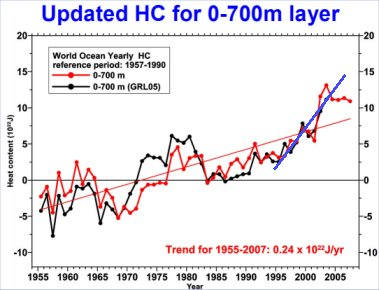</p>
      <p class="texte">&nbsp;</p>
      <p class="texte">Voici, ci-contre, &agrave; droite, un graphe actualis&eacute; jusqu'en 2008 du <a href="http://climatesci.org/2008/06/05/comparison-of-model-and-observations-of-upper-ocean-heat-content">Prof. Pielke Sr</a>, &agrave; partir d'un graphe pr&eacute;sent&eacute; par <span class="textengras">Sydney Levitus</span> lors de la conf&eacute;rence.</p>
      <p class="texte">Ce graphe repr&eacute;sente l'&eacute;volution du contenu thermique de la surface (de 0 &agrave; -700m et suivant deux sources diff&eacute;rentes en rouge et en noir) des oc&eacute;ans de <span class="textengras">1957 &agrave; 2008 </span>(les valeurs pour les 5 derni&egrave;res ann&eacute;es ont fait l'objet de quelques h&eacute;sitations de la part de <span class="textengras">Josh Willis</span>, dont je vous ai parl&eacute; <a href="oceans.html#temperoceans">ici</a>, et dont je vous parle ci-desous). L'&eacute;chelle verticale est gradu&eacute;e en unit&eacute;s de <span class="textengras">10</span><span class="exposant">22</span> <span class="textengras">Joules.</span> Bien entendu la position du z&eacute;ro est arbitraire et ne joue aucun r&ocirc;le ici. Seules comptent les variations temporelles du contenu thermique. </p>
      <p class="texte">La lecture de ce graphe et la r&eacute;gression lin&eacute;aire en rouge qui lui superpos&eacute;e nous indique que le <span class="textengras">d&eacute;s&eacute;quilibre thermique (ou d&eacute;s&eacute;quilibre radiatif</span>) a augment&eacute; de quelques<span class="textengras"> 0,24.10</span><span class="exposant">22</span> Joules par an, ce qui correspond &agrave; un flux moyen incident de <span class="textengras">0,15 Watts par m&egrave;tre carr&eacute;</span>. </p>
      <p class="texte">Par ailleurs <span class="textengras">James Hansen et une douzaine de coll&egrave;gues ( dont Josh Willis et Gavin Schmidt bien connu sur ce site, puisqu'il est le responsable <a href="indicateurs.html">des mesures GISSTEMP &agrave; la NASA </a>)</span> ont publi&eacute;, en 2007, un article (imprudemment) intitul&eacute; &quot;<span class="textengras">D&eacute;s&eacute;quilibre &eacute;nerg&eacute;tique de la terre : confirmation et implications</span>&quot; dont la conclusion &eacute;tait que &quot;La terre absorbe actuellement <span class="textengras">0,85 Watts/m2</span> de plus qu'elle n'en &eacute;met vers l'espace&quot;. Cette conclusion (hardie) &eacute;tait bas&eacute;e sur le r&eacute;sultat des mod&egrave;les de l'effet de serre et sa confirmation venait de la confrontation de ce r&eacute;sultat avec la variation du contenu thermique des oc&eacute;ans repr&eacute;sent&eacute; par le trait bleu (qui est une illustration de l'auteur du site) sur la courbe pr&eacute;c&eacute;dente. Et en effet, <span class="textengras">si on ne consid&eacute;rait QUE les r&eacute;sultats des mesures allant de 1993 &agrave; 2003, cela semblait constituer une confirmation des mod&egrave;les d'Hansen et al...<br />
      </span>(R&eacute;f de l'article : Hansen, J.et al. 2005: Earth&rsquo;s energy imbalance: Confirmation and implications. <span class="Science"><cite>Science</cite>,</span> <strong>308</strong>, 1431-1435, doi:10.1126/science.1110252. </p>
      <p class="texte">La question qui vient imm&eacute;diatement &agrave; l'esprit est de se demander pourquoi, alors que les donn&eacute;es ant&eacute;rieures &eacute;taient disponibles, les auteurs ont-ils n&eacute;glig&eacute; toutes celles <span class="textengras">qui pr&eacute;c&eacute;daient 1993</span>, cr&eacute;ant ainsi un biais tr&egrave;s important pour le r&eacute;sultat de la comparaison th&eacute;orie-mesure ainsi qu'on peut le voir sur le graphique. Ce biais  allait &eacute;videmment dans le bon sens (pour eux) mais tout de m&ecirc;me.... De fait, comme le graphique le montre bien, <span class="textengras">la p&eacute;riode 1993-2003</span> est tr&egrave;s loin de constituer une tendance typique de la variation de ces cinquante derni&egrave;res ann&eacute;es qui nous donne une valeur de<span class="textengras"> 0,15 Watts/m2 au lieu de 0,85 Watts/m2</span> qui a d'ailleurs &eacute;t&eacute; r&eacute;trograd&eacute;e, depuis, par <span class="textengras">Hansen &agrave; 0,60 Watts/m2 </span>...</p>
      <p class="texte"><span class="textengras">Ce qui repr&eacute;sente quand m&ecirc;me un bon facteur 4 entre les pr&eacute;visions et les mesures.</span>. (<a href="http://climatesci.org/2008/06/05/comparison-of-model-and-observations-of-upper-ocean-heat-content">source</a>). Pour une confirmation de th&eacute;orie, ce n'est pas tr&egrave;s fort ! </p>
      <p class="texte">Mais, passons.... <br />
        Vous imaginez mieux maintenant les affres &eacute;prouv&eacute;es (<a href="oceans.html#temperoceans">voir ici</a>) par <span class="textengras">Josh Willis </span>(coauteur de l'article pr&eacute;c&eacute;dent avec <span class="textengras">Hansen</span>) lorsqu'il  a examin&eacute; les r&eacute;sultats des balises <span class="textengras">ARGO</span> qui lui montraient que les temp&eacute;ratures des oc&eacute;ans &eacute;taient &agrave; la baisse depuis 2003-2004 ce qui contredisait les conclusions de l'article qu'il avait cosign&eacute; avec Hansen.. Pour un chercheur, c'est une vraie catastrophe.<br />
        Un article publi&eacute; en 2006, le reconnaissait honn&ecirc;tement... Mais un correctif du m&ecirc;me auteur, paru quelques semaines plus tard, revenait sur cette affirmation en all&eacute;guant des erreurs de mesures. </p>
      <p class="texte">N<span class="textengras">ous sommes maintenant en 2009 </span>et, apr&egrave;s de nombreuses pol&eacute;miques et v&eacute;rifications, <span class="textengras">il semble acquis que le contenu thermique des oc&eacute;ans a baiss&eacute; ou stagn&eacute; depuis 2003-2004 comme cela se voit tr&egrave;s bien sur la courbe pr&eacute;c&eacute;dente.</span><br />
      ______________________________________________________________________________________________________________________</p>
      <p class="texte"><span class="textengras">Mise &agrave; jour du 1er Juillet 2009</span><a name="willis09" id="willis09"></a><br />
        Un lecteur tr&egrave;s bien inform&eacute;, que je remercie, me signale que<span class="textengras"> Josh Willis (NASA) et ses coll&egrave;gues (John S. Lyman (NOAA) , Gregory C. Johnson (NOAA) et John Gilson (Scripps Institution Calif)) </span>viennent (enfin !) de publier leurs r&eacute;sultats et conclusions dans un article intitul&eacute; &quot; In Situ Data Biases and Recent Heat Content Variability&quot; dans le volume 26 (Avril 2009, page 846-852) du Journal of Atmospheric and Oceanic Technology de l'AMS (<span class="Style22">http://ams.allenpress.com/perlserv/?request=get-abstract&amp;doi=10.1175%2F2008JTECHO608.1</span> : r&eacute;sum&eacute; seul car l'acc&egrave;s &agrave; l'article  n&eacute;cessite une souscription &agrave; l'AMS).</p>
      <p class="texte">La conclusion du r&eacute;sum&eacute; de cet article qui met sans doute un point final aux h&eacute;sitations de <span class="textengras">Josh Willis</span> et de ses coll&egrave;gues, nous dit tout :<br />
  &quot; With biased profiles discarded, no significant warming or cooling is observed in upper-ocean heat content between 2003 and 2006.&quot; Soit<span class="textengras"> &quot; Apr&egrave;s avoir &eacute;limin&eacute; les r&eacute;sultats d&eacute;fectueux, on observe qu'aucun r&eacute;chauffement ni refroidissement significatif n'est per&ccedil;u dans le contenu calorifique de la couche superficielle des oc&eacute;ans entre 2003 et 2006&quot; </span>A noter que<span class="textengras"> Craig Loehle </span>(voir ci-dessous), utilisant les m&ecirc;mes donn&eacute;es corrig&eacute;es et une analyse fine des r&eacute;sultats parvient &agrave; la conclusion qu'il y a eu, en fait, un refroidissement...</p>
      <p class="texte"><br />
        Voici, ci-contre, la courbe ma&icirc;tresse (Fig 4) de cet article : </p>
      <p class="texte">En ordonn&eacute;es, le contenu thermique de la couche superficielle (0- 750m) des oc&eacute;ans en unit&eacute; de 10<span class="exposant"> 21 </span> Joules. En abscisses, les ann&eacute;es de 2003 &agrave; juin 2006.</p>
      <p class="texte"><span class="textengras">En trait noir &eacute;pais</span>, les r&eacute;sultats bruts de l'ensemble complet des mesures disponibles qui avaient fait l'objet d'une publication en 2006 et  avaient tant alarm&eacute; Willis et ses coll&egrave;gues, lesquels  avaient, peu apr&egrave;s, retir&eacute; leur communication. <br />
        <span class="textengras">En trait gras pointill&eacute;</span>, les m&ecirc;mes donn&eacute;es auxquelles on a retir&eacute;  les donn&eacute;es, estim&eacute;es d&eacute;fectueuses, de sondes du WHOI (Le <a href="http://www.whoi.edu">Woods Hole Oceanographic Institution</a>) <br />
        <span class="textengras">En trait fin pointill&eacute; </span>: Les donn&eacute;es des balises ARGO seules moins les donn&eacute;es des balises WHOI estim&eacute;es d&eacute;fectueuses.<br />
        <span class="textengras">En trait fin continu</span> : Les donn&eacute;s auxquelles on a soustrait les donn&eacute;es des balises ARGO qui repr&eacute;sentent quand m&ecirc;me l'ensemble le plus complet dont on dispose actuellement (voir la mise &agrave; jour du<a href="oceans.html#argo1"> 29 Mars ci-dessous</a>) </p>
      <p class="texte"><span class="textengras">Ouf !</span> Comme on le voit, en appliquant une s&eacute;rie de &quot;corrections &quot;successives, et partant d'un r&eacute;sultat litt&eacute;ralement explosif pour les mod&egrave;les de l'effet de serre, on arrive bien  &agrave; la conclusion de l'article en question. Ni r&eacute;chauffement, ni refroidissement significatifs... <span class="textengras">ce qui est encore d&eacute;vastateur pour ces m&ecirc;mes mod&egrave;les, comme le montre Roger Pielke Sr. ci-dessous. </span></p>
      <p class="texte">Je pense qu'on peut tirer quelques enseignements de ce long processus de publication-corrections-publication et corrections successives qui est assez typique et r&eacute;v&eacute;lateur des difficult&eacute;s et du fonctionnement r&eacute;el de la &quot;science climatique&quot;. <br />
        Le cas pr&eacute;sent n'est pas unique. Loin de l&agrave;. Et il est conforme &agrave; ce qu'a fait fait remarquer le Professeur <a href="lindzen.html" class="textengras"> Richard Lindzen</a> du MIT qui &eacute;crivait: &quot; <span class="textengras">Que des corrections aient besoin d&rsquo;&ecirc;tre appliqu&eacute;es aux donn&eacute;es climatiques n&rsquo;est pas du tout surprenant, mais que ces corrections aillent toujours dans le sens &laquo; souhait&eacute; &raquo; est hautement improbable.</span>&quot; </p>
      <p class="texte">Le plus &eacute;tonnant et, sans doute, le plus r&eacute;v&eacute;lateur des pressions consid&eacute;rables auxquelles sont soumis les chercheurs qui travaillent dans ce domaine, appara&icirc;t de mani&egrave;re &eacute;vidente dans la derni&egrave;re phrase de cet article de <span class="textengras">Josh Willis et al</span> . La voici, en anglais d'abord, puis en fran&ccedil;ais:</p>
      <p class="texte">&quot;The findings and conclusions in this article are those of the authors and do not necessarily represent the views of the National Oceanic and Atmospheric Administration&quot; Soit : <span class="textengras">&quot;Les r&eacute;sultats et les conclusions de cet article sont ceux des auteurs. Ils ne repr&eacute;sentent pas n&eacute;cessairement les points de vue de l'Administration de la NOAA&quot;.</span></p>
      <p class="texte">Autrement dit, et cela semblera  totalement impensable pour les scientifiques qui lisent ce texte, les chercheurs responsables d'un vaste travail d'investigation qui engage des cr&eacute;dits &eacute;normes (le projet ARGO) se voient contraints de se d&eacute;marquer des opinions ou des points de vue de l'Administration de leur organisme de tutelle ...Je n'avais encore jamais vu &ccedil;a. <br />
        <span class="textengras">D&egrave;s lors, on peut raisonnablement se demander &agrave; partir de quels &eacute;l&eacute;ments l'Administration de la NOAA se forge-t-elle ses point de vue (ici sur le contenu thermique des oc&eacute;ans) si ce n'est pas &agrave; la lumi&egrave;re des r&eacute;sultats scientifiques obtenus par ses propres chercheurs</span> qui utilisent des moyens incomparablement sup&eacute;rieurs &agrave; tout ce qui existait jusqu'&agrave; pr&eacute;sent. <br />
        Tout ceci est vraiment tr&egrave;s inqui&eacute;tant sur les motivations profondes des administrations des grands organismes de recherche, comme la NOAA et beaucoup d'autres, qui sont cens&eacute;es fournir aux d&eacute;cideurs des donn&eacute;es objectives r&eacute;sultant directement de leurs propres travaux de recherche. Quant aux d&eacute;cideurs de la plan&egrave;te, bien entendu totalement ignorants de cette grave r&eacute;futation apport&eacute;e aux mod&egrave;les de l 'effet de serre qu'on leur a pr&eacute;sent&eacute;s comme intouchables, ils continuent sur leur lanc&eacute;e. Comme si de rien n'&eacute;tait : <em>Avanti tutta ! </em><br />
        __________________________________________________________________________________________________________</p>
      <p class="texte">Inutile de vous r&eacute;p&eacute;ter que les r&eacute;sultats de Willis et al, m&ecirc;me apr&egrave;s les multiples corrections qui vont &quot;dans le bons sens&quot;, jettent un doute d&eacute;vastateur sur les mod&egrave;les actuels de l'effet de serre dont <span class="textengras">Hansen</span> est le grand pr&ecirc;tre, lequel persiste contre vents et mar&eacute;es, &agrave; maintenir son chiffre f&eacute;tiche de <span class="textengras">0,60 Watts/m2</span> pour le d&eacute;s&eacute;quilibre radiatif de la plan&egrave;te  qui conduit aux pr&eacute;visions ultra-alarmistes que l'on conna&icirc;t. <br />
        A noter aussi que cette observation sur la stagnation ou la baisse des temp&eacute;ratures des oc&eacute;ans fait &eacute;cho aux mesures de temp&eacute;ratures du globe qui stagnent ou baissent depuis une dizaine d'ann&eacute;es (<a href="indicateurs.html">voir les indicateurs</a>). Tout cela est parfaitement coh&eacute;rent dans la mesure o&ugrave; il s'agit de la temp&eacute;rature de surface des oc&eacute;ans dont le temps de r&eacute;ponse est assez rapide...</p>
      <p class="textengras">Roger Pielke Sr, <a name="pielkesr" id="pielkesr"></a>souvent cit&eacute; dans ce site (<a href="paroles.html#pielke">par exemple ici</a>), avait d'ailleurs demand&eacute; (exig&eacute;) des explications &agrave; ce sujet, suite &agrave; la parution du rapport AR4 du GIEC (en Janvier 2007 &agrave; Paris)<span class="texte">. Il all&eacute;guait que ce test en vrai grandeur du d&eacute;s&eacute;quilibre radiatif de la plan&egrave;te devait imp&eacute;rativement &ecirc;tre expliqu&eacute; par les r&eacute;dacteurs du </span>GIEC<span class="texte">. Bien qu'il soit un climatologue mondialement r&eacute;put&eacute;, il n'obtint aucune r&eacute;ponse. </span><br />
        <span class="texte">Tout &agrave; fait conscient de l'importance du probl&egrave;me, </span>Pielke Sr.<span class="texte"> est revenu &agrave; la charge le 9 f&eacute;vrier 2009 et il a propos&eacute; que l'on compare, ann&eacute;e apr&egrave;s ann&eacute;e, la valeur du contenu thermique des oc&eacute;ans </span>avec les pr&eacute;dictions du mod&egrave;le th&eacute;orique de Hansen (2005) ce qui constitue un test fondamental des mod&egrave;les de l'effet de serre utilis&eacute;s par les pr&eacute;dictions du GIEC. </p>
      <p class="textengras">&nbsp;</p>
      <p class="textengras">Pielke <span class="texte"> (<a href="http://climatesci.org/2009/02/09/update-on-a-comparison-of-upper-ocean-heat-content-changes-with-the-giss-model-predictions">source</a>) donne les valeurs des pr&eacute;dictions de Hansen et al &agrave; partir de 2003 jusqu'en 2012 &agrave; comparer avec les valeurs r&eacute;ellement observ&eacute;es. Plut&ocirc;t que de reproduire la liste brute des valeurs num&eacute;riques donn&eacute;es par Pielke, J'ai trac&eacute; la courbe repr&eacute;sentative de ces donn&eacute;es (ci-contre).</span></p>
      <p class="texte">Comme on le voit sur ce graphique, les pr&eacute;dictions des mod&egrave;les climatique s'&eacute;cartent progressivement et notablement des observations (droite rouge). En effet, la stagnation ou le repli des temp&eacute;ratures oc&eacute;aniques observ&eacute; depuis 2003 indique un d&eacute;s&eacute;quilibre radiatif nul ou m&ecirc;me n&eacute;gatif. </p>
      <p class="texte"><span class="textengras">Pielke </span>fait aussi remarquer que pour que le mod&egrave;le du GISS (dont Hansen est le directeur &agrave; la NASA) soit v&eacute;rifi&eacute;, par exemple en 2012, il faudrait ajouter quelques <span class="textengras">9,8. 10</span><span class="exposant">22</span> Joules aux oc&eacute;ans pendant les quatre ans 2008-2012. Ceci exigerait, en supposant ce r&eacute;chauffement uniform&eacute;ment r&eacute;parti sur les quatre ann&eacute;es &agrave; venir, un d&eacute;s&eacute;quilibre de 1,50 Watts/m2, c'est &agrave; dire 2,5 fois plus que pr&eacute;vu par les mod&egrave;les de Hansen (0,6 Watts/m2). Autant dire qu'en toute hypoth&egrave;se, le mod&egrave;le du GISS sera manifestement faux...</p>
      <p class="texte">Pielke ajoute (perfidement) que &quot; <span class="textengras">Bien que la p&eacute;riode temporelle d&eacute;montrant cette divergence mod&egrave;le-r&eacute;alit&eacute; soit relativement courte, on peut se demander combien il faudra  d'ann&eacute;es pour que soient rejet&eacute;es les capacit&eacute;s pr&eacute;dictives de ce mod&egrave;le...&quot;<br />
      </span>A noter que <span class="texte">les observations de </span><span class="textengras">Pielke</span> et les r&eacute;sultats des mesures <span class="texte">recoupent les conclusions de l'article de</span> Joel Schwartz <span class="texte">( <a href="theses.html#schwartz">rapport&eacute; ici.</a>) publi&eacute; dans JGR en 2007.</span><br />
        Quant &agrave; la physicienne Katia Laval de Paris 6 qui se posait la question suivante devant les reporters du Figaro (<a href="bonnetdane.html#figaro">voir ici</a>) <br />
        <em>&laquo; Pourquoi les sceptiques croient-ils autant &agrave; 1/6  de watt par m&egrave;tre carr&eacute; d&ucirc; &agrave; l'effet du soleil et mettent-ils tant en doute 2,4  watts par m&egrave;tre carr&eacute; dus &agrave; l'effet du CO2 ? &raquo;,<br />
</em>Elle a la r&eacute;ponse &agrave; sa question : Le contenu thermique des oc&eacute;ans nous montre qu'il s'agirait plut&ocirc;t de 0,15 Watts par m2 (ou m&ecirc;me z&eacute;ro depuis 2003) plut&ocirc;t que 2,4 Watts par m2...</p>
      <p class="texte">Cette stagnation du contenu thermique des oc&eacute;ans est coh&eacute;rente avec le graphique (ci-contre) de la hausse du niveau des oc&eacute;ans que m'a transmis un lecteur averti (que je remercie) et qui est trac&eacute;e &agrave; partir de la <a href="http://sealevel.colorado.edu/current/sl_noib_ns_global.txt">base de donn&eacute;es de l'Universit&eacute; du Colorado </a>On observe que la hausse du niveau des oc&eacute;ans (SLR Sea Level Rise) s'est nettement ralentie depuis 2005-2006. </p>
      <p class="texte"><span class="textengras">En conclusion : </span>Cher lecteur(trice) qui entendez dire sans cesse (TF1, A2, FR5 etc) et qui lisez partout dans la presse (le Monde, Lib&eacute;, Le Figaro etc.) que <span class="textengras">&quot;Tout est bien pire que ce qui est pr&eacute;vu par les mod&egrave;les&quot;</span> qu'il s'agisse d'ailleurs de tout et de n'importe quoi, comme la fonte des glaciers, la disparition de la mer arctique, de la hausse du niveau des mers etc.., vous voil&agrave; d&eacute;sormais en mesure de r&eacute;pondre <span class="textengras"> :<br />
        &quot;NON :</span> <span class="textengras">Le contenu thermique des (ou la chaleur stock&eacute;e dans les) oc&eacute;ans croit beaucoup moins vite (en fait, il ne croit plus du tout) que pr&eacute;vu par les mod&egrave;les et le d&eacute;s&eacute;quilibre radiatif d&ucirc; au CO2 est certainement beaucoup moins grand que  pr&eacute;vu...</span>&quot; D'autre part, ce billet montre une fois de plus, <a href="oceans.html#steig">tout comme le suivant</a>, qu'en mati&egrave;re de climatologie, il suffit de bien choisir les points de d&eacute;part et d'arriv&eacute;e pour d&eacute;montrer  tout ce que l'on veut.. Pauvre science ! Et dire qu'elle est cens&eacute;e servir de base &agrave; la politique.. <br />
      _____________________________________________________________________________________________________________________</p>
      <p class="textengras">Mise <a name="argo1" id="argo1"></a>&agrave; jour du 22 Mars 2009 : (Suite) R&eacute;&eacute;valuation des donn&eacute;es des balises Argo de 2003 &agrave; 2008 : Les oc&eacute;ans se refroidissent ! </p>
      <p class="textengras"><span class="texte">Comme vous le savez, si vous avez lu <a href="oceans.html#temperoceans">ce billet</a> post&eacute; il y a exactement un an, les r&eacute;sultats des mesures des quelques 3300 balises</span> Argo<span class="texte"> ( <a href="http://www.argo.ucsd.edu">page d'accueil du projet Argo</a>) dispos&eacute;es sur les oc&eacute;ans de la plan&egrave;te ont fait l'objet de plusieurs r&eacute;ajustements au cours de ces derni&egrave;res ann&eacute;es.</span> <span class="texte">Il faut dire que les premiers r&eacute;sultats par</span> Josh Willis et al <span class="texte">en 2007 avaient de quoi horrifier les affid&eacute;s du </span>GIEC :<span class="texte"> Les balises </span>Argo indiquaient que les oc&eacute;ans se refroidissaient <span class="texte">ce qui est absolument contraire aux pr&eacute;visions des ordinateurs de l'effet de serre anthropique. Comme je l'ai racont&eacute; il y a un an, et certainement apr&egrave;s un certain nombre de nuits sans sommeil comme il l'a d&eacute;clar&eacute; lui-m&ecirc;me, </span>Josh Willis <span class="texte">se d&eacute;cida &agrave; retirer son article et &agrave; d&eacute;clarer que les r&eacute;sultats des balises Argo souffraient de quelques d&eacute;fauts... Les r&eacute;sultats furent  retouch&eacute;s (ou corrig&eacute;s) et la conclusion (qui constituait encore une tr&egrave;s mauvaise nouvelle pour les tenants du r&eacute;chauffement anthropique) fut, &agrave; l'&eacute;poque, que la temp&eacute;rature des oc&eacute;ans et donc que le contenu thermique des oc&eacute;ans avait</span> stagn&eacute; ou l&eacute;g&egrave;rement baiss&eacute;<span class="texte"> durant la p&eacute;riode de mesure. Ce qui justifie l'analyse de </span>Roger Pielke Sr<span class="texte"> que j'ai d&eacute;crite un peu plus haut. </span></p>
      <p class="textengras"></p>
      <p class="textengras">Admirez la qualit&eacute; de la couverture des 3325 balises Argo <span class="texte">au 22 Mars 2009 sur la figure ci-contre (N'oubliez pas que ces balises sont flottantes ou en immersion et que leur position doit-&ecirc;tre r&eacute;actualis&eacute;e en permanence, d'o&ugrave; la date port&eacute;e sur cette carte). A noter que l'homog&eacute;n&eacute;it&eacute; de cette couverture oc&eacute;anique est incomparablement sup&eacute;rieure &agrave; celle de la couverture thermom&eacute;trique utilis&eacute;e par le GISS de la NASA pour l'&eacute;tablissement des courbes de temp&eacute;rature globale dites GISTemp)</span></p>
      <p class="textengras">&nbsp;</p>
      <p class="textengras">Ainsi, en f&eacute;vrier 2009<span class="texte">, aurait-on pu croire que le &quot;feuilleton&quot; &agrave; rebondissements des &quot;balises Argo&quot; &eacute;tait termin&eacute;. <br />
  Il n'en est rien ! </span></p>
      <p class="texte">En effet, <span class="textengras">Craig Loehle vient de publier un article portant sur la r&eacute;&eacute;valuation des r&eacute;sultats des balises Argo</span> (erreurs des balises d&eacute;j&agrave; corrig&eacute;es par l'&eacute;quipe de Josh Willis, cela va sans dire) dans la revue <em>Energy and Environnement (vol 20)</em>. <span class="textengras">C. Loehle</span> est une chercheur exp&eacute;riment&eacute;, auteur de 145+ articles dans des revues &agrave; comit&eacute; de lecture. Il s'est d&eacute;j&agrave; rendu c&eacute;l&egrave;bre, dans le domaine de la climatologie, en publiant une analyse d&eacute;taill&eacute;e des mesures dendrochonologiques malencontreusement utilis&eacute;es pour la fameuse <span class="textengras">&quot;crosse de hockey&quot; de Michael Mann e</span>t al. en 1998 (<a href="rechauffement.html#loehle">voir ici</a>). Loehle a reconstitu&eacute; l'histoire de la temp&eacute;rature du globe depuis 1000 ans montrant l'existence du petit &acirc;ge glaciaire et de l'optimum m&eacute;di&eacute;val. </p>
      <p class="texte">Cette r&eacute;&eacute;valuation des temp&eacute;ratures oc&eacute;aniques de <span class="textengras">Craig Loehle</span> r&eacute;sulte d'une analyse math&eacute;matique fine des r&eacute;sultats (corrig&eacute;s) des balises <span class="textengras">Argo</span> dans le but de savoir si les temp&eacute;ratures oc&eacute;aniques ont stagn&eacute; ou diminu&eacute; depuis 2003 (qui est la date de la r&eacute;ception de la mise en place du r&eacute;seau de balises). </p>
      <p class="texte">Les r&eacute;sultats de l'analyse de Loehle peuvent &ecirc;tre illustr&eacute;s par la figure ci-contre :</p>
      <p class="texte"><span class="textengras">Craig Loehle </span>r&eacute;sume son travail de la mani&egrave;re suivante : &quot; <span class="textengras">Refroidissement des oc&eacute;ans du globe depuis 2003 </span><a href="http://icecap.us/images/uploads/LoehleOHC.jpg">(source</a>) </p>
      <ul>
        <li>On a analys&eacute; la tendance du contenu thermique des oc&eacute;ans de 2003 &agrave; 2008 (4,5 ans).</li>
        <li>Une tendance lin&eacute;aire &agrave; laquelle se superpose le cycle annuel p&eacute;riodique reproduit les r&eacute;sultats des mesures avec R<span class="exposant">2</span> =0,85 <span class="texte">(NDT : c'est le coefficient de corr&eacute;lation. 0.85, c'est tr&egrave;s bon). </span><span class="textengras">La tendance lin&eacute;aire est de -0,32 ( + ou - 0,2) x 10</span><span class="exposant">22</span> Joules par an.</li>
        <li>Ce r&eacute;sultat est coh&eacute;rent avec d'autres donn&eacute;es qui montrent une absence de r&eacute;chauffement depuis les derni&egrave;res ann&eacute;es. &quot; </li>
        </ul>
      <p><span class="texte">Autrement dit, si on en croit </span>Craig Loehle<span class="texte"> (et il n'y pas raison de ne pas le croire &eacute;tant donn&eacute;es son expertise reconnue dans l'analyse des donn&eacute;es num&eacute;riques) les oc&eacute;ans de la plan&egrave;te sont en train de se refroidir. Si on se souvient que le</span><span class="textengras"> contenu thermique des oc&eacute;ans est environ mille fois plus grand que celui de l'atmosph&egrave;re</span><span class="texte">, on en conclut que la plan&egrave;te est en phase de refroidissement et non pas en voie de r&eacute;chauffement comme l'avaient pr&eacute;vu tous les mod&egrave;les de l'effet de serre du GIEC, et ceci malgr&eacute; une croissance marqu&eacute;e du taux de CO2 atmosph&eacute;rique pendant la m&ecirc;me p&eacute;riode.</span> <span class="texte">Il est ainsi  probable que</span> la plan&egrave;te se dirigera vers une p&eacute;riode froide <span class="texte">comme cela est expliqu&eacute; dans <a href="froid.html">cette page</a>, &agrave; partir de diverses autres analyses convergentes. D'autre part, il est aussi hautement probable que ce refroidissement sera accompagn&eacute; d'une baisse du taux de CO2 dans l'atmosph&egrave;re, tout simplement parce que la solubilit&eacute; du CO2 dans l'eau augmente quand sa temp&eacute;rature diminue.</span><span class="textengras">Compte tenu de l'&eacute;normit&eacute; du contenu thermique des oc&eacute;ans, et &agrave; l'instar de Roger Pielke Sr. et de nombreux  chercheurs, je dirais que cet indicateur est beaucoup plus significatif que la mesure des temp&eacute;ratures de l'air </span><span class="texte">(qui de toute mani&egrave;re stagnent ou diminuent depuis 10 ans, environ) qui est g&eacute;n&eacute;ralement utilis&eacute;e </span> pour estimer l'&eacute;volution du climat de la plan&egrave;te<span class="texte">...et entretenir l'alarmisme. </span></p>
      <p>&nbsp;</p></th>
    </tr>
    <tr bgcolor="#CCFFFF">
      <th height="3488" align="left" valign="top" bordercolor="#FFFFFF" bgcolor="#CCFFFF" class="titre" scope="col"><p><span class="textengras">02/02/2009 <a name="steig" id="steig"></a>:</span> <span class="textengras">Le&ccedil;on sur l'art de pr&eacute;senter les donn&eacute;es :</span> <span class="textengras">En totale contradiction avec  les r&eacute;sultats publi&eacute;s r&eacute;cemment qui affirmaient que l'Antarctique ne se r&eacute;chauffe pas, un article  de Eric Steig </span><span class="texte">(&agrave; gauche)</span><span class="textengras">, Michael Mann </span><span class="texte">(&agrave; droite, l'auteur de la crosse de hockey)</span><span class="textengras"> et al. nous d&eacute;clare que l'antarctique se r&eacute;chauffe...</span><span class="texte">La presse r&eacute;chauffiste en a fait ses choux gras, sans chercher plus loin. Les scientifiques s&eacute;rieux et ind&eacute;pendants examinent tout cela en d&eacute;tail et les scientifiques impliqu&eacute;s dans cette affaire s'embrouillent  les crayons dans leurs explications...comme vous allez le voir. Sans compter que les donn&eacute;es utilis&eacute;es sont plus que douteuses...<br />
   Voici l'article avec ses r&eacute;f&eacute;rences : </span></p>
        <p class="texte">&quot;<span class="textengras">R&eacute;chauffement de la surface de la nappe de glace antarctique depuis 1957, l'ann&eacute;e Internationale de G&eacute;ophysique&quot;</span>. <br />
        par Eric J. Steig, David P. Schneider, Scott D.  Rutherford, Michael E. Mann, Josefino C. Comiso &amp; Drew T. Shindell,  Nature 457, 459-462 (22 Janvier 2009).</p>
        <p class="texte"><font face="times new roman,times">La technique utilis&eacute;e est assez acrobatique (pour rester sibyllin). Elle m&eacute;rite  d'&ecirc;tre  d&eacute;crite. La voici : <br />
          De fait, il n'existe, en Antarctique, que tr&egrave;s peu de stations thermom&eacute;triques automatiques qui mesurent, comme sur les autres continents, les maxima et les minima quotidiens de temp&eacute;rature, puis en donnent la moyenne. La tr&egrave;s grande majorit&eacute; du continent antarctique demeure ainsi ignor&eacute;e du point de vue des mesures de temp&eacute;rature terrestre, d'autant plus que les rares sondes existantes sont situ&eacute;es sur le pourtour du continent, &agrave; proximit&eacute; des mers ce qui, tr&egrave;s certainement, induit un biais sur les r&eacute;sultats. <br />
          Par contre, il existe de nombreuses donn&eacute;es, cette fois-ci tr&egrave;s d&eacute;taill&eacute;es, fournies par les satellites orbitant aux alentours du p&ocirc;le Sud.<br />
          Il s'agit des mesures satellitaires (<span class="textengras">MSU</span>, Microwave sounding units, maintenant tr&egrave;s fiables) qui mesurent la temp&eacute;rature au dessus des glaces polaires, lesquelles n'indiquent aucun r&eacute;chauffement depuis leur mise en orbite (<span class="textengras">ann&eacute;es 80</span>) sinon un refroidissement tout comme d'ailleurs, les mesures terrestres, ce qui contredit ouvertement les r&eacute;sultats de l'article de Steig, Mann et al. </font></p>
        <p class="texte"><span class="textengras"><font face="times new roman,times">Steig, Mann et al,</font></span><font face="times new roman,times"> eux, ont choisi d'utiliser des donn&eacute;es satellitaires infra-rouge. A leurs yeux, sans doute, ces mesures, maintenant d&eacute;laiss&eacute;es au profit des <span class="textengras">MSU</span>; refl&egrave;tent mieux la temp&eacute;rature du sol que les satellites qui mesurent la temp&eacute;rature au dessus de la glace. Malheureusement, comme le fait remarquer <span class="textengras">F. Singer </span>(un pionnier des mesures satellitaires), les mesures I.R. ne d&eacute;pendent pas seulement de la temp&eacute;rature mais aussi de l'&eacute;missivit&eacute; des surfaces. De plus, ces mesures sont perturb&eacute;es par les brumes et autres al&eacute;as, y compris par les couches d'inversion fr&eacute;quentes dans ces zones.. Enfin, l'&eacute;missivit&eacute; d&eacute;pend de la porosit&eacute; et de la taille des cristaux de glace qui varient d'un point &agrave; l'autre, tous des inconv&eacute;nients que n'ont pas les mesures MSU...Bref, d&egrave;s le d&eacute;part, ces mesures sont douteuses. Enfin, ces mesures ne remontent pas en de&ccedil;&agrave; des ann&eacute;es 1980.<br />
          En comparant les mesures donn&eacute;es par les rares stations thermom&eacute;trique, suppos&eacute;es fiables, et en ajustant les mesures infra-rouges, les auteurs ont essay&eacute; de reconstituer <span class="textengras">ce qu'auraient pu &ecirc;tre les temp&eacute;ratures du continent antarctique depuis 1957</span>. C'est manifestement une analyse &quot;acrobatique&quot;, encore une fois effectu&eacute;e par un algorithme dont <span class="textengras">Michael Mann </span>a le secret. <br />
          Tout ceci explique les doutes  qui n'ont pas inqui&eacute;t&eacute; les referees de Nature (qui avait d&eacute;j&agrave; publi&eacute; la crosse de Hockey) et qu'expriment les chercheurs <font face="times new roman,times">(m&ecirc;me favorables au<span class="textengras"> GIEC</span>) </font>interrog&eacute;s sur les r&eacute;sultats de cette &eacute;tude. Vous les  lirez ci-dessous. </font></p>
        <p class="texte"><span class="textengras">De plus, le titre de cet article sonne bizarrement. Que vient faire, dans le titre, cette pr&eacute;cision &quot;Ann&eacute;e Internationale de G&eacute;ophysique &quot; ?</span> En quoi cela validerait-il les r&eacute;sultats de cette &eacute;tude ? Les auteurs devancent la question en pr&eacute;cisant que c'est &agrave; partir de cette ann&eacute;e que l'on a commenc&eacute; &agrave; effectuer des mesures syst&eacute;matiques de la temp&eacute;rature du continent Antarctique (ce qui est faux comme vous le verrez ci-dessous sur les graphiques), avec d'ailleurs de bien maigres moyens, puisqu'il ne s'agit que de quelques rares stations distribu&eacute;es, en g&eacute;n&eacute;ral, sur le pourtour du continent. <br />
          Mais il se trouve qu'&eacute;valuer la variation de temp&eacute;rature de la nappe antarctique <span class="textengras">depuis 1957,</span> offre, sans doute, quelques avantages pour les auteurs de l'article. Comment cela ?</p>
        <p class="texte">C'est tr&egrave;s simple : D<span class="texte">ans la r&eacute;alit&eacute;, il n'y a rien de bien nouveau, dans cet article, du points de vue des donn&eacute;es qui malgr&eacute; la complexit&eacute; des m&eacute;thodes utilis&eacute;es ne sont pas nettement diff&eacute;rentes de celles qui sont d&eacute;j&agrave; connues. C'est surtout une question de pr&eacute;sentation</span> <span class="texte">des donn&eacute;es auxquelles comme chacun sait, la statistique peut faire dire ce qui vous arrange. Cette petite histoire en est un exemple d'&eacute;cole comme vous allez le voir dans le petit tableau suivant : </span></p>
        <table width="815" height="794" border="4" cellspacing="10">
          <tr>
            <th width="386" height="282" align="left" valign="top" class="texte" scope="col"><p>Les courbes ci-contre sont issues de trois sources diff&eacute;rentes, ant&eacute;rieures &agrave; l'article comment&eacute; ici. Elles ont &eacute;t&eacute; compil&eacute;es par <span class="textengras">Monagahan et al</span> ( JGR, 113, D0415, 2008) qui l'auteur de ce graphique &agrave; partir des donn&eacute;es &eacute;tablies par Schneider, Chapman (2008) et celles qui r&eacute;sultent d'une reconstruction informatique. L'&eacute;chelle verticale est en &deg;C.. Il s'agit de l'ensemble du continent Antarctique, p&eacute;ninsule Ouest comprise.</p>
              <p>Bizarrement, l'article de Steig et al., ne donne pas la courbe globale pour tout le continent, mais on peut la retrouver sur le site RealClimate (o&ugrave; exerce Michael Mann), trait&eacute;e avec l'algorithme &quot;m&eacute;thode Steig, Mann et al&quot;. Elle est peu diff&eacute;rente de celle qui est pr&eacute;sent&eacute;e ici. <br />
              </p></th>
            <th width="383" align="left" valign="top" scope="col"></th>
          </tr>
          <tr>
            <td class="texte"><p>Si on a l'oeil exerc&eacute; et si on utilise des techniques d'analyse simples, on voit, comme l'ont affirm&eacute; tous les auteurs pr&eacute;c&eacute;dant cet article, que l<span class="textengras">'Antarctique s'est l&eacute;g&egrave;rement r&eacute;chauff&eacute; (+0,3&deg;C) depuis le d&eacute;but des mesures (vers 1950) jusque dans les ann&eacute;es 1970-80 </span>(Il est int&eacute;ressant de noter, au passage, que le reste du globe se refroidissait &agrave; cette &eacute;poque, faisant m&ecirc;me craindre un petit &acirc;ge glaciaire).<br />
              Par la suite, <span class="textengras">c'est &agrave; dire depuis 1980 environ, la temp&eacute;rature est rest&eacute;e pratiquement constante et a m&ecirc;me un peu baiss&eacute; ces derni&egrave;res ann&eacute;es (mais ce graphique s'arr&ecirc;te en 2005). </span></p>
              <p><span class="textengras">C'est ce qui justifie les affirmations des nombreuses &eacute;tudes pr&eacute;c&eacute;dentes qui nous disaient que l'Antarctique ne se r&eacute;chauffait pas</span>... jusqu'&agrave; ce que Michael Mann et ses coll&egrave;gues nous disent le contraire. Les droites rouge et bleu sont de l'auteur du site. <br />
              </p></td>
            <td align="left" valign="top"></td>
          </tr>
          <tr>
            <td align="left" valign="top" class="textengras"><p>Alors qu'ont fait Eric Steig, Michael Mann et leurs coll&egrave;gues ?</p>
            <p>C'est tout simple. Au lieu de partir du point situ&eacute; autour des ann&eacute;es 1980 qui marquaient un changement de r&eacute;gime pour l'antarctique, ils ont effectu&eacute; une r&eacute;gression lin&eacute;aire &agrave; partir de 1957.... l'ann&eacute;e Internationale de G&eacute;ophysique. <span class="texte">Comme on le voit sur ce dessin ci-contre (illustr&eacute; par les soins de l'auteur du site), </span><span class="textengras">cette &quot;technique&quot; donne lieu &agrave; une droite &agrave; pente l&eacute;g&egrave;rement positive, (+0, 1&deg;C par d&eacute;cennie disent-ils), ce qui a permis aux auteurs de proclamer que l'Antarctique se r&eacute;chauffait et ce qui a &eacute;t&eacute; largement repris par la presse comme une nouvelle preuve du r&eacute;chauffement climatique anthropique, bien s&ucirc;r ! </span></p></td>
            <td></td>
          </tr>
        </table>        
        <p class="texte">Comme vous le voyez et comme cela est analys&eacute; par <span class="textengras">Patrick J. Michaels</span> sur son excellent site <a href="http://www.worldclimatereport.com/index.php/2009/01/30/antarctica-again/#more-362">World Climat Report</a>, il ne s'agit de rien d'autre que d'une technique adhoc de pr&eacute;sentation des donn&eacute;es dans le sens qui convient aux auteurs. </p>
        <p class="textengras">La v&eacute;rit&eacute; ( unanimement reconnue) est la suivante : l'antarctique s'est un peu r&eacute;chauff&eacute; mais seulement de 1950 (ou avant ?) jusque dans les ann&eacute;es 70-80. Mais depuis 1980, c'est &agrave; dire depuis pr&egrave;s de trente ans, il ne se r&eacute;chauffe plus, voire il se refroidit, &agrave; l'exception peut-&ecirc;tre de la volcanique p&eacute;ninsule antarctique Ouest... <span class="texte">Ce qui n'est pas honn&ecirc;tement r&eacute;sum&eacute; par le titre des auteurs </span>&quot; <span class="texte">R&eacute;chauffement de la surface de la nappe de glace antarctique depuis 1957, l'ann&eacute;e Internationale de G&eacute;ophysique&quot; . Ceci n'est pas &agrave; proprement parler faux mais c'est pour les moins biais&eacute;...ou &quot;misleading&quot; comme disent les am&eacute;ricains. Il s'agit exactement de la m&ecirc;me distorsion que celle qui est utilis&eacute;e par Pachauri, le pr&eacute;sident du GIEC qui nous dit que le climat s'est r&eacute;chauff&eacute; depuis 1900 jusqu'&agrave; nos jours en omettant de pr&eacute;ciser que'il s'est aussi refroidi de 1945 &agrave; 1976 ainsi que de 1998 &agrave; 2009.. </span></p>
        <p class="textengras">Quand on en arrive &agrave; ce niveau de d&eacute;sinformation <span class="texte">(destin&eacute;e essentiellement &agrave; la communication pour les m&eacute;dias</span>), on peut s'attendre &agrave; quelques critiques acerbes. En voici quelques &eacute;chantillons : </p>
        <ul>
          <li><span class="textengras"> Ross Hays, <span class="texte">(<a href="http://wattsupwiththat.com/2009/01/22/antarctic-warming-part-2-a-letter-from-a-meteorologist-on-the-ground-in-antarctica">source</a>) </span></span><span class="texte"> est un m&eacute;t&eacute;orologiste de terrain qui a souvent effectu&eacute; des travaux en Antarctique pour la NASA Il a envoy&eacute; &agrave; </span><span class="textengras">Eric Steig</span><span class="texte"> un email tr&egrave;s caustique dont voici le d&eacute;but et la fin :</span><span class="textengras"> &quot; Je pense que votre &eacute;tude est compl&egrave;tement fausse. Il n'y a que tr&egrave;s peu de stations en Antarctique et seulement une poign&eacute;e avec des donn&eacute;es de 50 ans....Avec les statistiques vous pouvez faire dire aux chiffres ce que vous voulez. Cela m'attriste de voir des membres de la communaut&eacute; scientifique faire des choses comme &ccedil;a pour avoir une couverture m&eacute;diatique. &quot;</span></li>
          <li class="textengras">Kevin Trenberth<span class="texte"> qui est Chef en Analyse du Climat du Centre National pour la Recherche Atmosph&eacute;rique et qui n'est pas un sceptique,( tr&egrave;s loin de l&agrave;), est &agrave; peine plus indulgent </span>:&quot;Je reste quelque peu sceptique : Il est difficile de fabriquer des donn&eacute;es, l&agrave; o&ugrave; il n'y en a pas.&quot; </li>
          <li class="textengras">Roger Pielke Sr. <span class="texte">qui est un &eacute;minent climatologue</span> <span class="texte">(<a href="http://epw.senate.gov/public/index.cfm?FuseAction=Minority.Blogs&amp;ContentRecord_id=fc7db6ad-802a-23ad-43d1-2651eb2297d6">source</a>)</span>:&quot;Dans la figure 2, l'essentiel du r&eacute;chauffement constat&eacute; a eu lieu avant 1980. Pour l'Est Antarctique, la tendance est pratiquement plate depuis 1980. L'utilisation d'une r&eacute;gression lin&eacute;aire pour toute la p&eacute;riode donne une tendance plus grande que celle qui a &eacute;t&eacute; vue dans les ann&eacute;es r&eacute;centes.&quot;<span class="texte"> (NDLR : C'est tr&egrave;s exactement ce que je vous ai montr&eacute; ci-dessus.) </span>&quot; De plus, m&ecirc;me un simple regard sur la figure 2 montre que depuis la fin des ann&eacute;es 1990 la r&eacute;gion s'est refroidie selon leur propre analyse. Cet article serait plus &eacute;quilibr&eacute; s'ils s'&eacute;taient content&eacute;s de pr&eacute;senter ce r&eacute;sultat m&ecirc;me s'ils ne peuvent pas l'expliquer&quot;. <br />
          Pielke <span class="texte">questionne aussi les auteurs </span>&quot; Comment les auteurs peuvent-ils r&eacute;concilier leurs r&eacute;sultats avec une temp&eacute;rature, plus basse que la moyenne, des mers qui cernent l'antarctique ?... Ce refroidissement des mers est aussi indubitablement reli&eacute; &agrave; l'extension, au dessus de la moyenne, des glaces de l'antarctique.&quot; </li>
          <li class="textengras">John Christy, <span class="texte">sp&eacute;cialiste des mesures par satellites UAH (<a href="http://epw.senate.gov/public/index.cfm?FuseAction=Minority.Blogs&amp;ContentRecord_id=fc7db6ad-802a-23ad-43d1-2651eb2297d6">source</a>) </span><span class="textengras">&quot; <font face="times new roman,times">En d'autres termes, nous ne saurons jamais quelle &eacute;tait la temp&eacute;rature des tr&egrave;s grandes zones que cette technique a tent&eacute; de remplir e</font></span><span class="Style21"><font face="times new roman,times">t ainsi </font></span><span class="textengras"><font face="times new roman,times">elle ne peut &ecirc;tre v&eacute;rifi&eacute;e pour les ann&eacute;es pass&eacute;es.&quot;</font></span></li>
        </ul>
        <p class="texte"><span class="textengras">Le d&eacute;bat sur le site RealClimate</span> tenu par <span class="textengras">Michael Mann et Gavin Schmidt</span> (le bras droit de <span class="textengras">James Hansen</span>) <span class="textengras">n'a pas manqu&eacute; d'&ecirc;tre cocasse </span>parce que ces derniers avaient affirm&eacute;s que le refroidissement constat&eacute; de l'Antarctique ne leur posait pas de probl&egrave;mes puisque... <span class="textengras">leurs mod&egrave;les l'avaient pr&eacute;vu</span>... Voici ce qu'on peut lire sur leur site : (<a href="http://www.pensee-unique.fr/ate.org/index.php/archives/2008/02/antarctica-is-cold">source</a>) </p>
        <p class="texte"><span class="textengras">&quot; ...On entend souvent les gens faire remarquer que des parties de l'antarctique se refroidissent et, de fait, la masse des glaces de l'oc&eacute;an autour de l'Antarctique s'est effectivement &eacute;tendue. Est-ce que cela contredit les calculs qui disent que les gaz &agrave; effet de serre r&eacute;chauffent le globe ? Pas du tout, parce qu'un antarctique plus froid, c'est exactement ce que les mod&egrave;les ont pr&eacute;dit.&quot;</span></p>
        <p class="texte">Apr&egrave;s des contorsions assez cocasses de la part de <span class="textengras">Michael Mann et Gavin Schmidt </span>qui, sur leur site, nous affirmaient que le refroidissement de l'Antarctique &eacute;tait pr&eacute;vu par les mod&egrave;les (ce qui est faux, <a href="http://www.eurekalert.org/pub_releases/2007-02/osu-atd021207.php">voir ici</a>) mais qui &quot;d&eacute;couvrent&quot; qu'en fait, il se r&eacute;chauffe.. C'est <span class="textengras">Roger Pielke Jr</span> ( Prof d'Etudes Environnementales &agrave; l'Universit&eacute; du Colorado, le fils de Roger Pielke Sr) qui a le mot de la fin : </p>
        <p class="textengras">&quot;Ainsi, le r&eacute;chauffement de l'Antarctique et le refroidissement de l'Antarctique sont tous  deux &quot;en accord&quot; avec les projections des mod&egrave;les du r&eacute;chauffement climatique... Notre incursion dans la logique tortueuse du &quot;&ecirc;tre en accord avec&quot; dans les sciences du climat soul&egrave;ve une question obs&eacute;dante : Quelles sont les observations du syst&egrave;me climatique qui ne seraient pas &quot;en accord&quot; avec les pr&eacute;dictions des mod&egrave;les ?&quot; </p>
        <p class="textengras">A mon humble avis, quand on arrive &agrave; ce point l&agrave;, la fin n'est plus tr&egrave;s loin. <span class="texte">Quand &agrave; </span>Michael Mann,<span class="texte"> apr&egrave;s avoir vainement tent&eacute; de faire <a href="rechauffement.html#temperature">dispara&icirc;tre l'optimum m&eacute;di&eacute;val</a> et le petit &acirc;ge glaciaire avec sa &quot;crosse de hockey&quot;, ne voil&agrave;-t-il pas qu'il essaye de faire dispara&icirc;tre le refroidissement antarctique ? </span><br />
          <span class="texte">A propos de la fameuse citation, prof&eacute;r&eacute;e avant la parution de la &quot;crosse de hockey &quot; </span>&quot;Nous devons nous d&eacute;barrasser de l'optimum m&eacute;di&eacute;val&quot;, <a href="http://epw.senate.gov/hearing_statements.cfm?id=266543">Lisez ce t&eacute;moignage du Dr. David Deming</a> <span class="texte">devant le Comit&eacute; du S&eacute;nat des Etats Unis, sur l'Environnement et les Travaux Publics, le 06/12/06. et vous verrez, d'un autre oeil, le fond de cette triste affaire... </span><br />
        ____________________________________________________________________________________________________________________</p>
        <p class="textengras">Addendum du 04 F&eacute;v 2009 : <span class="texte">On pouvait compter sur </span><a href="http://www.climateaudit.org?p=5054">Steve McIntyre</a><span class="texte"> ( <a href="http://www.climateaudit.org?p=5044">le premier billet est ici</a>) (qui avait d&eacute;j&agrave; d&eacute;busqu&eacute; la fameuse (inf&acirc;me disent certains)<a href="rechauffement.html#temperature"> crosse de </a></span><span class="texte"><a href="rechauffement.html#temperature">hockey</a>,) pour analyser, en profondeur, les donn&eacute;es qui ont servi &agrave;</span> Steig, Mann et al. <span class="texte">pour leur article cit&eacute; ci-dessus. </span>Nous n'avons pas &eacute;t&eacute; d&eacute;&ccedil;us....</p>
        <p class="textengras"><span class="texte">Voici, ci-contre, &agrave; droite, les graphes des relev&eacute;s (reconstruits par Steig, Mann et al.) de quatre stations automatiques (AWS) d&eacute;nomm&eacute;s </span> Byrd, Harry, Mount_Siple et Siple, <span class="texte">de haut en bas. <br />
        Byrd, Mount-Siple et Siple sont correctement localis&eacute;es (en Lat et Long) dans le tableau suivant qui est issu des donn&eacute;es fournies par les auteurs.</span></p>
        <p class="texte"><span class="textengras"><a href="rechauffement.html#temperature"></a></span></p>
        <p class="texte">&nbsp;</p>
        <p class="texte">&nbsp;</p>
        <p class="texte">&nbsp;</p>
        <p class="texte">&nbsp;</p>
        <p class="texte">Par contre, les coordonn&eacute;es de la station <span class="textengras">Harry </span>(AWS) qui fournit des donn&eacute;es sensiblement diff&eacute;rentes de celles des autres stations avec un r&eacute;chauffement marqu&eacute; (pente 0,81 au lieu de -0,06, 0,16 et 0,12) <span class="textengras">sont erron&eacute;es.</span> Or, il se trouve que cette pente de 0,81 joue un r&ocirc;le essentiel dans le r&eacute;sultat global de cet article.</p>
        <p class="texte">Cette anomalie a attir&eacute; l'attention vigilante de <span class="textengras">S. McIntyre</span> qui a d&eacute;couvert que la station d&eacute;nomm&eacute;e <span class="textengras">Harry </span>&eacute;tait rest&eacute;e enfouie sous la neige pendant des ann&eacute;es et exhum&eacute;e puis renormalis&eacute;e vers 2005. Et de fait, les auteurs de l'article, ont combin&eacute; les r&eacute;sultats  de cette station inutilisable avec ceux d'une station plus ancienne de la plaque glaciaire Ross appel&eacute;e <span class="textengras">Gill</span> et ont attribu&eacute; le tout &agrave; <span class="textengras">Harry</span>, ce qui conduit &agrave; un r&eacute;chauffement apparent de 1995 &agrave; 2005, tr&egrave;s visible sur le graphe de droite (2&egrave;me courbe &agrave; partir du haut) . </p>
        <p class="texte">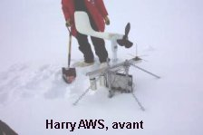</p>
        <p class="texte">Ces donn&eacute;es (carr&eacute;ment trafiqu&eacute;es) et  trompeusement attribu&eacute;es &agrave; la station <span class="textengras">Harry</span>, faussent s&eacute;rieusement les conclusions de l'article, ce qui justifie le titre amusant du billet de McIntyre &quot;<span class="textengras"><a href="http://www.climateaudit.org?p=5044">Quand Harry rencontre Gill</a></span>&quot; en &eacute;cho au titre du film bien connu: &quot;Quand Harry rencontre Sally&quot;. <span class="textengras">Steve MacIntyre </span>d&eacute;clare, preuves d&eacute;taill&eacute;es &agrave; l'appui, qu'&quot; En r&eacute;alit&eacute;, les donn&eacute;es propres &agrave; Gill montrent une l&eacute;g&egrave;re tendance au refroidissement de 1987 &agrave; 2002. </p>
        <p class="texte">La tendance forte au r&eacute;chauffement que l'on voit dans le <span class="textengras">&quot;nouvel Harry&quot;</span> provient enti&egrave;rement de l'impact de la recombinaison des deux jeux de donn&eacute;es issus de stations diff&eacute;rentes Harry et Gill. <span class="textengras">C'est du &quot;n'importe quoi&quot;,</span><span class="textengras"> conclut S. McIntyre</span>.<span class="textengras"></span></p>
        <p class="texte">&nbsp;</p>
        <p class="texte">&nbsp;</p>
        <p class="texte">Les deux images ci-contre (<a href="http://amrc.ssec.wisc.edu/aws/harrymain.html">source du &quot;facebook&quot; de Harry &agrave; l'universit&eacute; du Wisconsin</a>) de la <span class="textengras">station de mesure Harry</span> prises, l'une avant le d&eacute;senfouissement (en haut ) et apr&egrave;s le d&eacute;neigement (en bas) illustrent les difficult&eacute;s d'effectuer des mesures au sol dans l'antarctique. Belle hauteur de neige ! <br />
        Avant le d&eacute;gagement, Harry devait  peut-&ecirc;tre pouvoir encore mesurer la vitesse du vent, mais pour le reste...</p>
        <p class="texte">&nbsp;</p>
        <p class="texte">&nbsp;</p>
      <p class="texte">A noter qu'une des principales critiques apport&eacute;es &agrave; <span class="textengras">la crosse de hockey de l'&eacute;tude dendrochronologique de Michael Mann</span> &eacute;tait justement relative &agrave; la recombinaison de donn&eacute;es (bien choisies)  issues d'arbres d'esp&egrave;ces diff&eacute;rentes...D&eacute;cid&eacute;ment, on ne se refait pas. De mon temps, ce genre de pratique n'avait pas cours, o&ugrave; bien les referees de Nature s'en apercevaient... Curieuse &eacute;poque ! </p></th>
    </tr>
    <tr bgcolor="#CCFFFF">
      <th height="1801" align="left" valign="top" bordercolor="#3366CC" bgcolor="#FFFFCC" class="titre" scope="col"><p><span class="textengras">29 Jan. 2009<a name="groen" id="groen"></a> : </span>R&eacute;unis en congr&egrave;s, les scientifiques reconnaissent  que la fonte des glaciers Groenlandais s'est calm&eacute;e. Les pr&eacute;visions apocalyptiques d'Al Gore s'effondrent... </p>
        <p><span class="texte">Cet article fait &eacute;cho a celui du<a href="oceans.html#kanger"> 16 Nov 2008 </a>, dans ce m&ecirc;me dossier, qui montrait que la vitesse de descente du glacier situ&eacute; pr&egrave;s de <span class="textengras">Kangerlussuaq</span> diminuait progressivement depuis 17 ans. Il constitue aussi la suite de ce <a href="oceans.html#glacierg">billet</a>, du mois de Mars 2007. </span></p>
        <p><br />
        <span class="textengras">La r&eacute;cente r&eacute;union de l'AGU (American Geophysical Union) qui s'est tenue &agrave; San Francisco du 15 au 19 d&eacute;cembre 2008, </span> <span class="textengras">a permis de faire le point sur l'&eacute;volution de l'ensemble des glaciers du Groenland dont certains affirmaient qu'ils avaient atteint leurs points de non-retour et que nous allions &ecirc;tre engloutis, sous peu. </span></p>
        <p class="texte">De fait, les derni&egrave;res &eacute;tudes, rapport&eacute;es lors de cette conf&eacute;rence, montrent que, bien au contraire et &agrave; l'inverse des pr&eacute;visions (pr&eacute;dictions, sc&eacute;narios), <span class="textengras"> la descente de la totalit&eacute; des glaciers Groenlandais s'est brusquement ralentie au cours de ces derni&egrave;res ann&eacute;es...</span></p>
        <p class="texte">L'image ci-dessus qui montre le front de l'&eacute;coulement du <span class="textengras">glacier Helheim</span> en 2004, 2005 et 2006 , juste au dessous de la ligne noire) en est un bonne illustrations (<a href="http://www.sciencemag.org/cgi/content/full/323/5913/458a">source</a>). On voit que de ao&ucirc;t 2004 &agrave; ao&ucirc;t 2005, la vitesse de descente du front du glacier a augment&eacute;. Mais aussi que celle-ci s'est consid&eacute;rablement ralentie en 2006 ( puis en 2007 et 2008). L'Apocalypse que nous pr&eacute;disaient <span class="textengras">certains climatologues syst&eacute;matiquement alarmistes et Al Gore </span>ne s'est pas produit et a tr&egrave;s peu de chances de le faire. <span class="textengras">Le Professeur<a href="paroles.html#ollier"> Cliff Ollier</a></span><a href="paroles.html#ollier">, </a>sp&eacute;cialiste de glaciologie et des sols <a href="paroles.html#ollier">, </a> affirme m&ecirc;me, avec de solides arguments, que cela est totalement impossible.</p>
        <p class="texte">Souvenons nous que la publication (d'abord <a href="oceans.html#AR4">erron&eacute;e puis rectifi&eacute;e</a>) des pr&eacute;visions de la mont&eacute;e du niveau des mers (<span class="textengras">de l'ordre de 40 cm/ 100 ans</span>) par le <span class="textengras">GIEC &agrave; Paris en d&eacute;but d'ann&eacute;e 2007</span>, lors de son quatri&egrave;me rapport (<span class="textengras">AR4</span>), avait d&eacute;clench&eacute; une temp&ecirc;te de protestations  de la part d'un certain nombre de climatologues dont le plus virulent &eacute;tait <span class="textengras">Stefan Rhamstorf</span>. <br />
          Ce dernier, avec quelques coll&egrave;gues ( malheureusement) rassembl&eacute;s sous sa banni&egrave;re, clamaient haut et fort dans tous les m&eacute;dias et jusque dans les revues scientifiques, que <span class="textengras">le GIEC &eacute;tait trop &quot; conservateur&quot;</span> :  Le <span class="textengras">GIEC</span> avait soi-disant<span class="textengras"> &quot;oubli&eacute; la fonte imminente des deux g&eacute;ants&quot;</span> (sic - sous-entendu les glaciers du Groenland et l'Antarctique) qui feraient monter les eaux de plusieurs m&egrave;tres.. jusqu'&agrave; +73m, pr&eacute;cisait <span class="textengras">Rhamstorf,</span> si tout fondait...(<a href="oceans.html#rahmstorf">voir ici</a>). <br />
          Juste 
          quelques jours apr&egrave;s cet article tonitruant et particuli&egrave;rement alarmiste de Rahmstorf et al, paraissait un article apaisant (<span class="Science">Science</span> ( vol. <span class="textengras">315</span>, N&deg;5818, pp. 1559-1561) (online le 7 f&eacute;vrier 2007)), suivi d'une s&eacute;rie d'autres, qui ramenaient les choses &agrave; leur juste proportion en nous disant que la fonte des glaciers groenlandais s'&eacute;tait ralentie. <br />
        J'ai d&eacute;crit les p&eacute;rip&eacute;ties cet &eacute;pisode agit&eacute; dans <a href="oceans.html#glacierg">cette page, ici. </a></p>
      <p class="texte">Environ deux ans apr&egrave;s (!) ces d&eacute;couvertes ont &eacute;t&eacute; enfin confirm&eacute;es. Les g&eacute;ologues (dont beaucoup appartiennent au <span class="textengras">GIEC</span>) ont  reconnu l'&eacute;vidence incontournable des faits et la r&eacute;union de <span class="textengras">l'AGU du 15-19 Nov. 2008</span> n'a  fait rien d'autre que d'ent&eacute;riner officiellement ce qui &eacute;tait d&eacute;j&agrave; connu. <br />
        <span class="textengras">Ce qui est instructif, dans cette histoire, c'est la mani&egrave;re dont un certain nombre d'acteurs du r&eacute;chauffement climatique se sont empar&eacute;s de cette affaire </span>qui s'est termin&eacute;e ... en eau de boudin pour eux, sans jeu de mots et pour parler cr&ucirc;ment.</p>
      <p class="texte">Au cours de cette r&eacute;union, <span class="textengras">le glaciologue Tavi Murray </span>de l'Universit&eacute; de Swansea (UK), r&eacute;sumant l'opinion g&eacute;n&eacute;rale a d&eacute;clar&eacute; :</p>
      <p class="texte"><span class="textengras"> C'en est fini avec cette Apocalypse (Armaggedon) due aux glaciers du Groenland. &quot;C'est termin&eacute;.&quot;</span></p>
      <p class="texte"><span class="textengras">Richard Kerr</span> qui est &eacute;ditorialiste &agrave; <span class="Science">Science</span> et qui rapporte sur cette r&eacute;cente r&eacute;union de l'AGU, nous dit (<em class="Science">Science</em><a href="http://www.sciencemag.org/cgi/content/summary/323/5913/458a"> 23 January 2009: Vol. 323. no. 5913, p. 458 DOI: 10.1126/science.323.5913.458a</a>), avec un brin d'ironie, que &quot;<span class="textengras">Quelques climatologues ont sp&eacute;cul&eacute; sur le fait que le r&eacute;chauffement climatique pouvait avoir pouss&eacute; le Groenland au del&agrave; du point de non-retour dans un r&eacute;gime effrayant de pertes de glace d&eacute;mesur&eacute;es qui devaient conduire &agrave; une mont&eacute;e des eaux encore plus rapide</span> &quot;. Ceci est, sans aucun doute, une allusion aux d&eacute;clarations de <span class="textengras">Stefan Rhamstorf</span> et de ses suivistes alarmistes. </p>
      <p class="texte">Quant &agrave; <span class="textengras">Al Gore</span>, le c&eacute;l&egrave;bre nob&eacute;lis&eacute; (de la paix, par un jury Norv&eacute;gien), il en a fait beaucoup. Beaucoup trop sur ce sujet (aussi). Lors de ses tourn&eacute;es de pr&eacute;sentation de son oeuvre, une &quot;<span class="textengras">V&eacute;rit&eacute; qui d&eacute;range</span> &quot;, il s'effor&ccedil;ait de terroriser son auditoire en d&eacute;clarant que :</p>
      <p class="textengras"> &quot;Plus t&ocirc;t, cette ann&eacute;e [2006], de nouveau, une autre &eacute;quipe de scientifiques a signal&eacute; que les douze derniers mois ont vus l'apparition de 32 tremblements de terre des glaciers au Groenland avec des forces de 4,6 &agrave; 5,1 sur l'&eacute;chelle de Richter ce qui constitue un signe inqui&eacute;tant qu'une d&eacute;stabilisation massive est maintenant en cours &agrave; l'int&eacute;rieur de la seconde accumulation de glaces de la plan&egrave;te. C'est assez de glace pour &eacute;lever le niveau des mers du globe de 6 m&egrave;tres, s'il elle se casse et sombre dans la mer. Chaque jour qui passe nous apporte de nouveaux &eacute;l&eacute;ments de preuve que nous somme confront&eacute; &agrave; une situation d'urgence pour la plan&egrave;te. C'est une crise climatique qui exige une action imm&eacute;diate pour r&eacute;duire de mani&egrave;re brutale nos &eacute;missions de dioxyde de carbone, sur l'ensemble de la plan&egrave;te, pour faire baisser le thermostat de la terre et &eacute;viter la catastrophe. &quot; </p>
      <p class="textengras">Tout cela est donc tomb&eacute; &agrave; l'eau, par pans successifs comme ne l'ont pas fait les glaciers Groenlandais :<br />
      </p>
      <ul>
        <li><span class="texte">D'une part, l'&eacute;quipe qui avait observ&eacute; les craquements mena&ccedil;ants &eacute;voqu&eacute;s par </span><span class="textengras">Al Gore</span><span class="texte"> pense maintenant, apr&egrave;s des recherches compl&eacute;mentaires qu'il s'agit, en fait, du bruit des glissements successifs (et normaux) des nappes glaciaires et non pas d'un ph&eacute;nom&egrave;ne de d&eacute;stabilisation interne. (Nettles et al, 2008)</span><br />
          <br />
        </li>
        <li><span class="texte">D'autre part<span class="textengras"> la &quot;d&eacute;stabilisation massive &quot; d'Al Gore</span> r&eacute;sultant d'un glissement sous-jacent provoqu&eacute; par la fonte des eaux (processus popularis&eacute; par J. Hansen) a &eacute;t&eacute; d&eacute;montr&eacute; comme erron&eacute;e (Joughin et al 2008, Van de Wal et 2008) <br />
          ( <a href="oceans.html#kanger">voir une analyse de l' article de Van de Wal ici</a>). </span><br />
          <br />
        </li>
        <li><span class="texte">Et de plus, la marche en avant des glaciers Groenlandais s'est encore ralentie, ces derniers temps....</span><br />
        </li>
      </ul>
      <p class="texte">Voici comment <span class="textengras">Richard Kerr d&eacute;crit la situation dans le </span><span class="Science">Science </span><span class="textengras">du 23 Janvier 2009 :</span></p>
      <p class="textengras">&quot; Termin&eacute; pour l'Apocalypse due au glaces du Groenland. &quot; C'en est fini&quot; a d&eacute;clar&eacute; la glaciologiste Tavi Murray de l'Universit&eacute; de Swansea (UK) pendant une session du meeting. &quot;Il semble y avoir eu une extinction simultan&eacute;e&quot; de l'augmentation de la vitesse, a-t-elle dit. Pratiquement partout, autour du sud-Ouest du Groenland <span class="texte">(NDT : l&agrave; o&ugrave; les glaciers s'&eacute;coulent)</span> les vitesses d'&eacute;coulement son revenues &agrave; leur niveau de l'ann&eacute;e 2000....et personne ne saurait extrapoler le comportement excessif de la glace de cette &eacute;poque vers le futur&quot; <br />
        <span class="texte">Cette derni&egrave;re phrase est d'ailleurs confirm&eacute;e par un article tr&egrave;s r&eacute;cent de </span>Faezeh Nick et al.( Nature Geosciences <span class="texte">DOI:10.1038 on line 11 Jan. 2009) </span></p>
      <p class="texte">Ainsi, l'opinion g&eacute;n&eacute;rale est maintenant que la pr&eacute;vision tr&egrave;s mod&eacute;r&eacute;e de la hausse du niveau des mers contenue dans le rapport du <span class="textengras">GIEC </span>de Janvier 2007, pourrait ne pas &ecirc;tre si &eacute;loign&eacute;e que &ccedil;a de la r&eacute;alit&eacute;...</p>
      <p class="texte"><span class="textengras">On se demande si l'Ex VP Al Gore va supprimer les quelques 12 pages de son livre,</span> remplies d'images alarmantes (le Word Trade Center Memorial sous l'eau, notamment) qui montrent ce que serait le monde si le niveau des mers s'&eacute;levait de 6 m&egrave;tres &agrave; cause de la fonte du Groenland, ce qui est in&eacute;vitable selon Gore. <br />
          <span class="textengras">N'y comptez pas </span><span class="texte">et la partie cr&eacute;dule du grand public, les politiques et les affairistes y croient toujours, dur comme fer ! </span> </p>
      <p class="textengras">Nous somme parvenus &agrave; un point o&ugrave; les &eacute;vidences scientifiques ne sont m&ecirc;me plus entendues... <br />
        Pour certains, c'est devenu une vraie religion.</p>
      <p class="texte"><span class="textengras">Quant &agrave; la grande presse et aux m&eacute;dias</span>,<span class="textengras"> ils se sont montr&eacute;s particuli&egrave;rement discrets au sujet de ces nouvelles d&eacute;couvertes, tr&egrave;s rassurantes, sur les glaciers du Groenland </span>...ils continuent de propager les id&eacute;es d&eacute;lirantes d'<span class="textengras">Al Gore</span>, d&egrave;s que l'occasion se pr&eacute;sente. <br />
        Pourquoi ? Peur de perdre des auditeurs et des lecteurs si on n'annonce pas des catastrophes ? <br />
        Mr et Mmes des m&eacute;dias, c'est d&eacute;j&agrave; fait, vous avez d&eacute;j&agrave; perdu beaucoup de lecteurs et d'auditeurs...<br />
        Juste une suggestion pour am&eacute;liorer les tirages et les audimats et plut&ocirc;t que de programmer la vente des journaux dans le p&acirc;tisseries :</p>
      <p class="texte"><span class="textengras">Et si vous vous contentiez tout simplement d'informer et de rapporter  la v&eacute;rit&eacute; ? Quelle qu'elle soit.</span>   <br />
      </p></th>
    </tr>
    <tr bgcolor="#CCFFFF">
      <th height="1140" align="left" valign="top" bgcolor="#CCFFFF" class="titre" scope="col"><p><span class="textengras">10 Jan. 2009<a name="MOC" id="MOC"></a> :</span> Bonne nouvelle  ! La &quot;pompe&quot; de l'atlantique Nord est de retour ! <span class="texte">(<a href="http://www.nature.com/ngeo/press_releases/ngeo1108.html">source1</a>, <a href="http://www.whoi.edu/page.do?pid=7545&amp;tid=282&amp;cid=54366&amp;ct=162">source2</a>) </span></p>
      <p class="texte">Comme vous le savez, les puissants &eacute;changes thermiques qui se produisent au sein des oc&eacute;ans et dont on sait qu'ils ont une profonde influence sur le climat, r&eacute;sultent d'un jeu complexe de convections intenses et de courants internes ou surfaciques. </p>
      <p class="texte">Le syst&egrave;me est compliqu&eacute; mais voici, bri&egrave;vement, comment les choses se passent : </p>
      <p class="texte">Il existe un syst&egrave;me complexe de courants marins, voyageant   &agrave; diverses profondeurs et que l'on appelle &quot;Le grand tapis roulant de l'oc&eacute;an&quot; soit en anglais &quot;<span class="textengras">The Great Ocean Conveyor</span>&quot; que l'on voit sur la figure ci-contre. Comme d'habitude le rouge indique le chaud et le bleu (ou mauve), le froid. </p>
      <p class="texte">Le r&ocirc;le de ce tapis roulant est fondamental pour la d&eacute;termination du climat de la plan&egrave;te. Il agit de mani&egrave;re &agrave; distribuer la chaleur accumul&eacute;e &agrave; l'&eacute;quateur et aux tropiques vers le p&ocirc;les et vice-versa. De m&ecirc;me, ils joue aussi un r&ocirc;le essentiel pour d&eacute;terminer la salinit&eacute; des eaux tout au long de son parcours. C'est ce que l'on appelle la circulation thermo-haline. (haline =saline). </p>
      <p class="texte">Comme tout tapis roulant qui se respecte celui-ci a besoin d'un moteur. <span class="textengras">Ce moteur, tr&egrave;s puissant, est une sorte de pompe</span> qui se trouve plac&eacute;e dans la portion Est de l'Atlantique Nord. Cette <span class="textengras">pompe</span> agit de la mani&egrave;re suivante : Les eaux froides et denses situ&eacute;es &agrave; la surface de l'Atlantique Nord (entre le Labrador et le Groenland et en mer d'Irminger) s'enfoncent en profondeur et p&eacute;n&egrave;trent dans la branche inf&eacute;rieure du grand tapis roulant oc&eacute;anique. Pour remplacer ce courant d'eau froide descendant, les eaux chaudes de surface provenant des tropiques ( notamment du Mexique) sont tir&eacute;es vers le Nord en empruntant la branche sup&eacute;rieure du Grand Tapis Roulant. Ce courant chaud qui longe les c&ocirc;tes de l'Europe du Nord serait (mais c'est encore disput&eacute; de nos jours) responsable de la douceur relative, vu les latitudes, du Nord de l'Europe.</p>
      <p class="texte"><span class="textengras">Du point de vue de ceux qui sont soucieux du CO2 atmosph&eacute;rique</span> qui se trouve en &eacute;quilibre avec celui qui est contenu dans les oc&eacute;ans (selon la temp&eacute;rature de surface de ces derniers), le &quot;Grand Tapis Roulant&quot; joue un r&ocirc;le d&eacute;terminant parce qu'il est responsable de la plong&eacute;e en profondeur des eaux charg&eacute;es de ce gaz o&ugrave; il finit par se faire pi&eacute;ger dans les fonds sous marins sans espoir de retour. C'est donc un &eacute;l&eacute;ment fondamental de l'&eacute;limination du CO2 anthropique ou naturel. Cependant, pour que ce m&eacute;canisme puisse op&eacute;rer, il faut que les eaux charg&eacute;es de CO2 puissent descendre &agrave; des profondeurs suffisantes, c'est &agrave; dire &agrave; pr&egrave;s de 1000m de profondeur.</p>
      <p class="texte">On comprend ainsi que le <span class="textengras">Grand Tapis Roulant </span>et, surtout, sont moteur, <span class="textengras">la pompe de l'Atlantique Nord</span>, fasse l'objet d'une surveillance attentive de la part des oc&eacute;anographes comme ceux qui ont publi&eacute; l'article dont il est question ici. Il s'agit d'une collaboration Franco (<span class="textengras">Ifremer</span>)-Am&eacute;ricaine (Woods Hole Oceanographic Institution), d&eacute;j&agrave; &agrave; l'oeuvre pour l'entretien des balises <span class="textengras">ARGO</span> que j'ai &eacute;voqu&eacute;es <a href="oceans.html#temperoceans">plus bas.</a> Voici la r&eacute;f&eacute;rence de cet article publi&eacute; dans Nature Geosciences : </p>
      <h3 class="texte"><span class="textengras">&quot;Surprenant retour retour de la convection profonde de l'oc&eacute;an Nord Atlantique subpolaire pendant l'hiver 2007-2008</span>.&quot; 
        <!--<span class="page">&nbsp;<abbr title="pages">pp</abbr>621 - 622 </span>-->
        Kjetil  V&aring;ge, Robert S. Pickart, Virginie Thierry, Gilles Reverdin, Craig M.  Lee, Brian Petrie, Tom A. Agnew, Amy Wong and Mads H. Ribergaard<br />
        Published online: 30 November 2008 | <abbr title="Digital Object Identifier">doi</abbr> 10.1038/ngeo382</h3>
      <p class="texte">En effet, gr&acirc;ce aux r&eacute;centes balises <span class="textengras">Argo</span>, ces chercheurs ont pu constater que <span class="textengras">la pompe qui descend les masses d'eau froide et charg&eacute;es de CO2 </span>vers les fonds sous-marins<span class="textengras">, a brusquement repris de la vigueur en atteignant des profondeurs impressionnantes, pendant l'hiver 2007-2008. </span>Ces m&ecirc;mes chercheurs s'inqui&eacute;taient que, depuis une d&eacute;cennie environ, la pompe Nord-Atlantique avait beaucoup faibli ce qu'ils attribuaient au r&eacute;chauffement des oc&eacute;ans, bien entendu. Compte tenu du fait que l'&eacute;t&eacute; 2007 a constitu&eacute; un record en mati&egrave;re de fonte de la mer Arctique, il y a en effet de quoi &ecirc;tre surpris. </p>
      <p class="texte">A ce sujet et dans cet article, les chercheurs pr&eacute;cisent que<span class="textengras"> &quot;L'augmentation du flux d'eau froide, liquide et gel&eacute;e, dans la mer du Labrador &eacute;tait probablement reli&eacute;e &agrave; l'importante perte de la glace arctique qui a contribu&eacute; &agrave; &eacute;tablir le minimum record de l'extension de la glace observ&eacute; pendant l'&eacute;t&eacute; 2007. Ironiquement, la disparition de la glace Arctique, qui a &eacute;t&eacute; attribu&eacute;e au r&eacute;chauffement global, peut avoir servi de d&eacute;clencheur au retour de l'enfouissement des eaux froides pendant l'hiver, dans l'Atlantique Nord&quot;. </span></p>
      <p class="texte"><span class="textengras">Note </span>: On ressent un zeste d'ironie dans cette derni&egrave;re phrase... Si on suit leurs observations, on en d&eacute;duit qu'il s'agit l&agrave; d'un m&eacute;canisme de<span class="textengras"> r&eacute;troaction n&eacute;gative</span> par lequel une fonte excessive des glaces de la mer arctique (comme celle de l'&eacute;t&eacute; 2007) provoque, in fine, une activation de la pompe du tapis roulant de l'Atlantique, lui-m&ecirc;me propice &agrave; l'enfouissement naturel du CO2 et donc ... (si on en croit les mod&egrave;les du <span class="textengras">GIEC</span>) &agrave; un refroidissement global ! La Nature est tr&egrave;s bien faite comme nous en avons vu quelques exemples dans <a href="DMS.html">cette page</a>. </p>
      <p class="texte">Il est utile de pr&eacute;ciser que de tels &eacute;v&eacute;nements, en effet surprenants, d&eacute;montrent l'extraordinaire complexit&eacute; de la machine climatique. Evidemment rien de tout ceci ne figure dans aucun des 22 mod&egrave;les climatiques du <span class="textengras">GIEC</span>....qui se pr&eacute;tend pourtant certain &agrave; 90% d'avoir tout compris ! </p>
      <p class="texte">On constate aussi que l'id&eacute;e m&ecirc;me d&quot;<span class="textengras">amplification arctique</span>&quot; <span class="textengras">ch&egrave;re aux alarmistes, aux m&eacute;dias en mal de copie et &agrave;  Marc Serreze</span>, d&eacute;j&agrave; mise &agrave; mal par le prof. <span class="textengras">Roger Pielke Sr</span> <a href="bonnetdane.html#serreze">(voir ici)</a>, se voit une fois encore, contredite par les faits. Dans le cas constat&eacute; ici-m&ecirc;me, il s'agit plut&ocirc;t d'une &quot;att&eacute;nuation arctique&quot;. <br />
        Un peu plus de modestie face &agrave; la complexit&eacute; de la machine climatique serait de mise, me semble-t-il. </p>
      <p class="texte">&nbsp;</p></th>
    </tr>
    <tr bgcolor="#CCFFFF">
      <th width="861" height="1414" align="left" valign="top" bgcolor="#FFFFCC" class="textengras" scope="col"><p class="textengras">6 d&eacute;cembre 2008: Ce sont les oc&eacute;ans<a name="compo" id="compo"></a> qui r&eacute;chauffent ou refroidissent les continents  et pas les gaz &agrave; effet de serre comme l'affirmaient les mod&egrave;les d'ordinateurs.... </p>
        <p class="texte">Un article, r&eacute;volutionnaire   dans l'ambiance actuelle, vient de para&icirc;tre dans la revue &quot;<span class="textengras"><a href="http://www.springerlink.com/content/au9x40l201105273">Climate Dynamics</a></span>&quot; 2008, sous la signature de deux chercheurs (<span class="textengras">Gilbert P. Compo et Prashant D. Sardeshmukh</span>) de l'Universit&eacute; du Colorado et du c&eacute;l&egrave;bre<span class="textengras"> ESRL</span> (Earth System Research Laboratory) de la <span class="textengras">NOAA</span>. Je rappelle que  l'ESRL est le laboratoire qui fournit, entre autres, les donn&eacute;es officielles sur le taux de CO2 contenu dans l'atmosph&egrave;re relev&eacute; sur le site de Mauna Loa (<a href="indicateurs.html#CO2">Voir ici</a>).<br />
          <span class="textengras">Cet article remet en cause les fondements m&ecirc;me de la mod&eacute;lisation du r&eacute;chauffement de le plan&egrave;te par l'effet de serre des gaz tels que le CO2, CH4 etc. qui constitue la Bible des alarmistes.</span> J'avais fait le commentaire du preprint de cet article en Juillet 2008. L'article est maintenant d&eacute;finitif. A noter qu'il a fallu pr&egrave;s d'un an pour que cet article finisse par &ecirc;tre publi&eacute; par la revue Climate Dynamics (<a href="http://www.springerlink.com/content/au9x40l201105273/fulltext.pdf">texte en pdf ici</a>), ce qui n'est pas tr&egrave;s &eacute;tonnant au vu des r&eacute;sultats pr&eacute;sent&eacute;s par cet article... </p>
        <p class="texte"> A la diff&eacute;rence de son contenu, le titre de cet article est plut&ocirc;t sybillin : <span class="textengras">&quot;Oceanic influences on recent continental warming&quot; </span> (DOI : <span class="labelValue">10.1007/s00382-008-0448-9</span>) soit &quot;Influences oc&eacute;aniques sur le r&eacute;chauffement continental &quot; </p>
        <p class="texte">Voici les quatre premi&egrave;res lignes significatives du r&eacute;sum&eacute; de cet article qui devrait s&eacute;rieusement perturber le sommeil de quelques mod&eacute;lisateurs ( s&eacute;rieux). Les autres continueront &agrave; bien dormir...  : </p>
        <p class="texte"><em>&quot;Evidence is presented that the recent worldwide land warming has occurred largely in response to a worldwide<br />
          warming of the oceans rather than as a direct response to increasing greenhouse gases (GHGs) over land. Atmospheric model simulations of the last half-century with prescribed observed ocean temperature changes, but without prescribed GHG changes, account for most of the land warming.&quot;</em></p>
        <p class="texte">En fran&ccedil;ais ( les caract&egrave;res grossis sont du traducteur): &quot;<span class="textengras">Cet article pr&eacute;sente des preuves que le r&eacute;cent r&eacute;chauffement mondial des terres a r&eacute;sult&eacute; en grande partie du r&eacute;chauffement global des oc&eacute;ans, plut&ocirc;t que par l'action directe de l'augmentation des gaz &agrave; effet de serre (GES) au dessus des continents. Des mod&egrave;les num&eacute;riques de l'atmosph&egrave;re des cinquante derni&egrave;res ann&eacute;es dans lesquels on inclut les variations observ&eacute;es des temp&eacute;ratures oc&eacute;aniques , </span><span class="titre">mais en excluant les variations des gaz &agrave; effet de serre, rendent compte de la plus grande partie du r&eacute;chauffement des continents.&quot;</span></p>
        <p class="textengras">Comment les deux auteurs de cet article qui contredit de mani&egrave;re fondamentale les mod&egrave;les de l'effet de serre en vigueur, bas&eacute;s sur les GCM (General ou Global, Circulation ou Climate, Model), sont-ils parvenus &agrave; cette conclusion ?<br /> 
          <span class="texte">Leur d&eacute;marche est particuli&egrave;rement astucieuse tout en &eacute;tant tr&egrave;s simple. C'est une m&eacute;thode diff&eacute;rentielle. <br />
        La voici :</span></p>
        <ul>
          <li><span class="texte"> Les chercheurs ont collect&eacute; les donn&eacute;es d&eacute;taill&eacute;es des temp&eacute;ratures des surfaces des oc&eacute;ans de 1961 &agrave; 2006.</span></li>
          <li class="texte">Ils ont calcul&eacute; la diff&eacute;rence entre les donn&eacute;es allant de 1991 &agrave; 2006 et celles allant de 1961 - 1990. Ils ont obtenus la figure suivante :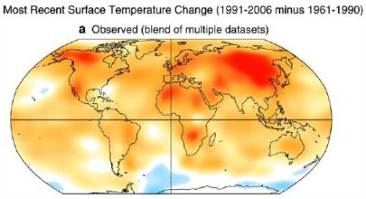</li>
        </ul>
        <p>&nbsp;</p>
        <p class="texte">Le code de couleur est le code standard (+ rouge= + chaud, bleu=froid) </p>
        <p>&nbsp;</p>
        <p>&nbsp;</p>
        <p>&nbsp;</p>
        <p>&nbsp;</p>
        <p>&nbsp;</p>
        <ul>
          <li class="texte">Comme on le voit, &agrave; quelques exceptions pr&egrave;s, les oc&eacute;ans se sont r&eacute;chauff&eacute;s entre les deux sous-p&eacute;riodes consid&eacute;r&eacute;es. Les deux chercheurs ont alors introduit ce dernier r&eacute;sultat, c'est &agrave; dire la variation de la SST(sea surface temperature = temp&eacute;rature de surface des mers) <span class="textengras"> comme seul for&ccedil;age</span> dans une s&eacute;rie de diff&eacute;rents mod&egrave;les utilis&eacute;s par les mod&eacute;lisateurs du<span class="textengras"> GIEC</span>. Autrement dit, ils se sont demand&eacute; comment varieraient les temp&eacute;ratures si on supposait que seule l'influence des oc&eacute;ans avait de l'importance, en excluant tout autre for&ccedil;age comme les gaz &agrave; effet de serre (GES) etc. <br />
          </li>
          <li class="texte">Ils ont aussi &quot;fait tourner&quot; toute une s&eacute;rie de mod&egrave;les (ECHAM4.5, BASA/NSIPP, NCAR/CAM3...) en incluant les for&ccedil;ages habituels avec GES, a&eacute;rosols d'origine diverses, ozone stratosph&eacute;rique et troposph&eacute;rique, halocarbones (CFC) etc.. </li>
        </ul>
        <p>Le r&eacute;sultat est sans appel : &quot;Les mod&egrave;les atmosph&eacute;riques du dernier demi-si&egrave;cle, incluant les changements de temp&eacute;rature observ&eacute;s pour les oc&eacute;ans et <span class="titre">excluant les gaz &agrave; effet de serre</span>, rendent compte de la plupart du r&eacute;chauffement des terres...&quot; </p>
        <p class="texte">Quant &agrave; leur conclusion, elle enfonce le clou et donne des pr&eacute;cisions : </p>
        <p class="textengras">&quot;En r&eacute;sum&eacute;, nos r&eacute;sultats mettent en lumi&egrave;re le r&ocirc;le significatif de l'influence oc&eacute;anique plut&ocirc;t que les effets directs et localis&eacute;s du for&ccedil;age radiatif anthropique, lors du r&eacute;cent r&eacute;chauffement climatique des continents. Ils sugg&egrave;rent que le r&eacute;chauffement r&eacute;cent des oc&eacute;ans a provoqu&eacute; le r&eacute;chauffement des continents par le biais d'une s&eacute;rie de m&eacute;canismes qui sont habituellement reconnus comme l'impact global des variations des temp&eacute;ratures de surface des oc&eacute;ans. Ces derniers ont accru l'humidit&eacute; dans l'atmopsh&egrave;re, modifi&eacute; les mouvements verticaux de l'atmosph&egrave;re ainsi que les champs de nuages r&eacute;sultants. Ils ont aussi perturb&eacute; les flux radiatifs aux courtes et grandes longueurs d'onde vers les surfaces continentales. &quot; </p>
        <p>&nbsp;</p>
        <p class="textengras">Trois  remarques compl&eacute;mentaires :</p>
        <ul>
          <li class="texte">Les oc&eacute;ans se refroidissent depuis quelque temps, notablement gr&acirc;ce au basculement de la Pacific Decennal Oscillation. D'apr&egrave;s cette &eacute;tude, <span class="textengras">un<a href="froid.html"> refroidissement </a>&agrave; venir des continents est donc pratiquement in&eacute;vitable..</span>.<br />
            <br />
</li>
          <li class="texte">C'est  une nouvelle d&eacute;monstration de ce que <span class="textengras">l'on appelle le caract&egrave;re continental ou oc&eacute;anique du climat</span>. Les oc&eacute;ans jouent manifestement un r&ocirc;le fondamental sur la plus grande partie des continents qui se trouve &agrave; proximit&eacute; de ces derniers . Par contre les zones r&eacute;solument continentales comme le d&eacute;sert de Gobi en Chine, subissent cette influence dans une moindre mesure et les &eacute;carts de temp&eacute;rature y sont tr&egrave;s importants (+ et - 45&deg;C, malgr&eacute; l'effet de serre !). Bref, on en revient &agrave; la bonne vieille climatologie traditionnelle qui a &eacute;t&eacute; bien maltrait&eacute;e ces derniers temps. Entre nous, le fait que les mod&egrave;les d'ordinateurs (ECHAM4.5, BASA/NSIPP, NCAR/CAM3) rejoignent, enfin, la climatologie traditionnelle est plut&ocirc;t une bonne nouvelle... Encore faut-il savoir les utiliser intelligemment comme l'ont fait ces deux chercheurs. <br />
C'est dans cet esprit, mais &agrave; partir de r&eacute;sultats de diff&eacute;rents programmes d'ordinateurs, que les auteurs de l'article cit&eacute; ci-dessus, prescrivent de mener des analyses locales plut&ocirc;t que d'essayer de mod&eacute;liser le climat comme un ensemble global en essayant de reproduire les variations de la fameuse &quot; temp&eacute;rature globale moyenne &quot; qui, de fait, n'a aucun sens profond, m&ecirc;me si c'est un indicateur commode pour les journaux t&eacute;l&eacute;vis&eacute;s. <br />
            <br />
          </li>
          <li class="texte">J'en connais, (au moins), deux qui doivent &ecirc;tre tr&egrave;s satisfaits des conclusions de cet article. Il s'agit d'abord du grand climatologue <span class="textengras"><a href="http://climatesci.org">Roger Pielke</a> Sr</span> qui s'efforce depuis des ann&eacute;es de faire comprendre que c'est l'&eacute;norme masse thermique des oc&eacute;ans (70% de la plan&egrave;te) qui d&eacute;termine le climat et qu'il faut &eacute;tudier ce dernier &agrave; l'&eacute;chelle locale et non globale. Il s'agit aussi du m&eacute;t&eacute;orologue <a href="http://icecap.us/index.php" class="textengras">Joseph d'Aleo</a> qui montre sur son site (<a href="http://icecap.us/index.php">ICECAP</a>) jour apr&egrave;s jour, l'&eacute;tonnante corr&eacute;lation qui existe entre les temp&eacute;ratures du globe et les oscillations naturelles des temp&eacute;ratures oc&eacute;aniques (ENSO et PDO en particulier). </li>
        </ul>
        <p class="textengras">La question qui se pose alors est &eacute;videmment : mais alors qu'est ce qui r&eacute;chauffe ou refroidit les oc&eacute;ans ? Est-ce l'effet de serre ? </p>
        <p class="texte">Pour r&eacute;pondre &agrave; cette question, il suffit de se rem&eacute;morer le travail de quatre chercheurs am&eacute;ricains White W.B., Lean J., Cayan D.R. et Dettiger M.D. effectu&eacute; en 1997 (Journal of Geophysical research 102; 3255) (<a href="theses.html">Explication aussi ici</a>). Ces scientifiques ont cherch&eacute; s'il existait une corr&eacute;lation entre le rayonnement solaire (la TSI, <a href="indicateurs.html">voir ici</a>) et les temp&eacute;ratures de surface (SST) des trois principaux oc&eacute;ans de la plan&egrave;te.</p>
        <p class="texte"></p>
        <p class="texte">La courbe du bas repr&eacute;sente la variation de l'irradiance solaire totale de 1955 &agrave; 1997. Les trois courbes sup&eacute;rieures celles des oc&eacute;ans. La quatri&egrave;me est celle (moyenn&eacute;e) de l'oc&eacute;an global. </p>
        <p class="texte">A moins d'avoir de mauvaises lunettes, on ne peut s'emp&ecirc;cher de remarquer l'&eacute;tonnant synchronisme entre les variations de temp&eacute;ratures SST des oc&eacute;ans et celles de la TSI. </p>
        <p class="texte">Remarquez, en particulier, les anomalies froides des oc&eacute;ans et de la TSI qui basculent ensemble en 1977. Chacun sait que la plan&egrave;te, apr&egrave;s une p&eacute;riode froide de 1950 &agrave; 1977, a bascul&eacute; vers le r&eacute;chauffement jusqu'au grand El Ni&ntilde;o de 1998. Le basculement inverse s'est amorc&eacute; depuis deux ou trois ans. </p>
        <p class="texte">Or, comme on sait que les variations de l'irradiance solaire (TSI) qui ont des amplitudes trop faibles pour expliquer tout cela, sont parfaitement corr&eacute;l&eacute;es aux fameux cycles solaires de 11 ans...comme on l'explique <a href="theses.html">dans cette page</a>.</p>
        <p class="texte">Point de CO2 ni d'effet de serre dans tout cela ! </p>
        <p class="textengras">Le soleil. Tout simplement, le soleil ! </p>
      <p class="texte">Vous avez acc&egrave;s aux <a href="indicateurs.html">grands indicateurs officiels</a> et actualis&eacute;s du climat, des p&ocirc;les, des oc&eacute;ans et du soleil sur cette <a href="indicateurs.html"> page</a>. </p></th>
    </tr>
    <tr bgcolor="#CCFFFF">
      <th height="2065" align="left" valign="top" bgcolor="#99FFFF" class="textengras" scope="col"><p>16 Nov. 2008 : <a name="kanger" id="kanger"></a>Les mod&egrave;les des mod&eacute;lisateurs du GIEC pr&eacute;voient que la vitesse d'&eacute;coulement des glaciers Groenlandais devrait s'acc&eacute;lerer... <span class="titre">Les mesures montrent, qu'au contraire, elle  ralentit depuis, au moins, 17 ans.</span> L'&eacute;coulement se fait par saccades successives de br&egrave;ves dur&eacute;es, caract&eacute;ristiques du frottement sec, ce qui est encore contraire aux mod&egrave;les. </p>
        <p> <span class="texte">Un groupe de chercheurs N&eacute;erlandais  de l'</span><span class="textengras">Institut pour la Recherche Atmosph&eacute;rique et Marine de l'Universit&eacute; d'Utrecht</span><span class="texte">, vient de publier un article sur la vitesse d'&eacute;coulement de la zone d'ablation d'un grand glacier Groenlandais dans la revue</span> <span class="PenseeUnique">Science </span><span class="texte">(</span> R.S.W. Van de Wal et al, Science, 4 juillet 2008, 321 p. 111, 113 [DOI: 10.1126/science.1158540]. <span class="texte">Le titre original de cet article est particuli&egrave;rement r&eacute;v&eacute;lateur de l'&eacute;tat actuel de la science climatique. Il sera comment&eacute; ci-dessous. </span></p>
        <p class="texte">Rappelons que la zone d'ablation d'un glacier est la zone qui se trouve aux pieds du glacier. Elle est en contact avec la zone de terre ferme d&eacute;pourvue de glace. La zone &eacute;tudi&eacute;e par notre &eacute;quipe de chercheurs N&eacute;erlandais, situ&eacute;e pr&egrave;s du glacier de <span class="textengras">Kangerlussuaq</span> est repr&eacute;sent&eacute;e par un petit rectangle noir sur le dessin ci-contre. Elle se trouve juste au Nord du cercle Arctique. </p>
        <p class="texte">Dans son principe, l'exp&eacute;rience est assez simple :Il s'agissait d'utiliser une s&eacute;rie de balises (num&eacute;rot&eacute;es de 4, 5, SHR, 6 &agrave; 10), r&eacute;guli&egrave;rement dispos&eacute;es dans la glace sur une distance de quelques 200 km, s'&eacute;chelonnant depuis le sol terrestre (marqueur K pour Kangerlussuaq) et dispos&eacute;es sur une ligne de plus grande pente sur un versant du glacier &eacute;tudi&eacute;. Diff&eacute;rentes techniques sont utilis&eacute;es pour rep&eacute;rer la position exacte des balises et suivre leur d&eacute;placement par rapport &agrave; un point fixe, au cours du temps. Depuis 2005, c'est le GPS (Global Positioning System) qui est mis en oeuvre. La pr&eacute;cision est remarquable. Ces mesures sont effectu&eacute;es avec r&eacute;gularit&eacute; depuis 17 ans, c'est &agrave; dire depuis l'&eacute;t&eacute; 1990.</p>
        <p class="texte"><span class="textengras">Les r&eacute;sultats de cette &eacute;tude sont &eacute;difiants</span>. Ils portent sur la variation de la vitesse d'&eacute;coulement du glacier. Ils permettent aussi de mettre en &eacute;vidence la mani&egrave;re dont se fait cet &eacute;coulement qui progresse &agrave; une vitesse de l'ordre de la centaine de m&egrave;tres par an. Voici une   figure r&eacute;v&eacute;latrice du contenu de l'article. Elle en dit plus qu'un long discours.</p>
        <p class="texte">&nbsp;</p>
        <p class="texte">En ordonn&eacute;es sont report&eacute;es les vitesses d'&eacute;coulement en fonction du temps pour les diff&eacute;rentes balises. Ces vitesses sont mesur&eacute;es en m&egrave;tres par an. </p>
        <p class="texte">Les balises S4 &agrave; S10 sont &eacute;chelonn&eacute;s &agrave; partir de la sonde K (sur la terre ferme). S10 se trouve &agrave; environ 200 km du point K. Les balises S4 et S5 se trouvent, dans la glace, &agrave; la limite de la terre ferme. Comme on peut le constater du premier coup d'oeil, les balises les plus proches de la terre, c'est &agrave; dire celles situ&eacute;es &agrave; plus basse altitude, se d&eacute;placent &agrave; plus grande vitesse que celles situ&eacute;es &agrave; plus haute altitude, ce qui n'est pas &eacute;tonnant, &agrave; priori. Le glacier s'&eacute;coule par le bas. <br />
        Par contre, ce qui est beaucoup plus int&eacute;ressant c'est que la plupart des vitesses des balises situ&eacute;es sur le flanc du glacier ont ralenti au cours des 17 derni&egrave;res ann&eacute;es. (courbes en gras). Les vitesses des balises restantes sont approximativement constantes. <span class="textengras">Autrement dit, non seulement les glaciers ne s'&eacute;coulent pas plus vite comme les m&eacute;dias, Al Gore, Hansen et d'autres proph&egrave;tes de l'apocalypse, du &quot;runaway&quot; et du &quot;tipping point&quot; voudraient vous le faire croire, mais leur &eacute;coulement se ralentit ! </span></p>
        <p class="texte"><span class="textengras">Cette observation est en opposition formelle avec les pr&eacute;visions des mod&eacute;lisateurs</span> (dont James Hansen) qui partent d'un mod&egrave;le imagin&eacute; par De Saussure (celui-l&agrave; m&ecirc;me dont s'est inspir&eacute; Arrh&eacute;nius pour<a href="effetdeserre.html"> l'effet de serre</a>) en 1779, selon lequel, le glacier descend en glissant sur la paroi inf&eacute;rieure lubrifi&eacute;e par l'eau r&eacute;sultant de la fonte de la surface. Ceci serait favoris&eacute; notamment par l'effet des &quot;moulins&quot; (image ci-contre) qui sont des sortes de cavit&eacute;s  tubulaires qui descendent depuis le surface superficielle du glacier jusqu'au sol dur. Les mod&eacute;lisateurs ont m&ecirc;me pr&eacute;vu qu'une <span class="textengras">r&eacute;troaction positive serait &agrave; l'oeuvre qui devrait provoquer l'acc&eacute;l&eacute;ration de la descente des glaciers... </span></p>
        <p class="texte">Cette vision d'&eacute;coulement des glaciers par lubrification de la base est violemment combattue par de nombreux g&eacute;ologues sp&eacute;cialis&eacute;s dont le<span class="textengras"> Professeur Cliff Ollier</span> (<a href="paroles.html#ollier">lire ici)</a> qui explique pourquoi ce mod&egrave;le (Hansen-De Saussure) est compl&egrave;tement faux. </p>
        <p class="texte">Il n'en reste pas moins que ce dernier est le mod&egrave;le officiel adopt&eacute; par les tenants du <span class="textengras">GIEC </span>et par tous ceux qui en tirent de juteux contrats de recherche. On imagine donc sans peine, l'embarras dans lequel nos chercheurs N&eacute;erlandais ont dus &ecirc;tre plong&eacute;s &agrave; la lecture de leurs r&eacute;sultats. D'ailleurs, et ceci est tout &agrave; fait exemplaire de ce qui se passe actuellement en science climatique (comme d&eacute;crit par<a href="lindzen.html"> R. Lindzen</a>) , leur discours est d'une tr&egrave;s tr&egrave;s grande prudence &agrave; ce sujet. Ils marchent sur des oeufs ! Voici ce qu'ils d&eacute;clarent dans cet article dont les r&eacute;sultats d&eacute;mentent carr&eacute;ment la th&eacute;orie en vigueur :<br /> 
        &quot;<em> it has been suggested that the interaction between meltwater production  and ice velocity provides a positive feedback, leading to a more rapid  and stronger response of the ice sheet to climate warming than hitherto  assumed. Our results are not quite in line with this view.</em>&quot; <br />
        soit en fran&ccedil;ais :</p>
        <p class="texte">&quot;Il a &eacute;t&eacute; sugg&eacute;r&eacute; que l'interaction entre la production d'eau de fonte et la vitesse de la glace provoque une r&eacute;troaction positive, conduisant &agrave; une r&eacute;ponse plus rapide et plus intense de la nappe de glace au r&eacute;chauffement climatique que celle suppos&eacute;e pr&eacute;c&eacute;demment. <span class="textengras">Nos r&eacute;sultats ne sont pas tout &agrave; fait dans la ligne de ce mod&egrave;le.&quot; </span></p>
        <p class="textengras">&quot; R&eacute;sultats pas tout &agrave; fait dans la ligne de ce mod&egrave;le &quot; ? : C'est vraiment le moins que l'on puisse dire pour de r&eacute;sultats qui sont carr&eacute;ment en opposition avec les mod&egrave;les ! </p>
        <p class="textengras">D'autre part et ceci devrait s&eacute;rieusement faire r&eacute;fl&eacute;chir les tenants du &quot;mod&egrave;le &quot;en question, <span class="texte">les mesures de nos chercheurs N&eacute;erlandais ont montr&eacute; que la descente des glaciers ne se fait pas de mani&egrave;re continue mais plut&ocirc;t par une suite de glissements rapides successifs, suivis d'interruptions brutales ainsi que le montre l'examen des d&eacute;placements des sondes au cours d'une br&egrave;ve p&eacute;riode qui va du 3 au 28 ao&ucirc;t 2006 repr&eacute;sent&eacute;s sur le graphe ci-contre, &agrave; droite. Ce graphe montre que l'ensemble des sondes a subi un d&eacute;placement rapide sur une br&egrave;ve p&eacute;riode allant du 15 au 22 ao&ucirc;t environ, puis s'est arr&ecirc;t&eacute; brutalement (vitesse proche du z&eacute;ro le 25 ao&ucirc;t).( Sur ce graphique, ,l'ordonn&eacute;e repr&eacute;sente la vitesse en mm/an) </span></p>
        <p class="textengras">Pour un physicien de la m&eacute;canique des sols, ou d'ailleurs, pour un physicien tout court, un tel comportement est r&eacute;v&eacute;lateur d'un processus dit de &quot;stick-slip&quot; soit &quot;coll&eacute;-gliss&eacute;&quot;. En physique, il est caract&eacute;ristique d'un m&eacute;canisme de frottement &quot;sec&quot;<span class="texte"> (cad du mouvement relatif de deux corps solides, non lubrifi&eacute;s, restant en contact, lorsque l'on cherche &agrave; d&eacute;placer l'un par rapport &agrave; l'autre : le d&eacute;placement se fait par glissements successifs entrecoup&eacute;s d'arr&ecirc;ts brusques. C'est par exemple ce qui se produit lors du broutage des machines outils et aussi lorsque l'archet excite la vibration de la corde du violon et encore ce qui se produit lors de l'ouverture d'une porte qui grince. Chacun sait qu'une goutte d'huile suffit &agrave; faire dispara&icirc;tre le grincement...</span>Autrement dit, si le glissement &eacute;tait lubrifi&eacute; comme le croient les mod&eacute;lisateurs, on ne devrait pas observer ce genre de discontinuit&eacute;s dans le glissement. C'est d'ailleurs tr&egrave;s pr&eacute;cis&eacute;ment pour &eacute;viter ceci qu'on utilise les lubrifiants. </p>
        <p class="textengras">Ainsi, cette observation tr&egrave;s int&eacute;ressante devrait suffire, &agrave; elle seule, pour d&eacute;monter l'id&eacute;e du glissement lubrifi&eacute; par l'eau de fonte mis en avant par De Saussure, Hansen et beaucoup d'autres et pour orienter les recherches dans une autre direction. En effet et comme l'explique le <a href="paroles.html#ollier">Professeur Ollier </a>qui est un sp&eacute;cialiste de la question, l'&eacute;coulement d'un glacier ne se fait pas glissement continu. Le glacier &quot;rampe&quot; dit-il . Les observations des chercheurs n&eacute;erlandais lui donnent enti&egrave;rement raison. De fait, il s'agit bien d'un processus de frottement sec dans lesquels les &quot;moulins&quot; et l'eau de fonte n'ont rien &agrave; voir comme le dit le Prof. Ollier. </p>
        <p class="textengras"><span class="texte">Mais quel est donc le titre de cet article &eacute;crit par notre &eacute;quipe de N&eacute;erlandais ? Le voici </span>: 
          <label for="321.5885.111." class="texte" title="Select this article"><em>&quot;Large and Rapid Melt-Induced Velocity Changes in the Ablation Zone of the Greenland Ice Sheet</em></label>
          <span class="texte">&quot;</span> Soit &quot;Variations rapides et importantes de vitesses,  r&eacute;sultant de la fonte, dans la zone d'ablation la nappe de glace Groenlandaise&quot; </p>
        <p class="textengras"><span class="texte">Pas un mot sur le ralentissement de l'&eacute;coulement observ&eacute; depuis 17 ans ! Pas un mot sur les autres th&eacute;ories qui expliquent correctement ce genre de comportement ! </span>Un titre &agrave; vous faire dresser les cheveux sur la t&ecirc;te ou &agrave; vous inciter &agrave; construire une arche de No&eacute; <span class="texte">et  qui n'a que peu de rapports avec les d&eacute;couvertes r&eacute;elles et importantes  de l'article, mais qui permet sans doute de passer le barrage des referees (arbitres)de la revue. </span></p>
        <p class="textengras"><span class="texte">La conclusion de cet article ne manque pas de sel, elle non plus; Elle affirme : &quot;<em>At present, we cannot conclude that this feedback is important</em>&quot; &quot;</span>A pr&eacute;sent, nous ne pouvons pas conclure que cette r&eacute;troaction est importante<span class="texte">&quot;... Certes ! Non seulement ils ne peuvent pas conclure dans ce sens puisque la vitesse d'&eacute;coulement ralentit au lieu d'acc&eacute;lerer, mais ils devraient en tirer la conclusion oppos&eacute;e..<br />
        </span><span class="texte"> Mais non, c'est impossible. Malgr&eacute; les r&eacute;sultats de mesures sans appel, il ne faut surtout pas se brouiller avec les coll&egrave;gues et les donneurs de cr&eacute;dits. Mais o&ugrave; est donc pass&eacute;e la d&eacute;ontologie des scientifiques ? C'est typiquement le syndrome des Professeurs <a href="lindzen.html">Lindzen</a> (voir <a href="bonnetdane.html#exemples">d'autres exemples ici</a> ) et <a href="paroles.html#paltridge">Paltridge, <span class="Style19">lequel </span></a> a &eacute;crit ceci :</span></p>
        <p class="textengras"><span class="textengras"> &quot;Le fait est que la communaut&eacute; des chercheurs a &eacute;t&eacute; si loin dans la promotion de la peur chez le grand public, qu'un retour en arri&egrave;re, m&ecirc;me sur une fraction de cette histoire, porterait un coup fatal &agrave; sa r&eacute;putation et ass&eacute;nerait une claque politique &agrave; la science en g&eacute;n&eacute;ral. Ainsi, comme les corpuscules dans le sang, les chercheurs du monde entier accourent en grand nombre pour repousser l'infection provoqu&eacute;e par toute id&eacute;e qui menace la croyance, soigneusement entretenue, dans le d&eacute;sastre climatique.&quot; </span></p>
        <p class="textengras">Les scientifiques du climat ont  perdu le Nord comme l'a &eacute;crit l'un de mes <a href="http://www.amazon.fr/scientifiques-ont-perdu-nord/dp/2259207340/ref=sr_1_1?ie=UTF8&amp;s=books&amp;qid=1223220895&amp;sr=1-1">coll&egrave;gues</a>. <span class="texte">Quant aux m&eacute;dias, on peut s'attendre &agrave; ce qu'ils r&eacute;percutent <em>urbi et orbi</em> le titre de cet article en gardant le contenu pour eux...S'ils le lisent, bien s&ucirc;r. </span></p>
        <dl>
          <dt>
            <label for="321.5885.111." title="Select this article"></label>
            <label for="321.5885.111." class="textengras" title="Select this article"></label>
          </dt>
        </dl>      </th>
    </tr>
    <tr bgcolor="#CCFFFF">
      <th height="962" align="left" valign="top" bgcolor="#FFFFCC" class="textengras" scope="col"><p>25 octobre 2008 <a name="alaska" id="alaska"></a>:<span class="texte"> S'il est vrai qu'une hirondelle ne fait pas le printemps, des observations &eacute;tonnantes, m&ecirc;me locales, peuvent constituer un indice de changements importants.</span> <span class="titre">Ainsi, les grands glaciers de l'Alaska se sont remis &agrave; cro&icirc;tre, ce qu'ils ne faisaient plus depuis 250 ans.</span>..<span class="texte">titre un <a href="http://www.dailytech.com/Alaskan+Glaciers+Grow+for+First+Time+in+250+years/article13215.htm">article de DailyTech</a> qui reprend un texte publi&eacute; dans le <a href="http://www.adn.com/news/environment/story/555283.html">Anchorage Daily News</a>, bas&eacute; lui-m&ecirc;me sur l'interview d'un glaciologue du </span><span class="textengras">US Geological Survey</span><span class="texte">, </span>Bruce Molnia<span class="texte">. </span></p>
      <p>L'&eacute;t&eacute; 2008 a &eacute;t&eacute; particuli&egrave;rement froid dans de nombreuses r&eacute;gions de l'h&eacute;misph&egrave;re Nord. <span class="texte">Ainsi et pour la premi&egrave;re fois depuis que des mesures s&eacute;rieuses existent, la fonte de la masse de neige et de glace des grands glaciers situ&eacute;s &agrave; l'ouest d'</span><span class="textengras">Anchorage </span><span class="texte">en Alaska n'a pas, et de loin, compens&eacute; le gain de l'hiver dernier.</span> </p>
      <p><span class="texte">Voici ce que dit le glaciologue sp&eacute;cialiste de cette r&eacute;gion, </span>Bruce Molnia <span class="texte">:&quot;</span><span class="textengras"> A la mi-Juin, j'ai &eacute;t&eacute; surpris de voir encore de la neige au niveau de la mer dans Prince William Sound. De mani&egrave;re g&eacute;n&eacute;rale, le temps de cet &eacute;t&eacute; a &eacute;t&eacute; le pire que j'ai connu durant ces 20 derni&egrave;res ann&eacute;e.&quot;</span>..&quot;Sur le champ de glace de Juneau, il y avait encore 20 pieds de neige fra&icirc;che sur la surface, &agrave; la fin Juillet. Le glacier de Bering, un endroit sur lequel je travaille, n'a pas &eacute;t&eacute; d&eacute;neig&eacute; avant le d&eacute;but Ao&ucirc;t.&quot;..</p>
      <p class="texte">Cet &eacute;v&eacute;nement constitue un record<span class="textengras"> depuis le milieu de l'ann&eacute;e 1700</span>, date &agrave; laquelle la r&eacute;gion a &eacute;t&eacute; visit&eacute;e par des explorateurs Russes. <span class="textengras">Molnia </span>estime que les glaciers avaient perdu environ 15% de leur superficie depuis cette &eacute;poque, ce qui repr&eacute;sente une surface de la taille du Connecticut. D'apr&egrave;s Molnia une diff&eacute;rence de seulement 3 ou 4&deg;C est suffisante pour rompre l'&eacute;quilibre gains-pertes et faire passer les glaciers d'une p&eacute;riode de r&eacute;tr&eacute;cissement rapide &agrave; une p&eacute;riode de croissance rapide. C'est ce qui s'est pass&eacute; entre les ann&eacute;es 1600 &agrave; 1900 quand la plan&egrave;te est sortie du petit &acirc;ge glaciaire. <br />
      A noter que l'&eacute;t&eacute; &agrave; Anchorage a connu une moyenne de 3&deg;C en dessous de la norme. </p>
      <p class="texte">Bien entendu, tout comme <span class="textengras">Molnia</span>, nous ne pouvons pr&eacute;voir l'avenir &agrave; partir d'un &eacute;v&eacute;nement aussi localis&eacute; dans le temps. N&eacute;anmoins, nous rapprochons ces observations du fait que l'arctique, de mani&egrave;re g&eacute;n&eacute;rale, subit un refroidissement tr&egrave;s pr&eacute;coce en ce d&eacute;but d'automne 2008 avec une reprise des glaces qui se produit avec une <span class="textengras">vitesse remarquable</span>, comme le montrent les observations satellitaires rassembl&eacute;e sur le graphe ci-contre. (<a href="bonnetdane.html#pugh">Lewis Pugh</a> n'a vraiment pas eu de chance !) 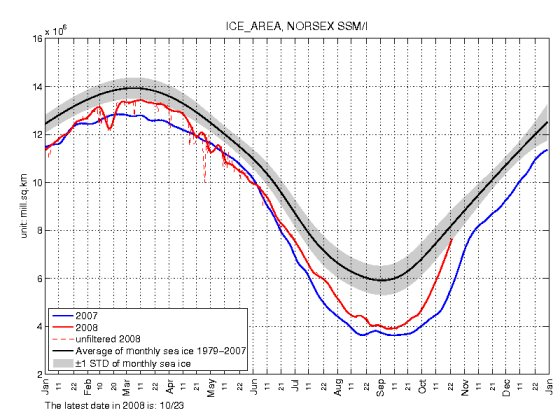</p>
      <p class="texte">&nbsp;</p>
      <p class="texte">Sur ce graphe que vous retrouverez avec de nombreux autres sur la <a href="indicateurs.html"> page de indicateurs, </a>la courbe en rouge repr&eacute;sente la superficie de la glace arctique de Janvier 2008 au 23 octobre 2008. La courbe en noir repr&eacute;sente la moyenne 1979-2007 que nous avons donc d&eacute;j&agrave; pratiquement rejoint puisque nous touchons la bordure de la zone gris&eacute;e qui repr&eacute;sente l'erreur de mesure. Ce n'&eacute;tait pas le cas en 2007. </p>
      <p class="texte">Qu'on le veuille ou non, l'ann&eacute;e 2008 marque un refroidissement marqu&eacute; des zones septentrionales. Cela ne semble d'ailleurs pas &ecirc;tre limit&eacute; &agrave; cet h&eacute;misph&egrave;re puisque les temp&eacute;ratures moyennes globales ont aussi enregistr&eacute; cette baisse des temp&eacute;ratures, tout comme  la zone antarctique (<a href="indicateurs.html">indicateurs</a>). M&ecirc;me s'il est trop t&ocirc;t pour en tirer des conclusions, force est de constater que ces observations vont dans le sens des pr&eacute;visions des scientifiques qui pr&eacute;voient un <a href="froid.html">refroidissement </a>&agrave; venir. <br />
        <span class="textengras">Wait and see ! </span></p>
      <p class="texte">Il est &eacute;tonnant (?)  que cette nouvelle rafra&icirc;chissante du 13 octobre n'ait pas &eacute;t&eacute; reprise par les grands m&eacute;dias francophones qui ne parlent que <a href="oceans.html#borloo">des glaciers qui fondent, sans trop savoir pourquoi. </a></p>
      <p class="texte"><span class="textengras">28 Nov. 2008</span> : <span class="textengras">De grands glaciers Norv&eacute;giens se sont aussi remis &agrave; cro&icirc;tre.</span>.. (<a href="http://www.dailytech.com/Glaciers+in+Norway+Growing+Again/article13540.htm">source</a>) et leur flux de descente diminue depuis l'an 2000 ... </p></th>
    </tr>
    <tr bgcolor="#CCFFFF">
      <th align="left" valign="top" class="textengras" scope="col"><p><span class="textengras">14 octobre 2008 <a name="wunsch" id="wunsch"></a></span><span class="titre">:</span> <span class="titre">Les pr&eacute;visions des mod&egrave;les pour la hausse du niveau des oc&eacute;ans sont entach&eacute;s de nombreuses incertitudes ce qui fait qu'il est impossible de donner des estimations fiables pour l'avenir.</span></p>
        <p><span class="textengras">L'oc&eacute;anologue renomm&eacute; Carl Wunsch </span><span class="texte">et deux coll&egrave;gues (</span><span class="textengras">Rui M. Ponte</span><span class="texte">, Lexington USA) et </span><span class="textengras">Patrick Heimbach</span><span class="texte">, Cambridge USA) ont publi&eacute; r&eacute;cemment dans le &quot;Journal of Climate&quot; une &eacute;tude approfondie et exhaustive du niveau des oc&eacute;ans intitul&eacute;e : <br />
        </span><span class="textengras">&quot;Tendances d&eacute;cennales des mod&egrave;les des niveaux des mers : 1993-2004&quot;; (<a href="sea_level_5may2007.pdf">pdf du MIT, ici</a>) <br />
        Ce travail a &eacute;t&eacute; effectu&eacute; avec le support de la NASA et de la NOAA ainsi que du centre de calcul NCAR. </span></p>
        <p>&nbsp;</p>
        <p class="texte"><span class="textengras">Carl Wunsch du Massachusetts Institute of Technology (MIT, </span>Comme Richard Lindzen<span class="textengras">) </span>n'est pas un climato-sceptique. Bien qu'il ait &eacute;t&eacute; interview&eacute; dans le film de Martin Durkin, &quot;<a href="http://video.google.com/googleplayer.swf?docId=-4123082535546754758&amp;hl=fr">The great global warming swindle</a>&quot;, il s'est d&eacute;fendu de toute opposition syst&eacute;matique aux th&egrave;ses officielles. Pourtant, l'article qu'il vient d'&eacute;crire dans le Journal of Climate (mai 2007) <span class="textengras">porte un rude coup aux catastrophistes du niveau des mers tels qu'Al Gore, Peter Rahmstorf, James Hansen, de nombreux &eacute;cologistes</span> ainsi que les m&eacute;dias et la cit&eacute; des Sciences (image ci-contre) qui nous annoncent, sans aucune base scientifique s&eacute;rieuse, <span class="textengras">des hausses du niveau des oc&eacute;ans de +6m, +20m voire +70m </span>... Le <span class="textengras">GIEC,</span> quant &agrave; lui, s'est limit&eacute;, lors du dernier <span class="textengras">AR4-2007</span> ( Fourth Assessment Report, 4&egrave;me rapport d'&eacute;valuation) &agrave; une pr&eacute;vision moyenne de +42cm en cent ans. Tout cela n'est pas s&eacute;rieux si on en cro&icirc;t l'article de <span class="textengras">Carl Wunsch</span> et ses collaborateurs. </p>
        <p class="texte">En effet, ces auteurs pr&eacute;cisent qu'ils ont utilis&eacute; toutes les donn&eacute;es rendues disponibles par le dernier cri de la  technologie comme le pr&eacute;cise le r&eacute;sum&eacute; de l'article dont voici quelques extraits traduits en fran&ccedil;ais :</p>
        <p class="texte">&quot; Les estimations des variations r&eacute;gionales des niveaux marins du globe ont &eacute;t&eacute; obtenues &agrave; partir des mod&egrave;les <span class="textengras">GCM</span> (Mod&egrave;les de circulation g&eacute;n&eacute;rale) avec une r&eacute;solution horizontale de 1&deg; align&eacute;s sur quelques 100 millions d'observations oc&eacute;aniques et un nombre encore plus grand d'estimations m&eacute;t&eacute;orologiques pendant la p&eacute;riode 1993-2004. Les donn&eacute;es impliquent non seulement la variabilit&eacute; altim&eacute;trique mais la plupart des donn&eacute;es modernes en hydrographie, les profils des bou&eacute;es flottantes ARGO, les temp&eacute;ratures de surface et d'autres observations. Les tendances moyenn&eacute;es sur les distance des donn&eacute;es altim&eacute;triques sont explicitement supprim&eacute;es afin d'extraire les variations moyennes globales de longue dur&eacute;e impos&eacute;es par les seules observations in situ&quot;... &quot;Les estimations obtenues dans cet article donnent une moyenne globale d'environ<span class="textengras"> 1,6 mm/an </span>c'est &agrave; dire environ 60% de la mesure altim&eacute;trique pure dans laquelle environ 70% provient de l'addition d'eau externe. &quot; ...&quot; Les variations globales interannuelles sont peut-&ecirc;tre domin&eacute;es par les additions d'eau externes plut&ocirc;t que par les variations dues au r&eacute;chauffement. Les variations de la moyenne altim&eacute;trique globale, tr&egrave;s fr&eacute;quemment publi&eacute;e, est peut-&ecirc;tre bien correcte mais l'exactitude de ces mesures, souvent cit&eacute;es dans la litt&eacute;rature ne peut pas &ecirc;tre v&eacute;rifi&eacute;e par les observations existantes r&eacute;alis&eacute;es in-situ.&quot;..&quot;Il est possible que des erreurs syst&eacute;matiques dominent dans la plupart des estimations des variations des moyennes globales : Les valeurs publi&eacute;es et les marges d'erreur doivent &ecirc;tre utilis&eacute;es avec pr&eacute;caution&quot;.</p>
        <p class="texte">La conclusion de cet article est encore plus claire. En voici la fin qui porte un rude coup aux pr&eacute;visions des mod&egrave;les pour les ann&eacute;es &agrave; venir : <span class="titre"></span></p>
        <p class="texte"><em>&quot;It remains possible that the data base is insufficient to compute mean sea level trends with the accuracy necessary to discuss the impact of global warming&ndash;as disappointing as this conclusion may be. The priority has to be to make such calculations possible in the future&quot;</em>. Soit :</p>
        <p class="texte"><span class="textengras">&quot;Il reste la possibilit&eacute; que la base de donn&eacute;es soit insuffisante pour calculer les tendances du niveau moyen des mers avec la pr&eacute;cision n&eacute;cessaire pour pouvoir discuter de l'impact du r&eacute;chauffement global -aussi d&eacute;cevante que soit cette conclusion-. La priorit&eacute; doit &ecirc;tre de rendre de tels calculs possibles dans l'avenir&quot;. </span></p>
        <p class="texte">Autrement dit, la comparaison des mod&egrave;les et des observations est (une fois de plus) d&eacute;faillante et Carl Wunsch et ses coll&egrave;gues affirment qu'il est actuellement impossible ou irr&eacute;aliste d'esp&eacute;rer utiliser les mod&egrave;les actuels pour pr&eacute;voir l'&eacute;l&eacute;vation du niveau des mers... ce que, pourtant, tout le monde pr&eacute;tend savoir faire. Et jusque dans cent ans...</p>
        <p class="texte">Cet article est &agrave; rapprocher de celui de <span class="textengras">Koutsoyannis et al </span>&quot; <span class="textengras">Au sujet de la cr&eacute;dibilit&eacute; des pr&eacute;dictions climatiques</span>&quot; <a href="theses.html#koutso">dans cette page.</a> D&eacute;cid&eacute;ment, &ccedil;a va tr&egrave;s mal du c&ocirc;t&eacute; des mod&eacute;lisateurs .... et pas seulement pour le niveau des mers. Il n'y aurait pas un pobl&egrave;me du c&ocirc;t&eacute; GCM ? <br />
      </p>      </th>
    </tr>
    <tr>
      <th align="left" valign="top" bgcolor="#FFFFCC" scope="col"><p><span class="textengras">04 octobre 2008 :</span><span class="titre"><a name="borloo" id="borloo"></a>Ce sont les courants marins, naturels et d&eacute;cennaux qui ont provoqu&eacute; la fonte des glaciers Arctique et Antarctique Ouest </span><span class="textengras">et non pas le r&eacute;chauffement climatique, affirment plusieurs articles scientifique r&eacute;cents... </span></p>
        <p><span class="texte">Nous poursuivons  dans la s&eacute;rie des </span><span class="textengras">articles rafra&icirc;chissants </span><span class="texte">sur le devenir des p&ocirc;les et notamment sur celui du</span><span class="textengras"> p&ocirc;le Nord Arctique </span><span class="texte">ainsi que sur la </span><span class="textengras">p&eacute;ninsule Ouest de l'Antarctique</span><span class="texte">, en rapportant aujourd'hui sur un article (sign&eacute; par Richard Kerr) paru dans le dernier num&eacute;ro de la revue </span><span class="Science">Science </span><span class="texte">(3 oct 08). </span></p>
        <p class="texte">Cet article est, en fait, une br&egrave;ve revue  du contenu de deux papiers parus r&eacute;cemment, l'un dans <span class="textengras">Nature Geoscience</span> (1, 659 - 664 (2008), published online: 28 September 2008 ; doi:10.1038/ngeo316) et l'autre dans <span class="textengras">Geophysical Research Letters</span> (VOL. 35, L18602, doi:10.1029/2008GL034939,   2008). Les deux articles en question sont relativement techniques. Celui de Kerr est plus abordable. Voici donc une traduction fid&egrave;le des principaux extraits du texte de <span class="textengras">Kerr</span> dans <span class="Science">Science</span> :</p>
        <p><span class="texte"><span class="textengras">Texte original en anglais</span>: &quot; <em>The surge of glaciers draining both the Greenland and West Antarctic ice sheets has alarmed scientists and the public alike. Global warming appeared to be taking an early toll on the planet&rsquo;s largest stores of ice while acceleratingthe rise of sea level. But two new studies point to random, wind-induced circulation changes in the ocean&mdash;</em></span><span class="Style16">not global warming</span><span class="texte"><em>&mdash;as the dominant cause of the recent ice losses through those glaciers.</em>&quot;</span></p>
        <p class="texte">&quot; La d&eacute;ferlante des glaciers qui s'&eacute;coulent aussi bien du Groenland que des surfaces glac&eacute;es de la p&eacute;ninsule Ouest de l'Antarctique ont alarm&eacute; les scientifiques comme le grand public. Le r&eacute;chauffement climatique semblait avoir effectu&eacute; un pr&eacute;l&egrave;vement anticip&eacute; sur la plus grande r&eacute;serve de glace de la plan&egrave;te tout en contribuant &agrave; une acc&eacute;l&eacute;ration de la hausse du niveau des oc&eacute;ans. <span class="textengras">Cependant,  deux &eacute;tudes r&eacute;centes montrent que des changements al&eacute;atoires de circulation des oc&eacute;ans, dus aux vents, sont la cause principale</span><span class="titre"> -et non pas le r&eacute;chauffement global-</span><span class="textengras"> des pertes r&eacute;centes enregistr&eacute;es sur ces glaciers.&quot; </span>(Lettres en gras et grands caract&egrave;res du traducteur). </p>
        <p class="texte"><span class="textengras">&quot;Au Groenland, au moins, vous allez avoir des probl&egrave;mes pour attribuer cela au r&eacute;chauffement climatique&quot; d&eacute;clare le glaciologue Richard Alley de l'Universit&eacute; de Pennsylvanie (Coll&egrave;ge d'Etat).&quot;</span></p>
        <p class="texte"> L'article se poursuit en expliquant en substance que faute de donn&eacute;es suffisamment d&eacute;taill&eacute;es obtenues par les oc&eacute;anographes sur le comportement des oc&eacute;ans dans cette r&eacute;gion :</p>
        <p class="texte">&quot; ...L'oc&eacute;anologue physicien <span class="textengras">David Holland </span>de l'Universit&eacute; de New York et ses coll&egrave;gues, se sont tourn&eacute;s vers des scientifiques d'une autre sp&eacute;cialit&eacute; : les chercheurs des p&ecirc;cheries, lesquels ont enregistr&eacute; les temp&eacute;ratures des eaux profondes pr&egrave;s de la c&ocirc;te Sud-Ouest du Groenland en &eacute;tudiant la population des crevettes de 1991 &agrave; 2006. Hollande et ses coll&egrave;gues rapportent cette semaine dans <span class="textengras">Nature Geosciences</span> qu'un influx d'eau chaude et plus sal&eacute;e en 1997 a &quot;co&iuml;ncid&eacute; pr&eacute;cis&eacute;ment &quot; avec l'amincissement rapide et l'acc&eacute;l&eacute;ration de l'avance subs&eacute;quente du glacier Jakobshavn Isbrae, le glacier le plus prolifique en fuite de glace du Groenland. &quot;... &quot; Je pense que c'est fantastique, d&eacute;clare <span class="textengras">Bindschdler</span>. Ils avaient &ccedil;a, inscrit dans le Groenland&quot;. </p>
        <p class="texte">&quot;<span class="textengras">Holland </span>et ses coll&egrave;gues ont remont&eacute; la piste de l'influx de la chaleur oc&eacute;anique jusque dans l'atmosph&egrave;re au dessus de l'Atlantique Nord.Un affaiblissement brutal des vents, du &agrave; un ph&eacute;nom&egrave;ne atmosph&eacute;rique naturel, appel&eacute; l'Oscillation Atlantique Nord (NDLR : NAO en anglais) a apport&eacute; plus d'eau de la mer d'Irminger, pr&egrave;s de l'Islande, jusqu'&agrave; l'extr&eacute;mit&eacute; du Groenland, jusqu'au massif sous-jacent et sous la glace.&quot; </p>
        <p class="texte">&quot;<span class="textengras">Un processus identique peut avoir &eacute;t&eacute; &agrave; l'oeuvre dans le r&eacute;cent accroissement des pertes de glace de la p&eacute;ninsule Ouest de l'Antarctique</span>, comme les chercheurs l'ont rapport&eacute; dans le <span class="textengras">Geophysical Research Letters</span> du 18 septembre. Le mod&eacute;lisateur des glaciers <span class="textengras">Malte Thomas</span> <span class="textengras">de l'Institut Alfred Wegener pour les recherches polaires et marines de Bremerhaven (allemagne)</span>, et ses coll&egrave;gues, incluant <span class="textengras">Holland</span>, n'avaient pas non plus de donn&eacute;es sur les temp&eacute;ratures marines &agrave; cet endroit mais ils disposaient des donn&eacute;es sur les vents. Quand ils introduisirent ces donn&eacute;es dans les mod&egrave;les oc&eacute;an-glace, les vents changeants emmen&egrave;rent des eaux plus profondes et plus chaudes dans les mod&egrave;les, jusque la plaque continentale et sous la glace, dans les milieu des ann&eacute;es 1990 de telle fa&ccedil;on que les glaciers qui drainent la couche de glace de la partie Ouest de l'Antarctique se sont mis &agrave; acc&eacute;l&eacute;rer leurs pertes....&quot; <br />
          ______________________________</p>
        <p class="textengras">Et pourtant, une fois encore, que n'avons nous pas entendu et lu dans les m&eacute;dias au sujet du r&eacute;chauffement climatique qui, soi-disant, faisait fondre les glaciers des p&ocirc;les, &quot;plus vite que pr&eacute;vu&quot; ?<br />
            <span class="texte">Comme je l'ai toujours dit, les progr&egrave;s de la recherche finiront par percer, peu &agrave; peu, d&eacute;couverte apr&egrave;s d&eacute;couverte, la cro&ucirc;te &eacute;paisse de cet imbroglio politico-&eacute;conomico-pseudo-scientifico-m&eacute;diatique.</span></p>
        <p class="textengras"><span class="texte">Ce qu'il faut noter, parce que c'est amusant et r&eacute;v&eacute;lateur de ce qui se passe dans les publications de ces braves chercheurs, c'est que le deuxi&egrave;me article se termine par une phrase du genre : &quot;Mais &ccedil;a ne veut pas dire qu'il faut cesser de s'inqui&eacute;ter&quot;.</span> <br />
            <span class="texte">Pardi ! Comme l'a point&eacute; l'&eacute;minent climatologue am&eacute;ricain du MIT, </span>Richard Lindzen<span class="texte"> <a href="http://www.climatescience.org.nz/images/PDFs/lindzen190908.pdf">(ici)</a>, c'est la phrase magique et obligatoire pour qu'on continue &agrave; leur donner des cr&eacute;dits et que l'article soit accept&eacute; pour publication. </span></p>
        <p class="texte">Je parierais volontiers qu'on n'entendra jamais parler  ces articles rassurants qui nous disent que la fonte des glaciers Arctique et Antarctique (Ouest) n'a rien &agrave; voir avec le r&eacute;chauffement climatique,<span class="textengras"> ni sur France-Info, ni sur France 5, ni dans le Monde, ni dans Lib&eacute;ration, ni dans le Figaro, ni d'ailleurs dans aucun m&eacute;dia fran&ccedil;ais... </span></p>
        <p class="textengras"><span class="texte">D'ailleurs, les &quot;journalistes scientifiques&quot; de ces m&ecirc;me m&eacute;dias</span> s'&eacute;taient bien gard&eacute;s de mentionner l'article de Novembre 2007 <span class="texte">relatif &agrave; une annonce de la </span>NASA<span class="texte"> qui, d&eacute;j&agrave;, disait exactement la m&ecirc;me chose que les articles ci-dessus.. </span><br />
            <span class="texte">Voici un extrait de l'annonce de l'article du 15 nov. 2007 ( <a href="http://www.tgdaily.com/content/view/34866/113">source</a>) et rapport d&eacute;taill&eacute; ci-dessus (<a href="oceans.html#NASA">ici</a>) </span>:&quot; La NASA<span class="texte"> a annonc&eacute; mardi qu'apr&egrave;s des ann&eacute;es de recherche, une &eacute;quipe de scientifiques ont rassembl&eacute; des observations</span><strong> <span class="texte">montrant que </span>des &eacute;volutions normales et d&eacute;cennales de l'Oc&eacute;an Arctique sont largement responsables des changements climatiques de l'Arctique observ&eacute;s depuis plusieurs ann&eacute;es.&quot;</strong></p>
        <p class="texte"><span class="textengras">Replacez aussi ces d&eacute;couvertes scientifiques dans le contexte de la visite du 10 septembre 2007, de notre Ministre Jean-Louis Borloo &agrave; Ilulissat (glacier Kangerlua) au Groenland</span>, en Airbus pr&eacute;sidentiel, accompagn&eacute; de la cohorte habituelle des &quot;sommit&eacute;s de la climatologie fran&ccedil;aise&quot; et de quelques incontournables personnalit&eacute;s m&eacute;diatiques, pour la photo.<br />
          Le but &eacute;tait de sensibiliser notre Ministre aux d&eacute;g&acirc;ts provoqu&eacute;s par le r&eacute;chauffement climatique en contemplant le glacier proche d'Ilulissat (qui d&eacute;verse de la glace depuis les ann&eacute;es 1800 ) et qui est consid&eacute;r&eacute; comme &quot; le plus grand fournisseur d'icebergs de l'h&eacute;misph&egrave;re Nord (<a href="http://www.ambafrance-dk.org/spip.php?article2009">source</a>)&quot; (<span class="textengras">NDLR</span> : le scientifiques (voir ci-dessus) nous disent que c'est le glacier <span class="textengras">Jakobshavn Isbrae</span>, le plus grand fournisseur d'icebergs, mais bon, il faut impressionner le lecteur... on n'allait quand m&ecirc;me pas d&eacute;placer tout ce monde pour un glacier de seconde zone). </p>
        <p class="texte">Ci-contre, &agrave; droite : Le Ministre <span class="textengras">J-L Borloo et l'expert J-L Etienne &agrave; Ilulissat.</span> </p>
        <p class="texte"> Avec le recul, le compte-rendu du<span class="textengras"> journal le Monde,</span> par Laurence Caramel<span class="textengras">,</span> vaut  son pesant d'or. </p>
        <p class="texte">En voici un extrait (<a href="http://www.lemonde.fr/cgi-bin/ACHATS/acheter.cgi?offre=ARCHIVES&amp;type_item=ART_ARCH_30J&amp;objet_id=1004024">paru ici</a>) : &quot;Ilulissat, municipalit&eacute; de 4 600 habitants de l'ouest du Groenland,  avait jusqu'&agrave; pr&eacute;sent pour seule notori&eacute;t&eacute; d'avoir &eacute;t&eacute; class&eacute;e, en  2004, par l'Unesco au Patrimoine de l'humanit&eacute; pour la beaut&eacute;  &eacute;poustouflante de son paysage glaciaire, le plus vaste de l'h&eacute;misph&egrave;re  Nord. Pas de quoi faire l'ouverture des journaux t&eacute;l&eacute;vis&eacute;s. Mais les  choses sont en train de changer.<span class="textengras"> Les hommes politiques de tous bords  s'y pressent pour voir de leurs yeux l'impact du r&eacute;chauffement  climatique. Les plus sceptiques en reviennent, dit-on, convertis. Les  autres plus convaincus encore qu'il est urgent d'agir. &quot;</span></p>
        <p class="texte"><span class="textengras">Convaincus ? Il est urgent d'agir ?</span> <br />
            <span class="textengras">Non, pas exactement. Il est surtout urgent que nos &quot;hommes politiques de tout bord&quot; lisent (ou fassent lire par des gens comp&eacute;tents et non orient&eacute;s) la litt&eacute;rature scientifique sur ce ce sujet afin d'&eacute;viter de se faire ridiculiser et intoxiquer par certains activistes environnementalistes... </span></p>
        <p class="texte">Tels que, parmi bien d'autres, <a href="http://www.parismatch.com/parismatch/dans-l-oeil-de-match/reportages/jean-marc-jancovici-la-fonte-acceleree-du-groenland-est-une-tres-mauvaise-nouvelle">l'article de Paris Match du 08 sept 2008</a>, o&ugrave; l'expert de Nicolas Hulot, JM Jancovici, affirme que &quot;La fonte acc&eacute;l&eacute;r&eacute;e du Groenland est une tr&egrave;s mauvaise nouvelle&quot; parce qu'elle est due au r&eacute;chauffement climatique anthropique, bien entendu.</p>
        <p class="texte"><span class="textengras">Suite &agrave; la parution des ces articles scientifiques, il a &eacute;t&eacute; demand&eacute; &agrave; Connie Hedegaard</span>, <span class="textengras">la tr&egrave;s convaincue ministre du climat et de l'environnement Danois</span> qui organise les exp&eacute;ditions touristiques aux glaciers du Groenland (21 responsables politiques auraient d&eacute;j&agrave; fait le voyage), de faire des excuses aupr&egrave;s de ses visiteurs induits en erreur... La r&eacute;ponse de la ministre est &eacute;tonnante : peu importent les r&eacute;sultats de la recherche, elle va continuer (<a href="http://translate.google.com/translate?hl=fr&amp;u=http%3A%2F%2Fwww.180grader.dk%2Fnyheder%2FForskning_g_r_ikke_indtryk_p_Connie_Hedegaard_Forts_tter_ekskursioner_til_Gr_nland.php">Source</a> en Danois, traduit par Google) ! </p>
        <p class="texte"><span class="textengras">Une seule question se pose : Est-que 4 articles scientifiques concordants, dont 1 dans </span><span class="Science">Science </span><span class="textengras">, 1 dans <span class="Style17">Nature</span> et 2 dans <span class="Style17">Geophysical Research Letters,</span> &eacute;crits par une vingtaine de sp&eacute;cialistes reconnus qui affirment et expliquent que cette fonte des glaciers est parfaitement naturelle et n'a rien &agrave; voir avec le r&eacute;chauffement climatique provoqu&eacute; par les activit&eacute;s humaines, valent la parole des &quot;experts&quot; de Mr Hulot ou les d&eacute;clarations de la ministre Danoise ?</span> </p>
        <p class="texte">Aux yeux des  m&eacute;dias et des politiques, scientifiquement incultes : H&eacute;las, certainement pas  ! D'ailleurs, ils les ignorent. </p>
        <p class="textengras">Nous vivons une curieuse &eacute;poque : Une &eacute;poque dans laquelle la Science apporte la l&eacute;gitimit&eacute; &agrave; ceux qui ne lisent (ou ne comprennent) m&ecirc;me pas les articles &eacute;crits par les scientifiques authentiques. Quant aux politiques, sans doute aveugl&eacute;s par les flash des m&eacute;dias, leur confiance est bien mal plac&eacute;e... </p>
      <p class="texte">Mis &agrave; jour le 06/10/2008 </p></th>
    </tr>
    <tr>
      <th align="left" valign="top" bgcolor="#CCFFFF" scope="row"><p>27 sept. 2008 : <a name="permafrost" id="permafrost"></a><span class="textengras">Encore un article du journal</span> <span class="Science">Science</span> <span class="textengras">qui d&eacute;monte l'alarmisme des m&eacute;dias, de certains scientifiques et du GIEC en mati&egrave;re de m&eacute;thane qui serait, soit-disant, lib&eacute;r&eacute; lors de la fonte du perg&eacute;lisol (alias permafrost). </span><span class="texte">Voici comment le pr&eacute;sente le journal </span><span class="Science">Science</span><span class="texte"> :</span></p>
        <dl class="texte">
          <dt>
            <label for="321.5896.1648." class="textengras" title="Select this article">Ancient Permafrost and a Future, Warmer Arctic</label>
            (Ancient perg&eacute;lisol et un arctique futur, plus chaud) </dt>
          <dd>Duane G. Froese, John A. Westgate, Alberto V. Reyes, Randolph J. Enkin, and Shari J. Preece<br />
              <em>Science</em> 19 September 2008: 1648. <br />
              <span class="teaser">The  existence of a 700,000-year-old patch of permafrost in sub-Arctic  Canada shows that ground ice far from the pole can resist melting  during warm intervals.</span></dd>
          <dt><span class="textengras">en fran&ccedil;ais</span> <span class="textengras">&quot; l'existence d'une zone de perg&eacute;lisol dans le Canada sub-arctique, datant de 700.000 ans, montre que la glace enterr&eacute;e loin du p&ocirc;le, peut r&eacute;sister pendant les p&eacute;riodes chaudes. &quot;</span><br />
            Cet article publi&eacute; par 5 chercheurs Canadiens  fait &eacute;cho &agrave; <a href="oceans.html#willerslev">un autre</a>, du m&ecirc;me journal, que j'avais analys&eacute; en<span class="textengras"> Juillet 2007</span> et qui nous disait que le <span class="textengras">Groenland </span>peut lui aussi se r&eacute;chauffer de plusieurs degr&eacute;s, sans dommage particulier. </dt>
        </dl>
        <p class="texte"><span class="textengras">Les m&eacute;dias orient&eacute;s ou avides de scoops, les &eacute;cologistes alarmistes, quelques politiques  d&eacute;sinform&eacute;s et (h&eacute;las) quelques scientifiques </span>se font un plaisir, &agrave; intervalles r&eacute;guliers, de susciter  la peur chez nos contemporains en agitant<span class="textengras"> le spectre de la lib&eacute;ration du m&eacute;thane </span>et d'autres d&eacute;riv&eacute;s carbon&eacute;s lors de la fonte des terres gel&eacute;es de l'h&eacute;misph&egrave;re Nord. Jusqu'au <span class="textengras">GIEC</span> qui fait intervenir cette hypoth&egrave;se inqui&eacute;tante dans ses pr&eacute;dictions (sc&eacute;narios) num&eacute;riques d'&eacute;mission de gaz &agrave; effet de serre... </p>
        <p class="texte">Heureusement et comme je vous l'ai souvent dit dans les diff&eacute;rentes pages de ce site, <span class="textengras">la Nature et les progr&egrave;s de la recherche scientifique </span>se chargent, peu &agrave; peu, jour apr&egrave;s jour, de nous ramener  &agrave; la raison. Nous, mais pas les alarmistes qui n'en ont cure, &eacute;videmment. </p>
        <p class="texte">Je vous rappelle que le permafrost (<span class="textengras">permafrost est anglais. En fran&ccedil;ais on dit perg&eacute;lisol</span>) se trouve essentiellement limit&eacute; aux bassins s&eacute;dimentaires de l'arctique. <span class="textengras">Le perg&eacute;lisol</span> (c'est &agrave; dire : sol gel&eacute; de mani&egrave;re permanente) est, en r&eacute;alit&eacute;, une v&eacute;ritable terre gel&eacute;e recouverte de mani&egrave;re plus ou moins permanente par de la glace. Cette terre maintenant constamment gel&eacute;e a autrefois &eacute;t&eacute; le si&egrave;ge d'une abondante vie organique (arbres, v&eacute;g&eacute;tation diverse) qui a ferment&eacute;e au cours des milliers de si&egrave;cles pass&eacute;s. Comme chacun le sait, la d&eacute;gradation de toute substance organique d&eacute;gage du m&eacute;thane ainsi que toute une s&eacute;rie d'hydrocarbures jusqu'au p&eacute;trole brut. Ainsi les m&eacute;dias (mais peu de  glaciologues comp&eacute;tents qui savent &agrave; quoi s'en tenir) ont beau jeu de nous r&eacute;p&eacute;ter, images effrayantes &agrave; l'appui, que l'effet de serre va diverger parce que la lib&eacute;ration prochaine du m&eacute;thane (qui est un gaz &agrave; effet de serre tr&egrave;s actif) inclus dans le perg&eacute;lisol &quot;mettra le feu &agrave; la plan&egrave;te&quot;. J'ajoute, pour calmer les inquiets de la fonte des glaces de la mer arctique que celle-ci n'est constitu&eacute;e que de gros blocs de glace et ne contient donc ni &quot;perg&eacute;lisol&quot; ni  m&eacute;thane. <br />
          A noter que les Russes exploitent &agrave; Messoyakha (Sib&eacute;rie) les gaz contenus dans la &quot;vetchnaia merzlota&quot; (perg&eacute;lisol en russe, vetchnaia signifie &eacute;ternelle) comme une ressource naturelle. </p>
        <p class="texte">L'article dans <span class="Science">Science</span> de nos 5 chercheurs Canadiens concerne des recherches effectu&eacute;es dans la partie Nord-Ouest de l'Alaska (US). C'est une <span class="textengras">zone bien connue pour le contenu en hydrates de carbones du perg&eacute;lisol.</span> </p>
        <p class="texte">Voici ci-contre, une image indiquant la zone &eacute;tudi&eacute;e. Les zones de perg&eacute;lisol sont, en g&eacute;n&eacute;ral, distingu&eacute;es par leur teneur en sol gel&eacute; en permanence. Sur cette image </p>
        <p class="texte">CPZ : signifie zone de perg&eacute;lisol continu (&gt;90% de sol gel&eacute;)<br />
          DPZ : signifie zone de perg&eacute;lisol discontinu (entre 90 et 50%)<br />
          SPZ : signifie zone de perg&eacute;lisol sporadique (&lt; 50%)</p>
        <p class="texte">Les chercheurs ont &eacute;tudi&eacute;, en particulier, une zone de DPZ situ&eacute;e dans le Yukon. Dans cette zone le perg&eacute;lisol est assez chaud (T&gt;-2&deg;C), assez &eacute;pais (quelques dizaines de m&egrave;tres) et sa pr&eacute;sence d&eacute;pend des conditions d'exposition au soleil et aux vents. </p>
        <p class="texte">Cette zone, comme l'ensemble de la plan&egrave;te, a connu un r&eacute;chauffement au cours de la seconde moiti&eacute; du 20&egrave;me si&egrave;cle. Il est donc important de savoir ce qu'il pourrait advenir si ce r&eacute;chauffement se poursuivait dans l'avenir (ce qui n'est pas certain, <a href="froid.html">comme expliqu&eacute; ici</a>). </p>
        <p class="texte">Les auteurs de l'article ont &eacute;tudi&eacute; une zone assez particuli&egrave;re recouverte par ce que l'on appelle un <span class="textengras">t&eacute;phra</span> (une esp&egrave;ce de cro&ucirc;te solide plus ou moins form&eacute;e de verre) et qui est en fait le r&eacute;sultat d'une &eacute;jection violente de mat&eacute;riaux cons&eacute;cutive &agrave; une explosion volcanique. La datation de ce t&eacute;phra d'assez grande &eacute;tendue et dont le nom de &quot;Gold run tephra&quot; (le t&eacute;phra de la ru&eacute;e vers l'or) &eacute;voque le pass&eacute; des chercheurs d'or en Alaska, montre que celui-<span class="textengras">ci date de quelques -740.000 + ou - 60.000 ans</span>. Ainsi, il est clair que la terre gel&eacute;e situ&eacute;e en dessous de ce &quot;Gold run tephra&quot; est au moins aussi ancienne que ce dernier qui l'a prot&eacute;g&eacute;e au cours de ces centaines de milliers d'ann&eacute;es. C'est celle-ci que les chercheurs ont &eacute;tudi&eacute;. A noter en passant, qu'il s'agit de la partie glac&eacute;e la plus ancienne connue aux USA. </p>
        <p class="texte"><span class="textengras">Cette &eacute;tude montre que ce perg&eacute;lisol a surv&eacute;cu &agrave; toute une s&eacute;rie de cycles glaciaires et interglaciaires qui sont survenus depuis 740.000 ans. </span>On sait par ailleurs, notamment &agrave; l'aide de fossiles marins dat&eacute;s, que de nombreuses p&eacute;riodes interglaciaires ont &eacute;t&eacute; nettement plus chaudes que la p&eacute;riode pr&eacute;sente.<span class="textengras"> En d'autres termes, le perg&eacute;lisol ne se d&eacute;g&egrave;le que tr&egrave;s difficilement, m&ecirc;me pendant les p&eacute;riodes chaudes....</span></p>
        <p class="texte"><span class="textengras">Pour rassurer les inquiets, je vous laisse savourer la conclusion de cet article rafra&icirc;chissant. La voici </span>, avec, en passant, un petit coup de patte discret au mod&egrave;les num&eacute;riques du GIEC :</p>
        <p class="texte"><span class="textengras">&quot;La pr&eacute;sence de perg&eacute;lisol relique du moyen Pleistoc&egrave;ne sugg&egrave;re que la connaissance de l'&eacute;paisseur du perg&eacute;lisol et de sa distribution.... ...ne sont toujours pas correctement pris en compte dans les mod&egrave;les num&eacute;riques de la d&eacute;gradation du perg&eacute;lisol.</span> <span class="textengras">Cette &eacute;tude met en lumi&egrave;re la r&eacute;sistance du perg&eacute;lisol aux climats chauds des temps pass&eacute;s. Elle sugg&egrave;re que le perg&eacute;lisol et les r&eacute;servoirs de carbone associ&eacute;s qui se trouvent &agrave; plus de quelques m&egrave;tres de la surface peuvent &ecirc;tre beaucoup plus stables qu'on ne le pensait auparavant. &quot; </span></p>
        <p class="texte"></p>
        <p class="texte"> <span class="textengras">Note </span>: J'ajoute que je suis heureux qu'un tel article qui jette un s&eacute;rieux doute sur le dogme en vigueur, puisse enfin para&icirc;tre dans le journal <span class="Science">Science</span>. Il semble que l'&egrave;re  de l'ancien &eacute;diteur en chef de ce journal , le biologiste <span class="textengras">Donald Kennedy</span>, alarmiste de la premi&egrave;re heure et coll&egrave;gue du m&ecirc;me laboratoire que <a href="betisier.html">Stephen Schneider et Paul Ehrlich </a>&agrave; Stanford, soit enfin termin&eacute;e. Donald Kennedy a sign&eacute; un &eacute;ditorial c&eacute;l&egrave;bre, en 2007, d&eacute;clarant &quot;The game is over &quot;, autrement dit &quot;les jeux sont faits &quot;, c'est &agrave; dire, &quot;la science est achev&eacute;e&quot;.</p>
      <p class="texte">Science achev&eacute;e ? Au moins pour ce qui concerne la fonte du perg&eacute;lisol et de la lib&eacute;ration de m&eacute;thane, on voit bien que non ! </p></th>
    </tr>
    <tr>
      <th align="left" valign="top" bgcolor="#FFFFCC" scope="row"><p><span class="textengras">23 avril 2008 : Encore une nouvelle surprenante sur l'antarctique dans le contexte actuel :</span><br />
        La mer profonde de l'antarctique<a name="antarfroid" id="antarfroid"></a> se refroidit...</p>
        <p class="texte">d&eacute;clare l'attach&eacute;e de presse (Margaret Pauls) du c&eacute;l&egrave;bre institut allemand de recherche polaire le Alfred Wegener Institute. ce faisant elle r&eacute;sume les r&eacute;sultats d'une &eacute;quipe de 58 scientifiques &agrave; bord du plus puissant brise glace du monde, le Polarstern (en fran&ccedil;ais : l'&eacute;toile polaire). Cette &eacute;quipe de chercheurs est plac&eacute;e sous la direction du <span class="textengras">Dr Eberhard Fahrbach du Alfred Wegener Institute</span> (je rappelle que <span class="textengras">Alfred Wegener</span> &eacute;tait l'inventeur de la d&eacute;rive des continents, pr&eacute;curseur de la tectonique de plaques o&ugrave; Claude All&egrave;gre s'est illustr&eacute;. <a href="historique.html#wegener">Alfred Wegener</a> qui n'&eacute;tait &quot;que&quot; m&eacute;t&eacute;orologue eut, durant toute sa vie &agrave; subir les sarcasmes de l'establishment mondial des g&eacute;ologues de son &eacute;poque. Il ne fut reconnu que quelques 50 ans apr&egrave;s sa mort !. Le &quot;Alfred Wegener Institute&quot; allemand est sans aucun doute une des organisations les mieux &eacute;quip&eacute;es pour ce genre de mission en Antarctique. Il collabore activement aupr&egrave;s des quelques 50000 scientifiques aux recherches qui sont men&eacute;es actuellement sur nos deux p&ocirc;les. </p>
        <p class="texte">Le texte qui suit est extrait d'un site allemand de pr&eacute;-publication de nouvelles scientifiques (<a href="http://idw-online.de/pages/de/image66350">source</a>). Je le compl&eacute;terai, si n&eacute;cessaire, lorsque l'article scientifique aura &eacute;t&eacute; publi&eacute;.<br />
          Ci-contre, une sonde dite &quot;CTD&quot; que le Polarstern immerge au fond des eaux glaciales de l'antarctique. Il y p&eacute;n&egrave;tre aussi profond&eacute;ment que possible gr&acirc;ce &agrave; ses possibilit&eacute;s de brise glace. <br />
          .Les sondes de ce type sont habilit&eacute;es &agrave; mesurer plusieurs param&egrave;tres fondamentaux tels que la salinit&eacute;, la conductivit&eacute; et bien s&ucirc;r, la temp&eacute;rature. (photo Ismael Nunez-Riboni du Alfred Wegener Institute).</p>
        <p class="texte"> Voici ce que nous dit le Dr <span class="textengras">Eberhard Fahrbach </span>au sujet de sa mission : &quot; <span class="textengras">Nous voulons &eacute;tudier le r&ocirc;le de l'oc&eacute;an du p&ocirc;le sud pour comprendre les climats du pass&eacute;, du pr&eacute;sent et du futur</span> &quot;. En effet, le masses d'eau froides qui s'enfoncent dans l'oc&eacute;an antarctique constitue un des points clefs du retournement des flux dans cette r&eacute;gion polaire et, de ce fait, contribue de mani&egrave;re d&eacute;cisive au climat du globe. <span class="textengras">&quot;Alors que le dernier &eacute;t&eacute; Arctique a &eacute;t&eacute; le plus chaud dans les annales (NDLR : depuis le d&eacute;but des mesures satellitaires, soit depuis 1979), nous avons eu un &eacute;t&eacute; froid avec un maximum de glace dans l'Antarctique (NDLR. Comme il est expliqu&eacute; ci-dessus). Notre exp&eacute;dition constituera la base fondamentale pour la compr&eacute;hension des comportements oppos&eacute;s de l'Arctique et de l'Antarctique. &quot; </span><br />
          Je rappelle qu'il ne s'agit rien moins que du fameux &quot;<span class="textengras">polar-see saw</span>&quot;, la bascule polaire constat&eacute;e depuis tr&egrave;s longtemps par les g&eacute;ologues et dont le professeur <span class="textengras">Svensmark</span> propose une explication convaincante &agrave; partir de la &quot;cosmoclimatologie&quot; (voir <a href="oceans.html#seasaw">ci-dessous ici</a>).</p>
        <p class="texte"> A noter qu'il est remarquable que l'oc&eacute;an Antarctique se refroidisse et que la masse de glace de ce continent batte tous les records, alors que la presse que l'on ne peut plus qualifier que de &quot;<span class="textengras">presse &agrave; sensation</span>&quot; tartine des pages enti&egrave;res sur la possible fuite d'une partie du glacier Wilkin (ci-dessus) en nous alertant sur la soi-disante &quot;fonte de l'Antarctique&quot;...alors que, bien au contraire, celui-ci se refroidit et se renforce. <br />
          Malheureusement par les temps qui courent, les journalistes s'av&egrave;rent incapables de v&eacute;rifier les &quot;informations&quot; qui leur parviennent et de consulter les sites officiels sur l'&eacute;volution de l'Antarctique, (comme chacun peut le faire), avant de r&eacute;diger leurs inepties. Si c'est involontaire, c'est, pour le moins, la marque d'une d&eacute;ficience vraiment tr&egrave;s inqui&eacute;tante. </p>
      <p class="texte">A suivre ...</p></th>
    </tr>
    <tr bordercolor="#FFFFFF" bgcolor="#FFFFCC">
      <th align="left" valign="top" bgcolor="#CCFFFF" scope="row"><p>26 Mars 2008 : <a name="wilkin" id="wilkin"></a>Encore une d&eacute;sinformation catastrophiste sur la pr&eacute;tendue fonte de l'antarctique qui, au contraire, augmente sa superficie !</p>
        <p class="textengras">Cet article fait suite &agrave; <a href="oceans.html#antar">l'article ci-dessus</a>. Comme je vous l'avais promis, les nouvelles sur l'antarctique se pr&eacute;cipitent en cette fin d'&eacute;t&eacute; austral. H&eacute;las, toujours d&eacute;form&eacute;es ou tronqu&eacute;es par les grands m&eacute;dias... </p>
        <p class="texte">Ce matin, les pr&eacute;sentateurs (et -trices) de la radio (et notamment <span class="textengras">France-Info,</span> d&eacute;j&agrave; titulaire du <a href="bonnetdane.html#rennes">bonnet d'&acirc;ne du mois de f&eacute;vrier </a> pour une annonce du m&ecirc;me tonneau sur le sort des malheureux rennes lapons) se lamentaient sur la possible s&eacute;paration d'un morceau important de glace du continent antarctique (le glacier Wilkin). Sans autre forme de proc&egrave;s, sans explications suppl&eacute;mentaires (ce qui est malheureusement le cas g&eacute;n&eacute;ral de la part de ces pr&eacute;sentateurs incomp&eacute;tents),et sans chercher aucunement &agrave; replacer tout cela dans le contexte de l'&eacute;volution g&eacute;n&eacute;rale des glaces antarctiques. Il en &eacute;tait conclu que cela r&eacute;sultait, bien s&ucirc;r, du r&eacute;chauffement climatique...et donc, en sous-entendu, du CO2 rejet&eacute; par l'homme dans l'atmosph&egrave;re. <br />
          H&eacute;las, le grand public et les hommes politiques croient &agrave; ce genre de sornettes... </p>
        <p class="texte"> En effet, il y a un tout petit probl&egrave;me, qui n'a &eacute;videmment pas &eacute;t&eacute; mentionn&eacute; : Comme je vous l'ai d&eacute;j&agrave; fait savoir, <span class="textengras">le continent antarctique s'est refroidi. Sa surface glac&eacute;e a &eacute;norm&eacute;ment augment&eacute; ces toutes derni&egrave;res ann&eacute;es au point de battre tous les records </span>depuis que la surveillance satellite a fait son apparition, c'est &agrave; dire depuis 1979...Non seulement le continent antarctique ne fond pas, mais il se reg&egrave;le. </p>
        <p class="texte">Comme on le constate une fois de plus, les communiqu&eacute;s alarmistes se font une sp&eacute;cialit&eacute; de d&eacute;sinformer le public en p&eacute;chant par omission. Heureusement, le site <span class="PenseeUnique">pens&eacute;e-unique</span> s'est aussi fait une sp&eacute;cialit&eacute; de replacer toutes ces pseudo-nouvelles dans le contexte de la r&eacute;alit&eacute; objective. Celle que l'on voit en regardant les cartes, les courbes et les chiffres...Tous officiels. <br />
            <span class="textengras">Alors que se passe t'il r&eacute;ellement en Antarctique et o&ugrave; en sommes nous exactement en ce mois de Mars 2008 ? </span></p>
        <ul>
          <li class="textengras">O&ugrave; en est la surface gel&eacute;e du continent antarctique en ce moment m&ecirc;me ? <span class="texte"><br />
                Pour r&eacute;pondre &agrave; cette question, <a href="http://arctic.atmos.uiuc.edu/cryosphere">un seul graphique </a>et quelques chiffres officiels suffisent.</span></li>
        </ul>
        <p class="texte">En ordonn&eacute;es est port&eacute;e la variation de surface glac&eacute;e du continent antarctique dans son ensemble. La valeur z&eacute;ro correspond &agrave; la moyenne de l'&eacute;tendue mesur&eacute;e entre les ann&eacute;es 1979 et 2000.</p>
        <p class="texte">On voit imm&eacute;diatement que, depuis 2000, la surface de l'antarctique a plut&ocirc;t augment&eacute; et n'a certainement pas diminu&eacute;e. C'est particuli&egrave;rement net pour ce d&eacute;but d'ann&eacute;e 2008 qui a vu cette &eacute;tendue d&eacute;passer tous les records depuis le d&eacute;but des mesures satellitaires (1979). Le mois de Janvier &agrave; &eacute;t&eacute; remarquable de ce point de vue. <span class="textengras">Ce qui est tout &agrave; fait &eacute;tonnant c'est que ce mois est un mois d'&eacute;t&eacute; de l'h&eacute;misph&egrave;re Sud</span>. La mois de Mars marque aussi une nette remont&eacute;e (6 mois avant le plein hiver !) qui ne devrait pas s'achever de sit&ocirc;t puisque l'hiver austral va commencer....On peut donc s'attendre &agrave; battre tr&egrave;s bient&ocirc;t le pr&eacute;c&eacute;dent record &eacute;tabli au mois de Janvier qui battait lui m&ecirc;me le record pr&eacute;c&eacute;dent obtenu en Juillet 2003. En r&eacute;sum&eacute;, comme vous le voyez sur cette courbe officielle, <span class="textengras">en cette fin d'&eacute;t&eacute; austral, la surface de l'antarctique </span><span class="titre">a augment&eacute; d'environ 1,5 &agrave; 1,8 millions de km2</span><span class="textengras"> par rapport &agrave; la moyenne 1979-2000. </span><br />
          Vous avez s&ucirc;rement remarqu&eacute; que ceci n'a jamais &eacute;t&eacute; &eacute;voqu&eacute; par les m&eacute;dias. Ces deniers ont plut&ocirc;t choisis de titrer sur la perte effective d'un  iceberg de 92,5km2 et la perte possible mais non effective d'un autre plus gros de 15 mille km2 (le glacier Wilkin) qui repr&eacute;senterait (si elle se produit ce qui est peu probable en ce d&eacute;but d'hiver austral) <span class="textengras">un perte hypoth&eacute;tique qui  serait, de toute fa&ccedil;on, inf&eacute;rieure &agrave; 1% du gain total en glace de l'antarctique !</span> De plus si cette masse de glace se d&eacute;tachait elle serait imm&eacute;diatement r&eacute;incorpor&eacute;e au continent par l'englacement hivernal. Donc il est inutile d'avoir peur d'une mont&eacute;e des oc&eacute;ans comme le pr&eacute;tendent certains &quot;journalistes&quot;.</p>
        <p class="texte">Dans ces conditions, quand les m&eacute;dias pr&eacute;tendent que &quot;l'antarctique se r&eacute;chauffe et fond plus vite que pr&eacute;vu&quot;, ils se moquent du grand public! Au contraire et au vu des chiffres officiels, &quot;l'antarctique se refroidit et se reforme plus vite que pr&eacute;vu&quot;. C'est la v&eacute;rit&eacute; objective tir&eacute;e des chiffres officiels. </p>
        <ul>
          <li class="textengras">D'autre part, qu'en est-il exactement de ce gros gla&ccedil;on qui se d&eacute;tacherait de l'antarctique ? </li>
        </ul>
        <p><span class="texte">Tout d'abord, et c'est essentiel, il convient de rappeler que le fameux gros gla&ccedil;on pourrait se d&eacute;tacher (il ne l'a pas encore fait et il est peu probable qu'il le fasse compte tenu de l'arriv&eacute;e de l'hiver austral qui va r&eacute;-englacer tout le continent) se situe </span><span class="textengras">dans la p&eacute;ninsule ouest </span><span class="texte">de l'antarctique dont on a rappel&eacute; <a href="oceans.html#antar">plus haut </a>le caract&egrave;re oc&eacute;anique du climat par opposition au caract&egrave;re continental du reste du continent. On a aussi mentionn&eacute; les derni&egrave;res d&eacute;couvertes qui montrent que la partie ouest de l'antarctique </span><span class="textengras">est le si&egrave;ge d'une activit&eacute; volcanique remarquable </span><span class="texte"> qui peut tr&egrave;s bien expliquer que cette partie se r&eacute;chauffe alors que tout le reste du continent se refroidit. C'est m&ecirc;me la seule explication logique alors que la temp&eacute;rature des oc&eacute;ans n'augmente plus, au moins, depuis 2003 (voir post ci-dessus). </span><br />
            <span class="texte">Pour comprendre ce qui s'est r&eacute;ellement pass&eacute;, il convient de regarder des cartes qui ne sont rien d'autres que des image satellite du continent antarctique en provenance de la NASA. </span></p>
        <p><span class="texte"></span></p>
        <p class="texte">La premi&egrave;re de ces vues satellites vous montre le fameux glacier <span class="textengras">Wilkin</span> (Wilkin Ice shelf &eacute;crit en tout petit) dont on craint la s&eacute;paration sur la p&eacute;ninsule Ouest. Comme vous pouvez le constater, ce glacier se trouve situ&eacute; sur la dorsale tectonique qui se prolonge tout le long de l'am&eacute;rique du sud (c'est la suite de la cordill&egrave;re des andes) jusqu'en Patagonie puis dans la p&eacute;ninsule ouest et le sud de l'antarctique comme cela est visible dans les image suivantes. </p>
        <p>&nbsp;</p>
        <p class="texte">&nbsp;</p>
        <p class="texte">&nbsp;</p>
        <p class="texte">&nbsp;</p>
        <p class="texte">&nbsp;</p>
        <p class="texte"><span class="textengras">La seconde vue satellite </span>(ci-dessous &agrave; gauche) vous rappelle la situation g&eacute;ographique de cette p&eacute;ninsule ouest par rapport &agrave; l'ensemble du continent. C'est une carte indiquant <span class="textengras">l'activit&eacute; volcanique apparente (c'est &agrave; dire en surface) </span>du continent austral. Elle indique les noms des volcans r&eacute;pertori&eacute;s. A droite un agrandissement autour du glacier Wilkin indiquant la d&eacute;couverte toute r&eacute;cente d'un volcan sub-glaciaire ( marqu&eacute; Volcano et d&eacute;couvert par l'&eacute;quipe anglaise de l'AS antarctic survey). Comme on le voit, ce volcan est bien situ&eacute; dans l'alignement de la grande cha&icirc;ne tectonique dont quelques volcans sont indiqu&eacute;s sur l'image de droite (dont le fameux Erebus). Il est n'est pas &eacute;loign&eacute; du Wilkin Iceshelf et lui ou un autre, non encore d&eacute;couvert, peuvent fort bien r&eacute;chauffer localement l'oc&eacute;an et ainsi fragiliser la zone de ce glacier. Mais encore une fois, cette surface fragilis&eacute;e repr&eacute;sente mois de 1% du gain total en glace de l'antarctique, pour cette ann&eacute;e. C'est tr&egrave;s petit par rapport &agrave; l'&eacute;normit&eacute; du continent antarctique. </p>
        <p class="texte"></p>
        <p class="texte">&nbsp;</p>
        <p class="texte"></p>
        <p class="texte">&nbsp;</p>
        <p class="texte">&nbsp;</p>
        <p class="texte">&nbsp;</p>
        <p class="texte">&nbsp;</p>
        <p class="texte">&nbsp;</p>
        <p class="texte">&nbsp;</p>
        <p class="texte">&nbsp;</p>
        <p class="texte">&nbsp;</p>
        <p class="textengras">&nbsp;</p>
        <p class="textengras">&nbsp;</p>
        <p class="textengras">&nbsp;</p>
        <p class="textengras">&nbsp;</p>
        <p class="textengras"></p>
        <p class="texte">Enfin, et pour poursuivre dans cet esprit, il est int&eacute;ressant de regarder la carte satellite des anomalies de temp&eacute;ratures publi&eacute;e par la<span class="textengras"> NASA</span> que j'ai d&eacute;j&agrave; rapport&eacute;e dans le texte ci-dessus sur l'Antarctique.</p>
        <p class="texte">Cette photo satellite officielle <a href="http://icecap.us/images/uploads/antarctic_temps_AVH1982-2004.jpg">(accessible ici</a>) permet de situer assez exactement la position du <span class="textengras">glacier Wikin</span>. On observe, sans &eacute;tonnement, que ce glacier qui menace de se d&eacute;tacher se trouve juste &agrave; proximit&eacute; d'une tache rouge tr&egrave;s nette, c'est &agrave; dire un point chaud que l'on peut apercevoir &agrave; droite de la pointe de la fl&egrave;che blanche. Ce point chaud, tr&egrave;s bien diff&eacute;renti&eacute; sur la photo, peut difficilement s'expliquer par un caprice de l'effet de serre anthropog&eacute;nique. Par contre, il serait assez cr&eacute;dible que celui-ci r&eacute;sulte de la pr&eacute;sence d'une activit&eacute; volcanique subglaciaire qui reste &agrave; d&eacute;couvrir. Ce qui semble plut&ocirc;t fr&eacute;quent dans la p&eacute;ninsule antarctique. </p>
        <p class="textengras">&nbsp;</p>
        <p class="textengras">&nbsp;</p>
        <p class="textengras">Alors qu'en conclure ?</p>
        <p class="texte">-Que nous sommes &agrave; la fin de l'&eacute;t&eacute; austral et que ce genre de glissement est banal et se produit fr&eacute;quemment au cours de l'&eacute;t&eacute; austral. Globalement, Le <span class="textengras">gain en glace actuel du continent est &eacute;norme et il va sans doute encore s'amplifier pendant l'hiver qui commence.</span> Le continent ne fond pas. Bien au contraire. Il s'agrandit. </p>
        <p class="texte">-<span class="textengras">L'annonce claironn&eacute;e par les m&eacute;dias est  malhonn&ecirc;te</span> en ce sens qu'elle ne resitue pas le glissement (s'il se produit) du glacier Wilkin dans la perspective de ce qui se passe r&eacute;ellement dans le continent antarctique. Elle ne mentionne pas non plus le fait que ce glacier se trouve sur la grande cha&icirc;ne tectonique de l'antarctique qui concerne surtout la p&eacute;ninsule ouest et qu'un nouveau volcan sub-glaciaire y a &eacute;t&eacute; d&eacute;couvert, &agrave; proximit&eacute;. Non plus que la pr&eacute;sence de ce volcan sub-glaciaire (ou d'un autre encore plus proche) peut expliquer la fonte de cette partie de l'antarctique comme cela a &eacute;t&eacute; sugg&eacute;r&eacute; par des chercheurs anglais. </p>
        <p class="texte"><span class="textengras">Enfin et ceci rel&egrave;ve beaucoup plus des luttes intestines au petit monde des chercheurs</span>, je soup&ccedil;onne que s'est engag&eacute;e une comp&eacute;tition fratricide entre deux groupes de chercheurs qui travaillent, en ce moment m&ecirc;me, pour la mission <span class="textengras">Antarctic Survey</span>. D'une part le groupe am&eacute;ricain <span class="textengras">Ted Scambos, Colorado University</span>) dont les affirmations vont dans le sens alarmiste du GIEC (&quot; c'est le r&eacute;chauffement climatique du CO2&quot; ) et d'autre part les chercheurs du BAS (<span class="textengras">Hugh Corr et al, British Antarctic Survey)</span> qui ont d&eacute;couvert le volcan sub-glaciaire et qui soutiennent que  ces volcans sous-jacents peuvent expliquer la perte d'une partie des glaces antarctiques notamment celles de la p&eacute;ninsule. Le fait que les parties qui se d&eacute;tachent soient toutes situ&eacute;es dans la m&ecirc;me zone de la p&eacute;ninsule antarctique semble leur donner raison. <br />
          Une comp&eacute;tition entre groupes de chercheurs est une chose normale, banale et somme toute b&eacute;n&eacute;fique pour la science. <span class="textengras">Ce qui l'est moins, c'est que l'un des deux groupes utilise &agrave; profusion la presse internationale pour faire valider et conna&icirc;tre son point de vue, au d&eacute;triment de la d&eacute;ontologie scientifique la plus &eacute;l&eacute;mentaire. Un tel comportement est vraiment tr&egrave;s inqui&eacute;tant. H&eacute;las, il s'est banalis&eacute;. En mati&egrave;re de sciences climatiques, il est m&ecirc;me devenu la r&egrave;gle. </span></p>
        <p class="texte">Comme nous sommes au tout d&eacute;but de l'hiver austral, l'englacement ira en s'amplifiant. Comme nous avons d&eacute;j&agrave; atteint des niveaux records de superficie en cette fin d'&eacute;t&eacute; austral, il est pratiquement assur&eacute; que l'antarctique atteindra une superficie in&eacute;gal&eacute;e dans le courant de cette ann&eacute;e..<span class="textengras"><br />
          Elle est vraiment tr&egrave;s loin, la fonte de l'antarctique claironn&eacute;e par les m&eacute;dias incultes ou orient&eacute;s...C'est exactement le contraire qui se produit. </span></p>
      <p class="texte">Et gageons que nous aurons bient&ocirc;t des nouvelles  de nos amis les chercheurs Britanniques du BAS, adeptes des volcans, qui ne se laisseront pas faire... </p></th>
    </tr>
    <tr bgcolor="#CCFFFF">
      <th align="left" valign="top" bgcolor="#FFFFCC" scope="row"><p class="textengras">20 Mars 2008 : <a name="temperoceans" id="temperoceans"></a>La temp&eacute;rature des oc&eacute;ans n'a pas vari&eacute; ou a l&eacute;g&egrave;rement d&eacute;cru depuis 2003.</p>
        <p> <span class="textengras">Il y a quelques mois, j'avais pr&eacute;sent&eacute; le r&eacute;sultat des mesures des temp&eacute;ratures de surface des oc&eacute;ans</span><span class="texte"> obtenues par une &eacute;quipe de chercheurs charg&eacute;s de l'utilisation des balise Argo. Cet article a &eacute;t&eacute; publi&eacute; dans <span class="textengras">Geophysical Research Letters</span> (<span class="textengras">vol 33, L18604, 20 sept. 2006</span>)).les auteurs sont de chercheurs de la <span class="textengras">NOOA</span> et de l'Universit&eacute; d'Hawa&iuml;, <span class="textengras">John M. Lyman, Josh K. Willis at Gregory C.Johnson. </span>Il &eacute;tait intitul&eacute; &quot; Recent cooling of the upper ocean&quot;, soit &quot;Refroidissement r&eacute;cent de la couche sup&eacute;rieure des oc&eacute;ans&quot;.</span></p>
        <p class="texte">Les mesure publi&eacute;es &agrave; l'&eacute;poque indiquait une baisse significative des temp&eacute;ratures depuis 2004. Quand on sait que la contenu thermique des oc&eacute;ans tourne autour de 90% du total et qu'il repr&eacute;sente environ 1000 fois celui de l'atmopsh&egrave;re, on voit tout l'int&eacute;r&ecirc;t de cette d&eacute;couverte..<span class="textengras">.De nombreux chercheurs comme   Roger Pielke Sr  (ou Josh Willis de la NASA) d&eacute;fendent l'id&eacute;e que ces mesures de temp&eacute;rature de la couche superficielle des oc&eacute;ans sont beaucoup plus r&eacute;v&eacute;latrices du refroidissement ou du r&eacute;chauffement de la plan&egrave;te </span>que les mesures de temp&eacute;rature terrestre ou atmosph&eacute;rique. Il faut dire qu'on est au moins s&ucirc;r d'&eacute;viter l'effet des &quot;&icirc;lots urbains&quot; qui sont l'objet de nombreuses controverses entre le GIEC et les sceptiques.</p>
        <p class="texte"><span class="textengras">Quelques semaines plus tard, paraissait un erratum</span> publi&eacute; par ces m&ecirc;mes chercheurs nous informant qu'ils avaient commis une erreur dans l'utilisation des balises <span class="textengras">ARGO</span> et que, donc, leurs derniers r&eacute;sultats &eacute;taient entach&eacute;s d'erreurs.<span class="textengras"> J'ai donc retir&eacute; le texte en question en attendant une remise &agrave; plat des r&eacute;sultats.</span></p>
        <p class="texte"><span class="textengras">C'est chose faite &agrave; pr&eacute;sent </span>et on peut esp&eacute;rer que ces r&eacute;sultats sont d&eacute;finitifs. Ils ont &eacute;t&eacute; pr&eacute;sent&eacute;s cette semaine sous la forme d'un communiqu&eacute; par la tr&egrave;s officielle <a href="http://www.npr.org/templates/story/story.php?storyId=88520025">NPR (National Public Radio)</a> sous le titre &quot;<span class="textengras">Le myst&egrave;re de la chaleur du r&eacute;chauffement global manquante</span>&quot; &agrave; propos de la collaboration ARGO . Tout d'abord et avant de vous donner les r&eacute;sultats de ces mesures, voici quelques explications sur le syst&egrave;me ARGO qui est utilis&eacute; pour mesurer les temp&eacute;ratures de surface ( c'est &agrave; dire de la couche oc&eacute;anique qui va jusqu'&agrave;, au moins, 1000 m de profondeur) </p>
        <p class="texte">Le syst&egrave;me complet est &agrave; la fois complexe et performant. Il comporte quelques 3000 balises qui sont de sortes de sondes sophistiqu&eacute;es qui peuvent soit flotter &agrave; la surface ou &ecirc;tre submerg&eacute;es jusqu'&agrave; des profondeurs de quelques 2000m o&ugrave; elles sont entra&icirc;n&eacute;es par les courants marins </p>
        <p class="texte">On en voit une illustration ci-contre.</p>
        <p class="texte"> Ces balise <span class="textengras">ARGO</span> stoquent les informations utiles sur les temp&eacute;ratures et le degr&eacute; de salinit&eacute; durant leur parcours et leur remont&eacute;e (ascension 10cm/s et remont&eacute;e de l'ordre de 6h) &agrave; la surface. Lorqu'elles parviennent &agrave; la surface, o&ugrave; elles s&eacute;journent entre 6 et 12 heures, elles retransmettent leurs informations qui sont relay&eacute;es par satellites jusque vers les centres de d&eacute;pouillement des r&eacute;sultats. </p>
        <p class="texte">Les r&eacute;sultats obtenus ont beaucoup surpris les chercheurs qui ont conduit cette op&eacute;ration &agrave; terme. En effet, on ne peut pas dire qu'ils soient du c&ocirc;t&eacute; des sceptiques, bien au contraire. Ils n'ont sans doute pas la m&ecirc;me lecture que nous des r&eacute;sultats des mesures de temp&eacute;rature que nous obtenons directement &agrave; la source (UAH, RSS, UK Center et GISS). </p>
        <p class="textengras">En effet, et plus aucun doute n'est possible :<span class="titre"> Depuis 2003, la temp&eacute;rature des oc&eacute;ans n'a pas augment&eacute;, et m&ecirc;me a plut&ocirc;t un peu diminu&eacute;. </span></p>
        <p class="texte"><span class="textengras">Voila qui jette un s&eacute;rieux pav&eacute; dans la marre des tenants de la th&eacute;orie de l'effet de serre et des supporters du GIEC</span>, dont les mod&egrave;les ont pr&eacute;vu depuis longtemps que les temp&eacute;ratures terrestres, atmosph&eacute;riques et oc&eacute;aniques allaient augmenter continuement au rythme de la croissance du taux de CO2 dans l'atmosph&egrave;re. Vous me direz (et ils disent) que cela ne fait que 5 ans. Mais tout de m&ecirc;me, leurs mod&egrave;les si performants n'avaient absolument pas pr&eacute;vu de contretemps...</p>
        <p class="texte"><span class="textengras">Du c&ocirc;t&eacute; des sceptiques, personne n'est r&eacute;ellement &eacute;tonn&eacute;</span>. Ceux qui suivent ce site avec attention (et il y en beaucoup, merci fid&egrave;les lecteurs) n'ont pas manqu&eacute; de remarquer que les relev&eacute;s de temp&eacute;ratures officiels , <span class="textengras">donnent exactement la m&ecirc;me indication.</span> Sauf que les satellites sont beaucoup plus anciens (1979) que les balise ARGO et remontent donc plus loin dans le temps. Regardons ce que nous ont dit les mesures de temp&eacute;ratures (terrestres et satellites), pendant cette m&ecirc;me p&eacute;riode, c'est &agrave; dire depuis 2003, jusqu'&agrave; nos jours: </p>
        <p class="texte">&nbsp;</p>
        <p class="texte">Ce graphique (<a href="http://icecap.us/images/uploads/Temperatures_since_2003.jpg">source</a>) rapporte les donn&eacute;es officielles du <span class="textengras">UK Hadley Center</span> (donn&eacute;es terrestres par thermom&eacute;trie) et celles des relev&eacute;s satellitaires (basse atmosph&egrave;re) UAH MSU.</p>
        <p class="texte">Elles couvrent la p&eacute;riode 2003 &agrave; 2008 (jusqu'en f&eacute;vrier).</p>
        <p class="texte">Une r&eacute;gression lin&eacute;aire de ces courbes donnent les droites en pointill&eacute; qui indiquent toutes deux une d&eacute;croissance (faible pour UAH) de la temp&eacute;rature pendant cette m&ecirc;me p&eacute;riode.</p>
        <p class="texte">La l&eacute;g&egrave;re baisse ou la stagnation des temp&eacute;ratures oc&eacute;aniques n'est donc pas &eacute;tonnante. Elle constitue, au contraire, une confirmation frappante de ce que des observateurs non obnubil&eacute;s par les programmes d'ordinateur du GIEC et le battage m&eacute;diatique avaient d&eacute;j&agrave; observ&eacute;.</p>
        <p class="texte">Qu'en sera t'il de l'avenir ? Nous n'en savons &eacute;videmment rien. </p>
        <p class="texte">Mais tout de m&ecirc;me, cela fait r&eacute;fl&eacute;chir. <span class="textengras">Trois observables primordiaux se s&eacute;pare tr&egrave;s nettement des pr&eacute;visions du GIEC :</span></p>
        <p class="texte">-La temp&eacute;rature de la haute troposph&egrave;re (l&agrave; o&ugrave; devrait se trouver la signature de l'effet de serre) augmente tr&egrave;s peu (depuis 27 ans trois fois moins que pr&eacute;vu ! voir <a href="effetdeserre.html">ici</a>)<br />
          -La temp&eacute;rature des oc&eacute;ans est stable ou en baisse depuis cinq ans.<br />
          -La temp&eacute;rature de la basse atmosph&egrave;re et de la surface terrestre est en l&eacute;g&egrave;re baisse depuis 8 &agrave; 9 ans.</p>
        <p class="texte">.... alors que le taux de CO2 a constamment augment&eacute; depuis une longue p&eacute;riode. <br />
          Que font les experts du <span class="textengras">GIEC</span> devant ces &eacute;vidences ? Ils se grattent la t&ecirc;te et  commencent &agrave; parler de l'effet des nuages mal mod&eacute;lis&eacute;s.. <br />
          Tiens, tiens : ils y viennent enfin ! Depuis le temps que des milliers de chercheurs ind&eacute;pendants le leur disent  (<a href="theses.html">voir ici)</a> ! </p>
      <p class="texte">Alors, Messieurs et mesdames les politiques (notamment Europ&eacute;ens), il serait peut-&ecirc;tre avis&eacute; de regarder un peu les courbes avant de faire des b&ecirc;tises et d'avaler sans barguigner tout ce que vous racontent les porte-cotons du GIEC ! </p></th>
    </tr>
    <tr>
      <th align="left" valign="top" bordercolor="#FFFFCC" bgcolor="#CCFFFF" scope="row"><p><span class="textengras">(Jan. 2008) Mais  o&ugrave; en est l'antarctique ? </span><a name="antar" id="antar"></a></p>
        <p class="texte"><span class="textengras">Vers la fin de ce mois de Janvier, trois articles sur les glaces de l'Antarctique sont parus, en rafale, dans la litt&eacute;rature scientifique.</span>Comme cela est tout &agrave; fait r&eacute;v&eacute;lateur de la mani&egrave;re dont fonctionne la climatologie et  dont progressent nos connaissances dans ce domaine, je vous en donne ici un petit r&eacute;sum&eacute; qui, je l'esp&egrave;re, vous rassurera quand &agrave; l'avenir et au comportement de notre immense continent glac&eacute; du p&ocirc;le Sud.</p>
        <p class="texte">Voici, tout d'abord une remarquable photographie de l'Antarctique qui, outre sa g&eacute;ographie (malheureusement d&eacute;form&eacute;e par l'angle de prise de vue du satellite) vous donne une id&eacute;e assez claire des parties qui se refroidissent et de celles qui se r&eacute;chauffent. (<a href="http://icecap.us/images/uploads/antarctic_temps_AVH1982-2004.jpg">source</a>) du moins entre <span class="textengras">1982 et 2004</span>. Comme vous pouvez le voir, la plus grande masse du continent antarctique (en bleu) se refroidit nettement. Ce qui se r&eacute;chauffe ( en rouge)en revanche, c'est l'oc&eacute;an qui entoure la p&eacute;ninsule Ouest, dont le doigt pointe pratiquement jusqu'aux c&ocirc;te de la patagonie. Tout cela est parfaitement conforme avec ce qui est &eacute;crit plus haut au sujet de ce continent. <br />
        </p>
        <ul>
          <li class="texte"><span class="textengras">Le premier de ces articles est carr&eacute;ment alarmiste.</span> Le scientifique de la NASA, <span class="textengras">Eric Rignot (du GIEC)</span> nous dit, dans un article du <span class="textengras">13 Janvier publi&eacute; dans Nature Geoscience</span> qu'une fonte accrue a &eacute;t&eacute; d&eacute;tect&eacute;e dans les glaciers de l'Ouest de l'Antarctique qui est, pourtant, une zone o&ugrave; les temp&eacute;ratures  &quot;terrestres&quot; n'ont pas vari&eacute;. A noter que, par contre, les temp&eacute;ratures de la partie continentale de l'antarctique ont baiss&eacute;.</li>
        </ul>
        <p class="texte">C'est un ph&eacute;nom&egrave;ne assez curieux. En effet, si l'on peut observer que les mers qui entourent cette p&eacute;ninsule ont effectivement une temp&eacute;rature ascendante, la terre elle, ne semble pas refl&eacute;ter cette variation de temp&eacute;rature. Et pourtant les glaciers fondent ! Voila qui est tr&egrave;s &eacute;tonnant et qui a surpris notre scientifique de la NASA. Mais qu'&agrave; cela ne tienne, et en bon participant du GIEC, il se contente de conclure par un vibrant &quot;&ccedil;a doit &ecirc;tre d&ucirc; au r&eacute;chauffement climatique anthropog&eacute;nique&quot;...Sa conclusion est d'autant plus &eacute;tonnante qu'elle d&eacute;ment carr&eacute;ment les conclusions de la <span class="textengras">NOOA</span> (<span class="textengras">Eric Chapman</span>) qui, dans son dernier rapport atteste que le volume total de la glace de l'antarctique a retrouv&eacute; son &eacute;tiage de 2003. <span class="textengras">Le r&eacute;sultat est un gain de glace r&eacute;cent de 1,8 millions de kilom&egrave;tres carr&eacute;s pour l'antarctique</span>. Tout cela est assez discordant et vraiment curieux ...Voire ! <br />
          Inutile de vous dire que l'article d'<span class="textengras">Eric Rignot</span> a b&eacute;n&eacute;fici&eacute; d'une couverture m&eacute;diatique et mondiale consid&eacute;rable. Comme toujours dans ces cas l&agrave;, les journaux publient volontiers les nouvelles alarmistes, en en rajoutant une couche, mais d&eacute;daignent compl&egrave;tement de parler des nouvelles rassurantes...Les deux articles qui suivent, pourtant portant sur le m&ecirc;me probl&egrave;me, n'ont fait, eux, l'objet que de tr&egrave;s peu de publicit&eacute; dans les m&eacute;dias. </p>
        <ul>
          <li><span class="textengras">Le second de ces articles sugg&egrave;re qu'il y a pourtant une  explication assez naturelle de ce ph&eacute;nom&egrave;ne et qui n'a, d'ailleurs, pas tard&eacute;e &agrave; se faire jour</span>. <span class="texte">Elle est li&eacute;e au fait que la p&eacute;ninsule ouest de l'antarctique est (et a &eacute;t&eacute;) le site d'une intense activit&eacute; volcanique comme l'ont publi&eacute;, l</span><span class="textengras">e 20 janvier, toujours dans les colonnes du Nature Geosciences,</span> <span class="textengras">Hugh Coor et David Vaughan</span><span class="texte"> (deux chercheurs anglais du &quot;</span><span class="textengras">British antarctic survey</span><span class="texte">&quot;). ils ont identifi&eacute; une couche de cendres et de verre calcin&eacute; pris dans les glaces de la partie ouest de l'antarctique. Voici ce que dit Vaughan &quot;</span><span class="textengras">C'est la premi&egrave;re fois que nous avons vu un volcan litt&eacute;ralement percer un trou dans la couche de glace en antarctique&quot;</span><span class="texte">. Bien que l'&eacute;ruption de ce volcan soit ancienne, ces chercheurs pensent que la chaleur volcanique pourrait encore &ecirc;tre responsable de la fonte des glaciers mais il s'interroge sur l'amincissement des autres glaciers de la p&eacute;ninsule qui pourrait aussi &ecirc;tre due au r&eacute;chauffement des mers alentours, comme cela se voit sur l'image ci-dessus.</span> <span class="texte">En effet, compte tenu de la faible &eacute;tendue lat&eacute;rale du doigt de la p&eacute;ninsule, celle-ci b&eacute;n&eacute;ficie d'un climat quasi-oc&eacute;anique, alors que le climat de la partie centrale, lui, est violemment continental. </span></li>
        </ul>
        <p class="textengras">Tout cela est d'autant plus int&eacute;ressant que ... </p>
        <ul>
          <li class="texte"><span class="textengras">Troisi&egrave;me article: Exactement pendant  la m&ecirc;me p&eacute;riode, a paru, dans les colonnes du Geophysical Research Letters </span>un article de <span class="textengras">Thomas, E. R., G. J. Marshall, and J. R.  McConnell,</span> <span class="textengras">2008</span> coll&egrave;gues des pr&eacute;c&eacute;dents &quot;A doubling in snow accumulation in the western  Antarctic Peninsula since 1850&quot;.&quot;<span class="textengras"> Doublement de l'accumulation de neige dans la p&eacute;ninsule ouest de l'antarctique depuis 1850&quot;</span> <em>(Geophysical Research Letters</em>, <strong>35</strong>, L01706, doi:10.1029/2007GL032529). Autrement dit et en clair, nos deux chercheurs du &quot;<span class="textengras">British Antarctic Survey</span> et du <span class="textengras">Desert Research Institute</span> de Reno, Nevada&quot; (<span class="textengras">Note </span>: le climat des p&ocirc;les est, du point de vue scientifique, assez proche de celui des d&eacute;serts parce que l'air y est tr&egrave;s sec et qu'il y a tr&egrave;s peu de pr&eacute;cipitations, ce qui permet de faire des carottages pour de tr&egrave;s longues dur&eacute;es avec des &eacute;chantillons de longueur raisonnable) ont observ&eacute; que l'&eacute;paisseur de la neige sur la p&eacute;ninsule ouest de l'antarctique a doubl&eacute; (en certains endroits) depuis 1850. Elle y est partout en augmentation sensible. En r&eacute;alit&eacute;, la mince p&eacute;ninsule ouest de l'antarctique qui point vers la Patagonie b&eacute;n&eacute;ficie d'un climat plut&ocirc;t oc&eacute;anique (alors que le reste est continental). C'est un pi&egrave;ge &agrave; pr&eacute;cipitations. </li>
        </ul>
        <p class="texte">Ainsi,  nous voil&agrave; donc renseign&eacute; par trois articles tr&egrave;s r&eacute;cents et pratiquement concomitants, sur l'&eacute;volution de la masse des glaces du continent antarctique. <br />
            <span class="textengras">Si l'on se contente de lire et de rapporter le contenu de premier de ces articles </span>(Rignot et al : la p&eacute;ninsule ouest fond), sans prendre un peu de recul comme l'ont fait nombre d'organes de la grande presse (par exemple le Wash. Post) , nous en concluons que le r&eacute;chauffement climatique constitue une menace r&eacute;elle capable de faire monter le niveau des oc&eacute;ans.<br />
            <span class="textengras">Si, maintenant, on y regarde de plus pr&egrave;s (comme &eacute;vite de la faire la grande presse)</span> on observe que cette fonte de la seule p&eacute;ninsule ouest peut &ecirc;tre expliqu&eacute;e par l'activit&eacute; souterraine de volcans qui pars&egrave;ment cette r&eacute;gion. A noter que l'Erebus, un peu plus &agrave; l'est sur le continent, est encore en activit&eacute;. Les g&eacute;ographes consid&egrave;rent g&eacute;n&eacute;ralement que les volcans et les montagnes de la p&eacute;ninsule ne sont qu'un prolongement de la cordill&egrave;re des andes du continent sud-am&eacute;ricain. Evidemment, vous n'entendrez que tr&egrave;s peu parler de l'article sur les volcans sous-jacents de la p&eacute;ninsule antarctique.<br />
            <span class="textengras">On ne vous dira aussi que peu de choses </span>(ou m&ecirc;me pas du tout, notamment dans la presse fran&ccedil;aise) 
          sur le dernier article qui nous apprend que la quantit&eacute; de neige qui tombe sur le continent arctique a doubl&eacute; depuis un peu plus de cent cinquante ans, non plus que sur le fait que l'&eacute;norme partie continentale de l'antarctique se refroidit depuis plusieurs ann&eacute;es. (C'est le fameux polar &quot;see-saw&quot;, bien connu des g&eacute;ologues et cher &agrave; Svensmark, <a href="oceans.html#seesaw">voir plus haut</a>) </p>
        <p class="texte"><span class="textengras">La v&eacute;rit&eacute;, c'est que tout cela est visiblement tr&egrave;s complexe et qu'il est pour le moins pr&eacute;matur&eacute; d'attribuer tout ce qui se passe au r&eacute;chauffement climatique anthropog&eacute;nique</span>. La v&eacute;rit&eacute; aussi, c'est que les m&eacute;dias orientent l'opinion en s&eacute;lectionnant soigneusement les articles qui leur conviennent.<br />
      Attendons nous &agrave; des nouvelles fra&icirc;ches sur ce continent qui est actuellement sous la loupe de dizaines de milliers de chercheurs de l'Antarctic Survey... </p></th>
    </tr>
    <tr bgcolor="#CCFFFF">
      <th align="left" valign="top" bgcolor="#FFFFCC" scope="row"><p class="textengras">15 novembre 2007 : <a name="NASA" id="NASA"></a>La fonte r&eacute;cente de l'arctique correspond &agrave; une oscillation d&eacute;cennale de la circulation de l'oc&eacute;an arctique qui s'est brusquement mis &agrave; tourner dans le mauvais sens (pour les mod&egrave;les d'ordinateurs du GIEC)... </p>
        <p class="texte">Un article, tout frais, publi&eacute; dans le <span class="textengras">Geophysical Research Letters,              				vol. 34,               				L07602,              		              			doi:10.1029/2006GL029016,              		2007, intitul&eacute; &quot;Recent trends in Arctic Ocean mass distribution revealed by GRACE&quot; et dont les auteurs sont quatre chercheurs am&eacute;riains James Morison, John Wahr, Ron Kwok et Cecilia Peralta-Ferriz</span>, nous apprend des choses tr&egrave;s int&eacute;ressantes sur la circulation thermo-haline (li&eacute;e &agrave; la temp&eacute;rature et &agrave; la salinit&eacute;) de l'oc&eacute;an arctique. L'oc&eacute;an arctique est cet oc&eacute;an tr&egrave;s froid qui tourne autour des glaces gel&eacute;es du p&ocirc;le nord (voir la carte ci-contre).</p>
        <p class="texte"></p>
        <p class="texte">Les quatre chercheurs ont utilis&eacute; les toutes derni&egrave;res techniques disponibles pour &eacute;tudier par <span class="textengras">gravim&eacute;trie</span> coupl&eacute;e (sondes sous-marines et deux satellites en orbite) le poids de diff&eacute;rentes colonnes d'eau (de la surface au fond de la mer) de l'oc&eacute;an arctique. Cette &eacute;tude fait partie du programme <span class="textengras">GRACE</span> ( Gravity Recovery and Climate Experiments). A noter que les mesures gravim&eacute;triques ont aussi permis de mesurer avec exactitude l'&eacute;volution de la masse de glaces des deux p&ocirc;les et de dissiper bien des inqui&eacute;tudes, comme cela vous est expliqu&eacute; dans <a href="oceans.html#cazenave">le premier article</a> de cette page. </p>
        <p class="texte">La sensibilit&eacute; de ces m&eacute;thodes gravim&eacute;triques est telle que les auteurs de cet article ont mis en &eacute;vidence une variation de poids des colonnes d'oc&eacute;an arctique &eacute;quivalentes au retrait d'une hauteur d'eau de 10 cm &agrave; la surface de l'oc&eacute;an (soit 10 mbar) ! </p>
        <p class="texte">Que nous disent les auteurs de cet article ? <br />
          Cette variation du poids des colonnes d'eau de l'oc&eacute;an arctique nous indique que la rotation des masses d'eau de l'oc&eacute;an arctique autour du p&ocirc;le s'est invers&eacute;e r&eacute;cemment, pendant l'hiver 2006-2007. C'est &agrave; dire que la masse d'eau oc&eacute;anique qui tournait dans le sens des aiguilles d'une montre autour du p&ocirc;le avant 1990 et qui s'&eacute;tait mise &agrave; tourner dans le sens contraire depuis 1990, jusqu'&agrave; r&eacute;cemment, s'est remise &agrave; tourner dans le sens des aiguilles d'une montre.</p>
        <p class="texte">Ce changement du sens de rotation des courants oc&eacute;aniques correspondent &agrave; ce que l'on appelle de mani&egrave;re g&eacute;n&eacute;rale les &quot;oscillations multid&eacute;cennales oc&eacute;aniques &quot;, tout comme il existe une oscillation multid&eacute;cennale des grands oc&eacute;ans de la plan&egrave;te (voir la <a href="oceans.html#AMO">figure ci-dessus </a>pour l'AMO, l'oscillation multid&eacute;cadale atlantique en relation avec les temp&eacute;ratures relev&eacute;es au Groenland). Il est g&eacute;n&eacute;ralement provoqu&eacute; par un changement de la salinit&eacute; des eaux en question (d'o&ugrave; le nom de circulation thermo-haline). <span class="textengras">De mani&egrave;re g&eacute;n&eacute;rale et comme illustr&eacute;<a href="oceans.html#AMO"> ici</a> pour l'oc&eacute;an atlantique et l'AMO, les oscillations multid&eacute;cadales des oc&eacute;ans sont corr&eacute;l&eacute;es aux variations de temp&eacute;rature terrestre.</span> Inutile de dire que les mod&egrave;les climatiques sur ordinateur du GIEC s'int&eacute;ressent de tr&egrave;s pr&egrave;s &agrave; la question et &agrave; la pr&eacute;vision du sens de rotation des courants marins et ces pr&eacute;visions constituent une des retomb&eacute;es essentielles de leurs mod&egrave;les. </p>
        <p class="texte">Qu'en concluent les 4 chercheurs de <span class="textengras">GRACE</span> qui ont r&eacute;alis&eacute; cette &eacute;tude tr&egrave;s sophistiqu&eacute;e ? Voici quelques d&eacute;clarations du chef de projet, rapport&eacute;es <a href="http://www.rockymountainnews.com/drmn/local/article/0,1299,DRMN_15_5746497,00.html">ici</a>:</p>
        <ul>
          <li class="texte"><span class="textengras">&quot;Notre &eacute;tude confirme que de nombreux changements dans la circulation sup&eacute;rieure de l'oc&eacute;an arctique dans les ann&eacute;es 1990 &eacute;taient de nature d&eacute;cennale (NDLR: c'est &agrave; dire variant tous les dix ans) plut&ocirc;t que r&eacute;sultant du r&eacute;chauffement global&quot;</span></li>
          <li class="texte"><span class="textengras">&quot;Les &eacute;v&eacute;nements des ann&eacute;es 1990 peuvent fort bien &ecirc;tre une indication du comportement de l'arctique pendant une longue p&eacute;riode de r&eacute;chauffement de la plan&egrave;te.</span>&quot;</li>
        </ul>
        <p class="texte"><span class="textengras">Or que nous pr&eacute;disent les mod&egrave;les d'ordinateurs du GIEC ?</span> ...Exactement l'inverse ! Ces derniers affirment que dans l'hypoth&egrave;se du r&eacute;chauffement anthropog&eacute;nique, la rotation des oc&eacute;ans, et notamment celle de l'oc&eacute;an arctique se fera tr&egrave;s pr&eacute;f&eacute;rentiellement dans le sens inverse des aiguilles d'une montre et ceci de mani&egrave;re quasi permanente. A noter que dans les ann&eacute;es 90, les &quot;computer men&quot; du <span class="textengras">GIEC </span>criaient victoire et proclamaient que le sens de rotation r&eacute;trograde de l'oc&eacute;an arctique &eacute;tait une preuve du r&eacute;chauffement climatique anthropog&eacute;nique. </p>
        <p class="texte">Enfer et Damnation  ! <span class="textengras">M&egrave;re Nature et les mesures sur le terrain nous indiquent, qu'au contraire des pr&eacute;visions du GIEC, l'oc&eacute;an arctique s'est b&ecirc;tement mis &agrave; tourner dans le sens oppos&eacute; &agrave; leurs pr&eacute;visions et aussi que ce  sens de rotation, impos&eacute; par la nature et qui n'a rien &agrave; voir avec l'effet de serre, s'inverse tous les dix ans !</span></p>
        <p class="texte"><span class="textengras">Il va encore falloir s&eacute;rieusement revoir les mod&egrave;les d'ordinateurs de l'effet de serre ... </span>C'est d'autant plus emb&ecirc;tant  pour eux, qu'ils n'avaient qu'une chance sur deux de se tromper sur le sens de rotation ! NDLR : Ah, au fait ? <a href="theses.html">et si ce n'&eacute;tait pas l'effet de serre</a> ? </p>
        <p class="texte">A noter que les alarmistes ne sont pas n&eacute;s d'hier.<a href="http://wattsupwiththat.files.wordpress.com/2008/07/nyt_arctic_77442757.pdf" class="textengras"> Lisez cette page du New York Times</a> qui nous pr&eacute;disait que l'arctique allait &ecirc;tre libre de glaces incessament, &agrave; cause du changement climatique. Cet article date du...<span class="textengras">20 f&eacute;vrier 1969. </span>(C&eacute;tait un peu avant l'annonce d'un nouvel &acirc;ge glaciaire du fameux Newsweek de 1975). D&eacute;cid&eacute;ment, cela n'a pas chang&eacute;. Les m&eacute;dias, c'est vraiment n'importe quoi ! </p>
        <p class="texte">_____________________________________________________________________________________________________________________</p>
        <p class="texte"><span class="textengras">Et voici des nouvelles rafra&icirc;chissantes : Le Groenland ou le p&ocirc;le Nord dont on nous a dit qu'ils fondraient comme un gla&ccedil;on dans un verre d'eau chaude, dans le courant de l'&eacute;t&eacute;, s'est reconstitu&eacute;, cet automne, &agrave; une vitesse in&eacute;gal&eacute;e </span>(<a href="http://canadafreepress.com/index.php/article/844">source</a>).<br />
          Voici une belle image (vue de satellite) qui vous dit tout : </p>
        <p class="texte"> </p>
        <p class="texte">Cette reconstitution rapide de la glace du p&ocirc;le Nord fait &eacute;cho aux baisses notables de temp&eacute;ratures de cet automne, ressenties dans tout l'h&eacute;misph&egrave;re Nord (mais pas &agrave; Bali !). </p>
        <p class="texte">Allez voir <a href="froid.html">cette page</a> sur les pr&eacute;visions d'un refroidissement &agrave; venir, faites par des scientifques ext&eacute;rieurs au<span class="textengras"> GIEC</span>. </p>
        <p class="texte">&nbsp;</p>
        <p class="texte"><span class="textengras">A noter que dans les ann&eacute;es 70</span>, pour vous faire redouter le retour in&eacute;vitable (disait-on &agrave; l'&eacute;poque) d'un nouveau petit &acirc;ge glaciaire, on cherchait &agrave; vous effrayer avec des d&eacute;clarations du genre : <br />
  &quot; La couverture glaciaire de l'h&eacute;misph&egrave;re Nord a augment&eacute; de 12% en 1971 - une augmentation &eacute;gale aux surfaces de l'Angleterre, de l'Italie et de la France r&eacute;unies- Cette glace est rest&eacute;e.&quot; <br />
          Mais quand cessera t'on de nous raconter des histoires ? </p>
        <p class="texte">Bon. Il faut des pr&eacute;cisions, sinon on vous taxe imm&eacute;diatement de &quot;d&eacute;sinformation&quot; (un comble !). Alors, quand je vous disais que les glaces polaires du Groenland s'&eacute;taient reconstitu&eacute;es &agrave; une vitesse record en ce d&eacute;but d'hiver 2008, il faut que je vous le prouve. Alors quoi de plus cr&eacute;dible que les documents utilis&eacute;s par la <span class="textengras">NOOA</span> ( National Oceanic and Atmospheric Administration) dont on connait les liens &eacute;troits avec le <span class="textengras">GIEC </span>? C'est l'Universit&eacute; de l'Illinois qui fournit ces donn&eacute;es sur leur excellent site <a href="http://arctic.atmos.uiuc.edu/cryosphere">Cryosphere Today</a>. </p>
        <p class="texte"></p>
        <p class="texte"><span class="textengras">En cette mi mars 2008</span>, nous voil&agrave; donc d&eacute;j&agrave; rendus nettement au dessus de  nos fameux 13 millions de km2 de surface glac&eacute;e. Evidemment, l'&eacute;t&eacute; bor&eacute;al va faire fondre une partie de cette glace. Retrouverons nous la situations d'octobre 2007 ? Il faudra suivre cela avec attention. Vous le pouvez  presque'en temps r&eacute;el,<a href="indicateurs.html#glace"> gr&acirc;ce &agrave; cette page. </a></p>
        <p class="texte"> Notez, qu'effectivement, <span class="textengras">la vitesse de reconstruction de la glace est nettement plus grande </span> (de octobre &agrave; fin janvier) que celle de la fonte (avril &agrave; septembre) dont on nous avait dit que celle-ci se produisait avec une vitesse in&eacute;gal&eacute;e et que tr&egrave;s bient&ocirc;t, il n'y aurait plus de glace en arctique. Ce qui avait incit&eacute;s tous les m&eacute;dias, aid&eacute;s par quelques scientifiques h&acirc;tifs, &agrave; claironner que cela allait diminuer l'albedo de la plan&egrave;te et que c'&eacute;tait catastrophique.... il y avait des photos tr&egrave;s inqui&eacute;tantes et Jean-Louis Etienne pr&eacute;parait fi&eacute;vreusement (trop) sont malheureux ballon... </p>
        <p class="texte">Au fait, o&ugrave; sont-ils pass&eacute;s, en cette mi-hiver 2008, tous les m&eacute;dias avides de scoops ? O&ugrave; sont les photos du Groenland en ce d&eacute;but f&eacute;vrier ? </p>
        <p class="textengras">Ce n'est pas un scoop, le fait que la glace du p&ocirc;le Nord se soit reconstitu&eacute;e aussi vite cet hiver ?</p>
        <p class="texte">Curieux, le comportement de nos m&eacute;dias.Vraiment curieux : Nous sommes vraiment bien inform&eacute;s. Il est vrai que ce ne sont s&ucirc;rement pas les scientifiques affili&eacute;s au <span class="textengras">GIEC</span> qui vont attirer leur attention... Chuttt... Silence radio en attendant que &ccedil;a fonde, l'&eacute;t&eacute; prochain... </p>
      <p class="texte"><span class="textengras">Nouvelle du 11 f&eacute;vrier 2008 </span>: Par suite d'une vague de froid particuli&egrave;rement rude (-30&deg;C) sur le Groenland, l'&eacute;tendue de glace entre le Canada et la partie Sud Ouest du Groenland a atteint son niveau record depuis 15 ans (<a href="http://sermitsiaq.gl/klima/article30834.ece?lang=EN">source</a>). Et dire qu'on nous annon&ccedil;ait la disparition de la calotte glaciaire &agrave; br&egrave;ve &eacute;ch&eacute;ance, &quot;plus t&ocirc;t que pr&eacute;vu&quot; nous disait-on... </p></th>
    </tr>
    <tr bgcolor="#FFFFCC">
      <th align="left" valign="top" bgcolor="#CCFFFF" scope="row"><p class="textengras">Tandis que le p&ocirc;le Nord<a name="seasaw" id="seasaw"></a> se r&eacute;chauffe comme il l'a fait dans les ann&eacute;es 1940, le p&ocirc;le Sud ( l'antarctique) reste stable ou se refroidit. La th&eacute;orie de l'effet de serre anthropog&eacute;nique est incapable d'expliquer cette observation.<br />
        Par contre, la <span class="titre">&quot;Cosmoclimatologie&quot; </span>du Professeur Svensmark l'explique tr&egrave;s facilement !</p>
        <p class="texte">Si vous avez lu <a href="theses.html">cette page</a> qui expose, avec quelques d&eacute;tails, les th&eacute;ories du r&eacute;chauffement climatique en pr&eacute;sence, vous savez d&eacute;j&agrave; beaucoup de choses sur la &quot;cosmoclimatogie&quot;. Cette nouvelle branche de la climatologie, initi&eacute;e par le <span class="textengras">Professeur Svensmark</span> qui est le directeur du centre pour la recherche soleil-climat du Centre National Danois de Recherches Spatiales, explique &agrave; partir d'un grand nombre observations exp&eacute;rimentales que le climat et donc, la temp&eacute;rature de notre plan&egrave;te, sont largement influenc&eacute;s par les &eacute;ruptions solaires qui se produisent de mani&egrave;re r&eacute;currente tous les onze ans, environ (cycle de Schwabe). A la diff&eacute;rence de <a href="effetdeserre.html">l'effet de serre</a>, le principe de cette interaction &eacute;ruptions solaires-temp&eacute;ratures terrestre est facile &agrave; comprendre : </p>
        <p class="texte">Sur la totalit&eacute; du globe,  le r&eacute;chauffement de la terre r&eacute;sulte de l'action des rayons solaires. Ce rayonnement solaire est &eacute;ventuellement intercept&eacute; par les nuages dont la pr&eacute;sence provoque un refroidissement de la plan&egrave;te. <span class="textengras">Svensmark</span> et bien d'autres comme <span class="textengras">Shaviv et Veizer, </span> ont d&eacute;montr&eacute; qu'il existait une corr&eacute;lation tr&egrave;s nette entre l'intensit&eacute; des &eacute;ruptions solaires et l'intensit&eacute; du rayonnement cosmique ionisant qui arrive sur notre plan&egrave;te. Ces rayons, venant de l'espace lointain et invisibles &agrave; l'oeil humain, sont compos&eacute;s de particules qui sont  &eacute;ventuellement d&eacute;vi&eacute;s hors de leur trajectoire normale par les champs magn&eacute;tiques extr&ecirc;mement intenses qui se produisent lors des &eacute;ruptions solaires. En bref ( <a href="theses.html">allez voir ici pour une description d&eacute;taill&eacute;e</a>), lors des &eacute;ruptions solaires, une quantit&eacute; moindre de rayons ionisants parvient dans l'atmosph&egrave;re de notre plan&egrave;te. Ces rayons ionisants ont la propri&eacute;t&eacute; de cr&eacute;er de minuscules noyaux de condensation propres &agrave; la cr&eacute;ation de nuages de basse altitude. Autrement dit, plus d'&eacute;ruptions solaires (comme ces 100 derni&egrave;res ann&eacute;es, les plus intenses depuis des milliers d'ann&eacute;es) = moins de nuages cr&eacute;&eacute;s dans la basse atmosph&egrave;re = hausse des temp&eacute;ratures terrestres.<br />
          Cette th&eacute;orie est support&eacute;e par un tr&egrave;s grand nombre d'observations directes et ce m&eacute;canisme a pu &ecirc;tre v&eacute;rifi&eacute; sur plusieurs mill&eacute;naires dans un tr&egrave;s grand nombre de publications scientifiques dont vous trouverez un &eacute;chantillon <a href="theses.html">ici.</a> Cette th&eacute;orie, compl&egrave;tement ignor&eacute;e par le <span class="textengras">GIEC</span>, fait l'objet d'une &eacute;tude approfondie qui vient d'&ecirc;tre entreprise (en 2007) au <span class="textengras">CERN</span> (Centre d'&eacute;tudes et de recherches nucl&eacute;aires) de Gen&egrave;ve avec la participation de <span class="textengras">17 institutions internationales</span> et un budget consid&eacute;rable. C'est le <span class="textengras">projet CLOUD</span> qui devrait donner des r&eacute;sultats d&egrave;s 2010. </p>
        <p class="texte">Comme nous l'avons dit, la p&eacute;riode actuelle est caract&eacute;ris&eacute;e par un accroissement remarquable de l'intensit&eacute; des &eacute;ruptions solaires. Il est donc normal que la temp&eacute;rature terrestre augmente depuis plus de 150 ans. Exactement de +0,7&deg;C en 100 ans. Et, durant cette p&eacute;riode, les variations de temp&eacute;rature (y compris le refroidissement survenu entre 1946 et 1978)) suivent fid&egrave;lement les variations du rayonnement cosmique ionisant. </p>
        <p class="texte"><span class="textengras">Le probl&egrave;me pos&eacute; par les variations de temp&eacute;ratures actuelles qui r&egrave;gnent en Antarctique (le p&ocirc;le Sud) </span>constitue une &eacute;pine dans le pied des tenants de la th&eacute;orie de l'effet de serre. Outre que cette derni&egrave;re th&eacute;orie est incapable d'expliquer pourquoi la temp&eacute;rature de la troposh&egrave;re au dessus de l'&eacute;quateur ne se r&eacute;chauffe pas comme pr&eacute;vu (voir <a href="effetdeserre.html">ici </a>et <a href="theses.html">ici</a>), elle est aussi dans l'incapacit&eacute; d'expliquer la tendance actuelle de la temp&eacute;rature du p&ocirc;le sud qui a plut&ocirc;t tendance &agrave; stagner ou &agrave; se refroidir comme on le voit sur le diagramme ci-contre. En fait, le th&eacute;orie de l'effet de serre anthropog&eacute;nique pr&eacute;voit plut&ocirc;t que les temp&eacute;ratures des p&ocirc;les devraient augmenter en parall&egrave;le ! </p>
        <p class="texte">La courbe du bas (en rouge) indique la moyenne des temp&eacute;ratures relev&eacute;es au p&ocirc;le sud depuis les cent derni&egrave;res ann&eacute;es. En bleu, la courbe correspondante pour le p&ocirc;le Nord (l'Arctique). Les courbes ont &eacute;t&eacute; d&eacute;cal&eacute;es de 1 degr&eacute; Kelvin pour plus de clart&eacute;. Sinon elles se recoupent trois fois. Cette figure montre clairement que les temp&eacute;ratures du p&ocirc;le sud ne suivent pas la courbe ascendante de celles du p&ocirc;le nord. Vous remarquerez aussi que les temp&eacute;ratures de nos deux p&ocirc;les semblent suivre des variations en opposition de phase : quand le p&ocirc;le sud se r&eacute;chauffe (comme le reste de la plan&egrave;te d'ailleurs ou du moins l'h&eacute;misph&egrave;re nord), le p&ocirc;le sud, lui, se refroidit. <br />
          Ainsi, la temp&eacute;rature du p&ocirc;le sud semble, assez syst&eacute;matiquement, suivre une variation oppos&eacute;e &agrave; celle du p&ocirc;le nord et du reste de la plan&egrave;te.</p>
        <p class="texte">A ce propos, <span class="textengras">Svensmark</span> nous fait remarquer dans son article de f&eacute;vrier 2007 ( <a href="http://www.space.dtu.dk/upload/institutter/space/forskning/05_afdelinger/sun-climate/full_text_publications/svensmark_2007cosmoclimatology.pdf">article complet publi&eacute; dans &quot;Astronomy &amp; Geophysics&quot;</a>  (F&eacute;v. 2007, Vol 48) et <a href="http://www.spacecenter.dk/research/sun-climate/cosmoclimatology/a-brief-summary-on-cosmoclimatology"> r&eacute;sum&eacute; ici</a>) que :</p>
        <ul>
          <li class="texte">Les g&eacute;ophysiciens ont souvent fait observer que les temp&eacute;ratures du p&ocirc;le Sud et du p&ocirc;le nord suivent des tendances oppos&eacute;es et ceci depuis des lustres. Ils ont m&ecirc;me baptis&eacute; cet effet du nom de &quot;<span class="textengras">polar sea-saw</span>&quot; c'est &agrave; dire la &quot;bascule polaire&quot;. En fait, il a toujours &eacute;t&eacute; observ&eacute; que le climat du p&ocirc;le nord suit la tendance g&eacute;n&eacute;rale du climat des terres environnantes, c'est &agrave; dire du Canada et de l'Europe du nord, exactement comme en ce moment. Par contre, l'antarctique, le p&ocirc;le sud, lui semble avoir un comportement syst&eacute;matiquement oppos&eacute;. Quand les continents (et le p&ocirc;le nord) se r&eacute;chauffent, l'antarctique a tendance &agrave; s'&eacute;paissir et &agrave; se refroidir.</li>
          <li class="texte">Le climat du p&ocirc;le sud est nettement d&eacute;coupl&eacute; de celui des oc&eacute;ans et des terres environnantes du fait des vortex des oc&eacute;ans et de l'atmosph&egrave;re autour de cette r&eacute;gion. D'autre part, la surface de l'antarctique pr&eacute;sente un albedo tr&egrave;s fort (il est extr&ecirc;mement r&eacute;fl&eacute;chissant pour la lumi&egrave;re solaire) ce qui n'est pas le cas du continent arctique, beaucoup plus petit et moins r&eacute;fl&eacute;chissant. Dans ces conditions, on peut montrer que les nuages initi&eacute;s par les rayonnements cosmiques ionisants, jouent un r&ocirc;le exactement oppos&eacute; &agrave; celui qu'ils jouent au dessus des autres continents terrestres. En bref, la temp&eacute;rature r&eacute;sulte de la comp&eacute;tition entre l'albedo des nuages et l'albedo des terres sous-jacentes. Sur pratiquement toute la plan&egrave;te, ce sont les nuages qui gagnent. Dans le cas de l'antarctique, c'est la surface glac&eacute;e. Il est donc normal, d'apr&egrave;s <a href="theses.html">la th&eacute;orie de <span class="textengras">Svensmark</span></a>, que le continent antarctique se refroidisse quand les autres se r&eacute;chauffent et vice-versa. Ce qui, au passage, explique l'effet de &quot;<span class="textengras">bascule polaire</span>&quot; souvent observ&eacute; mais jamais expliqu&eacute; auparavant...</li>
        </ul>
        <p class="texte"><span class="textengras">Autrement dit</span> : La th&eacute;orie de l'effet de serre anthropog&eacute;nique (dont on nous dit qu'elle est irr&eacute;futable !) ne peut expliquer le comportement oppos&eacute; des temp&eacute;ratures des deux p&ocirc;les, tandis que la th&eacute;orie des &eacute;ruptions solaires de Svensmark l'explique tr&egrave;s facilement.</p>
      <p class="texte">Concluez vous m&ecirc;me, mais prenez la peine d'aller <a href="theses.html">voir cette page </a>qui vous en dira beaucoup plus long sur cette question. Comme vous le verrez, les &eacute;vidences exp&eacute;rimentales en faveur de cette th&eacute;orie des rayonnements cosmiques, sont aussi nombreuses que confondantes !</p></th>
    </tr>
    <tr bgcolor="#CCFFFF">
      <th align="left" valign="top" bgcolor="#FFFFCC" scope="row"><p><span class="textengras">Sept 2007 : <a name="slr" id="slr"></a>Quid de la mont&eacute;e r&eacute;elle du niveau des oc&eacute;ans ?</span></p>
        <p><span class="textengras">Un article, tout r&eacute;cent et int&eacute;ressant, a utilis&eacute; les techniques les plus modernes pour mesurer, avec pr&eacute;cision, la mont&eacute;e r&eacute;elle des eaux des oc&eacute;ans,</span><span class="texte"> qui est comme vous le savez est un des sujets de pr&eacute;occupation de nos contemporains, sur lequel les rapports du GIEC (sans parler de James Hansen ou d'Al Gore) sont intarissables... Ces travaux sont dus &agrave; une &eacute;quipe franco-espagnole </span><span class="textengras">(W&ouml;ppelmann, G., B. Martin Miguez, M.-N. Bouin, and Z. Altamimi. 2007.</span><span class="texte"> &quot;Geocentric sea-level trend estimates from GPS analyses at relevant tide  gauges world-wide&quot;</span><span class="textengras">. <em>Global and Planetary Change</em>, <strong>57</strong>, </span><span class="texte">396&ndash;406)</span><span class="textengras">.</span> <span class="texte">Ces derniers ont utilis&eacute;s les donn&eacute;es satellitaires GPS pour s'affranchir des difficult&eacute;s que pr&eacute;sentent les jauges habituelles qui mesurent le niveau des oc&eacute;ans par rapport aux terres avoisinantes. En effet, comme l'on sait, les niveaux des terres sont loin d'&ecirc;tre fig&eacute;s &agrave; cause des mouvements tectoniques vari&eacute;s et de diverses autres causes qui canulent s&eacute;rieusement les r&eacute;sultats (comme un exemple <a href="paroles.html">en est donn&eacute; ici</a>, voir Morner), surtout quand il s'agit de mesurer des variations de niveau au dixi&egrave;me de millim&egrave;tre pr&egrave;s ! Ainsi les mesures GPS actuelles permettent de d&eacute;terminer avec une pr&eacute;cision stup&eacute;fiante les mouvements diff&eacute;rentiels de la cro&ucirc;te terrestre et donc de corriger les donn&eacute;es des jauges de niveau avec une excellent fiabilit&eacute;. </span></p>
        <p class="texte">Comme chacun le sait, le niveau des oc&eacute;ans monte tr&egrave;s lentement et tr&egrave;s r&eacute;guli&egrave;rement et ceci depuis, au moins, 10000 ans. Cette faible mont&eacute;e des eaux de l'ordre du millim&egrave;tre par an est li&eacute; &agrave; la p&eacute;riode de d&eacute;glaciation dans laquelle nous nous trouvons qui fait que la volume des mers se dilate et se dilatera in&eacute;vitablement jusqu'au prochain &acirc;ge glaciaire que conna&icirc;tra notre plan&egrave;te. C'est ce qui s'est produit depuis des temps imm&eacute;moriaux. A ceci s'ajoute une proportion faible mais notable, due &agrave; la fonte des glaciers qui accompagne toujours les p&eacute;riodes inter-glaciaires.<br />
          Ainsi le r&eacute;sultat de ces corrections, appliqu&eacute;es aux mesures publi&eacute;es en 2007 par le <span class="textengras">GIEC</span>, pour les derni&egrave;res cinquante ann&eacute;es, <span class="textengras">conduit &agrave; une r&eacute;duction de la mont&eacute;e du niveau des mers de 27% exactement</span>. Le <span class="textengras">GIEC</span> affirmait avec beaucoup de conviction <span class="textengras">+1,8 mm/an</span>. Notre &eacute;quipe franco-espagnole a revu et corrig&eacute; ce r&eacute;sultat (affirm&eacute; pourtant comme fiable par le<span class="textengras"> GIEC</span>) obtenant ainsi : <span class="textengras">+1,3 mm/an</span> ce qui le place &agrave; l'extr&ecirc;me limite inf&eacute;rieure des estimations du GIEC (&agrave; cause de sa grande fourchette d'erreur). A titre de comparaison, la mont&eacute;e des oc&eacute;ans durant la derni&egrave;re p&eacute;riode interglaciaire (il y a 125000 ans) &eacute;tait, d'apr&egrave;s le GIEC, de 4 &agrave; 6 mm/an sup&eacute;rieure &agrave; la mont&eacute;e actuelle, &quot; &agrave; cause de la fonte des glaces&quot; qui n'&eacute;tait s&ucirc;rement pas due au CO2 anthropog&eacute;nique. On se demande si les pr&eacute;visions &agrave; 100 ans du GIEC en mati&egrave;re de mont&eacute;e des eaux (+42cm) souffraient des m&ecirc;mes erreurs ...A voir ! </p>
        <p class="texte">Tout cela est, bien s&ucirc;r, soigneusement pass&eacute; sous silence par les m&eacute;dias. Comme d'habitude. Mais imaginez les titres des journaux si nos braves chercheurs franco-espagnols avaient trouv&eacute; que la mont&eacute;e des eaux avait &eacute;t&eacute; sous-estim&eacute;e de 27% et non pas surestim&eacute;e comme dans la r&eacute;alit&eacute;. On nous aurait annonc&eacute;, avec force gros titres, l'apocalypse &agrave; br&egrave;ve &eacute;ch&eacute;ance : <span class="textengras">On aurait parl&eacute; d'acc&eacute;l&eacute;ration de la mont&eacute;e des eaux et certains auraient entrepris la construction d'une arche de No&eacute; pour sauver des &eacute;chantillons de l'humanit&eacute; ! </span></p>
        <p class="texte">Avouez qu'il  serait bon que les experts du GIEC utilisent des techniques un peu plus &quot;up-to-date&quot; pour nous donner des chiffres corrects. N'est-ce pas ? </p>
        <p><a href="ttp://www.worldclimatereport.com/index.php/2007/09/14/sea-level-slowdown/#more-266">Source</a></p>
      <p class="texte">Vous<a href="indicateurs.html"> trouverez ici une s&eacute;rie d'indicateurs</a> actualisables au jour le jour comme le niveau des oc&eacute;ans et autres observables... </p></th>
    </tr>
    <tr bgcolor="#FFFFCC">
      <th align="left" valign="top" bgcolor="#CCFFFF" scope="row"><p class="titre"><span class="textengras">Ao&ucirc;t 2007</span> : <a name="contra" id="contra"></a>R&eacute;sultats scientifiques contradictoires sur le Gulf Stream : Mais, peu importe, quoiqu'il arrive, c'est toujours la faute du r&eacute;chauffement climatique anthropique... </p>
        <p class="texte">Vous connaissez sans doute les propri&eacute;t&eacute;s particuli&egrave;res de la circulation thermohaline ( &quot;haline&quot; signifie salinit&eacute;) dans les oc&eacute;ans. En bref, ll s'agit des courants marins, plus ou moins chauds qui circulent dans les oc&eacute;ans de la plan&egrave;te et qui doivent leurs remarquables modes de circulation en boucle,  aux diff&eacute;rences de temp&eacute;ratures et de densit&eacute; des eaux douces et sal&eacute;es. Les eaux sal&eacute;es, plus denses que les les eaux douces s'infiltrent sous ces derni&egrave;res en suivant des parcours assez compliqu&eacute;s. C'est un &eacute;l&eacute;ment essentiel de stabilisation de la temp&eacute;rature du globe. Que cette circulation thermohaline soit d&eacute;rang&eacute;e et cela entra&icirc;ne in&eacute;vitablement des perturbations dramatiques sur les climats des diff&eacute;rentes parties de la plan&egrave;te. Inutile d'ajouter que la circulation thermohaline est surveill&eacute;e comme le lait sur le feu ! Une illustration de ces courants marins plan&eacute;taires est donn&eacute;e ci-contre (en rouge, les courants chauds, en bleu les courants froids). </p>
        <p class="textengras">Or deux &eacute;tudes, publi&eacute;es r&eacute;cemment,  concluent &agrave; des r&eacute;sultats strictement oppos&eacute;s en ce qui concerne la circulation thermohaline de l'oc&eacute;an Atlantique Nord.</p>
        <ol>
          <li class="texte"><span class="textengras">La premi&egrave;re, publi&eacute;e dans <em>Nature</em> (vol 438, p 655) en novembre 2005</span>, sous la signature de Harry Bryden <em>et al </em>du National Oceanography Centre &agrave; Southampton, UK, a fait l'effet d'une bombe dans le monde scientifico-m&eacute;diatique. Il s'agit du Gulf Stream (courant Nord Atlantique) qui, nous dit cet article, pourrait bient&ocirc;t cesser son activit&eacute; bienfaisante qui consiste &agrave; procurer un r&eacute;chauffement salutaire aux habitants de l'Europe du Nord, dont nous faisons partie. Certains alarmistes du r&eacute;chauffement climatique et de l'effet de serre pr&eacute;disaient ainsi un possible arr&ecirc;t du Gulf Stream avec des cons&eacute;quences du type abaissement de la temp&eacute;rature moyenne de plusieurs degr&eacute;s centigrades. Cela annon&ccedil;ait une vraie catastrophe et les m&eacute;dias s'en sont donn&eacute;s &agrave; coeur joie, accusant, bien entendu, l'effet de serre et les rejets de CO2 par l'activit&eacute; humaine. La fin du monde, c'est pour tout de suite, nous disait-on ! Les alarmistes et Al Gore se sont empress&eacute;s d'ajouter cette calamit&eacute; &agrave; la longue liste des celles qui sont cens&eacute;es accompagner le &quot;grand r&eacute;chauffement climatique anthropog&eacute;nique&quot;...L'explication, irr&eacute;futable, des experts est la suivante : <span class="textengras">Les glaces du p&ocirc;le Nord fondent et apportent de l'eau douce au courant marin, tout ceci, bien entendu, &agrave; cause du r&eacute;chauffement climatique anthropog&eacute;nique. </span><br />
              <br />
          </li>
          <li class="texte"><span class="textengras">Une seconde &eacute;tude publi&eacute;e tout r&eacute;cemment</span> (en <span class="textengras">Juillet 2007</span>, sous la signature de Boyer <em>et al</em>, <a href="http://www.nodc.noaa.gov/" target="ns">National Oceanographic Data Center</a> (USA)  vient de d&eacute;montrer exactement le contraire (<a href="http://www.agu.org/pubs/crossref/2007/2007GL030126.shtml" target="ns"><em>Geophysical Research Letters</em></a> ). Tout le monde pensait, comme le pr&eacute;voyaient les super-mod&egrave;les d'ordinateurs  que la catastrophe viendrait de l'abaissement du degr&eacute; de salinit&eacute; des eaux du Gulf Stream qui en s'approchant des c&ocirc;tes du Groenland, n'auraient plus aucune raison de plonger sous les eaux douces et donc conduirait &agrave; l'arr&ecirc;t pur et simple du courant b&eacute;n&eacute;fique Nord Atlantique. Autrement dit, eaux plus douces = arr&ecirc;t du courant b&eacute;n&eacute;fique de l'atlantique Nord = catastrophe climatique. <br />
              <span class="textengras">Or, le r&eacute;cent article, bas&eacute; sur des mesures r&eacute;elles effectu&eacute;es entre 1955 et 2006, d&eacute;montre, qu'au contraire, le degr&eacute; de salinit&eacute; des eaux du fameux courant marin de l'atlantique nord a sensiblement augment&eacute;</span>, notamment depuis 1990, portant ainsi un coup d'arr&ecirc;t brutal &agrave; l'imagination d&eacute;brid&eacute;e des alarmistes qui craignaient l'arr&ecirc;t brutal de la circulation thermohaline, source de r&eacute;chauffement pour l'Europe du Nord.</li>
        </ol>
        <p class="texte"><span class="textengras">Mais comment croyez vous que les auteurs du deuxi&egrave;me article en question qui constataient le b&eacute;n&eacute;fique accroissement de la salinit&eacute; concluent leur compte rendu </span>? Je cite textuellement leur d&eacute;claration &quot;<em>The seawater is probably becoming saltier due to global warming ...We know that upper ocean is warming in the North Atlantic, so it  stands to reason that there should be more evaporation, making waters  more salty,&quot;</em> en fran&ccedil;ais &quot; <span class="textengras">La mer devient probablement plus sal&eacute;e &agrave; cause du r&eacute;chauffement climatique... nous savons que les nappes superficielle de l'oc&eacute;an s'&eacute;chauffent dans l'atlantique nord. Il est raisonnable de penser que cela entra&icirc;ne plus d'&eacute;vaporation et donc rend les eaux plus sal&eacute;es&quot; !</span> Et les auteurs de l'article d'en rajouter une couche en d&eacute;clarant qu'il ne faut pas pavoiser : &ccedil;a peut encore changer ! D'ailleurs, &ccedil;a change tout le temps, comme le climat... </p>
        <p class="texte">Autrement dit, cher lecteur(trice), comme vous l'avez constat&eacute;, la science du r&eacute;chauffement climatique ne fait pas dans le d&eacute;tail :</p>
        <ul>
          <li class="textengras">Dans l'article 1 : Quand les eaux de l'oc&eacute;an atlantique nord deviennent moins sal&eacute;es, c'est &agrave; cause du r&eacute;chauffement climatique. </li>
          <li class="textengras">Dans l'article 2 : Quand les eaux de l'oc&eacute;an atlantique nord deviennent plus sal&eacute;es, c'est &agrave; cause du r&eacute;chauffement climatique.</li>
        </ul>
        <p class="texte">Autrement dit et comme dans <a href="bonnetdane.html">cet autre exemple </a>&agrave; propos des d&eacute;clarations d'un m&eacute;t&eacute;orologue de l'OMM, <span class="textengras">tout est toujours de la faute du r&eacute;chauffement climatique ! Quoiqu'il arrive... </span></p>
        <p class="texte">Bon, en tant que scientifique et compte tenu de l'ambiance actuelle dans laquelle les cr&eacute;dits sont uniquement attribu&eacute;s &agrave; ceux qui d&eacute;noncent les r&eacute;chauffement climatique anthropog&eacute;nique, je comprends que l'on doive conclure tous ses articles par une phrase type qui fait plaisir aux autorit&eacute;s (comme cela est illustr&eacute;<a href="methode.html"> ici par un &eacute;tudiant am&eacute;ricain</a>)... Mais tout de m&ecirc;me, l&agrave;, ils y vont tr&egrave;s fort ! </p>
      <p class="texte"></p></th>
    </tr>
    <tr bgcolor="#CCFFFF">
      <th align="left" valign="top" bgcolor="#FFFFCC" scope="row"><p align="left"><span class="titre">Juillet 2007 : <a name="willerslev" id="willerslev"></a>Rassurez vous, Le Groenland ne fondra pas ! <br />
        </span><span class="textengras">Lors d'une derni&egrave;re p&eacute;riode interglaciaire, la temp&eacute;rature qui r&eacute;gnait au Groenland &eacute;tait suffisamment cl&eacute;mente pour que la partie sud de cette terre, maintenant couverte de 2km de glace, ait &eacute;t&eacute; recouverte de for&ecirc;ts avec des insectes... et la glace du Groenland n'a pas fondu ! </span><br />
        <span class="texte">C'est ce que vient de nous r&eacute;v&eacute;ler une &eacute;tude conduite par le Professeur Eske Willerslev accompagn&eacute; de pas moins 29 chercheurs dont plusieurs chercheurs fran&ccedil;ais du CNRS. Cette &eacute;tude r&eacute;volutionnaire par rapport aux id&eacute;es qui pr&eacute;valaient jusqu'&agrave; pr&eacute;sent sur le Groenland est parue dans l'&eacute;dition de </span><span class="Science">Science</span><span class="texte"> du 6 juillet 2007.</span> </p>
        <p></p>
        <p align="justify"> <span class="texte">Cette &eacute;tude, men&eacute;e gr&acirc;ce, en particulier, aux m&eacute;thodes d'analyse des ADN du Laboratoire d'Ecologie Alpine du CNRS (Grenoble) a permis d'identifier un certain nombre d'esp&egrave;ces v&eacute;g&eacute;tales (dont des feuillus et des conif&egrave;res tels que les ifs) qui permettent d'affirmer qu'au Groenland, pendant la derni&egrave;re p&eacute;riode interglaciaire, les temp&eacute;ratures hivernales ne devaient pas descendre en dessous de -17&deg; C et que les temp&eacute;ratures les plus chaudes &eacute;taient sup&eacute;rieures &agrave; 10&deg;C. Des ADN d'insectes (tels que les papillons) ont aussi &eacute;t&eacute; trouv&eacute;s. Les datations effectu&eacute;es montrent que les glaces sous-jacentes datent d'au moins 450.000 ans. Il devient ainsi &eacute;vident que durant la derni&egrave;re p&eacute;riode interglaciaire qui date de 125.000 ans, la glace n'a pas fondu bien que la temp&eacute;rature ait &eacute;t&eacute;, &agrave; l'&eacute;poque, d'environ 5 degr&eacute;s sup&eacute;rieure &agrave; la temp&eacute;rature actuelle ! </span>On a de la marge avec nos +0,6&deg;C en 100 ans ! </p>
        <p align="justify" class="textengras">En conclusion  :</p>
        <ul>
          <li class="texte">Le Groenland peut encore se r&eacute;chauffer &eacute;norm&eacute;ment, d'au moins +5 degr&eacute;s centigrades, jusqu'&agrave; &ecirc;tre couvert de for&ecirc;ts de feuillus et de conif&egrave;res dans lequel vol&egrave;tent des papillons, sans que cela provoque la fonte des glaces et une mont&eacute;e significative des oc&eacute;ans !</li>
          <li class="texte"><span class="textengras">Les pr&eacute;dictions catastrophiques d'Al Gore et de Stern</span> qui pr&eacute;voient une mont&eacute;e du niveau des oc&eacute;ans de pas moins de +8 m&egrave;tres du fait de la fonte des glaces du Groenland... tombent &agrave; l'eau ! Une fois encore, les pr&eacute;dictions qu'Al Gore vocif&eacute;rait au moins jusqu'en en juillet 2007, sont mises en d&eacute;faut par la Science. Tout comme les parall&egrave;les suppos&eacute;s (mais qui fonctionnent &agrave; l'envers ! ) entre les taux de CO2 et les temp&eacute;ratures pr&eacute;historiques. De m&ecirc;me, les pr&eacute;visions du <span class="textengras">GIEC</span> (2006) qui retenait, dans ses sc&eacute;narii, une fonte de l'inlandsis groenlandais entra&icirc;nant une mont&eacute;e des oc&eacute;ans de 8m ! Sans parler de James Lovelock et de son fameux &quot;La revanche de Ga&iuml;a&quot;, la terre qui va nous engloutir etc... (<a href="betisier.html">voir ici</a>) </li>
          <li class="texte">Ils  ne doivent pas &ecirc;tre contents du tout ! On les comprend ! <br />
            A noter que cet article, pourtant fondamental, paru en d&eacute;but juillet 2007 dans la prestigieuse revue <span class="Science">Science</span>, <span class="textengras">n'a re&ccedil;u qu'un tr&egrave;s faible &eacute;cho  de la part des journalistes sp&eacute;cialis&eacute;s dans le r&eacute;chauffement climatique</span>. On se demande pourquoi...Peur de perdre son job en n'annon&ccedil;ant pas des catastrophes ? </li>
        </ul>
      <p align="justify"></p></th>
    </tr>
    <tr bgcolor="#FFFFCC">
      <th align="left" valign="top" bgcolor="#CCFFFF" scope="row"><p align="left" class="textengras">Mars 2007 :<span class="titre"> <a name="glacierg" id="glacierg"></a>La fonte rapide des glaciers du Groenland s'est brusquement arr&ecirc;t&eacute;e ! </span></p>
        <p align="left" class="texte">Voici une nouvelle fra&icirc;che, extraite d'un r&eacute;cent num&eacute;ro de <span class="Science">Science</span>, la revue inattaquable (comme Nature) qui devrait faire r&eacute;fl&eacute;chir les alarmistes de la fonte des glaces, notamment celles du p&ocirc;le arctique qui retiennent toutes les attentions en ce moment et failli provoquer un clash au sein du la derni&egrave;re r&eacute;union du GIEC &agrave; Paris en f&eacute;vrier. Certains trouvaient qu'on n'&eacute;tait pas assez alarmiste en mati&egrave;re de mont&eacute;e du niveau des eaux !.</p>
        <p align="left" class="texte">Trois chercheurs sp&eacute;cialistes de l'Universit&eacute; de Washington et du Colorado (<span class="textengras">I. M. Howat, I. R. Joughin et T. A. Scambos</span>) viennent de publier des nouvelles rafra&icirc;chissantes dans le num&eacute;ro de <span class="Science">Science</span> ( vol. <span class="textengras">315</span>, N&deg;5818, pp. 1559-1561) (16 mars 2007). Leur travail r&eacute;alis&eacute; &agrave; partir de vue satellitaires ont permis de mesurer, en temps r&eacute;el, la vitesse d'&eacute;volution  de deux des plus importants glaciers de d&eacute;charge (ceux par o&ugrave; s'&eacute;chappent les glaces fondues) du Groenland. Voici une des courbes les plus repr&eacute;sentatives extraites de leur compte-rendu.</p>
        <p align="left" class="texte">On constate, comme l'ont fait les auteurs dans leur article qu'apr&egrave;s une fonte rapide observ&eacute;e dans les ann&eacute;es 2004-2005, le processus s'est assez brusquement ralenti en 2005-2006 pour revenir gentiment au niveau de fonte des ann&eacute;es &quot;calmes&quot; c'est &agrave; dire pendant la p&eacute;riode 2001-2003. En bref, la fonte rapide a stopp&eacute; sans que l'on connaisse les raisons, ni de l'augmentation ni de la diminution de la fonte glaciaire. Et l'on nous r&eacute;p&egrave;te que l'on en sait suffisamment sur le climat pour en tirer des conclusions et d&eacute;cider les politiques &agrave; agir ! </p>
        <p align="left" class="texte">Ce graphique rassemble les donn&eacute;es obtenues au cours de diff&eacute;rentes exp&eacute;riences men&eacute;es au  Groenland au cours des ann&eacute;es pass&eacute;es avec les derniers r&eacute;sultats de mesures qui vont jusqu'&agrave; la fin de 2006. Le r&eacute;sultat est tr&egrave;s net : Alors que les ann&eacute;es 2001-2003 montraient une grande stabilit&eacute;, le ph&eacute;nom&egrave;ne de fonte des glaces a connu une p&eacute;riode de fi&egrave;vre &agrave; partir de la mi-2004 jusqu'&agrave; la mi-2005, donc pendant une ann&eacute;e, avant de revenir &agrave; la situation calme dans la p&eacute;riode mi-2005 fin 2006.</p>
        <p class="texte"><span class="textengras">Ian Howat</span> qui n'est en rien un &quot;sceptique&quot; du climat, a fait la d&eacute;claration suivante au New York Times dans les jours qui ont suivi la publication de son article : </p>
        <p><span class="textengras">&quot;Le Groenland &eacute;tait au moins aussi chaud, voire plus chaud, dans les ann&eacute;es 1930 et 1940 et beaucoup des glaciers &eacute;taient plus petits que maintenant. C'&eacute;tait une p&eacute;riode de fonte rapide des glaciers dans le monde entier, suivie par une expansion, au moins partielle, pendant la p&eacute;riode froide de 1950 &agrave; 1980. Bien s&ucirc;r, nous n'en savons que tr&egrave;s peu sur la fa&ccedil;on dont &eacute;volue la dynamique des glaciers parce qu'&agrave; l'&eacute;poque nous n'avions pas de satellites d'observation. Malgr&eacute; tout, cela supporte grandement l'id&eacute;e que les grandes variations de l'&eacute;paisseur des glaciers se produisent du fait de la variabilit&eacute; naturelle du climat..&quot;</span></p>
        <p class="texte"><span class="textengras">Un autre article  de Vinther B.M, Jones P.D, Briffa K.R, et Cappelen J</span>. intitul&eacute; &quot; Extension des enregistrements de temp&eacute;rature du Groenland jusqu'&agrave; la fin du XVIII&egrave;me si&egrave;cle&quot; a &eacute;t&eacute; publi&eacute; en fin 2005 dans le &quot;<span class="textengras">Journal of Geophysical Research </span>&quot; ref : (111: 10.1029/2005JD006810). Cet article qui rejoint tout &agrave; fait les observations de I. Howat, a &eacute;tudi&eacute; l'ensemble des donn&eacute;es disponibles sur une latitude de 60&deg; &agrave; 73&deg;N. Les auteurs d&eacute;clarent que <span class="textengras">&quot;L'ann&eacute;e la plus chaude dans l'ensemble des donn&eacute;es sur le Groenland </span>(NDLR: soit sur 221 ans jusqu'en 2006)<span class="textengras"> a &eacute;t&eacute; l'ann&eacute;e 1941, tandis que les deux d&eacute;cennies qui ont suivi 1930 et 1940 ont &eacute;t&eacute; les plus chaudes&quot;</span> et non pas les ann&eacute;es r&eacute;centes.  En fait, leurs mesures &eacute;tendues montrent qu'il n'y a eu aucun r&eacute;chauffement de la r&eacute;gion depuis plus de 75 ans... C'est assez d&eacute;sar&ccedil;onnant pour les tenants de l'effet de serre qui soutiennent toujours que les temp&eacute;ratures du Groenland sont le &quot;canari dans la mine&quot; du r&eacute;chauffement climatique, parce que, pendant cette dur&eacute;e de 75 ans, le taux de CO2 a augment&eacute; de 25% en ne provoquant, semble t'il, aucune augmentation de temp&eacute;rature ! <br />
          A ma connaissance, aucun des ministres en activit&eacute; en 1940 ne s'est pay&eacute; le voyage au Groenland pour voir l'effet des ann&eacute;es les plus chaudes connues jusqu'&agrave; maintenant. Ce devait pourtant &ecirc;tre spectaculaire mais il est vrai qu'ils avaient d'autres soucis en t&ecirc;te, &agrave; l'&eacute;poque. </p>
        <p class="texte"><a name="chylek2" id="chylek2"></a>Et pour enfoncer le clou, voici encore, tir&eacute;es d'une autre article r&eacute;cent de <span class="textengras">Chylek P., Dubey M. K. et Lesins G</span>. intitul&eacute; &quot; R&eacute;chauffement du Groenland durant les p&eacute;riodes 1920-1930 et 1995-2005&quot; publi&eacute; en 2006 dans <span class="textengras">Geophysical Research Letters </span>( 33, 10.1029/2006GL026510), quelques phrases significatives : <span class="textengras">&quot;Presque toutes le d&eacute;cennies entre 1925 et 1965 &eacute;taient plus chaudes ou, au moins aussi chaudes, que la d&eacute;cennie 1995-2005. Ceci montre que le climat chaud que conna&icirc;t actuellement le Groenland n'est pas sans pr&eacute;c&eacute;dent et que des temp&eacute;ratures identiques &eacute;taient la norme dans la premi&egrave;re moiti&eacute; du XXi&egrave;me si&egrave;cle&quot;.</span> Le m&ecirc;me <span class="textengras">Chylek </span>note d'ailleurs dans un article de 2004 que &quot;les temp&eacute;ratures des sommets du Groeland montrent une tendance &agrave; la d&eacute;croissance depuis le d&eacute;but des mesures en 1986&quot;, ce qui a &eacute;t&eacute; confirm&eacute; depuis. <span class="textengras">Chylek dans son article de 2006</span> note que &quot; <span class="textengras">Le r&eacute;chauffement du Groenland de 1920 &agrave; 1930 montre qu'une forte concentration en CO2 et autres gaz &agrave; effets de serre n'est pas une condition n&eacute;cessaire pour qu'un r&eacute;chauffement se produise&quot;</span>; Il ajoute que &quot; <span class="textengras">L'accroissement des temp&eacute;ratures de la p&eacute;riode 1995-2005 se trouve dans le domaine de la variabilit&eacute; naturelle du climat du Groenland&quot;...&quot;Une augmentation g&eacute;n&eacute;rale de l'activit&eacute; solaire depuis les ann&eacute;es 1990 peut &ecirc;tre un facteur contributif de m&ecirc;me que les &eacute;volutions de la temp&eacute;rature de la surface des oc&eacute;ans tropicaux&quot;.</span> En r&eacute;sum&eacute; <span class="textengras">Chylek <em>et al</em> </span>concluent que : &quot;<span class="textengras">Nous ne trouvons aucune &eacute;vidence qui supporte l'id&eacute;e que la fonte des glaces du Groenland serait due &agrave; une augmentation de la concentration du CO2 dans l'atmosph&egrave;re.&quot; </span>Vous parlez d'un canari dans la mine (c'est comme cela que les alarmistes am&eacute;ricains ont baptis&eacute; les glaces du Groenland !) </p>
        <p class="titre">Et pourtant et a contrario de tous ces articles convergents, publi&eacute;s r&eacute;cemment dans des revues s&eacute;rieuses et &agrave; comit&eacute; de lecture ... </p>
        <p class="texte"> <span class="textengras">en cette mi-septembre 2007</span>, les discours les plus alarmistes se r&eacute;pandent sur la fonte des glaces du Groenland  pourtant normale en cette fin d'&eacute;t&eacute; bor&eacute;al. C'est ainsi que l'on a vu un carrousel des sommit&eacute;s mondiales aller, &agrave; grand frais et avec force couverture m&eacute;diatique, constater les &quot;d&eacute;g&acirc;ts&quot; de plus pr&egrave;s. Dans l'ordre, <span class="textengras">Nancy Pelosi</span> (Dem. USA), <span class="textengras">Barroso</span> (Communaut&eacute; Europ&eacute;enne), <span class="textengras">Angela Merkel</span> (Allemagne) et <span class="textengras">Jean-Louis Borloo</span> (France) ont fait le voyage, cornaqu&eacute;s par leurs &quot;experts&quot; du climat, comme <span class="textengras">Yann Arthus Bertrand </span>et <span class="textengras">Jean-Louis Etienne </span>pour la France. <span class="textengras">J. L. Borloo </span>en est revenu convaincu qu'il fallait limiter les &eacute;missions de gaz &agrave; effets de serre qui font fondre le Groenland ! <br />
            <a name="AMO" id="AMO"></a>Ces &quot;d&eacute;cideurs&quot; n'ont pas pris la peine, non plus, d'aller consulter les donn&eacute;es officielles de la <span class="textengras">NASA</span> sur l'histoire des temp&eacute;ratures du Groenland. <span class="textengras">Dommage !</span> Ils auraient trouv&eacute; ces diagrammes ci-contre (&agrave; droite) -&gt;</p>
        <p class="textengras">On y voit tr&egrave;s bien que les temp&eacute;ratures actuelles n'ont rien d'exceptionnel par rapport aux temp&eacute;ratures qui y r&eacute;gnaient entre 1920 et 1950 comme le disait Ian Howat. Elles &eacute;taient m&ecirc;me sup&eacute;rieures entre 1930 et 1945 comme le pr&eacute;cisent l'article de Vinther et al, cit&eacute; ci-dessus, tout comme celui de Ian Howat et al et aussi celui de Chylek <em>et al</em>.</p>
        <p class="texte">Dommage aussi que les scientifiques qui ont accompagn&eacute; nos sommit&eacute;s au Groenland n'aient pas eu l'id&eacute;e de leur montrer ces graphiques ni les articles scientifiques relatifs &agrave; cette question. Mais au vu des noms figurant sur la liste des personnalit&eacute;s qui accompagnaient nos sommit&eacute;s, ce n'est pas tr&egrave;s &eacute;tonnant...</p>
        <p class="texte">En dessous de la courbe des temp&eacute;ratures moyennes <a href="http://data.giss.nasa.gov/cgi-bin/gistemp/gistemp_station.py?id=620040630003&amp;data_set=1&amp;num_neighbors=1">relev&eacute;es par la <span class="textengras">NASA</span></a><span class="textengras"></span>, vous trouverez la courbe qui donne ce que l'on appelle &quot;l'Oscillation Atlantique sur plusieurs dizaines d'ann&eacute;es&quot;, c'est &agrave; dire la courbe qui donne les oscillations naturelles des temp&eacute;ratures (li&eacute;es aux trajectoires de la terre autour du soleil) de l'oc&eacute;an atlantique qui a une p&eacute;riode d'environ 60 ans. Le parall&eacute;lisme est assez frappant et il a sans doute motiv&eacute; la d&eacute;claration de <span class="textengras">Ian Howat</span>. Mais, soyons prudents ! Comme je le dis toujours &quot;corr&eacute;lation n'est pas raison !&quot;. </p>
        <p class="texte"><span class="textengras">Nombreux sont ceux qui s'alarment quand on leur dit comme en cette fin d'&eacute;t&eacute; 2007 que le passage Nord-Ouest pour atteindre le p&ocirc;le Nord est ouvert &agrave; la navigation</span>, ce qui serait une premi&egrave;re dans <span class="textengras">l'histoire</span> comme l'affirment certains journaux qui oublient de pr&eacute;ciser que c'est de <span class="textengras">l'histoire </span>des satellites qu'il s'agit (soit depuis 1979 !)...Ces journalistes n'ont pas d&ucirc; lire les <a href="http://www.norvege.no/history/expolorers/amundsen/amundsen.htm">carnets d'Amundsen </a>qui cherchait &agrave; situer le p&ocirc;le Nord magn&eacute;tique et qui notait en<span class="textengras"> 1903 </span>que parce que les conditions &eacute;taient favorables: &quot;<span class="textengras"> Le passage du Nord-Ouest nous   &eacute;tait donc ouvert </span>(NDLR : &agrave; la navigation), mais puisque notre t&acirc;che principale   &eacute;tait d'obtenir des donn&eacute;es exactes sur le p&ocirc;le   Nord magn&eacute;tique, nous d&ucirc;mes en repousser le franchissement,   lequel &eacute;tait un objectif secondaire.&quot;.<span class="textengras"> Amundsen finit par franchir ce c&eacute;l&egrave;bre passage Nord-Ouest </span>( qui constitue le lien entre l'Europe, l'Asie et le continent Nord Am&eacute;ricain), <span class="textengras">en ao&ucirc;t 1906, &agrave; bord de son bateau &quot;Le Goja&quot;. </span>Ce dernier n'&eacute;tait pas un brise-glaces nucl&eacute;aire mais un simple bateau de bois &eacute;quip&eacute; de voiles et d'un moteur de 13 CV. </p>
        <p align="left" class="texte">D'autre part, ce qui s'est pass&eacute; notamment dans les premiers jours de la r&eacute;union des experts du <span class="textengras">GIEC</span> &agrave; Paris au d&eacute;but de ce mois de f&eacute;vrier, en dit tr&egrave;s long sur le fonctionnement interne de cet organisme et sur le comportement des alarmistes qui veulent imposer leurs vues au reste de la communaut&eacute; scientifique...</p>
        <p align="left"><span class="texte"><a name="rahmstorf" id="rahmstorf"></a>En effet, comme vous le savez certainement si vous faites partie des &quot;climate-freaks&quot; ( les passionn&eacute;s ou les fous de climat), ou tout simplement des angoiss&eacute;s, vous avez certainement remarqu&eacute; que les pr&eacute;dictions (je ne dis pas &quot;pr&eacute;visions&quot; &agrave; dessein) du GIEC, pour la mont&eacute;e du niveau des eaux avaient diminu&eacute; d'un facteur 2 par rapport aux pr&eacute;dictions du dernier &quot;</span><span class="textengras">Summary for Policymakers</span><span class="texte">' publi&eacute; en 2001. Soient au maximum, 42 cm/ 100 ans au lieu de 84 cm/100 ans. <br />
          Lorsque le pr&eacute;-rapport, contenant ces chiffres, fut r&eacute;dig&eacute; et pr&eacute;sent&eacute; au membres du GIEC rassembl&eacute; &agrave; Paris, ce dernier souleva une temp&ecirc;te de protestations parmi un certains nombres de membres de cette docte assembl&eacute;e. <span class="textengras">&quot;Vous oubliez les derni&egrave;res observations sur la fonte des glaces du Groenland (sous-entendu celle de l'ann&eacute;e mi-2004- mi-2005) ! Quelle honte ! Vos chiffres pour la mont&eacute;e des eaux dans cent ans doivent &ecirc;tre revus &agrave; la hausse pour tenir compte du Groenland &quot;</span> clamait haut et fort, en particulier, le <span class="textengras">professeur Stephan <strong>Rahmstorf</strong> de l'Institut de Potsdam</span> pour le Climat. Il faut dire que ce dernier venait de publier dans <span class="Science">Science</span> (19 janvier 2007, <span class="textengras"><strong>315</strong></span>, 5810, pp 368-370), un article particuli&egrave;rement alarmiste proposant un accroissement du niveau des mers strictement proportionnel &agrave; la mont&eacute;e des temp&eacute;ratures (pr&eacute;vue, bien s&ucirc;r) pour le XXI&egrave;me si&egrave;cle. sa pr&eacute;diction donnait environ 140 cm pour la mont&eacute; des eaux (au lieu des 42 cm pour le GIEC). &quot;<em>Un document comme celui-l&agrave; tend &agrave; sous-estimer le risque</em>&quot;, conclut </span><span class="textengras">Stefan Rahmstorf</span><span class="texte">. &quot;<em>Elles</em></span><span class="Style16"> (NDLR : les conclusions du rapport)</span><span class="texte"><em> ne prennent pas en compte les  deux mastodontes - Gro&euml;nland et Antarctique. Je pense qu'il y aura de  mauvaises surprises &agrave; mesure que nous avancerons dans le si&egrave;cle</em>&quot;, d&eacute;clarait </span><span class="textengras">L. Thompson</span><span class="texte">. <br />
            Cette contestation violente au sein m&ecirc;me du GIEC fit grand bruit et en fit r&eacute;fl&eacute;chir plus d'un sur le soi-disant &quot;consensus &quot; r&eacute;gnant au sein de l'assembl&eacute;e. Nul ne sait comment les choses se calm&egrave;rent, peut-&ecirc;tre en rajoutant quelques phrase bien senties au rapport final. Si vous voulez en savoir plus sur cette affaire, allez voir le site <a href="http://www.climat-sceptique.com/article-5450876.html">Climat Sceptique</a>.</span></p>
        <p align="left" class="texte">Les r&eacute;sultats des derni&egrave;res mesures publi&eacute;es par les trois chercheurs am&eacute;ricains (<span class="textengras">I. Howat <em>et al</em></span>) sur la fonte du groenland montrent deux choses tr&egrave;s importantes comme ils le disent eux-m&ecirc;mes dans leur article : </p>
        <ul>
          <li class="texte">La fonte du Groenland s'est calm&eacute;e apr&egrave;s 2005 et est revenue &agrave; un niveau normal, c'est &agrave; dire faible...  Quoiqu'en disent les alarmistes.</li>
          <li><span class="texte">Les ph&eacute;nom&egrave;nes de fonte des glaces sont extr&ecirc;mement erratiques avec des pouss&eacute;es inattendues et des arr&ecirc;ts brutaux. Un mod&egrave;le d'approximation purement lin&eacute;aire qui ignore ces effets plus ou moins chaotiques a tr&egrave;s peu de chances de repr&eacute;senter la r&eacute;alit&eacute;</span>. <span class="textengras">(NDLR : Et pan sur le mod&egrave;le d'approximation lin&eacute;aire de Rahmstorf !) </span></li>
        </ul>
        <p class="texte">Bref, ces mesures tr&egrave;s r&eacute;centes sur  la faible fonte du Groenland, l'un des mastodontes comme dit L. Thompson, devrait le calmer ainsi que son coll&egrave;gue S. Rahmstorf. De m&ecirc;me, pour le p&ocirc;le Sud (l'antarctique) dont la temp&eacute;rature ne cesse de baisser et les glaces de s'&eacute;paissir selon les derni&egrave;res mesures disponibles en septembre 2007. <br />
          J'esp&egrave;re qu'ils publieront un errata pour corriger leurs annonces alarmistes d&eacute;plac&eacute;es. On peut r&ecirc;ver ! </p>
        <p class="texte">Enfin, si vous voulez savoir o&ugrave; en est exactement le niveau des mers et comment il &eacute;volue, allez voir dans la rubrique &quot;<a href="paroles.html">Paroles de grands chercheurs</a>&quot; les d&eacute;clarations de<span class="textengras"> Nils-Axel M&ouml;rner </span>qui est la grande pointure dans ce domaine. <br />
          Vous allez &ecirc;tre surpris !<br />
          Notamment sur tout ce qu'on vous raconte au sujet des &icirc;les qui devraient, soi-disant, dispara&icirc;tre dans les oc&eacute;ans.. sous des m&egrave;tres d'eau sal&eacute;e ! </p>
        <p class="texte">&nbsp;</p>
      <p class="texte">&nbsp;</p></th>
    </tr>
    <tr bgcolor="#FFFFCC">
      <th align="left" valign="top" bgcolor="#FFFFCC" scope="row"><p class="texte"><span class="textengras">Janvier 2007 : GIEC AR4 2007 <a name="AR4" id="AR4"></a></span>: <span class="textengras">Le rapport 2007 pour les politiques (summary for policymakers) du GIEC </span>nous donne un tableau chiffr&eacute; indiquant les tendances actuelles en mati&egrave;re de mont&eacute;e des oc&eacute;ans. Le voici :</p>
        <p class="texte">On constate, comme l'avait &eacute;crit Anny Cazenave (chronique ci-dessus), que la fonte des p&ocirc;les ne contribue que tr&egrave;s peu &agrave; la mont&eacute;e du niveau des oc&eacute;ans... si elle y contribue (voir les marges d'erreurs). </p>
        <p class="texte">Soit 2,1 cm/100 ans avec une marge d'erreur colossale. En particulier pour ce qui concerne l'Antarctique.</p>
        <p class="texte">&nbsp;</p>
        <p class="texte">&nbsp;</p>
        <p class="texte">&nbsp;</p>
        <p class="texte"><span class="textengras">Il faut noter que la pr&eacute;-publication de ces donn&eacute;es a donn&eacute; lieu &agrave; un quiproquo assez cocasse</span>. Les estimations de la mont&eacute;e des oc&eacute;ans du fait de la fonte des glaces polaires avaient &eacute;t&eacute; multipli&eacute;es par <span class="textengras">x10</span> ce qui permettait de tirer des conclusions particuli&egrave;rement alarmistes ce que n'ont pas manqu&eacute; de faire certains ! &Eacute;videmment, dans ces conditions, l'addition des hausses de niveau dans la colonne de droite donnait un r&eacute;sultat aberrant. Bref, cela ne faisait pas tr&egrave;s s&eacute;rieux ... mais a alarm&eacute; inutilement la population qui est rest&eacute;e sur ces chiffres puisqu'il n'y a pas eu de d&eacute;menti.</p>
        <p class="texte">Il n'en reste pas moins que ces chiffres et leurs projections ont conduit le <span class="textengras">GIEC</span> &agrave; r&eacute;viser &agrave; la baisse d'un bon facteur 2, les estimations du rapport pr&eacute;c&eacute;dent.</p>
        <p class="texte">De m&ecirc;me, les  pr&eacute;visions de la hausse des temp&eacute;ratures ont conduit a une r&eacute;vision &agrave; la baisse de la fourchette. </p>
      <p class="texte"><span class="textengras">Pourtant, les discours que nous avons entendus sur les m&eacute;dias ont &eacute;t&eacute; encore plus alarmistes </span>que lors du pr&eacute;c&eacute;dent rapport. Alors quoi ? Les journalistes ne lisent pas la litt&eacute;rature du GIEC avant d'en faire un commentaire ? Quant aux pr&eacute;visions de plusieurs m&egrave;tres (au lieu de millim&egrave;tres ou de centim&egrave;tres) pour la mont&eacute;e des eaux de Al Gore, Nicholas Stern et James Lovelock (Gaia)... Elles apparaissent comme totalement fantaisistes par rapport aux donn&eacute;es scientifiques. </p></th>
    </tr>
    <tr bgcolor="#FFFFCC">
      <th height="1010" align="left" valign="top" bgcolor="#CCFFFF" scope="row"><p class="texte"><a name="cazenave" id="cazenave"></a></p>
        <p class="texte"><br />
          <span class="textengras">Novembre 2006</span> </p>
        <p class="texte">Il s&rsquo;agit, pour commencer, de l&rsquo;analyse d&rsquo;un article  paru dans la revue &ldquo;<a href="http://www.sciencemag.org/current.dtl" class="Science">Science</a>&rdquo; du 24 Novembre 2006. Je rappelle que la revue &ldquo;<a href="http://www.sciencemag.org/current.dtl" class="ScienceIta">Science</a>&rdquo; est une revue am&eacute;ricaine du niveau de &ldquo;Nature&rdquo; dont le s&eacute;rieux  est incontestable. Cet article est sign&eacute; par notre compatriote, <span class="textengras">Anny Cazenave </span>qui travaille &agrave; l&rsquo;Observatoire Midi-Pyr&eacute;n&eacute;es. Il est intitul&eacute; &ldquo; How fast are the ice sheets melting ?&rdquo;. Autrement dit &ldquo;<span class="textengras">A quelle vitesse les couches de glace fondent-elles ?&rdquo;.</span> C&rsquo;est une bonne question &agrave; l&rsquo;heure du c&eacute;l&egrave;bre film catastrophe de <span class="textengras">Al Gore</span> ( &ldquo;une v&eacute;rit&eacute; qui d&eacute;range&rdquo;) et des 5500 milliards du rapport <span class="textengras">Stern</span> </p>
        <p class="texte">Son papier fait le point sur l&rsquo;&eacute;tat actuel de la question en ce qui concerne la fusion des glaces polaires qu&rsquo;il s&rsquo;agisse de l&rsquo;arctique (p&ocirc;le nord) ou de l&rsquo;antarctique (p&ocirc;le sud), et ceci &agrave; partir de plusieurs mesures r&eacute;centes. Comme vous allez le voir la situation r&eacute;elle est tr&egrave;s nuanc&eacute;e. Nous sommes tr&egrave;s tr&egrave;s loin des &acirc;neries alarmistes qui pr&eacute;disent l&rsquo;immersion plus ou moins totale des &icirc;les et des continents sous 50m d&rsquo;eau par suite de la fusion de la glace des p&ocirc;les, telles qu&rsquo;on les entend ou les lit dans les m&eacute;dias et qui sont g&eacute;n&eacute;ralement issues des divagations de nos paladins &eacute;cologistes.</p>
        <p class="texte">Le r&eacute;sum&eacute; en ent&ecirc;te de l&rsquo;article d&eacute;clare :<br />
  &ldquo;<strong>Les r&eacute;sultats des mesures r&eacute;centes sugg&egrave;rent que la fusion des glaces polaires n&rsquo;apporte qu&rsquo;une faible contribution &agrave; la mont&eacute;e des eaux de mer</strong>.&quot;<br />
  <span class="textengras">NDLR</span> : En r&eacute;alit&eacute;, la plus grande partie du mm/an (!!) de la mont&eacute;e des eaux que l&rsquo;on observe depuis la fin du XIX&egrave;me si&egrave;cle, provient de la dilatation thermique des masses superficielles des oc&eacute;ans.</p>
        <p class="texte">Anny Cazenave fait, en particulier, r&eacute;f&eacute;rence &agrave; un article publi&eacute; dans la m&ecirc;me revue (<span class="ScienceIta">Science</span>) qui rapporte des mesures directes de la masse de la glace des p&ocirc;les par des satellites &eacute;quip&eacute;s de syst&egrave;mes sophistiqu&eacute;s qui analysent les forces gravitationnelles. Le grand avantage de cette technique, par rapport aux autres, c&rsquo;est qu&rsquo;elle mesure la masse totale des glaces polaires et ne se contente pas d&rsquo;observer la fusion des marges oc&eacute;aniques (Rappelez vous les c&eacute;l&egrave;bres images des &eacute;croulements des icebergs qui servent de publicit&eacute; pour les lampes Philips, entre autres !). </p>
        <p class="texte">Je ne peux analyser ici et en d&eacute;tails, le contenu scientifique tr&egrave;s bien document&eacute; de l&rsquo;article mais en voici les conclusions qui vont en &eacute;tonner plus d&rsquo;un ! On observe que :</p>
        <p class="texte">- Les marges oc&eacute;aniques Sud du Groenland fondent peu &agrave; peu mais ...par contre, (ce que personne ne dit !), <span class="textengras">on assiste &agrave; un &eacute;paississement des parties centrales les plus hautes de ce continent</span>. Bilan : l&eacute;g&egrave;re fonte globale, aux erreurs de mesures pr&egrave;s, comme le note l&rsquo;auteur. Autrement dit, la fonte globale est de l'ordre de la pr&eacute;cision des instruments !</p>
        <p class="texte">-<span class="textengras">La partie Ouest de l&rsquo;antarctique fond effectivement mais par contre (ce que personne ne dit), la partie Est de ce continent subit un net &eacute;paississement</span> &agrave; cause d&rsquo;une augmentation des pr&eacute;cipitations (dit l&rsquo;auteur). D&rsquo;apr&egrave;s les graphiques montr&eacute; par l&rsquo;auteur, le bilan pour l&rsquo;antarctique (le p&ocirc;le sud) est quasiment nul ! Tout au plus observe t&rsquo;on une l&eacute;g&egrave;re fonte globale de la glace qui reste &agrave; l&rsquo;int&eacute;rieur des marges d&rsquo;erreurs de mesure et qui n&rsquo;a rien &agrave; voir avec les propos apocalyptiques de certains...</p>
        <p class="texte">Et <span class="textengras">Anny Cazenave</span>, en bonne scientifique qu&rsquo;elle est, d&rsquo;insister sur les possibles erreurs de mesures inh&eacute;rentes aux techniques utilis&eacute;es. Elle ajoute que rien ne permet d&rsquo;affirmer que les observations effectu&eacute;es sortent du cadre des larges fluctuations naturelles telles qu&rsquo;elles se sont produites au cours des si&egrave;cles pass&eacute;s. Elle conclue en d&eacute;clarant, ce qui tout &agrave; fait raisonnable, que des campagnes de mesures suppl&eacute;mentaires sont n&eacute;cessaires pour affiner les r&eacute;sultats et avancer vers des certitudes.</p>
        <p class="texte">Cher lecteur(trice), vous retrouvez dans l&rsquo;article d&rsquo;Anny Cazenave, tous les &eacute;l&eacute;ments que la plupart des scientifiques s&eacute;rieux  ( il y en a beaucoup !) mettent en avant et qui ne font pas l&rsquo;affaire des journalistes, des &eacute;cologistes et des politiques : la prudence, l&rsquo;accent sur  la faillibilit&eacute; des mesures effectu&eacute;es, les inconnues qui restent &agrave;  &eacute;lucider etc.</p>
        <p class="textengras">Et pourtant beaucoup s'obstinent encore &agrave; pr&eacute;voir l'engloutissement de la plan&egrave;te ! Voici donc un exemple parfait de d&eacute;tournement vers la <span class="PenseeUnique">Pens&eacute;e Unique</span> qui ignore toutes les pr&eacute;cautions des scientifiques et qui manipule, au profit de quelques esprits orient&eacute;s (ou carr&eacute;ment financi&egrave;rement b&eacute;n&eacute;ficiaires), les observations r&eacute;elles qui sont honn&ecirc;tement rapport&eacute;es dans la litt&eacute;rature scientifique ! Le m&ecirc;me processus a &eacute;t&eacute; utilis&eacute; pour dramatiser les <a href="http://www.pensee-unique.fr/ouragans.html">ouragans</a> en totale contradiction avec la r&eacute;alit&eacute;.</p>        </th>
    </tr>
  </table>
  <p class="texte">&nbsp;</p>
</div>
<div id="Layer25"></div>
<p align="left">&nbsp;</p>
<div id="Layer3"><a href="bonnetdane.html"></a></div>
<div class="Style9" id="Layer7">
  <div align="center" class="Style6"> Le Prix d'Honneur </div>
</div>
<p>
  <!-- Start of StatCounter Code -->
  <script type="text/javascript" language="javascript">
var sc_project=1995433; 
var sc_invisible=1; 
var sc_partition=18; 
var sc_security="a213bbd0"; 
</script>
  
  <script type="text/javascript" language="javascript" src="http://www.statcounter.com/counter/counter.js"></script>
<noscript>
  <a href="http://www.statcounter.com/" target="_blank"></a>
</noscript>
</p>
<p>&nbsp;</p>
<p> D&eacute;cembre 
  <!-- End of StatCounter Code -->
</p>
</body>
</html>
